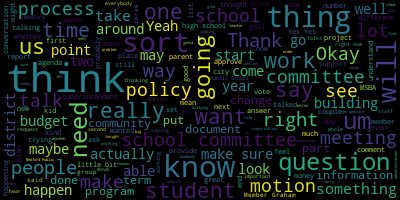

[Graham]: I just put it in the chat.
[Graham]: Thanks.
[Graham]: Just another small clarification before Dr. Cushing dives in here.
[Graham]: The school committee is required to approve all job descriptions and we have not had a wonderful history of doing that work.
[Graham]: So part of
[Graham]: This is to get back on track around making sure that there are controls in place about our job descriptions.
[Graham]: So, I know that the job for the facilities director has been filled for quite some time, but I would also bet money that at that time, the job description didn't come before the school committee because that wasn't part of the typical pathway at that time.
[Graham]: So I think we're going to approve both tonight or amend and approve.
[Graham]: And I agree, I think it's really important to know how these two positions are supposed to work together.
[Graham]: And I do have a couple of questions once Dr. Cushing goes through this one, whenever you're ready, Mayor.
[Graham]: How did it come up so tiny?
[Graham]: Member Graham.
[Graham]: Thank you, so I did.
[Graham]: Pop a couple of changes into the document that you saw in red line, but the 1 I wanted to call out was this the bullet under.
[Graham]: Under 1st, section qualifications, or it should be available in an on call manner 24 hours per day.
[Graham]: I.
[Graham]: My fear is that nobody will want this job.
[Graham]: So my suggestion is that we instead say be available to promptly address planned and unplanned needs across school property.
[Graham]: I'm just going to pop that in the chat if everyone is okay with that.
[Graham]: I think that's probably slightly better language.
[Graham]: And, uh, I'm just looking to see if there were any other, um, questions or comments.
[Graham]: Um, I had, I did have a comment also under essential functions where we say, um, manage the annual service contract process.
[Graham]: Um, I know that we are trying to implement service contract, like preventative maintenance service contracts that will be managed by this team, but we also have a contract cleaning service and my suggestion, um,
[Graham]: It is for Dr. Cushing to separate those two things out so they are different line items because they're completely different kinds of work, in my opinion.
[Graham]: Managing a contract cleaner, I know there's a contracting piece of that, but that's about day-to-day, daily, nightly performance.
[Graham]: of the contract cleaner versus like the monthly pest control folks or, or whatever those other, um, maintenance contracts will be.
[Graham]: So those would be my two suggestions.
[Graham]: Um, and I'd be happy to make a motion to approve as amended unless there are other questions.
[Graham]: Yeah.
[Graham]: I think we're sort of splitting hairs here.
[Graham]: This is a management level position and people applying for these kinds of positions understand that they are expected to be available.
[Graham]: So what if we said be available
[Graham]: for on-call support and to promptly address planned and unplanned needs.
[Graham]: I just am trying to get away from 24 hours a day, seven days a week language.
[Graham]: That's the part that, like, if I was reading that as an applicant, what I would be worried about is how many people work for this place?
[Graham]: Am I going to be called to do every last little thing that goes wrong?
[Graham]: Like, there's a lot of variability in there.
[Graham]: So I feel like maybe if we merge the two together, we'll get to the spirit of that.
[Graham]: Putting it in the chat.
[Graham]: Yeah, the facilities director is our liaison for MSBA today, and I would expect that that would continue to be true, particularly because the facilities director in this, like, two-prong process, the facilities director has responsibility over the maintenance staff directly versus the custodial staff will sit with the assistant director.
[Graham]: So I do think, like, that special projects piece belongs in the facilities director, and I would also say
[Graham]: just as a matter of like good form for job descriptions, it would also say other job-related responsibilities as assigned so that it's clear that this is not like a finite list of what could happen in the job as time goes on.
[Graham]: So I would be happy to add those two amendments.
[Graham]: Motion to approve.
[Graham]: Second.
[Graham]: Yes.
[Graham]: Yes.
[Graham]: I thought I was, I was just going to be my responsibility director.
[Graham]: I had a couple of suggestions on this one as well.
[Graham]: In the section, sorry, I'm just looking for it.
[Graham]: In the essential functions section, there's a bullet about halfway down this is assist in the construction of weather mitigation plans, including snow and ice operations that account for equipment personnel training and materials.
[Graham]: And I think the word.
[Graham]: I think it would be assist in the development of a weather mitigation plan.
[Graham]: And then I would also suggest that there be another sentence added to that that says, like.
[Graham]: Something about.
[Graham]: enacting the weather mitigation plans as appropriate, like, when needed, right?
[Graham]: So it's 1 thing to have an overarching plan that says this is how we're going to handle these events.
[Graham]: And then when events happen, we have to actually do the thing that we put in the plan.
[Graham]: So I would just clarify that.
[Graham]: The other change is the same language about the 24-7 language, which Dr. Cushing may have already gotten.
[Graham]: Okay, thank you.
[Graham]: And that was it.
[Graham]: I'm happy to make a motion to approve unless my colleagues have other questions.
[Graham]: I'm happy to make a motion to approve if there are no other comments.
[Graham]: Yes.
[Graham]: Yes.
[Graham]: Hi, I just wanted to thank Mr. Fallon and Dr. Cushing and Dr. Glusi for hopping on the phone with Jesse.
[Graham]: It's a pretty standard part of the MSBA process where, because we had chapter 74 programs, and we were talking about expansion.
[Graham]: MSBA passes our paperwork essentially over to DESE and then it's pretty standard part of the process where they meet and say, what are you thinking?
[Graham]: What's happening?
[Graham]: What happens next?
[Graham]: That kind of thing.
[Graham]: So that's where this conversation happened.
[Graham]: So it's a pretty routine part of the process.
[Graham]: We will need to take a vote tonight so that I can pass that back to MSBA.
[Graham]: And the Chapter 74 form can be updated, which Dr. Cushing and I will handle.
[Graham]: But I just wanted to say, like, I think this is exactly what the process is supposed to do.
[Graham]: It's supposed to say, like, explore, think about the things that you want to know more about.
[Graham]: And then, you know, you sort of triangulate it and fine-tune.
[Graham]: I have a sister who is a vet, and I was like, oh, veterinary science sounds like a thing that could happen without lots and lots of animals at this stage, like in these early stages.
[Graham]: And then when we talked to Desi, they were like, no, no, you need to have animals.
[Graham]: And it's like, OK, that's really not where we're at right now.
[Graham]: At any rate, the process was very smooth, DESI was very collaborative, they were excited about the other expansions that we talked about and I have a motion when people are done with their questions.
[Graham]: So I did, I did.
[Graham]: And I will put it in the chat.
[Graham]: Oh, that's not the right language.
[Graham]: Let's see.
[Graham]: The motion is to
[Graham]: remove veterinary science from exploration and adjust the expansion timelines for dental assisting criminal justice, protective services, plumbing, HVAC and information systems per the presentation.
[Graham]: So I just put that in the chat.
[Graham]: And so there's, so basically because we sent this initial presentation to MSBA, we will have to make, send them the update and be able to clarify for them what changes happened.
[Graham]: And this motion will do that.
[Graham]: We've got a lot of policies to read tonight, so.
[Graham]: Yes.
[Graham]: Yes.
[Graham]: Yes.
[Graham]: Yes.
[Graham]: Yes.
[Graham]: Yes.
[Graham]: Yes.
[Graham]: Yes.
[Graham]: Motion to approve.
[Graham]: I hear a motion to approve by Mayor Lungo-Koehn.
[Graham]: And is there a motion to sever the minutes?
[Graham]: Motion to sever the minutes.
[Graham]: Okay, so motion to sever the minutes by Dr. Galussi, seconded by
[Graham]: Seconded.
[Graham]: Mayor Lungo-Koehn, I will call the roll.
[Graham]: Jenny Graham, yes.
[Graham]: Mayor Lungo-Koehn.
[Graham]: Yes.
[Graham]: Dr. Galuzzi.
[Graham]: Yes.
[Graham]: Dr. Cushing.
[Graham]: Yes.
[Graham]: John Bowen.
[Graham]: Yes.
[Graham]: Marta Cabral.
[Graham]: Hold on, I cannot unmute now.
[Graham]: OK, yes.
[Graham]: Libby Brown.
[Graham]: Yes.
[Graham]: Marissa Desmond.
[Graham]: Yes.
[Graham]: Maria Dorsey.
[Graham]: Yes.
[Graham]: Brian Hilliard.
[Graham]: Yes.
[Graham]: Tracy Keene.
[Graham]: Yes.
[Graham]: Emily Lazzaro.
[Graham]: Yes.
[Graham]: Nicole Morell.
[Graham]: Aaron Olapade.
[Graham]: And Luke Preissner.
[Graham]: Absent, okay, so we had 13 present.
[Graham]: 13 yet affirmative, zero negative, two absent, the motion to sever passes.
[Graham]: And now we have a motion on the floor to approve the minutes from 9-18, both for the full subcommittee meeting and the communications and community engagement subcommittee by Mayor Lungo-Koehn, seconded by Dr. Galussi.
[Graham]: So I'll call the roll again.
[Graham]: Um, for to approve the minutes.
[Graham]: Jenny Graham.
[Graham]: Yes.
[Graham]: Mayor Lungo-Koehn.
[Graham]: Yes.
[Graham]: Dr. Belusti.
[Graham]: Yes.
[Graham]: Dr. Cushing.
[Graham]: Joan Bowen.
[Graham]: Yes.
[Graham]: Marta Cabral.
[Graham]: Yes.
[Graham]: Libby Brown.
[Graham]: Yes.
[Graham]: Marissa Desmond.
[Graham]: Yes.
[Graham]: Maria Dorsey.
[Graham]: Yes.
[Graham]: Brian Hilliard.
[Graham]: Tracy Keene.
[Graham]: Emily Lazzaro.
[Graham]: Yes.
[Graham]: Erin Olapade.
[Graham]: Luke Preissner, absent.
[Graham]: So 14 in the affirmative.
[Graham]: Jenny, I think you skipped me.
[Graham]: Okay, so 14 in the affirmative, zero in the negative, one absent.
[Graham]: Minutes are approved.
[Graham]: We'll get the other two minutes on the next agenda and we'll take care of those then.
[Graham]: So we have a couple of things to do this evening.
[Graham]: The first is I wanted to provide an update on phase one of the MSBA process.
[Graham]: So as you know, we've been in the eligibility phase.
[Graham]: We submitted all of our deliverables back in July.
[Graham]: And over the course of the rest of the summer and into the fall, we were working with the MSBA to look at and certify our enrollment totals.
[Graham]: Those totals, you know, that sort of set stage for how big of a high school we're planning for and there was some back and forth between us and the folks.
[Graham]: Um, who did their own enrollment study and then really just sort of get to know Medford and some of our plans around, um, things like housing growth and student.
[Graham]: Um, you know, student growth and what we were seeing, so that went so we had to sort of go back and forth with them.
[Graham]: Um, and we finished that process in, um.
[Graham]: you know sometimes we finished our end of that process in August.
[Graham]: The MSBA had work to do on their end.
[Graham]: So they did they did their work and then they notified us in December that they forwarded us an agreement to sign around the enrollment.
[Graham]: So just by way of some information we have about 1,200 students right now and that's been pretty consistent for high school for the high school side.
[Graham]: We requested an enrollment of 1,500 for high school, and we settled on 1,395, which is almost 200 students more than our current 1,200.
[Graham]: So that was a lot of growth and progress for us, which I think sets us up well for the
[Graham]: you know, the, the future and the kinds of things that we're expecting to see here in Medford, both with, um, attracting students who may be selecting other high schools, um, in part, because they go to the building and they see it and they have questions about whether that's the place they want to be, um, as well as, um, providing for, um, expanded, um, families moving into Medford, um, who will want to use the, who will want to use the, um,
[Graham]: uh, the high school as a place to send their children.
[Graham]: So we have some room to grow, which is great and amazing.
[Graham]: Um, and, um, we signed that we signed those agreements.
[Graham]: Um, we have signed, um, um, Dr. Cushing, maybe we could disable the chat as well.
[Graham]: Um, thank you.
[Graham]: And,
[Graham]: We are done with the MSBA Module 1 work.
[Graham]: On Wednesday, the board of the MSBA will hear a recommendation from their staff to move us on to what they call Phase 2 or Module 2, which is where we get to start doing the fun things like bringing on the professionals that will help us through this process.
[Graham]: And we're really excited about that.
[Graham]: So, um, that meeting will happen, um, Wednesday morning, and then, um, there will be meetings to onboard us to MSBA's expectations of the process.
[Graham]: Um.
[Graham]: Shortly thereafter, um, our delegation has sent the MSBA a letter of support on our behalf.
[Graham]: So that was signed by, um, Senator Jalen, representatives Donato, Barbara, and, um.
[Graham]: Garbalee, so the MSBA is in receipt of that letter of recommendation and we're just really excited to be able to do this next thing.
[Graham]: We're so excited, in fact, that we have already started doing the next thing.
[Graham]: So one of the meetings that we had earlier this month was of the OPM selection committee who tackled building
[Graham]: the request for services, which is the very first document in the next phase of the process.
[Graham]: We will review that tonight with a goal to make any amendments that this committee sees fit and get ready to send that to the MSBA tomorrow.
[Graham]: And we're going to send that to them tomorrow so that we can be in the queue for their review, which takes about two weeks, and then we can move forward on an aggressive timeline.
[Graham]: which will, um, have us, um, interviewing and bringing in, um, uh, an owner's project manager here before the end of June.
[Graham]: So, um, it's a, it's a quick time.
[Graham]: It's a quick tight timeline.
[Graham]: I wish it could be even faster than that because getting the team on board is incredibly important.
[Graham]: And that's, you know, that's when the real work can begin.
[Graham]: So, um, the educators have sort of done their work, um, so far with setting the stage around what kind of,
[Graham]: educational opportunities we're trying to provide.
[Graham]: And now we get to the sort of meaty questions that everyone in the community has, which is really exciting.
[Graham]: So that's a quick update on phase one.
[Graham]: Are there any questions?
[Graham]: Okay.
[Graham]: If you think of anything, just, um, let me know and we will, um, we will move on from there.
[Graham]: So in phase two, our next agenda item is, um, is, uh, our plans for phase two.
[Graham]: Um, I covered some of that already, but the, the goal is for us to be, um, moving quickly through this process so that we can onboard the team and really get, um, to the meat of the feasibility study.
[Graham]: Um, Oh, Emily, did you have a question?
[Graham]: Yeah, they that's a great question.
[Graham]: So they, they did a study that looked out.
[Graham]: I want to say it was about 15 years.
[Graham]: And 1 of the things that we went back and forth with them about was exactly that that range.
[Graham]: So.
[Graham]: Our enrollment projections within MPS show that.
[Graham]: mostly in agreement in the first 10 to 15 years of the building's life or from now but that you know as we looked out past 15 years that's where we saw the growth that was more significant so that was part of the conversation that we had particularly around some of the housing developments that are coming down the pike and
[Graham]: Not just like the planned projects and the permitted projects, which they ask about explicitly, but also some of the bigger.
[Graham]: Ideas and places where we are anticipating there could be substantial transformative projects in the city, like the air rights over Wellington.
[Graham]: So those are the kinds of things that we had to go through with them to.
[Graham]: sort of describe and look at.
[Graham]: And so we shared our projections with them and our projections sort of carry us much further into time than that original 15 year span.
[Graham]: So we did make some significant progress there.
[Graham]: So I do believe that based on everything that we were able to use as the basis, we will not be out of space the minute we start or even, you know, in the first couple of decades.
[Graham]: which is great news.
[Graham]: Any other questions about that?
[Graham]: Okay, so in phase two, there's a couple of things.
[Graham]: So I've been doing a lot of reading and the OPM selection committee has been doing a lot of reading as well about what phase two entails.
[Graham]: And it entails, you know, bringing on the owner's project manager.
[Graham]: MSBA has a very prescriptive process for that.
[Graham]: So I've been reading about that process.
[Graham]: The very first step is that we have to draft an RFS.
[Graham]: We'll look at that in just a few minutes.
[Graham]: And then they will have to review that it takes them a couple of weeks to review it and then they'll give us the green light to go ahead and post it.
[Graham]: It has to be posted.
[Graham]: We have to do a site visit.
[Graham]: We will get responses back and.
[Graham]: And then, you know, bring the list down to a short list, interview candidates, and make a selection.
[Graham]: Once we make a selection, we negotiate the price.
[Graham]: At that point, that's not part of the RFS process.
[Graham]: It happens afterwards, which was a surprise to me.
[Graham]: That's most of the RFPs that I work on in my world.
[Graham]: They're sort of two things happen at the same time.
[Graham]: But this process is a little bit different.
[Graham]: And once we have made our selection and we have done those negotiations, we then have to bring our selected OPM to a review panel with MSBA and they have to give us the green light for that selection.
[Graham]: So there is a, those review panel meetings happen on a monthly basis and we are targeting the June meeting to be
[Graham]: all buttoned up and ready to go to get their approval so we can move forward.
[Graham]: Once the OPM is on board, then we work to bring on the designer, which is the architect, so that we can get ready to start the feasibility study.
[Graham]: So that's sort of the trajectory of this next phase is OPM, designer, and then we actually get to the fun stuff.
[Graham]: but I'm looking forward to having the OPM on board because they will help manage some of the things that we are doing here as a committee, some of the outreach and that kind of thing.
[Graham]: So, um, we will, we will look forward to that.
[Graham]: Any questions about phase two process?
[Graham]: Okay.
[Graham]: Um,
[Graham]: I am going to share my screen if I am allowed to do that Dr. Cushing.
[Graham]: Thank you.
[Graham]: And I am going to bring up this RFS template.
[Graham]: I think a couple of things to know about this template is you must use this template.
[Graham]: This is part of the process and the requirement from MSBA.
[Graham]: And they've done a pretty nice job of being able to describe what it is that they're asking for communities to provide input to.
[Graham]: a little bit hard to look at this document because it is in track change mode.
[Graham]: So if that makes you a little bit crazy, I apologize.
[Graham]: That is also a requirement of MSBA so that they can quickly and easily find the changes that we've made.
[Graham]: Here is our RFS, there's a whole bunch of lead-in information here, and then we get to the actual meet.
[Graham]: So, as you can see, everything that is in bold and in italics, that's where they're asking us to provide input, and everything that's struck out and filled in with comments and track changes that were the result of the work that the OPM Selection Subcommittee did.
[Graham]: So this introduction is obviously very boilerplate.
[Graham]: We're saying, this is Medford.
[Graham]: This is Medford high school, that kind of thing.
[Graham]: So those changes have been made.
[Graham]: And then there is the other thing that we are asked to talk about here in this introduction.
[Graham]: Oops, sorry.
[Graham]: Um, are sort of what we think the total cost of the project.
[Graham]: Could be, and this is an estimate, and it's, I think, an effort to give an understanding of.
[Graham]: How big do we think the scope of this could be and so the.
[Graham]: OPM selection committee identified 200 million to 600 million as a very wide range.
[Graham]: It's a wide range because there's a lot of unknown right now.
[Graham]: It's also a very wide range because any number of solutions could be viable for us and we don't know yet which of those solutions
[Graham]: from building something completely new to substantially renovating what we have.
[Graham]: We don't yet know how that will shake out.
[Graham]: And that's what the feasibility study is for.
[Graham]: So this is what we came up with.
[Graham]: And to me, it's just a signal for those folks who are watching that we understand that there could be any number of solutions here.
[Graham]: And we are wanting and interested in exploring them all.
[Graham]: The background is the next section and I will leave this up just for you to read it and I will happily read it out loud to provide a little bit of information about the background of this project.
[Graham]: The city of Medford located in the greater Boston area is a dynamic and growing community that places strong emphasis on educational excellence.
[Graham]: The district is committed to providing an inclusive and innovative learning environment with a focus on preparing students for success in a rapidly changing world.
[Graham]: The Medford High School, established in the mid-20th century, has served as a cornerstone of the city community's financial infrastructure.
[Graham]: However, over time, the building has become increasingly outdated and no longer meets the evolving needs of students, educators, or the broader community.
[Graham]: The facility's aging systems, limited space, and lack of modern learning environments have prompted the city to pursue significant renovations and improvements to the high school campus.
[Graham]: The Medford Comprehensive School Building Committee is comprised of a diverse group of stakeholders, including elected officials, city officials, school district representatives, and community members with a variety of backgrounds.
[Graham]: The committee's primary mission is to oversee the planning and execution of the Medford High School project, ensuring that it meets academic, social, and safety needs of students.
[Graham]: The committee has brought support to also pursue expansion of its portfolio of Chapter 74 programs, its early childhood programs, and to co-locate the current Curtis-Tufts program to increase access to student activities for students at the Curtis-Tufts.
[Graham]: The district's grade configuration includes elementary schools K-5, middle schools 6-8, and the high school 9-12.
[Graham]: The existing high school facility now serves approximately 1,200 students and is expected to see future growth.
[Graham]: The Medford High School campus also houses athletic facilities, fine and performing arts spaces and administrative offices that serve the school community and the community at large.
[Graham]: The district is also pursuing consolidation of our early childhood programming into a single location to alleviate space concerns that are for elementary schools.
[Graham]: As part of an ongoing effort to upgrade the district's infrastructure, the member of public schools submitted a statement of interest to the highlighting the need for a comprehensive solution to address the building shortcomings.
[Graham]: The accepted serves as a reference for the current project and outlines the key areas of concern, such as structural integrity.
[Graham]: accessibility, energy efficiency, and technology integration.
[Graham]: The project aim is to not only enhance the learning environment for students, but also to ensure that the school can serve the community for generations to come.
[Graham]: This request for services seeks to engage a qualified owners project manager who can contribute to the success of this transformative project, providing expertise in design, construction, and project management.
[Graham]: The goal is to create a state-of-the-art educational facility that fosters creativity, collaboration, and academic excellence, and do the project with substantial community input from the community at large and specifically from the students and staff who will work, learn, and thrive in the new building.
[Graham]: Questions or comments about anything that you've seen so far?
[Graham]: Okay, we'll move on the project description objectives and scope of service have some sort of small things.
[Graham]: that we had to fill in, and then we were asked to provide some specific information regarding the identified school, including but not limited to total square footage, site information, age of the building, historical components of the building, and or site, if any, building conditions and problems, current grade structure, enrollment, and MSBA agreed upon enrollment.
[Graham]: So in this section, we've added some information to answer that request, which says the Medford High School and Medford Vocational Technical High School complex was constructed during the late 60s and opened in the fall of 1970.
[Graham]: From its opening in
[Graham]: Until 2017, it housed 2 distinct schools, Medford High School and Medford Vocational Technical High School.
[Graham]: In 2017, the Medford School Committee voted to merge the 2 schools into 1 comprehensive high school.
[Graham]: But despite the forward-looking vision aimed at establishing 1 flagship school to serve as the epicenter of public education for the Medford community, the facility is designed for delivery of instruction in a bygone era, namely the early 70s.
[Graham]: The challenges yielded by its antiquated design have been exacerbated with increasing severity by infrastructure that ranges from deteriorating to inoperable.
[Graham]: MPS envisions Medford High School as a comprehensive high school with a broad array of academic programs and a host of vocational programs sanctioned under Chapter 74.
[Graham]: The 55-year-old aging facility housing MHS is an obstacle to optimal learning conditions.
[Graham]: Medford High School currently serves a combined 1210 students in grades 9 to 12. we also support students in project transition aged 18 to 22 over 50% of our high school students are CTE students.
[Graham]: Additionally, the Medford.
[Graham]: A pre-K program that includes 100 students and a daycare for children's ages two months to five years has an enrollment of 74 students.
[Graham]: Together, the total enrollment of students at MHS is 84.
[Graham]: So we should fix that number.
[Graham]: I will fix that.
[Graham]: The district's agreed upon enrollment for the projection for a new Medford High School is
[Graham]: 1695 of this figure, 1395 are 9 to 12 high school students, 200 are pre-k students, and 100 are students in the district state care program.
[Graham]: Questions about that section?
[Graham]: Okay.
[Graham]: Project objectives under consideration by the owner.
[Graham]: So this, this section actually was a place where we had a lot of discussion in our subcommittee meeting around, like, what are the things that we want to call out?
[Graham]: We, so we've made this list.
[Graham]: I also, in my work to sort of tighten up a few things, did take a peek at a couple of other RFSs from other communities.
[Graham]: So this list is very much open for,
[Graham]: Suggestion and questions, if we, if there's anything else we want to add that helps people understand sort of what we're trying to do.
[Graham]: So we talk about the Northeast collaborative for high performance schools and or the US Green Building Council's lead for schools rating system qualification and analysis of potential.
[Graham]: To be a net zero energy building life cycle costs of operational of operating the school as it relates to future operational budgets.
[Graham]: We are interested in a CM at risk delivery method.
[Graham]: Potentially we have identified potential other sites.
[Graham]: So there's a vetting process that our is going to need to be aware of.
[Graham]: Um, site adjustments required to increase the number of egresses from the property if a new if a new project remains in the current place.
[Graham]: So, as, you know, there's 1 way in and 1 way out of Medford high and that is a significant sort of.
[Graham]: Bottleneck as we flow people in and out of the building, so we would want to be looking at that.
[Graham]: update the serving existing condition information of buildings on the Medford High site, including any hazardous materials.
[Graham]: So there's any number of things that could happen on the campus that they have to be aware of.
[Graham]: Provide design alternatives for renovation, addition, renovation, and new construction options for the high school to meet the educational specification of the school building committee and the MSBA.
[Graham]: provide a schedule, construction cost estimate, operating cost estimate, and life cycle sustainability analysis for each option.
[Graham]: Constraints of the district, it's assumed that school will be in session on this site for the duration of the project.
[Graham]: So phase construction and possible use of swing space may be required.
[Graham]: And then under that bullet, I think the other things that we've talked a lot about is like we will have some extra work to do from a planning perspective.
[Graham]: To ensure learning continuity for all students, but particularly for our vocational programs.
[Graham]: We may need to purchase.
[Graham]: Modular something to support this project, depending on what happens and we know that that's a thing that we might need to consider.
[Graham]: We might need to provide and maintain a, you know, we will need to provide and maintain a secure and positive educational environment during construction and then also sort of seeking somebody that has some experience with phase construction projects.
[Graham]: So.
[Graham]: That is sort of the list of things that the OPM Selection Committee came up with.
[Graham]: If there are any other thoughts or suggestions here, I'm happy to take them.
[Graham]: W-E-L-L, Marista?
[Graham]: Yes.
[Graham]: Yes.
[Graham]: OK.
[Graham]: Perfect.
[Graham]: I added that.
[Graham]: OK.
[Graham]: Updating evaluation of CM at risk delivery method, including a final recommendation.
[Graham]: Thank you, Philip.
[Graham]: That's great.
[Graham]: Thank you, Libby.
[Graham]: Okay, thank you.
[Graham]: Any other questions there.
[Graham]: Okay, so the next section that requires our attention is the evaluation criteria.
[Graham]: So, in this section, we had a lot of discussion about this as well and you can see that a lot of this does come from.
[Graham]: you know, come from MSBA's template.
[Graham]: The text in green was added.
[Graham]: The other thing that we talked a lot about was the point scale, and this will be used by the OPM Selection Committee to rate and evaluate all the bids that we receive.
[Graham]: And sort of the calculus of how we put this together was to award
[Graham]: Um, standard sort of thresholds of points for different things that range from, like.
[Graham]: We need to have this, but it's very likely everyone's going to have this skill to, um, the, the more customized things at higher number of points.
[Graham]: So.
[Graham]: Um, if you look at this, what you'll see is some 10 point option, some 10 point items to me, those are things that feel very, uh, like.
[Graham]: You know, sort of table stake key, right?
[Graham]: Like an, who is doing this work all the time is more than likely going to have those things.
[Graham]: The 20 point scale sort of steps up a little bit where now there is some variability and.
[Graham]: Discretion in terms of how those things might get delivered.
[Graham]: 30 points does talk a little bit more about.
[Graham]: You know.
[Graham]: their overall capacity to do these kinds of projects.
[Graham]: And then, you know, sort of some bigger point values around key personnel who will work with us at 40 points, as well as 50 points for past performance.
[Graham]: And I stole this from Arlington, which you can see, so I'll fix that.
[Graham]: St.
[Graham]: Medford.
[Graham]: So,
[Graham]: The selection committee felt like this sort of point allocation.
[Graham]: Worked, but I would be very curious if there's anyone in the room who has other thoughts or suggestions about.
[Graham]: About that, because now is the time to sort of set that methodology in place.
[Graham]: So what we have learned through this process so far is that there is no cost response that comes with bids.
[Graham]: So this is a process where we evaluate, it's a value-based contract.
[Graham]: And once you select somebody,
[Graham]: Then you move into a phase where you negotiate with them and you talk about price.
[Graham]: Having said that part of the documents that will be delivered with this are all of the public exhibits with MSPA and it's well on record that we have a certain.
[Graham]: amount of money set aside for the feasibility study, which we had to break down to say this much is for the OPM, this much is for the designer, and this much is for incidental.
[Graham]: So all of that will be well known to people in terms of what our scope and budget is, but my understanding is that all of that price conversation comes after you make your selection first, which is a little bit unusual, but that's how this process works.
[Graham]: There are a handful of, yeah, you, you didn't miss it.
[Graham]: It's not there.
[Graham]: There are a handful of other attachments that need to come together with this that are provided by MSBA that are not here right now, but they, we will have to provide those as well.
[Graham]: Any other questions about the evaluation points and methodology?
[Graham]: I know it's a lot of, like, meat to take in.
[Graham]: The next section does talk about a shortlist, and Philip, to your question about cost, this is where I thought that the cost conversation would happen is once you get to the shortlist and you're evaluating the
[Graham]: proposals, and even then, that's not what happens in this process.
[Graham]: So basically, once we get down to the short list of candidates and we invite them in for finalist interviews, the scale there is the quality of the reference checks for 30 points and 70 points for the quality of the finalist presentation.
[Graham]: And then you have to make a selection before you get into that cost discussion.
[Graham]: So that has been edited and updated based on some of the work the team
[Graham]: Has done since our meeting to get clarification on that.
[Graham]: Much of this is.
[Graham]: Boilerplate and the next the next component of the of what is here is the list of who who is on the committee.
[Graham]: So we have to name those folks and talk a little bit about some of the details of what we plan to do.
[Graham]: In terms of how the shortlist will be done, so we're planning for 2 hour interviews and then how how we will actually negotiate.
[Graham]: The, the price, and so I actually did steal from Arlington from Arlington's in terms of how we will do this, but essentially the chair of the.
[Graham]: Uh, review committee, the CFO of NPS, the superintendent and the budget director work together to negotiate a fee, um, with the 1st ranked, um, respondent.
[Graham]: So.
[Graham]: Um, all the rest of this came from Arlington, um, their RFS went through the same process.
[Graham]: So I, um, I felt good about sort of pulling all of that in.
[Graham]: Um, and, um.
[Graham]: Then the next thing that is outlined here is a timeline.
[Graham]: So this timeline does assume that it will take the MSBA two weeks from Wednesday, essentially, to do their review.
[Graham]: And it takes us about a week to get things posted.
[Graham]: uh, from a procurement perspective.
[Graham]: So I've given us a week of buffer, um, and then, uh, have sort of cascaded from there through, um, the series of activities and tried to plan.
[Graham]: Um, you'll see, there's like sort of a gap right in here.
[Graham]: And, um, that gap is, um, certainly, um, due to April vacation, um, knowing that that is a really hard time for people.
[Graham]: So.
[Graham]: I felt okay about that, especially because the OPM review panel meeting that we would be eligible to attend is not until 6-2, so we had plenty of time to navigate that April vacation timeframe.
[Graham]: Questions about the timeline?
[Graham]: Okay, just about everything else is sort of filling in the name of our procurement officer.
[Graham]: And, oh, sorry, Phil, did you have a question?
[Graham]: Sure.
[Graham]: Thank you.
[Graham]: There was a question as well about certifications.
[Graham]: So there was a in here it's asked if we asked us to say what certifications we require.
[Graham]: And I did a little bit of sleuthing and did talk to our legal counsel as well.
[Graham]: And this is very similar to what Arlington articulated.
[Graham]: So I don't think there's anything
[Graham]: Um, particularly specific here that we need to require, um, instead to ask them what their certifications are.
[Graham]: Um, so I would actually, if anybody who is more in this world than I am has any suggestions, if there's anything specific there, I'm happy to take those suggestions.
[Graham]: Okay.
[Graham]: Let's see.
[Graham]: I think that is just about everything that was changed.
[Graham]: Oh, Paul?
[Graham]: It's very hard to, I love track changes, but at some point it gets to be like too much.
[Graham]: So we'll clean up the formatting and everything once the MSBA weighs in.
[Graham]: And, you know, we will provide people our statement of interest.
[Graham]: We will provide them our educational profile and our Chapter 74 forms.
[Graham]: All of those things will go with the package in addition to the forms that and contracts that MSBA requires.
[Graham]: So all of that will go with this package when it goes out the door.
[Graham]: And that's it.
[Graham]: Are there any other questions about this document?
[Graham]: Okay.
[Graham]: So my goal would be for us to take a vote to approve this as amended so that it can go to the MSBA tomorrow and be in queue for them.
[Graham]: one day before they move us into the next phase so that we're in line and ready to go.
[Graham]: Is there a motion to do so?
[Graham]: Emily?
[Graham]: OK, motion to approve by Emily, seconded by?
[Graham]: Erin?
[Graham]: I'm going to stop the share so I can find my list.
[Graham]: Uh, let's see here.
[Graham]: Okay.
[Graham]: Um, Mayor Lundo Kern.
[Graham]: Yes.
[Graham]: Dr. Glusi.
[Graham]: Yes.
[Graham]: Dr. Cushing.
[Graham]: Joan Bowen.
[Graham]: Marta Cabral.
[Graham]: Yes.
[Graham]: Libby Brown.
[Graham]: Yes.
[Graham]: Marissa Desmond.
[Graham]: Yes.
[Graham]: Maria Dorsey.
[Graham]: Yes.
[Graham]: Brian Hilliard.
[Graham]: Tracy Keene.
[Graham]: Emily Lazzaro.
[Graham]: Nicole Morell.
[Graham]: Yes.
[Graham]: Aaron Lopate.
[Graham]: Aaron.
[Graham]: Luke Prisner absent, uh, Jenny Graham.
[Graham]: Yes, so 14 in the affirmative, 1, 0 in the negative, 1 absent, uh, motion passes.
[Graham]: So I will.
[Graham]: get this in the queue so that we can move, which is so exciting.
[Graham]: The last thing on our list, as we were working through, as the OPM Selection Subcommittee was working through the creation of this document, we did have some discussion around the size of that committee.
[Graham]: So right now, there are three voting members on the committee.
[Graham]: It's myself, Dr. Cushing, and Aaron.
[Graham]: We have 2 non-voting members on the committee, Fiona Maxwell, who's our Chief Procurement Officer, and John McLaughlin, who was not able to be here tonight.
[Graham]: But we did talk a bit about whether it made sense for there to be 1 or 2 additional folks on this committee.
[Graham]: probably two so that we can keep an odd number just so that the group that is sort of vetting all of this gets just a little bit bigger than it is right now.
[Graham]: Um, and I think the vision is that this group would be the group that sort of sits through all of the reviews, um, and, um, certainly, um, does all of the evaluation to bring a recommendation back to this committee before it's all said and done.
[Graham]: But, um.
[Graham]: That's I think it will be a significant amount of work and I am particularly interested in making sure that, um, some of the folks that we put on this committee to, um,
[Graham]: Advise in this process might be good.
[Graham]: you know, might be good additions to this group.
[Graham]: So, um, the, the recommendation from, um, the subcommittee was that we add two voting members and maybe one non-voting member to the, to the group, um, to make sure that we have enough eyes on this really important decision.
[Graham]: Um, so I bring that back to this group because this group voted on that committee initially.
[Graham]: So we also would, um, need to vote to,
[Graham]: make a change.
[Graham]: So I will open that up if there's any questions or comments.
[Graham]: I think that will depend on the committee.
[Graham]: So I think whoever is on the committee, what we will have to do between now and the time this is published is make sure that there is availability and we can block those times.
[Graham]: But I think there is some flexibility on that timeline.
[Graham]: And I'm sure it's not uncommon for these kinds of things to happen, not inside the working day.
[Graham]: So, I think we have some flexibility there.
[Graham]: I just, you know, the timeline will will be.
[Graham]: Fast and pretty tight, even if we are doing it after hours.
[Graham]: All right.
[Graham]: So, so there's a motion to add Libby Brown to the committee.
[Graham]: Second seconded by Marissa there.
[Graham]: Any questions or comments about that motion from the rest of the group?
[Graham]: Well, then I will call the roll.
[Graham]: Mayor Lungo-Koehn.
[Graham]: Yes.
[Graham]: Dr. Galusi.
[Graham]: Yes.
[Graham]: Dr. Cushing.
[Graham]: Joan Boland.
[Graham]: Yes.
[Graham]: Marta Cabral.
[Graham]: Yes.
[Graham]: Libby Brown.
[Graham]: Yes.
[Graham]: Marissa Desmond.
[Graham]: Maria Dorsey.
[Graham]: Yes.
[Graham]: Brian Hilliard.
[Graham]: Tracy Keene.
[Graham]: yes emily lazaro yes nicole morrell yes arnold potting yes luke prisner absent jenny graham yes 14 in the affirmative zero in the negative one absent welcome libby um thank you so um i do think um we are still
[Graham]: thinking about one additional voting member and one non-voting member to add to this group?
[Graham]: Are there people who are really excited to put their hand in the air and participate in this process?
[Graham]: Or I see a hand from member Rousseau, who is a non-voting member, so he would be filling the non-voting spot.
[Graham]: Are there other folks who are excited about this choice, about this opportunity?
[Graham]: Okay, nomination for Member Ruseau by Mayor Lungo-Koehn.
[Graham]: Is there a second?
[Graham]: Second by Dr. Cushing.
[Graham]: Okay, roll call.
[Graham]: Mayor Lungo-Koehn.
[Graham]: Yes.
[Graham]: Dr. Galusi.
[Graham]: Yes.
[Graham]: Dr. Cushing.
[Graham]: Yes.
[Graham]: Yes.
[Graham]: Yes.
[Graham]: Yes.
[Graham]: Luke Prisner absent.
[Graham]: Jenny Graham, yes.
[Graham]: So 14 in the affirmative, 0 in the negative, 1 absent.
[Graham]: Welcome, Paul, to the team.
[Graham]: And so I think there's maybe one more voting member to appoint.
[Graham]: And I did have a brief conversation with Dr. Galussi about whether she wanted to be that person.
[Graham]: And I think we would love to have her, but she has a very full plate right now.
[Graham]: So I'm totally open to hearing from you, Dr. Galussi, if you have a preference.
[Graham]: Are there other folks who might want to give Dr. Galusi some free time and join us instead?
[Graham]: I did have a couple of email exchanges with Luke.
[Graham]: And what he was referring to was sort of the creation of the document and willingness to help support that.
[Graham]: So I didn't read it that way.
[Graham]: And I know he was unable to come.
[Graham]: So I would hate to put him on the spot like that.
[Graham]: And he did see the agenda.
[Graham]: So if he had an inkling of that, I'm sure that he would have let me know.
[Graham]: And I do expect that he will be very active on the communications and community engagement subcommittee.
[Graham]: So.
[Graham]: I didn't know we have a couple of other architects in our midst.
[Graham]: Is that true?
[Graham]: I want to put you on the spot, Brian.
[Graham]: Well, I think to your point, this is the first procurement.
[Graham]: This is the OPM selection committee.
[Graham]: There will be another whole procurement to bring on the designer.
[Graham]: And so maybe we ask Dr. Galusi to be part of this process, and we plan to shift that selection committee to give people a break and pull you in at that time when we are onboarding that designer.
[Graham]: Well, we'll hire you in just a few weeks, hopefully, for that process.
[Graham]: So is there an official nomination to add Dr. Galusi to the OPM selection committee?
[Graham]: OK, so nominated by Dr. Cushing.
[Graham]: Great.
[Graham]: OK, so to appoint Dr. Galusi, Mayor Lungo-Koehn.
[Graham]: Yes.
[Graham]: Dr. Galusi.
[Graham]: Yes.
[Graham]: Dr. Cushing.
[Graham]: Joan Bowen.
[Graham]: Yes.
[Graham]: Marta Cabral.
[Graham]: Yes.
[Graham]: Libby Brown.
[Graham]: Yes.
[Graham]: Maria Dorsey.
[Graham]: Yes.
[Graham]: Brian Hilliard.
[Graham]: Tracy Keene.
[Graham]: Emily Lazzaro.
[Graham]: Yes.
[Graham]: Nicole Morell.
[Graham]: Yes.
[Graham]: Erin Olapodig.
[Graham]: Luke Prisner, absent.
[Graham]: Jenny Graham, yes.
[Graham]: 14 in the affirmative, 0 in the negative, 1 absent.
[Graham]: Motion passes.
[Graham]: So welcome all to the committee.
[Graham]: I will reach out to you about availability so we can put some calendar blocks on in the coming days so we can get ready for this next set of steps.
[Graham]: Are there any other questions before there is the motion to adjourn?
[Graham]: We'll send you a note and let you know the outcome of the board meeting on Wednesday.
[Graham]: And we will also prepare a press release from the committee to the community with hopefully good news.
[Graham]: Is there a motion to approve?
[Graham]: By Mayor Lungo-Koehn, seconded by Dr. Galusi.
[Graham]: Um, okay.
[Graham]: One more roll call.
[Graham]: Mayor Lungo-Koehn.
[Graham]: Yes.
[Graham]: Dr. Galusti.
[Graham]: Yes.
[Graham]: Dr. Cushing.
[Graham]: Joan Bowen.
[Graham]: Marta Cabral.
[Graham]: Yes.
[Graham]: Libby Brown.
[Graham]: Yes.
[Graham]: Marissa Desmond.
[Graham]: Yes.
[Graham]: Maria Dorsey.
[Graham]: Yes.
[Graham]: Brian Hilliard.
[Graham]: Tracy Keene.
[Graham]: Emily Lazzaro.
[Graham]: Yes.
[Graham]: Nicole Morell.
[Graham]: Yes.
[Graham]: Yes.
[Graham]: Yes.
[Graham]: Yes.
[Graham]: Yes.
[Graham]: Yes.
[Graham]: Yes.
[Graham]: Yes.
[Graham]: Yes.
[Graham]: Yes.
[Graham]: Yes.
[Graham]: Yes.
[Graham]: Yes.
[Graham]: Yes.
[Graham]: Yes.
[Graham]: Yes.
[Graham]: Yes.
[Graham]: Yes.
[Graham]: Yes.
[Graham]: Yes.
[Graham]: Yes.
[Graham]: Yes.
[Graham]: Yes.
[Graham]: Yes.
[Graham]: Yes.
[Graham]: Yes.
[Graham]: Yes.
[Graham]: Yes.
[Graham]: Yes.
[Graham]: Yes.
[Graham]: Yes.
[Graham]: Yes.
[Graham]: Yes.
[Graham]: Yes.
[Graham]: Yes.
[Graham]: Yes.
[Graham]: Yes.
[Graham]: Yes.
[Graham]: Yes.
[Graham]: Yes.
[Graham]: Yes.
[Graham]: Yes.
[Graham]: Yes.
[Graham]: Yes.
[Graham]: Yes.
[Graham]: Yes.
[Graham]: Yes.
[Graham]: Yes.
[Graham]: Yes.
[Graham]: Yes.
[Graham]: Yes.
[Graham]: Yes.
[Graham]: Yes.
[Graham]: Yes.
[Graham]: Yes.
[Graham]: Yes.
[Graham]: Yes.
[Graham]: Yes.
[Graham]: Yes.
[Graham]: Yes.
[Graham]: Yes.
[Graham]: Yes.
[Graham]: Yes.
[Graham]: Yes.
[Graham]: Yes.
[Graham]: Yes.
[Graham]: Yes.
[Graham]: Yes.
[Graham]: Yes.
[Graham]: Yes.
[Graham]: Yes.
[Graham]: Yes.
[Graham]: Yes.
[Graham]: Yes.
[Graham]: Yes.
[Graham]: Yes.
[Graham]: Yes.
[Graham]: Yes.
[Graham]: Yes.
[Graham]: Yes.
[Graham]: Yes.
[Graham]: Yes.
[Graham]: Yes.
[Graham]: Yes.
[Graham]: Yes.
[Graham]: Yes.
[Graham]: Yes.
[Graham]: Yes.
[Graham]: Yes.
[Graham]: Yes.
[Graham]: Yes.
[Graham]: Yes.
[Graham]: Yes.
[Graham]: Yes.
[Graham]: Yes.
[Graham]: Yes.
[Graham]: Yes.
[Graham]: Yes.
[Graham]: Yes.
[Graham]: Yes.
[Graham]: Yes.
[Graham]: Yes.
[Graham]: Yes.
[Graham]: Thank you, Dr. Cushing.
[Graham]: I'm going to read the meeting notice, Dr. Cushing.
[Graham]: I think there's some folks in the waiting room if you want to let them in.
[Graham]: So I will read the meeting notice so we can get started.
[Graham]: Please be advised that on Tuesday, February 11th, 2025 at 7 p.m., there will be an MSBA OPM selection subcommittee meeting held through remote participation via Zoom.
[Graham]: The meeting can be
[Graham]: Viewed live on Medford Public Schools' YouTube channel, through Medford Community Media on your local cable, which is Comcast channel 98 or 22, and Verizon channel 43, 45, or 47, the meeting will be recorded.
[Graham]: Since the meeting will be held remotely, participants can call or log in by using the following link or call-in number.
[Graham]: The meeting ID is 919-3243-1716.
[Graham]: Questions can be submitted during the meeting by emailing Jenny Graham at medford.k12.ma.us.
[Graham]: Those submitting must include your first and last name, your Medford Street address, and your question or comment.
[Graham]: I'm going to go ahead and call the roll.
[Graham]: Jenny Graham here.
[Graham]: Fiona Maxwell.
[Graham]: We have Fiona.
[Graham]: Erin Lopate.
[Graham]: Sorry, Jenny, I am here.
[Graham]: Sorry.
[Graham]: Thank you, Fiona.
[Graham]: Peter Cushing?
[Graham]: Present.
[Graham]: John McLaughlin?
[Graham]: John is here.
[Graham]: And Bob Dickinson?
[Graham]: See Bob as well.
[Graham]: So three voting members present, zero absent.
[Graham]: We have a quorum.
[Graham]: So, what I was hoping to do tonight was a couple of things.
[Graham]: So, 1st, provide some updates and talk a little bit about this next phase of the project for for and then actually.
[Graham]: Look at.
[Graham]: a drafted deliverable that we'll need to complete for the MSBA.
[Graham]: I'll talk about that in just a second.
[Graham]: Then implicit in all of that will be to discuss our vetting and selection process.
[Graham]: My hope for tonight is that we can come out of it with an RFS that is pretty well complete and ready to be vetted and viewed by MSBA, which is one of the steps in the process.
[Graham]: But between now and then we have a couple of things to look at in the RFS.
[Graham]: So we'll get to that in just a minute.
[Graham]: In terms of sort of what happens in this next module, there's two components, two big components of module 2.
[Graham]: One is to hire the OPM and the other is to hire the designer.
[Graham]: So we're not going to worry about the designer just yet because we have to hire an OPM before that can happen.
[Graham]: I believe that
[Graham]: We will be recommended for approval at the board meeting coming up on the 26th of February and that will be our invitation to the next phase of the project.
[Graham]: So this is module 2 of MSBA, which is where we hire our team.
[Graham]: That's actually going to help do the lion's share of the work.
[Graham]: So.
[Graham]: I'm excited for the next phase because I think our work gets easier when we have the professionals on board who do this for a living instead of all of us having to figure out and learn.
[Graham]: all the moving parts of the MSBA process.
[Graham]: So once that happens, we will have to do a number of things.
[Graham]: So we will have to identify an OPM selection committee, which we actually have already done.
[Graham]: It is this group.
[Graham]: We identified and voted on this back in September.
[Graham]: As I think about the work ahead, and we can maybe come back to this at the end, but as of right now, we have three voting members on this committee, myself, Aaron, and Dr. Cushing, and we will make the selection of the OPM.
[Graham]: So that's actually, in my mind, quite a small group of people to pick what becomes a really central figure in our process.
[Graham]: We may want to think about at our next full committee meeting, adding some number of voting members to this committee members.
[Graham]: So, thank you for joining.
[Graham]: And certainly, you know.
[Graham]: The more the merrier is probably not the right thought process to make this happen, but I do think we should welcome.
[Graham]: Some perspectives outside of school administration and elected officials to the process.
[Graham]: So we have to think about that.
[Graham]: We can come back to that at the end once we have once I can give you a little bit more information about.
[Graham]: Um, what this process is and what the and more and I think as importantly, what the timeline is.
[Graham]: So, um, once we get sort of flagged through to this next phase, we will have to do a couple of things to MSBA.
[Graham]: We have to designate our procurement admin.
[Graham]: Um, that's Fiona.
[Graham]: So we know who that is.
[Graham]: We just have to officially put that in writing and move along.
[Graham]: We have to let them know who our selection committee is, which we will be able to do pretty quickly.
[Graham]: And then we will have to give them a draft of what they call RFS, request for services, that shows our redlined version of their template.
[Graham]: So MSBA does require that we use their template.
[Graham]: It's quite prescriptive.
[Graham]: It made it actually quite easy to fill out, which was wonderful as I was working on this with Will from our communications team.
[Graham]: So we will have to
[Graham]: seek their approval on how we have filled out this document.
[Graham]: The document includes any number of things.
[Graham]: Once they approve, we will then have to advertise this in three places.
[Graham]: We will have to advertise it in what the MSBA calls the central register.
[Graham]: We'll have to advertise this in a newspaper, and we'll have to advertise this on Combis is my understanding.
[Graham]: Generally, they do recommend that we hold an onsite meeting for interested bidders.
[Graham]: We will then have to go through a process, which we do have to lay out in the RFS where we.
[Graham]: Score all of our.
[Graham]: All of the bid submissions that we receive, we will then down select to a shortlist service set and invite those folks into visit with us live.
[Graham]: We will then.
[Graham]: Call references, make a selection and bring that selection to the.
[Graham]: the OPM review panel that is hosted by the MSBA on a monthly basis.
[Graham]: Once they agree with our selection through that process, then we're free to move into executing a contract.
[Graham]: So that's like the process in a teeny tiny nutshell.
[Graham]: I'll stop there and find out if there are any questions.
[Graham]: Good.
[Graham]: And Fiona, I think I did have one question for you.
[Graham]: It talked about advertising in the Central Register, the newspaper, and Combis.
[Graham]: Am I correct in assuming that your office will be able to handle that upon issue?
[Graham]: Yep.
[Graham]: OK, perfect.
[Graham]: So really, having said all of that, this team will have its work cut out for us as we look at the bid submissions and pick our partner in all of this as we go forward.
[Graham]: So I'm going to share my screen and walk through the RFS with you all.
[Graham]: I'm happy to share a copy of this once we're done.
[Graham]: I meant to share it before now, but I was still working on it like five minutes ago.
[Graham]: But I think overall, what we need to make sure that we're doing is giving bidders an opportunity to know sort of what we're looking for and what we're seeking, as well as sort of staying compliant with
[Graham]: what the MSBA is asking us to do.
[Graham]: So let me pull that up real quick.
[Graham]: I'm going to apologize in advance because it's a little, little wacky with all of the red lines, but that's okay.
[Graham]: Can everybody see my screen?
[Graham]: Yeah.
[Graham]: Okay, so this is the template that the provides and the 1st piece is.
[Graham]: Instructions, right?
[Graham]: So.
[Graham]: We have to follow the instructions.
[Graham]: We have to review this RFS and make sure that all of our owner specific information is in here.
[Graham]: We need to review this RFS with our legal counsel to ensure it's in compliance with our federal, state and local laws.
[Graham]: for the school committee, that's Howard Greenspan.
[Graham]: He is our school committee attorney.
[Graham]: So unless, Fiona, there is somebody else that typically isn't involved from a procurement perspective, my thought would be to pass this by Howard to make sure that he is on board.
[Graham]: Do you agree with that?
[Graham]: 100%, yes.
[Graham]: He is, yeah.
[Graham]: OK, great.
[Graham]: So we'll have to submit this red line version for MSBA's review prior to advertisement.
[Graham]: Yes.
[Graham]: We will also include a series of attachments, which I'll talk about later.
[Graham]: We'll have to, a copy of the final RFS and advertisement needs to be submitted to the MSBA with a sample narrative summary and checklist.
[Graham]: So we'll have to get that done.
[Graham]: An owner should allow a minimum of 10 business days for the MSBA to review the RFS and
[Graham]: we should not be advertising until MSBA approves.
[Graham]: So those are our sort of rules and requirements here.
[Graham]: So as we move forward here, essentially in this template, everything that's in bold and italics are places where the MSBA is telling us this is for you to fill out.
[Graham]: So this first section is pretty straightforward.
[Graham]: in terms of just replacing our name and that kind of thing.
[Graham]: This part right here, it does talk about potential approved project may include a renovation of an existing school, a renovation of an addition of an existing school and or new construction, which is why these total project costs have a big range.
[Graham]: This is a range that
[Graham]: I looked at based on what I see in the marketplace, because if we are going to pursue some sort of renovation, it might be much smaller.
[Graham]: If we're pursuing a completely new build, it would be much bigger.
[Graham]: And it's all dependent on the solution that we all agree to.
[Graham]: Questions about that so far?
[Graham]: Okay.
[Graham]: Then it asks for a background.
[Graham]: So this did right with the help of my technological friends over at CHAP-GPT, who have the benefit of all of our documents posted to the website.
[Graham]: But essentially what they are asking for here is some
[Graham]: Some background information about the city, the school building committee, our grade configuration, just things that are pertinent.
[Graham]: So I will read what I've written.
[Graham]: I take no offense if you think it's terrible, but we can wordsmith it as we go.
[Graham]: The city of Medford, located in the greater Boston area, is a dynamic and growing community that places strong emphasis on educational excellence.
[Graham]: The district is committed to providing an inclusive and innovative learning environment with a focus on preparing students for success in a rapidly changing world.
[Graham]: The Medford High School, established in the mid-20th century, has served as a cornerstone of the community's educational infrastructure.
[Graham]: However, over time, the building has become increasingly outdated and no longer meets the evolving needs of students, educators, or the broader community.
[Graham]: The facility's aging systems, limited space, and lack of modern learning environments have prompted the city to pursue significant renovations and improvements to the high school campus.
[Graham]: The Medford Comprehensive High School Building Committee is comprised of a diverse group of stakeholders, including elected officials, city officials, school district representatives, and community members with a variety of backgrounds.
[Graham]: The committee's primary mission is to oversee the planning and execution of the Medford High School project, ensuring that it meets academic, social, and safety needs of students.
[Graham]: The committee has broad support to also pursue expansion of its portfolio of Chapter 74 programs, its early childhood programs, and to co-locate the current Curtis Tufts program to increase access to programming for students of this school.
[Graham]: I used program a lot in that sentence, so I will fix that.
[Graham]: The district's grade configuration includes elementary schools K-5, middle school 6-8, and the high school grades 9-12.
[Graham]: The existing high school facility now serves approximately 1,200 students and is expected to see future growth.
[Graham]: The Medford High School campus also houses athletic facilities, art spaces, and administrative offices that serve the school community and the community at large.
[Graham]: As part of the ongoing effort to upgrade the district's infrastructure, the Medford Public Schools submitted
[Graham]: A statement of interest to the MSBA highlighting the need for a comprehensive solution to address the building's shortcomings.
[Graham]: The accepted SOI serves as a reference for the project and outlines key areas of concern such as structural integrity, accessibility, energy efficiency, and technology integration.
[Graham]: The project aims not only to enhance the learning environment for students, but also to ensure that the school can serve the community for generations to come.
[Graham]: This request for services seeks to engage qualified professionals who can contribute to the success of this transformative project, providing expertise in design, construction, and project management.
[Graham]: The goal is to create a state-of-the-art educational facility that fosters creativity, collaboration, and academic excellence, and do the project with substantial community input from the community at large, and specifically from the students and staff who will work, learn, and thrive in the new building.
[Graham]: Um, that's questions things that are missing.
[Graham]: I know that was a lot.
[Graham]: Let's see.
[Graham]: Arts.
[Graham]: Fine.
[Graham]: OK.
[Graham]: Any other questions thoughts about that lead in.
[Graham]: Okay.
[Graham]: Um.
[Graham]: Um.
[Graham]: This section is pretty straightforward.
[Graham]: The next thing that we have to provide is to provide specific information regarding the identified school, including, but not limited to the total square footage, site information, age of the building, historical components of the building and or site, if any building conditions and problems, grade structure and enrollment and MSBA agreed upon enrollment.
[Graham]: So.
[Graham]: We have a starting point here that says the Medford High School and Medford Vocational Technical High School complex was constructed during the late 60s and opened in the fall of 1970.
[Graham]: From its opening until 2017, it housed two distinct schools, Medford High School and Medford Vocational Technical High School.
[Graham]: In 2017, the Medford School Committee voted to merge the two schools into one comprehensive high school.
[Graham]: But despite the forward-looking vision aimed at establishing one flagship school to serve as the epicenter of public education for the Medford community, the facility is designed for the delivery of instruction in a bygone era, namely the early 70s.
[Graham]: The challenges yielded by its antiquated design have been exacerbated by the increasing severity of infrastructure that ranges from deteriorating to inoperable.
[Graham]: MPS envisions Medford High School as a comprehensive high school with a broad array of academic programming and a host of vocational educational programs sanctioned under MGL Chapter 74.
[Graham]: But the 55-year-old facility housing MHS is an obstacle to optimal learning conditions.
[Graham]: Medford High School currently serves a combined 1210 students in grades 9 through 12.
[Graham]: Over 50% of these students are CTE students.
[Graham]: Additionally, MHS houses a preschool program that includes X students and a daycare for children ages X to X that has an enrollment of X together.
[Graham]: This total enrollment of current students is Y. So we have a few blanks to fill in there.
[Graham]: The district's agreed upon enrollment projection for a new MHS is 1800 students of this figure 1395 are grade 9 to 12 high school students.
[Graham]: 200 are pre K students and 100 students are students in district state care.
[Graham]: So we need to shore up those numbers based on our enrollment certification.
[Graham]: But those are placeholders to describe what we've got going on there.
[Graham]: Member Graham.
[Graham]: Yeah.
[Graham]: Any other thoughts about what might need to be added there?
[Graham]: Yes.
[Graham]: That's a great suggestion.
[Graham]: Do that.
[Graham]: We can come back to this too if we get to the end and think like, oh, there's something else we should be adding.
[Graham]: So.
[Graham]: You don't have to speak now or forever hold your peace.
[Graham]: The next section is our project objectives under that we're thinking about and they did provide a list of things that we might want to put in here.
[Graham]: I sort of broadly accepted that list.
[Graham]: And I just reordered them, so identification of community concerns that may impact study options.
[Graham]: So, I think we want to be very upfront that we care about the community input of this process.
[Graham]: The Northeast collaborative for high performing schools and or the US Green Building Council leads for school certification system.
[Graham]: The life cycle costs of operating the school as it relates to future operational budgets, of course, that's very important.
[Graham]: A CM at risk delivery method.
[Graham]: So I do think that is a growing trend in school buildings.
[Graham]: And given the uncertainty in the environment, we probably definitely want our CMs on board sooner than later.
[Graham]: And then planning to ensure learning continuity for all students and particularly for our vocational programs.
[Graham]: So I think that is 1 of those things that feels very unique to us in other schools.
[Graham]: If you need to display students, you have the option of temporary trailers.
[Graham]: You have many options.
[Graham]: You can't you can't put the culinary program in a temporary trailer and think that they're going to be able to continue their education.
[Graham]: So.
[Graham]: I do think we have some particular things there.
[Graham]: Vetting potential alternate sites.
[Graham]: So we have identified a handful of alternate site potentials, and we would want to make sure we're doing our due diligence about that.
[Graham]: And then I did add in site adjustments required to increase the number of egresses from the property if the new project remains
[Graham]: in place, meaning if Medford High is going to continue to be at 489 Winthrop Street, um, I think one thing that we've talked about is, um, the need for an additional egress and how very complicated that actually is given its where it sits and how it's situated.
[Graham]: Um, so I thought that might be a good thing to call out here.
[Graham]: It's like something special that we should be
[Graham]: making people aware of as they think about their, their bid responses to us.
[Graham]: Did anybody come up with anything else that we might want to add?
[Graham]: Okay, we can come back if anybody is inspired.
[Graham]: All the rest of this is all very, very standard until we get to evaluation criteria.
[Graham]: And what we are required to do is be transparent about how we will rate and evaluate our bids.
[Graham]: And the list here was broadly provided by the template.
[Graham]: So you can see that the changes here are really my starting place of points.
[Graham]: And then really the only thing I added was like this piece about knowledge and experience with the CM at-risk procurement methodology.
[Graham]: Um, so before I, like, go through all of these top to bottom, I actually worked sort of from the bottom up and I. Generally assigned 10 points to the thing that I feel like.
[Graham]: We're sort of compulsory, so, um.
[Graham]: Mostly down here, like, um, identifying the current projected workload for projects that are substantial.
[Graham]: Familiar with, um.
[Graham]: the LEED certifications and demonstrated experience, knowledge of the purpose and practices of the services of building commissioning consultants, the CM knowledge of procurement law.
[Graham]: Those were the ones that I felt like, okay,
[Graham]: You sort of aren't in this game if you don't know those things.
[Graham]: So I sort of gave that like a compulsory level 10 points.
[Graham]: And then from there, I said, okay, what are the things that sort of escalate and are, but are still like.
[Graham]: what I would consider to be sort of table stakes, right?
[Graham]: So things like knowledge and demonstrated experience with life cycle cost analysis and cost estimating with actual examples of how they've done this in various communities.
[Graham]: And the CM at risk felt like something that was a little bit less everybody does this.
[Graham]: So that felt like something that might warrant
[Graham]: 20 points, as well as, um, a little bit of increased emphasis on, um, state building code, particularly around the ADA, because I think we have, um, a lot of energy and need to make sure that our buildings, um, are compliant and serve students, um, with all kinds of abilities.
[Graham]: So that was sort of my 20 point bracket as it were.
[Graham]: And then there was like a 30 point bracket, which was really capacity and skills.
[Graham]: So talk to us about how many people you have and how they would be involved in our project, the management approach and the kinds of things that they're thinking about.
[Graham]: And there was one more 30 point.
[Graham]: That was it.
[Graham]: Then there was a 40 point.
[Graham]: bracket around key personnel.
[Graham]: So who are these people that are going to work with us every day?
[Graham]: And are they people that are a good fit for us with their experience and their approach to school buildings?
[Graham]: And then 50 points being allocated to past performance and the kinds of projects that they've worked on that align with what we're looking to do.
[Graham]: That all tallies up to 270 points, which is why we have such an odd scale.
[Graham]: But I felt like it was easier to keep the points section normalized and bracketed like that than it was to try to get to 100 points.
[Graham]: Because then we'd be awarding 12 points and 17 points and on and on.
[Graham]: So if I go back to the top.
[Graham]: happy for you all to tell me that's the craziest thing you've ever tried to make sense of this list.
[Graham]: So it was nice to have a starting list from the MSBA to say, this is what we, you know, these are the kinds of things we should be looking at.
[Graham]: Um, and so with the exception of the CM at risk, the list really didn't change.
[Graham]: Um, I was just curious if anybody has any thoughts or feedback on like the points allocation here.
[Graham]: Okay, I will fill these X's and Y's in.
[Graham]: And then once we complete that process of reviewing the
[Graham]: respondents, we then create a short list essentially of the highest scoring firms.
[Graham]: And then we would then sort of start over with the ranking and talk about
[Graham]: How we plan to do that.
[Graham]: I actually was surprised they didn't have anything super specific about this.
[Graham]: So I basically said at this point, we're going to talk about the quality of 3 reference checks.
[Graham]: The quality of the finalist presentation and the value presented in the cost proposal.
[Graham]: So, not to say it's going to be the lowest bid, but the best value bid, all things considered.
[Graham]: So this, I felt like it was a little easier to like, tally to 100 points.
[Graham]: And welcome any additions to this list.
[Graham]: Sienna, are you saying that the cost proposal cannot be a factor in our finalist selection?
[Graham]: Right, so I just changed it a little bit to say that the final 20 points is based on the value presented in the bidder's technical response and the cost proposal.
[Graham]: Because to me, it's a package deal, right?
[Graham]: Like, if Paul wants to charge $10 and he's going to give us
[Graham]: 2 widgets and Aaron is going to charge us 20 dollars and in fact, we assess that the very same 2 widgets are available, like.
[Graham]: The value conversation sort of shifts to cost, but if.
[Graham]: Paul's widgets and Aaron's widgets aren't the same.
[Graham]: We have to make a value decision about which widget we want and how then the cost lines up with those choices.
[Graham]: So to me, in a finalist situation, you would want to be thinking about cost at least on some level, but in a value context.
[Graham]: So does that change of wording make it
[Graham]: okay from a procurement perspective, Fiona?
[Graham]: So I will put this for you to take a look at.
[Graham]: Thank you.
[Graham]: So yeah, I guess my thinking was that, um,
[Graham]: you know, if I were doing this evaluation, that would be the last, you know, we, that would be the last thing we would do.
[Graham]: We would, you know, open those, those cost bids at the, after the presentations are done and after the scoring is complete for the reference checks.
[Graham]: And then that would be like the final way for us to say, okay, where do my points go now?
[Graham]: Like, what, what am I willing to,
[Graham]: assigned based on the bigger picture, right?
[Graham]: So that was my thoughts.
[Graham]: So Fiona, I will send you a copy of this so you can just take a look at that and confirm that that works.
[Graham]: My thoughts on next steps are to bring this to the building committee on Monday the 24th and get their, you know, get their agreement and their feedback, obviously, because we have lots of talented, qualified people in the mix.
[Graham]: At our larger committee, so we would want to get their input and then we'll be ready to send this to the pretty quickly.
[Graham]: And to get their feedback.
[Graham]: Okay, so this next section.
[Graham]: Gets a little bit wacky.
[Graham]: We have to outline our selection process.
[Graham]: And.
[Graham]: Include as a documentation of rankings.
[Graham]: Which I believe we have basically done at this point.
[Graham]: So we should be good there we will.
[Graham]: have to fill some of this out.
[Graham]: So this is the OPM selection committee.
[Graham]: And we will talk through this process that we will identify and describe the interview process.
[Graham]: And the committee's basis of ranking after the interviews, we will outline how the owner plans to negotiate the fee.
[Graham]: So those are things that we have to do in this process, as well as if I scroll down,
[Graham]: And we may want to include provisions to re advertise if we get not enough.
[Graham]: Responses, so this, I didn't actually make that much progress filling out, but would welcome any thoughts or comments on this section.
[Graham]: So, it does talk about the identify reviewers must rank their responses based on the weighted evaluation criteria.
[Graham]: Um, and must shortlist our minimum of 3 responses.
[Graham]: So we don't really have choices there.
[Graham]: That's a requirement.
[Graham]: We do have to describe our interview process and we'll talk about the dates in just a 2nd.
[Graham]: Um, but.
[Graham]: I'm guessing this is a place where we might want to say, like, we will invite.
[Graham]: Like, we, you know, we may say, like, we'll invite shortlisted respondents to a meeting that is not to exceed a certain amount of time.
[Graham]: And in that meeting, they'll be invited to provide an overview of their proposal and in advance of that meeting.
[Graham]: We may provide them a list of questions to, um, to respond to that are specific to the details of their proposal.
[Graham]: So we could do something like that.
[Graham]: Um, I don't know if you have typical language that you use for something like that, or if anybody has any suggestions or thoughts.
[Graham]: That, um, about the time, you know, what is an appropriate amount of time for such a finalist meeting to be.
[Graham]: Okay.
[Graham]: So the MSBA requires that we talk to three people.
[Graham]: It does?
[Graham]: OK, thank you.
[Graham]: Yeah, we have to shortlist three.
[Graham]: Um, so what I am saying here is no longer than 2 hours in length, um, and the interview will include an opportunity for the better to present an overview of their proposal and a chance to answer questions that we provide to them at least 48 hours in advance.
[Graham]: Does anyone have any other thoughts about what that bullet might need to say?
[Graham]: The next one says outline how the owner plans to negotiate the fee and what documentation the owner will require.
[Graham]: I was curious, Fiona, if you had any input on what that might mean.
[Graham]: And I did change this to a requirement saying that we reserve the right to re-advertise if less than three responses are received or to re-advertise if fee negotiations fail.
[Graham]: Okay.
[Graham]: If we move on to the timeline,
[Graham]: What I did, I actually sent some questions to our contact to just get a little bit more context about this review cycle.
[Graham]: So this timeline.
[Graham]: anchors to two things.
[Graham]: One is that we're like ready to post this the day after we get the go-ahead to do so.
[Graham]: So that is still very much a TBD.
[Graham]: And the other thing this anchors to is the scheduled OPM review panel meeting that happens in early April.
[Graham]: They happen on a monthly basis, so pending information from our contact about the.
[Graham]: The review timeline up front, and then the.
[Graham]: the process to be at an OPM review panel meeting.
[Graham]: We may need to slide this whole thing in one direction or another.
[Graham]: But my goal is that we're ready to go.
[Graham]: So I think as you look at this timeline, I would think about it in terms of its proximity one step to the next, knowing that the whole thing could slide out.
[Graham]: based on some input from MSBA.
[Graham]: So it wouldn't happen faster than this or sooner than this, but it could happen later than this and sort of we would slide the whole thing accordingly.
[Graham]: Having said that, 2-27 would be the date that we push this in the central register, as well as a newspaper, et cetera.
[Graham]: We would hold an informational meeting and site inspection on 3-6, which is about a week later.
[Graham]: The following day, we would have it be the last day for questions from respondents.
[Graham]: The following week we would have responses due so that does give bidders like two full weeks to put their responses together and my understanding is that's pretty typical.
[Graham]: Then by the following week we would have done our work to identify who the shortlisted participants are.
[Graham]: A week after that within the next week we would
[Graham]: Interview our shortlist respondents and we'll publish the 2 dates where we would plan to do that.
[Graham]: We'll sort of block time for whoever the committee is in order to be able to do that.
[Graham]: Then we would begin negotiations immediately filing, which is like the Monday.
[Graham]: We would let MSBA know on.
[Graham]: 41 and then by 47, we're ready to talk to the.
[Graham]: OPM review panel and with an expectation that we'd finish the contract by the end of April.
[Graham]: Does that feel terrifying?
[Graham]: Okay, and in order to do that, Fiona, I think what you're saying is there is no chance for us to be at the review panel meeting on the 7th of April.
[Graham]: Okay, because those review panel meetings are fixed meetings, like, they are on a calendar that it's not ours.
[Graham]: So 2 things I can send you this timeline and we can make those adjustments and I can also seek some guidance from MSBA about.
[Graham]: The lead time required and and.
[Graham]: Whether, um.
[Graham]: We do need to, in fact, slide this out, or if there's some other way they would ground this for communities that are ready to go.
[Graham]: So, it sounds like we do have to shift everything out maybe by 1 week.
[Graham]: And I think the only question then, and maybe you and I can look at the timeline and figure out.
[Graham]: Yeah, if.
[Graham]: There's a possibility for us to make this selection more quickly, like what would that entail?
[Graham]: So let me get some answers to that from our contact, and then I will circle up with you about what that looks like.
[Graham]: And then I think we have to determine whether we're going to add folks to the selection committee or not.
[Graham]: But then we also will need to block the dates and times for the meetings that we'll have to have to do these reviews.
[Graham]: Fiona, since this is all subject to the open meeting law, our meetings are open to the public.
[Graham]: And I guess my question is, how do we protect, I guess, various bidders from their competitors sitting through these conversations?
[Graham]: How is that done, typically?
[Graham]: Oh, and I think the central thing that may be different in this procurement is that the procurement is being done by a body that is subject to the open meeting law, which is completely different than how a typical, like, procurement in the city would work.
[Graham]: Right?
[Graham]: Like, certainly there's public records, but.
[Graham]: You all don't work under the open meeting law in the same way that.
[Graham]: Like, we do on the school committee, or this body does so I can seek some clarification from MSBA about that as well in terms of, like, how do all of these things fit together?
[Graham]: So I will see what I can come up with there too.
[Graham]: That's very interesting.
[Graham]: Yeah.
[Graham]: Okay, and then the rest of this.
[Graham]: Um, is.
[Graham]: Sort of filling in some of the same information that has been held elsewhere.
[Graham]: We are requiring hard copy.
[Graham]: So we'll need to.
[Graham]: Determine how big the committee is, so we can make sure we get enough copies.
[Graham]: And then if I keep going, there's a section here that says, the owner shall list any and all certifications here that the respondent will be required to submit as attachment D required certifications.
[Graham]: The owner should consult with its legal counsel to determine what certifications may be required.
[Graham]: So, Fiona, I didn't know if this was a question for Howard or a question for you in terms of what certifications we may be requiring people to provide.
[Graham]: All of this is very typical and then we get to the end and there's a series of attachments here.
[Graham]: So we'll need to provide all of these documents.
[Graham]: What I did add to it is our educational profile and our Chapter 74 viability program, because we worked really hard on those documents and describing what we thought the educational programming should be here in Medford that is driving our
[Graham]: you know, thoughts around this building.
[Graham]: So, um, those things will need to be, um, attached as well.
[Graham]: So, and those documents exist, so that's not a problem.
[Graham]: Um, and everything else is, um, boilerplate attachment for the bidders to fill out.
[Graham]: Uh, and yeah, that's it.
[Graham]: Questions, thoughts, places you want to go back to?
[Graham]: So I think there are maybe two things left to do.
[Graham]: One might be a motion to bring this for a final input with its amendments to the full committee.
[Graham]: And the other might be to recommend to the committee
[Graham]: an expansion of this team of voting members, which right now stands at Dr. Cushing, Aaron and myself.
[Graham]: So, um, those are the 2 things sort of on my mind that we may want to do in terms of votes tonight so that we can be prepared to bring those back to the committee on the 24th.
[Graham]: Thoughts about that?
[Graham]: What my main feeling was that maybe it shouldn't be just the three of us making this decision.
[Graham]: But I hadn't really, you know, an odd number seems prudent.
[Graham]: So I hadn't really thought about it or the makeup of those additional folks any further.
[Graham]: So totally open to suggestions.
[Graham]: Yeah.
[Graham]: Is adding to make sense.
[Graham]: Would it make sense to entertain a motion to recommend increasing the size of the OPM selection committee from three to five to the full committee, and then
[Graham]: That will give us sort of an opening for the committee to think about that and make those appointments.
[Graham]: From three to five.
[Graham]: So motion by Dr. Cushing, seconded by?
[Graham]: Second.
[Graham]: roll call jenny graham yes dr cushing yes um aaron lapati yes green the affirmative zero on the negative motion passes so we'll bring that back to the committee to try to increase the party here just a little bit um and um i think the other question is is there a motion to
[Graham]: bring this adjusted RFS to the full committee for input.
[Graham]: By Aaron, seconded by Dr. Cushing.
[Graham]: Jenny Graham, yes.
[Graham]: Aaron Olapade.
[Graham]: And Dr. Cushing.
[Graham]: Three in the affirmative, zero negative, motion passes.
[Graham]: Okay, I think if I'm going to flip back quickly to our agenda.
[Graham]: We have talked about the key elements of Module 2, we have reviewed and edited the drafted RFS, and we have also discussed the vetting and selection process during our review.
[Graham]: So, the only thing left to do is adjourn.
[Graham]: Is there a motion to adjourn?
[Graham]: Motion to adjourn by Aaron, seconded by Dr. Cushing.
[Graham]: Aaron?
[Graham]: Peter?
[Graham]: Jenny?
[Graham]: Yes.
[Graham]: Three in the affirmative, zero in the negative.
[Graham]: Motion passes.
[Graham]: Meeting adjourned.
[Graham]: Thank you.
[Graham]: Thank you, everybody.
[Graham]: Motion to sever the field trip approval for the winter guard.
[Graham]: I'm sorry.
[Graham]: I'm sorry.
[Graham]: I'm sorry.
[Graham]: I'm sorry.
[Graham]: I'm sorry.
[Graham]: I'm sorry.
[Graham]: I'm sorry.
[Graham]: I'm sorry.
[Graham]: I'm sorry.
[Graham]: I'm sorry.
[Graham]: I'm sorry.
[Graham]: I'm sorry.
[Graham]: I'm sorry.
[Graham]: I'm sorry.
[Graham]: I'm sorry.
[Graham]: I'm sorry.
[Graham]: memo is seeking approval for the out-of-state field trip.
[Graham]: Is that correct?
[Graham]: But it is not making an ask for funding.
[Graham]: Is that true?
[Graham]: The same as Nedford Residence?
[Graham]: Member Graham.
[Graham]: Thank you.
[Graham]: My math is,
[Graham]: not necessarily in agreement with your math here.
[Graham]: So what I looked at was if we accept the recommendation to go to $250, but we essentially also accept the 20% discount, which would essentially hold tuition at where it was last year.
[Graham]: If I said 38% of our students would pay $200 a week and 62% of our students would pay $250 a week using the 684, I come up with a net potential revenue of $158,004.
[Graham]: If I shift that to say half of our students pay $200 and half pay $250,
[Graham]: I come up with 153,900.
[Graham]: So while I agree that the 70% discount is not affordable, I am not seeing how the 20% discount would not be viable.
[Graham]: Yeah.
[Graham]: I mean, I think my concern with that is there's, you know, lots of places in our storied history in Medford where people point to lack of transparency, lack of accountability,
[Graham]: cherry picking, favoritism, you name it, it comes.
[Graham]: So I do think from a programming perspective, I understand that Mr. Petrellis has the best of intentions.
[Graham]: But if somebody were to bring an allegation forward, that sits with this committee.
[Graham]: And I would really rather avoid putting Mr. Petrellis in a situation where he's having to defend trying to do the right thing.
[Graham]: So I do think there need to be clear rules and I think there need to be clearly published tuitions that accompany those rules so that the rules of engagement for everybody are clear and parents who may or may not feel comfortable saying to Mr. Petrellis, hey, I need some help, like being willing and able to say, hey, I need some help requires an immense amount of
[Graham]: like understanding of the system versus like, here are the two programs, here are these possibilities for you so that people can do their homework and understand that if A, then B, right?
[Graham]: Like if I meet this, then I get X versus I have to go talk to somebody.
[Graham]: What does that mean?
[Graham]: Am I making a case?
[Graham]: Am I trying to convince him?
[Graham]: Do I need to buy him candy?
[Graham]: Like what is like, it sort of conjures up a lot of things that people
[Graham]: get scared about and then frankly don't do.
[Graham]: It probably also contributes to the bounced checks that we see, right?
[Graham]: Those could be families who simply couldn't afford to send their kid, but had no choice, right?
[Graham]: Needed childcare.
[Graham]: So my math says, even if half of our students need support, our total tuition, either 153,000 or 158,000,
[Graham]: would still be $20,000 more than last year.
[Graham]: And if payroll is only $96, there's a lot of room there to make those adjustments.
[Graham]: So unless I'm missing something, my motion would be to hold tuition at $200 for those who can demonstrate financial need, to increase tuition for everybody else to $250, and to increase tuition for non-residents to $300 a week.
[Graham]: So families who can demonstrate financial need through eligibility in what would otherwise be free and reduced lunch, right?
[Graham]: 200, which is the same as last year.
[Graham]: All other families will see an increase from 200 to 250.
[Graham]: Out-of-town participants, we love you.
[Graham]: You're welcome.
[Graham]: It's a $300 a week tuition.
[Graham]: So I would amend my motion to say as established on April on the April 1st reports for financial eligibility.
[Graham]: From December to April so I want to use the what is sort of closest to
[Graham]: My my impression as well Anthony is that the communications team can support some of that work, because I think last time last two weeks ago whenever that was we also talked about.
[Graham]: That the idea of.
[Graham]: allowing all of this to happen in an online format so there's no checks.
[Graham]: So all of that I think is going to require support from Will and the website team anyway.
[Graham]: So I think putting all of that together as a package is something that you can
[Graham]: expect assistance with from central administration.
[Graham]: And Mayor, can I just make one more comment?
[Graham]: If you're going to change the salary stipends associated with the program, can you bring them to us so that we can have an understanding of what those are before they go into effect?
[Graham]: Because we are supposed to, I think we're supposed to be in approval of all of those things.
[Graham]: Wow, what an interesting wrinkle.
[Graham]: I think if they're residents, they're residents.
[Graham]: They live in Medford.
[Graham]: They get the resident rate.
[Graham]: But I'd be super interested to know what the enrollment breakdown is, actually, which is a totally separate conversation for another time.
[Graham]: But I think that would actually be really fascinating to learn about.
[Graham]: Thank you.
[Graham]: We all, I think, received some emails from our color guard students who were talking about this upcoming trip to Pennsylvania and
[Graham]: One of the things that brought up for me was really around some of the one-off actions that we've taken as a committee over the last couple of years, albeit we had lesser money to rely on, which we no longer have.
[Graham]: But we have funded out-of-state field trips in certain instances based upon people coming to the podium and making a request and for us saying like,
[Graham]: want students to have to go out and fundraise and miss trips in order to be able, you know, in order to be able to send some but not all students.
[Graham]: So with that money source drying up and with sort of a broad acknowledgement that there's a lot of field trips across the district and there's things like
[Graham]: nationals for athletics and nationals for band and color guard and the ethics bowl and the robotics competition.
[Graham]: There's all these things.
[Graham]: And we have not set a policy around what we think we should be doing.
[Graham]: And I think I would love to say for us to be able to say, we should pay for these things.
[Graham]: But before we do that, we should think about what a policy might look like.
[Graham]: And
[Graham]: if we are going to bring forward a recommendation to pay for things, obviously that has to be budgeted and all the other things.
[Graham]: And we would need to understand like, what is the potential cost of such a policy?
[Graham]: So this is just simply to say that the rules and policy subcommittee will take this up and we'll draft a policy, think about the different kinds of field trips, work with the administration, and then also, you know, think about what the financial impact of whatever the recommendation is so that
[Graham]: Our classes, our advisors, our students, like they know what the rules of the road are and it isn't.
[Graham]: sort of a squeaky wheel situation where we have some things being funded and not others.
[Graham]: So I, you know, we might have to take some baby steps to get to a reality where we don't have to ask students to fundraise and pay for things.
[Graham]: But the first step in baby steps is to like decide like where it is that you want to go.
[Graham]: So my hope is that the policy will help us establish where we want to go and then quantify like what, you know, what are the steps we might take to get there.
[Graham]: This is just to move it to subcommittee.
[Graham]: Motion for approval by.
[Graham]: Can I just say something?
[Graham]: Yes, Member Graham.
[Graham]: Just to clarify the addition with, you know, when we added Mr. Brown to the committee, he told me he was like in this for a year.
[Graham]: He's newly retired.
[Graham]: I'm envious of his retirement, but I guess he's ready to actually be retired.
[Graham]: So he sort of filled a spot that we talked about being really important, which is some additional voice from the MTA.
[Graham]: I did go back through and there weren't a lot of other potential candidates who are still in the district, et cetera.
[Graham]: So this will allow us to go ask Ms.
[Graham]: Cabral
[Graham]: for a recommendation for somebody who is both an MTA member and a Medford resident.
[Graham]: So it's not two people, it's just one, but just an acknowledgement that that's going to happen outside of the initial application process so that there is somebody sort of filling that space.
[Graham]: And then once this is approved and Marta works to identify that person, we'll have to submit this form to the MSBA, which is why we all need to approve it tonight.
[Graham]: Yes.
[Graham]: So as you all know, we worked really hard to get all of our eligibility
[Graham]: information into the MSBA in early July.
[Graham]: We worked with them really from July until December on what is called an enrollment certification, which is essentially the headcount of students that we will build a high school for.
[Graham]: So our current enrollment at the high school is about 1,200 students.
[Graham]: And we've worked really hard with them to demonstrate what we see here in Medford in collaboration with the mayor's office and our head of planning and development.
[Graham]: We've looked at permitted projects.
[Graham]: We've looked at
[Graham]: future potential projects we've had conversations, and we certified enrollment with MSBA at 1395 which is almost a 200 student increase which is great.
[Graham]: I think that's a really sort of nice number and a place for us to grow into.
[Graham]: Now, the next step in the process is for us to authorize the feasibility study agreement, which is a standard agreement.
[Graham]: It outlines and reports on things that have already happened, like the approval of $3 million, et cetera, and allows the district to enter into this next phase where we will hire an owner's project manager and a designer to do the feasibility study.
[Graham]: and this body needs to, is the approving body for the feasibility study funds to be expended in that way.
[Graham]: So we need to sign that.
[Graham]: This group will need to sign off on that tonight.
[Graham]: And then the board meeting for the MSBA is the week after February vacation.
[Graham]: I think it's the 26th or 27th.
[Graham]: So it's my full expectation that the team will recommend to the board
[Graham]: that we be invited to the next phase, which is exciting.
[Graham]: The building committee is going to get working starting tomorrow to get ready for those next phase deliverables so we can very quickly get an RFP out the door and be ready to hire owner's project manager and really get to this next phase, which is where like all those meaty questions get answered, which is exciting.
[Graham]: So this group needs to give us authorization to sign that agreement.
[Graham]: Howard, Attorney Greenspan, has a document he'll fill out.
[Graham]: The mayor has something that she will sign on behalf of the school committee.
[Graham]: And then we will be off to the races for the board meeting.
[Graham]: Wonderful.
[Graham]: That meeting's the 24th.
[Graham]: 24th, thank you.
[Graham]: Here.
[Graham]: Yes, I was going to say the same thing.
[Graham]: I think the key differentiator between Dr. Lucy and others who may have conflicts are that she is not a contract holder, right?
[Graham]: So she doesn't have the voting authority to approve a contract.
[Graham]: So she therefore is sort of in a different lane of conflict of interest than the rest of us are.
[Graham]: members.
[Graham]: So I forwarded you an email from Attorney Greenspan, who was not able to be here today.
[Graham]: And there's a specific paragraph that I think would be useful to read out loud.
[Graham]: That is the official
[Graham]: to 68, a disclosure, whatever it's called, before we call a vote.
[Graham]: And then the way attorney Greenspan explained it to both myself and Dr. Lucy, they, they will, she will also file paperwork with the clerk.
[Graham]: And, and he also reminded me that there have been other superintendents here in Medford in this exact same situation, this is the process.
[Graham]: So
[Graham]: it's not unusual in the superintendent's ranks to come across.
[Graham]: Yes.
[Graham]: Yes.
[Graham]: Thank you, I just had a couple of questions 1st, the flyer that's on the back of the packet that we received shows like a 6 week run and it looks like the 1st week.
[Graham]: Sort of this is from 2023, so it looks like the 1st week is roughly like.
[Graham]: the week of 4th of July for a partial week.
[Graham]: And then it does end pretty abruptly in mid-August.
[Graham]: So can you tell us what the plans are for this year's dates?
[Graham]: The 8th is a Friday.
[Graham]: Yeah, so the 8th.
[Graham]: Okay, so if I am thinking about, I know it's hard to figure out where school really ends, but.
[Graham]: That means there is the 1 week gap between.
[Graham]: Maybe roughly a 1 week gap before the camp gets going and then there's actually.
[Graham]: um a two plus week gap in august um have we ever explored particularly covering those late weeks in august like that is a time when people really struggle for camps because camps wrap early so have we ever considered that those weeks just want me to take that dr cushing or
[Graham]: Thank you for that.
[Graham]: I was not thinking about the Andrews and the McGlynn being
[Graham]: Consumed, but I would like us to explore that for next year because I think particularly those late weeks are a problem.
[Graham]: I also would like to see a budget proposal for this year.
[Graham]: So that we can understand, like, I am all for.
[Graham]: the affordability of this camp but I would like to see a budget that says here's you know here's how many students we expect to have based on some set of assumptions which usually could lean on past performance here's what we anticipate the costs of the staffing that we need for that number of students to be and
[Graham]: yes, all of this works out and we're not operating in the red or in the black.
[Graham]: I would also love to explore a sliding scale tuition program, much like we do with the after school program, because our students have parents with wide varieties of an ability to
[Graham]: pay for camp.
[Graham]: And there are lots of kids who really love this camp, which is amazing.
[Graham]: And I think we should be leaning more towards what we're doing with after school than setting sort of a blanket price.
[Graham]: And with after school, we look at some thresholds of financial assistance.
[Graham]: And I would love to see an analysis that says if the rate is this, we can
[Graham]: We can do we can do some sort of sliding scale that reduces the rate and makes it even more affordable for those families who need it.
[Graham]: And I know that's a big ask, but I, I would like to see us do that and think about what is reasonable for us to do this year.
[Graham]: You know, Anthony, your point about people having experienced a tax increase is well taken and that's important money.
[Graham]: There's important work that will come from that.
[Graham]: But I would like us not to impose the same kind of increase across the board if we can avoid that.
[Graham]: So I'm hoping that we could do that for maybe the next meeting.
[Graham]: Is that possible?
[Graham]: Do you need me to make a motion?
[Graham]: Is that for Dr. Cushing and for you?
[Graham]: I'm assuming the finance office is going to need to be involved in that as well.
[Graham]: Of course, and I think, I would think, Anthony, that the finance office would need your input on the assumptions, right?
[Graham]: Like what is the enrollment, like the date, that kind of data, like the supplies that you need, that kind of thing.
[Graham]: But the finance office should be able to put that analysis together and be able to show us what's possible and whether doing some sort of sliding scale model off based on what we do with afterschool would be
[Graham]: possible this year or not.
[Graham]: Dr. Cushing, is that feasible for our next meeting?
[Graham]: But, yeah, I mean, to your point, we should be reviewing this probably in the fall every year so that.
[Graham]: We can be 1 of the 1st options out of the gate.
[Graham]: Um, and, um, I think it's.
[Graham]: may be reasonable for us right now to advertise what the dates will be.
[Graham]: And that registration is forthcoming once the rates are agreed to.
[Graham]: So I feel like if people know it's an option and that that's forthcoming, that's not going to change the game for people too much at this point.
[Graham]: Because all of those camps we're talking about, they're already out.
[Graham]: So I don't think.
[Graham]: I think two weeks for a better pricing, for a better picture of pricing so that we're not charging too much or too little might make sense.
[Graham]: And then my final question is this form, which was from 2023, says that you need to send checks and money orders to Medford Community Schools with this paper form.
[Graham]: Have we migrated this registration process to an online platform?
[Graham]: So is it the plan that that will be available for this registration period or are you saying this will it will not be available for this registration period?
[Graham]: Got it.
[Graham]: Okay I appreciate that and I know it's a lot of work but I think
[Graham]: everyone will appreciate it once we need to sort it out.
[Graham]: Yeah.
[Graham]: I don't think we want our staff
[Graham]: responsible for like sort of large swaths of cash because there's all kinds of like cash control questions that come into play when those processes are in place.
[Graham]: So if we can make that happen, that would be great.
[Graham]: I would like to make a motion to get an updated rate card and a program budget at the next meeting to specifically explore sliding scale of rates.
[Graham]: And hopefully my colleagues will weigh in and let me know what they think about that.
[Graham]: Couldn't hear what member Intoppa was saying.
[Graham]: So I'm unclear what amendment he was proposing.
[Graham]: Is the amendment to, in addition to creating a budget and proposing rates that might include a sliding scale,
[Graham]: that the administration would look to keep the camp as affordable as possible, is that the amendment?
[Graham]: Or is the amendment to prescribe a rate?
[Graham]: Because I think that's a completely different thing.
[Graham]: Member Graham?
[Graham]: Thank you.
[Graham]: Um, I'm happy to, um, amend the resolution to ask the administrations, ask the administration to recommend a budget, which by the way, would include the rates that we're proposing to pay staff.
[Graham]: Um, and the number of staff that, um, explores a sliding scale and
[Graham]: overall is looking to be an affordable program versus a profit generating program.
[Graham]: I think all of that can be accomplished, but you can't do that unless you go back and look at all the numbers, because the numbers on this page aren't enough to say,
[Graham]: that we're even making solvent decisions, right?
[Graham]: So we need a bigger picture view of that budget.
[Graham]: And that's why I'm asking for this to be done next week so that the folks in the administration, which would not necessarily include Anthony, have the time to put this together and be thoughtful about it.
[Graham]: They have all the tools.
[Graham]: All of these tools exist within Medford Public Schools operations already.
[Graham]: Thank you.
[Graham]: Just one quick question or clarification.
[Graham]: I believe the one administrative assistant who was laid off was pretty quickly recalled.
[Graham]: to fill an open position.
[Graham]: And she declined.
[Graham]: Okay.
[Graham]: I just wanted to make sure that the committee knew that because it happened within like weeks of July one.
[Graham]: So thank you.
[Graham]: Thank you.
[Graham]: I actually had a question.
[Graham]: I think it is back on question seven, so my apologies.
[Graham]: The facility conditioning assessments, that number looks different than the numbers that we had in our capital plan.
[Graham]: So can you just give us a rundown of what that looks like?
[Graham]: what number it is.
[Graham]: Sorry, on page nine.
[Graham]: So it says 146,000 for the facility condition assessments.
[Graham]: So, okay, so it's, it's not just the assessment.
[Graham]: Okay, and then my other related question, which again I think is question seven.
[Graham]: Is there were three there were three specific.
[Graham]: capital projects that we identified in our capital plan as things we wanted to see accomplished in FY25, which includes fixing the issue that causes flooding in the kindergarten classroom at the McGlynn, the drainage at the Brooks School, and then the freight elevator motor
[Graham]: And I didn't see those in this presentation.
[Graham]: Is that because they're somewhere else, or are they not able to be accounted for in 25?
[Graham]: Okay, great.
[Graham]: Thank you so much.
[Graham]: And then, Mayor, I think there might be some people in the audience who wanna speak when the committee's done.
[Graham]: Thank you.
[Graham]: I also had the chance to sit on the superintendent search committee.
[Graham]: I was not on the school committee at the time.
[Graham]: But one of the things that was so striking during that process is every time we talked to you, I thought to myself,
[Graham]: Dr. Edouard-Vincent has a coaching mindset.
[Graham]: And it was one of the like prevailing things I thought about you as we were interviewing what felt like an endless number of candidates.
[Graham]: And they all were so different.
[Graham]: There was not two people that were the same.
[Graham]: And one of the things that is so evident about the work that you've done here is that coaching mindset.
[Graham]: So you truly look for your entire team to deliver.
[Graham]: It's not just about you.
[Graham]: It's not just about,
[Graham]: any one person, and I've always appreciated that.
[Graham]: I feel like that hasn't always been easy.
[Graham]: And I think there have been times where you have brought forward an idea like investing in professional development so that our evaluators could do a better job evaluating our staff in their service to children.
[Graham]: And I do remember you getting considerable pushback about that.
[Graham]: So the other thing I think about when I think about your time here
[Graham]: is that you weren't afraid to start the ball moving in a direction that it hadn't moved before.
[Graham]: And being the person that starts things is really hard.
[Graham]: It means convincing people that it's gonna be okay to do this new thing.
[Graham]: It means convincing people that we can do this and the other things that we were doing.
[Graham]: And it also means saying no to the way things have always been done before.
[Graham]: And I have really appreciated your willingness to hold the line and to say no to the way things have always been done here in this district.
[Graham]: It's incredibly important in a district like ours.
[Graham]: It is the way change gets made and the people who are willing to start the ball rolling up the hill have the very hardest job.
[Graham]: So thank you for that.
[Graham]: Lucas asked me the other day what you were going to do next.
[Graham]: And I said, whatever she does, I hope she has time to take a nap because it's been seven very long years.
[Graham]: So thank you.
[Graham]: Here.
[Graham]: Thank you.
[Graham]: I just want to say thank you.
[Graham]: I've been on many several of these calls over the last couple of months and I know the team is working really hard, and that there's a lot of unknown in this in the equation right even though we're like well down the path I know there's still so many variables that you're dealing with.
[Graham]: And most recently, we had a lot of conversation about like the timing of bringing these things forward, not only here, but to the council, because it is a significant bond in the end.
[Graham]: So how do we sort of balance the need to get moving, if we want to be able to do this work in the summer, which meant like we've got to do this now, with the like, still developing and coming into like focus
[Graham]: work that has to be done to really hone the whole budget.
[Graham]: So I think this is a great solution and I just wanted to say thank you because I know this has been a tremendous amount of work.
[Graham]: All of these things are on the capital plan, which we'll talk about in just a little while.
[Graham]: But the other thing we'll talk about in the capital plan is the desire that this committee has expressed before to commission or recommission buildings.
[Graham]: And I've had some preliminary conversation with that, which I'll share later.
[Graham]: Because the reason we got here is because we didn't do the things we should have been doing all along the way.
[Graham]: And then it was like,
[Graham]: okay everything failed and now the Andrews is sweltering hot and the McGlynn is right behind it and we have three other buildings that were built at exactly the same time like they're going to come right around the bend pretty quickly and they have all the same challenges that that these two complexes have so the other thing that we'll talk about when we talk about the capital plan is
[Graham]: How do we do better right now for a future us?
[Graham]: So that future us doesn't have to be grappling with the same kinds of issues.
[Graham]: So that's more to come.
[Graham]: But this team has been very helpful in all of that.
[Graham]: So thank you for that.
[Graham]: And then I would like to make a motion to approve proceeding with the project and to recommend to the council that they
[Graham]: take the steps that they need to take to issue this initial bond so that the team can remain on track and we can have working air.
[Graham]: Sure.
[Graham]: So motion to approve the project at this stage and recommend that the council proceed with the process to secure the initial bond so that there's no further, there's no delay in the project.
[Graham]: As long as we can do it tonight.
[Graham]: I did provide you all a printout.
[Graham]: I know it's quite small.
[Graham]: There's a lot of columns and things that are happening on this capital plan, but I did want to go through just in a little bit of detail.
[Graham]: So we've met, we met multiple times as a subcommittee and we really worked through all the things that were on the capital plan that we created.
[Graham]: sort of last year in like May and now we're moving into a different timeline where we have these things happening a little bit more proactively because to create a capital plan at the end of May means there's not really a whole lot of time either to figure out how to like absorb something into the budget or ask for funds from the city if there's something urgent and so it sort of perpetuates this like cycle of us doing things when
[Graham]: staff breaks.
[Graham]: And part of the goal of the budget policy and the capital planning policy that we put forward was to try to break that cycle.
[Graham]: So we're here.
[Graham]: I think we're actually a little bit ahead of schedule.
[Graham]: And what you have before you is our view at a point in time.
[Graham]: It's actually changed since I printed it today.
[Graham]: That's what happens with these things.
[Graham]: So I'll give you a couple of what I think are pertinent updates as we go.
[Graham]: But if you look at the top,
[Graham]: The first section are all projects that are either in progress or funded to be started.
[Graham]: And for the most part, they are things that are well in motion, much of which we just talked about with HVAC.
[Graham]: But there's a couple of things that are worth noting.
[Graham]: So the fire pump control work at the McGlynn Elementary Middle School is actually complete.
[Graham]: So the work
[Graham]: is completed.
[Graham]: It's all done.
[Graham]: We're good to go.
[Graham]: But it felt exciting to put something in complete status from a project standpoint on the on the plan.
[Graham]: So we made note of that.
[Graham]: The LED light replacement, Dr. Cushing has been talking with us about LED light replacement for quite some time.
[Graham]: And this is the final leg of that.
[Graham]: The cost that you see that sort of spread out over the course of FY 25, 26, on and on and on, those are on bill payments.
[Graham]: So they sort of get absorbed into our electric costs in some capacity.
[Graham]: So there's no budget.
[Graham]: for that needs to be new.
[Graham]: It's already planned for in our budget and it's about $300,000 per building over the course of five years.
[Graham]: So that's why you see 60, 60, 60, 60, 60.
[Graham]: The solar roof and battery we talked about just a little while ago.
[Graham]: So the city's ARPA funds are paying for that project.
[Graham]: That solar roof no longer battery.
[Graham]: So that's a small update.
[Graham]: that solar roof project has been going on since before I was on the school committee or ever considered being on the school committee.
[Graham]: So, it's a long time coming and it has, you know, we couldn't put solar on the roof until we had a roof that was worth putting solar on top and all of the steps.
[Graham]: So, that's been a long time coming but certainly, we'll look forward to the advantages of that soon.
[Graham]: The next several lines are sort of wrapped up in the HVAC replacement at Andrews and at McGlynn.
[Graham]: The roof rebuild slash solar at McGlynn is listed here.
[Graham]: The networked closet mini splits, so those are air conditioning units that are required to keep all of our IT infrastructure running and not melting.
[Graham]: That is part and parcel of this bigger project that we've been talking about.
[Graham]: So all of those pieces are what we just discussed.
[Graham]: And that would be the pieces that are subject to the approval of the project at this stage, as well as the recommendation to the council so that they can proceed with the bond.
[Graham]: There are many steps, as I understand it, on the council side.
[Graham]: So we definitely want to make sure we get to that tonight.
[Graham]: But the other things that are on this list, the next item on the list is the failed flashing behind the brick facade.
[Graham]: this is in progress in that we have some design work completed but it does need funding and it's about $100,000 and this is what causes it to rain inside an interior kindergarten classroom when the wind and the rain goes sideways against the building in just the right way.
[Graham]: So, that is something that we've been talking about but if you look in the project status and recommendation column,
[Graham]: There's a recommendation that we proceed with that in FY25.
[Graham]: And anything that says recommend proceeding in FY25, that's a cue if we approve this as it's written to ask that these things be considered in the supplemental budget that'll come before us.
[Graham]: in January, and if they cannot be included in the supplemental budget, those would be things we would probably need to have another conversation about in terms of asking and requesting money from the city to be able to prioritize those things.
[Graham]: So we have replaced things in that poor kindergarten classroom like three times now because of flooding, and that it's
[Graham]: It is a very sort of wacky problem.
[Graham]: It's not the roof exactly, but it's the brick and some of what's happening behind the brick.
[Graham]: So that is on the list of like in progress because there is some amount of design work done.
[Graham]: bike rack modernization.
[Graham]: Um this was actually funded by the community preservation committee.
[Graham]: So, it is in progress and you'll see the grant eligibility listed listing that there is a funding by the CPC.
[Graham]: Um the MHS classroom phone access is a a project that's ongoing with the district's sort of conversion over to a new phone system and there's no capital
[Graham]: And then the last thing in the in progress section is the hot water heater replacement at the Brooks that did receive money from the stabilization fund in October and the work was beginning today actually and will be done over the break.
[Graham]: So the hot water situation at the Brooks will be resolved when everyone is back from the holiday.
[Graham]: Any questions so far?
[Graham]: I know it's just a lot to take in.
[Graham]: So the next section are the either future or unfunded projects.
[Graham]: And I'm going to take them in a couple of categories as well.
[Graham]: The first one on the list is the historic assessment to address the front stairwell and ADA accessibility improvements for the Curtis Tufts.
[Graham]: So this is just again an assessment.
[Graham]: There is an application pending with the CPC so that is there's no action for us to take but just more of a note for all of us that that's happening.
[Graham]: The bike rack modernization for the outside schools so Brooks, Missittuck, and Roberts.
[Graham]: the subcommittee is recommending that the district apply for CPC funding to match the funding that was already approved for McGlynn and Andrews.
[Graham]: So that is that one.
[Graham]: So those are our two CPC sort of near term projects that are outlined.
[Graham]: The next handful are things that if you look in the status column, it says recommend proceeding in FY25.
[Graham]: So that means these are the things that.
[Graham]: We feel like our urgent have been lingering.
[Graham]: We have not addressed in some time or are really critical in terms of advancing our objective to be more proactive about maintenance.
[Graham]: So I'll just take them one at a time.
[Graham]: The HVAC and roof mini recommissioning assessment.
[Graham]: Those are my very unscientific words, but essentially we have three other buildings that have systems just as old as the McGlynn and Andrews.
[Graham]: And if we can facilitate like a mini reconditioning project, it could help inform us whether we should consider applying in this round of accelerated repair through MSBA for a possible grant.
[Graham]: Accelerated repair just opened today, and it will stay open until it usually stays open till sometime in April.
[Graham]: accelerated repairs for things like roofs and boilers, and the MSBA will match the, you know, typically there's again there's a reimbursement rate that's always sort of subject to a question but provide partial funding grant funding to replace those systems.
[Graham]: What I did learn about accelerated repair this round is that they're opening accelerated repair this round.
[Graham]: And those districts who are awarded will get notification probably about this time next year that they were successful or not.
[Graham]: But then they're moving to an every other year accelerated repair schedule.
[Graham]: So that means if we do not apply in 2025,
[Graham]: we cannot apply until 2027.
[Graham]: So my hope is that we can find a way to fund those mini assessments to inform the question of can we wait to apply until 2027 or do we really need to sort of move quickly and
[Graham]: be in a position to apply in 2025 for matching grants.
[Graham]: I did confirm that districts can have an accelerated repair project going on at the same time as what they call a core project, which is what Medford High School is.
[Graham]: So I do think, and it's about the TBD, that number came in since I printed this at like four o'clock.
[Graham]: So it's about $25,000 per school.
[Graham]: So we'd be talking about $75,000.
[Graham]: Member Ruseau, do you have a question?
[Graham]: It's 2028 when the work gets done.
[Graham]: Exactly.
[Graham]: And the assessment may tell us that that's okay, right like we that's what we don't that's all of the unknown that I was, I'm hoping that we can address so the, the owners project manager who was just here.
[Graham]: We, I have been sort of.
[Graham]: telling them that this may come their way.
[Graham]: It is part of the scope of what they are signed up to do with us.
[Graham]: So I think we do have a funding question that we need to answer hopefully in January when we talk about the supplemental budget.
[Graham]: But they are aware that this could be coming and that it would be a pretty, you know, there would be a need for something quick.
[Graham]: quick action to be taken in order to be able to write the statement of interest, get it approved and all that stuff.
[Graham]: So there are a lot of steps and it's lightning fast, but if we choose not to move lightning fast right now, we're two years out before we can entertain that again.
[Graham]: So that's why that one is listed as recommend proceeding in FY25.
[Graham]: The network closet mini splits, which is the next item that TBD has also come in in the last three, four hours, 118,000 for those three outside schools.
[Graham]: The recommendation to do that right now is because we cannot afford to melt all of our technical infrastructure in those buildings, which is a real risk given where we are.
[Graham]: 118 for the three, yeah.
[Graham]: It's more than $118,000.
[Graham]: Yeah.
[Graham]: The next thing on the list is the freight elevator motor.
[Graham]: So the freight elevator is not working right now, and the motoring control needs to be replaced.
[Graham]: at Medford High.
[Graham]: So we are recommending proceeding with that because I know it's a Medford High project.
[Graham]: It is only $25,000, but more importantly, I don't believe the building can be without a working freight elevator for the next four to six years while we wait for a bigger solution at Medford High.
[Graham]: So that is sort of the place that we're at with Medford High.
[Graham]: It's like we'll continue to have these conversations about
[Graham]: Can it wait?
[Graham]: Can it not wait?
[Graham]: And that's, again, why I try not to run things to end of life quite this way.
[Graham]: But we're just going to have to navigate that as it goes.
[Graham]: Do not last centuries, yeah.
[Graham]: The next thing on the list is drainage at the Brooks Fields, which is $22,000.
[Graham]: There's some curbing that needs to be addressed and an expansion of the French drain.
[Graham]: So, when the turf field was put in.
[Graham]: I was on the PTO there at the time.
[Graham]: And we were promised that the drainage would be addressed.
[Graham]: And because now that it has not been addressed, the runoff from the hill in the front of the school runs off onto the new turf and is going to cause maintenance issues there at some point in time.
[Graham]: So it's a little bit unclear to me why that was not done.
[Graham]: But we know now that it's $22,500, roughly give or take.
[Graham]: I think at one time, there was an idea that maybe the DPW could get to it, but this is a quote from, I think, I believe the same company that did the turf installation.
[Graham]: So that is on the recommend proceeding in FY25.
[Graham]: District-wide keyless locks and key fobs is also on the recommend proceeding in FY25, and
[Graham]: to move forward with that project.
[Graham]: It's about $260,000.
[Graham]: And what that would allow is keyless locks and employee FOB access for three to five doors at most schools, cameras and intercoms that are at select entry points to coincide, including three at the Brooks, three at the Roberts, three at the Missituk, two at the Andrews, two at the McGlynn Elementary and Middle, and three at MHS.
[Graham]: And so that so I know we've gone through this whole process of changing sort of the keying of buildings.
[Graham]: This move for $260,000 would move to a completely electronic key fob system and provide, I think,
[Graham]: more controlled access, less risk of losing a key, and sort of more modern approach to that kind of issuance.
[Graham]: So I'll stop there.
[Graham]: Any questions about the things we're recommending proceeding for FY25?
[Graham]: Okay, the next one is still a TBD.
[Graham]: It's recommend proceeding and FY 26.
[Graham]: The cost is still TBD, but all of the door sweeps and dumpsters need to be addressed so that we can get a better handle on our like pest control situation.
[Graham]: And if you've ever walked by one of the dumpsters, they smell horrendously bad if it's not like sub zero out.
[Graham]: So there is some work to be done there to figure out exactly how to do it.
[Graham]: And actually, I was in a conversation with Director Hunt about whether there's a better alternative to how we have our dumpsters, like we own them now, which means we own all of the stink in them too.
[Graham]: And in modern times, people lease these things for a reason from a maintenance perspective.
[Graham]: So she was going to look into the new contract with lease management and whether there was something to change there.
[Graham]: So not thinking that'll get done this year, but it does need to be done soon in order to prevent problems in the future.
[Graham]: The front plaza settling remediation,
[Graham]: an ADA compliance at McGlynn and Andrews.
[Graham]: As I understand it, there's a potential grant that could at least partially pay for this work.
[Graham]: We in 2022 attempted to submit and the submission was unsuccessful.
[Graham]: The city's
[Graham]: DEI director had a similar experience last year and
[Graham]: What we are recommending is that we work with our state delegation to figure out why this is so complicated.
[Graham]: But it sounds like all the brightest minds are saying this is a really complicated submission to get through.
[Graham]: And it's a huge challenge.
[Graham]: So our recommendation is that we successfully submit this grant request this year.
[Graham]: And otherwise, we will have to do this work
[Graham]: As Dr. Cushing was stating, A, because we should, but B, because the cost of the project is so significant that we will have to do that in order to proceed with the HVAC project.
[Graham]: I will reach out to our state delegation and see if there isn't something they can do to help with the submission process so that we have a good or a better sense of timing and how to make a successful submission than we did in the past.
[Graham]: And so that's at McGlynn and Andrews.
[Graham]: And that's like a twofold line.
[Graham]: So there's $46,000 for the design, and then probably $300,000 to $500,000 to actually remediate that.
[Graham]: Questions about any of that?
[Graham]: Okay, district wide security updates is the next on the list that is listed at 1.5 and FY 26.
[Graham]: So this is cameras, vape sensors, etc.
[Graham]: There's no action for us to take at this time.
[Graham]: But that's something to look at in the FY 26 budgeting process and to see if there's anything that we can do there.
[Graham]: And then if you flip over,
[Graham]: We'll take it home.
[Graham]: There's three playground renovations on this list.
[Graham]: So I think we all are just absolutely in love with the work that was done at the McGlynn.
[Graham]: It's a beautiful playground.
[Graham]: It's accessible in a way that none of our other playgrounds are.
[Graham]: All of our buildings house students who need more accessible play spaces.
[Graham]: And all of those playgrounds are at end of life in one way, shape, or form.
[Graham]: In all three of those instances, certainly we can put in an open space application with CPC.
[Graham]: As a committee, what we did sort of get to is that our priority playground would be the Roberts of the three.
[Graham]: with a caveat that we need to address the space issues at the Roberts in a bigger picture kind of way as a priority if we're going to make way to do an application with the CPC for a playground.
[Graham]: So the playground redesign should not be undertaken without addressing first the broader space issues in that building.
[Graham]: So we heard from the teachers earlier this year
[Graham]: that the building is busting at the seams.
[Graham]: We know that that is a problem and everyone's watching kindergarten enrollment very carefully.
[Graham]: But even if those things sort of weren't true, the space, the footprint of that building is incredibly small and confined.
[Graham]: So we didn't come up with any like magical solutions there in terms of what to do.
[Graham]: We did have a good discussion about maybe creative alternatives, but
[Graham]: The space as it exists right now is just not sufficient.
[Graham]: The teachers have to park each other in.
[Graham]: That's a huge no-no from a fire safety perspective, I would imagine.
[Graham]: But there's any number of reasons why there's just simply not enough space there.
[Graham]: at some point as we go forward and before we ask to invest the city's money in the playground there, there's some other sort of bigger picture things that we have to sort of grapple with and tackle with that building in particular.
[Graham]: But it's on the list as is the playground at Missittuck and Brooks so that at some point in time, we can talk about like when is the right time for those things to come forward.
[Graham]: parking lot paving at the McGlynn and Andrews.
[Graham]: We are saying it's not committed at this time, but to give you a sense of what that will cost, it's about $1.3 million.
[Graham]: And then the rest of these things, again, are not committed at this time.
[Graham]: And the sort of
[Graham]: both the cost and the urgency of some of these things are things that will come into focus if we're able to do this like mini commissioning which would be the district wide electrification enablement assessment that we talked about as well as the roof a roof rebuilder replacement at Brooks, Mistletoe and Roberts as well as the HVAC maintenance or replacement at Brooks, Mistletoe, Mistletoe and Roberts.
[Graham]: So,
[Graham]: Those numbers may move around dramatically if we find that one is in really good shape and one is not.
[Graham]: But just to say, we know that they're all the same age.
[Graham]: They're approaching end of life.
[Graham]: So they're on the radar from a planning perspective for us and for the city.
[Graham]: Okay, that's everything on the capital plan.
[Graham]: Any other questions?
[Graham]: So I do think we need to do two things.
[Graham]: We need to approve this, which will, I think the recommendation to approve should include that we'll pass this to Mr. McHugh so it can be contemplated in the supplemental budget so that we have some clarity once he comes before us in January.
[Graham]: And then we also have to take off the table the approval of the HVAC project now that we're done with this.
[Graham]: Aye.
[Graham]: Aye.
[Graham]: Aye.
[Graham]: Aye.
[Graham]: Aye.
[Graham]: Aye.
[Graham]: Aye.
[Graham]: Aye.
[Graham]: Aye.
[Graham]: Aye.
[Graham]: Aye.
[Graham]: Aye.
[Graham]: Aye.
[Graham]: Aye.
[Graham]: Aye.
[Graham]: Aye.
[Graham]: Aye.
[Graham]: Aye.
[Graham]: Aye.
[Graham]: Aye.
[Graham]: Aye.
[Graham]: Aye.
[Graham]: Aye.
[Graham]: Aye.
[Graham]: Sorry for
[Graham]: Second.
[Graham]: Can we roll call, please?
[Graham]: Yes.
[Graham]: Second.
[Graham]: Mayor, you're on mute.
[Graham]: Galusi.
[Graham]: Attorney Greenspan, do we have to take an affirmative vote
[Graham]: now that we've gone through that straw poll process, or is that sufficient?
[Graham]: Yes.
[Graham]: Here.
[Graham]: Um, two things.
[Graham]: One is I just want to point out that the only thing that's posted on the agenda is the approval of the minutes.
[Graham]: So I think we could approve the minutes and put that resolution on for discussion next week, which I think would be fine and maybe the dates need to would need to be adjusted on the floor, but I think we could totally do that.
[Graham]: Um, the second is, um, I haven't had a chance to watch the subcommittee meeting, but I would like to, because I, when I looked at that initial list of things, my, my immediate reaction was that it was not appropriate for the district to be terping some of those things to the director at the city, that those are capacities we should have as a district in our current central administration.
[Graham]: Um, and then there's like this other part of what it takes to.
[Graham]: do this work with like integrity and fidelity that does require dedicated people.
[Graham]: So I would be really interested to see that job description, but I would be fine if we just sort of pushed all of that discussion to next week so that it can be properly posted in case anybody does want to come and talk about it.
[Graham]: I think Director Nwaje is great, but I also think like taking a slice of somebody's already full job, like there's hundreds of employees in the city and they probably could all benefit from the work she does in a dedicated fashion without having to be sort of side supporting us.
[Graham]: And I would like for us to have that conversation because I think there's all kinds of things that
[Graham]: we should be doing and we aren't and it's it's not about like you know a non-interest in collaboration because I think the only way this works is if you put somebody in the role in a dedicated fashion inside of the organization and then they work with the director at the city because cross-collaboration in this space everything's always changing
[Graham]: it's really important.
[Graham]: But how it gets like actually implemented and executed can be quite different.
[Graham]: So I'm totally on board with having that discussion at some point in time.
[Graham]: And I think we could have that discussion in part next week or in two weeks.
[Graham]: And then we can have it again from a funding perspective in January.
[Graham]: And I think for me, that's a fine timeline and it reflects sort of the urgency
[Graham]: Um but I don't think we have to necessarily decide that tonight.
[Graham]: We could just we could just approve the minutes and put that on for next week for like a fuller discussion.
[Graham]: Um motion to approve the minutes.
[Graham]: Hi, I will be brief.
[Graham]: We have held two meetings to put together a recommendation that'll come before this, this committee in a couple of weeks at our special meeting that'll be held on December 11th.
[Graham]: Um so I don't think we need to go into a lot of details here but thanks to the committee, thanks to some of the folks from the city who joined us to weigh in on particularly the HVAC project at McGlynn and Andrews as well as the conversations that I've been able to have with the OPM and others that are involved in that project.
[Graham]: We have a whole meeting dedicated to this coming up next week that we will use to sort of finalize this and then that will feed into the ongoing budget discussion from there.
[Graham]: So just make a motion to approve the minutes.
[Graham]: Thank you.
[Graham]: Can you just clarify for me, when you say that we finally have somebody who is able to clean the bathrooms, how many custodians are on the day shift at Medford High?
[Graham]: So I know the seventh person was a new position that we added, which is great.
[Graham]: But why can't we clean the bathrooms more if we have seven people on staff?
[Graham]: who are there to keep the building clean.
[Graham]: Thank you.
[Graham]: So I don't see anything in here about opening more bathrooms per se, which I am in support of all the ways that you're proposing to spend the capital funding that we have.
[Graham]: And I would be happy to make a motion tonight, but how do we open more bathrooms?
[Graham]: And then why are the bathrooms in the B building never open?
[Graham]: Got it.
[Graham]: So essentially, if we had two more staff members, you could open how many more bathrooms?
[Graham]: And what if you only had one staff member?
[Graham]: OK.
[Graham]: That's helpful.
[Graham]: And then, Dr. Cushing, you said something that I think was polite in terms of what was happening.
[Graham]: Students are flushing vapes and causing plumbing damage.
[Graham]: Yes.
[Graham]: That is very expensive.
[Graham]: Is that what you were saying?
[Graham]: Thank you.
[Graham]: And I think one request I have is that if you are talking to parents about their students vaping, that you're making them aware of the real cost.
[Graham]: Like every time we spend X dollars on plumbing, it's money that we are not able to spend on students.
[Graham]: doing something that will help them get an education, and I think we need to quantify that both for students and for parents, so that people can start to understand the consequences of the actions and decisions that they're making.
[Graham]: To your point, like being willing to take care of your community is important, but there's also a
[Graham]: very practical dollars and cents component of all of this, which is we can't just decide not to fix the plumbing.
[Graham]: We have to fix the plumbing.
[Graham]: So that means we will have to decide not to do something else.
[Graham]: And can we just be really clear and transparent about that?
[Graham]: This bathroom is closed because of a plumbing issue.
[Graham]: Yeah, again, it's hard to help everybody make good decisions all the time.
[Graham]: But when you can see in real consequence what's happening to your classmates, hopefully that will deter some folks as well.
[Graham]: So what you are asking for in this proposal is essentially approval to proceed with the vape sensors, the grout cleaning machine and the cameras.
[Graham]: out of the capital funds that have been allocated for bathrooms.
[Graham]: And then two additional staff members, is that correct?
[Graham]: Sure, yeah.
[Graham]: But I just wanna make sure I'm understanding, like, what are you asking us to think about spending, but not necessarily tonight, but what is- I mean, thinking about spending the 94.
[Graham]: Thank you.
[Graham]: I have a couple of motions, but I will let everybody else ask their questions.
[Graham]: And I think there's probably some folks online who may want to speak as well.
[Graham]: Member Graham.
[Graham]: Thank you.
[Graham]: Can we make sure that all the people involved who might be responsible for holding a key or fielding a question have clear talking points about how to describe what bathrooms are open at any given time?
[Graham]: It seems to me like I'll call it a training issue.
[Graham]: I don't think that's exactly the right word, but there's a communication issue being perpetuated.
[Graham]: That sounds very legitimate and fixable.
[Graham]: If we can make sure that we have some conversation with those key staff so that they
[Graham]: know what's happening day-to-day, first of all, and second of all, if they are supposed to have a key, that they have a key.
[Graham]: I know we have heard lots of things about the re-keying of our buildings from a security standpoint, and I hope that's not what's being sort of perpetuated here, but I just want to make sure that the people who can provide access to students for the bathrooms in that central space know that they are allowed to do that.
[Graham]: Yeah, yeah I think for sure they are some of the most helpful people in your building, and I'm sure they're not.
[Graham]: they're not wanting to not be helpful, right?
[Graham]: So I think we just need to make sure we're giving them the information that they need to be helpful when students are asking them, whether it's the main office or the AP's office or the guidance office, like all of those places are places that I could see students actively going to to say,
[Graham]: where do I go, right?
[Graham]: So that I think is really important as well.
[Graham]: So if you could handle that communication piece, I think that would help.
[Graham]: I'm excited to hear that you have a plan to open bathrooms on the CTE side of the building because that is actually the longest walk you could imagine in the building if you have to go from there to all the way to C. And I'm finally like learning the building, so I'm really proud of myself.
[Graham]: I don't always get lost.
[Graham]: It's like half the time I get lost now.
[Graham]: Um, but, um, I would also like to make a motion to approve the proposal to use the capital funds for the halo vape dispensers, the grout cleaning machine and the cameras.
[Graham]: And then I would also like to make a motion that you all
[Graham]: put forward for consideration in the supplemental budget what the staffing complement would look like so that that can be an option we consider in the supplemental budget come the first meeting of January.
[Graham]: Then on Tuesday, May 28th, sorry, May, I'm looking at the wrong one.
[Graham]: That's on May 28th, something is not quite right.
[Graham]: Hold on a second.
[Graham]: Thank you.
[Graham]: I thought I had the right one pulled up because I went through your email to find the right link.
[Graham]: And then I still had the wrong one.
[Graham]: So OK, here we go.
[Graham]: Please be advised that on Tuesday, November 26, at 5 PM, there'll be a strategic and capital planning subcommittee meeting held through remote participation via Zoom.
[Graham]: This meeting is being recorded.
[Graham]: The meeting can be viewed live on Medford Public Schools YouTube channel through Medford Community Media on your local cable, which is Comcast.
[Graham]: 9, 8 or 22 and Verizon channel 43, 45 or 47. since the meeting will be held remotely participants can log in or call by using the following link or call number.
[Graham]: The meeting ID is 917-9449-2754.
[Graham]: Questions or concerns can be submitted during the meeting by emailing jennygram at medford.k12.ma.us.
[Graham]: Those submitting must include the following, your first and last name, your Medford Street address, and your question or comment.
[Graham]: This is a continuation of a meeting, so I'm still going to take the roll.
[Graham]: Is that right, generally speaking?
[Graham]: Yeah, yeah, okay.
[Graham]: So member Reinfeld.
[Graham]: Present.
[Graham]: Member Ruseau.
[Graham]: And member Graham, I'm here.
[Graham]: So three present, zero absent.
[Graham]: So as I mentioned, this is a continuation of our first subcommittee meeting that we held back on 10-15.
[Graham]: And the goal of these two meetings is to sort of put together and formalize
[Graham]: a view of our capital plan for the schools and think about what kind of recommendations we want to make to the broader school committee, which will happen at a meeting in December.
[Graham]: I think it's the 11th.
[Graham]: And I see that we have a couple of guests joining us.
[Graham]: So we have Alicia Hunt from the Office of Planning, Development and Sustainability, and we have Paul Riggi from the City's Facility Team.
[Graham]: So welcome.
[Graham]: Thank you for joining us.
[Graham]: Um, I'm actually hopeful this meeting will not take an hour and a half.
[Graham]: Um, but we, this is the first time we've done this process.
[Graham]: So we tried to make sure that we had enough space in the schedule to do all the things that we needed to do.
[Graham]: Um, so I'm going to bring up, um, the capital plan that we worked through last time and just provide a little bit of context for those of you who are, um, newer to,
[Graham]: the conversation just as soon as I can find the plan.
[Graham]: Here it is.
[Graham]: And this capital plan, the way that we created this is we started with last year's capital plan, which was created in a meeting as like a starting point back in like May or June.
[Graham]: And then from there,
[Graham]: Peter did solicit input from the building principals to say what other capital needs exist in the district that we may or may not have on our radar in terms of things that we see.
[Graham]: That's how this list has come to pass.
[Graham]: One of the things we talked a lot about in the last meeting was,
[Graham]: sort of this intersection of a whole bunch of work happening at McGlynn and Andrews that this committee is aware of and apprised of.
[Graham]: And sort of how does that play into the overall capital plan?
[Graham]: And I actually met yesterday with Director Hunt and Dr. Cushing and the OPM for the project to try to get some clarity around
[Graham]: Some of the work that's going on and just sort of having some discussion and we, we sort of did this when we met last time there was some question about like what's included in that project and what is excluded from that project.
[Graham]: I think some of that has come into focus a little bit more, or at least we have sort of a directional focus that can help.
[Graham]: And the other thing that we talked about with the OPM was sort of the timeline to prepare to keep the project on track.
[Graham]: And we asked the OPM also to be available to join us at our committee of the whole meeting, which actually will become a special school committee meeting.
[Graham]: Just to give us an update on the project itself, but I can I'm happy to relay sort of what we talked about yesterday in terms of, like, you know, sort of things that are lumped into this and things that are excluded from this so that we can revise this capital plan.
[Graham]: Because that's, like, the biggest block of things that are in process right now.
[Graham]: So in scope is the.
[Graham]: the piece that we think about as HVAC right for both schools McGlynn and Andrews so that's in scope there's not been a question about that but a couple of other things that we talked about and confirmed yesterday as directionally sort of where we're going
[Graham]: To include includes both the roof rebuild in some fashion at the McGlynn and the network splits and the many splits that are in the network closets in those two buildings.
[Graham]: So that's what these two rows are.
[Graham]: And I'm just going to move them up here because this is up here is stuff that we're saying is in progress and funded.
[Graham]: And all of these things sort of are bundled into the...
[Graham]: project at this time.
[Graham]: And what that is going to allow is for the OPM to actually, because we have sort of like a chicken and egg situation going on, where we say, how are we going to pay for this?
[Graham]: Well, it depends on how much it costs.
[Graham]: Well, it depends on what's included.
[Graham]: Well, it depends on how much it costs, which is sort of very typical at this point in these kinds of projects.
[Graham]: But what we talked about yesterday was that,
[Graham]: We are proceeding as though a bond will need to be issued by the city for this project and that it will include these components and solar for the roof.
[Graham]: And that will enable the OPM to actually go put that package together with pricing so that then we can look at that comprehensively and say, okay, yes, that is the go forward plan.
[Graham]: And yes, that is the funding mechanism.
[Graham]: In order to, the other thing we talked a little bit about as a group was in order to keep this project on track so that it can be completed before the next school year, there is a tiny window that we've got to get exactly right between now and February.
[Graham]: So if you all recall, at the last school committee meeting, we took a vote to authorize the mayor to enter into a CM at risk contract.
[Graham]: And Paul and Alicia, feel free to jump in if I get this wrong, but what that allows us to do is bring the construction manager into the project sooner than we might otherwise do.
[Graham]: And that allows them to do things like.
[Graham]: Get the equipment purchased that we are going to need that has long wait times while we wait for like the final design to be completed.
[Graham]: So the timeline that we talked about yesterday was that really in order to keep on track, we need to be in a position to fund.
[Graham]: the CM contract startup costs and the equipment costs in the month of January, which does mean that all of this question about funding and bonding has to make its way through the process between now and then, which does include an appearance at the council meeting, then an advertisement, and then a second appearance.
[Graham]: Is that right, Alicia?
[Graham]: Yes.
[Graham]: Okay.
[Graham]: Yes.
[Graham]: And there's many more steps than that.
[Graham]: That's like a grossly simplified version of what's happening.
[Graham]: But what we did ask the OPM to do was to be prepared to come to our special meeting on the 11th to give us an update on the project, and particularly that timeline of what needs to happen, what do they need from us, do they need from the city side, et cetera, to make sure that the project stays on track.
[Graham]: And that's the McGlynn project in a nutshell.
[Graham]: Any questions about that one, Erica?
[Graham]: Yeah, the OPM is under contract and being paid for.
[Graham]: And I believe that is coming out of ARPA money.
[Graham]: Is that right?
[Graham]: Yeah.
[Graham]: And then all of the rest of the costs, we have to bond in order to have the money to do that.
[Graham]: So that's why the bonding process is so important timeline-wise, because if we can't get those things in place in January, it's going to push the whole project.
[Graham]: Right.
[Graham]: back and then we're going to be, you know, back at, you know, in impeding on the start of school.
[Graham]: Um, also includes roof.
[Graham]: So we'll go back to the end network.
[Graham]: Okay, so in terms of in.
[Graham]: Progress process.
[Graham]: Activities those are that's sort of 1 big block.
[Graham]: Of activity does that make sense?
[Graham]: and we would consider all of those together.
[Graham]: So I'm putting that above the funding line, although obviously there's still a lot of work to do to secure all the right approvals, et cetera, for the bond, but that's sort of where we're at with that.
[Graham]: Yeah, and the school committee, actually, we won't vote on the funding piece of it because it is bonded.
[Graham]: So the city is the only authority that can take out the bond.
[Graham]: Yeah.
[Graham]: So the other,
[Graham]: The other thing that we did talk about that I think is really important, um, is we talked with the OPM about these, um, recommissioning assessments and that that's like another place where, um, broadly speaking, the OPM is on board to do those things, but funding has been such that, um,
[Graham]: There's not clarity about when we wanted to do that because we didn't tell them and we didn't tell them because we didn't have money.
[Graham]: So that's 1 thing that I think we can sort of start to clear up what.
[Graham]: We talked about yesterday in addition is that is opening up an accelerated repair window, like, usually between usually, like, between January and.
[Graham]: Maybe April, March, April, and that accelerated repairs for things like roofs.
[Graham]: Boilers HVAC, et cetera.
[Graham]: MSP has adopted a new process where they'll open up a window this coming year.
[Graham]: January to June or January to April, and then they will do it every other year.
[Graham]: And so if you hop into the window this year in January, you would learn if you.
[Graham]: were able to
[Graham]: be funded sometime like around now.
[Graham]: So it is a long process to get the notification to start.
[Graham]: But if we are interested in doing that, we have to either get in this year or it's two more years.
[Graham]: So it would be January 2027 before we would have another
[Graham]: Go at it, I did talk to last week and they did confirm that.
[Graham]: Yes, districts who are in the core program can apply for accelerated repair projects.
[Graham]: Um, so I think, um, what probably makes sense is for this.
[Graham]: Um, re, commissioning assessment line to sort of split into.
[Graham]: To maybe 2 lines 1 is a mini assessment that would enable us to.
[Graham]: if we need to take advantage of that accelerated repair program so that assessment could get us ready to submit for brooks roberts and missittuck if we find that the needs there are pressing and urgent when we talk about roofs and hvac um so what we may want to consider recommending to the committee is that we pursue a mini assessment that
[Graham]: looks at those pieces that are eligible for accelerated repair in an effort to put forward an application in that program this year if we qualify but we don't know yet so the thought the thought that we batted around yesterday was let's try to
[Graham]: do some sort of mini assessment.
[Graham]: The OPM is going to figure out what the cost of that is.
[Graham]: And based on that mini assessment, it will inform our ability to go into this accelerated repair program.
[Graham]: And then once we have clarity on that, then we can circle back around to the sort of like regular routine recommissioning projects into the future.
[Graham]: But that would get us sort of on track.
[Graham]: Does that make sense?
[Graham]: Any questions about that?
[Graham]: He was going to give us the price.
[Graham]: So once I get that, I will fill that in.
[Graham]: But I think, um, one thing we may want to do is identify this as like a thing that we are recommending that we take up urgently.
[Graham]: Um, so in the project status, there may be some things where we say, we're recommending that we do this in FY 25.
[Graham]: Um, and then we can have that discussion with the committee and make sure that they agree with us.
[Graham]: I don't know what you all think about that.
[Graham]: Yeah, I think it's usually a portion.
[Graham]: I don't, I don't think it's full funding, but it is a piece of it.
[Graham]: Okay, and then the other idea that.
[Graham]: I had is that we at some point talk about, um, with the OPM, this idea of a district wide electrification enablement assessment and where that might fit and whether that is in the scope of their work.
[Graham]: Um, and we did not do that yesterday because we had sort of a full plate, but, um, I don't
[Graham]: think we necessarily need to recommend that we proceed with that in FY 25.
[Graham]: But that could be something that we circle back to with the OPM, who obviously is getting to know our buildings intimately and would be in probably a decent position to be able to do that.
[Graham]: That's a great question.
[Graham]: Thank you.
[Graham]: Okay, so I think the other question, um.
[Graham]: Is around.
[Graham]: Let me just move this down here.
[Graham]: Any of these other projects that we are suggesting that we are recommending proceeding with in FY25.
[Graham]: Last time we met, we talked about
[Graham]: the five-pump control in the McGlynn, the failed flashing behind the brick facade, and the freight motor elevator as being like, and the door sweeps and dumpster mitigation being urgent types of projects that we should consider recommending that the school committee look for funding for.
[Graham]: Um, I don't know if you all have any thoughts about that in terms of, like, which ones we should be recommending.
[Graham]: Did we lose you?
[Graham]: If the CPC has been amenable to that,
[Graham]: project and we think that that's a good thing to at least try to leverage the CPC funding for.
[Graham]: Maybe that's what we recommend to the school committee.
[Graham]: Questions, thoughts, Erica, Paul?
[Graham]: Can I just ask you a question about that one?
[Graham]: Is that assuming DPW has the capacity to do the work?
[Graham]: Or that somebody else is doing it.
[Graham]: And so the front Plaza, we had.
[Graham]: Somewhere between 300,000 and 550,000 between design and construction, is that correct?
[Graham]: Yes, I think the higher number came in at 600.
[Graham]: Okay.
[Graham]: Director Hunt, while we have you here, the issue is both at the McGlynn and the Andrews, the front plaza is settling and causing an ADA issue.
[Graham]: Are there
[Graham]: Other funding sources besides just city cash that we should be considering here from a grant perspective or particularly because of the ADA aspects of that.
[Graham]: So it was taken on the city side, but ultimately not successful.
[Graham]: In submission.
[Graham]: And so when you say we're gonna have to do it again this year, who do you mean is going to do it?
[Graham]: Like, is this something Francis is doing?
[Graham]: Is this something we are doing?
[Graham]: Like, who's doing this reaching out part?
[Graham]: If something's fall crashing my house, not sure what it is.
[Graham]: And Dr. Cushing, when you say we need to work with the state partners, who are they?
[Graham]: Is it
[Graham]: a commonwealth office or is it yes it is a common nope it's commonwealth office um do you think it would be helpful to reach out to our state delegation to ask for their assistance or alicia do you have thoughts on how to navigate this i know we haven't given you really any information so
[Graham]: I'm going to suggest that
[Graham]: Our recommendation to the committee is that we successfully, for the first time, submit this grant.
[Graham]: And that meanwhile, I'm going to send a note to our state delegation asking for their assistance in how they can help get this moving in the right direction.
[Graham]: Dr. Edward Benson?
[Graham]: Okay.
[Graham]: Um, I will send a note to reach out to him if the, if this group and then ultimately the committee is agreeable that the recommendation is we should submit a grant this year.
[Graham]: So let's see if we can't move that along grant-wise.
[Graham]: And if not, that may need to be a request.
[Graham]: It means it rains inside the kindergarten when there's a driving sideways wind.
[Graham]: How is the flashing on the brick related to the roof?
[Graham]: The flashing issue behind the brick is not at the roof line, is it?
[Graham]: Alicia, have you all talked about that piece of that at all?
[Graham]: Or should we ask Tom about potential integration of that into the bigger project?
[Graham]: We already know that.
[Graham]: We did a water infiltration test.
[Graham]: Well, we already have done that for this problem.
[Graham]: We just haven't funded it to actually fix it.
[Graham]: Okay, so I can get a note to the, we can get a note to the about.
[Graham]: This piece, so that there's at least an opportunity to talk about whether inclusion in the project is an economy of scale or not.
[Graham]: But also.
[Graham]: We can talk to them about.
[Graham]: Whether there's an opportunity to advance this work ahead of the rest of the work, because it is its own separate little roof.
[Graham]: That is not the same as, like.
[Graham]: The bigger roof project, so we can get that information and integrate it before the special meeting that we have.
[Graham]: Um, did you also get a price for the dump the door sweeps and dumpster mitigation?
[Graham]: When you get those numbers, can we, can you let me know and I'll update this?
[Graham]: Okay.
[Graham]: Okay, so we have some items here, the network closet mini splits for Brooks, Ms.
[Graham]: Duck-Roberts and Medford High.
[Graham]: We were, Dr. Cushing, you were in the process of
[Graham]: parsing out that estimate of like McGlynn Andrews versus everybody else.
[Graham]: Is that right?
[Graham]: And can you help us understand like how, um, urgent is this need at Brooks Roberts, Mississauga, Medford High?
[Graham]: And are you suggesting that we need to prioritize this in FY25 or that we should prioritize this for FY26?
[Graham]: So 25, does that recommend proceeding in FY 25 is the recommendation?
[Graham]: Yes.
[Graham]: Then we have the fire pump control at the McGlynn Elementary.
[Graham]: I'm going to say it's complete then.
[Graham]: Perfect.
[Graham]: And the 1st thing in a new tab is what that is.
[Graham]: Yeah, project status complete.
[Graham]: Instead of in progress excellent news.
[Graham]: Okay, we have the freight elevator motor at Medford high.
[Graham]: And is this member and member so a recommendation for twenty five.
[Graham]: Got it.
[Graham]: And the door sweeps and dumpster mitigation, are we putting that in a recommend proceeding in 25?
[Graham]: category?
[Graham]: I'm going to ask if you could remind us.
[Graham]: Oh, what I wrote was recommend proceeding in FY 26 potential
[Graham]: From the operating budget, because I think realistically.
[Graham]: It's the end of the year and that's why 25 ends in June.
[Graham]: And if we're going to boil the ocean between now and then, like.
[Graham]: realistically, we're not going to get to doing a replacement of something like this until summer, which is already FY 26.
[Graham]: So if the goal is like between now and then we like figure out what the right go forward plan is and whether that's capital or, or budget or whatever, it's, I think what I'm hearing is it's FY 26.
[Graham]: Do you guys agree with that?
[Graham]: Yes, I do.
[Graham]: Okay.
[Graham]: Got it.
[Graham]: And then drainage at the field for the Brooks.
[Graham]: Thank you.
[Graham]: That's a very long time coming.
[Graham]: My kids are going to graduate before it gets fixed.
[Graham]: So it's just a funding issue.
[Graham]: We should be able to... This isn't under the field.
[Graham]: It's on the hill.
[Graham]: Okay.
[Graham]: That, like, essentially dumps runoff onto the field.
[Graham]: But it's because the hill is not properly drained, so the field shouldn't be impacted by the work, I would think.
[Graham]: No.
[Graham]: Yeah, got it.
[Graham]: And then these items, the other things on the list here.
[Graham]: are all, uh, this whole group, I think I would suggest that we leave them as not committed.
[Graham]: So there are things we have to plan for in the future, but the mini assessment is going to tell us what that means.
[Graham]: Um, so ready to support taking any like urgent, immediate action in terms of funding, but we should leave them on the plan because they are upcoming needs that we know we're going to need to think about.
[Graham]: Um, the other remaining items on the list.
[Graham]: With district wide security upgrades.
[Graham]: And then we have playground renovations also that are, um.
[Graham]: You know, I guess.
[Graham]: They're not like urgent things are falling apart.
[Graham]: But they were also noted in our last meeting as things we could possibly talk to the CPC about.
[Graham]: And then the last thing is the parking lot paving.
[Graham]: So, members, so are there 3 parts keyless locks intercom.
[Graham]: I'm sorry, it's $260,000 for three to five doors and employee fobs, or it's $260,000 for all of that plus the camera intercom buzzer system.
[Graham]: Let me make sure I have this right.
[Graham]: Keyless locks and employee bobs, three to five doors at most schools.
[Graham]: Okay.
[Graham]: And then the camera intercom system.
[Graham]: Yep.
[Graham]: For select entry points
[Graham]: including three at the Brooks, three at the Roberts, three at the Missituk, three at the McGlynn, two at the Andrews.
[Graham]: Got it.
[Graham]: And so all of that is 260.
[Graham]: And so what is the remainder of the 1.9?
[Graham]: And that's the one, really 1.7.
[Graham]: And the other thing that was in this before was network phone availability in Medford High classrooms.
[Graham]: And there's no capital dollars needed?
[Graham]: That's amazing.
[Graham]: But the district security updates, if I leave that at 1.7 and then the key lock, the locks and the fobs and the camera buzzer systems as a separate line item for 260, does that sound right?
[Graham]: So I guess what I'm thinking about when I say recommend proceeding in FY 25 is that
[Graham]: What I am thinking about as we are talking is that in December, when we take a vote, the vote is really for the administration to consider these projects as part of the supplemental budget requests they're going to bring forward in January.
[Graham]: And then if there is something that can't be funded that we said,
[Graham]: doing 25 and it can't be funded through the supplemental budget, then that has to go before the council for additional funding.
[Graham]: But I think the first step is like this should give some clarity to our budget director to say these are the projects that we are thinking are very important and we want to see you weigh in on when you bring the supplemental budget forward.
[Graham]: Does that make sense to everybody?
[Graham]: OK.
[Graham]: So, the things that we still have as not committed are the district wide security updates for 1.5.
[Graham]: We did have those like, but that's.
[Graham]: saying anything more than that just yet about that.
[Graham]: And maybe that's a good conversation for the school committee.
[Graham]: The other question I had was around playground renovation.
[Graham]: So we are mostly done with the playground renovation at the McGlynn.
[Graham]: And it's stunning and spectacular and gorgeous.
[Graham]: And it was a very long process.
[Graham]: to do the design work to make it such a special project in the end.
[Graham]: So I guess I'm curious, we sort of have on the radar that all of our playgrounds are going to need to be replaced at some point in time.
[Graham]: Is there a timing of when we might seek CPC funding for another playground?
[Graham]: And I believe that
[Graham]: Part of the reason we are having this conversation right now is because the CPC window opens after this.
[Graham]: So if we were going to recommend that we put forward a project for this upcoming cycle, we would have to identify which project that would be.
[Graham]: What Alicia, since you're here, have there been discussions about this that this group is not privy to or aware of on the city side?
[Graham]: Every time I go there, I'm like, what is that building across the street?
[Graham]: I don't know.
[Graham]: I actually don't know what it is, but I wonder about it all the time.
[Graham]: For many reasons, I dream about an after school center and a parking lot.
[Graham]: Mostly, I don't, I have no, I have no sense of what happens in that building or.
[Graham]: Or who owns it, but I just didn't know if there had been any conversations about what a space problem we do have at at that building.
[Graham]: That building is busting at the seams and, like, we cannot go on.
[Graham]: Like, we, we have, so that's.
[Graham]: a separate but related problem.
[Graham]: But the signs are that there's continued high demand for elementary school students in that space.
[Graham]: So I would agree that I think the Roberts does need to be first on the list.
[Graham]: But we need a double-decker playground or something.
[Graham]: Something has to give there.
[Graham]: And I'm not exactly sure what it is or where to put that in the conversation.
[Graham]: Thank you.
[Graham]: So I think what I'm hearing is what we would recommend is that we prioritize a solution at the Roberts.
[Graham]: We're not ready necessarily to ask the CPC for money because we don't actually know the solution could possibly be at this moment, but that what we do recommend is that there are some continuing conversations about what those possibilities are.
[Graham]: I mean, I don't know, do we like every time I go there, I'm shocked that the staff park each other in.
[Graham]: They don't have a choice, but they park each other and it's super unsafe.
[Graham]: Right?
[Graham]: Like, it's a necessity.
[Graham]: Like, there's no other there's nothing else to do, but there's not enough parking for the number of staff that have to work in that building.
[Graham]: And there's not enough playground space, like.
[Graham]: Do we need literally a parking deck or something that would double the parking capacity and create some space?
[Graham]: I don't know.
[Graham]: But I think that's a question we'd need to talk to some people about in terms of what even the options are and maybe have a conversation with the folks across the street.
[Graham]: before we could proceed with the CPC application, but perhaps the, the recommendation from this group to the committee is that is our short range priority is like figuring something out for that building that leads to our ability to address the playground.
[Graham]: OK.
[Graham]: So apparently I lied about how long this meeting was going to take.
[Graham]: This was inevitable.
[Graham]: Shoot.
[Graham]: So this is where we've landed.
[Graham]: So for recommendations in 25,
[Graham]: The mini reconditioning assessment, the network closets, the freight elevator, the drainage at the Brooksfield, the key fobs, the dumpster mitigation potentially in 26, and getting this grant addressed for the ADA issue at McGlynn and Andrews.
[Graham]: We're saying district-wide security updates of 1.5,
[Graham]: are not committed at this time, but from a planning perspective, we should be looking at it for FY 26.
[Graham]: The Roberts is our priority playground or recommended priority playground.
[Graham]: Parking lot paving also not committed.
[Graham]: Then these items are all contingent on the mini-commissioning study and what might come from there.
[Graham]: There aren't as many students at the Brooks,
[Graham]: I think that's the conversation for after we've solved all the rest.
[Graham]: Again, I think there's lots of change to this before we get to that place on the list.
[Graham]: So is there anything else that you think we should change?
[Graham]: And we're recommending this one, so.
[Graham]: Okay, so I'm just going to put a little legend at the top.
[Graham]: This is what it means.
[Graham]: This is what we're saying if we say recommend proceeding in FY26.
[Graham]: If we say recommend CPC funding request, MPS directs the administration to apply for CPC funding.
[Graham]: Um, not needed.
[Graham]: No, immediate.
[Graham]: Action required.
[Graham]: Yes, I did talk to Jerry about that and he gave me the dollar thresholds.
[Graham]: And so I've been filling that in as we've been talking.
[Graham]: I'm down somewhere.
[Graham]: I think it's $150,000.
[Graham]: And so if it's under $150,000, it can be included in that school spending.
[Graham]: If it's over, it cannot be.
[Graham]: Each school, $150,000 per each school.
[Graham]: All right.
[Graham]: Or per project, not.
[Graham]: It's per year.
[Graham]: It's per project, I believe.
[Graham]: Yeah, I think so.
[Graham]: I think these would be a no.
[Graham]: So that's the other one we had that we need to describe and then
[Graham]: Okay.
[Graham]: So that's like a little key for us for like what those project status.
[Graham]: Do we have that we need to.
[Graham]: I think we're done.
[Graham]: Any other questions, thoughts, things we missed?
[Graham]: And we don't have to answer that question, which will come up.
[Graham]: So I think we have a couple of costs to include between now and the meeting, but I will probably put together a slide that says, here's what we did, and here's how we did it, and this is the result.
[Graham]: Yeah, by December 6th would be great.
[Graham]: In my mind, it's two weeks away, but it's not.
[Graham]: Yeah.
[Graham]: So I think what we need tonight is just a recommendation to send this to the full committee for their review.
[Graham]: And then the other thing that, uh, we will need to do as a full committee is like, make a recommendation to approve this or approve it as amended, which will happen at the special meeting.
[Graham]: Okay.
[Graham]: So we have a motion to, um, approve, approve this recommendation to send to the entire school committee by member.
[Graham]: So seconded by member Reinfeld.
[Graham]: So I'll do a roll call.
[Graham]: Member Ruseau?
[Graham]: Member Reinfeld?
[Graham]: Yes.
[Graham]: Member Graham?
[Graham]: Yes.
[Graham]: Three in the affirmative, zero on the negative.
[Graham]: Is there a motion to adjourn?
[Graham]: Yes.
[Graham]: Member Ruseau?
[Graham]: Yes.
[Graham]: Member Graham?
[Graham]: Yes.
[Graham]: Three in the affirmative, zero on the negative.
[Graham]: Thank you, Director Hunt.
[Graham]: Thank you.
[Graham]: Paul, Rigi, for joining us.
[Graham]: Paul, I don't know your title, or I would have called you by your proper title.
[Graham]: But thank you both.
[Graham]: Paul is fine.
[Graham]: Thank you both for joining us.
[Graham]: It was super helpful.
[Graham]: And I will follow up with you all if there are action items for you or questions that we have in the meantime.
[Graham]: But really appreciate your support.
[Graham]: Remember Graham.
[Graham]: Hi.
[Graham]: So, if I'm reading correctly and question one, sorry.
[Graham]: Back away from my microphone a little bit here.
[Graham]: What I am understanding is that for before school, there's no waitlist to speak of, except at the Brooks, and we
[Graham]: aren't that far away from me being able to clear the before school wait lists, I think.
[Graham]: And for after school, the wait lists, the enrollment at, if I'm reading this correctly, the enrollment at the Brooks is decreasing, which we knew.
[Graham]: Enrollment at the McGlynn has increased.
[Graham]: The Missittuck enrollment has decreased slightly and the Roberts has stayed flat, roughly.
[Graham]: And the wait list is quite small at McGlynn and Missittuck, pretty consistent at the Roberts and biggest at the Brooks.
[Graham]: Is that correct?
[Graham]: And Megan, can you tell us what is the difference for the Brooks under the wait list for afterschool?
[Graham]: 127 parentheses 57.
[Graham]: OK.
[Graham]: Um, that that is helpful.
[Graham]: Um, so can you I guess the other question that I have when I look at this piece of the puzzle is that I think I was under the impression that things would improve at McGlynn and Mississippi specifically because of city year and that does not seem to have been the case.
[Graham]: So can you talk a little bit about why?
[Graham]: Um,
[Graham]: Thank you for clarifying that.
[Graham]: I feel like that's the opposite of our impression of the value that City Year was going to bring to the table.
[Graham]: So I'm really disappointed to hear that because part of the reason we made space in a really tight budget to be able to do this was to alleviate some of the real staffing issues that we have in the building and buildings.
[Graham]: And if we're not actually solving those problems, I would be interested to learn more about the value that the team is bringing to the table and whether it's justified for us to continue the partnership.
[Graham]: So I think that's not a question you can answer, Ms.
[Graham]: Fidler-Carey, because that's a city year question, but just something that I think we should all be thinking about.
[Graham]: Oh, I thought it was the model so I would definitely like to know more about that because, you know, this is an annual expense and if we're going to spend money we need to make sure that we're getting what we thought we were getting from it and
[Graham]: I get that there's stuff that happens in a new relationship that you work out the kinks.
[Graham]: But if the kinks are forever, then that limits the value.
[Graham]: So we just need to sort that out.
[Graham]: I guess the other thing that I know when we talk about
[Graham]: need the before school program is not the biggest need.
[Graham]: It's not the thing people email us about.
[Graham]: But I do think it strikes me as the most fixable problem.
[Graham]: Like it strikes me as there's a handful of kids and there is space to be able to take in eight kids at the Brooks, one kid at Mississippi Tech and
[Graham]: two kids at the Roberts.
[Graham]: So I would be interested to know from your perspective, like what would it take for us to be able to clear those before school wait lists?
[Graham]: And how can we, how can, how can we help sort of push that?
[Graham]: Yeah, so I guess I'm wondering if perhaps working with Miss Bowen to identify what those students needs are and identify staff that may be a match and maybe put out some emails, letting the right people know that we are looking for somebody with a particular skill set.
[Graham]: who might be interested.
[Graham]: I know it's only an hour in the morning, so there may be people willing to do it if we can be specific about what we need.
[Graham]: And again, it's not the biggest problem that we have when it comes to the overall issue, but it is a fixable one, probably perhaps more fixable than the other issues, as far as I can tell.
[Graham]: Thank you.
[Graham]: Do you have a number of buses that it would take for the Andrews to become viable?
[Graham]: So, and presumably the students at the McGlynn wouldn't need a bus.
[Graham]: Correct.
[Graham]: You're right.
[Graham]: So three, that's right, three buses.
[Graham]: And I think my question is 20, more than 20 kids fit on a bus.
[Graham]: Is it really three whole extra buses, or is there some lesser number of buses that would make this viable?
[Graham]: Yeah, the reason I ask, I think it's worth figuring out what the real number is so that we are coming up on the end of our bus contract.
[Graham]: We're going to make these kinds of asks and we're going to need to be like precise and specific about it because we don't have an endless amount of money for buses.
[Graham]: So we need to know what all the needs are.
[Graham]: And I think it sounds like,
[Graham]: your office probably has the data that we need there.
[Graham]: So I just like you to pull that together so that when the time comes, we have an answer that is a little bit more precise available.
[Graham]: Okay.
[Graham]: Cool.
[Graham]: And then the other comment I wanted to make is I have heard from parents repeatedly that
[Graham]: Things haven't gotten better.
[Graham]: I think that they have.
[Graham]: But I think that the reason that they have gotten better is because of all of these outside organizations that have come to Medford right so our collective capacity has increased.
[Graham]: your report doesn't necessarily show that and we didn't, I didn't ask for that so I don't understand.
[Graham]: But it does, you know, I think it would be useful, maybe even just to add some of those like the comments that you've shared with us tonight like this report can
[Graham]: tell us what the conclusions are and could talk about like how long has this program been in existence so that if we were to look at some consolidation of like all of our after school capacity in the city, what, what is it, and what is the like unmet need and there is still significant unmet need, but it's a different amount of unmet need than it was several years ago.
[Graham]: In the collective so I feel like that would be really powerful information to to sort of get right and frame.
[Graham]: We're at for those parents who say we haven't made any progress because.
[Graham]: I think even if you look at this, you might walk away and say, we haven't made any progress.
[Graham]: And again, I don't think that's true.
[Graham]: But I think a slightly different look at this is something that would be powerful to keep on our website so that when people say things like that, we have a place we can point them to.
[Graham]: The other thing I would point out is that in the superintendent's email on a weekly basis,
[Graham]: um there is a list of job postings of things that we are positions that are open in the district and after school is not on the list um so it makes me wonder are we hiring for after school or are we not hiring for after school and if we're not hiring for after school why not um and maybe it just needs you know all the other positions are like just a hyperlink um maybe it needs like a few words about what that position is like how flexible it is
[Graham]: what we're looking for, et cetera, so that you don't have to click into it and go into Frontline to find the job.
[Graham]: But certainly, it should be on the list, unless and until all of these waitlist issues are resolved, which I know is not a thing we can accomplish.
[Graham]: But we should certainly be looking for staff either to make sure you're not having to fill in or that we can do some targeted expansions here and there as people come online.
[Graham]: I think the unmet need is what people talk about, right?
[Graham]: Like, I need something I can't have is the overarching thing.
[Graham]: I think people do talk about
[Graham]: wanting to understand the problem and is it getting better or worse.
[Graham]: So I do think there's some communication or some information that would be helpful on the website.
[Graham]: I did recently hear people talk about
[Graham]: our registration process being far less sophisticated than some of the private programs.
[Graham]: And maybe there are some opportunities to work with our communications director and the website team to sort of shore up that process.
[Graham]: So I think there's lots of opportunities across
[Graham]: the the sort of spectrum of what is needed but I think the big thing that I hear consistently is the unmet need is still the unmet need and it's not improving and I don't think that's true um and I think this report says that but you have to sort of work at it to get to that explanation so maybe there's a way that our communications director can help put something on the website that like makes that a little bit more clear.
[Graham]: Yeah, I mean, I think when I think of unmet need, it's people who are
[Graham]: not in an afterschool program who believe that they need to be.
[Graham]: And I would challenge anybody who talks about working at home as like an opportunity to watch your kids.
[Graham]: If you are working at home, you are working.
[Graham]: And having kids at home is, if you wouldn't bring your kid to the office, we can't reasonably expect people to do that at home either.
[Graham]: Right.
[Graham]: And lots of companies have very strict and rigid rules around what must be in place in order to even allow that so I think if people are, to me, unmet need is, I'm trying to get into an after school program and I can't.
[Graham]: And for why you're trying to get into an afterschool program is not something I don't think we need to be particularly concerned about that.
[Graham]: And like I said, I think it has gotten better.
[Graham]: There's lots of programs on here that weren't here a year ago, two years ago, three years ago.
[Graham]: And they are taking 40, 30, 45 kids.
[Graham]: Those are all kids who were part of unmet need not that long ago.
[Graham]: who now have a place right and I think it's to me like what I'm envisioning for our communications director because I know he's here is something that combines all of these independent charts and provides a picture where you don't have to sort of work hard to like look at all the the the weedy details and you can know that
[Graham]: Our, the totality of our need is changing and it's increasing or decreasing or whatever.
[Graham]: So I think that is what I would.
[Graham]: I think people would appreciate that because I think people try to understand what's going on and find it very difficult.
[Graham]: And in the end, we're not telling them information that makes them particularly happy.
[Graham]: So serving it up in the sort of most cohesive way possible often is like a way around the fact that we're fundamentally giving people bad news when we're saying, no, I'm sorry, we don't have a space for your child in our program.
[Graham]: Are you following the state level conversations around vocational school admissions?
[Graham]: I know they've gotten heated.
[Graham]: I haven't been as plugged into them, but I think that the general story is that vocational school enrollment has become so competitive that they are no longer equitable.
[Graham]: And then I would also like to see there be like radically improved communication to ninth grade parents.
[Graham]: in that transition from the rotational exploratory program to like, you're making a choice for the next three years of high school.
[Graham]: Like that came and went with like a lot of confusion last year.
[Graham]: And my daughter was in that grade.
[Graham]: So I heard from a lot of parents who were like, I don't even know what's happening.
[Graham]: My kid is picking something.
[Graham]: I had people be like, my kid is picking something I think is like a really terrible choice for them.
[Graham]: I don't know what to do about it.
[Graham]: And I think parents just like very much felt
[Graham]: left out of that conversation in a way that was hard, I think was challenging.
[Graham]: And to your point about taking a spot away, I get it.
[Graham]: But at the same time, they're in ninth grade, and they don't know what they want and what they don't want.
[Graham]: And so I don't know how you overcome that except to open the lines of communication.
[Graham]: So I think that's important to really think about.
[Graham]: And maybe think about like is it forever if you go in at in that like maybe are there two decision points like one in the last part of ninth grade and another at the end of ninth grade so that there is an opening or something in 10th grade if kids try try it out and decide it's really not for them.
[Graham]: I don't know, I just, the communication was a real missed opportunity last year for sure.
[Graham]: And I just had a front row seat because my daughter was like in that loop and actually like picked a program.
[Graham]: She went to school that day and I was like, I don't know what she's gonna do.
[Graham]: And when she came home, we're like, what did you decide?
[Graham]: But it was very much, you know, she was fine to do it on her own and we were really happy that she did.
[Graham]: I don't think every kid is in that situation.
[Graham]: And I think there's a lot of parents who had a lot of questions.
[Graham]: And I think one of the big questions is always like, what does it mean to be in a vocational program?
[Graham]: And it's not the same in every vocational program, right?
[Graham]: Where are you going, if you are in x vocational program versus why and those answers are very very different in the programming that we have and they also are nothing like being in a vocational program when we were kids right so I don't think we've ever like really unlocked.
[Graham]: describing that to parents in a way that resonates.
[Graham]: I mean, I've heard you say lots of times, it's not like it used to be.
[Graham]: And I think people are like, oh, cool, but what does that mean?
[Graham]: So I do think there's still some work to do to educate the parents in this conversation about what it means for them academically.
[Graham]: I wouldn't have inserted myself, but it was not clear to me last year that my daughter was now gonna take
[Graham]: online Spanish, for example.
[Graham]: Like I think I conceptually knew that, but because I sit here, not because I was like sort of informed of that as a parent.
[Graham]: So I just think there's a lot of academic pieces of the puzzle that are not as easy to put together on your own.
[Graham]: So I don't know if maybe just like informational Zoom would help or something would help parents feel better about navigating that transition.
[Graham]: And then I guess the other thing I would encourage you to think about.
[Graham]: We, we outlined a series of expanded programs in our MSBA application that we worked on back in May, June.
[Graham]: And we actually did lay out some level of programming that didn't need to wait for a new building and others that did like others that were like completely space constrained and we could not move forward on.
[Graham]: The reason I bring that up is because, with a successful passage of seven question seven and question eight question eight in particular talks specifically about expanded programming.
[Graham]: And there's a resolution on the agenda in just a little bit to talk about a supplemental budget in this fiscal year that would be able to spend the money that has been agreed to by the city or by the voters, I guess I would say.
[Graham]: And there just may be an opening there for you to think about like, is there something we can do
[Graham]: in the short term, whether it's like expanding a program with an additional teacher, and just make sure that Mr. McHugh has that information so when he's putting together the supplemental budget package that we're going to ask for, that if there are particular things that are vocational in nature, that they can be at the table as well.
[Graham]: And there is like a, you know, we'll talk about this in just a minute, but there is like a near term aspect of that money as well.
[Graham]: It's not waiting until next fiscal year.
[Graham]: So great.
[Graham]: Yeah.
[Graham]: So thank you.
[Graham]: Thank you.
[Graham]: I just wanted to call out for the group that the capital planning piece is on track.
[Graham]: We have one more subcommittee meeting next week, I believe.
[Graham]: And then we have a committee of the whole scheduled for December to do the committee of the whole here to understand what the capital plan looks like for the remainder of the year.
[Graham]: So that'll be done.
[Graham]: I think we should try this revised calendar for this year in particular because we're also just about to ask.
[Graham]: the budget director to put a supplemental budget together for this fiscal year, which was not planned when we put all this together.
[Graham]: So I think as long as we can give the council an appropriate heads up that whatever they were expecting from us is going to shift a little bit, I think it'll be fine.
[Graham]: And then I do think we should talk about it after it's done.
[Graham]: And presumably next year, we're not talking about a supplemental budget and decide if the timeline worked or it doesn't work.
[Graham]: Can I jump in?
[Graham]: Member Graham.
[Graham]: Thank you.
[Graham]: I did talk to our attorney today and I actually talked to Director Hunt as well.
[Graham]: So CM at risk, the only person in city who is able to sign a CM at risk contract is the mayor on behalf of the city.
[Graham]: What this is doing is just authorizing her to sign a CM at risk contract.
[Graham]: which essentially allows us to bring the construction folks into the project much sooner than in the typical procurement process.
[Graham]: And what that is supposed to do is generate a like sort of tighter handoff between the design folks and the construction folks.
[Graham]: So you don't have the situation where the design folks design something and the construction folks are like, I can't do that.
[Graham]: HAB-Charlotte Pitts, Moderator): Or whatever the reason might be.
[Graham]: And it's pretty new to Medford that we are entertaining CM at risk in general.
[Graham]: And I know MSBA is definitely a fan of CM at risk projects for for big building projects, but I did talk to everybody today and this resolution is just about
[Graham]: the contract itself and the mayor, the mayor of the city is the only one who can sign it.
[Graham]: So I feel like based on what I was able to learn today, and I did talk to our attorney on the way out, this is in fact consistent with what needs to happen in order to allow that work to proceed.
[Graham]: I think he has other steps he has to take that he's less clear about, but this is a step that only we can take.
[Graham]: And until we take it, they can't move forward with procurement.
[Graham]: So.
[Graham]: Member Ruseau.
[Graham]: So this is not a separate piece of the puzzle that will have to be addressed, but it's not this.
[Graham]: Correct.
[Graham]: Mayor, Member Graham.
[Graham]: Thank you.
[Graham]: I'm super excited that we get to talk about this because it means we were successful in generating $7 million more dollars a year for our schools.
[Graham]: So thank you to every voter out there who supported this.
[Graham]: It's super important and there's a million, 7 million reasons actually why I'm excited about it.
[Graham]: There's a lot of like moving parts of how this works mechanically and I think the city is like finding its way through all of that because we've never done this before.
[Graham]: The council does have papers in front of them to appropriate the money to us, and then in turn what that means is we will need to
[Graham]: have a public budget hearing like we always do to determine the spending of that money.
[Graham]: The ballot questions were effective July 1 2024 so that does mean the full amount of $7 million will be available
[Graham]: via the override question will begin to be collected come the January tax bills, but we will have an opportunity to put together a supplemental budget for it to be spent in the last six months of this year.
[Graham]: That has to be consistent with the spirit and nature of the questions and so that is very specific.
[Graham]: to answer all the questions of like, will the money be spent how it's supposed to?
[Graham]: The answer is yes, it has to be.
[Graham]: And it's going to take some time, I think, for the for the budget director to put together what that spending proposal is.
[Graham]: And it's going to take a fair bit of work on behalf of the administration to put that together.
[Graham]: So really sorry, we're asking you to do that between now and January.
[Graham]: But it is really urgent because the money, the money does have to be expended in FY 25 so it would be the $7 million in total, less the advance, which we have actually already spent which was 1.75 million dollars.
[Graham]: So it's 5.25 million dollars in total.
[Graham]: 1.25 of that million dollars is related to the things outlined in question 7.
[Graham]: 4 million outlined to the things outlined in question 8.
[Graham]: They are slightly different.
[Graham]: Like, for example, maintenance is a question 7 item that was articulated, not a question 8 item that was articulated.
[Graham]: So there's going to be a fair bit of work on the budget director's part to figure out what this looks like going forward.
[Graham]: and how we advance things like the consolidated school schedule that Mr. Fallon was just here talking about.
[Graham]: And there's just, there is a literal ton of work to be able to do any of the things that we were hoping to be able to do.
[Graham]: So the resolution asks that the administration come back to us at the beginning of January with that proposed supplemental budget.
[Graham]: And now based on member Reinfeld's
[Graham]: resolution, specifically paying attention to those areas that were cut last year, like nurses, for example, guidance Councilors, etc.
[Graham]: So that we can assess whether, like our secretary at the our administrative assistant and a second administrative assistant at the McGlynn complex, for example.
[Graham]: So those things were cut out of the budget last year, there is an opportunity for us to sort of
[Graham]: remediate that now that the supplemental budget has gone through.
[Graham]: And the question is, I think to member Reinfeld's point, how is it going with this change in staffing and where are the places that we need to shore up and which of those places can we do in the short term in the right now and which of them are really school year positions so that we can plan accordingly for that as well.
[Graham]: Thank you.
[Graham]: Mayor?
[Graham]: We do need to take an official vote so that I can send everything to MSBA.
[Graham]: Motion for approval by Member Graham.
[Graham]: The building building committee has handled that.
[Graham]: So great.
[Graham]: Dr cushing, I had some trouble getting in via the link that was.
[Graham]: On the agenda on the website, so just.
[Graham]: I was unsuccessful.
[Graham]: Somebody sent me a separate link and I got here, but so I don't know if there was just something strange happening on my end, but I think.
[Graham]: Oh, OK, great.
[Graham]: I just want to make sure if other people are trying to get in that they don't sort of get stuck.
[Graham]: So if you all hear of anybody else having a problem, let us know.
[Graham]: Okay.
[Graham]: I'm going to get us started.
[Graham]: I know the mayor is in transit, so she'll be with us in just a few when she's not in transit anymore.
[Graham]: The 17th regular meeting of the Medford School Committee for November 4th via Zoom.
[Graham]: at 6 PM.
[Graham]: Please be advised that there will be a meeting of the Medford School Committee held via remote participation only.
[Graham]: The meeting is being recorded.
[Graham]: The meeting can be viewed live on Medford Public Schools YouTube channel through Medford Community Media on your local cable channel, which is Comcast channel 9, 8 or 22 and Verizon channel 43, 45 or 47.
[Graham]: The zoom meeting I.D.
[Graham]: if anyone is needing that it's nine seven eight.
[Graham]: Three four one four six two four five.
[Graham]: Members so you please call the roll.
[Graham]: Give her just one second.
[Graham]: We can call her.
[Graham]: I am here.
[Graham]: OK, seven present, zero absent.
[Graham]: Um, all rise to salute the flag.
[Graham]: I pledge allegiance to the flag of the United States of America and to the Republic for which it stands one nation under God, indivisible with liberty and justice for all.
[Graham]: Okay.
[Graham]: Item number three.
[Graham]: Uh, we have the good of the order.
[Graham]: Any comments from the committee?
[Graham]: We'll just say that the annual conference is later this week.
[Graham]: Thank you to all the committee members for taking time out of their day to days.
[Graham]: We're all to attend later this week in hiatus.
[Graham]: And, um, we will move on to the consent agenda.
[Graham]: So item number four is the consent agenda.
[Graham]: We have approval of bills and payrolls approval, capital purchases, approval of grants.
[Graham]: Um, there is one grant being requested to be approved by the Medford educational foundation for $1,000 for model UN approval of field trips and approval of meeting minutes, our regular meeting on October 21st and our special meeting on October 28th.
[Graham]: Is there a motion to approve?
[Graham]: Motion to sever the minutes for October 28th by member Rousseau.
[Graham]: Is there a second?
[Graham]: Second.
[Graham]: Seconded by member Reinfeld.
[Graham]: Roll call.
[Graham]: Yes.
[Graham]: Yes.
[Graham]: There's seven in the affirmative, zero in the negative.
[Graham]: The motion is severed.
[Graham]: And then we have a motion by Member Ruseau to approve the remainder of the consent agenda.
[Graham]: and seconded by member Olapade.
[Graham]: Roll call.
[Graham]: Yes.
[Graham]: Yes.
[Graham]: Seven in the affirmative, zero in the negative.
[Graham]: The consent agenda is approved.
[Graham]: Um, the special meeting on October 28th member.
[Graham]: So, did you have a question or comment?
[Graham]: Second.
[Graham]: Motion to approve as amended by member Rousseau, seconded by member Reinfeld.
[Graham]: Roll call.
[Graham]: Um, item number five report of subcommittees.
[Graham]: We have none.
[Graham]: Uh, and onto item number six, which is the report of the superintendent.
[Graham]: So, um, number one, the superintendent updates and comments, Dr. Marice Edouard-Vincent.
[Graham]: Item number two is a recommendation to approve a vehicle donation, approximate value of $1,000.
[Graham]: Dr. Peter Cushing, assistant superintendent.
[Graham]: Dr. Cushing?
[Graham]: Motion for approval.
[Graham]: Motion to approve by Mayor Lungo-Koehn seconded by Member Reinfeld.
[Graham]: Roll call.
[Graham]: Yes.
[Graham]: Yes.
[Graham]: Mayor, can I just add some context?
[Graham]: A parent reached out to me about this somewhat recently.
[Graham]: And I thought there might even be some students on who wanted to speak this evening, but I'm not seeing them.
[Graham]: But my goal here is to say that the situation with the bathrooms at Medford High
[Graham]: Is untenable, like, we have students who don't go to the bathroom all day long who don't drink anything during the school day and it's because they have to, like, wander the halls to find an open bathroom.
[Graham]: My own daughter says the same thing.
[Graham]: And I get that there is, like, a need for us to have some balance between.
[Graham]: everything open all the time and some way to properly supervise these spaces.
[Graham]: But what we're doing right now is not it.
[Graham]: We haven't arrived at a balance.
[Graham]: We have arrived at students having to wander the halls to figure out where the bathroom is.
[Graham]: And every time we talk about this, I really hope it's the last time we ever talk about it, because I don't want to talk about the bathrooms.
[Graham]: It just like we never seem to actually make any progress.
[Graham]: So I am asking the administration to bring forward a proposal of like, tell us what you need in order to improve this situation.
[Graham]: And what will an improved situation look like under some new plan?
[Graham]: So.
[Graham]: I am asking the administration to come back with a report.
[Graham]: But I would hope that they will start with saying, what are the problems as all of our constituents in this picture see the problems?
[Graham]: And how are we going to fix all of those problems?
[Graham]: There are real constraints from a staffing perspective.
[Graham]: Do we need more staff?
[Graham]: If we need more staff, what kind of staff do we need and how much will that cost us?
[Graham]: Now is the time for us to be having these conversations because a budget season is coming quickly.
[Graham]: But we may also have an infusion of funding to be talking about very, very shortly here, which I'm hopeful for.
[Graham]: But I want to hear from the administration, what is the totality of the problems that sort of get in the way of everybody feeling bad about the bathroom situation?
[Graham]: And what could make it better?
[Graham]: What could we do to make the situation better?
[Graham]: And what would that take?
[Graham]: So I'm really asking for somebody to step back from where they are today and figure out, how do we move past this conversation?
[Graham]: Because every time we talk about it, we talk about it as if we have done something different that's going to move us past the conversation.
[Graham]: And that's just simply not happened.
[Graham]: My daughter was telling me just the other day, she's like, oh, yeah, there's no schedule.
[Graham]: Everyone says there's a schedule, but there's no schedule.
[Graham]: And so you just wander the halls until you find a bathroom that you need.
[Graham]: And they're gross, and there are lots of kids inside vaping.
[Graham]: And so for all the supervision, we're still having all of those problems.
[Graham]: Something has to change in this conversation.
[Graham]: It's a real climate and culture issue, in my opinion, for the high school students.
[Graham]: They don't want to go to a school where
[Graham]: don't want to use the bathrooms because they're gross.
[Graham]: I don't know.
[Graham]: It's all got to change somehow.
[Graham]: And I don't know what the changes are.
[Graham]: I don't know what those things might be.
[Graham]: But I am asking for us to actually dig in and come up with something that is a solution rather than just sort of shrugging and continuing to do the same things we've always done that don't work.
[Graham]: So that's the genesis of this resolution.
[Graham]: I guess some of these things that are frankly, I'm really happy that Francis has supported us because we've just simply not been staffed to be able to do some of these things ourselves.
[Graham]: But we have made some investments in the HR team in particular, and I think we should be looking at what is the right thing for
[Graham]: For the district for a district of our size to have 800 employees, having this capability is, I think, important for the district.
[Graham]: I think the lines get very blurry when things go over to the city.
[Graham]: So, for example, if.
[Graham]: something comes to Francis's desk and then it requires some sort of appeal, does it go to the mayor or does it go to the superintendent?
[Graham]: Because the mayor doesn't have the authority over the schools that the superintendent does.
[Graham]: And I just think when I look at this list, there are certain pieces of this list that I frankly would expect the administration to be able to handle without needing Francis's support.
[Graham]: And I think there's other stuff that
[Graham]: The team probably needs training on to do well, but I don't think the answer is personally continuing to to sort of rely on whatever you know sort of slice of Francis's time she can provide so.
[Graham]: I'm not super in favor of this and it's not because I'm not grateful, but I think actually the thing I would want Francis to do is train our own staff so that we have this capability within our schools in a way that allows the people who spend the most time in the schools to be able to do this work that's relative and specific to the school.
[Graham]: I have some real reservations about this.
[Graham]: I also feel like we sort of are heading down a slippery slope of shared services, which was not the intention, at least for me, when we decided to accept that statute and share some resource on the facility side.
[Graham]: And you did mention some sort of stipend, but this doesn't
[Graham]: say what that is or who pays for that.
[Graham]: So I have a lot of questions.
[Graham]: I'm not particularly in favor of this as written, but I will defer to my colleagues who might have other thoughts.
[Graham]: Member Graham?
[Graham]: Still unclear what the stipend is that we're tacitly approving and who is paying for it.
[Graham]: It's not what we're talking about here, but we did not approve to pay for that stipend.
[Graham]: So I just want to point that out as we go forward.
[Graham]: If we're going to do these things, I think we need to be really clear about who's paying.
[Graham]: Like my understanding was that a stipend would be paid, but I was under the impression the city was going to pay for that.
[Graham]: And so now that's coming to our budget, which means this committee should be approving it.
[Graham]: and deciding on what's appropriate.
[Graham]: So I do think we have to get a little bit more precise.
[Graham]: When I look at this list, I understand that these are all things that have happened.
[Graham]: But I just have some real questions about why our central administration can't handle some of these things without Francis's support.
[Graham]: So I understand it's lovely and amazing to have somebody who you can call to provide
[Graham]: input and support.
[Graham]: I have colleagues like that all that I rely on in that same way.
[Graham]: But that's to me different than saying this is part of Francis's set of responsibilities.
[Graham]: What's not on here is any transition that would actually put the schools in a position to be able to do some of these things for themselves.
[Graham]: Particularly around accommodations, I don't know how many there are on an annual basis, but our HR team should be able to do this.
[Graham]: An HR department of 800 employees should be able to do this.
[Graham]: And I understand that that requires some specific training and we don't have that.
[Graham]: So I, I am, I'm fine with.
[Graham]: some of this stuff happening temporarily, but that's not what this says, which is why I am in favor of sending it to subcommittee so that we can ask our HR people and Francis to get in a room and talk about what is best for Medford Public Schools.
[Graham]: I would really prefer to hear from them about it than this group of people who's not involved in that work to decide that.
[Graham]: Um, I just, I have some, so I still, I know what I now know what we're paying already for his support.
[Graham]: Um, but I still don't think I know what the proposed stipend is here.
[Graham]: And if we are making a budget expenditure, we need to know what that is.
[Graham]: in the interest of time, get going through this meeting.
[Graham]: So we do have a quorum, so I think we can start.
[Graham]: I will read the agenda and then we can call the roll.
[Graham]: Please be advised that on October 28th at 5 p.m., there will be a special meeting of the Medford School Committee to be held remotely via Zoom.
[Graham]: This meeting is being recorded.
[Graham]: The meeting can be viewed live on Medford Public Schools YouTube channel through Medford Community Media on your local cable, which is Comcast Channel 9, 8 or 22 and Verizon Channel 43, 45 or 47.
[Graham]: The meeting will be recorded.
[Graham]: Since the meeting will be held remotely, participants can log in by using the following information.
[Graham]: The meeting ID is 917-5576-1532.
[Graham]: Questions or comments can be submitted during the meeting by emailing medfordsc at medford.k12.ma.us.
[Graham]: And those too many questions must also include the following your first and last name, your Medford street address, and your question or comment.
[Graham]: Uh, member Rousseau, if you could call the roll.
[Graham]: So for president and three absent, um, if we can all please stand to salute the flag, I pledge allegiance to the flag of the United States of America and to the Republic for which it stands one nation under God, indivisible with liberty and justice for all.
[Graham]: Um, okay.
[Graham]: Our agenda today is long and short.
[Graham]: We have one item on the agenda, that's the short part.
[Graham]: The long part is that it is the first reading of Policy ACGB Title IX Sexual Discrimination Grievance Procedure Resolution 2024-38 offered by Member Ruseau.
[Graham]: Member Ruseau, before we
[Graham]: Dive into reading this 18 page policy, did you want to give us.
[Graham]: Um, uh, some headlines about what this policy is all about.
[Graham]: Is there a motion to waive the reading?
[Graham]: So a motion to waive the reading by Member Ruseau.
[Graham]: I'll second.
[Graham]: Seconded by Member Branley.
[Graham]: Roll call.
[Graham]: Yes.
[Graham]: Um, so remember, so I think it probably makes sense to go through this like chunk by chunk and just ask for folks to let us know if they have questions or comments, um, about that as we go through.
[Graham]: And then once we, um, go through that, we can sort of see where we land and decide, you know, if there's another motion to entertain, um, whether to pass this or, or, um, pass it on to another meeting or, um,
[Graham]: take care of waving, reading both readings here tonight.
[Graham]: So before we.
[Graham]: Remember so.
[Graham]: It'd be great.
[Graham]: And then let's, we can start at the top.
[Graham]: There is a preamble that goes on for several pages.
[Graham]: So up until page halfway down page five is a preamble that, um, in my reading describes like what the intention of the policy is and why it was, um, built in the first place.
[Graham]: So I will, um, open the floor to any questions about the preamble.
[Graham]: Hearing and seeing no questions on the preamble.
[Graham]: The next section is definitions.
[Graham]: And this is, I guess my only thought is,
[Graham]: that we're not changing anything of substance, but we might be if we make this change, right?
[Graham]: If we're not intending for it to be substantive, but it would be unbeknownst to us.
[Graham]: So I would advocate that we leave it alone.
[Graham]: I agree.
[Graham]: OK.
[Graham]: Okay, so about halfway down page five, we start with definitions.
[Graham]: And it looks like they go to page eight, halfway down page eight.
[Graham]: Yes, I am looking at the agenda.
[Graham]: I'm sorry.
[Graham]: That's okay.
[Graham]: Questions about the definitions?
[Graham]: OK.
[Graham]: The next section is about reporting sexual discrimination.
[Graham]: and filing a formal complaint.
[Graham]: So that goes on for several pages.
[Graham]: Not in the policy that I can see.
[Graham]: Yeah.
[Graham]: Yeah.
[Graham]: It also doesn't want to read 18 page prophecies.
[Graham]: Can you give us an example?
[Graham]: Like I'm not tracking like a group.
[Graham]: If a group does something, it's because individuals in the group did something, right?
[Graham]: I mean, I think in the end, like, the district can't.
[Graham]: Like, they can't broadly meet out.
[Graham]: Consequences, like, they have to do that specifically and individually.
[Graham]: Right?
[Graham]: So I could see why a parents would.
[Graham]: So, Member Reinfeld, as it relates to a Title IX investigation,
[Graham]: So is your suggestion that there be more than one person listed as an appeals facilitator?
[Graham]: Are there any other?
[Graham]: questions or changes suggested?
[Graham]: There are a motion to approve the first reading.
[Graham]: Motion to approve the first reading by Member Olapade.
[Graham]: I'll second.
[Graham]: Seconded by Member Branley.
[Graham]: Roll call.
[Graham]: Yes.
[Graham]: Yes.
[Graham]: So five in the affirmative, two absent, motion passes.
[Graham]: And I think the question that you have is, does this go, are we waiving a second reading or is this going to another meeting?
[Graham]: Is that your question?
[Graham]: That is my question.
[Graham]: Okay, so the second reading will be on our next school committee agenda, which is a week from today.
[Graham]: Are there any other motions on the floor?
[Graham]: Motion to adjourn.
[Graham]: Motion to adjourn by member Reinfeld.
[Graham]: I'm on a second roll.
[Graham]: Let's do it.
[Graham]: Member Bramley, roll call.
[Graham]: Yes.
[Graham]: Yes.
[Graham]: I've been the affirmative to absent.
[Graham]: The meeting is adjourned.
[Graham]: Can you all hear me?
[Graham]: Hi everyone, my name is Jenny Graham.
[Graham]: I think I know many or most of you from five years as a school committee member, most recently I've been vice chair.
[Graham]: I'm also the chair of the Medford Comprehensive High School Building Committee for the Princeton household, commonly referred to as FSEA.
[Graham]: FSEA is a statewide authority that helps communities like ours build new high schools.
[Graham]: So we're not here to talk about anything for high school, but I do want to mention that that is another hat that I wear, so if you have questions about that, I'm happy to answer them after that.
[Graham]: I'm excited that we're here because I'm excited that we all get to participate in this vote.
[Graham]: So this is the first time in Medgar we've ever let everybody have a choice and a voice in how our students forward.
[Graham]: And we have some really big questions on the ballot this year.
[Graham]: In my opinion, we should have done this sooner.
[Graham]: We can debate the merits of that.
[Graham]: Again, at another time, maybe over coffee or a cocktail.
[Graham]: But here we are and we have some choices to make.
[Graham]: If you're following the school budget over the course of the last year, you know that we faced some very difficult decisions.
[Graham]: That's a nice way to say we laid off human beings who work in our schools.
[Graham]: So trust me when I tell you nobody wants to do that, no matter what side of the aisle you're on.
[Graham]: There's really a disagreement that we need more and not fewer mental health supporters in our schools, that our teachers do without, that our buildings are in disrepair, and that we have no current cut forward to fund our technology replacement program.
[Graham]: So, those are real facts.
[Graham]: They were very present when we negotiated the budget last year.
[Graham]: The initial budget was much worse than where it landed, and we only landed in a slightly less bad place because we used one-time funds, also known as free cash.
[Graham]: to temporarily fill the gap.
[Graham]: That's not a funding strategy for operating costs on a going forward basis or really for any sustainable content at all.
[Graham]: I know that, I'm a finance major, I have a degree from Babson College, I run a business, I absolutely understand what it takes to make good decisions about these kinds of things.
[Graham]: And sometimes you have to do the things in the short term that give you the bridge to the long term and that's what we did.
[Graham]: So here we are, we're at sort of the other side of that bridge, and we're ready to make a plan for the long term.
[Graham]: I am hopeful that the energy in this community is going to say yes, we want to invest in Medford, we want to invest in kids, we want to invest in our fire department, we want to invest in our roads, and we will have a completely different conversation next time than really we've had for the last year.
[Graham]: budget cycles that I've been here.
[Graham]: It's always just been some version of bad because there simply is not enough money.
[Graham]: And I am ready to have a different conversation where we can talk about doing more for our students.
[Graham]: So I'll leave it there.
[Graham]: I'm going to pass it to Naomi Kern.
[Graham]: And we are excited to be here with us.
[Graham]: We're happy to answer your questions.
[Graham]: And that's it.
[Graham]: The only other thing I'll say about free cash from my perspective, that money is the bucket of money that we can use to do capital projects at all.
[Graham]: So if there's nothing left at the end of the year, there are no opportunities for capital projects.
[Graham]: The school budget is not resourced.
[Graham]: to do big capital projects.
[Graham]: We rely on the city to be able to grant those one-time funds.
[Graham]: That's a very typical process in communities across the state.
[Graham]: Cities usually do sort of pick up the cost of those school-based projects.
[Graham]: The school committee has re-launched a different and more rigorous capital planning process this year.
[Graham]: We held our first meeting last week.
[Graham]: Part of the reason we did that is I see some folks in the room who were part of building these new schools, and since then we really haven't done the right thing to maintain them.
[Graham]: And why?
[Graham]: Money.
[Graham]: It costs money to do maintenance.
[Graham]: So there's a couple of ways we have to fix that.
[Graham]: One is, we have to start doing that maintenance, which means the operating budget of the schools has to increase.
[Graham]: That's not free cash.
[Graham]: But the other is, we have realities like a broken water heater at the Brooks.
[Graham]: They have to prepare food for children at the Brooks, and they need to be able to sanitize their equipment, and they don't have a hot water heater.
[Graham]: So they are, our staff are amazing.
[Graham]: They do everything that they can to work on all this stuff.
[Graham]: But the fact of the matter is,
[Graham]: All of the ways we could have done maintenance to this point and didn't, that leads us to capital needs.
[Graham]: And so we have to get out of this cycle of waiting until something, there's a hole in the roof, a roof falls in, a hot water heater is broken.
[Graham]: We should be able to do a better job with that.
[Graham]: And we can say that we should have done a better job for the last however long the schools have been built, 20 years, 25 years.
[Graham]: I agree with all of that.
[Graham]: But here we are, and we have choices to make about how we move forward.
[Graham]: And for me, I want to move forward in a productive way that addresses the backlog and sets us up on a path to go forward.
[Graham]: Thank you.
[Graham]: Jen, would you like to start?
[Graham]: Thank you.
[Graham]: We put out an explainer, there's some copies of it in the back, it's, we call it a one-pager because it's intended to be printed from the back, but maybe it's a two-pager to some.
[Graham]: That document was our, my attempt with Member Reinfeld, who I think is here somewhere, I think she's in the back, to be responsive to people saying, well, what is this for?
[Graham]: And the sneaky part is that when you're talking about the school budget,
[Graham]: 80-85% of the school budget is subject to collective bargaining agreements.
[Graham]: So that means 80-85% of our costs are about personnel.
[Graham]: It's not uncommon, we're not unusual in any way.
[Graham]: But the truth of the matter is, we can't decide how much we're going to pay anybody.
[Graham]: That happens at a bargaining table.
[Graham]: And in order to put information out, we would have to be doing that in collaboration with people at the bargaining table.
[Graham]: Having those kinds of conversations when there is actually no money to spend is exceedingly difficult.
[Graham]: So what we did instead was try to give you an understanding based on numbers we could share, like how much those salaries cost in this past year that we used one-time funds to fund, how many positions we saved.
[Graham]: So we really tried in question seven on that explainer to tell you a little bit about what we're preserving when that question is successful.
[Graham]: For question eight,
[Graham]: What we tried to do, this one gets a little bit harder.
[Graham]: Because what we start to talk about is what could we do in the future?
[Graham]: And again, we're back at the bargaining table to talk about things like living wages for our paraprofessionals.
[Graham]: We've done a lot of work to improve the pay scales for our paraprofessionals.
[Graham]: They used to barely make a minimum wage.
[Graham]: Now they make more than that.
[Graham]: But they come to the table and tell us that they deserve more.
[Graham]: We agree, but there is no more.
[Graham]: So, what we tried to do in that explainer, take a look, have the answer questions afterwards, is give you some details about what we might do with the knowledge that it will all be spent on schools.
[Graham]: The school committee, through its statutory process around budgets, will hold hearings and pass a budget in the open.
[Graham]: So, we're here to pass a budget in the open.
[Graham]: That's what we're going to do when this is successful.
[Graham]: Or we will cut the budget in the open.
[Graham]: That's the alternative.
[Graham]: So what seven does is help us not keep cutting.
[Graham]: What eight does is allow us to have a different conversation about the future.
[Graham]: That is not about doing less and less.
[Graham]: So I actually went digging and Bedford has a history of flatlining budgets for the schools or giving an increase that's not enough to cover contractual increases.
[Graham]: That is true.
[Graham]: That has happened in Bedford for many, many years.
[Graham]: The only time I could find an instance where we actually
[Graham]: reduced the school budget was like back in the 80s.
[Graham]: So we really don't have a history of cutting the budget.
[Graham]: We have some history, unfortunately, of flatlining the budget, and we have some history of underfunding the budget.
[Graham]: So there's really no history of us cutting the budget on the school side.
[Graham]: Other departments, I think for sure, have had different experiences with that, but when we talk about could we cut the budget, if we did, we would be handing out pay slips.
[Graham]: We would be talking about the positions that we're eliminating.
[Graham]: And that's not what anybody wants to do.
[Graham]: It's not my priority.
[Graham]: There needs to be more help for our students, not less.
[Graham]: So that fear, I understand it.
[Graham]: When you don't get to personally hand out the dollars, I understand that there's always a feeling that someone might not do it the way that you do, but that's why we have a committee of seven people.
[Graham]: The mayor doesn't get to decide this.
[Graham]: I don't get to decide this.
[Graham]: It requires the majority vote of the school committee to spend every single penny that is spent.
[Graham]: Thank you.
[Graham]: So to the questions that are in the community about the finance task force, that's exactly what we did each time we met.
[Graham]: We had one question to answer, which was, what is our go forward plan?
[Graham]: We talked in a lot of detail about what that could be.
[Graham]: We talked a lot about plans for the future.
[Graham]: We talked about the high school coming online.
[Graham]: We talked about is this the start of a series of overrides or is it the end?
[Graham]: You know, is it a one-time shot?
[Graham]: And we sort of landed
[Graham]: I guess I would say somewhere in the middle.
[Graham]: So we do not want to be putting questions before you like some communities do every single year.
[Graham]: We're new at this in Medford.
[Graham]: We have no community muscle around how to do it, how to have productive conversations that are respectful.
[Graham]: We're all learning through that process.
[Graham]: So you're all here.
[Graham]: You're not all in favor.
[Graham]: Thank you for that.
[Graham]: And what we landed on was a number that was big enough to make a difference.
[Graham]: smaller than what the real need is.
[Graham]: And what does that mean?
[Graham]: That means we have, again, created a bridge to a place where development can help start to carry some more of the load than it historically has been able to do in that regard.
[Graham]: The final comment was about the school committee raise.
[Graham]: I just want to correct the record.
[Graham]: We did not receive a 143% raise.
[Graham]: we received a $5,000 raise for the first time for the position in 24 years.
[Graham]: I could tell you and we can talk afterwards about all the work that the school committee does, it is equivalent to the work of the council and I continue to believe that we should be paid the same as the council.
[Graham]: But 5,000 is not 143% of $12,000, so that's that.
[Graham]: Thank you.
[Graham]: On the school side, I would point you to the detailed graphic that actually does talk about the positions we saved.
[Graham]: Those would be the first positions that would be cut in another sort of down budget cycle.
[Graham]: So if these are not successful, those positions are gone.
[Graham]: July 1.
[Graham]: So we will say goodbye to humans who work in our school district again.
[Graham]: I don't want to do that.
[Graham]: I don't want us to keep all of those folks because they're really important to our kids.
[Graham]: And more importantly, I want to have the ability to address some of the structural issues that we have in our schools around totally incompatible high school schedules, the minimum number of hours that the state allows us, not enough transportation, all of those things.
[Graham]: can't even meet conversations if question 8 does not pass.
[Graham]: If they pass, we can have a conversation and we will have to decide what our priorities are because
[Graham]: There's $4 million is not the full enchilada in terms of fully funding everything.
[Graham]: We're still very far away from a free public school system.
[Graham]: We can debate the merits of free public school systems and things like free lunch at another time, but this amount of money does not put us even in the legal territory of giving away a free education, which probably I think we should do, but that's not what this does.
[Graham]: This helps us move forward.
[Graham]: January 25th.
[Graham]: Got it.
[Graham]: Except question six, right?
[Graham]: The debt exclusion is not until there's an actual bond to be issued.
[Graham]: Our overall school enrollment hasn't changed that much in the last handful of years.
[Graham]: What we are experiencing is record numbers of kindergartners coming into our schools every year.
[Graham]: So if you use what they call a survival analysis that says how does that kindergartner become a first grader and a second grader and a third grader, the numbers climb over time.
[Graham]: But what we do know is that two of our school buildings are absolutely busting at the seams.
[Graham]: The Roberts and the Brooks are busting at the seams.
[Graham]: There's not any more space in those buildings.
[Graham]: So if we have another record kindergarten here next year, we're going to have an issue in those two buildings in particular.
[Graham]: That's not the case in all four of our elementary school buildings and so there's some
[Graham]: potentially expensive redistricting that we may have to do pretty urgently to deal with the realities of how the population is changing.
[Graham]: We also, looking forward, are looking at our population in our school system changing as we invest in our schools.
[Graham]: We expect more parents to
[Graham]: increase the number of students, both at the middle school and the high school is our prediction.
[Graham]: Okay, I'll take a shot at it.
[Graham]: How did we get here?
[Graham]: We have been constrained by Prop 2.5 since 1980.
[Graham]: That's how we got here.
[Graham]: Inflation is more than 2.5% every year.
[Graham]: You can see, actually we should pass this chart around.
[Graham]: You can see that Medford's new growth has been marginal since that same time.
[Graham]: So the two levers we have are taxation and new growth.
[Graham]: And we haven't done any more taxation than 2.5%.
[Graham]: and our new growth has been very minor in nature.
[Graham]: Meanwhile, all of our costs are exploding.
[Graham]: Our healthcare, our pensions, all of those things go up in double digits.
[Graham]: So we're sort of at a squeeze point and we have decisions that we have to make as a community.
[Graham]: Why we didn't do it sooner, it takes a tremendous amount of will for elected officials to allow the city to vote in a representative way.
[Graham]: When you're an elected official, you have what many people think is tons of power.
[Graham]: I don't personally feel that way, but lots of people do.
[Graham]: And you have a lot of decisions to make.
[Graham]: And so there's two ways you can make decisions.
[Graham]: One is you can make decisions, and the other is you can ask the community to help you make the decisions.
[Graham]: So this is us saying to you,
[Graham]: we're asking you to help us make this decision.
[Graham]: So there is no more direct democracy than a ballot question in a presidential election year.
[Graham]: We are expecting wonderful turnout, there's a lot of energy, and we're super excited to see what this community really thinks of us.
[Graham]: Thank you.
[Graham]: A couple of quick notes for everyone.
[Graham]: We had our first strategic capital planning meeting around this capital plan specifically last week.
[Graham]: We have another meeting scheduled for November 19th to finish the draft of the capital plan.
[Graham]: And after that in December, we will have a committee of the whole scheduled.
[Graham]: All of those meetings are Zoom only.
[Graham]: And we in December will have a capital plan for this group to work through, ask questions about and prioritize so that we can give direction to the district about any CPC funding we want to direct the district to apply for to the mayor and the council about the immediate capital needs and the upcoming capital needs.
[Graham]: etcetera.
[Graham]: So, there we had a good productive discussion.
[Graham]: It started with the input of the building principles across the district to identify some of those projects that were maybe not otherwise listed.
[Graham]: So, we've updated the list.
[Graham]: There are a number of capital projects in process.
[Graham]: So, those those are noted as well and there's a huge number of upcoming capital needs, not the least of which is the HVAC
[Graham]: project at McGlynn and Andrews, but all of that is being sort of packaged up as part of the policy that we passed last year.
[Graham]: And we will be ready to share in a committee of the whole in December.
[Graham]: So right on schedule with our with our timeline so that that does not interfere with our typical budgeting process.
[Graham]: Whether that interferes with other supplemental appropriation budgets is sort of a one-time thing for us to consider maybe this year, but generally speaking, I think we're on a good track to not overlap the budget season.
[Graham]: Great, thank you.
[Graham]: Member Graham.
[Graham]: Thank you.
[Graham]: I don't know if this is a question for the folks on Zoom, but I was curious how many filling stations we would be eligible for in Medford.
[Graham]: Is it per number of students?
[Graham]: Is it based on square footage?
[Graham]: How do you decide how many we would be eligible for under the grant?
[Graham]: Wow, that's fabulous.
[Graham]: Thank you.
[Graham]: And I think the other question that I had was, are the results that we saw here unusual in any way?
[Graham]: Like my first thought was like, how do we have all this like lead in our fixtures?
[Graham]: And I just didn't know if this was unusual in some way for us or if this is pretty common based on what you see in other districts.
[Graham]: Thank you.
[Graham]: That is just helpful context to understand because our buildings were not generally built before 1986.
[Graham]: So is the typical remediation, I know it's different for everybody, but is the typical remediation at that point, simply replace, I'll say simply, but simply replacing the fixtures, or are there other potential things that need to happen in terms of our planning?
[Graham]: Thank you.
[Graham]: And I will just note to the committee that we will put this faucet replacement remediation on the capital plan as well, just so we don't lose track of it.
[Graham]: Thank you.
[Graham]: Hi, I'm Jenny.
[Graham]: Thank you for being here.
[Graham]: A couple of questions.
[Graham]: How, when you think about the people that are in the pipeline to be tested, how many of them are coming to Medford and do you have any timeline at all?
[Graham]: I appreciate that.
[Graham]: A couple of other things I think just strategically, there's a lot of conversation in Medford about the huge thousand kids who are not eligible for transportation to the middle and the high schools because they live between one and two miles.
[Graham]: And your bus drivers can probably tell you that traffic around Medford is a nightmare.
[Graham]: I am shocked that anybody gets to school on time at Medford High because I live a few blocks away and it's like impassable to get through there.
[Graham]: even until almost eight o'clock and school starts at like 740 or something.
[Graham]: So I think the other thing that we're talking about is all of those people who are driving their kids to school, that's a hardship for them.
[Graham]: It's bad for our roads and it would be far more efficient to put those kids on a bus.
[Graham]: We obviously don't have the money to do that right now.
[Graham]: But if that is to change like we I think we could be in a position that when we go out to bid we would be looking for additional buses and I think.
[Graham]: I would be interested to know from you all how we can help the bus driver shortage situation.
[Graham]: I'm not sure there's much we can do, but if there is something we can do, please let us know because it's really important that kids get to school on time.
[Graham]: And if the bus is late, that's a problem.
[Graham]: If their parents can't drive them and they're walking two miles, that's a problem.
[Graham]: So I wanna make sure that we're doing what we can to support
[Graham]: you all as you think about getting additional drivers here.
[Graham]: The other comment I did have about the afterschool programs in the afternoons, I appreciate the willingness to send the buses when they are available.
[Graham]: I think that is a huge help.
[Graham]: And the folks whose kids are sitting and waiting
[Graham]: for a really long time are really appreciative.
[Graham]: They obviously want that to already have happened and be done yesterday.
[Graham]: But I was talking to some parents recently, and they were talking about how their kid spends an hour on the bus from the Roberts to the square.
[Graham]: And you all made some sort of route adjustment recently.
[Graham]: And the parent sought me out to tell me that the change was dramatic for their kids getting off at their after-school program.
[Graham]: And it was the difference but it was like a 40 minute 45 minute difference so thank you for that.
[Graham]: And I am, I am interested in where else our roots can be optimized like that so that kids are not sitting on the bus because the truth is they're sitting in the elementary schools for some amount of time before they even get on the bus.
[Graham]: for kids to not be getting to an after school program till like after 4pm 430.
[Graham]: It's a very, very long time to wait and parents are paying for those services that they're not getting so
[Graham]: If there are other route optimizations that can happen, I assume you use some sort of geo software that helps map the routes, but we would certainly be interested in anything you can do to support route optimization to get kids to their destination just a little bit faster.
[Graham]: And then my last question, we have had multiple incidents where students have been let off the bus in the wrong place this year.
[Graham]: And I fielded a call from a parent who was pretty distraught about that on a recent Friday evening.
[Graham]: And so I'm just curious from your standpoint, like, is there something we're doing in Medford that is exacerbating
[Graham]: This situation where five year olds get off the bus and cross the square by themselves.
[Graham]: Is there something we could be doing differently to assist your drivers like what how do we make sure five year olds are not.
[Graham]: traversing the square by themselves because they got off at the wrong stop.
[Graham]: And so what can we do in Medford to make this easier on your drivers because
[Graham]: I feel for them.
[Graham]: I thought 63 was the number, so I'm a little blown away that it's 77.
[Graham]: But obviously, it's a really hard job for them to keep control of the bus, to keep all the things from going right on the bus.
[Graham]: And I'm just curious from your standpoint, what should we be doing that would help the situation?
[Graham]: Does Cambridge pay for those monitors?
[Graham]: They're all going to school.
[Graham]: Yeah.
[Graham]: appreciate that.
[Graham]: Thank you for that.
[Graham]: So I think my request to the superintendent is that the principals be asked to make sure that kids are all tagged, that there is some sort of protocol for what happens when a new student gets on the bus so that we're in communication with the bus driver as as that's happening.
[Graham]: feel like I've seen that happen before when I've been in sort of bus area.
[Graham]: But just to make sure that it is happening with some consistency, I think would be very helpful.
[Graham]: And to try to lighten the load from a bus driver perspective.
[Graham]: And then your point about bus monitors, we've been asked that question many times.
[Graham]: Obviously, it's a very expensive endeavor.
[Graham]: and perhaps there's some relief coming on that too.
[Graham]: So stay tuned for more.
[Graham]: Thank you very much for being here.
[Graham]: Let me just one second to find the agenda.
[Graham]: That was open apparently.
[Graham]: Here we go.
[Graham]: Okay.
[Graham]: Okay, so I'm going to read the meeting notice so we can get started and then.
[Graham]: We can dive in, so please be advised that on Tuesday, October 15th at 5 PM, there'll be a strategic and capital planning subcommittee meeting.
[Graham]: held through remote participation via Zoom.
[Graham]: This meeting is being recorded.
[Graham]: The meeting can be viewed live on Medford Public Schools YouTube channel through Medford Community Media on your local cable channel, Comcast 9, 8, or 22, and Verizon channel 43, 45, or 47.
[Graham]: Since the meeting will be held remotely, participants can log in or call in by using the following link.
[Graham]: The meeting ID is 957-9454-4382.
[Graham]: Additionally, questions or comments can be submitted during the meeting by emailing Jenny Graham at medford.k12.ma.us.
[Graham]: Those submitting must include the filing information, your first name and last name, your Medford Street address, and your question or comment.
[Graham]: I'm going to call the roll.
[Graham]: Member Ruseau?
[Graham]: Present.
[Graham]: Member Reinfeld?
[Graham]: Present.
[Graham]: Member Graham?
[Graham]: Present.
[Graham]: So three present, zero absent.
[Graham]: Our agenda today is really to kick off the strategic and capital planning process, particularly with a focus on the capital planning component, which is based on the policy that we passed unanimously last spring to lay out a series of steps for capital planning that
[Graham]: line up and to the best of our ability, don't overlap budget season because that becomes too many things at the same time.
[Graham]: So the goal here is for us to do this capital planning work in advance of the sort of operating budget conversation so that A, we can feed that both to the mayor and to the council in advance of budget season, but also so that we're not sort of stepping on
[Graham]: The need for, you know, extra meetings and things like that, um, for all of our staff, uh, for that purpose.
[Graham]: So.
[Graham]: Um, we have a meeting scheduled today and then we have a meeting scheduled in November.
[Graham]: Um, we may or may not need both meetings.
[Graham]: We'll sort of see how it goes today, but the goal for us is to.
[Graham]: take last year's capital plan and go through it together and make some updates to it to the best of our knowledge, as well as add potential capital projects to it that don't exist on there now.
[Graham]: And we'll talk a little bit about some of the work Peter has been doing to collect that information.
[Graham]: And then really the other thing for us to do will be ultimately to come up with
[Graham]: an attempt at prioritization of some kind for the whole giant list, um, so that we can clearly identify that for the school committee.
[Graham]: Um, and then ultimately, um, to the mayor and the council and also, um, identify if there are projects that are potentially eligible for community preservation at, um, act funding, um, whether there's projects that are
[Graham]: eligible to be included in that school spending, yes or no.
[Graham]: And then, you know, sort of all other and to start to have an ongoing process, which has been a little bit haphazard over the last couple of years, or really maybe forever.
[Graham]: But certainly, that it's been a thing that has been a work in progress for us.
[Graham]: So really trying to get a more stringent process in place that aligns with that policy is sort of where we're at.
[Graham]: Does that make sense so far?
[Graham]: I am going to pull up a copy of Our Last capital plan.
[Graham]: One second.
[Graham]: This is where I will note my extreme dislike of Google Drive.
[Graham]: So give me just one more second and we'll find it.
[Graham]: Thank you.
[Graham]: I think I found it at the same time.
[Graham]: OK, found it.
[Graham]: Sorry about that.
[Graham]: I'm going to share my screen.
[Graham]: Um, so the first thing I thought we would do is just refresh everyone's memory about what, um, the capital plan looks like as it existed last year when we met.
[Graham]: Um, and then we can talk a little bit about, um, where we are with some of these projects.
[Graham]: Can you all see that?
[Graham]: better?
[Graham]: Okay, good.
[Graham]: Okay, so this is the capital plan as of the end of June.
[Graham]: We talked about all of these projects in our capital planning meeting and then this ultimately is also the capital plan that was submitted to MSBA.
[Graham]: Um, so it contained the projects, uh, that.
[Graham]: We knew about or we're planning for last year.
[Graham]: Um, and so let's just sort of go from top to bottom.
[Graham]: So the first three projects are led light replacement projects, um, for Brooks, Missittuck and Medford high.
[Graham]: Um, those are, um, at the time we said they were planned for FYI 25.
[Graham]: And the way this works, my understanding is that it's on-bill financing through National Grid, and that we can, that these projects are in progress, and there's a, like, five-year payment cycle to do all of this work, because it contributes to energy savings.
[Graham]: So that's the first three here.
[Graham]: That's these first three rows right here.
[Graham]: Um, some other projects that, um.
[Graham]: Sort of shifting gears, we, we made sure we're on the plan.
[Graham]: Um, we have this, um, solar roof and battery project at the Andrews, which is actually a city sponsored project.
[Graham]: And it has been in the works for quite some time, um, because it's.
[Graham]: being completed by the City of Medford.
[Graham]: We don't have a whole lot of information about it and we might need to, perhaps at the next meeting, invite Alicia Hunt or others to join us.
[Graham]: But there were multiple parts of this project at the time.
[Graham]: There was putting solar on the roof.
[Graham]: putting solar batteries in place, and all of that was to help the Andrews Middle School become like an emergency shelter sort of resilience hub for the city, which lacks that now.
[Graham]: I don't have a tremendous amount of information about that, but that's what that one was.
[Graham]: Our HVAC replacement project is listed here as well for both McGlynn and Andrews.
[Graham]: Um, we also then are sort of looking forward to say.
[Graham]: Um, we will need to do roof rebuilds for McGlynn Elementary, Brooks, Missittuc and Roberts.
[Graham]: So all of those schools are sort of at the stage where we need to begin watching, um, roof replacement needs.
[Graham]: The Andrews has already been replaced as part of, um, that product, the solar roof and battery projects.
[Graham]: So that updates to the roof had to be done before the solar, um, could even be viable.
[Graham]: Um,
[Graham]: As we talk about HVAC, we know that we will also have HVAC maintenance and replacement work to do at some point in the future around for Brooks, Missittuck, and Roberts because all of those systems are as old as the Andrews and McGlynn.
[Graham]: Um, and, uh, you know, we will, uh, be looking at that and I'll talk, I'll mention recommissioning in just a second.
[Graham]: Um, we have, um, some district wide security upgrades on the next, um, on the next row here, uh, right here.
[Graham]: Um, and then we do have, um,
[Graham]: Playground renovations potentially at our other three middle schools.
[Graham]: So I think everyone knows how amazing the work at the McGlynn was the good thing.
[Graham]: You know, the good thing about that project is that it has really solved a whole host of issues at the McGlynn but
[Graham]: The McGlynn space is so unique, there's very little that you could sort of envision lifting up and putting in place in some of our other school buildings because the other school buildings just simply don't have playgrounds sized like that.
[Graham]: So there is some things to think about from a playground innovation perspective.
[Graham]: We also have on this list a front stairwell replacement project, ADA accessibility improvements and gutters for the Curtis Tufts building.
[Graham]: We have fire pump control work for McGlynn complex.
[Graham]: We have the Brooks hot water heater.
[Graham]: This actually update here has been approved.
[Graham]: in September, I guess it was October, October 2024.
[Graham]: So that work is in progress now.
[Graham]: So that's good news.
[Graham]: We have also on this list, we have parking lot paving at the McGlynn and Andrews Complex.
[Graham]: We have drainage at the field at the Brooks.
[Graham]: Yeah.
[Graham]: Yep.
[Graham]: And then we have a project to replace the field flashing behind the brick at the McGlynn Elementary that causes rain in the kindergarten classrooms when it is driving sideways rain apparently is the like factor there that sort of causes that problem.
[Graham]: Um, and then we also have, uh, we also put on the list, um, the front Plaza, uh, settling at the McGlynn and the Andrews, um, and some, uh, potential remediation for ADA compliance.
[Graham]: Um, so that was everything on our list, um, as of June of last year.
[Graham]: Any questions about that so far?
[Graham]: Okay, so the next piece of this is to start to identify, are there other projects that need to be placed on this list that aren't here yet?
[Graham]: And Dr. Cushing and I met a month or so ago and we talked about
[Graham]: uh, efforts, um, which are consistent with the policy that we pass to make sure that our building leaders and all the buildings, um, participated in this process, um, by, uh, submitting any of their capital needs to us, um, via our new operations hero, um, ticketing system for maintenance and, um, custodial services.
[Graham]: So, um, Dr. Cushing put out a memo and a call to the team to.
[Graham]: collect input so that we could add to this list.
[Graham]: And I will ask him to tell us how that went and what he has to share.
[Graham]: It's the motor, is that correct?
[Graham]: So, Peter, is the request at all schools?
[Graham]: And the grant is specific to the McLean MHS, right?
[Graham]: Yes.
[Graham]: Yep.
[Graham]: OK.
[Graham]: And
[Graham]: Um, so we have $1.9 million as a cost estimate.
[Graham]: Is that does that include locks soup to nuts?
[Graham]: That includes everything.
[Graham]: Yes.
[Graham]: Okay.
[Graham]: And the grant funding did not come through.
[Graham]: Is that correct?
[Graham]: Yes, Member Ruseau.
[Graham]: Thank you.
[Graham]: So Peter, the new things that you, I just want to make sure that I got them as you were talking because that's first I was listening and then I was like, oh wait, I'm the note taker.
[Graham]: I should start writing some things down.
[Graham]: So I wanted to make sure I got them all.
[Graham]: So with the bike racks, the door sweeps, the freight elevator motor.
[Graham]: Yep.
[Graham]: Did I miss anything?
[Graham]: Dr. Cushing, when you said it's included in the HVAC project, do you mean just at McGlynn and Andrews?
[Graham]: Sorry, I'm just going to make some notes.
[Graham]: Here we go.
[Graham]: That's OK.
[Graham]: So Peter, for that project, is the estimate still $20,000, or is it something different?
[Graham]: So remember, Reinfeld, the other thing that is that is being actively bundled with the HVAC project is this recommissioning process that we've talked about a couple of times.
[Graham]: So that is something that is being bundled in with that.
[Graham]: And what what recommissioning is going to tell us is how much light do we have left on the roof?
[Graham]: how much life do we have left in the HVAC system and those kinds of things, as well as like smaller, easier things to address and fix.
[Graham]: So the team was working on a proposal for that piece of the work around recommissioning for all of the buildings outside of McGlynn and Andrews, except for MHFs and Curtis Tufts, so Brooks, Missituk, Roberts.
[Graham]: Um, and that would be included in that work and in that budget.
[Graham]: I think from a city perspective.
[Graham]: The, I think the mayor and the council broadly know that the HVAC replacement is going to cost $20M.
[Graham]: Um, the exact costs I think are still very much being refined and defined.
[Graham]: Um, and so the funding source of that in terms of how it'll be paid for, I think still is.
[Graham]: technically uncommitted because we're just not like ready to do that, to take that step just yet.
[Graham]: And so I think the one question is like what really should be bundled in there when it comes to like the networked closets and the roof placements, et cetera.
[Graham]: So certainly if you're going to, I think that's a question for us and maybe a question to ask Alicia if we are able to have her join us next time.
[Graham]: Is really to think about if we're thinking about McGlynn and McGlynn complex and Andrews, um, we should be thinking about all of these parts as part of that bid, um, where the other schools, Brooks, Mr. Chuck Roberts may need to be in a subsequent planned round where, um, we do the recommissioning first and then it sort of leads us from a priority perspective.
[Graham]: Does that make sense?
[Graham]: That makes perfect sense.
[Graham]: OK.
[Graham]: So I'm just trying to Peter.
[Graham]: Peter, has the roof been officially deemed as part of the scope for the McGlynn, or not yet?
[Graham]: On the topic of hot water heaters, do we have other hot water heaters that are in need of replacement?
[Graham]: So end of life.
[Graham]: I thought this was the last one to go.
[Graham]: Members, so?
[Graham]: Okay, let's do that another time.
[Graham]: Let's just worry about the list.
[Graham]: Yeah, so as you've been talking, what I've been trying to do is
[Graham]: Um, let's create some buckets here.
[Graham]: Um, certainly the top bucket is the stuff that's in progress and and funded.
[Graham]: Um, and so the HVAC project is up there.
[Graham]: Uh, exactly how it's funded, how it will be funded.
[Graham]: I don't think we know that yet, but we do know that it's on the radar and, um.
[Graham]: You know, being planned for so that's everything up here.
[Graham]: The Brooks hot water heater is I did move that up here as well.
[Graham]: So that's this top piece of, like, here's what's in progress.
[Graham]: And moving forward.
[Graham]: down here is all the the rest of it i guess i would say i would call it and i grouped these three things um the roof rebuild the networked closet mini split replacements and the recommissioning assessment i put that on here as its own line item as the things that um are not committed yet but have been talked about as sort of part and parcel to that um that larger h back project so
[Graham]: I will work with Peter and Alicia to determine between now and our next meeting, can those things move above the line and be bundled, or is there something else that has to happen for that to be effective, or does it have to come into the rest of the list?
[Graham]: That is maybe a different grouping than this next group, which based on what we were talking about,
[Graham]: Sounded to me like the most urgent imminent things that we would be talking about prioritizing here.
[Graham]: And then the last grouping.
[Graham]: Is the things to plan for future many of which all of this stuff in particular is to be validated during recommissioning.
[Graham]: So not ready to do it yet.
[Graham]: I did put district wide security upgrades down here for next year based on the feedback about the grant.
[Graham]: The playground renovations are down here as well.
[Graham]: They're on the radar parking lot, parking lot paving, and then the ADA plaza remediation, the settling remediation, and the district-wide electrification enablement assessment.
[Graham]: I guess the first question, member Rousseau, member Reinfeld, do any of the things on this bottom chunk belong in the middle as we should be doing this this year?
[Graham]: Well, Dr. Cushing, do you have a sense of the scope of this project?
[Graham]: Um,
[Graham]: Okay, can we maybe take a to-do to talk to Paul Riggi about that to get a better assessment of what we might be looking at?
[Graham]: Because the question is, can that be bundled or not?
[Graham]: So by the time we have our next meeting, I think we can answer that question.
[Graham]: And I will invite Alicia as well to join us if she would like to.
[Graham]: But I will try to get the answer in the meantime anyway.
[Graham]: So maybe more to come on that one.
[Graham]: Bye.
[Graham]: Okay.
[Graham]: The other two items that were in this like near range situation were the door sweeps, Dr. Cushing.
[Graham]: And if you had any sense of what
[Graham]: That number is and the other 1 is about the drainage at the Brooks field and I will.
[Graham]: I will mention that when that field was put in, we were promised that maintenance would happen.
[Graham]: So I actually am going to be critical about that, that we were promised that that would happen, and it didn't.
[Graham]: We also were imminently promised that the drainage was going to be fixed, and it hasn't.
[Graham]: And my kids are in high school and eighth grade now, and they were in third grade at the time.
[Graham]: So we do have to get back to that.
[Graham]: I'm just trying to look through my email because John may have sent me something about that, but Peter, I will let you answer as well about the door.
[Graham]: The issue at the Brooks is the hill and the water comes like it sort of runs down the hill and spills onto the field.
[Graham]: Yes.
[Graham]: So that would be, I think, may be helpful for our next meeting as well.
[Graham]: And then I was just looking in my email to see if I ever got
[Graham]: Uh, a quote from John about the drainage project, and I'm not seeing it, but I don't know, Peter, you have that or if we need to.
[Graham]: So I just separated that into two lines so that we have both of them on the list.
[Graham]: Um, okay.
[Graham]: So I think this middle group is the group that we, a, we need to try to get some better pricing to understand where these projects are at.
[Graham]: And then B, um, we'll ultimately need to sort of prioritize and recommend, um, the go forward path on in the short term.
[Graham]: Does that sound right to you?
[Graham]: Is there anything else that's.
[Graham]: listed here that should move up.
[Graham]: I just put in maybe we can circle back and talk about that next time.
[Graham]: Well, there's four pillars that are eligible for CPC funding.
[Graham]: One of them is affordable housing, so that broadly doesn't apply to us.
[Graham]: Um, then there's like historic restoration, open space, and I'm forgetting the fourth tier.
[Graham]: I think it's recreation.
[Graham]: Correct.
[Graham]: Um, so members, so I think this spreadsheet actually gets us to all of those places just in a different version.
[Graham]: If we can add this net school spending.
[Graham]: piece on and I think Noel that may be something that I can work with you on offline to tag these as whether or not they are sort of inclusive in that school spending or excluded from.
[Graham]: So we can do that before the next meeting as well.
[Graham]: Yeah, so I will share this with Noel after we're done here and ask that that be added to before our next meeting.
[Graham]: Are there any other projects that you all have on your mind that haven't made this list just yet?
[Graham]: I'll do dinner in a minute.
[Graham]: I think we can certainly update this once we hear from the afterschool program, if there's a capital need there.
[Graham]: Or it might just be building in grounds.
[Graham]: Yeah.
[Graham]: Hopefully not a capital need, but I hope not, but it is.
[Graham]: Yeah, okay.
[Graham]: So we can circle back to that at our next meeting as well.
[Graham]: Is there anything else?
[Graham]: So I think maybe we can get some details about the like evolving scope of that project, which sounds like it's everything in the kitchen sink in that building.
[Graham]: Um, and then, um, we can, we can update it if necessary, but, um, I think the other, you know, the recommissioning process will also tell us whether that's an option for, um, the outside buildings.
[Graham]: OK.
[Graham]: Yeah, and I think the other thing that is the consideration when we get to feasibility is do the administrative offices stay at the high school or do they get relocated and to a place like Curtis Tufts is always sort of something that is a possibility as well.
[Graham]: Because the administrative offices, if I'm remembering correctly, generally are not reimbursable under MSBA.
[Graham]: So to rebuild the administrative offices, we would have to pay in totality.
[Graham]: So that may be a good way to change the use of that space instead of shutting it down completely.
[Graham]: Okay.
[Graham]: Any other changes that people think we should make this evening?
[Graham]: The agenda for our next meeting is exactly the same.
[Graham]: It's to continue this conversation so that we can agree amongst this group what we're going to recommend.
[Graham]: And then that will go to a committee of the whole in December, where we will walk through what this is and what is on here and formalize a recommendation from the school committee that will be shared with
[Graham]: The mayor and obviously may will be there, but the mayor and the council in terms of funding needs and so that.
[Graham]: At a capital level, we can plan accordingly.
[Graham]: So, I think we can make a motion to continue this meeting.
[Graham]: Is that right?
[Graham]: Okay, so.
[Graham]: Is there a motion to continue the meeting?
[Graham]: It's the 19th of November.
[Graham]: The 19th of November, correct.
[Graham]: Five.
[Graham]: Yep.
[Graham]: Wonderful.
[Graham]: There's a motion on the floor to continue the meeting.
[Graham]: I'll second that.
[Graham]: Second by Member Reinfeld.
[Graham]: I will take a roll call.
[Graham]: So Member Ruseau?
[Graham]: Yes.
[Graham]: Member Reinfeld?
[Graham]: Yes.
[Graham]: Member Graham?
[Graham]: Yes.
[Graham]: Three in the affirmative, zero in the negative.
[Graham]: The meeting is continued until November 19th.
[Graham]: Okay.
[Graham]: As importantly, thank you everybody else who's here because you all are the reason why we do the work that we do.
[Graham]: This is a historic moment for Medford Public Schools, and it's one that we have to soak in and really take advantage of.
[Graham]: When I ran for office in 2019, which is 100 dog years ago, it seemed like part of the reason I ran is because I would go to school committee meetings, and the hard questions about what do we need and don't have, those questions never were asked, and they certainly weren't answered.
[Graham]: That is one of the many reasons why I ran.
[Graham]: Once I got elected and I started on the school committee, we started having budget meetings.
[Graham]: The first thing I said was, what is the process?
[Graham]: How does this work?
[Graham]: How do we know what we need versus how do we know how much we have?
[Graham]: There were a lot of blank stares in the room.
[Graham]: There were a lot of people who were like, what do you mean?
[Graham]: I said, how do we know what we need?
[Graham]: does it just always magically match every year?
[Graham]: And everyone sort of said, yeah, it does.
[Graham]: And I said, okay, well, if you talk to the community, they talk a lot about what we don't have.
[Graham]: So this can't be true.
[Graham]: So from that moment on, I've been on a quest to be more intentional about describing the budget in terms of what we would need.
[Graham]: That year in the middle of the onset of COVID, we started simple and we just said to the department heads, what are three to five things you could do that would improve student outcomes?
[Graham]: How much did the list cost?
[Graham]: Anybody, any guesses?
[Graham]: You know, any guesses?
[Graham]: not that much, but $10 million, a cool $10 million without a lot of strategic thinking, without a lot of time to really think deeply about that question because they were also in the middle of shutting down school and trying to figure out this virtual learning thing, right?
[Graham]: So a cool $10 million just like that.
[Graham]: Ever since then, we have taken more strategic approaches to get to that same question, and it changes a little bit every year how we do it.
[Graham]: But the answer is always about $10 million.
[Graham]: The answer of what we need and don't have is always significant.
[Graham]: And it's changed, right?
[Graham]: So we aren't talking about needing Chromebooks for every student anymore.
[Graham]: We were in 2020.
[Graham]: That's changed.
[Graham]: Now we're talking about we need money to replace those Chromebooks that we bought in 2020 because it's not an option to not have technology anymore.
[Graham]: So as I think about this work that we're doing, I'm excited to let people be free to really think about what could improve student outcomes.
[Graham]: What do we need that we don't have?
[Graham]: And this moment is a huge start.
[Graham]: If you were paying attention this spring, you know that the budget was bad.
[Graham]: It was dire.
[Graham]: The MPS administration was asked to lay out sort of what would it take to meet the city's available allocation and they laid out a devastating list of cuts and we were still 2.7 million dollars
[Graham]: away from that number.
[Graham]: So when you talk about 2.7 million more dollars, nothing is safe.
[Graham]: Class size, athletics, extracurriculars, buses, the arts, the list goes on.
[Graham]: 2.7 million dollars is a big, big number.
[Graham]: And that's in addition to all of the other cuts that they could lay out for us.
[Graham]: I'm super grateful that my fellow finance task force members voiced their unwavering support when I said, we can't live through this.
[Graham]: This is too deep for Medford Public Schools.
[Graham]: And we were able to work with the task force.
[Graham]: I'm grateful to every city department that ratcheted back what they wanted out of the budget so that
[Graham]: the situation at Medford Public Schools could be a little less bad.
[Graham]: And that's what we're talking about.
[Graham]: It was less bad.
[Graham]: I'm also grateful for one-time funds because that all allowed us to do some things in a stopgap way.
[Graham]: We were able to save two literacy interventionists, four department heads, three behavior specialists, one nurse, two elementary school teachers, and a facilities maintenance budget that was a little less anemic than in years past.
[Graham]: So that's what we did with one-time funds, but that's one time.
[Graham]: That means that all of those things are on the chopping block again next year.
[Graham]: There's no more one-time funds to fill this void.
[Graham]: So let's talk about November because that's actually a more fun thing to talk about.
[Graham]: We're going to do two things.
[Graham]: The first thing we're going to do is stabilize the budget.
[Graham]: What does that mean?
[Graham]: We're going to stop the potential of that hole that we've created with one-time funds.
[Graham]: We're going to close that gap and we're going to close it for good.
[Graham]: Those critical staff members I just talked about, we're going to put them in a position where they can continue to support our students the way that they need to.
[Graham]: The stabilizing money will also fund our technology replacement budget.
[Graham]: It's 2024, and it's not an option to not have technology anymore.
[Graham]: It will also allow us to restore an administrative assistant at the McGlynn School, where we have one administrative assistant managing two school buildings and supporting two principals.
[Graham]: It's a lot.
[Graham]: And she's going to do it, and she's going to be amazing.
[Graham]: But that is a stopgap situation.
[Graham]: So we're looking forward to being able to do something to address that.
[Graham]: And it will also this stabilization money will ensure that we never have to find out what that $2.7 million would actually look like.
[Graham]: So that's one thing we're going to do.
[Graham]: We're going to stabilize the budget.
[Graham]: We're going to stop doing this one time thing where we don't have enough to even get by.
[Graham]: yay but as importantly we're going to invest in the future so we're going to do more than just run in place we are going to do more and the list of possibilities is long and you probably all have your own list of what you think is possible or what you think
[Graham]: would be useful and so I brought my list just to give you a flavor of what was I thinking about when I sat in those meetings and we arrived at these numbers where we were going to ask for the community to bring seven million more dollars to MPS.
[Graham]: So here's a few.
[Graham]: Our vocational students deserve access to the arts and AP classes and they shouldn't have to take Spanish or any other language online because the schedule is simply incompatible.
[Graham]: That is what happens today.
[Graham]: Fixing it is a huge undertaking and it's gonna change the structure of the school day and the schedule for every single student at the high school.
[Graham]: So it's a big deal.
[Graham]: All of our students deserve more time for learning.
[Graham]: We have the shortest school day around and it's time for Medford to do more than the minimum.
[Graham]: More students deserve access to transportation because two miles is too far to walk to school.
[Graham]: It doesn't matter how old you are, that's a long walk.
[Graham]: Our staff deserve investment in high quality professional development and support as they develop their craft as educators.
[Graham]: Our paras deserve a living and competitive wage and so do our teachers.
[Graham]: This is a big deal.
[Graham]: We've made a lot of progress for our paraprofessionals, but there's so much to do.
[Graham]: Our athletes, our extracurricular participants, they deserve the very best opportunities we can provide, and that starts with increasing our coaching and advisor stipends.
[Graham]: They have not been addressed in a decade or more.
[Graham]: They are fractional compared to the time that our advisors and our coaches put into our students, and we need to do something about that.
[Graham]: Our buildings deserve maintenance.
[Graham]: It's the most boring thing, but it's so important.
[Graham]: The project to replace the HVAC system at McGlynn and Andrews is $20 million alone.
[Graham]: $20 million.
[Graham]: So that project is ongoing, but $20 million will be spent on that project.
[Graham]: And that's just so that those buildings can have acceptable HVAC systems, and it's not too hot to learn in September.
[Graham]: just this morning I got a list of immediate repair needs that are happening that are happening across the district as we prepare for the start of school it was a cool half million dollars right there so the need across the school our buildings are all new but they're aging our buildings are new but they're 20 years old and that means their their systems are at the end of life so we have to be prepared to do something different than we've done all along
[Graham]: we have to maintain what we have so we don't have to do this again because I think that's critically important.
[Graham]: Certainly the Medford High School project is a bit of a separate matter than what we're talking about tonight if anyone wants to have if anyone has questions about the Medford High building project please let me know I'm happy to answer them after this meeting.
[Graham]: So the list goes on that's my list I've probably already spent seven million dollars so I'll stop there.
[Graham]: And I know we all have a list, and I think that's really important.
[Graham]: So when we do this in November, the next thing that happens is we start talking about now what?
[Graham]: What is the plan, and how are we going to best use this money?
[Graham]: And I want to see all of you at that table.
[Graham]: That's a very public process.
[Graham]: It happens on the floor, out in the open, in the light of day, so that we can hear from people about what those priorities are and what they think is important.
[Graham]: But first, we have to get there.
[Graham]: Hi, everyone.
[Graham]: I'm Jenny Graham.
[Graham]: I'm the vice chair of the school committee.
[Graham]: This is my fifth year on the school committee.
[Graham]: So I started January 2020.
[Graham]: And I am really excited about this very historic opportunity for us to do what we've been talking about for five years as we have navigated
[Graham]: Terrible budgets for our schools and our kids and really to say to the community that we are asking the community to tell us that they value education as much as that they have told us for the last 5 budget season.
[Graham]: So I'm super excited about this.
[Graham]: I think there's a lot of questions out out in the community.
[Graham]: I'm so happy that you're all here and hopefully we can answer some of those most pressing questions as we go tonight.
[Graham]: So I will turn it over to Paul.
[Graham]: start and Paul, please add to.
[Graham]: So I think there's a couple of things that we we know for sure.
[Graham]: Right.
[Graham]: So we know that in last year's budget, we relied on one time funds to prevent some of the cuts that were articulated.
[Graham]: So if you were following the last budget season, the
[Graham]: The CFO and our budget, our now budget director, Gerry McCue, was directed to make the budget lean because we knew that we were coming off of our ability to use ESSER funds, which are COVID-related relief funds.
[Graham]: And we knew that the budget was going to be tight.
[Graham]: He laid out a series of cuts, essentially, that were very unpopular and unfavorable.
[Graham]: And they included things like two literacy interventionists, two behavior specialists who work with our students.
[Graham]: 1 nurse, 4 teachers, 4 department heads.
[Graham]: So those positions alone are worth like 1.1 million dollars.
[Graham]: He laid out obviously more than 1.1 million dollars worth of cuts.
[Graham]: He laid out, I think, somewhere in the neighborhood of 2.3 million dollars.
[Graham]: In cuts, some of the cuts actually happened, but thanks to the finance task force working with me and the mayor, we were able to get agreement that we would use some 1 time funds from the city in order to make the whole, like, not so bad.
[Graham]: So, the, the cuts that Jerry laid out in terms of what the.
[Graham]: Possibilities were were sort of deep and devastating.
[Graham]: And he was also articulating at that time that there was still $2.7 million of a gap between what the city thought the budget could possibly be and what.
[Graham]: we felt like was needed to avoid cuts.
[Graham]: So all the positions that he talked about lost 2.7 million more dollars were on the table in cuts.
[Graham]: We saved many of those cuts from based on some of the one-time funds and really at the expense of many other city departments who had to go back and slim back their budget.
[Graham]: And that's a recurring theme in Medford where
[Graham]: the school costs are accelerating I would say more quickly than sort of anywhere else in the city's budget and what I've seen in the last five years is that when something more than two and a half percent is able to come to the schools it's at the expense of another city department and there's there's just no more for the city departments to cut or give it's why the DPW
[Graham]: Is struggling to handle our roads and sidewalks.
[Graham]: It's why we almost didn't have Saturdays in the library.
[Graham]: Like, all of those things come because there's just the pie is only so big for the city.
[Graham]: And there's only so much that we can do to direct money to the schools.
[Graham]: And it is happening at the expense of all the other things that we would like to see in the city.
[Graham]: So this year we were able to plug part of the whole with one-time funds.
[Graham]: It was about $1.75 million in one-time funds and additional money that came at the expense of other city departments.
[Graham]: So what we know for sure is that that $1.75 million is not available next year.
[Graham]: That's the sort of very definition of one-time funds.
[Graham]: So we know that there will be cuts.
[Graham]: If these overrides don't pass, because there, there just is.
[Graham]: Nowhere else to to collect that money from so we certainly.
[Graham]: Could imagine that we might get a 2 and a half percent increase.
[Graham]: Like, 90, something percent of our costs are fixed either by contract or by things like our utilities.
[Graham]: They're all accelerating faster than 2 and a half percent.
[Graham]: So there's just no, there's no wiggle room there.
[Graham]: There's, there's no room to say, but we want to keep these extra people.
[Graham]: So we know that that will happen.
[Graham]: What exact positions are very much that's sort of the ugly question we will grapple with if we.
[Graham]: Um, don't see these override succeed and so is it.
[Graham]: 1 nurse or 2 nurses is it.
[Graham]: 2 behavior specialists or 3, all of those would be questions we'd be sort of asking and answering in the next budget.
[Graham]: Um, but we also, we know that we.
[Graham]: are not doing things today that we have to do, like maintain our technology, whether that's Chromebooks, laptops for teachers, any of those things.
[Graham]: We know we're not doing that today.
[Graham]: And if we don't do that next year, we will no longer have technology for students.
[Graham]: And as we look to what we need to educate students,
[Graham]: Technology is on the must have list so that means that that money that half 1Million dollars that we need for technology next year would have to come from somewhere else.
[Graham]: So there.
[Graham]: In our budget, 80 ish, 85% of our costs are.
[Graham]: For staff, so when you talk about cutting the budget, there's just very little that is.
[Graham]: discretionary in any way, unless you consider staff discretionary.
[Graham]: I don't.
[Graham]: But we would be looking at some very, very difficult decisions were it to come to that.
[Graham]: And we've done that before.
[Graham]: And it's ugly each and every time we do it.
[Graham]: And we are the only city department since I have started that has said goodbye to humans who work in our department.
[Graham]: So other departments have seen cuts.
[Graham]: They've seen sort of flatlining, but we have said goodbye to people who work in our district in service to our kids.
[Graham]: And there would be more of that before there would be less if the overpits don't pass.
[Graham]: Yeah, so a couple of things that we did.
[Graham]: Eliminate this year, our director of data reporting.
[Graham]: Was eliminated by.
[Graham]: Six, five or six, I'm not remembering exactly, administrative assistant positions.
[Graham]: were eliminated.
[Graham]: There's at least one of them is on high on my list personally to come back because the McGlynn complex is working with one administrative assistant right now for a thousand kids.
[Graham]: That's not okay.
[Graham]: That is a huge, it's a huge ask and a big lift.
[Graham]: So there are some administrative assistant positions that we could look at to say what needs to come back.
[Graham]: Literacy interventionists, we.
[Graham]: We're able to bring, I think, 3 back into the budget, but we needed 4. we only have 2 right now.
[Graham]: We do have 1 open position.
[Graham]: Um, and then there were, um, there ended up being 1 elimination from the administrators union.
[Graham]: Um, so I don't.
[Graham]: Think that's like, super high on our list because the work has been distributed, but that would certainly be subject of a discussion.
[Graham]: Um, and then there were some changes to the portfolio of, um.
[Graham]: of teachers at each of our buildings.
[Graham]: And that number change, you know, whatever, whatever we talked about in May, and then in June, and what actually transpired at the start of the year is very much a function of like how the enrollment comes through.
[Graham]: So I do think there are some classrooms that are bigger than they have historically done.
[Graham]: And we're sort of always watching those class sizes because
[Graham]: Once you put too many kids in a classroom, it becomes incredibly hard for all the kids to get what they need.
[Graham]: And we would be looking at that and maybe able to return to some of those other questions.
[Graham]: But there's a whole bunch of other things that we've never been able to talk about doing.
[Graham]: And I know that representatives from our teachers union was at, were at one of our early meetings this year asking us to address the overcrowding issues at the Roberts Elementary School specifically.
[Graham]: There is no more space at that school and we continue to see enrollment climb.
[Graham]: So there are other things that we are going to have to do.
[Graham]: So they may not be about like bringing back a position that was cut, but talking about finally being able to fund a position that's always been needed.
[Graham]: So that those two things are both possibilities for this when we pass this.
[Graham]: Sure.
[Graham]: A couple of so question 8.
[Graham]: Provides us an opportunity to talk about.
[Graham]: What we should do, right?
[Graham]: Like, what what have we never been able to do that?
[Graham]: We should do and we actually have been having this conversation in budget seasons for as long as I've been here.
[Graham]: And there's a shortage of good ideas about things that would benefit students.
[Graham]: But the things that are sort of, I'll say highest on the list are things like living wages for all of our staff.
[Graham]: And so when I say a living wage, I mean.
[Graham]: raising people up out of the minimum wage category, where many of our positions have existed for a really long time.
[Graham]: We've made a lot of progress in moving out of that minimum wage territory, but we are not yet at what is considered a living wage for somebody who lives in this area and works in this community.
[Graham]: We also, and like, 1 of the biggest and most important things.
[Graham]: For our district is to finish the integration of our high school and our vocational school.
[Graham]: So, the 2 schools used to operate completely separately.
[Graham]: They were listed as 2 different schools with the Department of elementary and secondary education.
[Graham]: They were merged.
[Graham]: Some years ago, 6, 7 years ago.
[Graham]: But the two schedules were never integrated in such a way that students could move seamlessly between the two buildings.
[Graham]: That's very complicated work.
[Graham]: We have been at it for a good number of years.
[Graham]: I think we finally are at the place where we have a path forward.
[Graham]: And that will allow things like our vocational students to have space in their schedule to access
[Graham]: Um, the arts or world language, my daughter is in the vocational program.
[Graham]: Um, now she's a 10th grader in the robotics and engineering program.
[Graham]: She has to take Spanish in line after school to meet her world language requirement because there's no space in her schedule.
[Graham]: For Spanish.
[Graham]: All of that gets fixed with changes to the schedule.
[Graham]: And it's a very complicated set of changes because we still have to and want to preserve what makes our vocational school so unique and special.
[Graham]: We have students who come out who are halfway to licensure, who are like a year ahead of their peers coming out of high school, going into certain trades.
[Graham]: All of that requires a completely different schedule.
[Graham]: So the integration of the two schedules is critically important.
[Graham]: It's going to change the structure of the school day.
[Graham]: It's going to change the amount of time that happens in class A versus class B versus class C. And all of that contributes to, you know, reexamining as we begin negotiations with our teachers, like what the contract is, what the requirements are, and what the costs are.
[Graham]: Relatedly, when you think about all the rest of the schools in the district, universally, our instructional time is at the minimum that the state allows.
[Graham]: So when we think about how much time we spend educating kids and what opportunities we're able to provide them, there's no wiggle room.
[Graham]: There's probably many, many reasons why we don't call a late
[Graham]: For those of you who are parents and you're like, why don't we do a 2 hour delay?
[Graham]: There's actually probably many reasons, but 1 of the reasons is because we don't have 2 hours to spare.
[Graham]: So, we either have to bring the kids in for a whole day.
[Graham]: Or we're not meeting our instructional requirements.
[Graham]: So.
[Graham]: Looking at.
[Graham]: The, the nature and structure and lengths of the school day are all things that become possible when we are not.
[Graham]: Also, simultaneously talking about cutting staff, because if you think about.
[Graham]: How your elementary school student moves through their day, for example, they, they have their core classes and they have their specials.
[Graham]: That whole, like, the whole dynamic might need to shift in order to be able to spend another.
[Graham]: You know, 5 minutes a day on something like math and that then may require additional specialists to be able to support.
[Graham]: students in the building because every class changes so there's any number of ways that plays out in practice and we have to we obviously have to you know get with our partners in the union and sort of talk through all the nitty-gritty details of that but the way school day happens is going to change and in order for that to be possible it's very likely we're going to be asking teachers to do something different than they do today
[Graham]: And therefore, like, we need the sort of financial space to be able to have a productive conversation about that.
[Graham]: Just quickly to say yes to around the high school.
[Graham]: We're several years away from that question being on the table for the voters.
[Graham]: The money that we are required to set aside for the early stages of that project have been set aside by the council.
[Graham]: So in so far.
[Graham]: When we talk about free cash, 1 of the things that happened back in June was an allocation of some of the free cash money, about 3M dollars to be ready for those early stages of so that is provided for.
[Graham]: But there's many steps that will go through before we get to a point of being being in a position to ask about that debt exclusion.
[Graham]: 1 of the things that's very interesting, there's lots of documentation on the school building committee website.
[Graham]: If you want to know more about that project, all of the deliverables that we have submitted are out there with the exception of some of our.
[Graham]: Some of our enrollment projection information, and I found that part of the exercise very enlightening because they did ask us to talk about future development and we talked.
[Graham]: You know, and we talked about in reference in partnership with the city, things like.
[Graham]: Projects in Medford square in project over the air rights in Wellington and some of the bigger sort of coming attractions and I will follow up with the communications director to make sure that those documents get out there because.
[Graham]: I think where they landed is pretty digestible to the public and just to understand where that falls in relationship.
[Graham]: to some of these plans that we're talking about here from a development perspective.
[Graham]: They're real, they're coming, there's RFPs going out and all that good stuff.
[Graham]: But also, what effect and impact does that have on the size of the eventual Medford High School?
[Graham]: Sure, we so we're in the very 1st stage of the project, which is called the eligibility phase.
[Graham]: Um, our, our eligibility phase started on May 1st and by July 10th, all of our deliverables were in, which usually takes about 6 months.
[Graham]: So.
[Graham]: Um, we crushed through that in about 2 and a half months instead of 6. and so we are waiting now for, um, to finalize the process with MSBA, where we agree on how big of a population of students we're building a building for once that happens and they get back with us after they've done their work.
[Graham]: will move into the next phase, which is where we would hire the owner's project manager and ultimately the architect who will help conduct the feasibility study.
[Graham]: So that's where that feasibility study money comes in.
[Graham]: The feasibility study has to be completed in order to then have any sort of a spec that would be able to go out to debt exclusion.
[Graham]: So it's not five to seven years away.
[Graham]: I hope that
[Graham]: We have students in the building to 7 years.
[Graham]: I certainly am pushing for that, but we're probably a couple years down the road before a debt exclusion before we're ready to do that.
[Graham]: If you have high school students, you know that this is desperately.
[Graham]: A long time coming, like I said earlier, my daughter is in the robotics and engineering program.
[Graham]: She takes.
[Graham]: There's no opportunity for her to take.
[Graham]: An art class, which is the other sort of half of her brain.
[Graham]: So she struggles with that, but she takes Spanish online because there's no space in her schedule to take a language, which is a graduation requirement.
[Graham]: And certainly, if you are thinking about pursuing a 4 year college experience after high school, they want to know that you have some sort of full language for some number of years.
[Graham]: So, to answer the question, there is the changing the schedule is a huge undertaking.
[Graham]: We are doing everything we can on the administrative side to be as ready as we can possibly be.
[Graham]: Before we are able to sort of have this productive conversation with with our teachers union.
[Graham]: which hopefully can happen quickly once these questions are successful.
[Graham]: So there are some sort of like, I'll call them drop dead dates in the mix, right?
[Graham]: So the high school students have to pick their schedule by like, say mid April, which would mean if you sort of back up from there, the offering and the new schedule would have to be ready in enough time to like,
[Graham]: Build everything so that students could pick their schedule in April.
[Graham]: So we really are looking at a very tight window, but the administration.
[Graham]: Is working really hard to make this a reality for next school year.
[Graham]: I.
[Graham]: I think they think it's a huge amount of work and I think they are concerned about the viability of getting to that, that date.
[Graham]: What I have said is we can't wait another year.
[Graham]: Another class of kids can't wait for this to go another year.
[Graham]: So, I personally am really pushing.
[Graham]: that this override passes, obviously we will have the opportunity to invest some resource in making this a reality.
[Graham]: And obviously we have to go through the negotiating process and we are talking about that.
[Graham]: I'm sure the teachers union is talking about that.
[Graham]: I want those conversations to be collaborative and productive.
[Graham]: And in saying that, that also means everybody's sort of ready and prepared for the discussion.
[Graham]: And so part of what
[Graham]: I'm asking of the school administration is that they get ready and prepared about all the things that have to happen to make the schedule a reality.
[Graham]: But I am very hopeful that if these pass, we will see maybe not like the final, final, final change by fall of next year, but hopefully pretty darn close.
[Graham]: Hopefully next year your students won't have to take a foreign language online.
[Graham]: But there's a lot of work there.
[Graham]: Everybody knows that there's a lot of work there.
[Graham]: And I think if you talk to anybody, any high school student, if you talk to parents of high school students, if you talk to teachers in the high school, like we've sort of all known this has to happen for any number of years.
[Graham]: And the time is now.
[Graham]: So we're going to push on that as best we can to make that a reality for fall.
[Graham]: Yeah.
[Graham]: Yeah.
[Graham]: Actually,
[Graham]: with Paul's help, hopped in the time machine and went back through our school budgets.
[Graham]: And to see like, do we, you know, to answer the question, like, do we defund the schools ever?
[Graham]: And the answer is basically no.
[Graham]: So there are years where we've flatlined the budget of the schools.
[Graham]: So like we did for fiscal year 2021.
[Graham]: So we
[Graham]: gave the schools the same exact appropriation for FY21 as they had for FY20.
[Graham]: That is effectively a cut in order to make that work.
[Graham]: We laid off staff.
[Graham]: So I would call that a flat line, right?
[Graham]: Like it's effectively a cut, but the dollars from last year and the dollars from this year are the same.
[Graham]: So we have done that, and we have not invested enough, right?
[Graham]: In our school budget to grow the budget enough to sort of prevent.
[Graham]: But I had to go back to, like, the 80s to see a year where the number for this year was lower than the number for last year.
[Graham]: And I think that was, like, in the middle of the financial crisis.
[Graham]: So.
[Graham]: Medford certainly does have some history of flatlining the budget or for under investing, but we really don't have a history of defunding the school budget.
[Graham]: So that is what would have to happen to, like, move this money.
[Graham]: We would have to be making choices to defund the school budget a year from now.
[Graham]: That is not why I do this work.
[Graham]: That is not why people pour their heart and their soul into helping lead our schools.
[Graham]: I'm a no on any proposal that defunds our schools.
[Graham]: I think the council, without exception, would also not agree to defund our schools.
[Graham]: So even if it were proposed,
[Graham]: I don't think there's any support for that and I also don't think having worked with the council and the mayor on the finance task force that anybody even wants to entertain that idea.
[Graham]: The entire premise of this is to do more.
[Graham]: So.
[Graham]: just maybe rest assured that we don't have even a history of doing this sort of scary thing that is legally possible, but would require an inordinate amount of support to make it happen.
[Graham]: And there is no support for that concept here.
[Graham]: Zach, the only thing I would say is the city put out earlier today a graphic about how we've used ARPA dollars, which I think has been a question that's out there.
[Graham]: So check out the city's Facebook page or website to see that.
[Graham]: We have a sort of a deeper dive into question 7 and 8 that are.
[Graham]: That is now done sort of almost hot off the presses and I think we can get that out in the morning.
[Graham]: So be on the lookout for that.
[Graham]: Where I'm happy to answer questions offline.
[Graham]: I know many of you please don't hesitate to reach out.
[Graham]: This is such a significant priority for me over the next couple of weeks, because it sets the stage for what the rest of this year becomes, and frankly, for what the future for our students becomes.
[Graham]: So it's a big deal.
[Graham]: I'm happy to answer questions any time.
[Graham]: I will see maybe some of you at Walking Wednesday tomorrow at the Roberts, but grab me any time.
[Graham]: You have a question, happy to do it.
[Graham]: Thanks everyone.
[Graham]: Thank you.
[Graham]: Can you tell me a little bit about where the content for Caregiver University comes from?
[Graham]: Like, are we creating content?
[Graham]: Are we buying content?
[Graham]: And is it videos?
[Graham]: Is it actual e-learning?
[Graham]: Is it seminars?
[Graham]: Can I watch this stuff any time?
[Graham]: Or how do I consume it?
[Graham]: So I guess what I would like to see is that there's like a central place where all of this content can live.
[Graham]: Like the athletics night is a great example.
[Graham]: It was mandatory.
[Graham]: I was unable to attend.
[Graham]: I don't know how I,
[Graham]: address that as a parent.
[Graham]: But no one's followed up with me either.
[Graham]: So that would be like an example of, yes, it's in person.
[Graham]: Yes, you want people to come in person.
[Graham]: But what, like, what can this platform do for us to make sure that actually the parents who couldn't, I think there might have been a school committee, something at the same time.
[Graham]: So who can't come for whatever the reason might be still get the content that is happening in those
[Graham]: important meetings, because like you said, people are busy, they people need to be able to consume content, sort of when it's convenient for them.
[Graham]: But I think in some cases, we also need to know that they consumed content, like, every time I register Lucas for sports, there's like 100 pages of waivers, and 100 things I'm supposed to like, view and watch.
[Graham]: And I actually make an effort to do that.
[Graham]: But it is extremely easy to just
[Graham]: scroll, scroll, scroll, scroll, scroll, and click that I have done it.
[Graham]: But if what the district is seeking is like cover, that's fine.
[Graham]: You know, so if Lucas gets a concussion, like I, you have my signature that I've done something, but there's no evidence that you can point to that I actually did or didn't scroll, scroll, scroll, scroll, scroll, click, sign my name and I'm done.
[Graham]: Right.
[Graham]: So I think there's like compliance and
[Graham]: what we want, you know, from a requirements perspective as we think about all of this going forward, but then there's actually like, did it sink in or did it stick in any way, shape or form?
[Graham]: And was the thing that was really important actually delivered?
[Graham]: And I would argue that when you sign your kids up for sports, that is not true.
[Graham]: Like the thing you needed parents to know when they like rolled out of that sign up, it's,
[Graham]: It's not the takeaway.
[Graham]: The takeaway is, wow, this system is bad.
[Graham]: And it is really tedious and time consuming.
[Graham]: And I'm glad that's over.
[Graham]: So I want to see parents be educated about these things.
[Graham]: And I think parents genuinely want to be.
[Graham]: But I think we have to do a better job of delivering that content for parents to do that.
[Graham]: So I'm hoping that we can address some of that when we are thinking about the build out of this parent and caregiver university, because I think it's
[Graham]: it's very needed for all kinds of reasons.
[Graham]: Member Graham, then Member Reinfeld.
[Graham]: Hi.
[Graham]: There was some commentary on social media in the last week or so about whether or not the district provides DIBLS results.
[Graham]: And the general consensus of the parents was you had to ask for those results.
[Graham]: But it doesn't sound like that based on what you just said.
[Graham]: So I'm just trying to understand clearly, like, who gets results?
[Graham]: Does everyone get results?
[Graham]: and if not, why not?
[Graham]: And so what does it mean to be at risk?
[Graham]: Like, is there like a threshold?
[Graham]: And is there a reason why we would not
[Graham]: just give everybody their results.
[Graham]: Because basically what's happening on social media is sort of a push to go everybody as individuals to the principal to request the results.
[Graham]: And that seems like it is going to be far more complicated than if we just gave parents the results that we have.
[Graham]: For two to five?
[Graham]: Got it, got it.
[Graham]: And on this chart where we have in our packet the
[Graham]: whether schools are title one, how many total students there are, how many reading teachers there are in the grades that the reading teachers are servicing.
[Graham]: Is there a way to add to that chart, like the number of students who are at risk?
[Graham]: Because if you just look at the numbers, there's a huge distribution of how much support is happening in buildings.
[Graham]: And if that's really perfectly aligned with like the number of students who need support, and then there's like even out caseloads, that makes some sense.
[Graham]: but if you just look strictly at like total population it's hard to understand like are we doing are there enough reading teachers in our district and are they deployed in the right places?
[Graham]: Yeah, and I think I think that breakdown would be helpful and it would be helpful next year.
[Graham]: for us, like, or, and I'm not even sure that this is the right, like, exact time of year to look at that.
[Graham]: I don't know.
[Graham]: Maybe, maybe it's like a look back for last year.
[Graham]: I'm not sure.
[Graham]: But like, whatever the thing is that we land on is like, this is when we're going to look at this.
[Graham]: What you would ideally see over time as this curriculum takes hold, right, and matures in the district.
[Graham]: And if we are being successful in our efforts to keep, to do more,
[Graham]: sort of holistic instruction at tier one, there should be fewer students over time who need these services.
[Graham]: And it would be ideal to be able to see that in this chart somehow.
[Graham]: So like last year we had a hundred students at risk.
[Graham]: This year we have 90.
[Graham]: Like, so because, and I know it gets like very wild and complicated when you're talking about all the grades and all the things, but there has to, I feel like one of the things we don't do that well as a district is,
[Graham]: give people a concise way to say, are we making progress?
[Graham]: So I know that we have talked a lot about moving the need to where the need is.
[Graham]: And so I'm making an assumption that that's why these numbers look so strange.
[Graham]: Like if you really calculate the math, it intuitively makes sense to me based on what I know about each of those school buildings.
[Graham]: But I want the data to actually just make that clear for everybody who just may not tune into these meetings every
[Graham]: You know, for four or five hours every other Monday night so, so I think there's like a couple of things there from like a historical and data perspective that would be helpful to see.
[Graham]: As we think about like this work and are we making progress.
[Graham]: And then we know, well, I think that's a good, that's a good question, which is like, when is the right time to have some of these conversations?
[Graham]: This maybe is too early.
[Graham]: if you want to look at what's happening, like from the beginning of the year to the end of the year, if you don't yet have the data.
[Graham]: The other thing that's interesting, we were looking at cohort survival models for MSBA enrollment purposes, and it was easy to see a cohort move through the ranks, right?
[Graham]: So you could see in this year, there were 100 kindergartners, and next year there were
[Graham]: 99 first graders.
[Graham]: And then the year after that, there were 102 second graders.
[Graham]: So you could sort of see that progression.
[Graham]: And I feel like that is like a really complicated data view.
[Graham]: I don't know if the tools that you're using can provide something like that, but to be able to see a cohort improve over time, I think would actually tell the story that like this all works, right?
[Graham]: So we had X number of kids in kindergarten.
[Graham]: We had fewer kids in first grade.
[Graham]: We had fewer kids in second grade.
[Graham]: And by third grade,
[Graham]: we had even fewer.
[Graham]: So that's, I think what I would want to see from this.
[Graham]: And if that means that this is not the right time of year to get this presentation, it's also not my personal goal to make you come to as many school committee meetings as possible to talk about literacy.
[Graham]: So if there's a better time of year for you to come where like a better story is available, like I am all ears for that because this group, this,
[Graham]: meeting has no shortage of topics.
[Graham]: So we just want to make good use of your time and the data that's available.
[Graham]: Mayor?
[Graham]: Can I just say thank you to the Council for moving quickly on this ask.
[Graham]: It's really important
[Graham]: that schools have hot water.
[Graham]: I think that goes without saying, but also when you need to spend $267,000, like you need the cooperation of the Council and the Stabilization Fund to do that.
[Graham]: So I just wanted to say thank you.
[Graham]: Motion to waive the second reading.
[Graham]: Second.
[Graham]: Member Graham.
[Graham]: Thank you.
[Graham]: We had a meeting back in March where we discussed a whole series of questions and those questions never quite came like back around to us so I just want to make sure that they do and I also
[Graham]: would like to be clear about some of these questions and where we are versus where we've been because I've had a number of parents in the last couple weeks tell me we've made no progress.
[Graham]: I don't actually think that's true, but I believe that that is what it looks like because we don't provide data in a way that allows people to understand what progress looks like.
[Graham]: So I would like to, I'm totally open to when between now and the end of December, you need to be able to provide this report, which is why I didn't put a date, a requested date on it.
[Graham]: But I do think it's important for us to have this conversation.
[Graham]: It's a continuing issue.
[Graham]: And some of these questions are really trying to get at what does solving this problem look like?
[Graham]: I think
[Graham]: that looks different depending on who you talk to, but I think this will help us maybe have a conversation and help the community be part of that conversation as well.
[Graham]: Yes, Dr. Edward-Vincent.
[Graham]: Well, what I want to be able to see is if there's 100 kids on the waitlist.
[Graham]: I don't know if there's 100, but if there's 100, are 99 of them enrolled elsewhere in the city?
[Graham]: Because I think as a community, we have always thought of solving the afterschool problem as a thing that Medford Public Schools has to do on its own.
[Graham]: And thanks to lots of advocacy from lots of parents, there actually are other programs now.
[Graham]: They have created other problems for us to solve, which is why I want to know, what is the size and context of the problem?
[Graham]: So I just want to know, if there's 100 kids,
[Graham]: Are they all enrolled somewhere else?
[Graham]: Are they half enrolled somewhere else?
[Graham]: And I know that we have that data because we bused them, right?
[Graham]: So I'm just trying to understand clearly what
[Graham]: it is that we are trying to solve for.
[Graham]: And if what we're trying to solve for is transportation so that we can continue to promote other programs in our community, like everybody else has for like decades and decades, where we're just sort of starting that process, right?
[Graham]: That's a different solution than continuing to sort of bump up against, is it 80 or 100 kids in a building?
[Graham]: And we keep hearing 100 is too many, but we keep saying, but we do it in one building.
[Graham]: And we're like around and around the circle, which is fine if what we haven't done is agree on like what the problems are that we're trying to solve.
[Graham]: And I think we're just trying to make it better.
[Graham]: So I don't think we've been very targeted in our like solutions and maybe that's okay because it means we're trying like every which way that we can.
[Graham]: I just would like us to be clear and to be able to see the data over time, which I don't think we've really ever been able to do all that well.
[Graham]: I'm happy to work with whoever, as they create the report, if there's help I can provide or I'm totally happy to help.
[Graham]: Second.
[Graham]: Member Graham?
[Graham]: I just want to point out that this committee, several years ago,
[Graham]: made a resolution to make those bus passes free and that the decision to start charging for those again was not brought before this committee.
[Graham]: So as far as I'm concerned, there's a policy compliance issue there because we were very clear that we did not want to charge kids for those bus passes to get to school.
[Graham]: I am hopeful that if the overrides are successful, we can immediately institute a change there.
[Graham]: I acknowledge that the program as it was originally envisioned may need to change, but if we're talking about transit in compliance with our policy being charged, I'm just overall not in favor of that in any regard.
[Graham]: But I do wanna point out for everybody who is new, we did this, we said it, we voted on it and it like reappeared.
[Graham]: And that was not a decision by this group.
[Graham]: we need to get back to addressing that just as soon as there's more than no money in the budget.
[Graham]: The other thing I would like to put on the table for the administration to consider is that we should know who is parking in our school and whether we charge for it or not, every person parking in our parking lot, including staff,
[Graham]: should have to have a parking permit.
[Graham]: They should have to be registered with the school with a license plate and a car that they're going to be driving to school without exception.
[Graham]: And then obviously you deal with visitors sort of separately and there's visitor parking now that's very well signed.
[Graham]: So...
[Graham]: that should be happening i'm surprised it's not frankly because we have no way of knowing which of those cars are there um in a in a way that is consistent with what we're trying to do in the building so that is maybe a separate issue i would like to hear a report on at some point in time but um it doesn't that that parking permit does not have to come with the fee necessarily um depending on how this vote goes tonight but i i would be absolutely in favor of making sure that we understand
[Graham]: who is driving cars onto the campus.
[Graham]: Motion to approve the senior decorate your parking space $75 fee.
[Graham]: So the school committee does have graduation requirements outlined in the handbook.
[Graham]: Okay.
[Graham]: just give everyone another minute and then we'll get started.
[Graham]: start reading the agenda so we can get off to the races here since we're running a little behind.
[Graham]: Please be advised that on September 18th at 6 p.m.
[Graham]: there will be a Medford Comprehensive High School Billing Committee.
[Graham]: via remote participation using the link provided below.
[Graham]: The meeting can be viewed on Medford Public Schools' YouTube channel and through Medford Community Media on your local cable channel, Comcast 9, 8, or 22, and Verizon channel 43, 45, or 47.
[Graham]: The meeting will be recorded.
[Graham]: Participants can log in by using the following information.
[Graham]: The meeting ID is 952-4299-2411.
[Graham]: I'm gonna call the roll.
[Graham]: so that we can have hopefully a quick meeting here and give you some updates.
[Graham]: Let's see.
[Graham]: Jenny Graham, here.
[Graham]: Mayor Lungo-Koehn.
[Graham]: Present.
[Graham]: Dr. Maurice Edward Benson.
[Graham]: Here.
[Graham]: Dr. Cushing.
[Graham]: Dr. Galusi, she's absent.
[Graham]: Marta Cabral, she's absent.
[Graham]: Libby Brown.
[Graham]: I see Libby.
[Graham]: Yes.
[Graham]: Marissa Desmond.
[Graham]: Maria Dorsey.
[Graham]: Brian Hilliard.
[Graham]: Tracy Keene.
[Graham]: Emily Lazzaro.
[Graham]: Here.
[Graham]: Nicole Morell.
[Graham]: Aaron Olpade.
[Graham]: Larry Brown.
[Graham]: Bob Dickinson.
[Graham]: Fiona Maxwell, Joan Bowen, Tom Dalton, Chad Fallon.
[Graham]: Hi, Chad.
[Graham]: Lori Hodgson.
[Graham]: Here.
[Graham]: John McLaughlin.
[Graham]: Paul Rousseau.
[Graham]: Here.
[Graham]: Philip Santos.
[Graham]: I'll see him.
[Graham]: Okay.
[Graham]: We have 1, 2, 3, 4, 5, 6, 7, 8, 9, 10, 11 present for absence.
[Graham]: So we do have a quorum.
[Graham]: So we're good to go.
[Graham]: Thank you all for hopping on.
[Graham]: I do think this will be a very brief meeting, but I did want to give you a number of updates just in terms of where we are in the process and what we have ahead of us.
[Graham]: So we'll do that in just a minute.
[Graham]: We do have a consent agenda to approve the meeting minutes from the 7-17 full committee meeting.
[Graham]: Is there a motion to approve the minutes?
[Graham]: And is there a second?
[Graham]: Okay, so motion by Tracy Keene, two of the minutes, with a second by Aaron Olapade.
[Graham]: Roll call.
[Graham]: Jenny Graham, yes.
[Graham]: Mayor Lungo-Koehn?
[Graham]: Yes.
[Graham]: Dr. Edouard-Vincent?
[Graham]: Yes.
[Graham]: Dr. Cushing?
[Graham]: Dr. Galusi, absent.
[Graham]: Marta Cabral, absent.
[Graham]: Libby Brown?
[Graham]: Yeah, we can hear you.
[Graham]: Oh, you can.
[Graham]: Great.
[Graham]: Yes.
[Graham]: Marissa Desmond, absent.
[Graham]: Maria Dorsey, absent.
[Graham]: Brian Hilliard, absent.
[Graham]: Tracy Keene.
[Graham]: Emily Lazzaro.
[Graham]: Yes.
[Graham]: Nicole Morell.
[Graham]: Aaron Olapade.
[Graham]: And Luke Preissner.
[Graham]: 11 in the affirmative, zero in the negative, four absent.
[Graham]: The minutes are approved.
[Graham]: Okay, so flipping back to our agenda, I just wanted to give you all a couple of updates, and then we have really one topic to discuss.
[Graham]: So as you know, when we met back even in July, we talked about...
[Graham]: that all of our documentation had been submitted and that we were awaiting information from the MSBA about the enrollment study.
[Graham]: So we have, since that time, we have met with the MSBA about our enrollment projections.
[Graham]: So if you all recall,
[Graham]: That is a critical step in this eligibility phase because what the design enrollment is certified at that we will ultimately agree to with MSBA is how we will go forward to size the building.
[Graham]: So in terms of any project that comes next, right?
[Graham]: So that we all have to agree on like how many students are we trying to accommodate for?
[Graham]: We provided a whole bunch of information to them about Medford's housing market.
[Graham]: about our historical enrollment, among other things.
[Graham]: And we did hold an enrollment meeting with them.
[Graham]: They presented us their preliminary numbers and they had a series of really good questions for us about what may not have like, I'll say like,
[Graham]: come through in answering the questions that they standardly pose.
[Graham]: So we had a really good conversation about some of the additional factors from Medford's perspective.
[Graham]: The mayor is part of the Metro Planning Council, and they are committed to helping the governor achieve their goals.
[Graham]: We have an aggressive housing production plan, those kinds of things.
[Graham]: So we were able to have some good conversation about a whole variety of topics that impact enrollment.
[Graham]: At the end of the conversation, they asked us for some more information.
[Graham]: So we actually did provide that to them in mid-August.
[Graham]: And we are awaiting feedback from them about the next step.
[Graham]: So more to come on getting through this last piece of the eligibility phase as we hear from them.
[Graham]: What we have done in the meantime is thanks to the help of Will Pipicelli, who's on the call, he is replacing Tom Dalton on the committee as soon as the school committee votes that change through officially, but he's here tonight.
[Graham]: He's joined us.
[Graham]: He's our director of communications for the district.
[Graham]: So I wanted to welcome him to the team unofficially and we'll welcome him officially once the committee...
[Graham]: goes through that process.
[Graham]: But Will and I have been working on two efforts.
[Graham]: One is to take all the documentation that we had to submit to MSBA around this enrollment study and put it into a digestible format.
[Graham]: The other was to do the same with all the maintenance and capital planning information that we had to submit because all of those submissions go into their computer system and they
[Graham]: don't spit out all that great or with like enough context that it would sort of resonate for us to post that on our website.
[Graham]: So I believe that you all received both of those documents before the meeting.
[Graham]: That's really just more for you to have.
[Graham]: We would obviously, we do plan to post those on the website so that everybody can see them.
[Graham]: But those two documents are hot off the presses.
[Graham]: Will and I were working on finalizing them today.
[Graham]: Many, many thanks to Will for his work on that.
[Graham]: Pulling together all of the information was not an easy task.
[Graham]: There's lots of attachments.
[Graham]: The enrollment projection information is particularly sort of tedious to...
[Graham]: to get through and understand.
[Graham]: So thank you for that, Will.
[Graham]: And I want to make sure that you all saw those attachments from Lisa just a little bit ago.
[Graham]: So take a look.
[Graham]: We will post them on the website.
[Graham]: I will plan to share them out on social media.
[Graham]: And Will and I will talk about a plan to do that from the school account instead of from my personal account so that there can be record of that.
[Graham]: So I wanted to provide that update.
[Graham]: So we're still very much in wait mode.
[Graham]: And we are waiting on those next steps from the MSBA and just ready and willing when they have questions.
[Graham]: So I am planning to touch base with our contact there later this week.
[Graham]: And I will let you know if there's anything material that sort of comes next.
[Graham]: Also, in terms of the timeline,
[Graham]: Um, I'm not a hundred percent clear when we will sort of exit this phase because we are sort of at, we're at the end, but we're not done.
[Graham]: So I think some of that will drive, um, the board meeting, um, placement wherever we, um, wherever we land, once we get through this process.
[Graham]: Um, the other, uh, part of the timeline is I haven't scheduled any meetings because I don't want to take up your valuable time.
[Graham]: Um,
[Graham]: until we have better clarity on those next steps.
[Graham]: We will talk a little bit about sort of getting ready for the next phase in just a minute, but we are going to try to use this time to provide some opportunities for folks to go tour other buildings.
[Graham]: We do have a tour of Arlington High School on the books for next week.
[Graham]: You're all welcome to join us.
[Graham]: It's at three o'clock on the 24th.
[Graham]: The Arlington Project is...
[Graham]: probably even more open now than it was when I went to tour the building back in like May or June because it is a phased renovation.
[Graham]: We are also working on plans to talk to Waltham, Somerville, Stoneham, and Bill Ricka.
[Graham]: So more to come as we get those dates on the calendar and Lisa will push out invitations to you all to join us as you are able.
[Graham]: So we're sort of taking this time where we have some quiet time to also take some tours and get inspired.
[Graham]: So that's on the immediate agenda and we'll work through getting those on the books and then we can regroup if there's anywhere else that we want to take a look at.
[Graham]: Questions about the timeline?
[Graham]: Okay, so the other major part of our agenda today is that as we start sort of looking forward to that next phase, our next, assuming that we are invited to the next phase, which is part of this MSBA process, the next phase really would be for us to...
[Graham]: put out a public procurement and onboard our owner's project manager who will help lead this project forward as it gets increasingly technical.
[Graham]: So in order to do that under MSBA's guidelines, what we need to do is form an OPM selection committee that will help sort of get that procurement in place and out the door and shepherd that through the selection process.
[Graham]: There are certain people that have to be on the committee.
[Graham]: Fiona is one of them.
[Graham]: I believe Bob Dickinson is another.
[Graham]: I think he has to be on the committee.
[Graham]: But I did want to talk about that among this group because there is also a gate that the school committee will need to approve whoever that selection committee is.
[Graham]: So even though they're a subcommittee of our committee, according to MSBA, the school committee needs to sign off.
[Graham]: So I wanted to open that up for a little bit of discussion about the sort of our best next steps.
[Graham]: Do we want to nominate folks tonight so that I can sort of be ready to feed that to the school committee when appropriate?
[Graham]: Or do we want to do that at a later meeting?
[Graham]: I'm open to both options, but I know the school committee agenda can be sort of big and packed at times.
[Graham]: So advanced notice would be helpful because then I have a little bit of runway to figure out how to get it on the agenda.
[Graham]: But that team, I believe, can start meeting to start to do the documentation work to put the procurement documents in place.
[Graham]: So I do think if we sort of have that committee at the ready, they can be moving along because.
[Graham]: the ultimate goal of this next phase is to get the OPM on board and then ultimately the designer or the architect, but the OPM comes first.
[Graham]: So we have to do the OPM and then the architect, and then we can get to ultimately the feasibility study.
[Graham]: So I'll stop there.
[Graham]: If anyone has any comments, questions, thoughts, I'm happy to take them.
[Graham]: Sure.
[Graham]: Yes.
[Graham]: Yeah, they were invited at the same meeting we were.
[Graham]: Except those bleachers.
[Graham]: But yeah, if you all haven't seen the news articles, there's an issue in their gymnasium of the newly opened school where their bleachers are too big for the school.
[Graham]: gym itself and so they the bleachers come out onto the playing floor um so now that i've said that it'll be in your social media feed and you can take a look at the article but um yeah so we we are trying to um to get to to waltham um in particular i know that they just opened so they will it'll be a different aspect of like sort of their reactions to that building for sure
[Graham]: So part of the work of that committee is going to be to sort of follow the template set out by MSBA around the procurements and make sure that we're in good position to be in compliance with all of Medford's procurement.
[Graham]: So I think, you know...
[Graham]: if you have procurement experience, that's a plus, because that is fundamentally what we're doing.
[Graham]: If you have experience working with OPMs, I think that is also a plus.
[Graham]: And, you know, bringing that group together, the other thing that group will do is figure out, like, what is the process that we're going to go through to actually select the OPM?
[Graham]: And
[Graham]: I would imagine that this larger group will certainly be invited to the table to listen to presentations and things like that.
[Graham]: But ultimately, the recommendation and the selection of the OPM is going to have to sort of go through the selection committee and then to us.
[Graham]: So I think time-wise, it's going to happen in like...
[Graham]: sort of bursts, and I can't really even tell you when the bursts will happen.
[Graham]: Certainly, there's some upfront work to get those ARFPs out.
[Graham]: Once they're out, there's sort of a quiet period, right, where we have to answer some questions, and then we really can't talk about the bid.
[Graham]: And then once everything comes in, we'll have to have an established timeline to work through all of those submissions, do interviews, and ultimately make a selection.
[Graham]: So whenever that happens, it's going to be the most time intensive space.
[Graham]: Some of that will be a function of how many OPMs bid.
[Graham]: So it's really hard to know, but doing bid reviews can be really, really time consuming.
[Graham]: I do think there's a decent amount of work there for the team.
[Graham]: So there's a couple questions there.
[Graham]: One is not all people play all roles.
[Graham]: Not all organizations do all the roles.
[Graham]: Some do.
[Graham]: So some are architects and OPMs.
[Graham]: Some are just architects.
[Graham]: Some are just OPMs.
[Graham]: And any version of that could...
[Graham]: be what we see in terms of our bid.
[Graham]: The OPM is going to help us do the heavy lifting to get the designer and the construction manager on board.
[Graham]: So this work of getting the OPM on board is our work to do.
[Graham]: Once we do that, we now have somebody like paid staff that's going to help shepherd the rest of that along.
[Graham]: They certainly are going to have a wealth of information about who does this work.
[Graham]: who they've worked with before.
[Graham]: But ultimately, this committee is going to make those selections.
[Graham]: So no, there is no such thing as a forced marriage.
[Graham]: Who we hire to be the architect, who we hire to be the construction manager is up to this committee.
[Graham]: But the OPM, you know, ideally is the person who can help guide this committee and do the heavy lifting for us once we have them on board.
[Graham]: But it is really important to pick an OPM that sort of reflects
[Graham]: what we want to see as we go forward.
[Graham]: So, you know, finding the OPM that's a good fit for us is really, really important.
[Graham]: Any other questions?
[Graham]: I don't know.
[Graham]: I mean, I think as soon as we are invited to the next phase, I would like our RFP to be out the door within 30 days max, because the sooner we do that, the sooner we have somebody on board and the sooner those next phases can happen, which is why I would like to get the procurement documents created in advance of that.
[Graham]: But it's really hard to say because it will be driven by when MSBA invites us to
[Graham]: the board meeting to advance us to the next round.
[Graham]: So those options, they meet every other month.
[Graham]: They do not meet in September.
[Graham]: So they meet in October, they meet in December and they meet in February.
[Graham]: If I had to guess, like where I think we're likely to be at the December board meeting, there's maybe an outside chance we'll make it to October, but we're not slated.
[Graham]: We were not originally slated to go to a board meeting until I think February.
[Graham]: Yeah, I mean, I think we can have that conversation and decide who those folks are.
[Graham]: It has to go to the school committee for approval.
[Graham]: And I don't believe there's any reason why we can't begin work, but I will confirm that with MSBA.
[Graham]: So I think if there are people who want to be part of this process, those nominations tonight would be helpful.
[Graham]: The next phase is forming the team, which includes the OPM and the architect.
[Graham]: Then the feasibility study happens.
[Graham]: So the two things that must happen are we must have an OPM and we must have an architect.
[Graham]: And then we get invited to feasibility.
[Graham]: The construction manager comes later.
[Graham]: But we so we have to get the OPM on board.
[Graham]: They will help us get the designer on board and then we will be ready for feasibility.
[Graham]: So there's actually several there's a couple of MSBA gates there in the middle.
[Graham]: Because they they do have to approve our OPM, they have to approve our designer.
[Graham]: There's a lot of approvals that they have to do along the way.
[Graham]: I do believe that Fiona has to be on the team and I believe Bob does, but they are both non-voting members of this committee.
[Graham]: So there need to be at least three voting members of the committee on this subcommittee as well.
[Graham]: So I certainly will be on the committee, but I would love other folks to join us as well.
[Graham]: Thanks, Libby.
[Graham]: Is there anybody else that's dying to be on the committee?
[Graham]: And that goes for non-voting members as well.
[Graham]: You're very welcome to be on the committee.
[Graham]: We just need to make sure we have enough voting members that it can be a legitimate committee to.
[Graham]: Yeah, there's definitely a circuit of folks that play in this space.
[Graham]: So we will proactively reach out to all of them.
[Graham]: And they're at conferences, they're at school committee conferences and things like that.
[Graham]: So we have plenty of opportunities to meet folks.
[Graham]: Okay.
[Graham]: So Aaron, maybe you can be our fourth member so that we have some flexibility in terms of having a forum.
[Graham]: And sometimes you just need arms and legs, people to review, make sure things make sense.
[Graham]: So I think that would be a great role for you.
[Graham]: And you can learn all about the city's procurement process.
[Graham]: And then I'm sure that can be useful somewhere else.
[Graham]: Okay.
[Graham]: So what I have is Jenny, Libby, Peter, Aaron, Fiona, and Bob, if Bob is required and or wants to be on the committee.
[Graham]: Is there anybody else?
[Graham]: Okay, I'm going to put your name down.
[Graham]: So is there a motion to approve this group?
[Graham]: Fiona, Bob, if required, Jenny, Libby, Peter, Aaron, and John.
[Graham]: So moved.
[Graham]: Motion by Emily.
[Graham]: Seconded by?
[Graham]: Tracy?
[Graham]: And we'll do a quick roll call because we have to.
[Graham]: Jenny Graham, yes.
[Graham]: Mayor Lungo-Koehn?
[Graham]: Yes.
[Graham]: Dr. Edward Benson?
[Graham]: Yes.
[Graham]: Dr. Cushing?
[Graham]: Dr. Galusi, absent.
[Graham]: Marta Cabral, absent.
[Graham]: Libby Brown?
[Graham]: Yes.
[Graham]: Marissa Desmond, absent.
[Graham]: Maria Dorsey?
[Graham]: Welcome, Maria.
[Graham]: Yes, hi.
[Graham]: Hi.
[Graham]: Brian Hilliard.
[Graham]: He is absent.
[Graham]: Tracy Keene.
[Graham]: Emily Lazzaro.
[Graham]: Yes.
[Graham]: Aaron Olapade.
[Graham]: Luke Kreisner.
[Graham]: 12 in the affirmative.
[Graham]: Oh, Nicole, I'm sorry.
[Graham]: So 12 in the affirmative.
[Graham]: That means three absent.
[Graham]: Motion passes.
[Graham]: Thanks, everyone.
[Graham]: Let me flip back to my agenda.
[Graham]: uh that was the only other thing on our agenda for the evening um and um unless there are any questions i did put the next meetings actually the communications and community engagement meeting is happening immediately following this and then we'll see hopefully many of you on our tour of arlington next week is there a motion to adjourn so moved and thank you jenny
[Graham]: motion to adjourn by mayor lungo kern seconded by second by emily um one more roll call guys sorry jenny graham yes mayor lungo kern yes dr edward vincent yes dr cushing yes dr glucey absent marty cabral absent libby brown yes
[Graham]: Marissa Desmond, absent.
[Graham]: Maria Dorsey.
[Graham]: Yes.
[Graham]: Brian Hilliard, absent.
[Graham]: Tracy Keene.
[Graham]: Yes.
[Graham]: Emily Lazzaro.
[Graham]: Yes.
[Graham]: Nicole Morell.
[Graham]: Yes.
[Graham]: Aaron Olapade.
[Graham]: Luke Presner.
[Graham]: Yes.
[Graham]: 12 in the affirmative, zero in the negative, three absent.
[Graham]: The meeting is adjourned.
[Graham]: Thanks, everyone.
[Graham]: Nice and quick.
[Graham]: Thank you.
[Graham]: Long time.
[Graham]: I'm going to go ahead and start reading the meeting notice so that we can get ready to move along.
[Graham]: Please be advised that on Wednesday, September 18th at 630, there will be an MSBA communications and community engagement subcommittee meeting held through remote participation via Zoom.
[Graham]: The meeting will be viewed live on Medford Public Schools YouTube channel through Medford Community Media on your local cable, which is Comcast 98 or 22 and Verizon channel 43, 45 and 47.
[Graham]: The meeting will be recorded.
[Graham]: Since the meeting will be held remotely, participants can log in by using the following link or call-in number.
[Graham]: The meeting ID is 952-4299-2411.
[Graham]: Questions or comments can be submitted during the meeting by emailing jennygram at medford.k12.ma.us.
[Graham]: Those submitting must include the following information, your first and last name, your Medford street address, and your question or comment.
[Graham]: So roll call.
[Graham]: Jenny Graham here.
[Graham]: Nicole Morell.
[Graham]: Maria Dorsey.
[Graham]: Yeah.
[Graham]: Marissa Desmond.
[Graham]: Absent.
[Graham]: Luke Preissner.
[Graham]: Okay.
[Graham]: So we have one, two, three, four.
[Graham]: Present.
[Graham]: One.
[Graham]: Absent.
[Graham]: We have a quorum.
[Graham]: Hello, Dr. Edouard-Vincent.
[Graham]: Hello.
[Graham]: I thought it was a separate link.
[Graham]: I did too.
[Graham]: I signed off and back in.
[Graham]: So I did the same thing.
[Graham]: So for this group, I did want to introduce Will formally and give him a minute to introduce himself because we will be working really closely with Will.
[Graham]: So welcome.
[Graham]: Will, did you want to introduce yourself?
[Graham]: Thanks, Will.
[Graham]: So, Will and I have, as I mentioned in the last meeting, been working behind the scenes to sort of make some of those submissions a little bit more digestible.
[Graham]: All the credit to Will for doing a really fabulous job and doing it in a really quick turnaround kind of way.
[Graham]: So, thank you.
[Graham]: And we will post those out on the website and make them available for people.
[Graham]: I think...
[Graham]: you know, the maintenance and capital planning document is, is like dry reading, because it's about maintenance and capital planning, which is inherently not that exciting.
[Graham]: But there's actually like a lot of really great information in there about how the district is moving forward around maintenance, our custodial services, we have a green cleaning plan, we have
[Graham]: an ongoing preventive maintenance plan.
[Graham]: We have a lot of things now that are documented that was not always the case.
[Graham]: So it's nice to be able to sort of showcase all of those things in one cohesive package.
[Graham]: The other thing that's really enlightening about that document, I think, is when you look at some of the capital planning questions that the MSBA posed.
[Graham]: They asked questions like, how big is your maintenance budget and how big should it be?
[Graham]: if there's a gap, why is there a gap?
[Graham]: So they really are looking for people to be good stewards of their funding.
[Graham]: And they asked really good questions.
[Graham]: They asked us to break things down sometimes in ways that we don't break things down in our sort of universe here in Medford.
[Graham]: So that has led to some conversations about breaking things down differently in the future, which I think is all good stuff.
[Graham]: And then the other document about the enrollment projection I thought was very enlightening.
[Graham]: That one took a lot of work to come together cohesively because they were seemingly very desperate things that had to be covered.
[Graham]: And we were able to, I think, do a good job of sharing in that document everything that we've provided to MSBA about our plans and some of the things that we see coming down the line.
[Graham]: Um, and ultimately a justification for a building size for 1500 students plus, um, 200, um, 200 pre-K students.
[Graham]: Um, and I think, uh, another 100 kids corner, um, early childhood folks.
[Graham]: So, uh, children.
[Graham]: So the total enrollment we put forward was 1800, which includes 1500 high school.
[Graham]: 200 pre-K programming, and then 100 for kids scoring to sort of comprise everything that is in the building.
[Graham]: So it's sort of interesting to dig in there and see some of the information that we provided them, particularly if you've ever wondered like, what are we doing in housing in Medford?
[Graham]: It's like a nice handy summary of those things because we really had to boil it up to provide it to MSBA.
[Graham]: So we'll get those out on the website.
[Graham]: But I did want to have some space on the agenda in case there was anything else that you all were thinking about for the website.
[Graham]: Now that we have Will on board, he'll be taking the reins on that.
[Graham]: So I just wanted to open it up to the group.
[Graham]: I know there's not been tons of conversation of late in the community about this project because we've got other big things to talk about as a community.
[Graham]: And I think that that will continue through November.
[Graham]: But I think just as soon as that's done and we're sort of moving on to those next gates, this will become all the conversations.
[Graham]: So I did want to like set aside just a little bit of time for us to think about like some of the planning exercises to be ready for that.
[Graham]: So is there any, does anybody have any questions, comments about the website, Luke?
[Graham]: Yeah, I do believe that they play heavily in that space, as well as in general in this community engagement space.
[Graham]: So they will help drive some of the community engagement events that happen as we get into the design phase and that kind of thing.
[Graham]: Yeah, thank you for that.
[Graham]: Any other questions, comments, thoughts about the website?
[Graham]: I know it's just been, you know, quiet at the moment.
[Graham]: Maria?
[Graham]: take a look through some of the model OPM procurement documents to figure out where do they fit, I guess I'll say, in the process of doing some of this work around PR, just to make sure that we have sort of an understanding of that.
[Graham]: But I don't think there's really any reason why they couldn't get started in advance of that.
[Graham]: I just want to double check.
[Graham]: And Maria, I will follow up with you and let you know.
[Graham]: Okay.
[Graham]: So the other thing I wanted to sort of circle back to that we talked about back in June was two updates, two surveys that we were going to do.
[Graham]: And I wanted to sort of bring Will into the fold.
[Graham]: We had some conversation about doing a survey to all of our boards and commissions.
[Graham]: So Medford has like, I don't know, 20 or 30 boards and commissions, Will.
[Graham]: And they all have different, probably different
[Graham]: sort of attachments and levels of interest in the high school project.
[Graham]: Some probably have a very high interest in a lot of things about the project.
[Graham]: Others may have, you know, just sort of fleeting interest or want to know different things.
[Graham]: So we did talk about creating a survey for the boards and commissions to try to get a feel for and an understanding of like where best to plug them all into the process.
[Graham]: And I wanted to check in with this group.
[Graham]: I actually think.
[Graham]: now is good timing to put that survey together.
[Graham]: And we do have questions from our last meeting and give them some time in the next like six weeks or so to get back to us so that we can be prepared with that information.
[Graham]: On the flip side, the FAQ survey, I have a little bit of a different opinion about, but I wanted to talk to this group about that timing and whether you think that's like the right timing for boards and commissions.
[Graham]: and whether there's like any reason for us not to pursue that sort of in the next like two months or so.
[Graham]: No, we actually had established some questions in one of our last meetings to actually push out a formal survey so that we can get some standard responses.
[Graham]: And I think if I'm remembering correctly, one of the questions is,
[Graham]: do you want somebody from the building committee to come present to you about the project?
[Graham]: Would that be helpful for you?
[Graham]: And if so, what is your meeting schedule and that kind of thing?
[Graham]: And then we'll have to do some descriptor of what we see the process as so that they can say, this is how I think I can be helpful to this project or this is the kind of...
[Graham]: input or place in the process that I would like to.
[Graham]: So it's questions like that to help us frame when we should be reaching out to them.
[Graham]: Does that make sense?
[Graham]: And of course, we'll welcome their other questions, but it is like a defined survey set of four or five questions so that we can get a consistent response from them and then figure out how we proceed once we have it.
[Graham]: Well, I think we talked about them in our last meeting.
[Graham]: Yeah, yeah.
[Graham]: And so we can certainly pull those back up and Will and I will work on that and put something together.
[Graham]: And Will, we will send a copy to this group so that you know what those questions are.
[Graham]: And if there's any comments, you can let us know.
[Graham]: The other survey that we talked about was a survey around the FAQs.
[Graham]: So really to start to ask the community, what are the kinds of questions you have about this project?
[Graham]: given that we have a lot of other like hot topics related to schools going on in the community right now, I'm of the mind that we should defer pushing that survey out until like mid to late November.
[Graham]: And that with a goal of, you know, being able to put some of those FAQs up by the end of the year, I think it will get lost in the noise if we try to do anything sooner than that.
[Graham]: Does everyone agree with that approach?
[Graham]: Cool, so we'll...
[Graham]: I think, roughly speaking, we'll plan to meet at some point after, like, in the mid-November timeframe.
[Graham]: Maybe we can, like, Will and I, Will can draft up the survey to be able to push out.
[Graham]: We can review it together and then make a plan to push it out.
[Graham]: So I think for this group, maybe the next time we meet can be, you know, mid to late November, like mid-November-ish, post-election.
[Graham]: Does that work for everybody?
[Graham]: And then the other thing that I do think.
[Graham]: I would like for us to work on, and it can, it can come from the, I think from the district, maybe as an attachment, Dr. Edouard-Vincent to your weekly email is just an update on where we are, something sort of brief that says we're done with our deliverables.
[Graham]: You can find them all here.
[Graham]: And, you know, the next step is this, and we await that, you know, we await information from MSPA on taking that next step.
[Graham]: And in the meantime,
[Graham]: we'll be coming to you to solicit questions and stay tuned for that.
[Graham]: So something along that line so that people have an understanding of what's going on.
[Graham]: It may not be ready for this week, but maybe next week.
[Graham]: Okay, perfect.
[Graham]: Okay.
[Graham]: And that was it.
[Graham]: That's all I had for this group.
[Graham]: So it actually was a quick short meeting again.
[Graham]: So thank you guys for joining.
[Graham]: Are there any other questions before we adjourn?
[Graham]: Is there a motion to adjourn?
[Graham]: By Nicole, seconded by?
[Graham]: Seconded, Maria.
[Graham]: Maria.
[Graham]: OK, roll call.
[Graham]: Jenny, yes.
[Graham]: Nicole Morell.
[Graham]: Yes.
[Graham]: Maria Dorsey.
[Graham]: Yes.
[Graham]: Will.
[Graham]: Sorry, not Will.
[Graham]: Luke Preissner.
[Graham]: Yes, Luke?
[Graham]: Yes.
[Graham]: OK.
[Graham]: And Marissa Desmond.
[Graham]: Absent.
[Graham]: Okay.
[Graham]: Four in the affirmative, one absent.
[Graham]: The meeting is adjourned.
[Graham]: Thank you, everyone.
[Graham]: Thanks, Jenny.
[Graham]: Thanks, Will.
[Graham]: I just have a quick question or a comment.
[Graham]: If possible, when these recommendations come before us, if there is anything...
[Graham]: sort of, I guess I'll say unusual about what the grant requirements are that those be listed.
[Graham]: And the reason it popped up as I was reading this was I remember hearing during the budget that there are particular stipulations in this grant about how we compensate our staff.
[Graham]: So I would call that noteworthy just to sort of continue to remind folks about what our requirements are in order to accept and be in compliance with these grants.
[Graham]: like the letter that is attached talks about an impact report.
[Graham]: That's important because we want to make sure we're doing those things.
[Graham]: But if there are other things that sort of...
[Graham]: outlying or restrict or govern in some way or operations, those things need to be called out in the memo as well so that we are just clear on what those things are before we approve.
[Graham]: Motion to approve.
[Graham]: Member Graham?
[Graham]: How much was the grant from DESE?
[Graham]: OK, thank you.
[Graham]: Thank you for that.
[Graham]: And we've done this before.
[Graham]: And how did we pay for it in the past?
[Graham]: And is it a grant that comes around every year or not necessarily?
[Graham]: We have our fingers crossed.
[Graham]: Okay.
[Graham]: It's just helpful to know as we ultimately think about the budget and what needs to go in the budget, particularly because
[Graham]: planning for this, if we're doing it in advance, is going to pre-date, you know, precede any sort of budget hearings and approvals and all of that.
[Graham]: So when you're ready to present a proposal, please do so that we can figure out how to handle that proactively.
[Graham]: Thanks.
[Graham]: I think the other thing that's important to call out here is the huge disparity in enrollment at our elementary schools.
[Graham]: In my mind, it was always like about 100 kids different.
[Graham]: And now it's like pushing 200 students different between the Roberts and the Missatuck.
[Graham]: Almost 150 between Brooks and Missatuck.
[Graham]: And I just want to point that out.
[Graham]: to do a couple of things, but one is to put on our radar collectively that like we can't, the gap can't keep widening.
[Graham]: Like we have to do something different than we're doing today.
[Graham]: And I've talked to people about this a lot.
[Graham]: There's not an easy, obvious answer short of like picking a bunch of kids up who live at the McGlynn basically and sending them to the Missatuck or picking a bunch of kids up that live next door to the Brooks and sending them to Missatuck.
[Graham]: because of the sort of placement of the Missatuck building in the city, there's sort of less that you can draw from to add to those numbers.
[Graham]: And I know it's a huge challenge, but I don't think we can continue to like operate in this fashion.
[Graham]: So we have to do something.
[Graham]: One of the things that we've been working on through the MSBA process is working with MSBA to certify our enrollment projection for Medford High.
[Graham]: That enrollment projection when we sort of get to agreement is how we will decide how big the school becomes.
[Graham]: So we've had to actually do a lot of really like interesting and fascinating work around like future projected enrollment.
[Graham]: And so we have to give them information about like
[Graham]: our live births and we have to give them information about projected housing.
[Graham]: And there's been a whole slew of information we've had to provide to them.
[Graham]: I am working to make it a little bit more digestible because you have to submit everything into this system and it makes it really hard to extract it in a way that it makes sense.
[Graham]: So I am working on something to be able to put on the website so people can see that.
[Graham]: But it's been sort of an interesting conversation with
[Graham]: folks at city hall about like what is actually coming down the pike from a housing perspective and housing production goals and all of that good stuff.
[Graham]: But I think the other thing that I would say is I would love for the city staff to be watching carefully when real estate in the Roberts neighborhood, like directly adjacent becomes available because there is no way out of the parking situation over there.
[Graham]: And there's no way out of the playground situation without more space.
[Graham]: so i do think the city needs to do something seriously to address that because you can't there are 200 more kids trying to use that playground than trying to use the two playgrounds at missituck and a giant field so there's and there's just literally not time to walk to hickey park for recess every single day so
[Graham]: something has to give there, whether that building becomes drastically smaller in enrollment because of the space constraints, or we try to address the space constraints.
[Graham]: There's probably a bunch of facets there, some of which are in our control and some of which are probably more city controlled sort of.
[Graham]: endeavors and decisions so i think we need to look at all of that when we think about distributing what's a reasonable time frame to get that kind of report of what that looks like or what models are being considered the enrollment projection report probably within a month or so i will have that up online for everybody because it is a document that we can share um
[Graham]: So that piece is easy enough to provide.
[Graham]: It's just sort of, it's a formatting mess.
[Graham]: And I think it's going to be really hard for people to digest the way that it sort of gets extracted from the system right now.
[Graham]: In terms of like that bigger conversation about what happens next, I'll defer to the superintendent, but I would imagine we have to have some meetings where we talk about like what even our goals would be for that kind of conversation, because something like that could start like this big and it could end up this big.
[Graham]: and it could go in any sort of direction.
[Graham]: So we might want to think about sort of putting some parameters around what we're trying to accomplish.
[Graham]: Is that a special meeting of this body?
[Graham]: Is it a strategic planning group?
[Graham]: I think we could maybe do it either way, but I would think it's maybe a committee of the whole because it's such a big project.
[Graham]: Member Graham.
[Graham]: I would agree with you that this should go on the agenda.
[Graham]: I'm generally not in favor of charging kids to get to school, like no matter how they have to get there.
[Graham]: I don't think we should charge for buses.
[Graham]: I think we should provide more buses than we do.
[Graham]: If you've been paying attention on social media, there's a lot of conversation about buses.
[Graham]: The program around free MBTA transportation was stopped without this
[Graham]: committee's authorization to do so, we have to stop charging kids to get them to school.
[Graham]: Like it's our job to educate them and we can't do that if they're not in school.
[Graham]: And so like for me, for any which way that we're gonna charge.
[Graham]: families to get them to school.
[Graham]: It just feels like we're heading in the wrong direction.
[Graham]: I understand that we are charging some kids and not others.
[Graham]: And I think that is also a problem, but charging more kids for me doesn't get us closer to the goal of not charging kids to have to get to school.
[Graham]: So I'm not super in favor of this, but I do think it should go on the agenda separately noticed so that parents can understand that that's what we are talking about.
[Graham]: I have huge reservations about any idea that we would have to bring buses in-house.
[Graham]: I would need to see a bullet proof plan that we're going to do it well, because I think we try to do a lot of things here on the cheap and it never works out.
[Graham]: So it would take a lot of convincing for me to agree that we have the organizational capacity.
[Graham]: We lack basic systems and structures every single place that you look.
[Graham]: to think about bringing on something that we know nothing about.
[Graham]: I have huge reservations about, I think we could maybe get there at some point, but what I would like to see is for us to own the pieces of this process that we already own and don't do well every single year.
[Graham]: So we need to completely re-envision how we think about bus service.
[Graham]: We should not be asking families if they are gonna ride the bus, unless we know that they're eligible to ride the bus and that we have space for them.
[Graham]: We know where every kid lives and we should be using that information proactively before two weeks before the start of school to be mapping routes and doing all the things that we need to do.
[Graham]: So I think there's a huge amount of improvement to make all around, including with our vendor.
[Graham]: And if we need to have them come to a future meeting, I'm happy to do that.
[Graham]: It's a very complicated problem, but we have to own the pieces of this problem that we have failed at as well.
[Graham]: And I think the communication piece of this and the planning and really just sitting back and saying, what should this process look like and when would these steps happen?
[Graham]: would probably result in a completely different process than we do today.
[Graham]: So I think that is something we can actionably do, whether we have two more buses or three more buses or zero more buses, like we can get the registration process right and we're not even there yet.
[Graham]: So I do think that needs to happen.
[Graham]: We need to not be in situations where we're sending
[Graham]: emails to families after the start of school, telling them, hey, change your plans.
[Graham]: Sorry, we don't actually have a bus for your kids after all.
[Graham]: We need to do better by this process for the things that we can control.
[Graham]: And it's not everything.
[Graham]: We can't control how many bus drivers quit training in the week before school.
[Graham]: We can't control that, but we can control a whole lot of other things.
[Graham]: I do think I would like to see some sort of analysis of like how this process should go in the future because I don't think we're there.
[Graham]: And this is extraordinarily complicated issue I get that and I appreciate that and I just want to say I know how hard people are working to try to fix.
[Graham]: the like unexpected string of problems that are sort of unfolding as the school year unfolds.
[Graham]: And I do really, really appreciate their work.
[Graham]: We have a new coordinator of transportation in our administrative assistance unit.
[Graham]: She's learning a brand new job that never existed before.
[Graham]: and having to do this all at prime time.
[Graham]: The office is frankly probably too small to have a director that shares responsibilities with all kinds of things and this, and just one administrative assistant.
[Graham]: Like there's a lot of problems here that we need to own ourselves and try to fix and do better by.
[Graham]: Because if we could tighten all of that up, would this problem have been better?
[Graham]: Probably.
[Graham]: Maybe not entirely, but probably at least somewhat better.
[Graham]: And we need to do that next year because we just can't, we just, we do this every year, every year.
[Graham]: It's chaos.
[Graham]: And it seems like the chaos shifts every year, but it's still chaos.
[Graham]: So we need to maybe try not to do chaos next year.
[Graham]: Dr. Cushing, before you continue, are there any questions about what Dr. Cushing has gone through?
[Graham]: He just did like three updates real quick.
[Graham]: Yeah, sorry.
[Graham]: That's okay.
[Graham]: We don't have any presentations of the public or continued business, but we do have one item of new business.
[Graham]: It is offered by Member Ruseau.
[Graham]: It's the first reading of policy AC, non-discrimination, including harassment and retaliation.
[Graham]: So I am going to read this in its entirety because I know there's some urgency to this policy.
[Graham]: So the Medford School Committee and Medford Public Schools are committed to maintaining an education and work environment for all school community members free from all forms of discrimination, including harassment and retaliation.
[Graham]: School community members include school committee, employees, administration, faculty, staff, students, volunteers in the schools, and parties contracted to perform work for the Medford Public Schools.
[Graham]: The Medford Public Schools does not exclude from participation, deny the benefits of the Medford Public Schools from or otherwise discriminate against individuals on the basis of race, color, sex, sexual orientation, gender identity, sex stereotypes, sex characteristics, religion, disability, age, genetic information.
[Graham]: active military veteran status, marital status, familial status, pregnancy or pregnancy-related condition, housing status, ancestry, ethnic background, national origin, or any other category protected by state or federal law in the administration of its educational and employment policies or in its programs and activities.
[Graham]: This commitment to the community is affirmed by the following statements.
[Graham]: The Medford School Committee commits to, one, promoting the rights and responsibilities of all individuals set forth in the state and federal constitution's pertinent legislation and applicable judicial interpretations.
[Graham]: Number two, encourage positive experiences and human values for children, youth, and adults, all of whom have differing personal and family characteristics and come from various socioeconomic, racial, and ethnic groups.
[Graham]: Number three, work toward a more integrated society and enlisting the support of individuals as well as groups and agencies, both private and governmental in such an effort.
[Graham]: Number four, using all appropriate communication and action techniques to air and address the grievances of individuals and groups.
[Graham]: Number five, carefully consider in all the decisions made within the school district, the potential benefits or adverse consequences of those decisions on human relations.
[Graham]: Number six, initiating the process of reviewing policies and practices of the school district to achieve to the greatest extent possible the objectives of the statement.
[Graham]: The Medford Public Schools requires all members of the school community to conduct themselves in accordance with this policy.
[Graham]: It shall be a violation of this policy for any member of the school community to engage in any form of discrimination, including harassment, retaliation, or to violate any other civil right of any member of the school community.
[Graham]: We recognize that discrimination can take a range of forms and can be targeted or unintentional.
[Graham]: However, discrimination in any form, including harassment and retaliation, will not be tolerated.
[Graham]: It shall also be a violation of this policy for any school community member to subject any other member of the school community to any form of retaliation, including but not limited to coercion, intimidation, interference, punishment, discrimination, or harassment.
[Graham]: for reporting or filing a complaint of discrimination, cooperating in an investigation, aiding or encouraging another member of the school committee to report such conduct or file a complaint, or opposing any act or practice reasonably believed to be prohibited by this policy.
[Graham]: There is an asterisk from an earlier list about race, race to include traits historically associated with race, including but not limited to hair texture, hair type, hair length, and protective hairstyles.
[Graham]: Member Ruseau.
[Graham]: And just for context, the Title IX regulations have changed recently.
[Graham]: And so this is us sort of getting into line with those new regulations.
[Graham]: Is there a motion on the floor?
[Graham]: Motion to approve the first reading.
[Graham]: Motion to approve the first reading by Member Reinfeld, seconded by Member Intapa.
[Graham]: All those in favor?
[Graham]: Aye.
[Graham]: All those opposed?
[Graham]: Motion passes.
[Graham]: Oh, there is one more.
[Graham]: Sorry about that.
[Graham]: Item number 2024-32.
[Graham]: Sorry.
[Graham]: You said yes.
[Graham]: Oh, good.
[Graham]: It's late.
[Graham]: Okay, item 2024-32 offered by Member Ruseau, policy BEDB3, consent agenda will have grant approvals and field trip approvals added after approval of bills.
[Graham]: Member Ruseau?
[Graham]: Motion to approve by Member Reinfeld, seconded by Member Intapa.
[Graham]: All those in favor?
[Graham]: All those opposed?
[Graham]: Motion passes.
[Graham]: There's a motion to waive the second reading of 24-32 by Member Ruseau, seconded by Member Reinfeld.
[Graham]: All those in favor?
[Graham]: All those opposed?
[Graham]: Second reading is waived.
[Graham]: We don't have any reports requested tonight, but we do have a number of condolences.
[Graham]: The members of the Medford School Committee expressed their sincerest condolences to the family of Helen A.
[Graham]: Jigolos, a retired cafeteria worker for Medford Public Schools.
[Graham]: The members of the Medford School Committee express their sincerest condolences to the family of John J. Bailey Jr., husband of former Medford Public School teacher, Janice Bailey, and father to Medford's recreation director, Kevin Bailey.
[Graham]: Members of the Medford School Committee expressed their sincerest condolences to the family of Joseph Tortora, grandfather of Anthony Tortora, who is part of our district tech support team.
[Graham]: Members of the Medford School Committee expressed their sincerest condolences to the family of Dr. Melvin Levine, father of Ian Levine from the Andrews Middle School.
[Graham]: The members of the Medford School Committee expressed their sincerest condolences to the family of Robert Irving, an Andrews Middle School teacher and Medford Public Schools employee for over 40 years.
[Graham]: The members of the Medford School Committee expressed their sincerest condolences to the family of Pauline Lennox Davis, aunt of former Mayor Michael J. McGlynn, and Karen McGlynn Devine.
[Graham]: Our sincerest apologies for the original misprint.
[Graham]: The members of the Medford School Committee expressed their sincerest condolences to the family of Cesar A. Gomez, father of Brooks Elementary School staff member Lauren Gomez.
[Graham]: Mr. Gomez was a US veteran and passed away just before his 100th birthday.
[Graham]: The members of the Medford School Committee express their sincerest condolences to the family of Wade Ferguson, or Wade Sear, who was a class of 2019 Robotics and Engineering Mustang graduate of the Medford Vocational Technical High School.
[Graham]: And finally, members of the Medford School Committee express their sincerest condolences to the family of Francis P. Frank Zizzo, father of middle school teacher Frankie Zizzo, and uncle of high school teachers Brittany Lanzilli
[Graham]: Kaylee Lindsley.
[Graham]: If all could please rise for a moment of silence.
[Graham]: Thank you.
[Graham]: Our next regular meeting is on September 23rd here in Alden Memorial Chambers, Medford City Hall, in addition to Zoom.
[Graham]: Is there a motion to adjourn?
[Graham]: if I may.
[Graham]: Oh, thank you.
[Graham]: Thank you, Member Intapa.
[Graham]: Is there a motion to adjourn?
[Graham]: Motion to adjourn by Mayor Lungo-Koehn, seconded by Member Branley.
[Graham]: All those in favor?
[Graham]: Anybody opposed?
[Graham]: Have a good night.
[Graham]: Present.
[Graham]: Here.
[Graham]: Do we want to tell anybody who's watching that we will not be returning at the end of executive session?
[Graham]: There'll be a meeting of the Medford Comprehensive High School Building Committee held via remote participation for the committee and the community via Zoom on Wednesday, July 17 from 6 to 7.
[Graham]: The meeting can be viewed live on Medford Public Schools YouTube channel through Medford Community Media.
[Graham]: on your local cable channel, which is Comcast 98 or 22 and Verizon 43, 45 or 47.
[Graham]: This meeting is being recorded.
[Graham]: Participants can call or log in by using the following information.
[Graham]: The Zoom link is 998-8316-2141.
[Graham]: So I'm gonna call the roll.
[Graham]: If you all can let me know that you're here.
[Graham]: I'm just gonna run down the list.
[Graham]: So Jenny Graham here, Mayor Lungo-Koehn, see her yet.
[Graham]: Dr. Edouard-Vincent.
[Graham]: Here.
[Graham]: Dr. Cushing.
[Graham]: Here.
[Graham]: Yep, I heard you, thank you.
[Graham]: Dr. Galussi?
[Graham]: I don't see her just yet.
[Graham]: Marta Cabral?
[Graham]: Here.
[Graham]: Libby Brown?
[Graham]: Here.
[Graham]: Marissa Desmond?
[Graham]: Maria Dorsey?
[Graham]: Here.
[Graham]: I'm sorry, my camera's not working.
[Graham]: You're good, Maria.
[Graham]: Brian Hilliard?
[Graham]: Is that Brian?
[Graham]: Tracy Keene.
[Graham]: Here.
[Graham]: Emily Lazzaro.
[Graham]: Nicole Morell.
[Graham]: Aaron Olapade.
[Graham]: Saw Aaron.
[Graham]: Luke Preissner.
[Graham]: No, he's not going to be here.
[Graham]: Larry Brown.
[Graham]: Bob Dickinson.
[Graham]: Um, Fiona Maxwell.
[Graham]: Joan Bowen here.
[Graham]: Joan.
[Graham]: Um, Tom Dalton here.
[Graham]: Chad Fallon.
[Graham]: Lori Hodgkin here.
[Graham]: John McLaughlin here.
[Graham]: Hey, John.
[Graham]: Uh, Paul Rousseau here and Phillip Santos.
[Graham]: Okay.
[Graham]: Um, hi, Emily.
[Graham]: I'm marking you here.
[Graham]: Thank you.
[Graham]: We have 1-2-3-4-5-6-7-8-9-10 present.
[Graham]: Five absent.
[Graham]: We'll call the meeting to order.
[Graham]: The first item on the agenda is our consent agenda, which for this meeting only includes the approval of the minutes from our 6-12 full committee meeting.
[Graham]: Is there a motion to approve the minutes?
[Graham]: Motion to approve by Aaron Olapade.
[Graham]: Seconded.
[Graham]: Seconded by Mayor Lungo-Koehn.
[Graham]: Hello.
[Graham]: OK, we have to do a roll call because we're on Zoom.
[Graham]: So Jenny Graham, yes.
[Graham]: Mayor Lungo-Koehn.
[Graham]: Yes.
[Graham]: Dr. Edouard-Vincent.
[Graham]: Yes.
[Graham]: Dr. Cushing.
[Graham]: No problem.
[Graham]: Dr. Galusi, absent.
[Graham]: Marta Cabral?
[Graham]: Yes.
[Graham]: Libby Brown?
[Graham]: Yes.
[Graham]: Marissa Desmond?
[Graham]: Absent.
[Graham]: Maria Dorsey?
[Graham]: Yes.
[Graham]: Brian Hilliard?
[Graham]: Oh, we can't hear you, Brian, but I heard a yes.
[Graham]: Is that thumbs up?
[Graham]: Okay.
[Graham]: Tracy Keene?
[Graham]: Emily Lazzaro?
[Graham]: Yes.
[Graham]: Nicole Morell, absent.
[Graham]: Aaron Lopate?
[Graham]: Yes.
[Graham]: And Luke Prisner, absent.
[Graham]: So 11 in the affirmative, zero in the negative, five absent.
[Graham]: Motion, minutes are approved.
[Graham]: Okay, I actually think this meeting is gonna be very short and thank you for hopping on and making sure that we have a quorum.
[Graham]: But I am really delighted to report that all of our feasibility, all of our eligibility phase deliverables and getting ahead of myself are complete and submitted.
[Graham]: So that's like a big deal.
[Graham]: So just a quick rundown for all of you.
[Graham]: The feasibility study,
[Graham]: funding earmark is something that the council had to take up and vote on.
[Graham]: They did that at the 625 meeting, and they voted to earmark or allocate $3 million for our feasibility study that has been moved into a special account that will sort of sit and wait for us to be ready to
[Graham]: spend that money by a vote of six affirmative, zero negative, one absent.
[Graham]: And that information has been transmitted over to MSBA.
[Graham]: We did that.
[Graham]: They actually had to approve the language up front.
[Graham]: They were watching closely.
[Graham]: They watched the meetings get posted.
[Graham]: And they were very eager to hear our results.
[Graham]: And so they know that that has been approved.
[Graham]: So that's a really big deal.
[Graham]: and very exciting.
[Graham]: The very next day, I finally hit submit on our chapter 74 form, which includes the expanded programs that we're looking to study in our feasibility study.
[Graham]: So thanks to Dr. Cushing and Chad Fallon in particular, who helped flesh out that document, both from a like current capacity of programs,
[Graham]: future capacity to demonstrate sort of where the wait list was at, to demonstrate that expansion was viable, as well as the work that they did in the lead up to all of that to bring forward to the school committee a proposal that would have us study five new programs as part of this feasibility study from a space perspective.
[Graham]: So all of that, and you all approved the submission of that form a couple of meetings ago, but all of that went in on the 26th of June.
[Graham]: The educational profile went in on 7-1 in the morning.
[Graham]: because I wanted to read it again with fresh eyes.
[Graham]: It is a 20-something page document that includes a lot of hard work from all of you and the administration in particular who worked hard to answer a lot of questions about teaching methodology and in particular some of the
[Graham]: questions about early education and child care where we have an opportunity to be thinking about studying those things in our educational profile.
[Graham]: So that went in on 7-1.
[Graham]: You all have copies that Lisa Malone shared with you with this meeting agenda of those two deliverables.
[Graham]: We are also working to update the website so that all of those deliverables are available to the public.
[Graham]: So you can look out for that on the public site coming up.
[Graham]: But those deliverables have gone over to MSBA.
[Graham]: The next thing that we submitted on the 11th, which was last week, was our enrollment projection.
[Graham]: And that goes through a series of questions around not just school enrollment, but verifying that their numbers that they get from DESE are correct, as well as asking a lot of questions about
[Graham]: um, the development plans of the city in terms of housing, um, housing capacity, housing expansion, um, and all of that.
[Graham]: So, um, the mayor's office was very helpful.
[Graham]: Alicia Hunt in particular, uh, was critical to collecting all of the information from a whole bunch of, um, different folks, um, across the administration, including like the number of building permits and the housing projects that are, that are sort of in permitting phase and how many units they're supposed to be, um,
[Graham]: And the other thing we had to submit with our enrollment projection was a lot of information about our special education programs that Joan Bowen helped with.
[Graham]: And then a big discussion around our early education and childcare programming that Dr. Pelosi was very integral.
[Graham]: So all of that went in on the 7th, sorry, on the 11th, and then
[Graham]: On Friday evening, thanks to the help of john McLaughlin and in particular, Paul Rousseau and Dr. Cushing, we submitted our maintenance and capital planning documentation, which was
[Graham]: sort of a beast to submit because it covered everything from what are the job descriptions of your maintenance staff to what should your maintenance budget be and if there is a variance between your actual budget and what you think it should be, why is there a variance, and essentially like asking us to respond to how will we ensure good solid maintenance of the building.
[Graham]: So it required
[Graham]: a ton of exhibits and attachments and lots of work by the finance office under Gerry McCue and Noel.
[Graham]: So all of that work, finally, finally, last finishing touches went in on the 12th.
[Graham]: I did talk with MSBA last week, and at the time, what they indicated to me was that the next step for us would be a meeting where we essentially agree on a certified number of students that we would be studying the size of the building for.
[Graham]: When I asked last week what she thought the timeline of that would be, she indicated that we should expect
[Graham]: to set up that meeting either in late summer or early fall.
[Graham]: And yesterday I got an email saying that they're available to talk to us as soon as next week.
[Graham]: So we will be having that meeting next week with MSBA and folks from the mayor's team and from the administration where they will go through sort of their deep dive into all of the information we submitted, the housing plans, everything.
[Graham]: And then we will talk about
[Graham]: what that certified enrollment number should look like.
[Graham]: So that is the next piece in the puzzle and the next step for us.
[Graham]: Once that is done, all of our information will have to go to the board for consideration and approval to move to what they call module two.
[Graham]: And
[Graham]: that according to the 270-day timeline that would have had us at the February board meeting, I am hopeful that we will make an appearance at a sooner board meeting than February, given that we're sort of moving quickly through our deliverables.
[Graham]: So I'm not sure exactly where that will land or what the lead time is between the time when we say we're sort of all in agreement about this enrollment study and when
[Graham]: reasonably, things can get to the board for consideration.
[Graham]: So we'll sort of learn more about that in the coming weeks.
[Graham]: But that is a wrap, as they say, for the eligibility phase.
[Graham]: So I'll stop and ask if anybody has any questions.
[Graham]: You know how frequently the board meets?
[Graham]: Is it quarterly or?
[Graham]: They meet every other month.
[Graham]: So they have a December meeting.
[Graham]: They have an October meeting.
[Graham]: So they must have an August meeting is my guess.
[Graham]: But yeah, it's like an every other month schedule.
[Graham]: OK.
[Graham]: Well, seeing and hearing no other questions.
[Graham]: The other thing that I wanted to mention in terms of next steps is for this group to really start to think about immersing itself in what they call module two, which is officially called assembling the project team.
[Graham]: So this is where we will put out a procurement to hire an owner's project manager.
[Graham]: And we will bring that person on board.
[Graham]: And then that OPM will help us craft our procurement to secure the architect.
[Graham]: So there is a process around the work that the OPM will do with us in order to inform that architect's bid or bid request.
[Graham]: As I've started reading, there is a template that I believe MSBA requires us to use to secure the OPM.
[Graham]: I have been in touch with the procurement office to make sure like we have a good understanding of what all is needed from the city side.
[Graham]: um for compliance purposes but between now and the next meeting if you all can find 40 minutes or so to immerse yourself in sort of that next module process I think that would be informative and educational for everybody in terms of like what we need to do but but briefly we will have to form a selection committee who will um
[Graham]: who will pick the OPM essentially.
[Graham]: So there's gonna be some work for us to sort of get that procurement ready to go out the door.
[Graham]: And then once we receive those bids back, we among us will have to decide how the selection committee will be formed is my understanding.
[Graham]: And then there may be some meetings with MSBA or like round tables that happen that they may require us to go to.
[Graham]: There is a whole slew of other things that happen in module two because you move on to the architect.
[Graham]: But like in my mind, once we have the OPM on board, it will be somebody who does this for a living with MSBA and they will be able to sort of help educate us along the way.
[Graham]: So that's just a sort of to do for everybody.
[Graham]: And I'm still like reading and diving through those documents myself.
[Graham]: So that is something we'll talk about and take up in our next regular meeting.
[Graham]: Questions about that?
[Graham]: Tracy?
[Graham]: Where do we find modulo 2?
[Graham]: If you go onto the MSBA website, there's a section called building with us and it specs it out module one, module two, module three.
[Graham]: So if you go in there, you can like really dive in.
[Graham]: There's lots of help.
[Graham]: There's lots of information out there.
[Graham]: All the model documents are out there as well as, you know, there are documents around like really like what they see in terms of,
[Graham]: Costs that other communities have incurred or over the course of this next phase, both for the OPM and the designer and then in construction.
[Graham]: And, you know, it's hard to look at those and and really assess like how does that compare to what we will do.
[Graham]: I will say that MSBA was comfortable with the allocation of $3 million.
[Graham]: And they don't give communities numbers, but they are happy.
[Graham]: They will tell a community if they have not allocated a sufficient amount of funds for the phase.
[Graham]: So we're good there.
[Graham]: And obviously, the procurement will have to support whatever we do from there.
[Graham]: So yeah, all of that is on their website.
[Graham]: And there's lots of templates and information out there.
[Graham]: Their board meetings are public.
[Graham]: Everyone is welcome to join, as are all of their meetings.
[Graham]: So if there are meetings that you see out there, you're all welcome to just join and listen and be a participant.
[Graham]: But there will be some formal things that we have to attend over the course of the next phase as well.
[Graham]: So we'll keep an eye on that.
[Graham]: Any other questions about Module 2?
[Graham]: All right.
[Graham]: Um, so the other thing that I wanted to make sure that I say out loud is that we originally had an August 14 meeting scheduled for the full committee via zoom, and we will not have that meeting as a full committee, because we are very much.
[Graham]: in a mode of waiting to hear.
[Graham]: So I don't wanna take up your time in that next meeting if there is an action for this group to take.
[Graham]: Instead, the Communications and Community Engagement Subcommittee will meet at that time on August 14th at 6 p.m.
[Graham]: And that will help us fill the gap of the meeting that I needed to reschedule at the end of June.
[Graham]: Um, and they will be, uh, working on the communications and community agent subcommittee.
[Graham]: We'll be working on some of the surveys to collect FAQs from, um, from residents, um, as well as, um, a survey that gets out to all our boards and commissions to help understand sort of who needs to be plugged into the process and when.
[Graham]: And then the other thing that we'll be working on is, um,
[Graham]: you know, the start of what will become a little bit of like a roadshow kind of document that we can use to talk about where we are with the project.
[Graham]: And I also am in touch with a couple of folks in a couple of districts about tours to be scheduled over the course of this summer.
[Graham]: So as soon as I have those dates, I will let you know so you can mark your calendar.
[Graham]: My contacts are just trying to like work with their contacts and navigate everybody's school vacation out of office time.
[Graham]: So more to come on that, but as those get scheduled, I will keep you posted.
[Graham]: Um, are there any other questions?
[Graham]: Or from the group about where we are and what we're doing anything.
[Graham]: Oh, it was a true team effort.
[Graham]: There was a lot of documentation, particularly on the maintenance capital planning.
[Graham]: Oh, thank you for that reminder, though.
[Graham]: The enrollment projection and the maintenance and capital planning information gets submitted directly into a portal.
[Graham]: So it's not quite as easy to just pop it out to the site and link it there.
[Graham]: So I'm working through like how to make that information shareable.
[Graham]: Like we have working documents that we use to like get those answers ready and they're a hot mess like working documents are.
[Graham]: So I'm just gonna, I'm just working on like how to make sure like there can be a cohesive story there and then we will publish all of that stuff out to the website as well if people are interested.
[Graham]: And we will share all of that with you all as soon as it's
[Graham]: as soon as it's cleaned up.
[Graham]: So that's on my to-do list over the coming days is just to figure out like, especially with the maintenance stuff, it's just, it's a lot and it's a hundred attachments and all kinds of things, so.
[Graham]: Any other questions, comments, thoughts?
[Graham]: Okay, is there a motion to adjourn?
[Graham]: Motion to adjourn by Mayor Lungo-Koehn.
[Graham]: Seconded by Maria Dorsey.
[Graham]: And one more painful roll call.
[Graham]: Jenny Graham, yes.
[Graham]: Mayor Lungo-Koehn.
[Graham]: Dr. Edward Benson.
[Graham]: Yes.
[Graham]: Dr. Cushing.
[Graham]: Yes.
[Graham]: Dr. Galusi, absent.
[Graham]: Marta Cabral.
[Graham]: Yes.
[Graham]: Libby Brown.
[Graham]: Yes.
[Graham]: Marissa Desmond.
[Graham]: Maria Dorsey.
[Graham]: Brian Hilliard.
[Graham]: Yes.
[Graham]: Tracy Keene.
[Graham]: Emily Lazzaro?
[Graham]: Yes.
[Graham]: Nicole Morell?
[Graham]: Yes.
[Graham]: Aaron Lapate?
[Graham]: Luke Preissner?
[Graham]: Absent.
[Graham]: So 12 in the affirmative, zero in the negative, three absent.
[Graham]: That's probably the fastest meeting we'll ever have.
[Graham]: Thank you, everyone.
[Graham]: Have a good night.
[Graham]: Okay, can you all hear me on Zoom?
[Graham]: Okay.
[Graham]: Thank you.
[Graham]: Okay, let's get started so we can get finished.
[Graham]: Are we recording?
[Graham]: We're good?
[Graham]: Okay.
[Graham]: Please be advised that there'll be a meeting of the Medford Comprehensive High School Building Committee held at Bistro 489, Medford Technical Vocational Technical High School, 489 Winthrop Street and via remote participation for the community.
[Graham]: The meeting can be viewed live on Medford Public Schools' YouTube channel through Medford Community Media on your local cable channel, which is Comcast channel 98 or 22 and Verizon channel 43, 45 or 47.
[Graham]: This meeting will be recorded.
[Graham]: Participants can log in by using the following information.
[Graham]: The Zoom meeting ID is 960-3731-1740.
[Graham]: I am gonna call the roll to start.
[Graham]: So Jenny Graham, yes.
[Graham]: Mayor Lungo-Koehn, absent.
[Graham]: Dr. Edouard-Vincent, absent.
[Graham]: Suzanne Galusi, absent.
[Graham]: Peter Cushing, present.
[Graham]: Marta Cabral, present.
[Graham]: Libby Brown, present.
[Graham]: Marissa Desmond, absent.
[Graham]: Maria Dorsey, present.
[Graham]: Brian Hilliard, present.
[Graham]: Tracy Keene, absent.
[Graham]: Emily Lazzaro, absent.
[Graham]: Nicole Morell, present.
[Graham]: Erin Olapade, present.
[Graham]: Luke Pricer, present.
[Graham]: 9 present.
[Graham]: 6 absent.
[Graham]: Larry Brown.
[Graham]: Present.
[Graham]: Bob Dickinson.
[Graham]: Bob.
[Graham]: Fiona Maxwell.
[Graham]: Joan Bowen.
[Graham]: Absent.
[Graham]: Tom Dalton.
[Graham]: Present.
[Graham]: Todd Fallon.
[Graham]: Absent.
[Graham]: Lori Hodgson.
[Graham]: Present.
[Graham]: John McLaughlin.
[Graham]: Absent.
[Graham]: Paul Rousseau is going to be late.
[Graham]: and Phillip Santos.
[Graham]: I see Phillip.
[Graham]: Okay, great.
[Graham]: The first item on the agenda for tonight is just the approval of the minutes from our last full meeting.
[Graham]: They are in your packet.
[Graham]: So as part of the consent agenda, is there a motion to approve the consent agenda?
[Graham]: Motion to approve the consent agenda by Aaron Olapade.
[Graham]: Seconded.
[Graham]: Seconded by Maria.
[Graham]: Um, okay.
[Graham]: Uh, Jenny Graham.
[Graham]: Yes.
[Graham]: Mayor Longo.
[Graham]: Current absent.
[Graham]: Dr. Ever.
[Graham]: Vincent.
[Graham]: Absent.
[Graham]: Susan.
[Graham]: Galusi.
[Graham]: Absent.
[Graham]: Peter.
[Graham]: Dr. Cushing.
[Graham]: Uh, Mardi Cabral.
[Graham]: Libby Brown.
[Graham]: Yes.
[Graham]: Marissa Desmond.
[Graham]: Absent.
[Graham]: Um, Maria Dorsey.
[Graham]: Yes.
[Graham]: Brian Hilliard.
[Graham]: Tracy Keene.
[Graham]: Absent.
[Graham]: Emily Lazzaro.
[Graham]: Absent.
[Graham]: Nicole Morell.
[Graham]: Yes.
[Graham]: Aaron will pot a Luke Prisner.
[Graham]: Okay.
[Graham]: Nine.
[Graham]: in the affirmative, zero in the negative, six absent, the minutes are approved.
[Graham]: Okay, so I just wanted to give you all a deliverable status overall.
[Graham]: So again, we have five, we'll call it six things, but with five official things that have to be done in the eligibility phase.
[Graham]: The MSBA let us know that our, you know,
[Graham]: ICC has, which is the legal agreement, has been approved.
[Graham]: So that is complete and approved.
[Graham]: We have submitted our SBC form, our school building committee form.
[Graham]: They reviewed it and they have approved it.
[Graham]: So we are done and approved on item number two.
[Graham]: Um, last meeting, we approved, um, the chapter 74 form as amended.
[Graham]: That one has not been submitted yet, but that is just a matter of, um, collecting up all the paperwork and doing some final editing, and that will be submitted.
[Graham]: Um, item number four is the educational profile, which I am hopeful that we will, um, get to today.
[Graham]: Um, and then, um, the
[Graham]: Final pieces include the maintenance plan profile, which we will talk about today and potentially provide an approval by this group to go ahead and submit that as soon as it's complete.
[Graham]: And then the final big thing that we will have to do there's well there's two more things so there's data from the about enrollment that has to be submitted that is in process does not require approval of this body but we are working with Alicia Hunt as well as Gerry McCue who's our CFO here and are on track to get that completed.
[Graham]: The very last thing that we will have to do is earmark funds for the feasibility study.
[Graham]: So I just wanted to let you all know that you can expect to see that on the city council agenda on the 25th, which is a Tuesday evening.
[Graham]: The request will come from the mayor to use free cash to set aside funds for the feasibility study.
[Graham]: The exact amount is still
[Graham]: a little bit of a TBD because there's a little bit more legwork to do to make sure that we get the right number, but we know what that range needs to be.
[Graham]: So we have a couple more conversations to have, and then the mayor will make that request to the council.
[Graham]: Hopefully the council will approve that on the 25th.
[Graham]: MSBA has already signed off on the language that will go before the council to be approved.
[Graham]: They are fine with it and they are ready to watch and hear that that's approved.
[Graham]: They did say that they will schedule our enrollment meeting like once that happens.
[Graham]: And so the fact that we're going to do that in June is good because then we can accelerate that piece of it, which really would position us for a much earlier view by the board than next February, which is when we would sort of be scheduled if we take full time.
[Graham]: So that's just a quick update.
[Graham]: Are there any questions?
[Graham]: Okay, great.
[Graham]: The other just like announcement related is that we have finished the first draft of the website.
[Graham]: I'm gonna ask Tom to send that out to everybody after this evening.
[Graham]: So if you wanna take a look, if you have any questions or comments or suggestions, please, by all means, let Tom know what they are and he will work on integrating any of those things.
[Graham]: We are on our way there and sort of positioned for being able to use that to start to talk to the community when we are ready for that.
[Graham]: And then the last thing we did have a subcommittee meeting earmarked for June 20th for the communication subcommittee and that meeting will be canceled.
[Graham]: And I will reach out to the communications team to find another Zoom time for us so we can move forward on some of the preparation things that we were talking about at our last meeting.
[Graham]: But I will tell you for sure it will not happen probably until the beginning of July.
[Graham]: because I don't have any minutes left in the day.
[Graham]: So I'm sure that's true of everybody.
[Graham]: It's June and it's just sort of a full court press.
[Graham]: So we'll spend some time in the summer to do that.
[Graham]: And our summer meetings will be on the schedule unless we are in a true holding pattern.
[Graham]: And in which case I will let you know and we'll cancel those meetings.
[Graham]: But my plan is for the summer meetings to be Zoom only so everyone can be where they are.
[Graham]: Does that make sense?
[Graham]: Is everybody okay with that?
[Graham]: Yes.
[Graham]: OK, cool.
[Graham]: OK, so on to the next item.
[Graham]: We're going to take a look at the ed profile again.
[Graham]: What I did since we last spoke is integrate feedback that I got from lots of people.
[Graham]: Thank you, Maria.
[Graham]: Thank you, Libby.
[Graham]: Thank you, Luke.
[Graham]: Thank you, Tracy.
[Graham]: You guys really crushed it in the performing arts.
[Graham]: And what I wanted to do, what I'm hoping that we can do tonight.
[Graham]: Hey, Paul.
[Graham]: What I'm hoping we can do tonight is sort of collect any additional feedback that you have.
[Graham]: There are some placeholders in here that are contingent on the staff having some time to meet with all the district administrators.
[Graham]: And so what I'm hoping that we can do is,
[Graham]: talk about what we see here, talk about any additional suggestions, agree on the things that are listed here as placeholders, and provide an approval as amended and to be completed so that, you know, and we'll share the final copy with you all, but if you do that, that will give me the leeway to sort of collect up all the last pieces and get this submitted as well, which I would like to do before June 30th.
[Graham]: So a couple of big changes that I made, let's see, are start on page... So one big change that I made starts on page eight, which provides a deeper description of the library in its current form.
[Graham]: Thank you, Maria.
[Graham]: So that is one change that has been made.
[Graham]: And then there is reference to the library as well, down in the non-traditional and other spaces section.
[Graham]: And then if we fast forward to page 12,
[Graham]: This is the section that got a really substantive overhaul based on all the things that were provided to me.
[Graham]: So at the top of page 13 in course spaces, still to be added to this document, just for
[Graham]: everybody to sort of shake their head and say yes, those are the things.
[Graham]: There is some discussion about Curtis Tufts that has to go into this section.
[Graham]: There is discussion about early EEC, early education and childcare, so that is both our Chapter 74 program as well as our MEET programs.
[Graham]: Kids Corner, which is our daycare program for Medford Public Schools employees, and certainly they are at capacity.
[Graham]: I think there would be no shortage of people interested in that service if there was space to increase enrollment and open that up to the public.
[Graham]: And then the final thing that is on the to be added list in core spaces is that that felt integration project that we talked about.
[Graham]: I know Suzanne was looking for some information about what that said so that we can sort of paint a like sort of paint some broad strokes about that as well in terms of this is our like sort of goal.
[Graham]: So I'll stop talking.
[Graham]: Are there any questions, thoughts, changes about the course basis section?
[Graham]: Okay, great.
[Graham]: That will all happen in the feasibility study.
[Graham]: So that is some time from now.
[Graham]: I did, in some places, try to
[Graham]: sort of describe that.
[Graham]: And it's probably buried in one of these sections.
[Graham]: And so what the other thing I'll do is find it and put it at the top of this section as well.
[Graham]: But yeah, okay, so I will.
[Graham]: I am making a note that we will add that.
[Graham]: So I asked a similar question of MSBA when I spoke with them.
[Graham]: And what they said was they used information in this section to get a feel for the kind of building we're trying to create.
[Graham]: So I think that is like an answer and a non-answer.
[Graham]: And I thought about that, too, as I was pulling in some of Tracy's content.
[Graham]: to bring that to this group because I read it and I was like, I can see what he's talking about.
[Graham]: Like I can visualize
[Graham]: what he's saying when he talks about like the performing arts space in this building.
[Graham]: And so I found it very helpful to read that to get a sense of like, do I agree with this?
[Graham]: Yes or no?
[Graham]: I think I did for the, you know, for the by and large, and I'm not an expert in space.
[Graham]: So I was like, Tracy thinks we probably do.
[Graham]: So I let I put it in here, sort of with that in mind, which is to say, like, if the if the
[Graham]: designer or MSBA is trying to understand where our head is at.
[Graham]: I think this sufficiently describes how we're currently feeling about the performing arts.
[Graham]: So Libby and Brian, I don't know if you have anything to add in terms of your experience in this space and whether you feel strongly about what's here.
[Graham]: Is it too much?
[Graham]: Is it not enough, et cetera?
[Graham]: Yeah.
[Graham]: Yeah.
[Graham]: So if you're signing up for that, that's great.
[Graham]: I'll sign up for it with Joan.
[Graham]: And so, Luke, I think as you read this, if there are changes in that vein that paint a bigger picture, I think that's great.
[Graham]: The other thing I think we can use this document for is when we went to Arlington and we walked around a brand new building,
[Graham]: The first thing you saw was like a student-run cafe.
[Graham]: Nobody in this building is like dreaming about a student-run cafe because it's like beyond the scope of what by and large we know to be about high school.
[Graham]: Like I didn't have a student-run cafe.
[Graham]: You didn't have a student-run cafe.
[Graham]: Those weren't things back when we were kids going to high school.
[Graham]: And we know what's in this building.
[Graham]: And some people probably know like what those options are.
[Graham]: But I think this is also sort of a nice opportunity for us to say to the community,
[Graham]: here's this big vision, like here's where we're at right now.
[Graham]: And this is the beginning, because I think it could get juices flowing, which will like feed into the feasibility study.
[Graham]: Luke.
[Graham]: And I think the other thing that is important to remember is that
[Graham]: There's no requirement even that the school building committee is involved in the creation of this document.
[Graham]: Like the requirement is that it is submitted by the district.
[Graham]: So I think it's appropriate for this team to start to like paint a picture for people to react to.
[Graham]: So I think I'm okay with that.
[Graham]: I'm personally okay with that.
[Graham]: I think to the point of like engaging the community,
[Graham]: I do want to engage the community when there's experts in the room who can do that well.
[Graham]: I don't want us to be too far out ahead of that process because I think none of us particularly is equipped to do that kind of visioning process with the community in a way that's going to sort of be consistent with what has to happen during feasibility.
[Graham]: So I don't want to create a situation where we are
[Graham]: sort of out over our skis, essentially.
[Graham]: So I think like what I would use this document when we sort of get to the point of publishing this to the community, I mean, they can, it's in the meeting documents and everything, but to say like, this is our, this is like the jumping off point that the committee accelerated to
[Graham]: get us to the place where like the door, we can open the doors to this bigger vision, but we want you to read this and start to think creatively about these spaces.
[Graham]: The important thing is like programming like Curtis Tufts, Curtis Tufts has to sort of say like an enter, this is our, this is like
[Graham]: is, you know, this is our place to, to describe all of that.
[Graham]: So, and start that process.
[Graham]: So I think I'm okay with us being sort of visionary in terms of what we know, because as MSBA describes the requirement here is like, this is so that we can start to hear what's important to you.
[Graham]: And I can tell you,
[Graham]: I feel good that the things that we hear about on the school committee all the time are well represented here.
[Graham]: Athletics, performing arts, Curtis Tufts, the alternative space for the high school, like all of those things are the, those are the heavy hitter topics for us, generally speaking.
[Graham]: Peter?
[Graham]: Oh, sorry, Larry?
[Graham]: The one in Arlington is like a cafe.
[Graham]: So the one in Arlington is like limited because you can't interfere with the food service program.
[Graham]: That's a whole other problem.
[Graham]: But this what was in Arlington was like a cafe, essentially like coffee.
[Graham]: So that's all in the chapter 74 piece in that other form.
[Graham]: So it doesn't make a huge appearance here for that reason.
[Graham]: Yeah.
[Graham]: So we, I did put something in there just so it doesn't get lost, but the chapter 74 form talks about all of those programs that we're trying to explore and the proposed capacity.
[Graham]: OK.
[Graham]: I can add something about that in.
[Graham]: OK.
[Graham]: Paul?
[Graham]: Right.
[Graham]: Luke?
[Graham]: Oh, sorry.
[Graham]: So that's the work that the administrative team has signed up to do, because they will have to describe the curriculum, the 2B curriculum section of this, which is not complete yet.
[Graham]: Thank you.
[Graham]: Yeah, so I guess a couple things.
[Graham]: I am also here to keep this on track.
[Graham]: It is like my mission in life to keep this thing on track.
[Graham]: One of the things that, so I agree with you that we can start to ask those questions in the summer.
[Graham]: What I'm unclear about is, are you saying we should not submit this until we've done that?
[Graham]: Or are you suggesting that we submit this and then we use that sort of body of information to also feed the consultants that are going to come on?
[Graham]: And so is there something in here that you want to not be in here?
[Graham]: It is asking for core spaces, specialty spaces, and non-traditional spaces that are described above are proposed to be used if known at this time.
[Graham]: Additionally, if there are proposed changes indicate how they will impact space needs and what training to support staff will or may be provided.
[Graham]: That is the question.
[Graham]: Bear with me, my brain short-circuited several hours back.
[Graham]: Is there something you're proposing to take out?
[Graham]: Like, are there words on the page that you want to take out?
[Graham]: I would say anything that doesn't exist today.
[Graham]: Which is?
[Graham]: Anesthesia, like all of these things exist, they just exist poorly.
[Graham]: I think what the community wants is to talk in feasibility study.
[Graham]: And we can't get there unless we agree on how we are going to get this document submitted, right?
[Graham]: So that is why I'm just trying to be really concrete.
[Graham]: that you what I think what you're saying is there's too much information in items one through 11 on page 14.
[Graham]: And instead, we should maybe be more broad about what we are thinking.
[Graham]: Is that what you're saying?
[Graham]: Yeah.
[Graham]: I also would encourage this group to choose their words carefully.
[Graham]: Like if we start telling people we're disenfranchising them, they will feel that way.
[Graham]: And I don't think the community thinks of us that way.
[Graham]: Like, and so we shouldn't talk that way.
[Graham]: So I just, I think this stuff does find its own legs in the community.
[Graham]: So I, the school committee under its authority
[Graham]: appointed you all.
[Graham]: And we're here to like, make sure we don't mess this up, right?
[Graham]: Because everyone in the city is definitely afraid we are going to mess this up.
[Graham]: So it's just it's the truth.
[Graham]: So we can strike
[Graham]: item 11, all those other things are there.
[Graham]: We can make it, like I will go through and make it a little bit less specific, which I think is totally fine and reasonable, so that it does not sound so specific.
[Graham]: And I think to your point, like when we put out a press release that says these documents are complete, there needs to be some framing of this document as like a starting point by this committee,
[Graham]: in meetings open to the public, it's tough.
[Graham]: It's like May and June, like there's not a whole lot of time in the community for people to be with us.
[Graham]: But the entire point of this was to like collect all the feedback that we've heard all along the way, pair it up with like the teaching and learning methodology and get us sort of off to the races.
[Graham]: And that, to me, that is what we're here to do in eligibility.
[Graham]: So I think we're still on track to do that.
[Graham]: And so I think the other place where there is some like real description here is around the library media space.
[Graham]: But I would also say, I don't see anything in here that doesn't sort of match the description of current in some way, shape or form.
[Graham]: So there's some description of like what the current state is that Maria put in.
[Graham]: And then there is the description of the like,
[Graham]: the ideal space and other than a restroom close by.
[Graham]: And movable walls.
[Graham]: I think other than that, we are fairly saying something about how we're envisioning and actually with the luxury of our head librarian doing that for us, that this is sort of what we're envisioning that space to become.
[Graham]: So that was the other place where I thought it was very detailed.
[Graham]: And so I don't know if anybody saw anything else that they thought was maybe too detailed.
[Graham]: That will all be cleaned up before this is done.
[Graham]: Okay.
[Graham]: Yeah, all of that is a sort of a wacky template to work in.
[Graham]: And it has like all kinds of different bullets.
[Graham]: So all of that will be cleaned up before we're done to make sure that it's consistent.
[Graham]: That's totally fine.
[Graham]: That's totally fine.
[Graham]: Are there questions about section three?
[Graham]: Aaron?
[Graham]: I think we're just, I think what I'm hearing is to just bring everything up to the same level of detail.
[Graham]: Right.
[Graham]: Yep, and Suzanne was working on that.
[Graham]: Tracking down that application that went in.
[Graham]: Some years ago now to do something.
[Graham]: It was very project based learning integration with the outdoors oriented for another grant that we did not get, but she was going to.
[Graham]: Go through the files and we had information to figure out if there's anything that.
[Graham]: Yeah.
[Graham]: OK.
[Graham]: Any other questions, comments?
[Graham]: Great.
[Graham]: Brian?
[Graham]: Um so we talked about Arlington, we talked about Somerville, Belmont, okay and you know the other you know the thing we may want to do is sort of reformat our summer meetings to be like tours instead so that we have some time in summer to do various tours so um
[Graham]: I think that would be a great use of summer if we can get all of these documents, if we can get through all of these documents so that we really can sort of take the summer to put all of our like communication plans together, start to tell the community what we're saying, start to look at all those other schools and sort of get ready.
[Graham]: So it might just be nice timing to do all of that.
[Graham]: Section four, community engagement.
[Graham]: I think the last time we talked, people talked about the sequencing of the information in there.
[Graham]: And I tried to, although I'm finding the typos because I was doing this in my lap at the council meeting last night, but I did try to like re-sequence this to better flow with the information that we have in here.
[Graham]: So talking about the communications and community engagement subcommittee first.
[Graham]: I think it was last and then talking about some of the things specifically that they asked about around, you know, what kinds of things are we considering doing?
[Graham]: And then, in addition, doing a little bit of sort of just framing that last paragraph a little bit better about.
[Graham]: the engagement that we've already done around the co-location of Curtis Tufts because that is a program that we are proposing to bring on here and the school committee has done some very helpful useful work to sort of move that forward.
[Graham]: So that is, I think that is everything in this document.
[Graham]: Any other questions?
[Graham]: Um, is there a motion to approve this document as amended and to be completed as noted?
[Graham]: Yeah, absolutely.
[Graham]: Okay, so a motion by Dr. Cushing and Aaron, seconded by Aaron.
[Graham]: All of our voting members are in person.
[Graham]: So all those in favor.
[Graham]: All those opposed.
[Graham]: The ayes have it.
[Graham]: Okay.
[Graham]: I can do that.
[Graham]: Okay, the last item on our agenda for this evening is just to give you an update on the maintenance practices information.
[Graham]: So, Dr. Cushing, so let me pass this out and then I'll explain what it is.
[Graham]: Okay, does everyone have a coffee?
[Graham]: Oh, we're almost there.
[Graham]: Okay.
[Graham]: Okay, so just as framing, the MSBA has an online portal where they require us to upload a whole variety of documents around our maintenance and capital planning practices.
[Graham]: Earlier in this process, Tom and I sat down with that system and we went through and we created this document to just try to provide like a working place for all of that information.
[Graham]: So you'll see all the questions listed.
[Graham]: throughout this document.
[Graham]: And what you'll see is the questions, the answer format.
[Graham]: So many of these things are like yes, no type questions, and then any comments, which would be comments that we need to put into the system to answer the question, et cetera.
[Graham]: Um, so if we start at the top, what I think you'll see is that the vast majority of this information has to be completed by Dr. Cushing, who's our representative on the committee in terms of
[Graham]: his work as the overseer of the facilities department for Medford Public Schools, among other 45 other jobs that he does.
[Graham]: But I think I just wanted to run through the questions here as a sort of jumping off point and talk a little bit about, you know, give you all a chance to review all the information that
[Graham]: is populated in here already and talk about next steps for this document.
[Graham]: So if we start at the top, the first series of questions is really around staffing.
[Graham]: So it asks about, question number one is, is the facility maintenance performed by the municipality or the district?
[Graham]: In our situation, it's a combination of both.
[Graham]: So the districts largely has the responsibility for sort of all things maintenance until something gets too big and becomes a capital project and then the city does step in.
[Graham]: Our buildings and grounds department clears snow and they do other projects like paving and things like that.
[Graham]: So it is truly a group effort.
[Graham]: Item number two, are vendors used for any aspect of facilities maintenance?
[Graham]: And the answer to that is yes.
[Graham]: For all of these things, plumbing, pest management, elevator inspections, asbestos testing, et cetera, fire alarm systems, all of that good stuff.
[Graham]: Number three, full-time equivalent, to help them understand how many custodians we have across the district.
[Graham]: Is there a director of facilities?
[Graham]: The answer to that is yes.
[Graham]: And does the district have defined job descriptions for our custodial staff?
[Graham]: And the answer is yes, so we'll have to attach those.
[Graham]: Um, item number six is their system of performance evaluations of the district's custodial and maintenance staff.
[Graham]: Um, that is a work in progress, but, uh, we are, uh, pending contract negotiations around that.
[Graham]: And, um, number seven is training required or provided for the district's custodial and maintenance staff.
[Graham]: Um, yes.
[Graham]: And we cover some of the things that we have, um, trained our staff in starting in 2023.
[Graham]: And then number eight is their written maintenance plan for the district that details minimum custodial maintenance standards and governs day to day operations.
[Graham]: The answer to that is yes.
[Graham]: And so we will have to attach those documents.
[Graham]: So that's the staffing section, the planning.
[Graham]: Is there a preventive or predictive maintenance plan for the district's facilities?
[Graham]: The answer to that is yes, and there's an attachment that we'll have to provide.
[Graham]: Does the district have a work order system?
[Graham]: The answer is yes.
[Graham]: We actually recently converted from email work order system, which is
[Graham]: problematic, as you might mention, to a system called operations hero.
[Graham]: And it is a true work order ticketing system.
[Graham]: And we the district is sort of rolling folks onto that both on the custodial staff and then also in the school buildings.
[Graham]: Over the course, there's working on that implementation.
[Graham]: The facilities condition index
[Graham]: question number one.
[Graham]: Does the district conduct periodic inspections of school facilities to ascertain their conditions?
[Graham]: The answer to that is yes.
[Graham]: Um, item number two is do we have a facilities condition index which keeps track of school systems, identifies major system components and tracks information.
[Graham]: Um, we purchased some software to begin doing that in February of 2024.
[Graham]: That's operation hero.
[Graham]: Um,
[Graham]: item number three, please describe how the district analyzes facility condition information and how that analysis impacts decisions on budget capital improvements and staff performance.
[Graham]: So up until recently, the facility conditions and repairs were done on an as-needed basis.
[Graham]: the district.
[Graham]: So beginning in FY 24, we've really begun to shift to a recommissioning model where we are looking at each of our schools on a periodic basis to understand their budgetary needs, etc.
[Graham]: Item number four,
[Graham]: is do we have a protocol around commissioning and recommissioning?
[Graham]: That is starting in FY25.
[Graham]: And that process is essentially on a periodic basis.
[Graham]: You do sort of a soup to nuts assessment of what is happening in the building so that you can identify what it would take to bring the building back to its original condition in terms of its intention.
[Graham]: And then what that does is it sort of highlights any maintenance
[Graham]: practices that need to change.
[Graham]: HVAC can, you know, the big systems there are like HVAC oriented.
[Graham]: You may or may not know this, but we have a project going on right now in our middle schools that will replace HVAC systems in the Andrews Middle School and then in the entire McGlynn complex.
[Graham]: So those buildings are like in effect being reconditioned because of that substantive work, which is scheduled to be done.
[Graham]: Hopefully by next summer.
[Graham]: Next summer.
[Graham]: Yeah.
[Graham]: And the other schools, Brooks, Roberts, Missittuck, will get on to the reconditioning cycle with this next rehab.
[Graham]: And then the expectation would be the high school would go on to like a five-year loop with the other schools as well.
[Graham]: So, so yes, yes to both of those things right like proactive maintenance like extends the life of these systems.
[Graham]: But there is a life of the system that you know you you tap out and I think what you see, particularly when you talk when you start to think about like that's kind of.
[Graham]: system programming that's going to go into this new high school like Arlington talked a lot about how like they don't know how to use their building just yet because it is so highly technical and so very different than how their building used to operate that they said often they hear they are like this thing is broken and it's not broken at all they just don't know how to use it yet right and so there's this huge learning curve that goes into these these new buildings in particular
[Graham]: But, you know, for the same reason that like
[Graham]: when your car is like fully electrified inside, right?
[Graham]: Like there's more parts, there's more things that can go wrong, right?
[Graham]: There's more, there's more, well, if you're completely electric, that's different.
[Graham]: But like you start talking about like even the advancement of anything else that's going on in your home, like you're, you know, the refrigerator from the 70s lasted for 30 years.
[Graham]: And it's still, maybe it's still running in avocado green, but
[Graham]: If you buy a refrigerator 10 years ago, you're probably thinking about it's time for a new refrigerator.
[Graham]: So the entire way we maintain our buildings will change with this new building.
[Graham]: And I think what they're trying to understand is, how do we do it today?
[Graham]: So how big of a climb is this going to be for us to take good care of this building?
[Graham]: And the answer is, we have work to do in that department, for sure.
[Graham]: we are trying to get there proactively so that we have arrived by the time this building comes on because that's going to be its own challenge.
[Graham]: The environment question, does the district routinely monitor air quality?
[Graham]: The answer to that is yes.
[Graham]: Does the district implement practices in the EPA's Tools for Schools program?
[Graham]: The answer is yes.
[Graham]: Does the district have a protocol to eliminate toxic chemicals and use green products for cleaning and repairs?
[Graham]: Best practices for building operators typically include regular inspecting, testing, balancing, and cleaning of HVAC components in order to make them most efficient.
[Graham]: Do we do that?
[Graham]: I think that's like maybe a working yes.
[Graham]: Does the district monitor energy consumption and spending?
[Graham]: We do.
[Graham]: It is a very interesting analysis.
[Graham]: With outside testing, yeah.
[Graham]: We have a maintenance department.
[Graham]: Got it.
[Graham]: Well, you know, you're being recorded, right?
[Graham]: Also in this document is a series of questions about budget.
[Graham]: So does the facility maintenance person have a role in establishing the budget?
[Graham]: What are the amounts that have been requested in the budget over a series of years?
[Graham]: What was allocated in the budget over a series of years?
[Graham]: If there is a variance, why was there a variance?
[Graham]: Expended budget over a series of years.
[Graham]: Is there a variance?
[Graham]: If there's a variance of 20% or greater between consecutive years and the district's total expended amounts, please provide the details on the reason for the difference.
[Graham]: projected budget.
[Graham]: I think we're actually on a better track there.
[Graham]: So that is nice.
[Graham]: What does the district believe that the appropriate amount of spending on operations and maintenance should be to allow for routine maintenance of those facilities?
[Graham]: And how close are we?
[Graham]: So we had lots of conversation at the council meeting last night, in particular, because
[Graham]: that there are potential Proposition 2.5 overrides on the ballot in November, voted in last night.
[Graham]: And part of all of that money, $7.5 million across the two ballot measures, other than $500,000, would be directed towards schools.
[Graham]: A big part of the planning that went into those numbers was things like making sure that we're able to provide routine maintenance that supports the district.
[Graham]: So that's a big deal.
[Graham]: Um, and then any other comments on your budget history, so we will talk about those upcoming items.
[Graham]: Then there's a capital program piece.
[Graham]: We're in good shape from a capital program perspective because the city, we had a capital program for several years when Mayor Lungo-Koehn
[Graham]: took the reins of the city.
[Graham]: She created an integrated capital plan that included the schools and they use the calling center to help establish that.
[Graham]: And then we are in the midst of a policy change on the school committee side to sort of codify our annual capital planning review process for schools.
[Graham]: And then the capital budget history asks about tax overrides, capital exclusions, debt exclusions.
[Graham]: The answer to all of those is we have not done that before, but we're about to do it in November.
[Graham]: And then any other capital projects that were deferred due to funding constraints, so I'm sure that we will have one or two items in there.
[Graham]: The final section is the capital improvement plan and budget.
[Graham]: So what is you know what is our capital improvement plan and budget so we will attach the city's capital improvement plan and some of the other documents that we have internally and then provide any information about availability of non public funds for school facility purposes.
[Graham]: We'll talk about our rentals.
[Graham]: and some other things there.
[Graham]: And then provide information from the treasurer finance committee or capital planning committee regarding the outstanding debt and future bond capacity inside the debt limit for municipalities.
[Graham]: And so that will come from the bankers office.
[Graham]: And then this last table was just a table, one of the tables that have to be sort of filled out and completed.
[Graham]: So all this document is really just to allow us to start to collect the information where that ultimately then has to be like keyed into the system in a very particular way.
[Graham]: So I wanted to share this with you, find out if you have questions or comments.
[Graham]: Our working goal is again that by June 30th this will be done and we will be able to submit it.
[Graham]: We actually have until I think October to do this, but we can't go to that next phase in the process until we're done.
[Graham]: So our goal is to get all of this documentation pulled together and buttoned up between now and then.
[Graham]: So questions?
[Graham]: Um, would anybody like to make a motion to authorize Dr. Cushing and I to complete and submit the questionnaire?
[Graham]: Okay, so motion for myself and Dr. Cushing to complete this questionnaire as requested by Nicole Morell, seconded by Emily.
[Graham]: Thank you, Emily.
[Graham]: Okay, all those in favor?
[Graham]: Aye.
[Graham]: All those opposed?
[Graham]: The ayes have it.
[Graham]: Okay.
[Graham]: We are at the end of our agenda, a few minutes early.
[Graham]: Our next full meeting is scheduled at six o'clock on July 17th via Zoom.
[Graham]: I will be in touch with the communications committee so that we can find another date hopefully in July.
[Graham]: And I think the next steps are to finish up these forms and get everything submitted and look forward to that feasibility study vote by the council on the 25th.
[Graham]: Um, so that we are sort of off to the races and then, you know, use the summer to do our community engagement planning and do some touring.
[Graham]: So between now and July 1st, I'm going to say I will be back in touch with you if I am able to sort of shift things around and schedule some dates and times.
[Graham]: So those two meetings may not stay on the calendar exactly as they are, but I will let you know as soon as I have ideas and plans.
[Graham]: Generally speaking, if we're going to go to a school in the summer, I think their folks are going to lean toward wanting to host us, not in the evenings, is there.
[Graham]: time frame that works better for you all than others.
[Graham]: I'm assuming it's summer, it's going to be sort of a Monday to Friday ish thing.
[Graham]: And probably they're going to ask for us not to come from six to eight, but I will certainly ask if that's a possibility.
[Graham]: So is there other other times like, generally speaking that like,
[Graham]: Is morning better than afternoon?
[Graham]: Is afternoon better than lunchtime?
[Graham]: Is lunchtime the best?
[Graham]: Any feedback about scheduling?
[Graham]: I know it's all impossible.
[Graham]: OK.
[Graham]: Yeah.
[Graham]: OK.
[Graham]: Any other questions, comments about timing and scheduling?
[Graham]: I know it's all.
[Graham]: So like I said, I will ask if there are people willing to host us on an evening, and maybe there's evening programming going on in the building where somebody would be willing to do that, or the architects would be willing, the designers often are willing to sort of help make those things happen.
[Graham]: So I will do some outreach and be in touch.
[Graham]: I'm sure the HMFH would be very happy to take a group back to Arlington.
[Graham]: I know some of you got to see Arlington,
[Graham]: It was just right next door, which is amazing and was very cool.
[Graham]: So I will be in touch on that.
[Graham]: And as soon as I have dates, I will have Lisa send them out to you all so that you have them on your calendar.
[Graham]: And you all should have district email now.
[Graham]: If you have questions about that, you can see Dr. Cushing.
[Graham]: And is there a motion to adjourn?
[Graham]: Motion to adjourn by Luke.
[Graham]: by Libby.
[Graham]: All those in favor.
[Graham]: All those opposed.
[Graham]: Jenny Graham, 7 Ronalee Road.
[Graham]: I am the vice chair of the school committee, and I just wanted to let you all know that every time we look at a budget we have a chance to look into the future.
[Graham]: When we looked at the FY21 budget, we looked into a future where the Medford Public Schools was the only department in the entire city to say goodbye to humans who worked in our schools.
[Graham]: And when we looked at the FY22 budget, we said, okay, things are better.
[Graham]: But also we had an inordinate amount of need that we had never seen before due to the recovery of students from the pandemic.
[Graham]: I don't remember FY23, so I think that means it was like a not noteworthy year, meaning we weren't at the brink of crisis, but also nothing was very good.
[Graham]: When we looked at the FY24 budget, we looked forward and we said, this budget is incredibly fragile.
[Graham]: Those are words that we used on the floor.
[Graham]: We also said that we would be using and exhausting our remaining ESSER funds to do what the city budget could not do for us.
[Graham]: So when I look forward to the FY 25 budget, the budget proposed by the mayor, which includes work done by myself and others on the task force, it restores most much of the ask that we put forward to you all a couple of weeks ago.
[Graham]: It is not everything.
[Graham]: That is sort of what compromise is all about, that everyone leaves just a little bit unhappy.
[Graham]: And so we do have work to do on the school side once this number passes, whatever that number is, to reconcile.
[Graham]: But when we looked forward, we saw a very bleak picture.
[Graham]: We saw a destination of the leadership team of Medford Public Schools.
[Graham]: We saw the elimination of six secretaries.
[Graham]: We saw the elimination of many school teachers, four nurses, and more.
[Graham]: We also were looking forward at an unknown number of $2.7 million.
[Graham]: So to Anthony Guillen's point, the time is now to vote on this budget, because once you do, we have work to do.
[Graham]: And there's a whole bunch of humans who are waiting anxiously for that work.
[Graham]: The school department is aware that this number is out on the floor.
[Graham]: and I would ask that you move on this tonight because it's very important.
[Graham]: The other thing I'll say is when I look into the future, I'm excited to fund budgets that say yes to the fire station that our firefighters deserve.
[Graham]: They have been waiting and they deserve to work in conditions that are
[Graham]: not substandard.
[Graham]: They deserve to work in a state-of-the-art facility just like our police do, just like our library does, just like I hope someday our students will and our teachers will.
[Graham]: And I look forward to saying yes to an amount of money for Bedford Public Schools that allows us not just to pull back from the brink, but also to say what do we need for the future so that we can say yes to pay equity for our paraprofessionals,
[Graham]: so that we can fix the high school schedule, that we can increase the access to the arts and so much more.
[Graham]: Yes, yes, yes is my answer to those three questions.
[Graham]: I'm happy to talk to anybody who wants to talk about those details.
[Graham]: And the last thing I will say is thank you for being decisive tonight.
[Graham]: It's very important.
[Graham]: And most importantly, I look forward to talking to all the residents about what those possibilities mean for us in the future.
[Graham]: The last thing I'll say is that- This is the second last thing you say, but I'll give you 15 more seconds.
[Graham]: Okay, I promise.
[Graham]: The last thing I'll say is that the MSBA building committee is working very hard.
[Graham]: I expect that you will see a request for free cash in your next meeting to fund the feasibility study, which is a critical step in the eligibility phase.
[Graham]: And in addition, when we talk about free cash, the other thing that is very much on topic in the school committee meetings is the many millions of dollars, I think north of 20, that are required to rehab the HVAC systems in both the Andrews
[Graham]: and the McGlynn Middle School.
[Graham]: So all of that forthcoming to many people's questions about free cash.
[Graham]: So those are one-time funds, one-time expenditures, and you can look forward to those at your doorstep soon.
[Graham]: Thank you.
[Graham]: Motion to accept the agreement with the cafeteria workers as ratified by the SEIU local area workers, SEIU 888.
[Graham]: Yes.
[Graham]: Yes.
[Graham]: Memo Graham.
[Graham]: I just wanted to say thank you for stepping up and in advance for all of your creative ideas that we've already started talking about.
[Graham]: And look in your email box because I have a food allergy question for you in your new role.
[Graham]: I'll try to send you something later tonight.
[Graham]: Thanks.
[Graham]: Just one question.
[Graham]: When we look at
[Graham]: HAB-Charlotte Pitts, moderator, she-her, she-her, she-her, she-her, she-her, she-her, she-her, she-her, she-her, she-her, she-her, she-her, she-her, she-her, she-her, she-her, she-her, she-her, she-her, she-her, she-her, she-her, she-her, she-her, she-her, she-her, she-her, she-her, she-her, she-her, she-her, she-her, she-her, she-her, she-her, she-her, she-her, she-her, she-her, she-her, she-her, she-her, she-her, she-her, she-her, she-her, she-her, she-her, she-her, she-her, she-her, she-her, she-her
[Graham]: a normal part of the practice that like we're monitoring ourselves and there are no surprises when we get to somebody else monitoring us.
[Graham]: Sure.
[Graham]: And I think it would be great for us to be able to have some sort of report from you say in like January before we crush into all things budget and end of school year.
[Graham]: So it would be, I think if we think about like December, January timeframe would be a good time to hear back from you about what kind of independent auditing you're doing and whether you're finding that we are solving
[Graham]: the problem for these and the other measures as well.
[Graham]: Thank you.
[Graham]: I see here that you're also requesting that we support an administrative action review to strengthen school district tobacco policies to ensure that e-cigarettes, vaping, nicotine pouches are fully addressed in a preventative and restorative approaches that focus on health outcomes consistent with our mission to support students in the schoolhouse and provide opportunities for community dialogue on health risks of all tobacco and nicotine use.
[Graham]: and encourage campuses to promote health messaging to educators, students, and staff.
[Graham]: I am fully on board with that, but I want to remind everybody that we have a suspension policy that limits our use of out-of-school suspension as a disciplinary measure to a series of criteria that were laid out in the memo by the administration.
[Graham]: And this is not on the list.
[Graham]: And I just want to call that out because I have heard
[Graham]: situations where students are being suspended for that reason.
[Graham]: And I just want to say that suspending a kid so they can go home and vape is not the answer to tightening up our policies.
[Graham]: So I'm in support of this and happy to otherwise make a motion to recommend that we support the tobacco and nicotine free generation.
[Graham]: Motion to suspend the rules and take item 2024-28 out of order.
[Graham]: Mayor, I just had a couple of questions or potential amendments.
[Graham]: Sarah Silver, PB): Um, so I would like to maybe amend the motion to approve with the addition of a meeting on Monday, June 9 Sarah Silver, PB): We inevitably cannot get out of June with two meetings.
[Graham]: It's just not possible.
[Graham]: So I would rather
[Graham]: see us have the time scheduled and decide we don't need it, then be left scrambling for a date, which we're actively doing right now to do the budget.
[Graham]: And we're like running out of days in June.
[Graham]: And there's a lot of people like waiting with bated breath to hear what we have to say.
[Graham]: So one amendment would be the addition of June 9th.
[Graham]: And I would also like to propose that we put the two budget hearings on this calendar.
[Graham]: And my proposal would be
[Graham]: Wednesday, February 26 and Wednesday, April 30.
[Graham]: And I picked those Wednesdays because those are the weeks immediately following February and April vacation.
[Graham]: So I feel like a Monday budget meeting would
[Graham]: A, be really hard for the administration to get ready for, but B, would be really hard for people to motivate to get to from a public perspective.
[Graham]: So in keeping with the resolution that we just passed, those would work within the timeline that we established, but I would like to see them just be added right to the calendar so that we can all put them in our calendars.
[Graham]: And if there's something that we decide that we don't need,
[Graham]: That would be amazing.
[Graham]: But also we sort of crush into the end of the year and there's not enough time to do all the things that we need to do.
[Graham]: So I was hoping we could maybe add those few things so that we can chart a slightly better, less chaotic course next year.
[Graham]: It would be 226 for the budget hearing.
[Graham]: A second budget hearing sort of if required on 430.
[Graham]: And I would say if required, because there's some language about when we would do a second budget hearing.
[Graham]: And whoever is typing, could you just put if required right next to that?
[Graham]: Is it you, Dr. Eby?
[Graham]: It's Lisa.
[Graham]: Oh, I was like, who's typing?
[Graham]: Thank you.
[Graham]: And then the other budget meeting to add to the calendar would be June 9th.
[Graham]: That June 9th wouldn't be a budget meeting.
[Graham]: It's just a regular meeting.
[Graham]: All right, so please be advised that on June 4, 2024, from 6 to 8, there'll be a meeting of the Medford Comprehensive High School Building Committee held at Bistro 489, Medford Vocational Technical High School, 49 Winthrop Street and via remote participation for the community.
[Graham]: This meeting is being recorded.
[Graham]: The meeting can be viewed live on Medford Public Schools YouTube channel through Medford Community Media on your local cable channel.
[Graham]: um, Comcast channel 98 or 22 and Verizon channel 43 45 or 47.
[Graham]: The meeting is will be recorded.
[Graham]: Participants can log in by using the following zoom meeting I d 95298098294.
[Graham]: Um, so we can go ahead and get started.
[Graham]: I'm just gonna do a quick roll call.
[Graham]: Um, Jenny Graham here, Mayor Lungo-Koehn here.
[Graham]: Dr. Edouard-Vincent, Dr. Galussi, on her way.
[Graham]: Dr. Cushing, here.
[Graham]: Marta Cabral, here.
[Graham]: Libby Brown, here.
[Graham]: Marissa Desmond, here.
[Graham]: Maria Dorsey, here.
[Graham]: Brian Hilliard, here.
[Graham]: Tracy Keene, here.
[Graham]: Emily Lazzaro, here.
[Graham]: Nicole Morell, here.
[Graham]: Aaron Olapade, here.
[Graham]: Luke Prisner, here.
[Graham]: Larry Brown, here.
[Graham]: Bob Dickinson, Fiona Maxwell, Joan Bowen, Tom Dalton, Chad Ballin, Lori Hodgson, John McLaughlin, Paul Rousseau, Phillip Santos, absent.
[Graham]: Okay, so we have 14 present, one absent, and we're ready to go.
[Graham]: Okay, the first item on the agenda is the consent agenda and approval of minutes for the 513 full committee meeting and the 529 finance subcommittee meeting.
[Graham]: There are two corrections that need to be made to member Morell's name.
[Graham]: Nicole Bramley was transposed for Nicole Morell, so we'll make those updates.
[Graham]: is there, before we take a motion to approve, just a reminder, the finance subcommittee in particular, if you were not present at the meeting, join us.
[Graham]: Okay, so as I was saying, I don't know what you all were able to hear, so I'm just going to repeat what I said.
[Graham]: The finance subcommittee was streamed to YouTube, so if you weren't at the meeting, I would encourage you to watch.
[Graham]: Alicia Hunt from our planning office joined us, and we had a good conversation about
[Graham]: potential sites for the high school should this site not be the one that is desirable from a planner's perspective.
[Graham]: So it just was like a really sort of interesting conversation.
[Graham]: Particularly, we talked a lot.
[Graham]: We talked a little bit about transportation.
[Graham]: And her planner's hat says that transportation should not be the reason we do or don't do something with the building, because transportation
[Graham]: can be moved to align with where the building ultimately resides.
[Graham]: So just like good information, more sort of like fact finding and starting to engage the right people that I would recommend everybody listen to if they have a minute.
[Graham]: There are two amendments that do need to be made to correctly list Nicole Morell in both the minutes and in the motion.
[Graham]: And then other than that, I will look for a motion to approve the consent agenda.
[Graham]: There are no other objections.
[Graham]: Motion approved by Mayor Lungo-Koehn, seconded by Dr. Edouard-Vincent.
[Graham]: Okay, roll call.
[Graham]: Jenny Graham, yes.
[Graham]: Mayor Lungo-Koehn, yes.
[Graham]: Dr. Edouard-Vincent, yes.
[Graham]: Suzanne Galusi, yes.
[Graham]: Dr. Cushion?
[Graham]: Yes.
[Graham]: Marta Cabral?
[Graham]: Yes.
[Graham]: Libby Brown?
[Graham]: Yes.
[Graham]: Marissa Desmond?
[Graham]: Yes.
[Graham]: Maria Dorsey?
[Graham]: Yes.
[Graham]: Brian Hilliard?
[Graham]: Yes.
[Graham]: Tracy Keene?
[Graham]: Yes.
[Graham]: Emily Lazzaro?
[Graham]: Nicole Morell?
[Graham]: Erin Orapade?
[Graham]: Yes.
[Graham]: Luke Prisner?
[Graham]: 14 in the affirmative, one absent.
[Graham]: Motion, the minutes are approved.
[Graham]: Um, the next thing on our list is actually, um, to take what I'm going to call a brief introductory tour of the building.
[Graham]: I think there's at least some number of people who have never done that before here.
[Graham]: Um, or maybe you've seen bits and parts of the building, but I thought it would be a good time to sort of give everyone
[Graham]: some sort of helpful framework that says like, what even all are we talking about that goes on in this building today?
[Graham]: And so we wanted to spend a little bit of time and we're gonna try to be back here by seven to take you all on a little walking tour of the facility.
[Graham]: So for those of you that are on the phone and have joined us remotely, we're gonna,
[Graham]: not take you with us so that you don't feel like you're in the Blair Witch Project as we move around the building.
[Graham]: And we will put up a note on the Zoom just so people know that we're on a walking tour of the building and we expect to be back about seven.
[Graham]: So for those of you who have joined us remotely, we'll see you back here at seven.
[Graham]: Yeah, I think we'll do this more than one time because right now, again, we're like in the middle of the paperwork phase.
[Graham]: I just thought it might be helpful at a high level, but when we start talking about
[Graham]: you know, when we start getting into the place where we're talking about design and feasibility, there will be plenty of opportunities for us to do that again.
[Graham]: There will be lots of opportunities even for the community to come in and do that as part of the communication plan.
[Graham]: So yes, absolutely.
[Graham]: But, uh, and certainly if you want to come in before then just let me know and I'll have I'll arrange it with somebody to give you a personal tour.
[Graham]: Great.
[Graham]: Cool.
[Graham]: Okay, so we're gonna go on a little walking tour here.
[Graham]: So we just got back from a brief walking tour of the building.
[Graham]: We saw just like a little bit of everything, just to give people some perspective on what all this building is about.
[Graham]: And you know, it's pluses and minuses, I guess I'll say, and we'll leave it at that.
[Graham]: Plus, we have lots of marble at our disposal, minus, you know, many minuses.
[Graham]: So having...
[Graham]: Okay, the next item on our agenda is to take a look at our chapter 74 viability form, which we looked at last time.
[Graham]: So it's in your packet.
[Graham]: I sent it, we sent it out yesterday.
[Graham]: We at our 520 school committee meeting, Chad and Dr. Cushing presented to the school committee about some things that they would like to see us study from an expansion perspective.
[Graham]: So there are four programs, auto, electrical,
[Graham]: cosmetology and health assisting that are current programs here that are space constrained.
[Graham]: So we are, we, the school committee unanimously approved that we study an expansion of those programs from a space perspective when we get to the feasibility study.
[Graham]: And in addition, the school committee approved that we study dental assisting, veterinary science, criminal justice and protective services, plumbing and HVAC, and information systems, networking, cybersecurity, all as separate vocations.
[Graham]: So five new vocational programs under study from a space perspective for the vocational school as well.
[Graham]: So the school,
[Graham]: MSBA requires that we follow all the rules and regs that DESE has around Chapter 74 programming.
[Graham]: So they all require licensure.
[Graham]: They all require like all the things that would normally have to happen.
[Graham]: They also will ask DESE to weigh in on us studying these programs.
[Graham]: So there's a variety of criteria, including that there's demand in the area for those programs.
[Graham]: and that the school committee is in support of studying those programs.
[Graham]: So we've checked all of those boxes, that presentation and the vote and the minutes will be sent to MSBA with this form.
[Graham]: But I wanted to bring this form back to you all.
[Graham]: I did talk to our contact at MSBA this morning,
[Graham]: We are not required to take votes on these eligibility program documents as the school building committee, but I think it's important that this group provide their input and weigh in and take a vote.
[Graham]: So I would like to see us do that.
[Graham]: My hope is that if you all have any comments tonight, having reviewed this, we can take a vote to approve this document as amended, and then we will submit this document.
[Graham]: So I just wanted to open the floor in case anybody had questions.
[Graham]: comments, thoughts about what is here, before we move any sort of approval.
[Graham]: Luke?
[Graham]: I was like, auditorium, auditorium is ringing a bell.
[Graham]: Okay, sorry, this is the chapter 74 one.
[Graham]: Yes, we reviewed it last week.
[Graham]: And since then, or not last week, but at our last meeting,
[Graham]: Since then, all the information has been filled out.
[Graham]: Our proposed capacity information has been fleshed out.
[Graham]: We've noted the school committee's support for the new programs and finished filling out the rest of this form.
[Graham]: So I just wanted to make sure there weren't any other questions about this document.
[Graham]: Because we don't function like a standalone vocational school.
[Graham]: Correct.
[Graham]: So, um, I think the other sort of thing because we had this actually this conversation like very early like back in February, the first time we met, where I was like, Hey guys I need you to like really think about all these things and fill out these forms and like, we need to do a lickety split, so they haven't like kicked me out of their office just yet which is nice.
[Graham]: but we had this conversation and I think there's like the other variables are you know yes MSBA is going to pay for a portion of the building but we also as a community are going to pay for a portion of the building and it's a much more complicated story to tell to say we're going to make it bigger than our students need and we're going to pay for that at a hundred percent because our enrollment certification won't support
[Graham]: to be enrollment from other districts, right?
[Graham]: So that's sort of the balance.
[Graham]: And so we actually sort of stayed towards like the current model of if there's capacity, we would continue to take students like Chad does.
[Graham]: And with the expansion, like the expansion that we're talking about and the new programming, I think we could see again that there's capacity across the programming, but
[Graham]: It's a little bit hard to say I think but that was sort of the calculus as we were thinking about how like the point of view to take to put this stuff together which was like we felt like it would be too hard of a sell to the community to say let's pay 100% for the extra space
[Graham]: for programming to tuition in which may or may not ultimately sort of get us where we need to go.
[Graham]: So that was the conversation that we had certainly.
[Graham]: That is just like one point of view, but that was sort of where we landed as we put this together.
[Graham]: Other questions, comments, concerns?
[Graham]: This is the Chapter 74 form?
[Graham]: No, no, you're fine.
[Graham]: We'll get to you in just one second.
[Graham]: So are there any other Chapter 74 questions?
[Graham]: Yeah, so there's a motion on the floor to approve this document by Mayor Lungo-Koehn.
[Graham]: Second.
[Graham]: Second by Member Olapade.
[Graham]: Oh, hold on.
[Graham]: I feel like I could almost do it, but I wrote in my brand new notebook in the front, so I remember you all.
[Graham]: OK, Jenny Graham, yes.
[Graham]: Mary Lungo-Koehn, yes.
[Graham]: Dr. Edouard-Vincent, yes.
[Graham]: Dr. Galussi, absent.
[Graham]: Right behind you.
[Graham]: Dr. Galussi.
[Graham]: Just say yes.
[Graham]: Dr. Cushing.
[Graham]: Yes.
[Graham]: Marta Cabral.
[Graham]: Yes.
[Graham]: Libby Brown.
[Graham]: Yes.
[Graham]: Maria Dorsey.
[Graham]: Yes.
[Graham]: Brian Hilliard.
[Graham]: Yes.
[Graham]: Tracy Keene.
[Graham]: Yes.
[Graham]: Emily Lazzaro.
[Graham]: Yes.
[Graham]: Nicole Morell.
[Graham]: Yes.
[Graham]: Erina Lapate.
[Graham]: Yes.
[Graham]: Luke Kreisner.
[Graham]: Yes.
[Graham]: 15 in the affirmative, zero in the negative.
[Graham]: The form is approved.
[Graham]: OK, Karen.
[Graham]: So we will submit that, that will be the third of five deliverables that we are on the hook for to be on our way out of this eligibility phase.
[Graham]: So excellent work, thank you everyone.
[Graham]: The other document that you have in front of you is item number five on the agenda, which is the educational profile.
[Graham]: Um, I'm going to take a few minutes and just walk through this.
[Graham]: Um, I think there's probably a lot of questions and this is still very much a work in progress.
[Graham]: Um, we are aiming to get this, um, updated and completed as quickly as possible.
[Graham]: Um, and I'm hoping by next week we'll have something that's pretty darn close for you all to approve.
[Graham]: Um, but let me walk you through what's here and maybe we can take questions like section by section.
[Graham]: So section one talks about district-wide facilities as they exist right now.
[Graham]: So this is to say, this is what is in the building right now.
[Graham]: The chart that you see was widely pre-populated by MSBA.
[Graham]: So they're trying to get a view of the whole entire district and the square footage space.
[Graham]: We had to make some updates and some adjustments, particularly to the square footage that they had on file.
[Graham]: So those have been updated.
[Graham]: Item B is a description of how students progress.
[Graham]: Oh, I'm sorry.
[Graham]: Are there questions about?
[Graham]: Okay.
[Graham]: Yes.
[Graham]: I'm guessing it's, yeah, the vocational piece.
[Graham]: Was it an agricultural school at any time?
[Graham]: Yeah.
[Graham]: We would love that.
[Graham]: OK, so we can double check the square footage of Medford High and the vocational school.
[Graham]: Question B really talks about how students move through the district.
[Graham]: So this talks about, you know, they're wanting to know things like, is it a lottery?
[Graham]: Is it a neighborhood school?
[Graham]: How do you move from fifth to sixth?
[Graham]: So this narrative talks about our four elementary schools, you know, how many schools we have, and it talks about the transitions from five to six being a lottery for the two middle schools.
[Graham]: everybody comes to Medford High and then it does talk a little bit about the freshman exploratory program as well as like how students pick into a CTE program if they're desired and then it sort of references the wait list and references our chapter 74 form.
[Graham]: So it's just really to give the folks that are trying to get a feel for our district like how do students move about the district all the time.
[Graham]: Okay.
[Graham]: Section two, this is where you'll see sort of the, again, current state.
[Graham]: How many classrooms are considered each of these things?
[Graham]: Um, so thank you to Marta and her team, among others who went through and counted all the spaces in the building to say, like, here are all the things that are happening in this building.
[Graham]: We will do another review of this, but this is just to sort of tally up all of the spaces that exist in this building.
[Graham]: Um, and then
[Graham]: In a related question, item B talks about like, how are these spaces currently used?
[Graham]: And there is a narrative around, as the form requests, course spaces, specialized spaces, non-traditional spaces, and class policy, class five policy, all of which are requested in the question in the form.
[Graham]: Maria?
[Graham]: The medium of the library?
[Graham]: Yes, it does.
[Graham]: So can I send this to you and have you make some edits to it and send it back to us?
[Graham]: Okay.
[Graham]: Thank you, Maria.
[Graham]: Any other questions about the information in item B?
[Graham]: We also talk a little bit on the top of page seven about
[Graham]: the some of the rentals that happen with our community partners, as well as the central office being housed here.
[Graham]: And all of the all of the administrative offices, the administrative offices, I believe, are another thing where they're not considered part of the school from a reimbursement perspective, but
[Graham]: There obviously has to be an administrative space available to operate the school.
[Graham]: So, you know, there's any number of questions about how that could happen in our like new reconfigured space, whether they stay where they are or they.
[Graham]: perhaps move to the Curtis-Tufts because we want to co-locate the Curtis-Tufts program on this campus.
[Graham]: So there's any number of things that the feasibility study will look at.
[Graham]: And so the important thing for us is just to say, yes, the administrative offices are housed in this building.
[Graham]: And at the end of all of this, they need a home.
[Graham]: So any questions about B?
[Graham]: Um item c again current state what is our current
[Graham]: teaching methodology, class size policies, et cetera.
[Graham]: So this is a description, thank you to the administrative team who has taken a lot of time to try to be complete and comprehensive about both like the teaching methodology and some of the specialized programming we have within the building, including the TLP program, the transitions program, our English learners,
[Graham]: et cetera.
[Graham]: We do have some conversation about technology in this section, and then some of the things that are quite limiting around reliable connectivity access to the internet, et cetera, at the bottom.
[Graham]: Any questions about this so far?
[Graham]: Okay, section three,
[Graham]: is about what are we proposing?
[Graham]: What is it that we want to see in this building?
[Graham]: I did have a conversation with our MSBA contact today and
[Graham]: we did I did ask some questions about what sort of the finality of what is in this document and she assured me that this is like a jumping off point so that MSBA can get a feel for the kind of building we're envisioning and that whoever we ultimately bring on as an owner's project manager or to do a feasibility study can start to learn about us through these documents that we've had to create.
[Graham]: And the reason I was asking is because I did have a chance to go to Arlington and perhaps sometime this summer we'll try to schedule another tour with them.
[Graham]: There were spaces in the high school that like if you asked us to fill out a document today to say what should be in this high school, like we couldn't envision that space because it's just not something any of us have ever like seen or considered as an option because it doesn't exist here.
[Graham]: So I wanted to make sure that
[Graham]: what we put here doesn't limit the thinking of the people who are coming in who build school buildings for a living.
[Graham]: And they assured me that, no, this is a jumping off point.
[Graham]: Very much, they want to know sort of where our head is at and what they're thinking about and what we're thinking about, but also that all of that visioning will happen led by the folks doing the feasibility study.
[Graham]: So those designers will really sort of lead that charge.
[Graham]: The other conversation that I had today was with one of our Medford High School nurses and our district physician, and they reached out knowing that we were sort of in this pipeline and process to ask about whether we should be trying to provide space for an in-school health clinic.
[Graham]: And they talked about, Dr. Sabia talked about some of the programs that he is part of in Malden, in Everett, and in Revere, where they partner with Cambridge Health Alliance and they provide health services here that are over and above what happens in a nurse's office.
[Graham]: And so they had some particular information and insights about the kind of space that they would need to be able to hold such a facility.
[Graham]: Most often those programs start out as grant funded by the Department of Public Health, which sounds amazing.
[Graham]: And so they just wanted to say like,
[Graham]: hey like we just want to make sure you know that we're here and we're thinking about these things um so that's something that I told her like we needed to like connect back with the district administration and talk about that and figure out like if and how it should go on this form but you could you should maybe expect to see some change there on the form in the next
[Graham]: week.
[Graham]: So I had like a 30 minute conversation with them and my wheels were turning.
[Graham]: And I was like, this, this is the time to say we're envisioning something like that as a possibility.
[Graham]: We certainly want to study how to have and provide that kind of space.
[Graham]: Questions about that, Luke?
[Graham]: Yeah, no, I think that's a great suggestion.
[Graham]: We can add all of that in.
[Graham]: And then
[Graham]: If any of you, the McGlynn Playground project is under construction right now.
[Graham]: And it actually is an amazing use of outdoor space, and particularly for outdoor classrooms, et cetera.
[Graham]: So keep your eyes on that project.
[Graham]: It's supposed to be done sometime this summer, hopefully before school starts.
[Graham]: But it is really stunning.
[Graham]: And the outside space is very, very amazing.
[Graham]: be thinking about that, too.
[Graham]: And at one point, if I remember, we went after a big grant.
[Graham]: This was years ago, because it was before Chad's time.
[Graham]: Suzanne was at the Brooks, Joan you were here, and it was the entire grant was written to become a like very Fells-centric educational program.
[Graham]: Does that ring a bell to you all?
[Graham]: It was a high school grant.
[Graham]: I don't know if it was through Bloomberg Foundations or it was some big, big, big grant where like it would have re-envisioned this building and it was architected by Heidi Riccio and
[Graham]: I forget, Edward, no.
[Graham]: Perella, thank you, Mr. Perella.
[Graham]: And they submitted this very significant grant that had a lot to do with sort of being anchored to the fells as like a central like teaching point.
[Graham]: Does that ring any bells to anybody who's been around for a long time?
[Graham]: This was just a grant application, like we didn't get it.
[Graham]: It was a grant application and we didn't get the grants, but there was something submitted.
[Graham]: So I just I wonder if there is something in there if we can locate it that would be worth
[Graham]: thinking about in terms of inclusion from an outdoor space perspective, because if I remember correctly, the whole entire like genesis of the program they were proposing had to do with like being very anchored to the fact that the fell sat right here.
[Graham]: Nicole?
[Graham]: Oh, sorry.
[Graham]: I think it can't hurt for us to describe our intentions, right?
[Graham]: Like that we, you know, that we do have climate concerns on this,
[Graham]: on this physical site, right?
[Graham]: Like we have had issues because we sit right by the belt and every now and again the water pours in.
[Graham]: But I think to your point and to Luke's point, like we certainly need to make some space in this document to talk about the fields that are up high.
[Graham]: They are at their end of life.
[Graham]: They're like more rubber than grass at this point.
[Graham]: So those fields need to be taken care of.
[Graham]: There is a football practice field that's very much in disrepair.
[Graham]: There's another practice field up there that I'm sure somebody will tell me has a name and I don't know what it is.
[Graham]: But there are all these other like little things all over the campus.
[Graham]: And I think if like we were like dreaming really big,
[Graham]: you wouldn't have to go across town to get to the football stadium.
[Graham]: You wouldn't have to go somewhere else to get to a softball field or a baseball field or a track, right?
[Graham]: So maybe some sort of, maybe we can add something that talks about a more cohesive vision for our athletics properties as part of this project that service the students here.
[Graham]: Paul?
[Graham]: Sure.
[Graham]: Emily?
[Graham]: Yes.
[Graham]: So I think I've heard like a million good ideas so far and I'm wondering if there are any volunteers who might take a shot at like a paragraph or some sort of narrative about any of the topics that we've talked about so far to sort of help
[Graham]: make light work of what is like otherwise a really heavy lift for the administration at this time of year when graduation is tomorrow and all the other things are happening before between now and the end of the year so is there I will see if I can't talk to some folks who might know where that grant application is and and you guys can go um in the can hop in Howard's Wayback Machine and um
[Graham]: get in the time machine and see what you can come up with from that perspective.
[Graham]: Because I know that at the time, I was like, wow, this is so amazing.
[Graham]: And it was just really well done.
[Graham]: So there just might be something there that helps draw that anchoring to the outside space.
[Graham]: So we'll take a look for that to see if there isn't something that we can pull in and integrate.
[Graham]: Tracy?
[Graham]: Well, I guess my thought is there's a way for us in this document to say like,
[Graham]: We are not tied to this location.
[Graham]: And we have identified others that potentially are worthy of discussion.
[Graham]: But as it relates to this location, here are some things that we would think are important if we are planning to stay here.
[Graham]: So I think that's perfectly rational and reasonable.
[Graham]: So if there is somebody who would like to take a crack at like the athletic spaces or the outdoor classroom spaces or the sort of anchoring to the fells, like if anyone wants to just take a shot at writing a paragraph or something and sending it to me, like I'm happy to do the integration if there are any volunteers.
[Graham]: Okay.
[Graham]: Tracy, the other thing that I'm thinking about is like the very active conversation about the arts that we are having in the community at this very moment and wondering if there isn't something that we should be adding about sort of like how we're envisioning like the artistic spaces and if you might think about writing something about that.
[Graham]: Anybody else?
[Graham]: That came up as well as having space for that as well.
[Graham]: Yeah, it was like a really exciting conversation.
[Graham]: I was like, what about all the other schools?
[Graham]: Yeah.
[Graham]: So Maria, I think the other space that like could require or like, do with a little bit of love would be the library space.
[Graham]: Could you take a crack at that?
[Graham]: Okay.
[Graham]: The other thing, Lori, that's gonna need to be sort of flushed in here is some conversation about the co-location of Curtis Tufts.
[Graham]: So we might do with a paragraph from you about that vision, if you could work on that, Joan.
[Graham]: Oh, okay, great.
[Graham]: Any other questions about this section so far?
[Graham]: We've got 10 minutes to go.
[Graham]: That's a great question.
[Graham]: So we're scheduled to meet next Wednesday, June 12.
[Graham]: Is it Tuesday?
[Graham]: It's a Wednesday.
[Graham]: It's a Wednesday.
[Graham]: OK.
[Graham]: So if you all could, by any means, get it to me by Friday, I can then do some integrating.
[Graham]: And if you can't, it's OK.
[Graham]: give it to me when you can.
[Graham]: Midnight Friday.
[Graham]: I'm gonna I'll work on it over the weekend.
[Graham]: So
[Graham]: Um, item C is, um.
[Graham]: Still a work in progress.
[Graham]: Um, the administrative team has some work to do to be able to describe that piece of it.
[Graham]: Um, so that there's nothing for you all to review there.
[Graham]: Um, and then section four is about community engagement.
[Graham]: Um, and it talks about, um, some of the community engagement we have already done about Curtis Tufts and whether to co-locate that.
[Graham]: It also talks about, um, some of the communications and community engagement subcommittee work, um, in terms of how we plan to engage the community in this project.
[Graham]: And it closes, um, by saying that certainly we will need a debt exclusion to fully fund this project.
[Graham]: Um, but I think Maria had some questions about this, right?
[Graham]: this section for community engagement?
[Graham]: Oh, Emily, sorry.
[Graham]: Okay.
[Graham]: Yeah, this is just a draft review.
[Graham]: Yes, so everybody who has been found told to write something please go ahead and send that to me, I will do the integration of that information and then we will take another look at it next Wednesday and we'll decide are we like.
[Graham]: feeling good about it?
[Graham]: Do we need more time?
[Graham]: You know, how do we, you know, how do we sort of balance, you know, speed and completeness?
[Graham]: Obviously, that's always sort of the challenge, but we're on a good track and
[Graham]: I think all the feedback today was really great.
[Graham]: So thank you all for, thank you for your feedback and your input.
[Graham]: Next time we'll review this document and hopefully we'll take a first, maybe last look at the maintenance submission that has to go in.
[Graham]: Again, doesn't require this committee's review, but I think it's important that you all know what those questions and answers are.
[Graham]: We'll see how far we can get in the drafting of those answers and then look at that as well.
[Graham]: The other thing I wanted to do before everyone leaves.
[Graham]: Sorry, where's my schedule?
[Graham]: We have scheduled
[Graham]: still, we have a meeting on the 12th.
[Graham]: And then we had a subcommittee meeting that was a TBD on the 20th.
[Graham]: We then decided we would use that for the communications and community engagement subcommittee.
[Graham]: However, I have a date with my 11-year-old nephews to take them to see the Michael Jackson musical that evening, so I cannot attend.
[Graham]: Apparently all fifth grade boys go through that phase and we are there.
[Graham]: So I need to move that meeting time.
[Graham]: So I will reach out to the communications subcommittee and we'll find another time where we can have another meeting.
[Graham]: There are two meetings on the books.
[Graham]: It won in July, won in August.
[Graham]: We may or may not need those.
[Graham]: Maybe we can use those as like a tour date to go see Arlington or something like that.
[Graham]: And I think we, depending on how far we are able to get through the other documents, like we may do a Zoom only meeting at some point before the end of June to finish our deliverables.
[Graham]: The last deliverable is actually not an action for this group to take, but it's a vote for the city council to take to authorize the funding for the feasibility study.
[Graham]: The mayor and I are working on that.
[Graham]: MSBA is reviewing the proposed language that will go up on the council agenda probably the week of the 25th.
[Graham]: but we'll keep you all posted on when that is.
[Graham]: So it's a really, the MSBA has to approve the language, the council has to vote it very specifically, but we're all on track for that.
[Graham]: So the last piece of what we have to do in eligibility is information that we'll work with Director Hunt's office around community growth projections.
[Graham]: So we are working on that.
[Graham]: So there's an enrollment piece on the school side and then there's a city piece
[Graham]: that has to get submitted.
[Graham]: So I am actively working with Director Hunt on that and hopefully we'll be able to get all that stuff like organized and put into the system in short order.
[Graham]: So we're on track.
[Graham]: Great.
[Graham]: Okay.
[Graham]: That is everything that I have for all of you.
[Graham]: So just a note to say like, bear with us as we get through the rest of the scheduling of all of this.
[Graham]: And with that, I think we're at the end of our agenda.
[Graham]: Our next meeting is on June 12.
[Graham]: And then my goal is to set the rest of the, my goal is to set our calendar for the fall once the school committee calendar is set, so we'll do that and then we'll set this calendar so you all can put it in your calendars.
[Graham]: Is there a motion to adjourn?
[Graham]: Motion to adjourn.
[Graham]: Motion to adjourn by Luke, seconded by Tracy.
[Graham]: Um, okay.
[Graham]: Roll calls.
[Graham]: Jenny Graham.
[Graham]: Yes.
[Graham]: Mary Lungo-Koehn.
[Graham]: Yes.
[Graham]: Dr. Edouard-Vincent.
[Graham]: Yes.
[Graham]: Dr. Lucy.
[Graham]: Yes.
[Graham]: Dr. Cushing.
[Graham]: Yes.
[Graham]: Marta Cabral.
[Graham]: Libby Brown.
[Graham]: Yes.
[Graham]: Marissa Desmond.
[Graham]: Okay.
[Graham]: Oh, okay.
[Graham]: Um, Maria Dorsey.
[Graham]: Yes.
[Graham]: Brian Hilliard, Tracy Keene, Emily Lazzaro, Nicole Morell, Aaron Olapade, Luke Preissner.
[Graham]: 14 in the affirmative, one absent.
[Graham]: Meeting is adjourned.
[Graham]: Thank you, everyone.
[Graham]: Thank you, Mayor.
[Graham]: I'm actually going to hold most of my comments because Member Ruseau helpfully crafted a policy that covers much of what we talked about.
[Graham]: The only other thing that I would add is that we will be making updates to the existing
[Graham]: capital plan for the schools in time for that next cycle next year, assuming that that passes tonight.
[Graham]: So we can get to that later, the process, which I think was the more substantive part of our conversation later on.
[Graham]: Thank you.
[Graham]: Member Graham?
[Graham]: Thank you.
[Graham]: I actually have had a chance to tour the playground, and it's super exciting.
[Graham]: I was involved in the CPC applications that started this, actually, that happened before I was on the school committee.
[Graham]: And it started out as a collaboration between the PTOs at the three schools that got resurfacing at that time.
[Graham]: So it was the Missittuc, the Brooks,
[Graham]: and the McLean and the folks at the McLean.
[Graham]: were very committed to making sure that what they did for that school served the school for the long haul and not in the just the immediate, like, I want the same as everybody else kind of way.
[Graham]: So I want to just say thank you to them for their patience, because this has been a long process, much to all of our, you know, chagrin, like we all could have done without COVID.
[Graham]: But here we are.
[Graham]: And the project is amazing.
[Graham]: And we're still accepting donations.
[Graham]: And maybe we can put another reminder in the weekly in the weekly update from the superintendent that that's happening.
[Graham]: So we are still looking for community donations to support, you know, making sure that we can really sort of dress this proper place out the way that it deserves to be.
[Graham]: There's so many trees going in.
[Graham]: It's going to be the envy of every elementary school and the question is going to be which one is next.
[Graham]: So I'm hopeful that we'll be able to find some money for those conversations quickly because this playground is far above anything that Medford Public Schools has ever been able to see or deliver to students before.
[Graham]: Thank you.
[Graham]: Just a few brief updates.
[Graham]: There are five deliverables in the eligibility phase.
[Graham]: Two of the five have been submitted to MSBA already.
[Graham]: The remaining three are on track.
[Graham]: I am anticipating that in our meeting tomorrow night the chapter 74 eligibility form will be finalized and approved by the committee and they will do a first draft review of our
[Graham]: our educational profile where we will look at that before June is out.
[Graham]: So we are sort of pushing hard to make sure that we are getting all of our deliverables in just as quickly as we possibly can.
[Graham]: I'm working with the mayor and the president of the council to make sure that the right votes get taken to fund the feasibility study, which will rely on free cash.
[Graham]: So all of that also just to happen here in the month of June in some capacity.
[Graham]: In terms of some of the work the committee has been doing, we have established two subcommittees so far.
[Graham]: One is about communications and community engagement, actually three subcommittees.
[Graham]: Communications and community engagement has built a plan that includes some surveying that we'll do in the short term to ask the community sort of what their questions are so that the website can attempt to answer some of those questions proactively.
[Graham]: We also have talked about a strategy of how to start to include the community in the conversation.
[Graham]: It's a little bit of a boring conversation right now because it's a lot of paperwork.
[Graham]: But once we sort of move into the next phases, we're actually talking about things like feasibility study and envisioning what a new building could look like.
[Graham]: That'll be a sort of a completely different scenario.
[Graham]: So we have a plan that includes things like being at tables at community events and having a pitch deck for lack of a better term that we can use to go talk to all the boards and commissions who might be interested.
[Graham]: So we have some like upfront planning and survey work happening really over the course of the summer.
[Graham]: And then, you know, sort of really just using this time to set the stage for good proactive communication.
[Graham]: We also had a rules and onboarding subcommittee meet.
[Graham]: We have established and passed our operating rules, which are very similar to what they are here in terms of using Robert's Rules of Order and trying to take a more, actually a less formal tone than we do even here, but outlining the same rules of public participation that we use here so that we can make sure that our meetings can remain productive.
[Graham]: And, you know, overall, have established a path for what happens when we need to onboard new people so we have sort of plans in place for all of that so that somebody coming on board can get up to speed quickly if that becomes necessary which over the life of us five to seven year project it's inevitable.
[Graham]: The website, the dedicated website is just about complete in its draft form and it will include bios of all the folks that are on the committee, it will include all of our minutes and all of our agendas and all the documents that we have talked about so far, submitted documents, that kind of thing.
[Graham]: And then just other helpful links, FAQs, et cetera.
[Graham]: So all of that is about done and ready to be launched.
[Graham]: But our anticipation is that there won't be a lot of traction for that until we get into the feasibility study phase, which is just a little ways down the road for us.
[Graham]: Again, we have to be done by January 27.
[Graham]: We're on track to be done far sooner than that.
[Graham]: And the sooner that we're done, the sooner we can get in the queue to go to the board meeting, which happens every other month.
[Graham]: And then the sooner that we can move on to those next phases.
[Graham]: We also had a finance subcommittee meeting, where we talked with Alicia hunt who's our director of planning and sustain a development and sustainability is that right okay.
[Graham]: And she was immensely helpful there's been a lot of questions around.
[Graham]: the site of the new high school and whether there are other possibilities besides where Medford High is right now.
[Graham]: And she went through, she pulled up a map and went through what those options might be in terms of sort of things that she would be thinking about.
[Graham]: We don't need that information just yet, but at some point we will.
[Graham]: So, you know, for example, like people have asked about Playstead Park as a potential site.
[Graham]: I think that has been noted before.
[Graham]: She actually said that's sort of not on her hit parade of places to look, namely because we would be burying the high school further into a corner of the city that is the wealthiest corner of the city.
[Graham]: So we'd be sort of advantaging students already who generally have lots of advantage in terms of getting to the high school.
[Graham]: And then, you know, there's sort of a whole bunch of transportation concerns with that location as well.
[Graham]: HAB-Charlotte Pitts, Moderator): She did cite Tufts Park is maybe someplace to think about because even though it is also sort of in a corner of the city, which is its own HAB-Charlotte Pitts, Moderator): Challenge from a transportation perspective, her thought was like it is in a corner of the city that
[Graham]: would actually advantage students who are historically disadvantaged in terms of their ability to get back and forth.
[Graham]: She also said that, you know, her planner heart says she would love to see Medford High back in the middle of the city, just like it used to be one day long ago.
[Graham]: And so that's sort of also a conversation we talked about, like the complex over at Hormel, and sort of ruled that out for the most part, because it would be too congested with
[Graham]: elementary, middle, and high school all sort of having to convene in the same place.
[Graham]: So we had a really, really good discussion.
[Graham]: We also talked with Fiona Maxwell, who's our purchasing official for the city, and she's certified and meets requirements by MSBA, and she is starting to work on collecting
[Graham]: model documents for bringing on our owners project manager, which will be our next our next phase.
[Graham]: And we talked about, again, an aggressive goal that on the day where they approve us to go into the owners project manager selection phase that our fee goes out the door that same day.
[Graham]: And so that's going to take some advanced work and planning.
[Graham]: And so she is starting to talk to the local communities around us who have done this before.
[Graham]: to start to pull some of those things together.
[Graham]: So everybody's like really eager to get past this phase, which is exciting and has been helpful and collaborative all throughout the process.
[Graham]: So it is a big committee.
[Graham]: Everything is going great so far.
[Graham]: We've had great attendance and great participation.
[Graham]: And there's just like a lot of sort of legwork to do between now and say the fall.
[Graham]: So we'll continue to sort of work through that
[Graham]: We have a meeting tomorrow night.
[Graham]: Our meetings are in the bistro so people are welcome to join us in person.
[Graham]: They are on zoom.
[Graham]: We've not seen a lot of traction yet.
[Graham]: It is June.
[Graham]: There are a few million things happening at the same time so I'm not surprised but
[Graham]: I also think the time for that participation is going to be once we get into the feasibility study where we're hiring a designer who's actually engaging with us to say, tell us, tell us what you want this place to look like and what you want it to be and what you want to be able to do in the space.
[Graham]: much like what we talked about with McGlynn, like how do you really thoughtfully design like every last nook and cranny of a building so it both serves a need and provides some flexibility.
[Graham]: So all of that's like sort of down the line and that's where really we'll be talking to, you know, to teachers, to staff, to students, to the community and all of that good stuff.
[Graham]: So all that's very much to come.
[Graham]: So that's just a quick update of what we're doing, but we do have a pretty robust communication plan
[Graham]: getting underway, and everyone's excited.
[Graham]: I'm happy to take any questions.
[Graham]: Member Graham?
[Graham]: Thank you.
[Graham]: You know, one of the things that I feel like we have seen, and we see it happen in different ways every year, but certainly we're seeing it this year, is like, you know, we get to the point where we're like talking about the budget with the community, and all of a sudden, what we're asking for and what we think we're going to get all gets like mushed together and people get really confused.
[Graham]: What when I think about being led by a strategic plan.
[Graham]: I think that means like somebody sitting down at some point in time and saying, in order to make progress strategically on whatever our objectives are like here's what we need to do next year and then you have to sort of let reality like play play its course and and you adjust from there.
[Graham]: But we've not yet ever really gotten to a point where like that, what do we need to do the things that we're setting out to do is not muddied by some financial reality.
[Graham]: And I think it's a disservice to the community because I think people
[Graham]: have questions about, are we doing strategic thinking?
[Graham]: Are we doing things that, you know, improve the arts programming across the district from, you know, K to 12?
[Graham]: Like nobody sees that work because it gets sort of buried under everything that happens when you start talking about the reality.
[Graham]: So,
[Graham]: Um, I think it's important.
[Graham]: We've, we've sort of bifurcated these two things, but it's still very, it's so tight and close together.
[Graham]: It's still quite muddy.
[Graham]: Um, and I would also say that we are unusual in that we are in June and still talking about a budget that does not happen across the state.
[Graham]: People are passing school committee budgets in January, and they're feeling like they're behind.
[Graham]: Like there are communities that pass budgets before January.
[Graham]: Like none of this is unusual.
[Graham]: in terms of sort of endeavoring to have a better process.
[Graham]: And I feel like maybe those communities have figured out that like the gauntlet of May and June is just not the time to be also hashing out like the, whether you're gonna have enough paper next year, like all of the things that sort of converge in May and June, like we need to start to offload some of that stuff.
[Graham]: It's just like an unsustainable amount of
[Graham]: activity that has to happen during that time, both for the superintendent, for all of Medford Public Schools, for this body, for everybody.
[Graham]: So I think there's a way for us to sort of be thoughtful and strategic and do our part and do so in a little bit more of a pathway when we can take advantage of what are historically like generally sort of light meetings in January and February and March to really hash out
[Graham]: the strategic details and then we're sort of on our way.
[Graham]: So I like the timeline.
[Graham]: I have been pushing to do things sooner earlier since I started on the committee.
[Graham]: And we're not there yet.
[Graham]: Like and even here, here we are, it's June.
[Graham]: And I was like, it's earlier than ever before.
[Graham]: And it's here, it's still June.
[Graham]: We're still talking about this in June.
[Graham]: And
[Graham]: people don't have clarity about like what exactly is happening and what that means and to some degree that will always be the case because we are dependent on the mayor putting out her budget, she has work to do to do that that has nothing to do with us, and the council has to agree to all of it.
[Graham]: There, there are still those things that are going to push us to having budget discussions in June, which is fine.
[Graham]: I just think we should have less of budget discussions in June and more budget discussions earlier in the cycle so that we are not part of like what the ultimate
[Graham]: sort of June rush looks like, right?
[Graham]: So I think we have an opportunity to try this and if it doesn't work, we can revisit it.
[Graham]: So I'm in full support and would make a motion to approve it with that one amendment of talking about the municipal allocation instead of the proposed reconciled budget in phase five, item 1B.
[Graham]: Okay, Member Graham, and then we'll take a vote.
[Graham]: Sure, I just wanted to revise my motion a little bit, and I think this might help.
[Graham]: So a motion to approve this on first reading with two amendments.
[Graham]: One is section five, item 1B, in that second line, it shouldn't say proposed reconciled budget, it should say proposed municipal allocation.
[Graham]: And then with a second amendment in phase two, item number two, it says principals and we're going to add and department heads discuss budget needs with school councils and provide feedback to the superintendent.
[Graham]: Okay, so I'm going to go ahead and read the meeting notice so we can get started and.
[Graham]: Hopefully it will not take us the entire time.
[Graham]: So we will see what we see.
[Graham]: Okay, so please be advised that on Wednesday, May 29th at 6 p.m.
[Graham]: there'll be a strategic and capital planning meeting, sorry, finance subcommittee meeting of the Medford High School Comprehensive School Building Committee held through remote participation via Zoom.
[Graham]: The meeting is being recorded.
[Graham]: The meeting can be viewed live on Medford Public Schools' YouTube channel, through Medford Community Media on your local cable, which is Comcast channel 9, 8, or 22, and Verizon channel 44, 45, or 47.
[Graham]: Since the meeting will be held remotely, participants can call or log in by using the following meeting number.
[Graham]: It's 963-3633-4995.
[Graham]: Questions or comments can be submitted during the meeting by emailing jennigraham at medford.k12.ma.us.
[Graham]: Those submitting must include the following information, your first name and last name, your Medford Street address, and your question or comment.
[Graham]: So I will call the roll.
[Graham]: Let's see, where did it go?
[Graham]: Here we go.
[Graham]: Member Graham here, Mayor Lungo-Koehn, do not see her yet.
[Graham]: Libby Brown?
[Graham]: Here.
[Graham]: Oh, you're on mute, but I think you said yeah.
[Graham]: Okay, so for attendance purposes, we have three present, one absent.
[Graham]: So the meeting can be called to order.
[Graham]: We also thank you, Alicia, for joining us.
[Graham]: I invited Alicia, who's our head of everything, it seems.
[Graham]: Development and sustainability and something else, right, Alicia?
[Graham]: Thank you.
[Graham]: I knew I was forgetting something.
[Graham]: Because a lot of the things that we'll be talking about certainly have some crossover into Alicia's world.
[Graham]: And so thank you for being here and for joining us.
[Graham]: We have just two items on our agenda for tonight.
[Graham]: And certainly if people have questions along the way, it's a small group and you can feel free to stop me.
[Graham]: And I'm happy to field those questions as best I can.
[Graham]: We have two agenda items.
[Graham]: So one was,
[Graham]: to start a discussion about potential sites for Medford High School that would inform our next steps in the process, which ultimately is getting towards a feasibility study.
[Graham]: And then the other thing that we have on our agenda is to discuss the anticipated budget for the feasibility study.
[Graham]: And if the mayor's not here, we may just table that.
[Graham]: But when we talk about potential sites,
[Graham]: there I think there have been some questions raised in the community certainly over over the period of years around how to think about a new Medford High School and where it might be and I think you know certainly where it is right now is one very viable option but I think there is like a sort of a broader sense of possibility potentially in terms of what we might be thinking about
[Graham]: And we don't need to make any decisions tonight, but I wanted to start the conversation because if there is a broadening of what needs to be studied in the feasibility study, we'll need to know that in order to start to sort of weave that into our process and our application.
[Graham]: So that's our first agenda item.
[Graham]: And I am happy to
[Graham]: take any comments that you all have.
[Graham]: So, you know, Fiona and Bob, you may not have as much to say about that.
[Graham]: That's totally fine.
[Graham]: But just trying to start to think through, you know, as a group, where do we
[Graham]: you know, where do we begin in terms of sort of what is possible?
[Graham]: And so, Alicia, thank you for being here.
[Graham]: That's certainly a very helpful person to have on the team.
[Graham]: So I will stop talking and see if there's any questions, comments, thoughts, that kind of thing.
[Graham]: I have a question.
[Graham]: Yeah, I think that is certainly possible.
[Graham]: I have, I have certainly heard people talk about Placedead Park as a possibility.
[Graham]: Yeah.
[Graham]: And I guess if you're going to talk about Placedead you could talk about potentially any of those like sort of open green spaces which all are under city control.
[Graham]: Not that I want to sort of be the committee that takes parks away, takes parks out of Medford.
[Graham]: I'm not saying that, I promise.
[Graham]: It will be a swamp.
[Graham]: But that, you know, I know that that at least sounds like it has been a discussion over the course of years in the city.
[Graham]: And certainly, you know, as people speculate about what this project could be, that comes up fairly often.
[Graham]: And I think it comes up often because at some point in time,
[Graham]: There was a discussion about if there was going to be a new high school, could it be somewhere else?
[Graham]: And somehow that seems to have been the thing that sort of stuck in the.
[Graham]: public purview.
[Graham]: Yeah.
[Graham]: I do hear, I hear a lot of people talk about how it is not central in the city and it is not particularly easy to get to.
[Graham]: I can sort of speak to like our busing situation so currently we provide buses
[Graham]: at for those students who are more than two miles outside of the school zone in the secondary level.
[Graham]: So that includes middle school and high school.
[Graham]: The way we do that at the high school is in part through MBTA buses.
[Graham]: And then there is some yellow bus service to North Medford where there is no MBTA service.
[Graham]: So certainly central location is something that's been discussed a whole bunch of times.
[Graham]: you know, over the years.
[Graham]: So that certainly is a factor when we think about the high school and the, you know, the sheer amount of traffic that has to get to and from every day.
[Graham]: Yeah, you would be talking about two building projects, not one at that point.
[Graham]: Yeah, that makes sense.
[Graham]: Okay.
[Graham]: Sure.
[Graham]: Can you share or do I need to let you share?
[Graham]: Okay.
[Graham]: I'll try that.
[Graham]: Yeah, I think there's a couple of variables there, Alicia.
[Graham]: One is that the school committee has voted that they want to see Curtis Tufts come onto the site of the high school in some sort of co-location perspective.
[Graham]: So that's one thing that, and obviously that's like 20 kids, so it's not like substantive in terms of the number of students, but the space needs are very specific.
[Graham]: And the other thing that is part of this grant is our early childhood programming.
[Graham]: So there is a possibility of changing the amount of early childhood programming happening on the property in a way that would expand it.
[Graham]: So the other thing that I think is like sort of dicey is like once you throw in the vocational programming,
[Graham]: The space conversation is completely different than the space conversation about a new high school, but MSBA, you're correct, will go through and they will size the building.
[Graham]: They will size the enrollment, and then I believe the feasibility study will size the building based on that enrollment.
[Graham]: Yeah, I think that's definitely something that we'll consider because edgily is, I mean, you can even see it in the picture.
[Graham]: You can see more rubber in the picture than grass.
[Graham]: So yeah, so we will, you know, have to contend with that as well.
[Graham]: But I, you know, I think some of that all of that can be studied, you know, anything about like the current, the current space can certainly be will certainly be part of the feasibility study.
[Graham]: It's really just a question of like, you know, where are those other possibilities?
[Graham]: So in doing this, are there any, you know,
[Graham]: Yeah.
[Graham]: Well, and COLO, moving things around during
[Graham]: construction becomes really tricky with our vocational programs.
[Graham]: So all of that will be part of the feasibility study as well.
[Graham]: But just to say like, you know, it's not the same as like moving a classroom.
[Graham]: It's an entirely different sort of undertaking.
[Graham]: So that's something that we'll have to consider as well.
[Graham]: So, yeah.
[Graham]: So Alicia, are there any other spaces that
[Graham]: come to your mind?
[Graham]: I think this is a perfectly fine working list, by the way.
[Graham]: Right.
[Graham]: But that's State Road, right?
[Graham]: It is a State Road.
[Graham]: Yeah, okay.
[Graham]: Oh, yeah, they pack them in there.
[Graham]: Alicia, thank you for all this.
[Graham]: I think this was really helpful.
[Graham]: I have to, I just got access to the MSBA's portal that requires us to submit a bunch of information that feeds enrollment projections.
[Graham]: And so, Bob and Alicia, there's definitely some tentacles there that will require your input around, you know,
[Graham]: growth, planned growth, and that kind of thing.
[Graham]: So I will sort of funnel that off to you.
[Graham]: I've just started looking at it though.
[Graham]: I'm not sure, I don't think there's anywhere where we have to sort of describe this just yet, but perhaps it has to be described in the RFP when we are at the point of like going out either to the OPM or out to,
[Graham]: the actual feasibility study.
[Graham]: So hard to say like exactly when this information will be useful, but I think it's sort of on the minds of lots of people.
[Graham]: So I'm glad that we had the conversation because now I can assure people that we are talking broadly about all the possibilities and really thinking through all of that.
[Graham]: Um, I think that was, uh, that was very helpful.
[Graham]: Thank you.
[Graham]: Um, the other item on our agenda for tonight is to start to talk about, um, the anticipated budget for the feasibility study.
[Graham]: So, um, and, you know, I can talk a little bit about next steps.
[Graham]: So before, um,
[Graham]: before we can get out of the eligibility phase, we have to, the city has to authorize a feasibility, the cost of a feasibility study and demonstrates MSBA that we have the money, whatever that mechanism is, and, you know, an amount.
[Graham]: So that, I know I have been talking to the mayor about that and, you know,
[Graham]: I believe her plan is to use free cash.
[Graham]: At least that's where she was at the last time I spoke with her.
[Graham]: And so we won't need to take a vote to do a bond or a debt exclusion, but the council will have to take some sort of vote.
[Graham]: that authorizes its use and it needs to be in a pile that is demonstrable for the MSBA in order for them to sort of flag us into the next phase.
[Graham]: So procedurally, that's what needs to happen.
[Graham]: As I've been talking to people about sort of what the budget needs to be, I've heard
[Graham]: you know, a variety of numbers between two and a quarter and $3 million for the feasibility study.
[Graham]: Roughly half of that, a little bit more than half, it sounds like, would come back to us eventually in this process.
[Graham]: If we get all the way through with MSBA, they do credit you back the same thing as your reimbursement rate.
[Graham]: And when we had our kickoff call with them, I think they said our reimbursement rate was like 52.5%.
[Graham]: seven or 52.69 as of that day.
[Graham]: So it changes, apparently it can change all the time, but 52% of that would come back.
[Graham]: eventually, but not, but the city has to put the money up front to do the feasibility study.
[Graham]: The other thing that was raised to my attention was that, and actually we took a tour of Arlington High School and they're in the middle of their project.
[Graham]: So part of the building is open, part of it is not.
[Graham]: And they said something sort of related, which was, we're still learning how to use this building.
[Graham]: and there's all kinds of things that happen in the building where they're like oh there's something wrong with the building and it just turns out like they don't know how to use the building like the entire infrastructure of the building is different than what they're used to and so they're very much in this like learning process.
[Graham]: So our CFO at the schools said that it's not uncommon for districts to
[Graham]: In addition to bringing on the OPM and ultimately the designer to bring somebody on on the district side to ride sort of side saddle with the project and really intimately understand all of the various components
[Graham]: of the build and how it works and how it's envisioned to work and how the plan changed to the actual and all of that from a facilities maintenance perspective.
[Graham]: And that that's a job that's sort of bigger than like the director of facilities just being able to do that in addition to all the other things that he does already.
[Graham]: And that Jerry was saying that the other thing we might consider is, and I need to
[Graham]: connect back with him on this, but the other thing we might consider is making sure that that set aside funded this like this position that sort of helps us like sort of smooth that out and bridge the gap over time.
[Graham]: So that's sort of another thing that we need to think about in terms of funding.
[Graham]: So I, you know, by all the accounts that I've heard somewhere between two and a half and three is probably the right amount of money based on all the things that have to happen.
[Graham]: But Bob and Fiona, I wasn't sure whether you had resources that you could tap into in terms of other procurements.
[Graham]: and the budgets being set for communities like ours for this for these processes that might help inform that that ultimate number that needs to be set aside and I don't know what sort of digging and investigating you all have done in your free time on this up till now and I don't know you know sort of how you are connected to other communities but I wanted to give you some space to
[Graham]: talk to us about what those, where you might have information that could plug into that, or even Alicia, if you have those connections, like how can we sort of leverage the city side and talk about all of that as well, sort of actively?
[Graham]: Yeah, I mean, I think that Nantucket is a very different place for all those reasons you cite.
[Graham]: I don't know, Fiona, if you are connected to other purchasing folks that might have some light to shed.
[Graham]: And Libby, I know you sort of work in this space, if you have any light to shed.
[Graham]: So it's really just more to sort of get the juices flowing and thinking about before we go too far.
[Graham]: If you could, that would be great.
[Graham]: I think the other thing that would be helpful Fiona to start the wheels turning in, um, in a related way is to.
[Graham]: to find out if they have copies of their procurements for their owner's project manager.
[Graham]: That's going to be our net, you know, that's going to be our like big thing is to like get ready to issue that RFP because once the OPM gets on board, life for all the rest of us gets easier, hopefully.
[Graham]: So I'm looking forward to that.
[Graham]: Yeah.
[Graham]: Yeah.
[Graham]: So.
[Graham]: Yeah.
[Graham]: And Fiona, I'm thinking that there's also, um,
[Graham]: some very school-specific things about building with MSBA that maybe your counterparts in those other communities could provide as well, because the MSBA's process is very prescriptive, sort of at every step.
[Graham]: So anything that they can tell us, because my goal, you know, my goal, whenever we're done with eligibility and they invite us to the next phase, which is hiring our OPM, is like, my goal is that the next day our RP goes out the door and we are moving right along.
[Graham]: And so obviously we'll sort of convene a working group with you between now and then to sort of get that procurement ready to go and make sure that it has all of its moving parts.
[Graham]: But if you're talking to them anyway, maybe grabbing that stuff too from them would be really helpful.
[Graham]: Right, right.
[Graham]: Yeah, and the school committee has already outlined that set of goals and objectives.
[Graham]: we're sort of on our way with that for sure.
[Graham]: But yes, like making sure that sort of what we envision is well outlined is definitely sort of top of mind.
[Graham]: Yeah, and Alicia, the numbers I've been hearing are pretty consistent from multiple sources in terms of people familiar with Medford and this project.
[Graham]: The numbers are not all over the map, so I think that's a good thing for us.
[Graham]: And I think the mayor is hearing the same, so that is awesome.
[Graham]: Yep.
[Graham]: Yeah.
[Graham]: Um.
[Graham]: And, you know, ultimately, we will the city council have to take a vote with some very precise language, but I don't think that's anything for this group to be worried about.
[Graham]: I will like work with MSBA to make sure the language that goes forward is compliant and sort of ready to go.
[Graham]: But, um.
[Graham]: Yeah, I think those were our two agenda items.
[Graham]: So thank you all for joining, 655.
[Graham]: We're done early, so hopefully you can take your hour back.
[Graham]: And then Bob and Alicia, I will reach out to you separately about some of the things that we need from a planning and projection perspective.
[Graham]: It may be more Alicia than Bob.
[Graham]: I'm not sure.
[Graham]: I've just literally got the access like two hours ago.
[Graham]: So we'll keep you posted.
[Graham]: Great.
[Graham]: OK.
[Graham]: So if there are no other questions, is there a motion to adjourn?
[Graham]: Motion adjourned by Aaron, seconded by Libby.
[Graham]: That's okay.
[Graham]: And roll call.
[Graham]: Jenny Graham, yes.
[Graham]: Mayor Lungo-Koehn, absent.
[Graham]: Libby Brown.
[Graham]: Yes.
[Graham]: And Aaron Olapade.
[Graham]: Three in the affirmative, one absent.
[Graham]: The meeting is adjourned.
[Graham]: Thanks Alicia.
[Graham]: Hi, everyone.
[Graham]: Please be advised that on Tuesday, May 21st at 4.30, there will be a strategic and capital planning subcommittee meeting held through remote participation via Zoom.
[Graham]: This meeting is being recorded.
[Graham]: You can view the meeting live on Medford Public Schools' YouTube channel through Medford Community Media on your local cable channel on Comcast 9, 8, or 22, or Verizon 43, 45, or 47.
[Graham]: Since this meeting will be held remotely, participants can log in or call by using the following call and number link.
[Graham]: The meeting ID for Zoom is 970-762-6607.
[Graham]: Additionally, questions and comments can be submitted during the meeting by emailing jennigraham at medford.k12.ma.us.
[Graham]: Those submitting must include the following information, your first and last name, your Medford Street address, and your question or comment.
[Graham]: Our agenda tonight is be it resolved that the strategic and capital planning committee will meet to review and update the district's capital needs assessment and planning document.
[Graham]: Be it further resolved that the subcommittee will devise a process to ensure regular annual maintenance of the plan.
[Graham]: Be it also resolved that the subcommittee will provide a report to the full school committee no later than June 10th, 2024.
[Graham]: So I'll call the roll, member Ruseau.
[Graham]: Member Reinfeld.
[Graham]: Present.
[Graham]: And Member Graham.
[Graham]: Present.
[Graham]: So three presents are absent.
[Graham]: Here we are.
[Graham]: So you can have that back.
[Graham]: So I think actually what might make sense is for us to talk about the process first in terms of like how to ensure that we are doing that we are sort of getting back, I'll say getting back to post-COVID
[Graham]: a more routine and I'll say rigorous process around capital planning to try to anticipate, try to have like an ongoing roadmap that anticipates what those big needs are so that we can be communicating with our partners in city government what those upcoming needs are, what we think that they might be, etc.
[Graham]: And those things for which we would be wanting or needing capital funding to be able to complete the process.
[Graham]: So before COVID, there was a process.
[Graham]: It has changed over time.
[Graham]: So there was a process.
[Graham]: back right before COVID, I guess I would say maybe in the preceding year where like a sort of a four year chart that looks like this was produced.
[Graham]: And it listed each of the buildings and what on a year by year basis was on the capital like roadmap for that building and sort of estimates of what was being accounted for.
[Graham]: And then during COVID,
[Graham]: Our process actually sort of got absorbed into the city of Medford's capital improvement plan, which is this document.
[Graham]: And there's a number of things from a school perspective in this, in this document as well.
[Graham]: I'm just trying to find the page that talks about some of those things.
[Graham]: Yes.
[Graham]: And let's see, we have this report outlined 27 projects for the schools at a cost of 12.4% of the total costs outlined.
[Graham]: total anticipated cost of $60 million and a percentage of total costs being 35%.
[Graham]: So, and there's a whole lot of information about what those 27 projects are that were outlined at the time.
[Graham]: And I think the time is, I think the time is right for us as a school committee to sort of take back the ownership of tracking all of that.
[Graham]: And I think
[Graham]: That is true, especially because we now have a electronic ticketing system for all of our like maintenance.
[Graham]: projects and requests across the district right so work orders can be put into like a formal tracking system that I think.
[Graham]: can maybe help us sort of make light work of what these capital requests are so that we can then put them on the roadmap.
[Graham]: So, Dr. Cushing, I was hoping you could tell us a little bit about how that system is working versus like what we used to do, which was
[Graham]: ticketing system of sorts, you know, but via email and much harder to sort of report and track.
[Graham]: So what kind of capabilities do we have today?
[Graham]: Yep.
[Graham]: Okay so then would it make sense for us to identify the things that are on this plan that maybe still aren't done and need to be done?
[Graham]: Yeah.
[Graham]: and push them into the system, as well as to go, maybe ask you to go through the list of 27 projects in the city's capital plan and push those in so that we can generate a list.
[Graham]: And then, you know, perhaps what we, so that's like startup, right?
[Graham]: So we can get everything sort of pushed into the system.
[Graham]: And then I'm wondering if on an annual basis, we set some sort of like timeline or schedule around like,
[Graham]: when will we have an annual capital planning discussion?
[Graham]: So that this committee sort of has that clear marching order, maybe we do it later in the evening.
[Graham]: So it's not such a like, sort of working session, but more of a presentation of what those things are.
[Graham]: So the community sort of can understand what those things, what those what those plans are and when.
[Graham]: And I think my suggestion would be that that happen
[Graham]: Not in May.
[Graham]: But I actually am almost wondering if we set this up to be like a November, December activity so that before the halfway point of the year and long before budget and long before free cash certifies, like we are proactively being able to like say and report out.
[Graham]: Um, what, you know, what we believe that we need.
[Graham]: Does that make sense?
[Graham]: I think that's a good question.
[Graham]: Buildings and grounds has
[Graham]: historically like done many different things.
[Graham]: But in its like last iterations, they were focused more on like, community driven, like beautification efforts.
[Graham]: And like, the more like,
[Graham]: tactical day-to-day stuff.
[Graham]: So, and that may still be the right thing for them versus, I'm almost thinking like this committee will get together to sort of craft what ultimately according to our policy really should be happening at a committee of the whole.
[Graham]: So if we think about like doing our work in October to collect, to make sure that like we have, you know, we have a report out of the ticketing system, we can sort of
[Graham]: I think it would be helpful.
[Graham]: If we could craft what we think is like the right.
[Graham]: Prioritization and then bring it to a committee, the whole, to present that.
[Graham]: To the entire committee.
[Graham]: So we have the entire committee's involvement in that.
[Graham]: That might make some sense in terms of like a flow.
[Graham]: And then certainly.
[Graham]: Because the whole committee's there,
[Graham]: So two things sort of come to mind.
[Graham]: I had a conversation with Alicia Hunt last week.
[Graham]: And we were talking about this process of recommissioning buildings, which essentially looks at everything and says, here's how you restore this building to its original purpose and function.
[Graham]: And this is what you have to do in order to get there.
[Graham]: And eventually, the idea is we should do that
[Graham]: one building at a time in rotation over a number of years.
[Graham]: And then no building is ever more than like six or seven years out.
[Graham]: And that's enough to like have that sort of big picture point of view.
[Graham]: The city has indicated a willingness to do that across this, for all of our outbuildings, not this building, not Curtis Tufts, right now.
[Graham]: Alicia would, her opinion is that
[Graham]: the OPM that they're bringing on to do the Andrews McGlynn project, they are the right people to help us do this too because of their deep familiarity with the district.
[Graham]: And so she was definitely like sort of favorable to working with them to help facilitate that process.
[Graham]: But to her point, like when you recommission a building, what you get out of it is a list of like problems to fix.
[Graham]: It's the beginning.
[Graham]: It's the beginning of the process.
[Graham]: It's basically the creation of your to-do list.
[Graham]: But all of those things should feed either work orders for the maintenance team to do because they have capacity to do X or Y or Z, or something that has to go on the capital plan.
[Graham]: So really, the output of the recommissioning study should go into the ticketing system so that we have one place
[Graham]: for all of this to go.
[Graham]: So I think Alicia can be a real ally in that and she's indicated a willingness to attend meetings provided that we can like say hey this is the meeting I want you to attend because she's got a lot on her plate.
[Graham]: something different.
[Graham]: Is that HMFA?
[Graham]: Yes.
[Graham]: Yeah.
[Graham]: OK.
[Graham]: And so they're sort of another potential that could be part, you know, be part of the conversation.
[Graham]: No, probably not, no.
[Graham]: And it could be that BTQ, I think that's their name,
[Graham]: Does the OPM work?
[Graham]: OK.
[Graham]: Yeah.
[Graham]: OK.
[Graham]: I thought she was talking about B2Q to actually execute the recommissioning study.
[Graham]: But anyway, we can find that out.
[Graham]: I'm not overly concerned about it.
[Graham]: The other question I had is, timing-wise, if we were to say our process is from October 1st to October 15th,
[Graham]: We're going to push out a proactive email to the principals of the buildings to say, if there is something that belongs on our capital plan like speak now submit your tickets, so that we can we can catch all of those and categorize them.
[Graham]: And then between, you know, late October early know, maybe.
[Graham]: Late October into November, maybe we'll give ourselves the month of November because it's November and you know, it's a short month.
[Graham]: We sort of meet and put together sort of a starting point.
[Graham]: And then in December, one of our meetings becomes or part, you know, part of one of our meetings becomes a committee of the whole where we review that.
[Graham]: That timing all works in the lead up to like,
[Graham]: free cash being available if we are dependent on free cash for something.
[Graham]: It also predates or precedes our budget cycle.
[Graham]: Correct.
[Graham]: And presumably if there's a stabilization fund, you could like tap into that at any time, but also it's not like an endless pot of money.
[Graham]: So that prioritization is needed.
[Graham]: The one question I have is where does the CPC
[Graham]: Yeah, I think that's a good point.
[Graham]: I think that's a good point.
[Graham]: I think that's a good point.
[Graham]: I think that's a good point.
[Graham]: I think that's a good point.
[Graham]: I think that's a good point.
[Graham]: I think that's a good point.
[Graham]: I think that's a good point.
[Graham]: I think that's a good point.
[Graham]: I think that's a good point.
[Graham]: I think that's a good point.
[Graham]: I think that's a good point.
[Graham]: I, I don't exactly know like when are their applications do I would just want us to a rolling to like I did too.
[Graham]: I think there are certain things that are rolling, but I, but I thought there were like rounds.
[Graham]: So I would just want to make sure like wherever that fits like It all fits into this process because I would hate for us to be like, this is great.
[Graham]: And we could get CPC funding and like, oh, we just missed it.
[Graham]: You know, I don't want us to like set Oh, okay.
[Graham]: Why a
[Graham]: So I have found two other presentations beyond the 27 projects that are listed here, so in the city's plan.
[Graham]: And so I just wanted to run through because they're old, but I don't think that necessarily means they're not
[Graham]: that they're done.
[Graham]: So this list has, it's mostly lighting.
[Graham]: So Peter, I think that's a question in terms of cafeteria and exterior lighting.
[Graham]: Okay, so I just want to finish going through this list.
[Graham]: So the Roberts School exterior lighting, are there exterior lighting needs that have not been addressed?
[Graham]: Okay.
[Graham]: And then Missittuck has not yet been done.
[Graham]: Brooks has not yet been done.
[Graham]: Curtis Tufts.
[Graham]: Whole building LED.
[Graham]: Okay.
[Graham]: So if you can check on that one.
[Graham]: Yep.
[Graham]: Automotive shop LED?
[Graham]: OK.
[Graham]: Andrews, halls and stairwells?
[Graham]: And whole building LED?
[Graham]: Got it.
[Graham]: OK.
[Graham]: So you can check on that one.
[Graham]: Also on the Andrews School, and this list, by the way, this list is from like 2017, 2018.
[Graham]: So I just want to make sure there's stuff that's still there.
[Graham]: We're taking it forward.
[Graham]: Andrews School, it says controls upgrade for ADR.
[Graham]: And I don't even actually know what that means.
[Graham]: Yeah.
[Graham]: Oh, that's not us, that's public safety.
[Graham]: Okay, Andrews.
[Graham]: You'll find it funny to know that they said the Andrews HVAC upgrades were going to cost $25,000.
[Graham]: OK, so then the second plan, just to bring us to current.
[Graham]: Yes, draft number three.
[Graham]: Two air compressors at the Brooks.
[Graham]: five air compressors at Missittuck, two air compressors at Roberts.
[Graham]: They all were replaced, is that correct?
[Graham]: Okay.
[Graham]: Andrew's new roof, that actually got done.
[Graham]: OK.
[Graham]: McGlynn Complex had auditorium seating work for $25,000.
[Graham]: And then at the high school replace or replace repair fire alarm sealing system in 2019.
[Graham]: OK, so and then we had.
[Graham]: I'm going to put security improvements to the side.
[Graham]: I know that's an ongoing conversation.
[Graham]: The Andrews outside curb repairs, those curbs are still not installed.
[Graham]: Is that correct?
[Graham]: And then there is an item here for the McGlynn complex, asphalt and tire complex, including Andrews side curb repairs.
[Graham]: Um, so all of that is still like in progress, right?
[Graham]: That's not complete.
[Graham]: Okay, so I'm not going to worry about some of the later things for high school.
[Graham]: McGlynn complex, roof rebuild, air compressors, and chiller contact.
[Graham]: contact compressor, all of that is being handled with this HVAC project that will go in for the system to be tracked.
[Graham]: So we would have some sort of roof assessment, which I think we can sort of let recommissioning guide priority there, which is fine.
[Graham]: The other thing that's on here looks like water heaters at the Andrews.
[Graham]: So we said CPC applications are like July?
[Graham]: Opens in July, due in September.
[Graham]: OK.
[Graham]: No, no, no.
[Graham]: I think they were the $120,000.
[Graham]: Yeah.
[Graham]: Yeah, I think they were the $120,000.
[Graham]: They were huge.
[Graham]: Yeah, they were not inexpensive.
[Graham]: Yeah.
[Graham]: And that was, you know, many years ago.
[Graham]: Okay.
[Graham]: So then I think it was, sorry, the surfacing at Roberts was 109, 540.
[Graham]: Um, okay, so I think from a sort of process and cadence perspective and Jerry like, please weigh in what we talked about was like.
[Graham]: a desire to use the ticketing system, sort of push all of the things into it so that it can come, it can be tracked there.
[Graham]: And then at the beginning of October, we would send out a reminder to principals that like, we're gonna do our, we're gonna start our capital planning process for the annual year.
[Graham]: And so if they have anything else, they need to like get those things into the system so we can be considering them.
[Graham]: And then in October and November, this committee will meet to like,
[Graham]: lisa smith, PB, Lupita D Montoya PB, she-her, PB
[Graham]: I think we should invite Alicia to our like our subcommittee meeting.
[Graham]: especially because I think that is more likely to be happening in her work day, which might be easier for her.
[Graham]: And then certainly she wants to come to the committee of the whole.
[Graham]: So that's sort of what we're talking about in terms of sort of revising our process.
[Graham]: Does that make sense to you?
[Graham]: Perfect.
[Graham]: And I think that's fine.
[Graham]: So I think the next step.
[Graham]: is that we probably can present the process to the committee.
[Graham]: I'm happy to write it up after we meet so that everybody knows what to expect.
[Graham]: That is actually something that we do need to do in one of our upcoming meetings in June, because that's what we said we would do.
[Graham]: And I think, Peter, I can pass these old items to you to put into operations hero.
[Graham]: And then maybe.
[Graham]: Maybe we even like you tell us when you're ready to meet with like sort of everything that you can see pushed in and we can look at what that reporting looks like and tweak it even in advance of this next official cycle.
[Graham]: So I would be happy to like do that on Zoom over the summer at some point if there's a time that works for everybody, just so that it happens when things are not quite as chaotic as the beginning of the school year.
[Graham]: Do you need that investigated before?
[Graham]: I don't think we need to investigate it before we tell the committee what the process is.
[Graham]: But I think before we meet in the summer, yes.
[Graham]: Does that make sense?
[Graham]: OK.
[Graham]: I don't think we necessarily need to, if.
[Graham]: If you're willing to take a crack at writing the policy on our behalf.
[Graham]: Great.
[Graham]: So it sounds like maybe we just need to make a motion to present our policy and process to the school committee and that member Rousseau is going to draft on our behalf.
[Graham]: I'll make that motion.
[Graham]: Motion by Member White.
[Graham]: I'll second that.
[Graham]: Seconded by Member Ruseau.
[Graham]: Oh, we're in person.
[Graham]: All those in favor?
[Graham]: Aye.
[Graham]: Aye.
[Graham]: OK.
[Graham]: All those opposed?
[Graham]: Only three of us, so we're good.
[Graham]: Motion passes.
[Graham]: Yeah.
[Graham]: I did see that she did that.
[Graham]: Yeah.
[Graham]: But, um, yeah, and I actually got to join the playground last week.
[Graham]: Um, and it was awesome.
[Graham]: Second.
[Graham]: Can I motion to waive the second reading?
[Graham]: Oh, okay, fine.
[Graham]: Withdrawn.
[Graham]: I just wanted to say thank you Adam and Savannah.
[Graham]: Savannah and I live in the same neighborhood.
[Graham]: So and I happen to be home when when attacked place and I happen to be driving by as the police were responding.
[Graham]: So it was sort of hard to understand what was happening at the time.
[Graham]: But I sure I'm glad the news media didn't ruin Halloween for us in the neighborhood because that would have been terrible.
[Graham]: But thank you both for taking care of our mail carriers.
[Graham]: It's really important work.
[Graham]: Thank you.
[Graham]: Thank you.
[Graham]: I just had a couple of questions about the alternative program proposal.
[Graham]: This actually came up when we were having some discussions to start to feed some of the work that we have to do for MSBA to describe the kind of programming that happens currently in the building, and then also start to think about what programming would we want to have happen in the building, and Ms.
[Graham]: Cabral brought this forward.
[Graham]: and I asked her to share her thoughts with all of us so that we could understand sort of the goals here.
[Graham]: So can you talk a little bit about this, when you think you can do this and the staffing that you think you need in order to do it and any other like barriers that are in your way of helping these students right now?
[Graham]: And so do you think that you can start this program next year and
[Graham]: Is that reflected in your current scheduling dynamic?
[Graham]: I just wanna say that this is the kind of strategic
[Graham]: project and initiative that the committee has sort of been begging to be put forward from the high school campus.
[Graham]: And I'm just so happy to hear that we are looking at the data, we are identifying students that are at risk, and we know how specifically to help them and where and when to intervene.
[Graham]: that's since I have been on the school committee, I have like literally been waiting for this presentation.
[Graham]: So I'm so happy that it's finally here.
[Graham]: And it's only been four and a half years, and it's not been a decade.
[Graham]: But I do want to sort of like we're all here, but this room is full, because we're having a budget presentation soon.
[Graham]: So I would like to make a motion that Miss Cabral gets the staffing that she needs to pilot this program next year, no matter what happens with the budget.
[Graham]: Aye.
[Graham]: Thank you, that's it.
[Graham]: Can I just interrupt.
[Graham]: Just so that the committee knows why these folks are here.
[Graham]: As we have been planning.
[Graham]: For the MSBA work, one of the things that we have to do because we have such a huge vocational school is fill out some documentation around what programs we have, how big they are, and how big we want them to be as we look forward to a new building of some kind.
[Graham]: And the other thing that this form asks us to do is lay out, if you need programming space for programs that don't exist today, what are those and how much enrollment are you anticipating in these programs that are yet to exist?
[Graham]: And MSBA goes on to describe a set of requirements around what constitutes something they will entertain.
[Graham]: So Mr. Fallon and Dr. Cushing have been working hard to articulate that.
[Graham]: My hope is that when they are done, we will take a vote here to direct them to continue to explore these things.
[Graham]: because that will be needed to send to the MSBA with our chapter 70 or viability plan documentation so that they can sort of consider all of this as part of our sort of input to what ultimately will become a feasibility study.
[Graham]: So I will turn it over to Mr. Fallon and Dr. Cushing.
[Graham]: I just wanted to set that sort of groundwork for everybody else.
[Graham]: Thank you.
[Graham]: Um, in terms of the expansion of auto tech cosmetology, electrical and health assisting, can those expansions happen in the current space?
[Graham]: Or are you space constrained?
[Graham]: None of those are currently budgeted for FY25, is that correct?
[Graham]: Okay.
[Graham]: In terms of the expansion of those programs, I would love to see a report at some point early next year about sort of a proposal from you all to implement those expansions like over the course of the next
[Graham]: number of years where space is not a constraint.
[Graham]: So obviously electrical would be a sort of a separate issue, but for the three shops where we could expand, what would you recommend that timeline be?
[Graham]: And do they all go at the same time?
[Graham]: Does one come first or second?
[Graham]: But I would like to see that, you know, it does not have to be now, it does not have to be before the end of the year, but as we think about like next fall, really having you come to us with a sort of a proposal of like what we should be planning for and expecting in the coming years, if that's possible.
[Graham]: very much so, yes.
[Graham]: Okay.
[Graham]: And then I'm gonna make a motion that the school committee request that the MSBA explore the program expansions and new programs outlined in this presentation as part of the feasibility study.
[Graham]: Second.
[Graham]: Did you get all of that?
[Graham]: Aye.
[Graham]: Actually, can we roll call?
[Graham]: Roll call, please.
[Graham]: Sorry, school building committee to feed the MSBA.
[Graham]: application.
[Graham]: Thank you.
[Graham]: Yes.
[Graham]: So just so that everyone knows, thank you all for being here.
[Graham]: I know it's very hot in here and that's not on purpose, I promise.
[Graham]: But I'm afraid to consider opening the windows because I don't think that'll work.
[Graham]: So hopefully we can just bear with the heat.
[Graham]: Item number six is a budget update from Mr. Gerry McCue, our Director of Finance.
[Graham]: He's gonna provide his presentation.
[Graham]: I'm gonna let the committee ask some questions.
[Graham]: And get their questions answered and then we will be happy to take public comment from all of you I assume many of you are here to speak, just to set your expectations.
[Graham]: We do ask that folks speaking at public comment limit their comments to three minutes and one time.
[Graham]: So please bear with us.
[Graham]: Please feel free to speak from the heart or whatever it is that you need to speak from, but also just remember to do it briefly so that we can all have a chance to speak.
[Graham]: So, Mr. McHugh, it's all yours.
[Graham]: questions from the committee.
[Graham]: Member Ruseau.
[Graham]: Thank you, Mr. so before we continue talking about Mr. so his motion is on the floor if there is a second it can stay on the floor.
[Graham]: Second, thank you.
[Graham]: But we're not going to take a vote on that until we have heard the questions of the rest of the committee.
[Graham]: And we have heard from all of you so.
[Graham]: Everyone can just take a breath, exhale, we're going to get to all of you before we get to any sort of voting.
[Graham]: Mr. so can you please sort of explain those numbers one more time just so that everybody understands what you just said.
[Graham]: So before we take any vote, we'll make sure that we can look at that spreadsheet.
[Graham]: So take your time, Dr. Cushing.
[Graham]: Are there questions from the rest of the committee?
[Graham]: Member Bradley.
[Graham]: Member Branley, do you want the exact numbers?
[Graham]: I have the proposal from last week in front of me.
[Graham]: Member Branley, would you like the superintendent to weigh in here?
[Graham]: Great.
[Graham]: Thank you.
[Graham]: Adjustment Councilor.
[Graham]: I think Ms.
[Graham]: Bowen is saying no, you do not need to have an IEP.
[Graham]: So the answer, just so that people that are on the phone can understand the questions and answers.
[Graham]: The question was, do you need to have an IEP to see an adjustment Councilor or school psychologist?
[Graham]: And the answer to both is no.
[Graham]: Okay.
[Graham]: And if I can interrupt from the chair, for those of you who may be joining us for the first time, lucky you, because we do this every year and it is five years and counting of being pretty bad.
[Graham]: So what we have tried to do in the last couple of years is do two things when we are talking about the budget.
[Graham]: The first is to request
[Graham]: what we need from the municipal government.
[Graham]: So that is the motion that Member Ruseau put on the floor.
[Graham]: Then we need to
[Graham]: wait patiently or impatiently, as it may be for the mayor to finish her work citywide, and for the council to pass their budget.
[Graham]: And once those two things happen, the preliminary number that was provided by the mayor under the budget ordinance by the city council was preliminary.
[Graham]: That means it's not final.
[Graham]: So we will get a number through a past budget via the mayor and the city council at some point between now and the end of June,
[Graham]: And at that time, we typically will pass a second request or a second motion that actually spends the money appropriated.
[Graham]: So what Mr. Russo put on the floor tonight, just for you all to be clear, is our request to the municipal government.
[Graham]: I don't think it outlines any cuts.
[Graham]: You said level service, is that correct?
[Graham]: And you can see that on the screen now so that request will go to the mayor, obviously she's here tonight but that will go to the mayor, it will go to the finance team at the city, it'll be considered by the city council.
[Graham]: to the city council, they then we all have to let them do their work and wait patiently or impatiently depending on who you are.
[Graham]: And when they finish their work, they'll come back around to us and say here's your number, and then
[Graham]: We will be back here if the number is not what we requested it never is.
[Graham]: And we will talk about like the brass tacks of exactly what happens.
[Graham]: So that's the process I just want to make sure everybody knows what that is, where we are right now is we're making a request.
[Graham]: What Jerry has laid out is sort of something in the middle of like what we might request and what is responsive to that preliminary number.
[Graham]: So I just wanna make sure everybody is clear on that before we take public comment, but there are no other comments from the school committee.
[Graham]: Member Ruseau, did you have another comment?
[Graham]: Oh, I did not.
[Graham]: I just turned my mic off.
[Graham]: Member Intoppa.
[Graham]: I think we have a question from our student reps too.
[Graham]: So Jerry, do you have an answer?
[Graham]: Okay, I can take a shot at that.
[Graham]: How's that sound?
[Graham]: All right.
[Graham]: So, so, in order to put forward a proposition two and a half override to the city, the mayor and the council need to agree to that.
[Graham]: I sit on the city's finance task force and I know that that is very much part of the discussion happening right now so I believe that we will see a request from both the council and the
[Graham]: to do a proposition two and a half override.
[Graham]: There is, there are still a lot of questions to be sort of asked and answered.
[Graham]: We've never even tried this in Medford before in history, we are one of like three communities in the entire state that hasn't even tried so we have a lot of questions.
[Graham]: We're trying to collect answers.
[Graham]: And those answers might include or could include if we do a proposition two and a half override, and it passes how quickly can that money flow to the schools.
[Graham]: That is going to.
[Graham]: And that's why I say we have to let the mayor and the council do their work, because they have a lot of questions to ask and answer to figure out like what is that path forward.
[Graham]: There's all kinds of other stuff that goes on in budgeting that the mayor is still working on as she puts her budget out so
[Graham]: She may find that, you know, for example, local receipts from local receipts were higher than expected and so the revenue forecast can change so there's a lot of variables still happening but I think to answer your question.
[Graham]: Yes, a proposition to have override is very much on the table and that would allow us and the first time in history to ask the community to tell us how much they value our schools and.
[Graham]: I've said it a million times I've campaigned three times.
[Graham]: I'm a supporter, I will knock on your door and I will convince you when we get there but yeah it's a good question and I think that's where what we're going to do tonight is we're going to make a request so that everybody in the city knows what we need to help Medford thrive, not survive.
[Graham]: What Jerry has presented is like that sort of middle of the road response that includes both like what do we want to thrive, and then what do we think we might actually have at our disposal and how do we sort of close that gap.
[Graham]: If that number that comes back from the city is something less than what we have asked for, then this committee will have to make the choices about what is funded and what is not so, but to answer your question, absolutely.
[Graham]: Raising revenue is one way that you balance the scales.
[Graham]: So, you're right on target.
[Graham]: It's just not something this group has the authority to do or I would do it tonight.
[Graham]: Jerry, can I just also say from the chair that when you look at the depreciation life cycle of laptops that are frankly like more powerful and sophisticated than a Chromebook.
[Graham]: The typical depreciation life cycle is like two or three years in any corporation.
[Graham]: So when we talk about a five year life cycle we're actually talking about a pretty extended life cycle for our equipment for our students so
[Graham]: Luckily, Chromebooks have fewer moving parts.
[Graham]: And so that's a little bit more feasible than in a laptop situation.
[Graham]: But this depreciation cycle is very long already in today's time.
[Graham]: Darren did you have more questions.
[Graham]: You can describe it right now if you want.
[Graham]: Can you put your microphone on so we can hear you?
[Graham]: Darren, did you want to tell us about your petition?
[Graham]: Thank you, Darren.
[Graham]: Thank you, Noah.
[Graham]: There's many, many pages of signatures here, so thank you.
[Graham]: And I think, you know, sorry, I'm gonna maybe step away.
[Graham]: Oh, is it, can you turn your mic off?
[Graham]: I don't think that's causing the feedback.
[Graham]: Okay, I think that's better.
[Graham]: I'll stand back.
[Graham]: I know that this has been particularly hard on students.
[Graham]: Thank you all for being here tonight.
[Graham]: I long for a day where our students can just be kids, and they don't have to worry about budget cuts.
[Graham]: And we're not there yet, obviously, judging by how many students are in the audience.
[Graham]: But you're, you've all been heard, you've all been heard by all of us.
[Graham]: I don't think there's a single person in this room that wants to make the kinds of cuts that we are talking about having to make.
[Graham]: And we will get to a vote that
[Graham]: sort of solidifies that in just a little bit.
[Graham]: But before we do that, I do want to hear from the community if there are folks who would like to speak.
[Graham]: So as a reminder, three minutes, please be brief.
[Graham]: And if you come to, oh, sorry, member of the potty, go ahead.
[Graham]: Member Ruseau.
[Graham]: But I think the point is they're still employed at Medford Public Schools through the end of this year.
[Graham]: So that work would have to happen in the right now in order to be ready for next year.
[Graham]: I'm going to ask the superintendent to answer your question once we get through some of this public comment.
[Graham]: Thank you.
[Graham]: I mean, most people aren't giving it anyway, or it can't be heard.
[Graham]: So I think we're okay.
[Graham]: If you just want to tell us your name, that's fine.
[Graham]: Is there somebody else who would like to speak.
[Graham]: I just want to remind you that you have three minutes.
[Graham]: Okay, that's still a lot of people that need to speak and I just want to be respectful of everyone's time.
[Graham]: Watch, but I just wanted to remind you that you have three minutes.
[Graham]: Could you please put the spreadsheet back up on the screen.
[Graham]: And so could you please repeat your motion.
[Graham]: I'm sorry six in the affirmative, one abstention.
[Graham]: I requested the municipal government is a level service budget, which also includes for literacy interventionist for parabehavior specialists for a grand total of $79,399,774 motion passes.
[Graham]: And we're going to move on here.
[Graham]: It is.
[Graham]: 11 past 10.
[Graham]: We don't have any presentations of the public tonight.
[Graham]: Item number, I can't count the number of emails anymore, seven, thank you.
[Graham]: Continued businesses and MSBA update, and is there a motion to table that?
[Graham]: Oh, motion to table.
[Graham]: Motion to table by member Rousseau, seconded by member Lopate, and everybody, all those in favor?
[Graham]: Aye.
[Graham]: All those opposed?
[Graham]: Good afternoon, thank you for taking the time.
[Graham]: It was in the consent agenda.
[Graham]: We motioned to approve the consent agenda and it was unanimously approved.
[Graham]: So we're all set there.
[Graham]: There is no new business and no reports requested.
[Graham]: We do have a number of condolences.
[Graham]: Members of the Medford School Committee express their sincerest condolences to the family of Danny DiGiacomo, Jr., father of Denise Greco, McGlynn paraprofessional and afterschool program assistant.
[Graham]: Members of the Medford School Committee express their sincerest condolences to the family of Robert J. Brophy, brother of Medford High School history teacher Matthew Brophy.
[Graham]: The members of the Medford School Committee express their sincerest condolences to the family of Paul Arnold Polini, father of Emily Polini, an EO assessment specialist and lead teacher.
[Graham]: If we could all rise for a moment of silence.
[Graham]: Our next regular meeting is on June 3 2024 here in Alden Memorial Chambers Medford City Hall in addition to zoom.
[Graham]: I hope you all join us again soon for happier times.
[Graham]: And I want to say a special thank you to all the students that we celebrated at the beginning of tonight.
[Graham]: I was really worried about asking people to come to this meeting to be celebrated because it wasn't going to be a fun meeting but honestly it was what I needed.
[Graham]: to make it to 10pm so thank you.
[Graham]: Okay.
[Graham]: So please be advised there will be a meeting of the Medford Comprehensive High School Elite Committee held at Leisure 489, Medford Occasional Technical High School, 489 Windsor Street and via remote participation for the community.
[Graham]: Meetings can be viewed live on the Medford Public Schools YouTube channel, preventative community media, and your local cable channel, podcast channel,
[Graham]: 98422 Horizon Channel 4345447.
[Graham]: The meeting will be recorded.
[Graham]: Please log in by using the following information.
[Graham]: The due meeting ID is 963-2041-9196.
[Graham]: Just like editorial comment, you have to sort of read that.
[Graham]: You need a description for everybody to know what meeting is that day.
[Graham]: You all know why you're here, but some days you might watch this.
[Graham]: want to know.
[Graham]: Okay, so I'm going to do a quick roll call.
[Graham]: Mayor Mungo-Kern.
[Graham]: Marissa, if you have any questions, feel free to raise your hand.
[Graham]: You can all see your squares.
[Graham]: So that might just help us know that you want to get a wordage.
[Graham]: The next thing on the agenda is what we call a consent agenda.
[Graham]: And it's essentially a place where you put items that have to be officially approved by the committee.
[Graham]: but for which like there's probably no conversation really to have.
[Graham]: So the three items that are in there that we need to approve tonight are our meeting minutes from our personal meeting, from our relief and onboarding subcommittee meeting, from our communications and community engagement subcommittee meeting.
[Graham]: If you take a look at the meeting minutes, you will see that they are very late.
[Graham]: That is because those meetings by and large did not have a lot of action in terms of motion
[Graham]: and votes and things to approve or deny.
[Graham]: We also, in the electronic version of this, you can click a link to the YouTube channel and see the actual reported meeting there.
[Graham]: We try to err on the side of slimmer minutes.
[Graham]: These are still totally permissible under the OPA law, but the more detailed they are, the more like you have to read and recount and say what's accurate,
[Graham]: that I've saved them that quite way.
[Graham]: And you just find that that sort of leads to just a lot of work that I can try to avoid if I can.
[Graham]: So the consent agenda is basically approving the meeting minutes.
[Graham]: And the meeting minutes also include several documents that we'll actually talk about in some detail.
[Graham]: But the first thing
[Graham]: Yes.
[Graham]: If there was something that you were like, I want to talk about this thing separately, you just
[Graham]: just let me know, and we will sever that, we'll pull it out, we'll vote everything else through, and then pass the conversation.
[Graham]: And in general, we're gonna try to drop the Robertson's border without boring you all with lots of financial about Robertson's border, so the general thing is if you have a question and you don't know how to do it, just ask, and the people that take questions know what to do.
[Graham]: And the other thing that's worth noting about the law is that if there are people, it is a hybrid meeting in terms of participants, we do a roll call.
[Graham]: Okay, 15 in the affirmative, zero in the negative, the minutes are up.
[Graham]: For three.
[Graham]: One of the things that we charge the rules and onboarding team to do is provide a set of operating rules for this committee and give some thought to onboarding both for all of you, as well as for people who may join this committee over time, because that's sort of inevitable when you talk about a seven, six, seven year project.
[Graham]: So if you flip through your packet,
[Graham]: What I wanted to do is just go through these rules and ask you all like what questions you have.
[Graham]: If you think anything's missing, this is a place where we can certainly amend these rules.
[Graham]: And then when we're done reviewing the rules, we will take a vote to adopt them.
[Graham]: So the rules committee met
[Graham]: for about an hour, so they were incredibly efficient.
[Graham]: We did a fast job of trying to create a set of rules and an onboarding checklist.
[Graham]: So we'll start with the rules.
[Graham]: The first thing that we have in here is essentially that we will simply use SBC as the acronym for this, because if you add all of the Medford Comprehensive
[Graham]: high school building committee it's a lot of letters so we will adopt SPC as our sort of common acronym.
[Graham]: item number two we had some discussion about so if you watch council meetings or school committee meetings everyone is member so-and-so Councilor so-and-so we sort of landed on a slightly different approach we are residents and neighbors and as such we will refer to each other by our first name unless somebody requests otherwise the mayor of medford will be referred to as mayor and the superintendent will be referred to as superintendent but otherwise we're going to be friends and neighbors first and committee members second so
[Graham]: That's item number two.
[Graham]: Members of the SBC are urged to speak for themselves using I statements.
[Graham]: Allow for one speaker at a time.
[Graham]: Be present, engaged, and prepared.
[Graham]: Engage in honest and open conversation.
[Graham]: Assume the best intentions and understand and acknowledge intent and hold themselves and one another accountable.
[Graham]: Item number four, public comment will be limited to three minutes per individual and will be limited to those matters on the agenda.
[Graham]: The chair may limit comment to two minutes based on the number of individuals wishing to speak.
[Graham]: The chair will announce the timeline before any public comment period at every meeting.
[Graham]: The public will also be encouraged to submit their comments in writing by emailing the SBC account.
[Graham]: Those emails will be auto forwarded to all members when they come in.
[Graham]: Item number five, the SBC will operate following Robert's Rules of Order.
[Graham]: And what we try to do here is give you like the ones you need to know in order to sort of function in a basic way.
[Graham]: So voting happens when a motion to do something is made and seconded after debate.
[Graham]: Under the open meeting law, voice votes are allowed when everybody is physically present.
[Graham]: So that's where we say all those in favor, all those opposed.
[Graham]: and you just say aye or nay.
[Graham]: However, when any voting member is remotely participating, a roll call is required.
[Graham]: Any voting member may request a roll call vote.
[Graham]: So if we were all here in person and there was something sort of squirrelly going on and you were like, no, I really want to know where everybody stands, you just say roll call and then we will do an official roll call so everyone has to register their vote.
[Graham]: Um, any voting member may suggest an amendment to the motion.
[Graham]: The chair will guide and support members in following Robert's rules during the meetings.
[Graham]: Members may speak twice on any debatable motion for up to three minutes.
[Graham]: And once voting begins, no member may speak other than to indicate how they are voting.
[Graham]: If a voting member of the committee believes a mistake was made with a motion that passed or failed and that member was in the majority for that motion, they may make a motion to reconsider to do so by speaking to the chair on how to proceed.
[Graham]: So in other words, if something happens really fast and
[Graham]: you know, it was sort of a split vote, and somebody that was on the winning side says, wait a minute, I don't think we all know what we just did there.
[Graham]: Like, there's a process for us to reconsider, as long as that is raised by somebody who was in the majority vote.
[Graham]: And if that happens, just say, wait a minute, I have a question, and we'll like work through the mechanics of how to do that.
[Graham]: And then if items on the agenda will be taken out of order from how they are presented on the agenda, a voting member must make a motion to suspend the rules and take them specifically out of order.
[Graham]: Item number six, the chair will create the agenda and place certain items within the consent agenda item.
[Graham]: Item number seven, all SBC meetings and or any SBC subcommittee shall operate according to the open meeting law.
[Graham]: The SBC shall to the best of its ability ensure its meetings are reported by Medford Public Media and broadcast live to the district YouTube channel.
[Graham]: Media requests for comment from the SBC will be directed to the chair of the SBC.
[Graham]: Number nine, non-voting members will be called during the roll call at the beginning of the meetings, but their presence will not be counted towards a forum.
[Graham]: I did that sort of while I was calling the roll.
[Graham]: Non-voting members will not be called for the adjournment of meetings, as this is just simply a vote to adjourn the meeting, and our non-voting members cannot be counted in that group.
[Graham]: And then item number 10, new members of the SBC will be on-boarded following the checklist, which will be maintained by the response committee.
[Graham]: That's sort of our proposed set of rules.
[Graham]: So the subcommittee both created and considered these rules and is bringing them here tonight for discussion.
[Graham]: So I will open the floor if anyone has questions, comments, thoughts, anything they want to change, like this is the time for us to do that because we will adopt those changes as we go.
[Graham]: because you may get in here.
[Graham]: And that actually completely mirrors how we do public participation at the school.
[Graham]: So people are welcome to speak on any item that we're discussing, like members of the public could be weighing in on the rules right now.
[Graham]: But yes, we generally do limit to three minute per person and you can't just get back in line and come back up again and talk for three more minutes.
[Graham]: And if there's a lot of public participation, we sort of can make those adjustments on the fly under our rules.
[Graham]: So we would, yeah, so we would add one time to that item.
[Graham]: Can I see somebody with a question?
[Graham]: Luke?
[Graham]: Yeah, I think we can.
[Graham]: Okay, yeah, we can do that for the next meeting.
[Graham]: Yeah.
[Graham]: And I think they're hopefully for our purposes, the ones that will need to be used here.
[Graham]: You know, there's a lot of, there's a lot of like other things that happen when things get wild and I'm hoping we can navigate through those without having to have y'all go by the 200 page book and read about parliamentary procedure.
[Graham]: So that's sort of the goal.
[Graham]: And if things get out of hand, we'll adjust.
[Graham]: Are there any, is there anything missing?
[Graham]: Okay, um, so motion to approve as amended by Mayor Lungo-Koehn, seconded by Nicole.
[Graham]: Back to my list.
[Graham]: Mayor Lungo-Koehn?
[Graham]: Dr. Edouard-Vincent?
[Graham]: Dr. Galusi?
[Graham]: Yes.
[Graham]: Dr. Cushing?
[Graham]: Yes.
[Graham]: Marta?
[Graham]: Yes.
[Graham]: Libby?
[Graham]: Yes.
[Graham]: Yes.
[Graham]: Maria?
[Graham]: Yes.
[Graham]: Brian?
[Graham]: Tracy?
[Graham]: Yes.
[Graham]: Emily?
[Graham]: Yes.
[Graham]: Nicole?
[Graham]: Yes.
[Graham]: Aaron?
[Graham]: Luke?
[Graham]: Jenny?
[Graham]: Yes.
[Graham]: 15 in the affirmative, zero in the negative.
[Graham]: The rules have been adopted.
[Graham]: Okay.
[Graham]: Item number four is, oh, sorry.
[Graham]: Also under item number three is the onboarding checklist.
[Graham]: So on the next page, what we tried to do was just create like a little checklist of like the kinds of things that we're going to want to remember to do when somebody new joins this committee, which is somewhat inevitable and things that we want to make sure this group has,
[Graham]: has done and is comfortable with.
[Graham]: So open meeting law training, for those of you who were here last week, you went through open meeting law training.
[Graham]: We will send you like a little thing to attest that you did it just so we can put it in the file and move on.
[Graham]: If you missed it, there is training offered by the attorney general's office and we'll get the presentation from Janelle at KP and make sure that you all have what you need just so that you understand sort of the role open meeting law plays.
[Graham]: our SBC rules, which we just adopted.
[Graham]: We would want to make sure new members get an overview of the MSDA process, which we did in the last meeting.
[Graham]: Everyone will get an email address.
[Graham]: I think we're still working on that.
[Graham]: Is that right, Dr. Cushing?
[Graham]: Okay, so you all, if you don't already have an MPS email address, you will get one.
[Graham]: Again, highly encourage that all communications about the SPC happen via that email.
[Graham]: Like, if you use your personal email to do this, sort of open up your personal email to records requests, so it is not recommended.
[Graham]: So, yeah.
[Graham]: Okay, we'll make sure people have access to the MSBA website and our School Building Authority website.
[Graham]: And that is a bit of work in progress, but I'm expecting we'll be able to look at it at the next meeting.
[Graham]: We talked a little bit about that at our communications meeting, so more on that in just a second.
[Graham]: Obviously, we'll provide people a meeting schedule and add people to our distribution list.
[Graham]: Robert's was in order.
[Graham]: An email to everybody else to introduce a new member so that everybody knows who to expect.
[Graham]: This acronym listing is obviously quite short, and I'm sure it will get much, much longer before we're done.
[Graham]: And so that's sort of like our brief onboarding checklist.
[Graham]: The other thing that we talked about was
[Graham]: collecting up exemplar documents from other districts so we can start to look at like how other people are navigating this process.
[Graham]: Stone and Belmont, Arlington, Somerville, Winchester, and possibly Mohawk as a vocational school are some places that we would like to go out and sort of collect that information and make it available, not just to the members of this group, but to other members of the community who might be interested in sort of taking a deep dive into
[Graham]: the phase that we're at or what we're up to and how other communities are handling these documents.
[Graham]: So that's our onboarding checklist.
[Graham]: Any questions, thoughts, Tom?
[Graham]: Yeah, I mean, I think ideally, they would be close in time.
[Graham]: But Winchester, I think is a little bit further out.
[Graham]: But I think the thing that intrigued me about Winchester was like, they're like,
[Graham]: their overhaul of the building was maybe possibly something that would be similar to what happens here, where like the facade changed and they did it in state.
[Graham]: So there might just be something interesting there, but I think they were like a little bit further back than some of the others.
[Graham]: But I think Stoneham's right in the middle of their process, Arlington is, Belmont is, so the rest of them are all very recent.
[Graham]: But Winchester sort of jumped out at me because it's like a building I know with my eye that
[Graham]: has gone through like sort of started out looking a little bit like our building and has gone through that restoration.
[Graham]: Ideally, yes, but they don't have to be if like we know of a district that has gone through this and like, particularly the ones where it went smoothly, maybe like those documents are the ones I want to see.
[Graham]: OK.
[Graham]: Other thoughts about this checklist?
[Graham]: The other thing that I think might be helpful is it's not as easy as you might think to find some of these exemplar documents.
[Graham]: So Tom, I think we started creating a folder.
[Graham]: I don't know how far we got.
[Graham]: If there's anybody who's willing to, like, take on one of these communities and go find their documents, that would be amazing, because I think the quicker we can sort of pull all these into some place, like, the more accessible it will be for everybody.
[Graham]: So I don't know if there's any volunteers to take on going to track down Luke.
[Graham]: Great.
[Graham]: So if you can send those my way, I'll get them dropped in the, I'll get them to Tom.
[Graham]: We'll get them to Tom so they can be shared.
[Graham]: Anybody else?
[Graham]: Aaron?
[Graham]: Yeah.
[Graham]: All right.
[Graham]: Aaron will go digging, for example, our documents.
[Graham]: Does anybody want to sign on to help Aaron?
[Graham]: I think for right now, what I'm particularly interested in is their eligibility-based documents, right?
[Graham]: So the same documents we're going to have to send in, like, they have to be in the public record somewhere.
[Graham]: But I think if you look at a project that's just about done, those documents are going to be
[Graham]: pretty well varied, I'm guessing.
[Graham]: So it might just take a little bit of digging to find.
[Graham]: But I would be interested in what did other people put in their educational profile?
[Graham]: Because that's a pretty meaty document, and I'm interested in what all goes in there, because that could give us good inspiration when we start reviewing our educational profile.
[Graham]: The same thing with the Chapter 74 form.
[Graham]: Those are the two big ones in the eligibility phase.
[Graham]: I would assume they have access to them.
[Graham]: Yeah.
[Graham]: Great.
[Graham]: Other questions about onboarding?
[Graham]: No?
[Graham]: OK.
[Graham]: So then we'll move on to item number four, which is review and amend proposed communications and community engagement strategy for the eligibility phase.
[Graham]: So the communications and community engagement team met and actually I thought we had like a really fun discussion of some of the opportunities that we have.
[Graham]: um particularly sort of focused around the eligibility phase so um the first thing is like first draft of the website um our website will be connected to the mps website so it's not a standalone you know thing with a separate architecture it'll um it'll be connected um we have a dedicated domain um it is it all of our sites are secure so all of that should be fine um the basic structure that we landed on was like
[Graham]: a welcome page, like welcome and why, like why are we doing this?
[Graham]: And we'll, so Tom and I will work on penning something for that page.
[Graham]: We'll have a meetings page where like you can go get all the meeting doc, agendas and minutes and all that good stuff.
[Graham]: A news page where like when we submit documents where we're doing press releases that all of that can sort of live.
[Graham]: We'll have a documents space so that as we finish and complete documents they can be posted.
[Graham]: Bios for all of you will also be available on the site.
[Graham]: And then finally FAQs, which we'll talk about in just a second, but you know, ultimately sort of an evolving list of answers to questions people want to know about what we're up to.
[Graham]: Does that make sense so far?
[Graham]: So that's the website sort of broadly.
[Graham]: And then we did talk about like
[Graham]: some of our community engagement opportunities in the eligibility base specifically because I think people are really excited to be part of the things that are going to happen a little bit further down the line like focus groups with students, focus groups with teachers, focus groups community members, but like it's going to take some time for us to get there.
[Graham]: And so in this eligibility phase we talked about a couple of things.
[Graham]: One was a community survey
[Graham]: where we would collect some information.
[Graham]: So the questions that we have on our list is, you know, we want to answer your questions, so tell us, what questions do you have about the building committee itself and what questions do you have about the eligibility process?
[Graham]: We want to know what kind of features are important to you, so tell us, like, what do you see in a reimagined Medford High School just to, like,
[Graham]: get everybody sort of thinking and excited about that?
[Graham]: And what suggestions do you have for the building committee?
[Graham]: Tell us who you are.
[Graham]: Are you a caregiver, a student, a resident, MPS faculty?
[Graham]: What neighborhood are you from?
[Graham]: And are you a Medford High student, past, present, or future?
[Graham]: Just to sort of get an understanding of like, is there a set of questions that's coming from primarily students, primarily faculty, et cetera?
[Graham]: And tell us how you want to be involved in this process.
[Graham]: I want to take surveys during the process.
[Graham]: I want a tour of MHS.
[Graham]: I want to know about your meetings in advance.
[Graham]: Just the highlights, please.
[Graham]: Tell us how you want to know and be involved in this process.
[Graham]: So one proposal that we have is to send out a community-based survey to collect some input that will help inform those FAQs and start to get people sort of thinking about the fact that this is a community-based project for everybody.
[Graham]: We did talk about scheduling some tours of MHS.
[Graham]: Probably not before the end of school this year, because I don't think there's like a single extra minute in the schedule.
[Graham]: But, you know, really thinking about like, as we
[Graham]: I think that would be very appealing to people who don't spend any time in this building or don't have kids in this building yet to be able to come in and see like, what are we talking about here?
[Graham]: They know what it looks like outside, maybe they know what the pool looks like, et cetera.
[Graham]: But is there some sort of curated tour we can provide people so people start to get an understanding of what this building is?
[Graham]: And frankly, what some of the challenges are.
[Graham]: I think that needs to be baked into any sort of
[Graham]: tour that we're doing.
[Graham]: We did talk about being willing to do more staff meetings with your team so if there is another staff meeting coming up for the end of the year or even next year that you want us to participate in you can do that.
[Graham]: We did talk we had this Luke had this great idea there's apparently a video from this back in the 70s when Medford High opened
[Graham]: and that it would be really cool to do some sort of like then and now of like what these spaces look like and how they've aged since the 70s.
[Graham]: And Maria is also in the middle of digitizing yearbooks so she has some history of the old old MHS pre-fire.
[Graham]: And so we talked about this as like
[Graham]: Maybe a program for, you know, potentially our vocational students to get involved in creating something that would be available for us for like really marketing purposes as we go.
[Graham]: So again, nothing that has to be done.
[Graham]: before the end of June, but these kinds of cool creative things obviously take time.
[Graham]: So really thinking about how do we start to create some energy around what's happening in the building and what the potential is.
[Graham]: We did talk about developing a roadshow presentation, and Nicole and Marissa Desmond volunteered to work on a draft of that.
[Graham]: We think that content will change all the time, but we do anticipate
[Graham]: a lot of reasons to go tell people what's happening here.
[Graham]: And so whether it's at school committee, whether the council wants to be briefed on a regular basis, whether we're talking to community groups, like we want there to be some common set of talking points so that any member of this committee could say, yes, I'm available on that day.
[Graham]: I can go do that talk and sort of carry forward for the committee.
[Graham]: A couple of other things we talked about, certainly including some periodic updates in the Superintendent's Weekly Update, but also investigating some sort of, like, register your email to subscribe to this particular kind of news, which will be important for people who maybe don't have kids in MPS right now and aren't seeing the Superintendent's Weekly Updates but might be interested in this.
[Graham]: And then we also talked about for the website, creating a roadmap that's visual that demonstrates like what, where are we in the process and what steps have we already completed and what's next.
[Graham]: So that's something that we'll work on.
[Graham]: Maria is going to collect some info for us so that we can start to have tables at some of the community-based events like the Farmers Market, Family Concert Series, Circled Square, those kinds of things.
[Graham]: And so once we get there, we may want to have some poster boards of what NHS looks like.
[Graham]: something visual about our roadmap and where we are, but really just to be there to answer questions and create interest in the community and encourage people to be part of this process.
[Graham]: Any questions about that in terms of our communication plan and strategy in the eligibility phase?
[Graham]: Yeah, I think that's a great idea.
[Graham]: Luke?
[Graham]: Yeah, I think that's a great idea.
[Graham]: And I think some of the youth sports organizations will have a vested interest in what becomes of the property as well, because they rely on the fields and that kind of thing.
[Graham]: So that's actually a great idea.
[Graham]: We can add that.
[Graham]: Tracy?
[Graham]: Yeah, I think that's a great question.
[Graham]: Our website is building MHS, because building can mean like all of those things but I think reimagine is the other word that I like to use when I'm talking to people because
[Graham]: it what it's going to be is is not decided yet right so um and i think when people say well what's it going to look like are we going to do this or that i typically say we don't know that yet but you know part of this process is like is really
[Graham]: an imaginative process.
[Graham]: Like some of us got to see Arlington High School and we went into a room and it was called the discourse room.
[Graham]: And it was like a classroom, but it looked a little bit more like a college classroom.
[Graham]: But it was intended to be big enough for multiple classes to be in there at the same time so that you could like co-teach a lesson
[Graham]: And there could be like a debate happening and the room was structured for that right and so that's it like an imagination like point we don't have anything like that here today.
[Graham]: But it's possible and not only is it possible it exists right and so really thinking about like.
[Graham]: what is possible I think is hard to do when you are tied to a building and how it functions, right?
[Graham]: Like you can say like, I want the windows to open or I want the lockers to be bigger or smaller, like, but to really think about like what isn't here does take a lot of imagination.
[Graham]: So I think re-imagining is a good word for us to think about using.
[Graham]: I don't know if others have thoughts about that.
[Graham]: Yeah, and I think what I tell people about eligibility is like, we've got to get through this in order to get on to answering the questions you really want to know about.
[Graham]: And so we're going to move as quickly as we can through this eligibility phase so that we can start the real engagement and the imagination about what this could be.
[Graham]: A third question.
[Graham]: We did talk about creating a mail list, essentially.
[Graham]: And I think that's the place for capturing those folks, because we can create the list in such a way that you can tell us what you want to know about, and also, what else do you want us to keep in mind about you?
[Graham]: And then we have that running list, and people can self-subscribe.
[Graham]: Luke?
[Graham]: Yeah.
[Graham]: Yeah, I think that's a great suggestion.
[Graham]: So I will, I've got that on my list to add.
[Graham]: Other thoughts about the community engagement piece so far?
[Graham]: Maria?
[Graham]: Yeah.
[Graham]: Okay.
[Graham]: I will put that on the list.
[Graham]: Speaking of the city side of things, we also talked about how best to engage our boards and commissions because there's a huge number of boards and commissions across the city.
[Graham]: some of which have like lots of obvious touch points with this school building committee and others maybe not as obvious but maybe there are some that we're not thinking about so we will build a separate survey for them for the boards and commissions to say does your board or commission have an overlapping and or aligned interest in our SBC if so please describe at what phase in the process should we reach out to you
[Graham]: to your board and commission for that sort of integration?
[Graham]: What's the best way to reach you?
[Graham]: And do you have any questions for us?
[Graham]: And then also offer to hold some, hold informal sessions for those boards and commissions.
[Graham]: Like they may say, can you come speak at a board meeting?
[Graham]: So we'll have this like little roadshow presentation that we can bring with us and somebody can go and speak to them and sort of bring back to the group like what they talked about.
[Graham]: So that's the idea of like how to make sure we're casting sort of a wide net across our boards and commissions.
[Graham]: I would also like in my mind, I know REC has a board now, but we would also be trying to tap into the folks at Medford REC because they obviously have another like sort of another vested interest in what's going on here.
[Graham]: Yeah, I think there might need to be some sort of slightly different survey for them, much like there's something different for the boards and commissions.
[Graham]: So maybe we can talk about that in our next, we have another communications meeting coming up, but we can talk about that in our next meeting and just figure out like, you know, how do we properly like get them into the fold as well?
[Graham]: Because I think you're right.
[Graham]: there's this building is never quiet ever right so even when school's not happening something's happening in this building more than likely so just you know i think that is a actually a really good point i mean i'm aware of some uh just an idea of who all
[Graham]: I'm sure yeah I'm sure we have a list we'll have to work on whether it's an actual list or if it's a lot of things all over the place that we have to pull together but yeah yeah.
[Graham]: Questions Larry?
[Graham]: For this group as well.
[Graham]: I like that.
[Graham]: So two things.
[Graham]: We have a meeting on six, four, and I think having a tour of this building during that meeting makes a lot of sense.
[Graham]: So I'll put that on our agenda.
[Graham]: We do have a finance subcommittee meeting before that.
[Graham]: And I think the finance subcommittee includes more of the city staff, like Bob and Fiona, et cetera.
[Graham]: And so my goal for that meeting is for us to be talking about the, you know, just sort of
[Graham]: getting to a place where we understand better what kind of funding needs to be set aside for feasibility study and for what, so that we can be ready to work with the council to do that.
[Graham]: But I think the other question we can put on their agenda is like, what are those possibilities across the city that this group needs to know about and start to be able to think about?
[Graham]: I can do that.
[Graham]: Oh, people are chomping at the bit for this project.
[Graham]: Yeah, so once we get through this, the first thing that we do is we put out an RFP to bring on our OPM.
[Graham]: And that OPM has to be done by competitive bid.
[Graham]: They're also chomping at the bit to be part of this.
[Graham]: But what we have to do before we can even get there is demonstrate to MSBA that we have a pot of money set aside that is reasonable to cover
[Graham]: what will be the feasibility study.
[Graham]: So that includes the OPM and then ultimately the feasibility study.
[Graham]: So the mayor will need to send something to the council that says this is how much money that we're going to set aside and this is where it's going to come from and then the council will need to take a vote.
[Graham]: how we think that's going to happen is that that money will be moved into the newly created stabilization fund.
[Graham]: So there'll be an earmark of like this is money for the feasibility study for MSBA and it will get moved into the stabilization fund so it's there and it's ready for us when we are ready for it rather than waiting for free cash to come all the way back around sometime around now next year.
[Graham]: that has to be in place before MSBA will move us on to the next step.
[Graham]: So we're working through the mechanics of that.
[Graham]: And we've been in touch with the president of the council.
[Graham]: So he knows it's coming.
[Graham]: But yeah, we have some flexibility because there's not a vote required.
[Graham]: There's not a city wide vote required to fund the feasibility study.
[Graham]: So that will that will come from our free cash reserves.
[Graham]: And that's been our plan.
[Graham]: All right.
[Graham]: So MSBA requires a certain process.
[Graham]: And that process really is like you can't sort of jump the line through their steps.
[Graham]: So our goal needs to be to bring those feasibility folks on as quickly as possible and be ready to hand them something.
[Graham]: I think that's right.
[Graham]: really important idea.
[Graham]: But more importantly, like we need to get them on the bus as quickly as we can so that they can make progress because we could hand them a whole thing.
[Graham]: They're still going to do it again because they have to.
[Graham]: That's part of the like prescription of the MSBA process is that there's no jumping the line, so to speak.
[Graham]: I think we probably veered off track a little bit, but that's okay.
[Graham]: We're back.
[Graham]: And then the other thing that we did talk a little bit about is that there is a question on the educational profile that does say like, what is your communication strategy during this time period?
[Graham]: And so we have a couple of
[Graham]: We have a couple of thoughts there about how we are going to answer this question.
[Graham]: And we'll certainly like sort of make this outline of what we plan to do a little bit jazzier and more cohesive.
[Graham]: And that will go in there, as well as describe some of the topics where we're expecting school committee engagement.
[Graham]: So for example, at our next meeting, which is on the 20th,
[Graham]: Mr. Fallon will be bringing forward a conversation about expansion of certain vocational programs that they'll be seeking support from the school committee, like sort of to green light those ideas.
[Graham]: That's important for us to do and for us to take a vote on at school committee so that then it can be incorporated into our chapter 74 profile before it goes in.
[Graham]: There's also a conversation tomorrow, is it tomorrow?
[Graham]: Wednesday.
[Graham]: So there's a special education subcommittee meeting of the school committee on Wednesday, and that group will be talking about the possible inclusion of the Curtis Tufts program to the campus through this project.
[Graham]: And I think, you know,
[Graham]: we are all feeling like there's an opportunity to create increased educational opportunities for our students at Curtis Tufts by co-locating them here.
[Graham]: And they're in a way that still like meets their needs because they do have a particular, like a sort of a different set of needs than being in a gen ed setting.
[Graham]: So how do you sort of do both of those things is an important question.
[Graham]: And we've asked the special education subcommittee, which is chaired by Paul,
[Graham]: to explore that with students and members of the staff and come back to the school committee with a recommendation.
[Graham]: Because if that group sort of recommends that this is not a good idea, we should not pursue this, then we would not put it in our educational profile.
[Graham]: But if they confirm that there is broad agreement, then we would make sure that that programming is in here as well.
[Graham]: We actually have a Medford resident who runs Somerville's sort of similar program and he happened to be at our meeting last week when we put the need for that meeting to happen on the agenda and he had just a million amazing things to say about
[Graham]: the benefits for students in the Somerville program, how the program has expanded, how this student participation in athletics has increased and all the rest.
[Graham]: So I think we're all thinking there will be like a pretty favorable outcome from that, but that is another place where we're asking the school committee to get engaged in something.
[Graham]: And then the last thing is we'll have, I think it's next week,
[Graham]: a meeting, a school committee meeting about our capital planning process, and that has to be sort of tightened up and in good order before we put in our maintenance documents.
[Graham]: So all of those things are happening at the school committee, so we'll wrap all of that in as well.
[Graham]: Sure, we can do that.
[Graham]: And the program today is how many students, Lori?
[Graham]: So we're not talking about true consolidation that many communities go through.
[Graham]: Yeah.
[Graham]: OK.
[Graham]: Other questions about the communication and community engagement plan?
[Graham]: Um, is there a motion to approve the communication and community engagement plan as amended by our discussion?
[Graham]: Uh, okay.
[Graham]: Motion approved by Mayor Lungo-Koehn, seconded by Emily.
[Graham]: Um, let's see.
[Graham]: Mayor?
[Graham]: Yes.
[Graham]: Dr. Edouard-Vincent?
[Graham]: Yes.
[Graham]: Dr. Galusi?
[Graham]: Yes.
[Graham]: Dr. Cushing?
[Graham]: Yes.
[Graham]: Marta?
[Graham]: Yes.
[Graham]: Libby?
[Graham]: Yes.
[Graham]: Marissa?
[Graham]: Maria.
[Graham]: Yes.
[Graham]: Brian.
[Graham]: Yes.
[Graham]: Tracy.
[Graham]: Yes.
[Graham]: Emily.
[Graham]: Yes.
[Graham]: Nicole.
[Graham]: Yes.
[Graham]: Aaron.
[Graham]: Yes.
[Graham]: Luke.
[Graham]: Jenny.
[Graham]: Yes.
[Graham]: 15 on the affirmative, zero on the negative.
[Graham]: The plan is approved.
[Graham]: Okay, we're making good time.
[Graham]: It's seven o'clock.
[Graham]: The last thing on the agenda was just to give you all a first draft look at one of our deliverables.
[Graham]: So as you know, there's
[Graham]: There's five deliverables that we need to submit.
[Graham]: The first one is an agreement that has been submitted and complete.
[Graham]: The second one is a list of all of your names that will be done before we meet next.
[Graham]: The third one is the educational profile and that one really sets like sort of the vision for like
[Graham]: What do we do in this building and how do we do it?
[Graham]: Both today and how do we want to do it in the future?
[Graham]: And then because we have such a big vocational program, item number four is this chapter 74 viability program document.
[Graham]: Fifth one is the authorization to fund the feasibility study.
[Graham]: The reason that we're sort of, I won't say we're out of order, but we're starting with vocational first because this document is the most complete
[Graham]: the vocational programs have sort of the luxury, I guess, in this process of having already customized things happening in each of their programs.
[Graham]: So where on the comprehensive side, on the sort of traditional side of the high school, there's sort of big, broad questions about like,
[Graham]: How, how are we teaching and how might we do things differently the vocational programs all have that customization sort of implicit in their programming and a lot of it is driven by what chapter 74 which governs all of our vocational programs sort of requires.
[Graham]: So what this document requires us to do is give them some information about our programs.
[Graham]: So on the second page, what you can see here is a list of programs that we have that are existing.
[Graham]: You can also see that we have our current enrollment for 23-24 listed.
[Graham]: So this is our current enrollment in the program for each program.
[Graham]: And then a column for proposed capacity.
[Graham]: So there are a handful of programs where we are, we believe that after our school committee meeting next week that we will be seeking some.
[Graham]: mentioned up certain programs because there is weight there there's a waitlist that's
[Graham]: And I see that you scroll down a little bit.
[Graham]: Yes, we have done it before, right?
[Graham]: So we have had students from other schools tuition in to our program, but the demand here is that we don't have the space for that anymore.
[Graham]: um talk a little bit about like how what is the right mix of like accounting for that possibility and i think um that's a question for this group to really think about i mean trying to build capacity for a revenue generating program is going to come at a cost which isn't necessarily a bad thing but um
[Graham]: It also, there's not a super clear pipeline of how many tuitions could count on in a year.
[Graham]: So we don't know that we necessarily land anywhere, but just to say that our first priority for this group has to be our students.
[Graham]: And half of that, half of every class is deciding to go into a vocational program.
[Graham]: And I think that's in part because it's not, the vocational programs are not what you think of as the vocational programs from when you went to school.
[Graham]: They're quite different now.
[Graham]: And there's a tremendous number of them.
[Graham]: Sure.
[Graham]: I knew you were going to have something to say.
[Graham]: Are there questions, Luke?
[Graham]: Terms of our vocational programs.
[Graham]: One of the things that was sort of interesting is like this does.
[Graham]: you know, there's a completely separate track that we would have to pursue with DESE to be approved to have these programs, which is sort of separate and apart from like having the space to have the program, which is what MSBA is here to do.
[Graham]: So that's sort of a different work stream that would have to sort of move alongside of us, but more on the administration side.
[Graham]: But the other thing that if you look at section C, if you're adding new programs,
[Graham]: it does ask a series of questions to make sure that what you're adding is in alignment with what your area requires.
[Graham]: So if you were like, well, I have an agricultural program, and you look around the immediate area, and there's no call for that in the field, then MSBA and DEFI, because DEFI will review and approve this as well, will say no.
[Graham]: you can do that, but we're not going to pay for it, right?
[Graham]: So Chad did look at the regional blueprints in terms of like getting to this, cultivating this list of programs that we're going to potentially seek to expand because these are the ones that are supported by our regional blueprint.
[Graham]: And so there's sort of a, I'll say a straighter line there in terms of what we might be able to offer.
[Graham]: Other questions, thoughts, comments about this form?
[Graham]: the easier of the two.
[Graham]: So I thought we'd start here.
[Graham]: If any of you have questions or thoughts as you're reading this, as you're thinking about it, can they send them to you, Chad?
[Graham]: OK.
[Graham]: So Chad will take your individual questions and comments.
[Graham]: On Monday at the school committee, Chad will be presenting about this, about the potential expansion of the particular programs.
[Graham]: And you all are welcome at the school committee meeting all the time.
[Graham]: I'm sure it will be another lively meeting.
[Graham]: We will try to schedule the agenda such that Chad doesn't have to be there all night.
[Graham]: So we'll look at that.
[Graham]: And then, you know, ideally the presentation will go well and the school committee will
[Graham]: take a vote to approve support of Chad's plan that he's going to outline for us, and then we can include that in this before you all see it again when we finalize.
[Graham]: Peter?
[Graham]: No, it just says that they need to provide a copy of the meeting minutes, which include the language and outcome of the vote.
[Graham]: Um, and it does say to be studied as part of the feasibility study for the proposed project.
[Graham]: So we'll like craft.
[Graham]: I'll craft a motion that.
[Graham]: Wraps all those buzzwords in.
[Graham]: Other questions about this document?
[Graham]: Okay.
[Graham]: Feel free to reach out to Chad if you have any other thoughts.
[Graham]: Um.
[Graham]: cfallon at medford.k12.ma.us.
[Graham]: Once you all have your email addresses, you'll be able to find him in the directory.
[Graham]: Our next meetings.
[Graham]: Our next full committee meeting is on June 4th here, so we will plan a tour of Medford High.
[Graham]: We will hopefully approve our Chapter 74 form for submission, and we'll do a first review of the educational profile, and I will do my level best to make sure you have that a couple of days ahead of time so you don't have to speed read on the fly.
[Graham]: Um, so all of that to come for June 4th.
[Graham]: Um, and then, um, our subcommittee, we have another communications and community engagement subcommittee.
[Graham]: Now that we have sort of the support of this group, we'll get working on some of the
[Graham]: the surveying and that kind of thing, so that can get ready.
[Graham]: And then also before our next full committee meeting is a finance subcommittee meeting.
[Graham]: For those of you who weren't here the last time, if you are interested in being part of any of the subcommittees, you can just let me know and we'll add you to the list.
[Graham]: Provided that there's not too many people on the list, folks are welcome to join any of those subcommittees.
[Graham]: So, so far we have rules and onboarding, communications and community engagement, and then finance.
[Graham]: Um, any other questions before we make a motion to adjourn?
[Graham]: Motion to adjourn by Dr. Edouard-Vincent.
[Graham]: Seconded by Aaron.
[Graham]: Um, okay.
[Graham]: Roll call.
[Graham]: Mayor?
[Graham]: Yes.
[Graham]: Dr. Edouard-Vincent?
[Graham]: Yes.
[Graham]: Dr. Galusi?
[Graham]: Yes.
[Graham]: Dr. Cushing?
[Graham]: Marta?
[Graham]: Yes.
[Graham]: Libby?
[Graham]: Yes.
[Graham]: Marissa?
[Graham]: Maria?
[Graham]: Yes.
[Graham]: Brian?
[Graham]: Yes.
[Graham]: Tracy?
[Graham]: Yes.
[Graham]: Emily?
[Graham]: Yes.
[Graham]: Nicole?
[Graham]: Yes.
[Graham]: Aaron?
[Graham]: Yes.
[Graham]: Luke?
[Graham]: Yes.
[Graham]: Jenny?
[Graham]: Yes.
[Graham]: 15 in the affirmative, zero in the negative.
[Graham]: The meeting is adjourned.
[Graham]: Have a good night, everyone.
[Graham]: Hi, everyone.
[Graham]: Thank you.
[Graham]: I'll just give everyone a minute.
[Graham]: 123 cool.
[Graham]: hi there.
[Graham]: Okay i'm going to go ahead and get started and.
[Graham]: so that we can meet you later.
[Graham]: So I'm going to read the meeting notice so we can get started.
[Graham]: Please be advised that on May 8th, 2024 at 6 p.m.
[Graham]: there'll be an MSBA Communications and Community Engagement Subcommittee meeting held through remote participation via Zoom.
[Graham]: The meeting can be viewed live on Medford Public Schools' YouTube channel through Medford Community Media on your local cable, which is Comcast 9, 8, or 22, and Verizon 43, 45, or 47.
[Graham]: The meeting will be recorded.
[Graham]: Since the meeting will be held remotely, participants can log into Zoom using the following meeting ID.
[Graham]: It's 942-9634-5391.
[Graham]: Questions or comments can be submitted during the meeting by emailing Jenny Graham at medford.k12.ma.us.
[Graham]: Those submitting must include the following information, your first and last name, your Medford Street address, and your question or comment.
[Graham]: Okay, so without further ado, I'm gonna go ahead and take the roll.
[Graham]: Jenny Graham here.
[Graham]: Maria Dorsey here.
[Graham]: Nicole Morell here.
[Graham]: What's happening to my spreadsheet here?
[Graham]: It's a little cranky.
[Graham]: Marissa Desmond here.
[Graham]: Hi Marissa.
[Graham]: Tom Dalton here.
[Graham]: And Luke Preissner.
[Graham]: I don't see Luke yet.
[Graham]: Great, thank you.
[Graham]: Okay, so our agenda for the evening.
[Graham]: We have just a handful of things to talk a little bit about.
[Graham]: And essentially all of this information will feed back into a report that I'll give to the school committee on May 20th.
[Graham]: So the goal for tonight is to sort of hash through these things in sufficient detail that we can then bring them to the school committee so they understand some of the objectives that we're pursuing from a communications and community engagement perspective.
[Graham]: As you know, there were like 104 or 105 people who wanted to be on the building committee and they were all like very qualified for any number of reasons.
[Graham]: And we can't have a committee of 105 people.
[Graham]: or actually 115 by the time it's all said and done.
[Graham]: So, I think people are rightfully excited about the project and they wanna know how they can participate.
[Graham]: And I think that goes not just for the folks that applied for the building committee and were not selected, but also just for the community at large.
[Graham]: And I think if you sort of tune into what you're seeing, people ask about,
[Graham]: you know again we're sort of in this like paperwork phase where we have a lot of like legwork to do before we get to the exciting stuff that is going to answer the questions people really have like where will it be and what will it look like and will Medford High be renovated or will it be new or will it be some sort of thing in the middle and and how much will it cost and when will it be done so all of those are like the real exciting questions that I think people
[Graham]: want to get to, but we've got to sort of make our way there over the coming months.
[Graham]: So I think just talking through some of that I think is important for us tonight.
[Graham]: I'm going to try to take notes and then firm it up for the larger group.
[Graham]: you know this is a small group so I want to make sure people just feel like they can participate and we'll just sort of plug away at the agenda one piece at a time and hopefully we will not need two full hours to do it.
[Graham]: Does that sound good?
[Graham]: Okay cool.
[Graham]: So the first thing I wanted to talk through a little bit was the first draft of the website.
[Graham]: So Tom is actually going to give us a little bit of an update on that and
[Graham]: just where we're at and what sort of his vision is.
[Graham]: Hi Luke, how are you?
[Graham]: And talk a little bit about like where we are in terms of the formation of the website.
[Graham]: So Tom, I'm gonna turn it over to you to give everyone an update.
[Graham]: And then I'm assuming this group may have some suggestions or thoughts to help inform that first vision.
[Graham]: That would be great.
[Graham]: Thanks.
[Graham]: Are you able to share, Tom?
[Graham]: Yep.
[Graham]: Luke, did I see that you had a question in the chat?
[Graham]: Um,
[Graham]: I love that idea.
[Graham]: And it actually goes to sort of one of our other agenda items, which is like, what are those community engagement opportunities?
[Graham]: So we can definitely do that.
[Graham]: I think keeping it simple obviously makes it easier to execute on, but based on what you're saying, Luke, the two things that I captured in terms of like what we would want to know is like, what questions do you have about this
[Graham]: building process?
[Graham]: And what are you looking for in a reimagined Medford High School?
[Graham]: Right?
[Graham]: I mean, are there other questions that you think would be important to pose to folks?
[Graham]: Sure.
[Graham]: I'm going to actually I just realized I'm not sharing my screen.
[Graham]: So I'm I'm capturing all this as we talk.
[Graham]: So let me share my screen.
[Graham]: Can you see my screen?
[Graham]: Yes, OK, perfect Maria.
[Graham]: Sure.
[Graham]: That's actually a great point.
[Graham]: Thomas and I had talked a little bit about like
[Graham]: pinning like a welcome on the page to just say like, welcome to this page, this is what you can find here.
[Graham]: We're all really excited about this.
[Graham]: So I think we could do, we could pull that like why into that landing page so that people can hear some of that as well.
[Graham]: And I think we'll get a lot of those FAQs in terms of like,
[Graham]: how will we pay for this?
[Graham]: And I actually think some of those answers are gonna start to like flush out really quickly, you know, in terms of like, how will we pay for the feasibility study?
[Graham]: All those answers are gonna come really fast because we actually have a short window to set aside our feasibility money here in Medford because free cash will be available only until June 30.
[Graham]: So we will need to get that done before June 30.
[Graham]: So, you know, we will have,
[Graham]: You know, if the plan continues to be to use free free cash, we will have to get a favorable vote from the council to move that money earmarked into this into the
[Graham]: Oh my God, what's the word I'm looking for?
[Graham]: Sustainability fund.
[Graham]: Oh my God, it starts with an S. Stability fund, thank you.
[Graham]: Into the stability fund before June 30 so that it is there and ready to go.
[Graham]: Stabilization, yes, thank you.
[Graham]: So yeah, I think there will be a lot of good questions about that along the way.
[Graham]: And I do like the idea of like,
[Graham]: asking people what they want to know before we push out like just a pile of FAQs, because I think we can anticipate reasonably the questions people have.
[Graham]: This committee is 25 people, like I think we have a good sort of perspective on that, but to the point of community engagement, I think I want to hear from people first before we start telling them what questions we think that they have, right, so.
[Graham]: So I have three questions.
[Graham]: What questions do you have about the Medford Comprehensive High School Building Committee?
[Graham]: What questions do you have about the MSBA eligibility process?
[Graham]: And this is not a full question,
[Graham]: What do you want to see in a re-imagined MHS?
[Graham]: How's that?
[Graham]: That's good.
[Graham]: Do we wanna know, you know, we do a lot of surveying where we're collecting demographic information.
[Graham]: Luke?
[Graham]: think we can probably do both ask like try to inform the FAQ and start to get people excited about yeah like what might this look like in the end like I you know I was able to take a tour of Arlington High School and um they they just had stuff that like
[Graham]: Certainly I didn't have when I went to high school, and MHS doesn't have like they had this discord, they had a room they called it the discourse room and had like discourse on the wall.
[Graham]: And it was like a shared classroom space where multiple classrooms could convene together.
[Graham]: do things like have debates and it was it's set up in a fashion that sort of facilitates that.
[Graham]: And of course, the principles like here's the one thing I don't like about this room, but in general, it was like the idea of like collaboration space for classrooms to work together.
[Graham]: was I was just like, oh, if you ask me what I wanted in a building, I never could have described that because it's beyond anything I've seen.
[Graham]: And I don't work in schools every single day.
[Graham]: So there's stuff like that where like, I think asking people what they want to see is going to give us like some like really fascinating ideas because people in Medford have been everywhere and have all kinds of different experiences.
[Graham]: And it might just give us some good food for thought to help us inform the
[Graham]: educational profile, like ask as well, which I think is pretty exciting.
[Graham]: something like this.
[Graham]: Yeah, we can give it a little bit of a preamble.
[Graham]: And we can include a link to the statement of interest as well if somebody really wants to dive in.
[Graham]: Yeah.
[Graham]: I
[Graham]: Something like that.
[Graham]: Click any of these that apply.
[Graham]: Cool.
[Graham]: OK.
[Graham]: I guess the other sort of question sort of to zoom out from like the survey, which I think is a great idea to start to get people familiar with what's happening.
[Graham]: I wanted to talk a little bit with this group about other things we should be thinking about doing during this eligibility phase to draw in and keep the community informed.
[Graham]: I don't know if anybody has thoughts on like things they've seen other committees do in this phase or ideas.
[Graham]: Like, I think, you know, the obvious thing is like, I think at some point we should offer some tours of MHS because there's plenty of people who have never been inside MHS.
[Graham]: And, you know, there's plenty of people who have been inside MHS, but it's been, you know, many years or, you know,
[Graham]: or something else entirely.
[Graham]: So we may wanna sort of think about some tour dates of Medford High School.
[Graham]: And I don't think that necessarily has to be like in the next like gauntlet of 60 days, because the next 60 days are like very sort of brutal in terms of calendars, but we could even schedule them for the fall and think about what do we wanna see in those tours.
[Graham]: But that's just like one thought that I had in terms of like obvious engagement things.
[Graham]: Wasn't sure if anybody had any other thoughts about that.
[Graham]: Yep, like I said, my big goal is that we're done long before January, but even if we are like, there's no building before January, so we have time.
[Graham]: It's in the reactions.
[Graham]: It's in the reactions.
[Graham]: Right.
[Graham]: Okay, Luke.
[Graham]: Yeah, I think that sounds amazing.
[Graham]: Actually, the thing that comes to mind is the theater.
[Graham]: Like, I imagine when it was built, it was like the bee's knees, right?
[Graham]: Like, it's like an amazing theater with all this technology.
[Graham]: And now if you talk to the Medford High drama students who just put on a show, they're like, why can you only hear one voice at a time?
[Graham]: And it's because the technology is dated and it's, that's,
[Graham]: sort of all it's capable of, right.
[Graham]: So I think that that could be such a like cool, fun, creative project.
[Graham]: And we have a media tech group of students who I'm sure could do some pretty amazing things with that concept, especially if there is this like this video from the 70s, that could be very cool.
[Graham]: Do you have it handy.
[Graham]: Cool.
[Graham]: All right.
[Graham]: I love it.
[Graham]: What else?
[Graham]: The other sort of related communication piece for the eligibility phase, I thought, was during the application process.
[Graham]: We got some notes from some of our various boards and commissions and people who applied who said, I also am on this board or commission in Medford.
[Graham]: And I think you need to be connected to them.
[Graham]: So I think the other thing I'm interested in talking about from an engagement perspective is, who are those boards and commissions that we should be thinking about reaching out to?
[Graham]: And do we maybe do some outreach to them to say, here's roughly what the process looks like.
[Graham]: tell us what the, you tell us what the right time is to be connected to you, or have a conversation with us so we can figure that out, because I don't think everybody is going to be interested in all of the phases, but, you know, and there may be some commissions that are not
[Graham]: so directly connected at all, but there may be, there are probably many that are connected and might want to sort of be starting to think about their place in this process as an independent commission from the school building committee.
[Graham]: So I don't know if maybe like our short-term approach is just to, you know,
[Graham]: survey them separately with a separate set of questions, or if you all have any other thoughts about how we might engage with our boards and commissions.
[Graham]: Yeah, I mean, we certainly can develop a roadshow presentation that, you know, we can just like sort of pick it up off the shelf and and send somebody to the meeting, but they have like that assistive support.
[Graham]: So I think that makes a lot of sense as well.
[Graham]: So Marissa, are you thinking like we hold like, you know, a summer meeting or something that invites all of our boards and commissions to come in here, like an info presentation to sort of warm up?
[Graham]: Okay, so we were thinking about surveying boards and commissions.
[Graham]: Does your board or mission have a topical interest?
[Graham]: Is that the right word?
[Graham]: A topical interest in the school building committee?
[Graham]: That the right appeals clunky but
[Graham]: multiple choice there just so we don't get a million different answers.
[Graham]: Do our boards and commissions have like a scope or like a charter or something?
[Graham]: I like overlapping.
[Graham]: It's either overlapping and or aligned, right?
[Graham]: Like there's probably, like I'm imagining we're gonna wanna talk to like the Bicycle Commission and Walk Medford and the Disability Commission.
[Graham]: There's lots of them and they all have sort of different things that they probably wanna weigh in on and be part of.
[Graham]: Okay.
[Graham]: And then what is the best way to reach you?
[Graham]: And do you have any questions for?
[Graham]: Okay.
[Graham]: Um, other thoughts on like near range community engagement.
[Graham]: The other things that I, I sort of been thinking about.
[Graham]: There are like I said, last was it just last week.
[Graham]: There are some things that are sort of the purview of the school committee to decide.
[Graham]: So for example, will we be going after expanded vocational programming?
[Graham]: And if so, which ones?
[Graham]: And that presentation is scheduled to come to the school committee, I believe, on the 20th.
[Graham]: And so there's some overlap will certainly want to make sure that school building committee members know that that's happening.
[Graham]: But that will inform the chapter 74 document that we need to fill out.
[Graham]: Because if we say yes, we want to have a new program and it needs to have this kind of capacity, it needs to go you know honor by honor chapter 74 form in order to be part of the process at all so.
[Graham]: There's some, I think some things like that, and Curtis Tufts, the co-location of Curtis Tufts, where we have some subcommittee meetings scheduled.
[Graham]: And I think the other big topic where that might happen is when we talk about all of our early childhood programming and, you know, any sort of changes there, which I think the
[Graham]: administration still sort of working through, but there are some things like that as well that like the way to, you know, sort of know what's going on is maybe not just like just tuning into the school building committee, but also there's some like topical things that are going to happen outside of that.
[Graham]: So I'm just wondering if Thomas, maybe we need to think about
[Graham]: framing some sort of like periodic update about those kinds of things into the superintendent's weekly memo so that if there is something like that where it's like sort of crossover related that we can describe it.
[Graham]: Do we create a separate mail list, Tom, for people who are specifically interested in school in the process?
[Graham]: Marissa, did you have another question?
[Graham]: Okay.
[Graham]: Yeah, I think we could probably create a pretty like simple and not grainy graphic.
[Graham]: Like I just copied and pasted them off of the MSBA website, but they're not even like in the MSBA website in such a way that it really lends to that in a high quality way.
[Graham]: So I think we could just create something pretty simple that would show people what the steps are.
[Graham]: And we could just be like,
[Graham]: here's where we are right now.
[Graham]: We are here and we'll let you know when we go to the next step and whatever it is.
[Graham]: So I think that would be pretty simple to do without, I think to your point, like making promises.
[Graham]: Other thoughts about
[Graham]: community engagement.
[Graham]: I think we have like a really nice list here so far.
[Graham]: Okay.
[Graham]: Sorry.
[Graham]: Share again.
[Graham]: We can move on maybe to the next question.
[Graham]: So I'm just keeping a list here.
[Graham]: Can you see my screen again?
[Graham]: Okay.
[Graham]: Um,
[Graham]: And, you know, any of the, forgetting what the like, not circle the square, but that's another one.
[Graham]: There's another big fest down in the summer in Medford Square that the chamber puts on.
[Graham]: I'm just trying to remember what it is.
[Graham]: Is it clippership day?
[Graham]: I know I ended up in the dunk tank one year.
[Graham]: That's all I remember.
[Graham]: I'll put clippership day, but we can find it.
[Graham]: OK.
[Graham]: I think that makes sense.
[Graham]: And then the last item on our agenda for tonight, and just applaud us in advance for moving
[Graham]: amazingly fast through this agenda, because I know everyone has places to go and things to do.
[Graham]: So one of the questions that we'll have to answer in the educational profile is this question.
[Graham]: So it says, describe the community outreach that has occurred to this point and any future plans and goals related to engaging the community on the Medford High School project.
[Graham]: If considering grade reconfiguration, consolidation of facilities and or a change to the current teaching methodology,
[Graham]: describe the outreach and discussions that have occurred to this point and any future plans to engage the community on the proposed changes.
[Graham]: Additionally, indicate whether the district has determined whether or not override or debt exclusion might be required for full project funding.
[Graham]: So I think if we get sort of broad agreement on all the things that we described up above, that is our community engagement plan.
[Graham]: And we can write a narrative that describes all of that.
[Graham]: I don't believe that we are considering grade reconfiguration or massive changes to the teaching methodology.
[Graham]: Again, with those like few exceptions.
[Graham]: So we can, in this section, we can point to those community discussions happening at school committee and those approvals here in terms of like other touch points of community engagement.
[Graham]: And then,
[Graham]: The final piece is indicating whether we've determined if we will need an override or a debt exclusion for full project funding.
[Graham]: And I will check with the mayor, but I believe the answer is yes.
[Graham]: I don't think this kind of project gets done without that.
[Graham]: But I just wanted to put this question out there just to get the juices flowing and have you all think about anything that you want to add.
[Graham]: Luke?
[Graham]: That's a specific question from the profile.
[Graham]: OK.
[Graham]: Okay.
[Graham]: Any other thoughts.
[Graham]: I also just wanted to make sure that we do have a member of the community on, and I don't want to put you on the spot, but if you wanted to contribute to the conversation, you're very welcome to do so.
[Graham]: It's a small group, so we'd love to hear from you as well.
[Graham]: You're welcome.
[Graham]: How old are your littles now?
[Graham]: Okay.
[Graham]: Okay, when I knocked on your door, he was like ready to go to kindergarten.
[Graham]: You're welcome.
[Graham]: Marissa, did you have your hand in the air or did I hear you come off mute?
[Graham]: I just wanna make sure we didn't lose you.
[Graham]: Yeah, I did it by mistake.
[Graham]: So let's go, I just wanna go back to the top and find out if there's anybody who wants to like spearhead any of these
[Graham]: items.
[Graham]: It's okay if that's not immediately obvious, like I think some of the communication stuff Tom can work on on our behalf, but I didn't know if there was anything else that anybody was like, I definitely want to be involved in that project or that initiative, because if you do, we want to make sure that you can do that.
[Graham]: Do you think you could help me with the roadshow presentation?
[Graham]: Great.
[Graham]: Anything else?
[Graham]: Is there somebody who is interested in taking on, like, identifying these events where we might have some tables and some information?
[Graham]: Yeah, and I, you know, before this all got started, the principal, Principal Cabral asked me to come and do a presentation in one of her staff meetings.
[Graham]: And it was one of those like choose your own adventure staff meetings where there are like many things going on and people could sort of pick how they wanted to use their time.
[Graham]: And now that you're saying that Maria I remember that somebody was like, are you recording this, so that other people who aren't here, was it you.
[Graham]: And I think I said something like maybe I should give this a test run before I do a recording but.
[Graham]: To that point, I may reach out to Ms.
[Graham]: Cabral again and see if she wants to host another one that we might record so that as we head into the summer that the folks who work in the building every single day have some sort of extra touch point.
[Graham]: How would you feel about
[Graham]: taking on the work of collecting these responses and when we get the survey responses back and trying to make some sense of them.
[Graham]: Perfect.
[Graham]: Awesome.
[Graham]: I did already.
[Graham]: OK.
[Graham]: Is there anything else that you all want to chat about?
[Graham]: today?
[Graham]: Cool.
[Graham]: Anything else?
[Graham]: that you all can think of?
[Graham]: Okay, so I need somebody to make a motion to recommend this plan to the larger committee because that was our job today.
[Graham]: So if somebody might make a motion.
[Graham]: By Nicole, is there a second?
[Graham]: By Maria.
[Graham]: Okay, and because we are on Zoom, one of the variables of the open meeting law is that all votes are taken by a roll call.
[Graham]: So roll call, Maria?
[Graham]: Yes.
[Graham]: Nicole?
[Graham]: Yes.
[Graham]: Luke?
[Graham]: Marissa?
[Graham]: Yes.
[Graham]: Jenny?
[Graham]: Yes.
[Graham]: One, two, three, four, five in the affirmative, motion passes.
[Graham]: Okay, and is there a motion to adjourn?
[Graham]: Motion to adjourn by Maria and seconded by Nicole.
[Graham]: Okay, Maria.
[Graham]: Nicole.
[Graham]: Yes.
[Graham]: Luke.
[Graham]: Marissa.
[Graham]: Yes.
[Graham]: Jenny.
[Graham]: Yes.
[Graham]: Five in the affirmative, zero in the negative.
[Graham]: The meeting is adjourned.
[Graham]: Thanks.
[Graham]: Thank you, everyone.
[Graham]: Thanks, everyone.
[Graham]: Thanks.
[Graham]: Bye.
[Graham]: Maybe one thing, I was just looking through our approved resolution to see if it was in there that the placeholder that you have around communications being directed to the chair, and I did not find it there, so I don't, it must exist somewhere in the ether, but I think the answer there is, you know,
[Graham]: media requests for communication or comment regarding the SBC will be directed like via me so that the committee knows that if they get a press like request that if the request is about like speaking about what's happening on the committee that that should come to me so that I can work with the right people to make sure that that whatever we say is appropriate.
[Graham]: I was also wondering whether I think public participation.
[Graham]: I would like, I would personally like to see us adopt the same roles that we have for school committee around like
[Graham]: you can speak one time on a matter for up to three minutes.
[Graham]: So there's some specific language there in our rules document.
[Graham]: I don't know how you all feel about that in terms of like, you know, I don't think we're gonna see a lot of public participation in this like phase, but I think at some point we will, you know, when we're making like feasibility decisions.
[Graham]: And I'm just curious, like, can we sort of agree now, like what that looks like?
[Graham]: And I'm just trying to pull up our rules document to grab.
[Graham]: Oh, you have it.
[Graham]: OK.
[Graham]: So I don't think that has to be the answer, but I think it is actually already documented.
[Graham]: So we should work from it and say that that's sort of what we're proposing.
[Graham]: So public comment will be limited to three minutes per individual and will be limited to those matters on the agenda.
[Graham]: That's important because when we don't do that, we sort of bump into open meeting law issues.
[Graham]: The chair may limit comment to two minutes based on the number of individuals wishing to speak.
[Graham]: The chair will announce the time limit prior to the public comment period at every meeting.
[Graham]: The public will also be encouraged to submit their comments in writing or by email or by emailing them to the superintendent.
[Graham]: I would maybe say the chair.
[Graham]: written comments will be forwarded to all members of the school committee.
[Graham]: I guess I'm wondering, do we set up an auto forward situation?
[Graham]: I believe that we'll have a general email box.
[Graham]: Okay, again, and what we can do is set up like an auto forward so that if something is coming into that box, it is being distributed to everybody.
[Graham]: Yes.
[Graham]: That's great.
[Graham]: And then I don't think we need that last sentence.
[Graham]: Thoughts about that from a public participation perspective?
[Graham]: And then I would just say via auto forwarding.
[Graham]: Um.
[Graham]: Yes.
[Graham]: I personally like that, I would propose that we write in here a rule that says like, we are residents and neighbors here in Medford.
[Graham]: And as such, we will address each other based like on a first name basis, unless otherwise requested by a member of the committee.
[Graham]: So if you want me to call you Mr. Rousseau, I'm happy to do that.
[Graham]: But I think my strong preference is people call me Jenny.
[Graham]: We're all friends and neighbors here trying to work hard to get something done.
[Graham]: I just want people to feel like they're a part of a team instead of part of a body of elected people.
[Graham]: Because we're not, right?
[Graham]: We're appointed.
[Graham]: So I don't know, that seems like, you know, maybe it'll work till it doesn't.
[Graham]: But I don't know what you guys think of that.
[Graham]: Yeah, okay.
[Graham]: Aaron, how do you feel about that?
[Graham]: Yeah, I think that's fine.
[Graham]: And if they don't like that, they can tell us.
[Graham]: Yeah.
[Graham]: Tracy, the other question I had for you is like, I'm gonna make an assumption that you don't know what Robert's rules of order are.
[Graham]: Maybe you do.
[Graham]: But I think what would be helpful here is to like, I don't know, like what are like the most important rules
[Graham]: can we write them down so that people aren't like, where do I even find what that means to be able to agree to it?
[Graham]: So, I mean, I think in my mind, giving them a cheat sheet is good, but even in words, to me, one rule is that voting happens,
[Graham]: on the committee when there is a motion to do something and a second and possibly debate on that subject.
[Graham]: And I think we maybe don't need to get into like, you know, if there's too many motions on the floor, you know, you gotta stop and like dispatch of things.
[Graham]: Like, I don't think we need to go there.
[Graham]: But I think saying like, when we have to take a vote, somebody makes a motion, somebody makes a second, we have conversation and then we vote.
[Graham]: And under the open meeting law,
[Graham]: voice votes are loud, which means everybody, when everybody is in person, right?
[Graham]: So we can just say all those in favor, aye, all those opposed, no.
[Graham]: And as long as there's no question, that's fine.
[Graham]: But
[Graham]: at any time, any member can simply request a roll call vote.
[Graham]: Like, I think that's an important structure for people to understand.
[Graham]: Like, we're going to not call 25 people, like a 25 person roll every single time.
[Graham]: But if somebody feels strongly that they need to know where people stand, that that's a possibility.
[Graham]: I think the other thing about voting that I sort of am wondering about is like, do we call only voting members in the role or are we trying to like also record the sort of opinion of non-voting members?
[Graham]: I think, you know, maybe another thing about motions that would be important to say is like any member may suggest an amendment to a motion and maybe we just say, and the chair will guide the group through the proper way to accept or reject that amendment.
[Graham]: so that like, I don't need you all to know how to do that, but if that happens, I will handle it and we will like work through it and go from there.
[Graham]: I'm just like looking through my trustee Roberts rules of order book here to see what else we're missing.
[Graham]: Yeah, well, one other thing that I was just reading about is like, you know, there are typically like limits to like how often you can speak.
[Graham]: So Robert's rule says you can speak twice on a topic for, well, where'd it go?
[Graham]: Hold on.
[Graham]: You may speak and debate twice on any debatable motion.
[Graham]: on the same day, each time you may speak for up to 10 minutes.
[Graham]: That is what Robert's Rules of Order says.
[Graham]: I would propose that we amend that to be commiserate with what we're allowing the public to do in an event that things are out of hand, right?
[Graham]: just so that people understand that like once we get to the point where like we'll have discussion and that's one thing once we get to the point where we're going to take a motion and vote like there is like diminishing there is sometimes sometimes diminishing return on like everybody talking exhaustively why they think the way they think when really like we just need to take the boat and let the boat go right so
[Graham]: Obviously, that becomes a problem when things are contentious, but maybe that's a good place to start.
[Graham]: The other thing that Robert's Rules of Order talks a lot about is like how to reconsider something if you feel like the group has made a mistake.
[Graham]: And again, do we maybe just put something in there?
[Graham]: Like if a member of the committee believes a mistake was made and would like to discuss a completed motion further,
[Graham]: they simply need to alert the chair and the chair will like assist through that process.
[Graham]: Okay, that's a fair and important point because otherwise you're just going to recycle.
[Graham]: Okay.
[Graham]: I think we are required to publish and approve minutes for every meeting.
[Graham]: And I think there is still some conversation happening about who will be responsible for that.
[Graham]: So that is something I need to get with the superintendent on to make sure that we have an answer to that.
[Graham]: I think the other thing that we might want to mention is like, if we're going to take the agenda out of order, that we need to make an official motion to suspend the rules and take the agenda out of order.
[Graham]: And that's really because that's a choice that we're making that
[Graham]: impacts like how the public can participate in that conversation.
[Graham]: So if you were wait, if you knew that it was like the last agenda item, and we took it first, like you may miss it completely and not be able to talk about the things that you wanted to talk about.
[Graham]: And so I think when it comes to making sure that we're appropriately hearing from the public, we want to make sure that we're
[Graham]: You know, we just want to make sure that we are not doing that haphazardly, let's put it that way.
[Graham]: I've reached the end of my Roberts Rules of Order book, and I feel like if we can like work through these, we're probably gonna be okay most of the time.
[Graham]: Do you agree with that, Paul?
[Graham]: Yes, we do that.
[Graham]: We do that with certain items, usually like the minutes and things like that.
[Graham]: So maybe we need to just say something like the chair will create an agenda and may elect to use a consent agenda to approve non-controversial items in an effort to ensure the meeting moves along.
[Graham]: I'm thinking that we should move that number five, that we should move that up.
[Graham]: And maybe number six, because those are like, if you only take a couple things away, those are good things to take away and maybe put them right after number two.
[Graham]: Okay, what else are we missing?
[Graham]: It's more than one page, but still seems pretty brief.
[Graham]: Okay.
[Graham]: Anything else?
[Graham]: We can come back if there is something else that we forget.
[Graham]: The other topic for us to talk about that we haven't talked about yet is like, if we are thinking about the committee, what kind of onboarding activities and information do we want to make sure the committee has at their disposal?
[Graham]: So, um,
[Graham]: We talked to, you know, the three things I put on the agenda are tours, exemplar documents, and any additional training that people feel like they need, and anything else.
[Graham]: So those are some questions that I had more to think through.
[Graham]: I have had like less of an answer about that.
[Graham]: that's something that is like maybe worth talking about as a group here as well.
[Graham]: And are you thinking that we can, we would put that checklist right in here?
[Graham]: Or are you thinking like we're going to assign somebody to do that and bring it back?
[Graham]: I guess me, I guess the chair, right?
[Graham]: Yeah, okay.
[Graham]: Yeah.
[Graham]: Yeah, we can.
[Graham]: Issue an email address.
[Graham]: Yes, agree.
[Graham]: And the other thing, you know, at some point soon, we'll have a website where all of this stuff can live.
[Graham]: So it really could be just a matter of somebody from this team, like sitting and onboarding somebody and like walking them through those steps, right?
[Graham]: Once it's all there, it gets pretty easy to be able to do that.
[Graham]: Okay.
[Graham]: Yeah, I don't think we really want to do that.
[Graham]: There might be some like big changes, but.
[Graham]: Yeah, I agree with that.
[Graham]: I don't think so.
[Graham]: I can't think of anything else.
[Graham]: What do you all think?
[Graham]: I like the brevity, personally.
[Graham]: It's not too much to wrap your head around.
[Graham]: Yeah, that's the public comment.
[Graham]: Okay.
[Graham]: Okay.
[Graham]: Just a quick question.
[Graham]: Do we do we have any thoughts about.
[Graham]: exemplar documents or districts that we think people should pay attention to?
[Graham]: And I think that's a question we can ask the whole group, but I don't want the list to be so big and so long that it's like, I don't have time to sort of go through and find all those documents for all those folks, but it might make some sense for us to make
[Graham]: connections with like Arlington, for example, they're like in the thick of their program.
[Graham]: So, you know, maybe even like Arlington, Somerville, Stoneham, Winchester, I don't know.
[Graham]: Is that Stoneham you said?
[Graham]: Belmont, okay.
[Graham]: Arlington.
[Graham]: Somerville.
[Graham]: Winchester.
[Graham]: And I think the appeal of Winchester, they've been done for a bit.
[Graham]: Yeah.
[Graham]: But they,
[Graham]: started, I think, with something that looked like Medford High, so sort of interesting.
[Graham]: But like they, you know, they renovated in place, I guess, as it were, so.
[Graham]: Yes, yeah, they did.
[Graham]: I think the other question is, is there a Volk district that
[Graham]: is succeeding.
[Graham]: So let's talk about the places that are having some trouble right now.
[Graham]: But is there a VOC district in the area that is sort of succeeding through the process that might be interesting?
[Graham]: Maybe we just write vocational question and we can open that up to conversation.
[Graham]: I mean, members of the committee may have some other ideas, but it would be nice for us to like, go off and, you know, identify who these districts are and sort of accumulate some links to like their relevant documents and that kind of thing.
[Graham]: Yeah.
[Graham]: So MSBA has a Facebook page.
[Graham]: So we could like list that and we could also
[Graham]: I think that's a good point.
[Graham]: I think that's a good point.
[Graham]: I think that's a good point.
[Graham]: I think that's a good point.
[Graham]: I think that's a good point.
[Graham]: I think that's a good point.
[Graham]: I think that's a good point.
[Graham]: I think that's a good point.
[Graham]: I think that's a good point.
[Graham]: I think that's a good point.
[Graham]: I think that's a good point.
[Graham]: I think that's a good point.
[Graham]: I think that's a good point.
[Graham]: I think that's a good point.
[Graham]: I think that's a good point.
[Graham]: I think that's a good point.
[Graham]: I think that's a good point.
[Graham]: I think that's a good point.
[Graham]: I think that's a good point.
[Graham]: I think that's a good point.
[Graham]: I think that's a good point.
[Graham]: I think that's a good point.
[Graham]: I think that's a good point.
[Graham]: I think that's a good point.
[Graham]: I think that's a good point.
[Graham]: had some former school committee members wreaking havoc but um yeah okay.
[Graham]: I think those would be like the two big things and then certainly like if there's something that seems relevant, we can share.
[Graham]: Maybe.
[Graham]: sort of do our best to let you know when there's topics that are relevant.
[Graham]: Like there's one, you know, I think on the 20th, we'll have a meeting where we'll be talking about, the school committee will be talking about potential expansion of vocational programming.
[Graham]: And that might be of interest for people to listen in on, albeit not required for you to be there.
[Graham]: But I think there probably are some big gate style meetings that folks who are able to join would be helpful.
[Graham]: So I can certainly let people know that.
[Graham]: as it happens.
[Graham]: But I would say attendance is not mandatory to those things.
[Graham]: What else?
[Graham]: Are we done an hour in advance?
[Graham]: I believe that is all left to the chair via the resolution.
[Graham]: Okay.
[Graham]: So is there a motion to approve these rules and onboarding checklist to the SBC?
[Graham]: And is there a second?
[Graham]: Seconded by Member Olapade.
[Graham]: So roll call.
[Graham]: Member Olapade?
[Graham]: Yes.
[Graham]: Oh, sorry, Aaron.
[Graham]: Oh my, Tracy Keene.
[Graham]: I know.
[Graham]: And Jenny and myself, Jenny Graham, yes.
[Graham]: So three in the affirmative, zero in the negative.
[Graham]: We will report this out to the full committee next week.
[Graham]: Is there a motion to adjourn?
[Graham]: Motion to adjourn by Tracy Keene, seconded by Aaron Olapade.
[Graham]: Roll call.
[Graham]: Aaron Olapade?
[Graham]: Tracy Keene?
[Graham]: And Jenny Graham?
[Graham]: Yes.
[Graham]: Three in the affirmative, zero in the negative.
[Graham]: Meeting is adjourned.
[Graham]: Thanks, everybody.
[Graham]: Bye-bye.
[Graham]: Just a couple of questions just make sure I'm clear on that.
[Graham]: reductions that are outlined here at the high school are saying six FTEs, and there are six departments listed, so it sounds like a reduction of one teacher per department, is that correct?
[Graham]: Administrator, yeah.
[Graham]: And does that mean our course offering is being reduced in some way, or is that, are we able to maintain the offering that students selected with this reduction of six?
[Graham]: And I think we'll hear from some folks later on, but specifically, there's some questions about
[Graham]: drama classes and drama club and all that.
[Graham]: So I know that there's a new theater offering this year.
[Graham]: Is that being eliminated?
[Graham]: Second question is when you said we're reducing our nursing staff to align to the DPH minimums, what are those minimums?
[Graham]: Okay.
[Graham]: Thanks, Jerry.
[Graham]: And I guess my other question is like, we're already reducing, you know, a net reduction of 17 point something is that's about 2.2.
[Graham]: So it sounds like if we needed to close another $2.7 million gap, we'd be looking at like another
[Graham]: round commiserate with that size, where would those teachers come from?
[Graham]: So another 17-ish people.
[Graham]: That's what you're saying?
[Graham]: Got it.
[Graham]: And then I think the other thing that sort of struck me, and this is not a comment for you necessarily, but just as a general comment, when we talk about enrollment trends and we talk about seeing declines continuing at the middle school and high school, that will never change if we keep doing this this way.
[Graham]: And then I just wanted to say, you know, thank you.
[Graham]: I know this is like the worst work in the world to do.
[Graham]: And I will say, I appreciate the clarity.
[Graham]: I know exactly what this budget proposal is and isn't.
[Graham]: I'm not sure we've ever quite had that before.
[Graham]: So I think that's important.
[Graham]: I also think the sort of the steps and the care that you've taken to be in conversation with our union partners, where there are reductions that are being put forward
[Graham]: in advance of learning about those things here on the floor is really important.
[Graham]: I know that's really hard work.
[Graham]: I know it's terrible news to share.
[Graham]: I know it's terrible news to receive.
[Graham]: But it's even more terrible to learn that here.
[Graham]: So thank you for taking care through this process to be appropriately transparent and also
[Graham]: in collaboration or in conversation at minimum with our union partners.
[Graham]: So thank you.
[Graham]: I really appreciate that.
[Graham]: I think we need more clarity.
[Graham]: We need less big budgets.
[Graham]: And this really is a great example of what a transparent budget looks like, even if the answers are really very terrible.
[Graham]: So thank you.
[Graham]: Member Reinfeld.
[Graham]: Member Graham?
[Graham]: Thank you.
[Graham]: This is my fifth budget.
[Graham]: They all feel like they've been bad, but in the first budget, actually, we went through an exercise where I think for the first time we said, if you could have
[Graham]: What you needed to make to improve student outcomes, what would it be and the list quickly was eight to $10 million right off the bat without a lot of strategic thinking or planning.
[Graham]: And I feel like we're still in that same exact position.
[Graham]: with one exception, which is that we've made deep investments in technology out of necessity because of COVID.
[Graham]: But I have to tell you the idea that we could prepare students for the future without computers in their hands is absolutely ludicrous.
[Graham]: Like we can't not buy equipment for our students.
[Graham]: It's like not giving them a textbook in today's time.
[Graham]: And we have made curriculum decisions
[Graham]: that are central to using computers in lieu of textbooks so that they can be modern, so that they're not outdated, so that they access all the latest and the greatest, which is what our students deserve.
[Graham]: But we must be able to give them a computer to do that, because if we don't, they cannot learn.
[Graham]: So I understand the idea that maybe we could wait on this, but we can't if it means students don't have equipment.
[Graham]: Now, if there's another way to fund that replacement, that is great, and I'm all ears.
[Graham]: And maybe there's ARPA money left over in the city that could do that in a one-time way that would get us through that piece of this year.
[Graham]: But we have to plan for that instructional technology to be available to our students, because otherwise, we are not preparing them for the future.
[Graham]: We just aren't.
[Graham]: I am imploring the city to find more than $73,500 for our kids, including my own.
[Graham]: I have a high schooler and a middle schooler.
[Graham]: These cuts are deep and we're still $2.7 million away.
[Graham]: If we need to use one-time funds to plug the hole, let's do that and then put this question to the voters so that they can decide whether our schools are worth funding.
[Graham]: If we make all of these cuts today, right now, there's nothing left for our residents to have faith in and to believe that we could be better than we are.
[Graham]: So I really think we need a better plan that doesn't involve making $2.7 million more cuts.
[Graham]: So if I am really thinking about what I think the city needs to be considering, and I know
[Graham]: You know, a conversation that is much bigger than just this, the folks in this room.
[Graham]: It's the $2.3 million additional the appropriation increase.
[Graham]: It's the $470,000 on chapter 70 and at minimum.
[Graham]: It's like $3.3 million on top of all of that.
[Graham]: So that's a huge ask.
[Graham]: I don't envy the city for thinking about that, but the city has to determine where the revenue comes from.
[Graham]: I appreciate all the work that we've done to try to find proposals that we can survive with.
[Graham]: Another 2.7 is not survivable at that point.
[Graham]: I don't want to see all the hard work that we've done together, educators, administrators, support staff, school committee.
[Graham]: We've made huge investments in this district, really strategically for as long as I've been here.
[Graham]: We've bought new curriculum where the curricula didn't serve us.
[Graham]: We have invested in mental health workers, which are needed by our students.
[Graham]: We are trying to make all of these forward steps and we just,
[Graham]: There's no more forward steps if we're.
[Graham]: going to cut $4.5 million out of the budget, $5 million, whatever it is.
[Graham]: It's too much.
[Graham]: We never had that money to begin with.
[Graham]: So we can complain about how many administrators we have.
[Graham]: Spoiler, it's many fewer than most districts.
[Graham]: We can complain about how much technology costs.
[Graham]: Spoiler, it's much less than most districts.
[Graham]: We don't spend money on maintenance.
[Graham]: You all see it every day.
[Graham]: We are underfunded.
[Graham]: There's no two ways about it.
[Graham]: Student Opportunity Act is not going to save us.
[Graham]: It never was supposed to save a city like Medford.
[Graham]: We need a different plan to fund our schools than we have been successful in finding in my four years here.
[Graham]: So I don't know exactly how we do that.
[Graham]: I will be the first person knocking on your door when we do finally, for the first time in history, put an override to the voters to tell you about all the amazing things we can't do anymore because we don't have the money.
[Graham]: I will ask you all to join me, but we have to do something different.
[Graham]: And blowing up the schools at the beginning of FY25 is not the answer.
[Graham]: Thank you.
[Graham]: Mayor.
[Graham]: Member Graham.
[Graham]: I just wanted to reiterate what, how our process normally works, just so that everybody understands like where we go from here.
[Graham]: So we, this is a public budget hearing.
[Graham]: It's required by law.
[Graham]: That's why we were here to listen to all of you.
[Graham]: The administration made a proposal to us with the direction that they've received so far, which is this is going to be a bad budget year.
[Graham]: We need to figure out how to ramp off of ESSER because it's over, right?
[Graham]: So they, that's the sort of
[Graham]: genesis of what they brought forward tonight.
[Graham]: I don't think anybody here wants to vote for this because I think we all know how catastrophic these changes are.
[Graham]: What we will do is a two-part process.
[Graham]: So the first thing we will do is ultimately agree on what our request to the municipal government is.
[Graham]: So that number could be a number that you saw tonight and it could be something else entirely.
[Graham]: Um, we have work to do before we're going to get there.
[Graham]: So that's step one is our ask.
[Graham]: Once the mayor's budget comes out, once the city council holds all of their hearings, once that budget is approved, then we will take whatever number is approved and we will have to reconcile to that number.
[Graham]: So there's two steps in our process that is new in the last like three years.
[Graham]: It's important because before three years ago, we never asked for one penny more than the city was willing to give.
[Graham]: And
[Graham]: That has set a trajectory that puts us all here tonight.
[Graham]: So the point of this two step process is for us always to be talking about what we think we need to responsibly run our schools.
[Graham]: I think this year, it's obviously much more complicated because we sort of know what we're walking into and how
[Graham]: devastating it is to come off of ESSER.
[Graham]: There's 30 positions funded last year.
[Graham]: We knew that this was coming, and we knew that this would be hard.
[Graham]: How hard it is still is an open question that we have to answer.
[Graham]: But I just wanted to make sure everyone knew what was happening.
[Graham]: So we're taking this all in.
[Graham]: The administration's going to think about this, figure out how they bring forward updates to the budget based on what we heard.
[Graham]: the mayor's working, the finance task force is working, there's a lot still to do, but we will take two votes.
[Graham]: One is our request, and then the other will be how do we get to the number that we have to live with.
[Graham]: And I hope that number is not 73.5, because we did not see tonight the path that gets us to that number.
[Graham]: We saw a path that gets us to something, $2.7 million more than that.
[Graham]: There's still a lot of work to do.
[Graham]: This is not an easy process, but I just, I don't want people to think anybody here on this school committee thinks this is fine.
[Graham]: I don't think that's true.
[Graham]: None of us want to do this.
[Graham]: Unfortunately, at some point we will be the ones to have to make these reconciliations.
[Graham]: And I just hope we can make a few less, least bad choices than it looks like we will have to make as of tonight.
[Graham]: Second.
[Graham]: Do you want to speak?
[Graham]: I just wanted to thank Coach DeLuca.
[Graham]: He and I spoke over the weekend.
[Graham]: This is a great opportunity for our girls basketball team.
[Graham]: Thank you for your tenaciousness and have fun in Disney.
[Graham]: Mayor?
[Graham]: Member Graham?
[Graham]: I'm making a motion to approve 2024-25, 2024-26, and 2024-27.
[Graham]: Thank you, Member Graham.
[Graham]: Motion to approve with an amendment to include members of the disability community in the meeting and discussions.
[Graham]: Second.
[Graham]: The drinks are over there.
[Graham]: One minute.
[Graham]: There's a little bit of overlap, but I can I can hear usually one person at a time.
[Graham]: Suzanne, do you know Luke?
[Graham]: I don't think I do.
[Graham]: I'd like to see wheels.
[Graham]: Do we have people in the waiting room on Zoom?
[Graham]: OK, great.
[Graham]: Thank you.
[Graham]: Welcome, everybody.
[Graham]: We're here.
[Graham]: We made it.
[Graham]: That's actually really exciting.
[Graham]: Thank you all for coming.
[Graham]: Just by way of some plans for tonight, we're going to leave at 8.
[Graham]: We're going to leave sooner than 8.
[Graham]: The first thing, I'm going to shift the agenda around a little bit because Janelle from KP Law is here to do some open meeting law training.
[Graham]: So we're going to skip introductions for the moment.
[Graham]: so that Janelle can do open meeting while training because she has a commitment for the second half of this meeting.
[Graham]: So I wanted to make sure there's enough time for her to get that in.
[Graham]: But before we do that, I'm just gonna do a quick roll call so that we, for the record, know who's here.
[Graham]: Jenny Graham here.
[Graham]: Mayor Lungo-Koehn.
[Graham]: Dr. Edwarda Benson.
[Graham]: Here.
[Graham]: Dr. Galusi.
[Graham]: Dr. Cushing.
[Graham]: Moderator Cabral.
[Graham]: Here.
[Graham]: Lady Brown.
[Graham]: Here.
[Graham]: Marissa Desmond, Maria Dorsey, Brian Hilliard, he is absent.
[Graham]: Tracy Keene, Emily Lazzaro is absent.
[Graham]: She has a council meeting tonight.
[Graham]: Nicole Morell is absent.
[Graham]: She had a prior conflict.
[Graham]: Aaron Lopate, Luke Preissner, Larry Brown, Bob Dickinson, he is not here this evening.
[Graham]: Fiona Maxwell, Joan Bowen,
[Graham]: Thomas Dalton, Chad Fallon is incoming, I believe.
[Graham]: Lori Hodgkin, John McLaughlin, Paul Rousseau, and Philip Santos is not present tonight.
[Graham]: He had a conference as well.
[Graham]: So we have a quorum.
[Graham]: You're gonna learn why that's important in just a few minutes.
[Graham]: But I'm gonna turn it over to Janelle in just a second.
[Graham]: But I think I'll start by saying all of our meetings are subject to the open meeting law.
[Graham]: And with four years of experience in the open meeting lot, it's a very clunky way to get work done.
[Graham]: So I'm just going to say that that's my personal experience.
[Graham]: It's there for a reason.
[Graham]: It's absolutely necessary, but it will require all of you to think carefully about not only what you're saying and doing in the meetings, but more importantly, how you're behaving outside of our meetings because
[Graham]: you can sort of inadvertently find yourself in conflict with the open meeting law.
[Graham]: MSB requires that we hold all of our meetings in accordance with the open meeting law, so we thought it was important for everybody to have some sort of grounding in all of that.
[Graham]: Um the elected officials in the room obviously are familiar with the open meeting law and can provide guidance to anybody who has questions.
[Graham]: I've just signed them up for that.
[Graham]: Um I would say to the educators in the room like you generally interact with the school committee all the time and you are generally not subject to the open meeting law but in this room and on this topic you are.
[Graham]: So it's um just sort of a tuning of
[Graham]: your set of responsibilities in this way.
[Graham]: So I'm going to turn it over to Janelle.
[Graham]: Janelle, if you could kindly let us know whether you want questions along the way or you want us to hold our questions until you're done.
[Graham]: Are there any questions for Janelle?
[Graham]: Okay, Janelle, if you could send those slides along, that would be great.
[Graham]: I'll make sure the committee has access to them.
[Graham]: And thank you so much for your time.
[Graham]: Okay, so we're right on time.
[Graham]: We're going to circle back to some introductions.
[Graham]: This is a big group.
[Graham]: There are 25 of us in total.
[Graham]: We have a few members who are not able to be here tonight that let me know that in advance, so we will catch them up.
[Graham]: But I was hoping that we could just go around the room and you could introduce yourself and just talk like very briefly about sort of what you see your role on the committee as and making sure that
[Graham]: everybody in the room sort of gets to know you, if you have an official sort of capacity role in the schools that where they may not have met you before.
[Graham]: So Peter, do you want to start?
[Graham]: Sure.
[Graham]: Thumbs down.
[Graham]: Larry, you're also a retired Medford vocational high school teacher.
[Graham]: who also moonlights here now and again.
[Graham]: Yeah.
[Graham]: So don't sell yourself short.
[Graham]: It's better to.
[Graham]: I'm Jenny Graham.
[Graham]: I'm the chair of this group of 25.
[Graham]: So thanks for being here.
[Graham]: I have two kids in the schools.
[Graham]: I think they may both miss this project before it's online.
[Graham]: But I've made lots of promises at home, so here we are.
[Graham]: But I am really looking forward to this.
[Graham]: In my day job, I own a management consulting firm.
[Graham]: I do a lot of work with process improvement, adult learning design and delivery, as well as project management.
[Graham]: So I'm a certified project manager, not in construction, but I do know how to move a large group of people to a goal.
[Graham]: And that's what I'm here to do.
[Graham]: So a lot of the things that Janelle was talking about are sort of roles for me to take on in terms of the minutes.
[Graham]: And we'll talk about all of that in good time.
[Graham]: But I'm just so thrilled you're all here.
[Graham]: We have a lot of work to do.
[Graham]: And we've actually done a tremendous amount of work.
[Graham]: And I'm really excited to tell you about that.
[Graham]: So we'll get to that just as soon as we finish introductions.
[Graham]: Sure.
[Graham]: Thank you all for the...
[Graham]: words of excitement.
[Graham]: I want to do a couple of things between now and 8pm and we're going to be out the door at 8, I promise.
[Graham]: But just as a quick time check, two big things.
[Graham]: One is I want to give you a bit of a sense of what's been happening.
[Graham]: to lead up to today and where we are in the process.
[Graham]: So I'm going to talk a little bit about that.
[Graham]: We're going to bring up a quick presentation to do that.
[Graham]: And then before we leave tonight, we will form some subcommittees so that we can move quickly on some of the near-term work that we need to do.
[Graham]: So we'll talk about that in just a minute.
[Graham]: But Peter, if you can bring up that presentation for me, that would be great.
[Graham]: OK.
[Graham]: You can go ahead a couple of pages.
[Graham]: Keep going, one more.
[Graham]: Here we go.
[Graham]: Back in February, we started, so in December, the MSBA invited us to the eligibility period.
[Graham]: And we'll talk about what the eligibility period means in just a couple of minutes.
[Graham]: But that invitation said, you're invited to this process, which starts on May 1st.
[Graham]: So tomorrow we start.
[Graham]: However, the committee named me the chair of this building committee back in February, and there's a lot of work that has been done so far.
[Graham]: One of the things that we had to do was find all of you, right?
[Graham]: So in the context of trying to say, what is it that we want as a school committee for this building committee to do, we established a list of goals.
[Graham]: There's going to be many, many more goals, but I did want to set the stage of,
[Graham]: the work that we're going to do for the next five to seven years.
[Graham]: The first is to plan comprehensively for all programming currently residing on the Medford High School campus, including vocational and non-vocational 9-to-12 education, 9-to-12 athletics, the Medford Family Network, Medford Community Schools programming, early childhood education, including, but not limited to, the Medford Early Education Program, which we call MEAP, and Kids' Corner.
[Graham]: So there's so much more that goes on in this building than what we think about when we think about a high school.
[Graham]: So that's one thing for you all to start to think about.
[Graham]: Number two, what's that?
[Graham]: Can I take it?
[Graham]: Oh yeah, and I can share the slides.
[Graham]: No, no, I can share the slides.
[Graham]: Yeah, I can share all the slides with you afterwards.
[Graham]: Number two is to consider whether the placement of Curtis Tufts High School on the Medford campus will provide increased educational opportunities to enrolled students at Curtis Tufts.
[Graham]: Number three, ensure robust public input and stakeholder feedback and appropriate milestones throughout the project that complies with MSBA guidelines and guidance from the Medford School Committee.
[Graham]: Listen to educator and administrator input regarding the future of educational best practices and plans for the students of Medford.
[Graham]: That means we care a lot about functionality.
[Graham]: So we wanna know that the spaces will work for the students and the teachers in the building.
[Graham]: It's really, really important.
[Graham]: Number five, create plans for the building that advances Medford's climate goals and achieves any CHIPS and LEED 5, LEED version 5 certification to meet the Paris Climate Accords 2030 and 2050 targets, and moves efficiently and effectively through the building process in a manner that ensures students are able to learn in the new building as quickly as is feasible.
[Graham]: So that's a huge task.
[Graham]: as quickly as is feasible is still measured in years and not in months.
[Graham]: But in the context of building this committee, once I was designated the chair, we got out the call for applications, we started to collect applications, and all of you are here.
[Graham]: Meanwhile, there's a lot of work to do in the eligibility phase that we've already begun.
[Graham]: So we'll talk about that in just a minute.
[Graham]: But if you can go to the next slide.
[Graham]: So this is a
[Graham]: really junky graphic that did not blow up very well from the SBA website.
[Graham]: But as we're talking about the entire process, right, we are just outside the box for another like six hours.
[Graham]: On May 1st, we'll hop inside the box into that eligibility period.
[Graham]: At each of these steps in the process,
[Graham]: The MSBA will have to sign off that we have completed all of the requirements of that phase.
[Graham]: There will have to be a board meeting where they vote to invite us to the next phase.
[Graham]: So at any point in this process, the MSBA could say, you're not ready to move on.
[Graham]: They could also say, we don't like what you're doing.
[Graham]: And they could also say, forget about it.
[Graham]: So our job here is that none of those things happen.
[Graham]: Our job is that we are going to play this clean, we are going to be comprehensive, and we are going to move as fast as we humanly can.
[Graham]: Okay, so we're going to give the MSBA a run for their money because we're going to be ready for them.
[Graham]: Well, we'll see.
[Graham]: But that eligibility period lasts for 270 days.
[Graham]: So by January, we have to be done with the eligibility phase.
[Graham]: I'm going to talk a little bit about what happens in that phase.
[Graham]: Beyond the eligibility phase, just briefly, when we talk about forming the project team, that means bringing on board our owner's project manager.
[Graham]: then we go into the feasibility study.
[Graham]: When people think about what we're doing on this committee, they think we're doing a feasibility study right now.
[Graham]: They think we're deciding, are we building?
[Graham]: Are we renovating?
[Graham]: Where are we building?
[Graham]: Is it on the field?
[Graham]: Is it in the parking lot?
[Graham]: How's it going to work?
[Graham]: We are not there yet.
[Graham]: So please tell all your friends
[Graham]: We will get there and we will work with professionals to help make those assessments on behalf of what we need to do in this building.
[Graham]: And then we'll move on to schematic design, funding the projects.
[Graham]: That is where we vote as a community to fund this project.
[Graham]: I cannot stress how important that will be, but also we've got a lot of work to do before we get there.
[Graham]: Once that happens, we go into detailed design, then we put a shovel in the ground, and then at some point in future, we complete the project.
[Graham]: So that's sort of the soup to nuts.
[Graham]: My goal is that we're just going to take this one step at a time.
[Graham]: We're going to do what we need to do to be compliant with the eligibility period, and then we're going to move on.
[Graham]: As we near that next phase, we're going to start talking about how can we accelerate the work.
[Graham]: But for right now, our focus is eligibility.
[Graham]: So if you can flip to the next page.
[Graham]: The eligibility process is its own graphic, which you cannot see.
[Graham]: So go ahead and flip to the next slide.
[Graham]: Okay.
[Graham]: So there are five things that have to happen in this phase.
[Graham]: One is the initial compliance certification.
[Graham]: It's a legal agreement that binds the city to comply with the MSBA's process.
[Graham]: It has been signed and it has been delivered to the MSBA.
[Graham]: We are one day ahead of schedule and I'm going to own that.
[Graham]: Thank you, Mayor and Superintendent.
[Graham]: We're on our way.
[Graham]: Number two, the building committee has to be formed.
[Graham]: You're all here.
[Graham]: The school committee said meet before May 1st and here we are on April 30th.
[Graham]: We've done it.
[Graham]: The form will be submitted to the MSBA shortly.
[Graham]: So we are working on that and that'll be submitted shortly.
[Graham]: That's obviously the easy part.
[Graham]: It's paperwork.
[Graham]: I think
[Graham]: The whole eligibility phase is a lot of paperwork, but this is the easy stuff.
[Graham]: And we're just going to get it done and get it out of the way.
[Graham]: The MSBA will need to sign off on our committee.
[Graham]: We have met all the requirements.
[Graham]: So the MSBA has all kinds of things that it requires of us in terms of who is on this committee.
[Graham]: We've met all of those requirements with all of you here.
[Graham]: Now we're going to dive into the actual work.
[Graham]: There's three additional things that have to happen.
[Graham]: One is what they call an educational profile.
[Graham]: It's a template document, and it requires us to say, what happens in this building today?
[Graham]: How many classrooms?
[Graham]: How many math classrooms?
[Graham]: How many swing spaces?
[Graham]: How big is your theater?
[Graham]: All of it, right?
[Graham]: So it asks you to describe currently what happens in this building.
[Graham]: It also asks you to describe what you envision for the future of this building.
[Graham]: So this is where those conversations about Curtis Tufts, those conversations about early childhood become very, very important.
[Graham]: Because between our statement of interest and this eligibility phase, educational profile, that will set the tone for how all the construction professionals actually can do their work.
[Graham]: So this is going to set the scope, as it were, for the work that has to be done to actually get this building put up.
[Graham]: So there's a lot of work that's been done right now in this process.
[Graham]: I have been meeting with the administrative team since February.
[Graham]: We meet multiple times a week.
[Graham]: They're very sick of me.
[Graham]: I would be sick of me.
[Graham]: But one of the things that we have started to do is say, what can we chip away at?
[Graham]: And so the document is pretty well drafted when it comes to
[Graham]: What do we do in this building?
[Graham]: All the classrooms have been counted.
[Graham]: All the programs have been outlined.
[Graham]: There's a little bit more work for the administration to do in terms of what happens today to accurately describe that.
[Graham]: The other thing that is obviously much more complicated is having some conversation around what will we do in this building in the future?
[Graham]: So in that conversation, again, we've been having a lot of sort of broad conversation.
[Graham]: We've been sort of tapping into like the strategic planning parts of our brain to ask big questions, and I'm going to use Curtis Tufts just for a quick minute.
[Graham]: We have had some discussion about do our educators think that is something that we should be thinking about and the answer to that is yes, they said, yes, we should be thinking about that.
[Graham]: And so we started to say okay what does that look like what might.
[Graham]: the requirements be.
[Graham]: So we've started that conversation, but that conversation is bigger than what this committee can sort of chew on because it sort of dabbles in responsibilities of the school committee.
[Graham]: So last night I served up a resolution asking our special education and behavioral health subcommittee, which is actually chaired by member Rousseau, to have a meeting on a very tight timeline to collect input and feedback
[Graham]: about that very narrow topic.
[Graham]: Would co-location of the Curtis-Tufts onto this campus in some capacity be beneficial to the educational outcomes of the students that go to Curtis-Tufts?
[Graham]: There is another Medford resident who actually spoke last night.
[Graham]: He is in charge of a very comparable program at Somerville.
[Graham]: He talked about this transition just happening in Somerville and how it exploded his population.
[Graham]: It has changed the game for the students who need that alternative setting in terms of access to things like sports teams, in our case, the vocational programs.
[Graham]: So there's huge, huge opportunity, but
[Graham]: We want to make sure that the community and the committee have some opportunity to sort of think about all that that might bring to the table and provide a recommendation back to this committee.
[Graham]: So that has been turfed.
[Graham]: Last night, officially, to the Special Education Subcommittee, they will meet.
[Graham]: They will invite current staff, current students, former students,
[Graham]: community members, etc, etc.
[Graham]: And Jack Hevery from Somerville to come and talk and work through that and provide a recommendation.
[Graham]: So they're on their way, that will come back by mid-June.
[Graham]: So they have their work cut out for them, but that will help us inform
[Graham]: the drafting of that piece of what we envisioned for this school.
[Graham]: Because what we likely will need is not just a couple of classrooms somewhere in the building.
[Graham]: Part of why the Curtis Tufts is successful is because the environment is considerably different than this very, very big campus with 1,200 students.
[Graham]: So we will have to think carefully about how we craft that.
[Graham]: But hopefully, the work that the subcommittee does will come back to us and can be sort of funneled in.
[Graham]: Marta and Chad will come to a future school committee meeting in the coming weeks and Marta will be talking about some of her ideas for alternative programming and what all that might look like even in the short term.
[Graham]: And so that is something that will have to be sort of folded in.
[Graham]: Joan and Suzanne and I and Paul had a conversation yesterday about early education.
[Graham]: Our elementary schools are busting at the seams.
[Graham]: We'll have to grapple with that problem sometime.
[Graham]: MEEP used to be housed here.
[Graham]: And we are going to explore a case that says MEAP should come back here.
[Graham]: And that may or may not be ultimately where we land, but that is something that we're exploring because now is the time.
[Graham]: We also talked a lot about
[Graham]: students who don't have any sort of pre-k education, and as they enter our public schools, just how challenging the entry for those students are.
[Graham]: And so we are also talking about things like how big is the wait list, and how many students come to us who have never been in some sort of pre-k setting, and what kind of capacity would we need to service a bigger, more comprehensive early education program out of this building, because all of that would need to go into this document.
[Graham]: So we are working on that.
[Graham]: So as these things are happening, there's been a lot of work to date on this educational profile.
[Graham]: The one big piece of educational profile we haven't touched yet is the communication strategy.
[Graham]: I'll talk about that in just a minute.
[Graham]: But on the education side, there's so much that our educators have to do for us to be able to get that document pulled together.
[Graham]: I just want you all to know it's all in process and as we go through our next several meetings we'll bring those documents forward so we can start to do like broader reading of those documents, ask for suggestions, make sure that we are really thinking about all the angles of what we need to describe and so that is where I think all of you play a really important role to say
[Graham]: I think you need to describe what we're doing here a little bit differently based on what I know or based on sort of what the vision is for the arts programs or for the vocational programs, et cetera, et cetera.
[Graham]: So that's where we are on the educational profile.
[Graham]: Curtis Tuft's co-location is in subcommittee.
[Graham]: The other big sort of newer, newish, changing topic is MEEP.
[Graham]: What MSBA describes as the reason for delay often in communities is that they're having to make very big decisions that feed their building process.
[Graham]: Like, do we combine two schools?
[Graham]: And so that obviously has its own energy and its own set of requirements, which makes it very challenging to be able to move quickly.
[Graham]: So we are trying to both think very big because this is
[Graham]: a one-shot opportunity to think about what the district really does need in a very comprehensive way, but also move as fast as possible.
[Graham]: So all that work has been in progress and moving as quickly as is humanly possible.
[Graham]: Peter, can you go to the next slide?
[Graham]: Very similarly on the vocational side, because we have a very active vocational school, we have another document that needs to be filled out, which is a Chapter 74 viability.
[Graham]: Chapter 74 is the chapter of the regulation that establishes vocational programs, right?
[Graham]: OK.
[Graham]: That drafting is in progress.
[Graham]: We have to tell them, here are the programs we have.
[Graham]: Here is the capacity of those programs.
[Graham]: Here is our current enrollment.
[Graham]: And things like, what is our wait list?
[Graham]: We also have an opportunity to describe intended expansion of these programs.
[Graham]: Chad and Peter will be at the school committee talking about potential for expansion.
[Graham]: That is a school committee matter because expanded program takes much more than just a building.
[Graham]: It takes equipment, it takes staffing.
[Graham]: So the school committee has to weigh in on that.
[Graham]: So that's gonna come before the school committee on May 20th, and that will feed sort of the finalization of
[Graham]: the chapter 70 form and and this group will read through and sort of get ready for that as well.
[Graham]: Um, and then there is a piece, um, of the puzzle, which, um, the mayor and the superintendent and I are talking to MSBA about later this week, which is really information around city planning.
[Graham]: So we can start to, um, feed information into what they call their enrollment study that helps size the building.
[Graham]: So you've probably heard a lot about this building was built for 4,000 students, and now there's only 1200 that.
[Graham]: Whether 4,000 was the number or not, I don't know, but it is true that the number is different.
[Graham]: And so one of the things that the MSBA will do in the eligibility phase is they will say, we're going to build a building for this many students.
[Graham]: That usually tracks with something like what happens in the building today.
[Graham]: However, if there's huge planned expansion in the city in terms of housing units going up for development, they're going to want to know all of that.
[Graham]: So that they can size the building because they don't want us to build a building that is immediately out of capacity.
[Graham]: They also don't want us to build a building that will never be at capacity, right so so that's some of the work that's happening there.
[Graham]: Fourth thing, maintenance documents.
[Graham]: There's a questionnaire that we have to answer that outlines all of our maintenance practices across the district.
[Graham]: So it's things like, do you do recommissioning?
[Graham]: And how is your staff trained?
[Graham]: There's like 20 variables.
[Graham]: That document is also in draft and moving along as quickly as is humanly possible.
[Graham]: We'll get to that probably a little bit later in June.
[Graham]: Final thing that we need to do to be considered done with eligibility is we have to identify funding for the feasibility study, which is probably somewhere in the neighborhood of two and a quarter to two and a half million dollars.
[Graham]: We're not ready for that yet, but we're making plans.
[Graham]: The mayor and I are working on what will that plan be from a financial task force perspective, so that that money can be accounted for and cared for as quickly as it is required to be.
[Graham]: questions about the process.
[Graham]: Correct.
[Graham]: So the feasibility, this funding will have to cover the whole expense of the feasibility study.
[Graham]: Not the whole project, just the feasibility study, which is like $2 to $2.5 million.
[Graham]: The city will pay for that entire feasibility study up front.
[Graham]: And then once the MSBA certifies our reimbursement rate for the project and we are successful all the way through, they will reimburse the feasibility study that is commensurate with the allocation percentage that they provide us.
[Graham]: So yeah, yeah.
[Graham]: They will use that same formula and apply to the feasibility study and rebate back the city.
[Graham]: But the city has to front this money.
[Graham]: So what has to happen here is
[Graham]: that we would have to do that.
[Graham]: If we needed to go out to an elect the electorate to procure this money, we'd have to do that.
[Graham]: We do not anticipate that we need to do that.
[Graham]: We've got a funding plan for that, and we should be good.
[Graham]: So we were okay there, and that will require a vote of the city council to authorize the funds and put it in a place where we can access it.
[Graham]: But we're in good shape there.
[Graham]: As I mentioned, all of this has to be wrapped up by January.
[Graham]: Each has a particular deadline associated with it.
[Graham]: I am going to be really aggressive and tell you that I want all of these things to be completed before the start of school next year.
[Graham]: And wherever it is possible, I want these things to be done by June 30.
[Graham]: Um, so that is why we've been meeting and working and pushing.
[Graham]: Um, and I think that, um, it's, it's important for us to stretch.
[Graham]: So let's, let's stretch and let's get ready.
[Graham]: Um, the MSBA will have their work to do in terms of, um, in terms of getting, um, the enrollment study certified and all of that, but I want us to be able to give them everything they need so that we can move as quickly as possible into that next phase.
[Graham]: Questions about timeline.
[Graham]: Okay.
[Graham]: So we have just 20 minutes left.
[Graham]: To that end, we have listed on the back of the agenda a number of upcoming subcommittee meetings.
[Graham]: I would like us to think about and prioritize two things as we
[Graham]: go into this first phase.
[Graham]: One is a communications and community engagement committee.
[Graham]: I want sort of a subcommittee, which would be no more than seven voting members, but an interested group to meet in subcommittee to really be able to describe and outline our community engagement process.
[Graham]: I think you all have seen people in the community express their concern for, is Medford going to screw this up?
[Graham]: Is it going to work?
[Graham]: Is it going to happen?
[Graham]: So there's huge community outreach that has to happen.
[Graham]: And the sooner that we start that, the more successful we will be in the end.
[Graham]: I think this is a bigger conversation, though, because also in my mind, we have
[Graham]: a huge array of boards and commissions.
[Graham]: Many of them are interested in this project.
[Graham]: And so there's going to need to be some outreach to understand when and how to engage them so we can have that on our master plan moving forward.
[Graham]: second group I would like to form tonight is the Rules and Onboarding Committee.
[Graham]: So just like you heard from Janelle, we do have to establish some rules of how we will operate, particularly around public participation, but just in general.
[Graham]: I expect this committee to be time limited.
[Graham]: I'm hoping you can meet once, bring a draft back to this group, and then we can adopt those rules and sort of manage from there.
[Graham]: And then the third committee that won't meet quite as quickly, but will meet,
[Graham]: before the end of June is the finance subcommittee.
[Graham]: So that will be a standing committee that will meet and continue throughout the life of the project.
[Graham]: It's important to note that when the time comes where the community has to vote,
[Graham]: This committee is not where that work happens.
[Graham]: So if we are talking about ultimately needing a debt exclusion in order to fund this project, this committee is not where, like, let's pass the debt exclusion happens.
[Graham]: That actually cannot happen here.
[Graham]: It has to happen outside of this group.
[Graham]: Um, so this finance committee, I see this as more, um, providing input, um, and insight into things like purchasing, procurement, um, of our owner's project manager, um, of our architects, that kind of thing, um, but also to help inform, like, the fine-tuning of what do we need for feasibility?
[Graham]: Are there other costs we need to be accounting for?
[Graham]: So there is, there is some finance work to be done, albeit, um,
[Graham]: you know, I'm not anticipating that that group will meet until a little bit later in May.
[Graham]: So we'll talk a little bit more about like Robert's Rules of Order and all of that in our next meeting.
[Graham]: I know it's, everyone's like looking at me like, stop talking, please.
[Graham]: It's 8.
[Graham]: So I think what I'm interested in is like, if there are people who heard any of those topics and said, I really want to be part of
[Graham]: one of those subcommittees, can you just identify yourself?
[Graham]: And I would also politely suggest that the school administrators maybe keep your hands down because you have your own work to do to get ready for all the rest of what we just described.
[Graham]: So you're 100% welcome to.
[Graham]: to participate, but we need you to be presenting at the school committee.
[Graham]: We need John and Peter to be helping with those maintenance plans, et cetera.
[Graham]: So if there are folks who are interested in any of those other topics, the committee cannot be too big, but it can be any size that we deem necessary in order to get the work done.
[Graham]: So those subcommittees, I put them on the calendar.
[Graham]: We will meet by Zoom completely on those evenings just to make things a little bit easier.
[Graham]: But, you know, each will have a pretty specific deliverable by our next meeting on May 13, which is to bring back a draft of sort of what their proposal is.
[Graham]: Are there any volunteers?
[Graham]: Yes.
[Graham]: I think it can be any number of people.
[Graham]: It cannot be more than seven voting members.
[Graham]: But I think if we literally have just taken all the school staff off the table, I'm not overly concerned that we'll trip on that.
[Graham]: But I'm more interested in people doing the things that they feel like are a good fit for the work they're doing, for the work that they're passionate about.
[Graham]: Thank you.
[Graham]: Maria.
[Graham]: Communications.
[Graham]: Thank you.
[Graham]: Tracy.
[Graham]: Rules.
[Graham]: OK.
[Graham]: Communications.
[Graham]: Marissa.
[Graham]: Awesome.
[Graham]: I'm going to put you in finance.
[Graham]: How's that sound?
[Graham]: Sounds good.
[Graham]: OK.
[Graham]: Did I hear something?
[Graham]: And Fiona, finance.
[Graham]: And can we sign Bob up for finance as well?
[Graham]: Great.
[Graham]: Yeah, yeah, absolutely.
[Graham]: Any other takers for these committees?
[Graham]: There are two people for rules and onboarding.
[Graham]: That is correct.
[Graham]: I was planning to sit on all of the committees, but maybe we can ask Emily Lazzaro to be on the rules and onboarding subcommittee.
[Graham]: Um, and so I will check with her, but, um, and I have put Nicole Morell on the communication subcommittee as well.
[Graham]: So, um, we'll check in with them, but is there anybody else who feels strongly, or would you like to go?
[Graham]: I think we're good.
[Graham]: John?
[Graham]: No, you have work to do.
[Graham]: Oh, absolutely.
[Graham]: There will be a working group before we get too far into this that has to put together an RFP for an owner's project manager.
[Graham]: That is not expertise that I hold.
[Graham]: That's not why I'm here.
[Graham]: So we will be relying on everybody for different subcommittees over time.
[Graham]: This is just in my near view what I thought we should start with.
[Graham]: Does that make sense?
[Graham]: Does anybody have any other suggestions on things that must happen imminently?
[Graham]: I have a question.
[Graham]: Sure.
[Graham]: Yep, kind of sort of not, but not quite.
[Graham]: We're not quite there yet.
[Graham]: So I think once we get through this initial blush of the chapter 74 piece, like it might make sense for us to sort of add that in.
[Graham]: So when we start reading through those documents, I think that's a good time to say like, who else do we need to reach out to?
[Graham]: Okay, yeah, I think that's a great idea.
[Graham]: I'm going to put it on the list.
[Graham]: Yes.
[Graham]: But community schools is.
[Graham]: So yeah.
[Graham]: I can give you an update.
[Graham]: We got this.
[Graham]: So we actually procured a URL that's unique to this committee, and it's buildingMHS.org.
[Graham]: Is that right?
[Graham]: Okay.
[Graham]: So the URL exists.
[Graham]: The page exists.
[Graham]: Thomas is actually working on the sort of bones of that community resource.
[Graham]: The reason that we asked you all for bios and pictures is those will all go on the website, so he's working through all of that in his role as the Director of Communications.
[Graham]: Tom has agreed, even though he is the outgoing Director of Communications, to stay on specifically for this project until we hire his replacement.
[Graham]: So that website is being built both by Thomas and some of our vocational students, I'm assuming under Lisa Miller.
[Graham]: And there will be a documents component of that where all of those publicly accessible documents will be so that when somebody says, where is this?
[Graham]: We can point them to one place.
[Graham]: All our meeting minutes will go there.
[Graham]: All of our meeting agendas will go there.
[Graham]: So we've got a whole structure in place already to try to do that.
[Graham]: We're not quite ready, but I am hoping by the next meeting, we'll be able to give our forum a tour.
[Graham]: that website.
[Graham]: So that's a tricky question because under the open meeting law, there really isn't a back end for us.
[Graham]: As soon as an agenda is posted, all of its documents are part of the public record.
[Graham]: And if we are, what's tricky is if we are working on things behind the scenes, we are very likely violating the open meeting law.
[Graham]: So the administrators have working copies of the documents that they are working on and they do not represent a quorum and they can continue to do that.
[Graham]: Once those documents come here, they will be placed in a publicly available drive.
[Graham]: And when we talk about editing a document, there is no offline editing of this committee.
[Graham]: It is not allowed under the open meeting law.
[Graham]: So unfortunately, we will painfully sit here and jointly edit a document.
[Graham]: It is truly one of the most painful parts of managing this process that you all have signed up for.
[Graham]: I'm sorry.
[Graham]: But yeah, it is incredibly painful, but offline, the kind of offline editing that works super effectively in literally every other place in the world is not an option here.
[Graham]: Correct.
[Graham]: Yes.
[Graham]: It is absolutely terrible.
[Graham]: We have found ways to make it less terrible, but it's degrees of less terrible, sadly.
[Graham]: And that is a surefire way to get yourself in hot water with the community in terms of how documents get edited.
[Graham]: So there will, and when we do those, I find that those meetings are far more effective on Zoom.
[Graham]: You can sit where you need to sit and everybody can watch a document be edited and there can be no sort of idea that the document's being edited without happening in the open.
[Graham]: So we have to tread very lightly on that.
[Graham]: But yeah, it is a process.
[Graham]: All of those updates will come back here.
[Graham]: Any other questions I can answer about subcommittees or anything else that was on the agenda?
[Graham]: No.
[Graham]: No, it is not.
[Graham]: Is proxy allowed in a meeting?
[Graham]: No, you cannot assign your vote to somebody else.
[Graham]: As we adjourn this meeting, we're going to practice voting because we have to vote to adjourn the meeting.
[Graham]: Generally, that would happen via what they call a voice vote where everyone just says aye and we go.
[Graham]: We're just going to practice a roll call because it's
[Graham]: Again, weird and awkward.
[Graham]: So we'll do that to adjourn the meeting.
[Graham]: But any other questions before we adjourn the meeting?
[Graham]: He was paying attention.
[Graham]: But I think the other thing that's worth describing is that there are a healthy number of non-voting members on this committee.
[Graham]: The reasons for that are not because we don't want to hear from you.
[Graham]: You're here because we want to hear from you.
[Graham]: When the vote happens, we will not call your name and you will not vote.
[Graham]: But other than that, you are a full member of this committee.
[Graham]: I was cautioned that
[Graham]: when you have too many voting members, it becomes very hard to conduct business because you must have a quorum of the committee to even meet and conduct business.
[Graham]: That all becomes very, very complicated.
[Graham]: So this was sort of our attempt to say, we wanna have a big round committee, but we also need to be able to like move efficiently and effectively and all of that stuff.
[Graham]: So that's sort of the rationale behind.
[Graham]: what we did there.
[Graham]: And, you know, I think that, you know, the size of this committee is going to change over the course of its life, for sure.
[Graham]: Yes, there are 15 voting members of the committee, which is also still quite a good number of voting members.
[Graham]: And we'll practice voting in just a second.
[Graham]: But are there any other questions next meeting?
[Graham]: The rules, the rules and onboarding May 7, community engagement May 8, and they will bring their findings back to this group on May 13.
[Graham]: So the genus, the vast majority of our May 13th meeting will be working through those recommendations, agreeing on those plans.
[Graham]: Again, so we're sort of in start mode.
[Graham]: And then after that, we're going to get into the meat of some of these documents that the administration has been working on and start
[Graham]: doing a read through of those documents talking about what's there and that kind of thing.
[Graham]: But we're going to move fast.
[Graham]: We did lay out the meeting schedule just by way of like a little bit of rationale there.
[Graham]: We're going to meet as best we can in person here at Bishop 489 for
[Graham]: between now and the end of June.
[Graham]: I promise you we're going to get back to Monday nights come the beginning of next school year.
[Graham]: But this between now and the end of June, between school committee meetings and holidays, it was like completely impossible to actually hold that kind of schedule.
[Graham]: We'll meet only via Zoom in the summer, and we actually moved the meetings to Wednesdays in consideration that Mondays and Fridays are really very hard in the summer to get a forum of anybody to do anything.
[Graham]: So hopefully we can make that work, but I did try to keep the meeting schedule light.
[Graham]: I think there will be more subcommittees between now and the end of August, but this was just sort of a start so people can try to organize their busy lives.
[Graham]: Yes.
[Graham]: So I can sort of tell you that I think any lawyer would tell you don't put anything in writing ever, right?
[Graham]: So that's where we start.
[Graham]: Don't put anything in writing ever.
[Graham]: Having said that, if you are going to put something in writing, in that kind of scenario, yes, it's a gray area.
[Graham]: What you should do is make contact with somebody and say, hey, can I send you my thoughts?
[Graham]: And have you discussed these things with anybody else or do you intend to?
[Graham]: And so if you can feel reasonably sure that you've got a closed circuit, right?
[Graham]: That you say to me, can I send you my thoughts?
[Graham]: And I say, yes.
[Graham]: And I say, I'm not going to talk to anybody else about these matters, then we're good.
[Graham]: It only becomes a problem when you have then connected to a number of people that represents a voting majority on the committee.
[Graham]: If, for example, you said, I want to tell two people because I'm not sure who's going to actually make the meeting, that's still OK because you're south of eight.
[Graham]: When you have talked with yourself included, with eight people, now you're in trouble.
[Graham]: That is when you have violated the open meeting law.
[Graham]: The tricky part is everybody involved has to have the same understanding of who has been involved in that conversation.
[Graham]: What did I miss?
[Graham]: We are going to get everybody an email address under Medford Public Schools.
[Graham]: And I would strongly encourage you not to use your personal email under any circumstances for any business related to MSBA.
[Graham]: So as soon as those emails are set up, we'll convert everything over.
[Graham]: But I would strongly advise that you not use your personal email for anything.
[Graham]: Motion to adjourn by Member Olapade, seconded by Member Ruseau.
[Graham]: Thank you.
[Graham]: Oh, you cannot.
[Graham]: Seconded by Dr. Edouard-Vincent.
[Graham]: Okay, I'm in a roll call.
[Graham]: Mayor Lungo-Koehn, absent.
[Graham]: Marice Edouard-Vincent, yes.
[Graham]: Yes.
[Graham]: Suzanne Galusi, yes.
[Graham]: Peter Cushing.
[Graham]: Yes.
[Graham]: Marta Cabral.
[Graham]: Libby Brown.
[Graham]: Yeah.
[Graham]: Marissa Desmond.
[Graham]: Maria Dorsey.
[Graham]: Yes.
[Graham]: Brian Hilliard.
[Graham]: Absent.
[Graham]: Tracy Keene.
[Graham]: Yes.
[Graham]: Emily Lazzaro.
[Graham]: Absent.
[Graham]: Nicole Morell.
[Graham]: Absent.
[Graham]: Aaron Olapade.
[Graham]: Yes.
[Graham]: Luke Prisner.
[Graham]: Yes.
[Graham]: 10.
[Graham]: Affirmative.
[Graham]: 0 in the negative.
[Graham]: 5 absent.
[Graham]: Meeting is adjourned.
[Graham]: It means we're going to vote on those things separately.
[Graham]: Thank you.
[Graham]: A couple of questions.
[Graham]: On one of the slides, it says partial decarbonization is the practical solution for the moment, but full decarbonization could be done in the future with more time and money.
[Graham]: And it looks like the timeline for the Andrews is really through the summer of 2025.
[Graham]: So what does that mean for the McGlynn?
[Graham]: what would it mean if we were to pursue full decarbonization?
[Graham]: Like what is the timing differential between what you're proposing and what full decarbonization would look like?
[Graham]: So I just want to make sure I'm understanding.
[Graham]: So it's about two years per school.
[Graham]: And if we were pursuing geotherm, like full electrification, it would be
[Graham]: three minimum per school, maybe more, and obviously cost being the big variable there because of the potential contamination, which I think we all are worried about.
[Graham]: Dogs digging there, and my dog digging there, and my kids going to school there, none of that makes me feel super warm and fuzzy.
[Graham]: So I absolutely understand the contamination concerns on the property.
[Graham]: So I'm just trying to understand
[Graham]: scope wise, what would it what would it look like?
[Graham]: And, you know, frankly, do we have could can could we wait six years really for one of those schools to be done?
[Graham]: Or are you proposing that these two would be done sort of in parallel?
[Graham]: Yeah, so just one more question.
[Graham]: If I am understanding correctly what your proposal is, that the chiller would be replaced with an air to water electric heat pump, and the air handling units would be replaced with heat pumps, which are also electric.
[Graham]: So the remaining gas component would be the condensing boilers.
[Graham]: Is that accurate?
[Graham]: Got it.
[Graham]: And so are we saying that the scope of what you're proposing does include the insulation and the roof replacement?
[Graham]: Just trying to understand where those are at.
[Graham]: And why are you being clear about that?
[Graham]: So can you give us an idea of that estimate?
[Graham]: Like what is that round number?
[Graham]: So I think my other question is, when we talk about how would we pay for this, I think that's
[Graham]: the school budget has like nothing in it for maintenance.
[Graham]: We've started having that discussion.
[Graham]: We could talk about why that is all day, but the bottom line is there's like a fraction of what is even needed to maintain the buildings in there today.
[Graham]: So where does $20 million come from in terms of like what procedurally has to happen and how can we support this process?
[Graham]: Because those two buildings need this work urgently and probably long ago.
[Graham]: So I, you know,
[Graham]: concern that we have taken so long to like get to the point of action, which is something that I think we have to just continue to work on.
[Graham]: But meanwhile, like we have a project in front of us and we're going to have to figure out how to pay for it.
[Graham]: So where does that where does that come from in terms of like the broader picture of the city?
[Graham]: Thank you.
[Graham]: Member Graham.
[Graham]: I just wanted to make a motion to approve the scope of work provided to us in this presentation and thank the team for being here.
[Graham]: I know we had a lot of really long, painful questions.
[Graham]: Thank you all for doing that, but I just wanted to formally approve from our perspective this project and ask that we get regular updates from the group as the process moves forward.
[Graham]: Mayor, I'd like to nominate Member Ruseau as the delegate.
[Graham]: Thank you.
[Graham]: I put this on and would love for the Special Education and Behavioral Health Subcommittee to explore this in a little bit more detail to provide some input to the MSBA committee that gets going tomorrow evening.
[Graham]: And obviously the conversation around
[Graham]: What the students at Curtis Tufts need is an important one.
[Graham]: There's lots of things that they just simply can't participate in in the current structure because they are clear across town.
[Graham]: And there's lots of options from a building perspective to
[Graham]: bring them onto campus in a way that still works for the students in that program.
[Graham]: So, um, you know, for example, um, we, we have lots, we have an endless number of options because nothing has been decided yet, but what we do need to do in short order is help MSBA understand our scope intentions so that when we get to the point of talking about like, is it a separate building?
[Graham]: Is it a separate entrance?
[Graham]: Is it a,
[Graham]: stacked building, you know, there's a million choices and options.
[Graham]: But the first thing that we have to do is describe the educational programming that we intend to happen on the campus.
[Graham]: And so when we think about the Curtis Tufts, that building obviously is its own historic dinosaur, we'll call it lovingly.
[Graham]: But it is its own sort of facilities challenge.
[Graham]: But more importantly,
[Graham]: I want to hear from the teachers and the students in that program or who have graduated, you know, about their thoughts and reactions about whether this is something that we should pursue, knowing that we're five to seven years away from any of this really being able to materialize because the current building we know is not suitable for the work that happens at Curtis Tufts.
[Graham]: So we're talking about the future here and we need to talk about that.
[Graham]: You know, in an important way, because if we don't provide for it now it's it's off the table and can't be designed for and plan for so.
[Graham]: I'm hoping that the special education subcommittee can move quickly to sort of convene folks.
[Graham]: Lori Hodgkin is obviously a non-voting member of the school building committee.
[Graham]: We have been working with the superintendent and Joan Bowen, and they are aware that this is coming and that this is the dialogue we're looking to have.
[Graham]: But that is sort of a matter for the school committee to be thinking about as well as the building committee.
[Graham]: we really just need to sort of move that ball forward so that before summer there's some clarity there because that will hold up the rest of our application and it's my goal for us to be able to move quickly enough that those pieces of the application are completed by June 30.
[Graham]: And then subcommittee could be open to public, so definitely welcome.
[Graham]: I would definitely love for you, I'm not on this subcommittee,
[Graham]: And I will be listening in, but I'm delighted to not have my calendar bottleneck you further, because it's a mess.
[Graham]: But if you can plan to attend that subcommittee meeting, where the point of that subcommittee really is to dive into exactly what you said.
[Graham]: We brought this forward for exactly the reason that you described, which is you can't build a beautiful new building and then ask some small number of students to go to a 100-year-old building
[Graham]: floor.
[Graham]: And that's real.
[Graham]: So, at the same time though, the needs that we need to sort of care for for those students to thrive are uniquely different and we need to inform our application documents to make sure that we're
[Graham]: accurately describing what those needs are so that we can have the best of both worlds.
[Graham]: So certainly, I'm open if the committee comes back and says, no, no, no, this is absolutely a horrible, horrible idea, that's fine.
[Graham]: But I think more than likely, the subcommittee is going to come back and say, this is an idea we should pursue, but it has to have these qualifiers to what we submit so that we can really meet all of those pros and cons where they're at and the students.
[Graham]: I would love for you to be part of members of the subcommittee.
[Graham]: Motion to approve 2024-24.
[Graham]: Yes.
[Graham]: Yes.
[Graham]: Mayor?
[Graham]: Before we move on, can we ask that the superintendent send a thank you note to all these organizations on behalf of the committee?
[Graham]: Um, well, all of these, um, sort of recommendations and next step be reflected in the budget that we see at our meeting after April vacation.
[Graham]: Um, or
[Graham]: Are these going to take more time to unfold beyond that meeting?
[Graham]: Yeah, I think it would just be helpful when we meet next about the budget, either to say,
[Graham]: that it is included in the it is contemplated in the numbers that we're going to look at that we're looking at at that time or it's not and if it is like what are we saying we're changing so just if we could clarify that when we whenever we talk about the budget whether this is being reflected in or not that's i think that's my major question yeah we do that point point of clarification is that
[Graham]: Okay, and then I think the other thing is if we are,
[Graham]: I mean, I think the other point of this, um, report was to say, should we be adjusting our, our rate schedule at all?
[Graham]: Um, yes or no.
[Graham]: And so I think the other question for the budget reports is.
[Graham]: What at what rate is he projecting when he is making his calculations?
[Graham]: So is it at our current rate or is it at some other rate that we're going to go forward with or that you're recommending we go forward with?
[Graham]: Okay.
[Graham]: Yeah.
[Graham]: I think it's just whenever we're talking about the budget, if we could just be clear about like what rate we are anchoring to from a sub pay perspective.
[Graham]: So just so that we understand where we're at.
[Graham]: Perfect.
[Graham]: Can I add to that suggestion that this go to the Behavioral Health and Special Education Subcommittee for that review?
[Graham]: Thank you.
[Graham]: And Member Ruseau is online and just can't seem to respond.
[Graham]: Dr. Cushing, if you could try to address that while we talk about the next resolution.
[Graham]: Okay, so item number 2024-18 offered by me, be it resolved that the Medford School Committee will adopt the following revised subcommittee structure for this term.
[Graham]: And this is basically to recognize that we have a relatively new member of the committee, member Intoppa has taken his seat after the resignation of member McLaughlin.
[Graham]: And we had previously established subcommittees for the term.
[Graham]: And so I went through, I did trade some information with Member Intoppa and also went back to all of the information I had about the formation of the subcommittees at the beginning of the term.
[Graham]: And I'm putting forward a recommendation on how the subcommittees will look going forward for the committee's consideration.
[Graham]: Um, and just so you know, I didn't just simply assume that member and Tapa was, um, interested in the same things that member McLaughlin was, although there was like a shocking amount of overlap.
[Graham]: So that was nice.
[Graham]: Um, but there were other sort of.
[Graham]: You know, there are other sort of things that were happening, um, in terms of people's requests, um, the first time around that we were able to sort of shuffle around in this, um, uh, in this revised, um, subcommittee structure.
[Graham]: So.
[Graham]: It is in your agenda.
[Graham]: It includes the behavioral health and special education subcommittee, buildings and grounds, curriculum, instruction, assessment, and accountability, diversity, equity, and inclusion, family engagement and communication, rules and policy, strategic and capital planning, superintendent evaluation, and last but not least, and we'll talk about this in just a little bit, the ad hoc committee handbook and evaluation process.
[Graham]: Is there,
[Graham]: are there any questions or any motions on the floor?
[Graham]: Motion approved by Member Ruseau.
[Graham]: Seconded.
[Graham]: Seconded by Mayor Lungo-Koehn.
[Graham]: Miss Branley, Member Branley?
[Graham]: Can I just ask a question?
[Graham]: Sure, I'm happy to read them.
[Graham]: So the behavioral health.
[Graham]: That would be a great idea, but one second.
[Graham]: Um, well, thank you.
[Graham]: While that happens, I will, um, let people know who the chairs are.
[Graham]: Um, behavioral health and special education chaired by member Rousseau buildings and grounds chaired by member Bramley curriculum, instruction, assessment, and accountability by member Reinfeld.
[Graham]: Diversity, equity, inclusion by member of a pot a family engagement and communication by myself.
[Graham]: Rules and policy by member.
[Graham]: So, strategic and capital planning by myself.
[Graham]: Superintendent evaluation by member of a pot a, and then the ad hoc committee handbook evaluation process by members.
[Graham]: Dr. Cushing, are you able to pull it up?
[Graham]: Great.
[Graham]: Thank you.
[Graham]: Um, so we did have a motion on the floor by members.
[Graham]: So, and I believe a second by member Reinfeld.
[Graham]: Is that right?
[Graham]: Oh, I'm sorry.
[Graham]: Thank you.
[Graham]: Yes.
[Graham]: Seven in the affirmative, zero in the negative, motion passes.
[Graham]: These subcommittees will be updated on the Medford Public Schools website now that we have taken this vote.
[Graham]: So you can look for that information there in the coming weeks.
[Graham]: Once updated, all of our information is on the website anyway, but you'll be able to see the subcommittees there as well.
[Graham]: Item 2024-19, also offered by myself, which is a recommendation to appoint the School Building Committee
[Graham]: provide an update about the Medford High School Building Committee.
[Graham]: So Dr. Cushing, I have some slides that I would love to be able to share.
[Graham]: If you can allow me to do that.
[Graham]: Okay.
[Graham]: So what I wanted to do tonight was two things.
[Graham]: Let me know if you can see my screen.
[Graham]: Can you see that?
[Graham]: What I did want to do tonight was a couple of things.
[Graham]: I wanted to provide the committee an update on where we are and also the community, because I know there's a lot of interest in this process to form a committee to lead forward on our bid for a re-envisioned Medford High School.
[Graham]: So I thought I would provide a presentation.
[Graham]: Given pieces of this presentation to various.
[Graham]: uh, internal groups, um, over the course of the last couple of weeks, um, when people have asked.
[Graham]: So I've just been trying to start to pull together something that, um, we can use as we're talking to people about what we're doing.
[Graham]: So.
[Graham]: As you may recall, um, we are required to create a building committee.
[Graham]: Um, and there's a particular set of folks who are required to be on the committee earlier that, um, earlier this year in February, we passed a resolution that appointed me the chair of the committee.
[Graham]: identify the people who would be on the committee and put out a call for application.
[Graham]: So we'll get to that in good time.
[Graham]: But the other thing we did during that meeting was talk about what were our goals for the committee.
[Graham]: And I think it's worth restating as soon as I can clear some alerts out of my way here.
[Graham]: Okay.
[Graham]: So plan comprehensively for all programming currently residing
[Graham]: on the Medford High School campus, including vocational and non-vocational, nine to 12 education, nine to 12 athletics, Medford Family Network, Medford Community Schools Programming, Early Childhood Education, including but not limited to Medford Early Education Program, which is NEAP and Kids Corner, as well as our transition program.
[Graham]: Item number two was to consider whether placement of the Curtis Tufts High School on the Medford High Campus would provide increased educational opportunities to enrolled students.
[Graham]: Item number three,
[Graham]: is to ensure robust public input and stakeholder feedback at appropriate milestones throughout the project that complies with MSBA guidelines and guidance from the school committee.
[Graham]: Number four, listen to educator and administrator input regarding the future of educational best practices and plans for students in Medford.
[Graham]: Item number five, create plans for a building that advances Medford's climate goals and achieves
[Graham]: any CHPS and LEED version five certification to meet the Paris Climate Accords 2030 and 2050 targets.
[Graham]: And finally moves efficiently and effectively through the building process in a manner that ensures students are able to learn in the quote new building as quickly as is feasible.
[Graham]: So where are we?
[Graham]: The process of going through and building with MSBA is actually a five to seven year process.
[Graham]: There's a very defined set of steps that we have to strictly adhere to.
[Graham]: That's the graphic you see on the right.
[Graham]: And at each step, you have to consider that there's a gate that gives us an invitation to the next step in the process.
[Graham]: And we have to sort of go through whatever and meet the requirements that MSBA lays out for each phase in the process in order to be invited to the next phase.
[Graham]: Um, so we are some way, some ways away from shovels in the ground.
[Graham]: Um, but the one thing I wanted to make sure people are aware of is, um, we are, we are here where the star is.
[Graham]: And that, and that, that is to say that we are out, we are not even in the process just yet.
[Graham]: So our eligibility period starts on May 1st.
[Graham]: That is when our clock starts ticking for eligibility.
[Graham]: And I'll talk a little bit about what happens in the eligibility phase in just a second.
[Graham]: But MSBA sort of staggers the start times.
[Graham]: I'm sure that is important on their side in terms of getting brand new projects up and running.
[Graham]: That is very labor intensive.
[Graham]: So there's some staggering that happens in terms of those invitations going out and when they actually begin.
[Graham]: So our start date is May 1st.
[Graham]: So we are still ahead of that start date.
[Graham]: Um, eligibility period starting on May 1st, um, has to be conclude concluded within 270 days.
[Graham]: And there's a whole series of things that are required, um, for us to deliver in order to be considered as like compliance with our eligibility period deliverables.
[Graham]: This phase of the project is really the phase where the district has to describe what it does in the building and what it plans to do in a new building.
[Graham]: This is where we talk about how big is our population?
[Graham]: What is the growth of the city?
[Graham]: This is where all of that sort of city-side, school-side planning happens.
[Graham]: And then from here, we start to engage with the construction professionals.
[Graham]: So then we can bring on an owner's project manager, and then we can bring on the designers to do the feasibility study, and on and on and on.
[Graham]: But until we finish this eligibility phase, none of those things can begin.
[Graham]: What you may also remember is that back in February, we asked the administration to get started.
[Graham]: And there's a tremendous amount of work that has to happen in the eligibility phase that uniquely the administration really has to do the work.
[Graham]: So it's things like counting math classrooms and describing any changes to the educational process that they're envisioning.
[Graham]: that would have an impact on space considerations, for example.
[Graham]: So this phase, we have asked the administration to get started and they have.
[Graham]: We have been working very diligently really since February.
[Graham]: And so I just want to give you a quick rundown of what's happening for each of these five deliverables in the eligibility phase.
[Graham]: So the initial compliance certification, it's basically a legal agreement.
[Graham]: Our attorney has reviewed it.
[Graham]: I've reviewed it.
[Graham]: We've all reviewed it.
[Graham]: We're ready to sign it.
[Graham]: As soon as MSBA sends it to us, which will happen in a few weeks, we're ready to sign it.
[Graham]: And we have been since December.
[Graham]: So check one of five off the list.
[Graham]: The second thing is to form the school building committee.
[Graham]: We actually will do this tonight.
[Graham]: So the school committee has to establish a committee that oversees the project.
[Graham]: There are some requirements about who must be on the committee, but the vast majority of how we form that committee is entirely up to this group.
[Graham]: And much of this was laid out
[Graham]: um, resolution that put out the calls for applications, um, back in February.
[Graham]: Um, item number three, their educational profile.
[Graham]: There's three, there's two parts of this for us.
[Graham]: Um, the first is.
[Graham]: The, the true educational profile.
[Graham]: So it talks about like, what do we do in our building today and how do we envision it will happen in the new building?
[Graham]: And for us, this includes much, much more than just what happens in the nine to 12 space, because there's so much more that happens in our building.
[Graham]: MSBA has asked us and has authorized us because our statement of interest outlined that this building is more than just a high school, that we consider and think about things like our pre-K programs, the Medford Family Network, and then, you know, again, possible integration of Curtis Tufts in some capacity.
[Graham]: on to the campus.
[Graham]: So just a quick status for you all.
[Graham]: The drafting of this is in progress.
[Graham]: Our current state questions, so all the questions about what happens today and how many classrooms exist and how many spaces, all of that is completed and it's in review by the administration.
[Graham]: So that'll be in good shape for the building committee when they are ready for it.
[Graham]: The future state questions,
[Graham]: are also sort of in process.
[Graham]: There's a lot of discussion happening there and that discussion is continuing.
[Graham]: We do anticipate that some of those discussions really are sort of beyond the purview of the building committee, but really more about the educational work happening in the building.
[Graham]: And so those things will come before the school committee in various forms for consideration in the coming weeks and months.
[Graham]: So I would anticipate some of those reports coming forward between now and the end of the school year.
[Graham]: The other piece of the educational profile for us is our chapter 74 viability.
[Graham]: So that handles all of our vocational programs.
[Graham]: There's a separate set of deliverables required for each of our programs, which includes talking about our demand and our capacity and any plans we have for changes.
[Graham]: So those changes could include things like
[Graham]: creating additional capacity for shops that are oversubscribed or where there's a huge wait list that we deal with on an annual basis.
[Graham]: It could also include our ability to say there's a shop and a vocational program that we don't have today because we lack the space to do so, but it fits in our strategic priorities.
[Graham]: So we have the options there from a chapter 74 perspective to think about
[Graham]: growth of our growing vocational program.
[Graham]: And this is, I think, another place where you'll see some information come forward to you from the administration as they think about what those programs are.
[Graham]: And the MSVA has lots of rules and regulations around what they will consider to be a program that they will expand for.
[Graham]: So for example, if we came forward and we said that we wanted to pursue
[Graham]: a new chapter 74 program, they would ask us to substantiate the demand here in Medford.
[Graham]: They would ask us to talk about where those programs are offered in our surrounding area.
[Graham]: And they would also ask us to describe to them how our expansion in that space
[Graham]: would fit with the regional blueprints for the labor market in the area.
[Graham]: So it's not just like we want to do this, it's we want to do this, we have the demand for it, and the area that you live in actually also has demand for this kind of vocational program to be in place.
[Graham]: So this is like maybe a more concrete example of some of the things that the school committee might see coming forward.
[Graham]: So we talk a lot about and I'll just use electrical for a minute that that shop is at capacity.
[Graham]: So 1 question and consideration we have is does the does the demand and the capacity support.
[Graham]: an expansion of that program.
[Graham]: And if so, this committee will have to weigh in and say, yes, we agree that that is something we wanna pursue from an educational perspective, and then it can go into our eligibility phase deliverables.
[Graham]: Because obviously, even if we have the space, creating expanded opportunities in the vocational program does mean a commitment to supplies and teachers and all of the things that make a good, solid vocational program tick.
[Graham]: So that's all coming,
[Graham]: all of that work has been happening.
[Graham]: Um, the superintendent's team has been meeting very diligently to, um, put all that together.
[Graham]: The other piece that we'll have to do, um, from a, from an educational profile perspective, um, is work with the city to provide information about our population citywide.
[Graham]: Um, and also provide, um, inputs around plan development, um, projected growth of school aged children, et cetera, because part of what MSBA will do is they will
[Graham]: Um, they will, they will define what our target enrollment is, and that will guide all of the sort of sizing of the building when we get into that phase.
[Graham]: So all of this has to be provided by us in this eligibility phase so that they can do their work.
[Graham]: And then ultimately, um, they can report back to us that this is the size of the building that, um, from there.
[Graham]: And that can, um, drive forward, um, all the design and planning.
[Graham]: The other thing that we have to provide in this phase is a series of documents that outline our current maintenance practices.
[Graham]: And that includes not just the high school, but our entire district.
[Graham]: And it asks questions like, do you have job descriptions for your custodians and maintenance staff?
[Graham]: And do you regularly recommission buildings?
[Graham]: Um, and, um, how, who, you know, what kind of contractors do you have on board?
[Graham]: Um, that helps support proactive maintenance.
[Graham]: So there's a whole slew of questions here, um, that we have to answer as well.
[Graham]: Um, we are well underway drafting, um, this, these answers, um, in addition, um, in working with.
[Graham]: Um, the superintendent and Dr. Cushing and, um, John McLaughlin.
[Graham]: who is our head of buildings and grounds.
[Graham]: So they're working diligently to be ready to provide all this data.
[Graham]: And much of this is rounding up data that exists sort of across the system and really being able to put it in one place and create a cohesive narrative.
[Graham]: So there's tons and tons of work going on across all of those deliverables.
[Graham]: And then the fifth and final step of eligibility, we're not ready for yet, but our mayor and our city council will have to
[Graham]: help identify how we will pay for the feasibility study as a city.
[Graham]: And the way that the process works from a feasibility study perspective is the city does agree to fund the feasibility study.
[Graham]: And at the point at which we progress through all the various phases of the project, there's a reimbursement that comes back to the city, presuming that we go successfully through all of the MSBA stuff.
[Graham]: We're not ready for funding the feasibility study just yet,
[Graham]: Um, but that is sort of the, sort of the off ramp from the eligibility phase and into the phase where we start hiring the project team, which really means bringing on the owner's project manager.
[Graham]: And then ultimately bringing on our designers that will do the feasibility study.
[Graham]: As you may remember, we approved that there would be 15 voting members.
[Graham]: Of the committee and a series of non voting members as well.
[Graham]: And, um, we also put out a call, uh, for additional steps for additional support.
[Graham]: Um, and we put out a call for applications, um, to appoint nine additional members.
[Graham]: Which includes one school committee member, one city Councilor, and seven open positions, um, for, uh, members of the committee who are residents, um, which include, which may include, um, teachers and staff are meant for public schools who are welcome to apply.
[Graham]: as well as specifically members of the community with architecture, engineering, and construction experience, or experience with large program management and communication.
[Graham]: So we have a really active community who was really, really excited about this prospect.
[Graham]: We got 104 applications for nine member slots.
[Graham]: The 104 applications included two school committee members, two city Councilors,
[Graham]: eight MHS staff members, and then 92 other members of the community.
[Graham]: Our candidates are both diverse and qualified.
[Graham]: So we have had lots of many, many, many hours of reading to understand who the folks were that were applying.
[Graham]: Our demographics from an applicant perspective, 82% of those who applied were current or future parents of MHS students.
[Graham]: 16% were people of color.
[Graham]: There were nine members of the disability community and there were nine members of the LGBTQIA community.
[Graham]: From a relevant experience perspective, 62% of the applicants had architecture, design, engineering, or other construction experience, which is a huge number.
[Graham]: 66% had large program communications experience.
[Graham]: And then there were many applicants who were members of a whole variety of boards and commissions across the city.
[Graham]: So that was our applicant pool.
[Graham]: Um, and, um, as we, um, thought about, as you may remember, um, the superintendent, the mayor and I, um, got together and we have, we've spent many hours, um, combing through 104 applications to really try to create a committee that.
[Graham]: Um, is representative of Medford, um, and, um, uh, sort of meets the needs of what we outlined in terms of the charge.
[Graham]: So.
[Graham]: Our recommendation tonight, and I'll come back to this slide in just a second, but our recommendation tonight is that we agree to, we vote to appoint member Olapade as our school committee member, Emily Lazzaro as our city council member, community members, including Libby Brown, Marissa Desmond, Maria Dorsey, who is also a staff member at MHS, Brian Hilliard, Tracy Keene, Nicole Morell, and Luke Prisner.
[Graham]: And then I'm also going to request that you all vote on appointing an additional non-voting member of the committee to appoint member Rousseau as a non-voting member of the school building committee.
[Graham]: The committee is subject to approval by MSBA.
[Graham]: So there may be changes that have to come once the MSBA gets our submission for the committee.
[Graham]: There may be some changes there.
[Graham]: that they might require, but my conversations with them so far have outlined that we have a lot of broad latitude and that everything that we're putting forward is consistent with what they're looking for.
[Graham]: Our school building committee selection that we've put forward, we think represents Medford's incredible diversity.
[Graham]: So 89% of our
[Graham]: of our recommended appointees are current or future members of MHS students.
[Graham]: 55% identify as female with 45% identifying as male.
[Graham]: 33% are people of color.
[Graham]: 9% are members of the disability community and 22% are members of the LGBTQIA plus community.
[Graham]: So I'm gonna leave this up for a moment.
[Graham]: but I believe that my recommendation would be that we take two votes tonight.
[Graham]: One to appoint the voting members as described here, and then a second to appoint an additional non-voting member and member or so.
[Graham]: So I will stop there, but I'll leave this slide up.
[Graham]: So Mayor, did you want to take over or do you want me to continue?
[Graham]: And I think your point, I just wanted to help people understand sort of what comes next.
[Graham]: So currently we will publish the profiles of all the folks who are appointed to the committee on the school building committee website, which is in construction right now.
[Graham]: And the committee will meet for the first time before May 1st.
[Graham]: They have to be, the entire committee has to be trained because they will all be subject to the open meeting law.
[Graham]: All of our meetings will be conducted in public as are all of our school committee meeting.
[Graham]: The very first things that the committee is going to need to do is establish
[Graham]: operating ground rules for the school committee, the school building committee, and specifically to develop the communications and public engagement strategies that will help inform the enrollment profile and the operating structures in general.
[Graham]: So part of the first jobs of the committee is really to say, how will we engage the community before we even get there?
[Graham]: I do plan to send a note, everybody who applied and encourage them to let us know
[Graham]: what their particular interests are so that as we are scheduling meetings that might be topically relevant to certain folks that we can reach out to them proactively and invite them to join us at the meetings because we do want to hear from qualified people in the community whether they're on the committee or not.
[Graham]: So all of that is to come in terms of what we plan to do and then we will also report to the school committee in May.
[Graham]: Um, about what those communication strategies are, but part of that communication and outreach strategy is.
[Graham]: Um, not just to say, like, how will we operate and how will we engage the community?
[Graham]: Um, but they'll specific will specifically take an action item to talk about proper engagement of all of our boards and commissions across the city.
[Graham]: Um, and how best to work with, um, various, um, you know, sort of special interest groups across the city.
[Graham]: Um, and make sure they are brought into meetings where the, where topically it makes sense for them to be involved, um, because all of that public input and engagement is really important.
[Graham]: Um, member Branley, did you have a question?
[Graham]: That's a great question.
[Graham]: Um, they.
[Graham]: they vary widely depending on how big of a building and how many students and all of that.
[Graham]: But, um, I have been told to think in the range of two to two and a half million dollars.
[Graham]: Um, but that is all work that we still have to do, um, to get to the point of, um, having good numbers in that space.
[Graham]: So at some point further in the process, MSBA will establish what our reimbursement rates are.
[Graham]: And if we successfully move through all the phases of the project, they will reimburse the feasibility study at that reimbursement rate.
[Graham]: So if they say your reimbursement rate is 50%,
[Graham]: then we can expect them to reimburse us at the, you know, as sort of successful conclusion for the feasibility study at that 50% rate.
[Graham]: Um, so it will be commensurate with the reimbursement rate that is established by the board.
[Graham]: So my recommendation was for a number of reasons.
[Graham]: One is that there were two members of the school committee who applied.
[Graham]: Only one can be a voting member.
[Graham]: But I feel like as I looked across the committee, there's a handful of things that I think are really important.
[Graham]: member, so is the most senior member of this committee.
[Graham]: So he has more history than any of us.
[Graham]: Um, but he also has, um, a deep understanding of, uh, running and being part of a committee that is compliant with open meeting law.
[Graham]: And, um, I think that's really important, um, as well as, um, really thinking about trying to make, uh, the ability of this committee, um, to sort of be part of the process as broad as possible.
[Graham]: So that's my recommendation.
[Graham]: Yeah, that's a great question.
[Graham]: Yes, there will be a number of advisory committees and part of the committee, the school building committee forming and establishing its communication strategies will also include sort of that rounded take instead of just like our take on what those advisory committees could and should be.
[Graham]: So I want to bring all of these members together to have that dialogue so that we're hearing from all of them
[Graham]: what they're seeing that they need and recommend, because these are all folks that are incredibly qualified.
[Graham]: There are folks on the committee who are very familiar with MSBA.
[Graham]: They're architects on MSBA projects.
[Graham]: They're involved in sustainability and K-12 education.
[Graham]: It's a very, very amazing and impressive group.
[Graham]: And so I think as the committee begins to meet, it will do a couple of things.
[Graham]: It'll identify those advisory committees.
[Graham]: Um, it will also, um, identify, um, whether we collectively believe that we need a vice chair of the committee.
[Graham]: So I think that's really a question that's best answered once we know what all the other structures are.
[Graham]: So all of that will sort of be decided by this committee, um, as they get together and get to know each other and we get to know each other's strengths and how we're going to organize.
[Graham]: Yeah, thank you, Mr. Guillen.
[Graham]: Totally agree.
[Graham]: And one of the things that has to happen, you know, as we get all of this, I'll say paperwork in place, right?
[Graham]: The MSBA will tell us how much space is allowable for various things.
[Graham]: They have lots of rules and, you know, and to be perfectly honest, their rules around the vocational programming are improving, but they have always disadvantaged vocational programs.
[Graham]: And we know that, and people are very aware of that.
[Graham]: And so when we talk about bringing on experts to lead the feasibility study, one of the things that happens in that feasibility study space is lots of staff-oriented vision sessions that get to the heart of all of the things that you're talking about.
[Graham]: So I anticipate a much broader inclusion of folks who work in Medford High School in that phase, because those are the folks
[Graham]: who will be describing sort of what the options are and what the possibilities might become.
[Graham]: So when we get there, there will be educator-specific vision sessions that our architects and our owners, project manager, et cetera, will hold on our behalf, specifically to make sure that we are hearing from all of you.
[Graham]: But I think at any time, I've told Principal Cabral, I'm happy to come in and chat.
[Graham]: with her staff anytime that you all would like to hear from me.
[Graham]: And you all can feel free to reach out to me at any time if you have questions or you'd like to see, you know, you have an idea or a thought.
[Graham]: And the last thing I'll say is that our meetings will be open to the public just like these meetings are.
[Graham]: So we would love to have you all join us at those meetings as well.
[Graham]: Mayor, I'd like to also make the motion that Member Olapade and Emily Lazzaro are appointed as voting members pursuant to our original motion.
[Graham]: And I'd also like to make a motion that Member Ruseau is added as a non-voting member of the committee.
[Graham]: MSBA is not going to weigh in on the size of our committee.
[Graham]: Our committee is also already very large.
[Graham]: With that said, I think if we want to add two additional non-voting members, I think that's totally fine.
[Graham]: I would not call them alternates though, because that has a whole different connotation and we really haven't even talked about what that might mean.
[Graham]: So I'm happy to amend the motion to say that we're going to
[Graham]: Ad member Rousseau is a non-voting member and that there will be two additional non-voting members brought forward to this committee for approval at the next meeting.
[Graham]: Mayor, can I just say congratulations and thank you in advance for your service to the people that we've just appointed?
[Graham]: Um, and to let everybody know that I will be in touch, um, after tonight.
[Graham]: I think that depends on, at least for me, that depends on what you all come up with in terms of, like, what you think the process should be.
[Graham]: And if you recommend that, that's great.
[Graham]: And if not, I think.
[Graham]: I would be happy to hear whatever that recommendation is.
[Graham]: Mr. McHugh.
[Graham]: Thank you.
[Graham]: Thank you, Jerry, for all this information.
[Graham]: I had a couple of questions, but before I ask my questions, I just wanted to reiterate, I know we have a big audience here and we have a lot of new members, so I just wanted to reiterate our typical process, which is our budget is a two-step process.
[Graham]: So our budget is first made up of, you know,
[Graham]: information about what our request to the municipality is.
[Graham]: And that number I think is sort of coming out of what I'm hearing tonight.
[Graham]: And I'll talk about that in just a minute once I get some clarifications.
[Graham]: But the first thing the school committee does is tell the municipal government what we believe we need to educate children, maximize outcomes and run the school district responsibly next year.
[Graham]: So that's one vote that we typically take.
[Graham]: The second vote that we typically take is a reconciliation vote.
[Graham]: So essentially, if there is a discrepancy between what we have requested from the municipality and what the municipality allocates to us in the single line item allocation to our operating budget,
[Graham]: then it is incumbent on the school committee to operate within that allocation.
[Graham]: So if there is a discrepancy, we then have to identify how do we get from what our request is to how we will actually go forward.
[Graham]: So that's our process.
[Graham]: I think what I'm seeing in terms of the timeline is that
[Graham]: We certainly could be in a position to take a vote about our request to the municipality as early as May 6, but we could also do that on May 13.
[Graham]: And then our final vote has typically been much, much later in terms of
[Graham]: that reconciliation vote, but doesn't have to be.
[Graham]: So it is, I think it is possible we could do that even as early as May 13th as well.
[Graham]: Although if the council hasn't started their conversation around the budget and there is still like movement happening around the city's budget overall, like we may not want to take that reconciliation vote in the event that there is a gap.
[Graham]: So, and I think we know, and we've been informed by the city CFO that there will be a gap because the initial allocation for the school district, according to the city CFO is $73,500,000.
[Graham]: Last year, our allocation was $71,200,000.
[Graham]: It's a little bit more complicated than that because we were using $2.8 million
[Graham]: on operating expenses from our ESSER budget.
[Graham]: And that was necessary last year because the operating budget couldn't support the operating needs.
[Graham]: So it was a conscious decision, as were all the decisions that we've made about ESSER spending and are being made across the country and have been for years.
[Graham]: So people are, you know, while you don't want to use one-time funds to
[Graham]: support things that have ongoing expense.
[Graham]: ESSER afforded districts an opportunity to say, what do our kids need?
[Graham]: And in a place where 80 to 85% of the activity and the spending is on humans to educate kids, it's inevitable that that spending would also require people who are really more considered part of the operating budget.
[Graham]: I did have a couple of questions because I'm just trying to get a better understanding of how some of these groups, these buckets break down.
[Graham]: Jerry, there was a slide that you showed before the ESSER slide that tallied up to 1.3.
[Graham]: Can you just bring that slide up again for me?
[Graham]: Did we lose Jerry?
[Graham]: Sorry.
[Graham]: That's okay.
[Graham]: I was wondering if you could bring back up the slide that came before the ESSER slide.
[Graham]: Yeah.
[Graham]: I can't see anything just yet.
[Graham]: No, not yet.
[Graham]: Coming now.
[Graham]: Ah, thank you.
[Graham]: OK, so those are the underfunded accounts.
[Graham]: And these are
[Graham]: Okay, got it.
[Graham]: So these are underfunded accounts and it seems like there's maybe some overlap here with some of the other slides.
[Graham]: Is that right?
[Graham]: Like when I think about substitute teachers, I think about that ESSER bucket because that is where the substitute teachers were put last year in order to balance our budget last year.
[Graham]: Okay.
[Graham]: Got it.
[Graham]: Thank you.
[Graham]: That's helpful.
[Graham]: And then on your next slide about ESSER conversion, when I look at this list, I think there are at least some number of these positions that are absolutely not discretionary.
[Graham]: So I think specifically about the newcomers program, right?
[Graham]: So.
[Graham]: We can't not spend that money.
[Graham]: Are there other of these 21.2 staff people that are in what is more likely a non-discretionary bucket rather than a bucket where we could operate the district, not that we should, but we could operate the district without that line item?
[Graham]: Sure, thank you.
[Graham]: And then can you look at, can you go to the new spending page, the $1.4 million page?
[Graham]: So again, some of this is not optional, right?
[Graham]: Like our tuition increase is not optional.
[Graham]: And our NEASC funding is not optional.
[Graham]: Is that right?
[Graham]: So you're saying the Chromebook refresh is the one that you're talking about?
[Graham]: Or are you also talking about- Yeah, and the Apple refresh.
[Graham]: Okay.
[Graham]: Yeah.
[Graham]: And I think the, you know, I guess Medford has always treated those things as capital, but when you talk about Chromebooks in the same vein as textbooks, like they're, they really aren't capital expenses anymore.
[Graham]: They're like expenses that they're it's equipment that depreciates every year.
[Graham]: typical organization like you would you would handle that depreciation in your operating budget so I mean ideally what districts should be doing is having a an amount of money in the budget every year so that there's a cycle and we don't have these big massive changes that have to happen where we have to replace every Chromebook at the same time but instead in some sort of a
[Graham]: like a rolling function.
[Graham]: So I will just wrap up my set of questions by saying last year, our budget was $71.2 million.
[Graham]: And then we had ESSER of $2.8 million.
[Graham]: But if I start from that $71.2 million of last year, and I add up all the things that Jerry described as spending needs, I get $7.5 million for a total of $78,700,000.
[Graham]: And that is,
[Graham]: a big distance away from $73.5 million that was preliminarily provided to us.
[Graham]: And I also wanna point out that the amount preliminarily provided to us is a $2.3 million increase, which actually doesn't even account for- 3.2, opposite.
[Graham]: You said 2.3.
[Graham]: 3.2, okay, so that barely covers our contractual obligations.
[Graham]: 73.5 minus 71.2.
[Graham]: I have 2.3.
[Graham]: 3.2%, is that what you mean, Mayor?
[Graham]: Yes, 3.2%.
[Graham]: I'm talking about dollars.
[Graham]: So in dollars, that's $2,300,000.
[Graham]: Our contractual obligations are $2.8 million.
[Graham]: So thank you, Jerry, for all this work.
[Graham]: It's very helpful.
[Graham]: Thank you.
[Graham]: Mr. Hain, can you repeat the question?
[Graham]: I'm sorry I missed that.
[Graham]: Got it.
[Graham]: I think that's outlined in the contract, right?
[Graham]: Got it.
[Graham]: Okay.
[Graham]: Thank you.
[Graham]: Yes.
[Graham]: elect to do something different anyway.
[Graham]: And I think that's an important question.
[Graham]: The answer to what really is the, you know, what really is the perspective and opinion of those impacted is something that's sort of on my mind.
[Graham]: And then I think along the way, we hear lots of questions about like,
[Graham]: the policies around how far we will bus.
[Graham]: I drive by the high school somewhat regularly at about the time kids are already supposed to be in class and there's still like an endless stream of cars dropping kids off.
[Graham]: And I do wonder how anybody gets to school on time because the number of cars going in and out, you know, clearly dropping people off is pretty staggering.
[Graham]: which suggests that we're not providing transportation in some capacity.
[Graham]: So I think the goal is just for us to think about what kind of survey we could provide that would help us start to get some answers grounded in the people who use the services.
[Graham]: to really think about what are the problems, whether they're solved by a new contract or they're more immediately solvable, and how do we have some facts to move forward with?
[Graham]: So that was the goal of this whole effort to begin with.
[Graham]: But I did see earlier today that the district launched a Smart Routes to School survey, and I was curious if anybody could tell us about that and
[Graham]: what it's what the questions are and who gets the data and what the goals are because I think that does complicate anything we're going to do here like we can't.
[Graham]: put out to transportation surveys in hot succession and expect that people are not going to be confused by that.
[Graham]: So when we ultimately get to talking about what goes in the survey and timing, I think that'll be important.
[Graham]: So I didn't know if anybody could tell us a little bit about what that survey is even all about that went out today.
[Graham]: Oh, OK.
[Graham]: I literally just saw it as I was signing in and I was like, yeah, I
[Graham]: Okay, that is super helpful.
[Graham]: Thank you, Member Reinfeld.
[Graham]: So I thought what we could do today is use the time that we have to start to
[Graham]: brainstorm and think about, like, sort of the questions that we have that we would want to have vetted by this survey.
[Graham]: And to the extent that we can, you know, craft any questions that we have.
[Graham]: And then perhaps Megan and I can work offline to sort of flesh out a draft to bring back to this group at a future meeting.
[Graham]: And so I have a literal blank piece of paper here that I'm happy to share and we can walk through and just do some brainstorming until it can sort of evolve into something a little bit more formalized, if that works for the group, yeah?
[Graham]: Okay, I'm gonna share my screen.
[Graham]: Okay, you all see my screen?
[Graham]: Okay.
[Graham]: Okay, so I think, you know, sort of one thing that we probably want to be clear about is our questions to answer via the survey.
[Graham]: And then the other thing is, you know, what survey questions are we thinking we'll ask?
[Graham]: My typing always goes downhill when I'm sharing my screen.
[Graham]: Okay.
[Graham]: So I would be happy to hear from any of you if you, I have some thoughts, but I will yield my thoughts to the group if anybody has anything they want to throw out there.
[Graham]: good question.
[Graham]: And I think the other thing on my mind is we need to, I think in terms of like how we get responses, we need to know like at baseline, each person who's answering the survey, how did they get to school today?
[Graham]: And
[Graham]: does that meet their needs?
[Graham]: And if it doesn't, what is it that they would identify as the thing that would meet their needs?
[Graham]: So as an example, my ninth grader walks to school and that meets my needs because we live less than a half a mile from the high school.
[Graham]: I might feel differently if my ninth grader walked to school, but we live two miles from the high school, which technically means she's supposed to walk to school.
[Graham]: And I might say in that case, like I, my kid walks to school, but it does not meet my needs.
[Graham]: And I would like the district to provide transportation so that she doesn't have to walk two miles to school.
[Graham]: Right.
[Graham]: So I think like understanding sort of how, how it works today for the respondents and
[Graham]: whether that meets their needs or not, and if it doesn't, like what would, I think is an important way to think about how we want to drive out these questions.
[Graham]: And I think it maybe is both of those things, member Reinfeld, like maybe it is like, is it that I need the district to do something different or I need to do something different, like what, you know, is it that,
[Graham]: there's some barrier that's not allowing me to do the thing that I want to do, or is it simply like, I need a yellow bus to come pick up my kid in order for me to say that this meets my needs?
[Graham]: And I think we're going to get a whole bunch of different answers.
[Graham]: But when it relates to students, the high school students in particular, I think one question I would want to dial in on is, if they are
[Graham]: using a bus to get to school today, what kind of bus are they using?
[Graham]: And like, does that meet their needs?
[Graham]: And if it doesn't, what would?
[Graham]: Which might help us understand like the MBTA question around like, what are the preferences of the students riding and their families for that matter?
[Graham]: So that we can
[Graham]: respond accordingly, you know, and consider like what that means for us.
[Graham]: I'm going to share this document.
[Graham]: Well, I'm not convinced.
[Graham]: Well, first of all, I'm not convinced that we would even have access to that data in a raw form, right?
[Graham]: Like this is, I mean, I suppose we could ask for it, but more than likely we're going to get a report, right?
[Graham]: That provides, I think we're going to have to ask some, maybe some questions more than, you know, again, because I think we would want to be able to attribute them
[Graham]: within our own data set, right?
[Graham]: And Megan, I'm so glad that you're able to join us.
[Graham]: I know that you and I have talked about this a few times like over the course of time, but I'm curious, you know, based on what your office feels in terms of questions about transportation, like what's on your mind as we think about like what people, what information we need to get from people?
[Graham]: Oh, you can't unmute.
[Graham]: Hold on.
[Graham]: Yeah.
[Graham]: And then Megan, I know the,
[Graham]: the questions or the concerns probably are different at different levels, right?
[Graham]: Like at elementary, I would expect to see lots of different kinds of feedback than at middle school and at high school.
[Graham]: So I'm curious if there are other questions, like what else do we want to know about in terms of our bus
[Graham]: ridership, I guess I'll say, or transportation that we haven't talked about so far.
[Graham]: And one thing that comes to mind is like some explicit questions about late busing.
[Graham]: And so I know, you know, over the years, that's even been a question at the elementary school level, like there have been a handful of instances where we've provided
[Graham]: yellow late buses to programs at the elementary school, although it always struck me as like a one-off thing that was sort of happening.
[Graham]: Right, right.
[Graham]: And so, but I think late busing in general is a question that we should probably try to get the answer to.
[Graham]: I know I've heard like, and I sort of wondered about this for forever.
[Graham]: My middle schooler does afterschool sports.
[Graham]: They're very scheduled.
[Graham]: They're totally predictable.
[Graham]: They start after the late bus leaves the middle school.
[Graham]: Like, it feels a little bit insane that we would have a school sponsored activity and we would intentionally started after transportation options exist for the kids.
[Graham]: So that's, you know, I think when I think of the late bus, I think of that.
[Graham]: Like my kids, because when they're in middle school, they ride past the high school.
[Graham]: They report about overcrowding on days where there's middle school athletes going from the middle school to the high school.
[Graham]: I hear the same thing about the library, which is a hot spot for middle school dating, which always makes me giggle.
[Graham]: So there's like sort of hot spots around the city that, you know, sort of flare up at different times of the day that I think are worth sort of pursuing as well.
[Graham]: And this, I see somebody from, is that Peter?
[Graham]: Is that you with your hand in the air?
[Graham]: Member Ruseau?
[Graham]: Yeah, I think in my mind, if we can craft the questions correctly, like we can ask people about what they do today and is it.
[Graham]: Is it their preference?
[Graham]: And if it's not, why not?
[Graham]: So that we can acknowledge that not everybody has the same, my mom drives by the high school every day and she's gonna drop me off and that's my preferred way to get there, right?
[Graham]: I'm fine with that and if you sent a yellow bus to my driveway, I wouldn't take it because I'm gonna get in my mom's car and she's gonna drop me off, right?
[Graham]: Versus like,
[Graham]: I don't have a parent that can drop me off.
[Graham]: And so I walk a mile to school every day.
[Graham]: Like, I think those are different things.
[Graham]: And I think individually, like, right, it's impossible to make everybody happy, but I think if you can get enough response to the survey, so back to outreach, if you can get enough response to the survey, you can see trend and you can see like sort of global preferences, right?
[Graham]: and that data might be useful in order for us to be able to say.
[Graham]: you know what, like the high school kids have no issues at all with the MBTA buses bringing them to and from school.
[Graham]: What they care about is that they're late.
[Graham]: For example, like maybe they care, maybe they don't care what the bus looks like, but they care that they can get to school on time, right?
[Graham]: And so I'm fine with the, I'm fine with the MBTA, but it makes me late every day.
[Graham]: Yeah.
[Graham]: So I think there's like a lot of different like, you know, when you talk about like what works for people, like what works for people works for them and not necessarily for anybody else.
[Graham]: But I mean, there is a finite number of versions of what exists versus what we would like it to be.
[Graham]: And I think we could see if we can get enough participation, like I think we could see
[Graham]: something that informs like, are we trying to expand the number of buses we have and by how many, for example, or by none?
[Graham]: Like maybe the survey says like none is the right answer.
[Graham]: I don't know.
[Graham]: Peter, did you have your hand in the air?
[Graham]: I think the other thing that I hear about
[Graham]: often well and usually like at the beginning of the year is that there are times where our reliance on MBTA buses is like misaligned with what service they're going to provide right so like when we.
[Graham]: When we start school in August right like.
[Graham]: It's like, oh, we don't have service those days.
[Graham]: Sorry, guys, get yourselves to school some other way.
[Graham]: So I think the other sort of thing I'm interested, I think my other interest in doing the survey is to be able to present like a really full picture of transportation in the district and
[Graham]: you know, like dispel the fiction, right, wherever it exists and describe like what we do and why.
[Graham]: So for example, like I'm under the impression, I could be totally wrong, that we don't have, we don't have late start snow days because the MBTA buses aren't gonna get our kids to school if we put a two hour delay on.
[Graham]: I could be completely wrong about that.
[Graham]: I have no idea.
[Graham]: That's what I've always heard.
[Graham]: That's what I tell people if they ask me, but we also like I think need to be able to.
[Graham]: sort of like lay out like, here's what we do transportation-wise and why, so that we own our story.
[Graham]: So like Megan, my sort of immediate reaction to you saying like, we know what the problems are, was my thought was like, I don't think anybody knows that you know what the problems are.
[Graham]: Like, I don't think the community thinks that at all.
[Graham]: Like, I don't think they think we have a handle on it at all.
[Graham]: And that is like, you know, Medford dies hard around being disorganized.
[Graham]: So I think if we have answers to these questions, this is also an opportunity for us to say, here's what the data tells us about this survey.
[Graham]: And like, here's like a level set of what we do and why and like what we're already working on.
[Graham]: So like, I think you're working on lots of great things.
[Graham]: I just don't think anybody knows about it.
[Graham]: And it's always a timing issue, right?
[Graham]: Like, when do you tell people that you're working on something?
[Graham]: And I think we have a lot of history around, like, misfiring on that timing question, you know, in all kinds of ways.
[Graham]: But this could be an opportunity for us to say, like, as we go forward, here's what we're looking at.
[Graham]: And we have a set of recommendations based on the data and our current practice.
[Graham]: And the recommendation is we're going to change the
[Graham]: you know, the one mile radius to one and a half miles, or we're going to change the two mile radius to one mile, like whatever those things are that we're going to decide out of this, like this is an opportunity for us to strategically say, like, this is the need, this is what we have, and this is where, this is like, this is what we think we should do over the next X years, and that's how we're going to go forward with a plan around, you know, all things transportation.
[Graham]: I think the other question I have is like how do we wrap in all the transportation like the individualized transportation that the district provides because I think that's an important aspect to all of this is to make sure we understand that piece of it too.
[Graham]: you know, what the set of questions are around that individualized transportation, whether it's to schools within our district or schools that are out of district, like what, you know, we have to sort of craft some questions about that as well for the impacted individuals who, who take that kind of transportation from the district.
[Graham]: Megan, did you have a question or a hand up?
[Graham]: Because a lot of this- I think it's about sort of what do you do with the survey afterwards, right?
[Graham]: Did the students at the Student Advisory Council meeting have other transportation related things to talk about?
[Graham]: Okay, so I think we have a lot of
[Graham]: Well, I think we have a lot of questions to answer in the context of the survey.
[Graham]: Right, yeah.
[Graham]: We only have a few minutes left and I wanna be mindful of the time.
[Graham]: I think this was like a really, really good discussion and Megan and I can take some work on to craft some questions and things like that.
[Graham]: But I think the other question, to your point about outreach, I think we do need to think about,
[Graham]: How do we get participation?
[Graham]: I think we certainly.
[Graham]: you know, we could think about like the timing of the survey and when it goes out.
[Graham]: Like, are we interested in this going out like in September when we can like send it with like all the other paperwork that goes home and ask people to do it?
[Graham]: Is that a terrible time of year?
[Graham]: So really interested in like what the right timing of this is that would allow us to collect good data and still position us to
[Graham]: use the data to inform any sort of RFP we need to do for our yellow bus service next year.
[Graham]: But also think about like, what are the mechanisms where people are the most like, where we are the most likely to be able to convince people to do this?
[Graham]: And how do we, you know, how do we sort of capitalize on high participation kinds of like,
[Graham]: moments to like get people to engage.
[Graham]: I think students like we have some we have options like you know using their advisory blocks and we can even have like a drawing of some kind right like we could do something that incentives people to reply from a student perspective.
[Graham]: I think that's less less what's the right word less
[Graham]: motivating maybe to parents who are like, I get 100 emails a day, I'm not going to take the time to do this right for a $5 gift card.
[Graham]: But, you know, are there other reasons why I think there's a swath of families that will be highly motivated to do this, but I am equally concerned that
[Graham]: we want to hear maybe more from the families who don't fill it out, or at least as much.
[Graham]: So how do we create a way to get to them too?
[Graham]: Yeah.
[Graham]: OK.
[Graham]: It's 531, so we'll wrap this up here.
[Graham]: If there is anything else that you all are thinking about, just go ahead and shoot me a note.
[Graham]: And then Megan, I will connect with you, and we can find some time to.
[Graham]: Um.
[Graham]: Get through the next steps here and.
[Graham]: Um, then once we have that, I will be back in touch to schedule another meeting for us to review because the next the thing after that, um.
[Graham]: Will be to bring this to the full committee, which I think we said we would do by June so.
[Graham]: I think that makes a lot of sense.
[Graham]: Good question.
[Graham]: I think it can be, but I think if there's data that we can like use and leverage, we can certainly provide that to, it would really be to the folks doing the feasibility study.
[Graham]: So I think they would be interested in like sizing sort of what those needs are from a feasibility perspective.
[Graham]: So I think if we have input that we can provide them, that will be useful, but I assume that they also will have their own
[Graham]: ways that they recommend sort of getting answers to those questions, so.
[Graham]: Yeah, yeah, yeah.
[Graham]: So yeah, I think probably both is the short answer.
[Graham]: Thanks.
[Graham]: Okay.
[Graham]: I heard a motion to adjourn by Member Ruseau.
[Graham]: Oh, I can second that.
[Graham]: Seconded by Member Reinfeld.
[Graham]: So I'll do a roll call.
[Graham]: Member Reinfeld?
[Graham]: Yes.
[Graham]: Member Ruseau?
[Graham]: Member Graham, yes.
[Graham]: Three in the affirmative, zero in the negative.
[Graham]: The meeting is adjourned.
[Graham]: Member Graham, then Member Reinfeld?
[Graham]: I'd like to make a motion to approve both donations from the JS Limb Foundation in the amount of $4,000 and the Mabbitt & Associates donation in the amount of $2,100.
[Graham]: Thank you, Member Graham.
[Graham]: Member Reinfeld?
[Graham]: Yes.
[Graham]: Yes.
[Graham]: Thank you, Dr. Edwin-Vincent.
[Graham]: Member Graham?
[Graham]: Thank you.
[Graham]: I really want to say thank you.
[Graham]: This is what transparency looks like to me.
[Graham]: So there's lots of choices about how you deal with a shortfall, and sometimes you do it quietly, and sometimes you have to make choices about when to let the committee know.
[Graham]: And I think Jerry
[Graham]: did exactly what we have been wanting and needing, really, since I've been on the committee, to be proactive, to talk to us about what the challenges were, and then to do the work that comes with these kinds of things with such a fluid budget.
[Graham]: And I just wanted to sort of commend Jerry and say this is what the community is looking for when they say they want transparency.
[Graham]: Sometimes transparency is uncomfortable and ugly.
[Graham]: And I think it has been uncomfortable and ugly to hear about a $2 million deficit or $2.5 million deficit.
[Graham]: I do think it's our job as the committee to sort of listen to what our finance people are telling us and let them do the work and assume that they are.
[Graham]: So I was happy to hear a brief update on this last week.
[Graham]: And I would encourage anybody who is particularly interested in our revolving funds to watch the Committee of the Whole that we had last Wednesday.
[Graham]: It was the first time.
[Graham]: Since I've been on the committee where we actually had a conversation about revolving funds and what they looked like.
[Graham]: There are some absolute concerns in the but in the revolving funds budget, but we are now in a position to talk about them, which we've not been before so.
[Graham]: overall, there, you know, there was a lot of there were lots of comments about that in in our budget meeting committee of the whole last Wednesday.
[Graham]: So if you didn't join us, and I think most people did not, but are interested in like, what does that mean?
[Graham]: And what are those funds?
[Graham]: It was, I think, very educational and informative.
[Graham]: And it sort of helped guide us in terms of some of the resolutions you'll see on the agenda later tonight.
[Graham]: But many thanks to Jerry and his hard work, navigating us through this and keep up the transparency.
[Graham]: Thank you.
[Graham]: Yes.
[Graham]: Member Branley?
[Graham]: Say something.
[Graham]: I think what he's suggesting is that balances
[Graham]: that are not needed to cover the deficit can be moved forward, not costs.
[Graham]: Like I did not read what he wrote there in that paragraph as pushing spending out into next year.
[Graham]: What he's saying is if I'm planning to use $100,000 from a revolving fund and I don't need to, it'll stay in the revolving fund for next year.
[Graham]: So I don't think it's actually a spending issue.
[Graham]: Where does it say spending?
[Graham]: Whereas, I'm sorry, I'm sorry, honey.
[Graham]: Second line.
[Graham]: So yeah, I guess that is spending.
[Graham]: Sorry, I was reading the bottom paragraph, which is more about payment.
[Graham]: So yeah, there may be something in there that he is projecting into next year.
[Graham]: But we, we, I think, historically, when we have like big payments for curriculum and things like that, if we can prepay them, we do so sometimes it's not that
[Graham]: they're due necessarily, but if we have the budget, we pay for them.
[Graham]: So it could be something like that, but he can better describe that.
[Graham]: Mayor?
[Graham]: Two things.
[Graham]: The error was a small piece of the reduction from what Jerry first cited to us as his concern and this reconciliation.
[Graham]: So that was a piece of the problem, not the entirety of the problem.
[Graham]: But yeah, this memo is on the floor, and so it's public record, and we can definitely send it to you so that you can have it and see it and all that.
[Graham]: Great.
[Graham]: Thank you very much.
[Graham]: And then I would suggest that if you all haven't watched the Committee of the Whole from last week that you do.
[Graham]: It was just really an interesting look at our enrollment.
[Graham]: We talked about our counts of low-income students,
[Graham]: the state's reimbursement is different for them.
[Graham]: So we talked about all the pieces that sort of make up funding the budget, so to speak, and what those numbers are looking like for this year.
[Graham]: That's all very much still a moving target because the governor made her proposal, the house has to do their proposal, the Senate has to do their... So all those numbers are potentially subject to change, but he took a really thoughtful approach through those initial stages of like, what is the sort
[Graham]: quote, revenue as, as it were.
[Graham]: And I think that look at the revolving funds is also really enlightening and important because that money is there.
[Graham]: It's intended to be used for very specific things.
[Graham]: But he walked us through a whole process of allocating expenses to programs that generate revenue, like the afterschool program, for example, we've never like
[Graham]: done any sort of facility charge to that program.
[Graham]: So it looks like that program is very, very, very profitable, but our general fund budget has been paying those expenses for all of eternity, right?
[Graham]: So all the electricity, all the space, all those things are being paid for out of the general fund, and he is actually implementing mechanisms to rightfully allocate
[Graham]: Things like natural gas and all of those things to programs that are revenue generating so that a we can know what those really cost.
[Graham]: because I think everyone thinks they know what those programs really cost, but we are not charging back to those programs, so we don't, which I think will be very enlightening and maybe problematic in some cases, right?
[Graham]: Like when we talk about facility rentals, like we wanna make sure that the money we're bringing in for rentals is actually paying for the expenses that we're incurring, because if it's not, then our general fund budget is paying for it.
[Graham]: So he's doing a lot of good work in that space too, and that was all talked about in the committee of the whole, so I think that's another,
[Graham]: really important part of like what I see is like a lot of
[Graham]: reshuffling how expenses are allocated this year that we've never done before.
[Graham]: But it's very timely and important.
[Graham]: Correct.
[Graham]: OK.
[Graham]: Yeah.
[Graham]: Um, it's everything from like lost library books to kids corner to rentals before and after school, community, all those things that generate revenue.
[Graham]: So when you look at what the budget will ultimately look like, the ins and the outs can't be described to us until he has done some of this work.
[Graham]: So yes, he's actively doing all of this to try to get ready to do that presentation in a week.
[Graham]: Thank you.
[Graham]: Member Graham?
[Graham]: Could I just ask that when coffee with the Councilors happens, some communication goes out to high school parents who are not available on Fridays between 8 and 9 a.m.
[Graham]: to ever hear what's being said in those sessions.
[Graham]: Sure.
[Graham]: I think the PTO has indicated a willingness to help disseminate that information, but I haven't seen it materialize yet, and I don't think it's for lack of asking.
[Graham]: I'm hoping the Councilors can formalize whatever it is that they're talking about and make sure it's shared a little bit more broadly than the audience who can make themselves available during the school day.
[Graham]: Certainly.
[Graham]: Cool.
[Graham]: Thank you.
[Graham]: Thank you.
[Graham]: Motion to waive the first reading.
[Graham]: Member Graham.
[Graham]: So I just want to offer like a really tactical example of why somebody on the committee knowing what's going on is really important.
[Graham]: So when I chaired the meeting two weeks ago, or whatever that was,
[Graham]: the entire committee was completely unclear whether we had an absent member, whether we only had six members, whether we had a new member who wasn't yet sworn in and like nobody here until like the very last moments of the meeting was clear about what that was.
[Graham]: So we recorded a member as absent, which was not true, it turned out.
[Graham]: So I think this language makes sense because there is a role for this in our group, but also once we,
[Graham]: adopt it, we should send it to the clerk so that he understands his responsibility to the committee when he swears a member into office.
[Graham]: So he would still swear people in.
[Graham]: We just need to know what's happening here so that we can conduct business accordingly.
[Graham]: So I have a motion on the floor to waive the first reading.
[Graham]: Motion to approve the updated policy as outlined.
[Graham]: Yes, Member Graham.
[Graham]: Thank you.
[Graham]: In addition to emergencies, this is the kind of fund that we will need to rely on to demonstrate to MSBA that we have set aside adequate money for feasibility study, which we will need to do to get out of the eligibility phase.
[Graham]: So I am completely for it.
[Graham]: I think this is part of stabilizing our budgeting process, which we've all been working on.
[Graham]: And I do hope that council will approve any requests that you send them to put money into the stabilization fund, both for the unexpected and also eventually for the feasibility study for MSBA's process.
[Graham]: Thank you.
[Graham]: approval by member Rousseau second member Graham yeah I just wanted to add that in addition to this the resolution which has been repeated here the district also issued guidance in
[Graham]: I believe that outlined a specific set of occurrences for which the district had identified that a suspension was both appropriate and in compliance with this policy.
[Graham]: And we're bringing this forward because we are continuing to hear about instances outside of that set of parameters that is both compliant with the policy.
[Graham]: And compliant with the like set of reasons outlined by the administration.
[Graham]: So I just have a lot of concerns that a this policy was never properly implemented in the first place.
[Graham]: The things that were described in terms of funding and the things that needed to happen from a
[Graham]: from a funding and implementation perspective, none of those things were brought to us and we have to, I think we, I think we're just veering way far away from the intent of the policy.
[Graham]: And that is symptomatic of bad implementation and we have to think about how we can recover from that.
[Graham]: So I want to make sure that
[Graham]: We can be clear and I think there are some people who want to speak tonight about this.
[Graham]: From their perspective, but I want to make sure that we are we are really evaluating whether the things that are happening in our buildings are appropriate and consistent with this policy.
[Graham]: And I think it was always our intention to hear from the administration on on multiple occasions about how the implementation was going and I don't think we've really done that at all.
[Graham]: So that I think we need to start to change the dynamic here around this policy.
[Graham]: So we can make sure that a we're funding the supports needed appropriately that came up very specifically in 2021
[Graham]: when it became clear that there was no staff or mechanism for an in school suspension which is an alternative to suspending kids out of school, which I think is very viable and used by a lot of districts but we just have never properly like resourced or funded such a thing so it's fine if we don't need that because we don't have reasons for it but
[Graham]: If we're hearing about students being suspended for things that are outside of our policy, like I think that's definitely a signal that we need to go back to the drawing board on this implementation and make sure that everyone in the district understands the policy and the guidance provided and that we can start to adhere to those things or something can come forward to us for consideration and we can make a change.
[Graham]: Member Intoppa?
[Graham]: member Graham, can I offer another?
[Graham]: Two things there.
[Graham]: Is there anybody on zoom who would like to speak?
[Graham]: I thought there might be somebody with a hand in the air.
[Graham]: OK, so I would also like to make an amendment to item.
[Graham]: Number three that maybe it's its own sub bullets.
[Graham]: that describes the number of instances where Medford Public Schools has filed a police report in a related incident to a suspension.
[Graham]: I am super concerned about students with records and charges against them.
[Graham]: And I wanna make sure that we're doing
[Graham]: our due diligence to keep the community safe, but that we are not ruining the lives of children in our care who make bad decisions at times.
[Graham]: So there's definitely a needle to thread there.
[Graham]: And I'd like to see us explore an understanding of that.
[Graham]: In addition, in item number three, is that member member is that the number of
[Graham]: I would say per student, but I don't know how that data is collected.
[Graham]: So I don't have like a strong opinion about how we know about the reporting of it.
[Graham]: I just want to make sure that we are discussing that.
[Graham]: I think the historical record is, it makes sense.
[Graham]: Is three years a reasonable amendment on that?
[Graham]: Yeah, so motion to approve as amended.
[Graham]: or comments must include the following information, your first name and last name, your member street address, and your question or comment.
[Graham]: Our agenda today is a committee of the whole meeting is being called to focus on the FY 25 budget areas of chapter 70 funding, grant funding, and the use of our evolving funds accounts.
[Graham]: Member Ruseau, can you call the roll?
[Graham]: I don't think we can hear you.
[Graham]: You're muted.
[Graham]: There we are.
[Graham]: Member Reinfeld.
[Graham]: Do not see her on just yet.
[Graham]: I remember joining us right now.
[Graham]: Seven present, zero absent.
[Graham]: Thank you, members.
[Graham]: So Mayor Edward, sorry, Mayor Edouard-Vincent, oh my goodness.
[Graham]: Dr. Edouard-Vincent, would you like to lead us off?
[Graham]: No.
[Graham]: Why don't we let you get started, Jerry?
[Graham]: And then if there are stopping points, why don't you just let us know where those good stopping points are in your presentation, and we can stop and ask questions.
[Graham]: Mayor, did you want to take over?
[Graham]: Did you want me to?
[Graham]: Don't attend our school committee meetings on Mondays, but I was hoping maybe you could just write a report and submit that as an agenda item so that somebody can like read that for the record in our main meeting and I'm going to hold my any you know any.
[Graham]: sort of additional questions and comments until then because this isn't on the agenda for today.
[Graham]: But since I know that you generally aren't able to join those meetings, I did wanna say thank you for being proactive about telling us because we could easily find ourselves in the situation that Brockton is finding themselves in right now with massive surprises of deficits with everybody asleep at the wheel.
[Graham]: So I don't think you should feel embarrassed
[Graham]: Thank you for being diligent and for informing the committee, because I think that that is what we all want and need.
[Graham]: So thank you.
[Graham]: And then member Ruseau, I think Noah Urasko has joined us.
[Graham]: So if you can add him to the roll call.
[Graham]: Thank you.
[Graham]: Thank you.
[Graham]: I will reconnect about scheduling some time with Tracy Novick to do a real deep dive on chapter 70 for all of us.
[Graham]: Now that we have a new member on board, we'll get his availability and
[Graham]: figure out a time to do that.
[Graham]: But Jerry, a couple of things that I've been watching in the news is that two points of concern about chapter 70 is one, the rate of inflation that was assigned in the governor's budget, which was like one and a half percent, I wanna say, and people feeling like that's considerably lower than what actual inflation represents.
[Graham]: But the other thing that people are talking about is a pretty substantial reduction in students being considered low income.
[Graham]: There's actually like a list of communities where the drop was significant.
[Graham]: And I didn't see us on that list, but I was just curious if you have any insights about how our low income enrollment numbers are changing.
[Graham]: I mean, I know they're sort of attributing it to the,
[Graham]: mass health redetermination, among other things.
[Graham]: But I was just curious what our low income numbers look like, and if we feel like those sound representative of our population, or if we are, if there is a gap there, much like our SNAP gap.
[Graham]: We can't see your screen right now.
[Graham]: No.
[Graham]: OK.
[Graham]: Here it comes.
[Graham]: Thank you.
[Graham]: Thank you.
[Graham]: I think across the board, we have unequivocally been told in the past that it is absolutely the school committee's authority to set rates for all of these things.
[Graham]: And we have never been presented with a rate card despite asking about it at least annually since I have been on the committee.
[Graham]: And so before we
[Graham]: go too far into the next fiscal year, I would like to see a rate card for our review and approval for all the tuition-bearing parts of this revolving fund, and that would include recommendations about Kids' Corner, the pool,
[Graham]: any sort of preschool programming, NEAP to the extent that community members are paying for it, driver's ed, athletics, like all of those things.
[Graham]: I think we have approved athletics once or twice and really to waive tuition during our waive user fees during COVID.
[Graham]: But I would like to see a cohesive rate card that also includes our rentals.
[Graham]: our rental rates so that we as a committee can take a vote and be supportive of what we need to generate from a revenue perspective into these accounts.
[Graham]: And I think, you know, Jerry,
[Graham]: obviously you can't do what you weren't even here to do, but we've asked this question multiple times and we have been assured that it's coming, but I think we really do need a fiscal view of these tuitions to say, what do we recommend that they are for FY25?
[Graham]: Like we've already done that with before and after school.
[Graham]: So I feel comfortable with that, but,
[Graham]: they're not an exception in any way in terms of how they operate to anything else.
[Graham]: So I'm hoping that that can be on the agenda in the coming month or so, because some of these programs, people will need to start to plan accordingly.
[Graham]: I don't have a preference.
[Graham]: Like if there's an ease, whatever is easiest for the administration to go through and sort of cover all the bases.
[Graham]: I think whatever we do to set rates for next year, this year is going to be probably really imperfect.
[Graham]: And next year we can be a little bit more comprehensive about it.
[Graham]: and say like, is what we did last year, did it work, did it not work, et cetera.
[Graham]: And then I think we can get on a schedule where we could do rate setting as a single thing.
[Graham]: But if it takes a while for us to get there, I think that's okay.
[Graham]: So I don't have a strong preference.
[Graham]: I think it's really more question of like, how can the administration be ready for that?
[Graham]: I had two other questions.
[Graham]: One is, I would like to see a reconciliation of athletic fees to ensure that we are collecting all of our athletic user fees.
[Graham]: So I would like to know how many students are registered.
[Graham]: What that means in terms of the anticipated fees, the number of students who are exempted from fees, whether they have like multiple siblings in sports or they play many sports or we are providing financial assistance, I would just like to see an actual accounting of like
[Graham]: kids doing sports and money collected, and I would like to see whether that number ties out or whether we have a problem collecting our fees.
[Graham]: I am concerned that we do.
[Graham]: I've heard from lots of people in the community that
[Graham]: It's really hard to actually pay the school to have their kid participate, but their kids get to participate anyway, which is great.
[Graham]: And I would absolutely love for us to be a fee-free school.
[Graham]: But in the meantime, if we're going to charge fees, I want to make sure we're doing it with accuracy and fairly.
[Graham]: And I've not ever been able to see any reporting that sort of gives me that assurances.
[Graham]: I think that would be another thing I'm interested in.
[Graham]: And then I think the other thing that strikes me, and it's honestly been sort of on my mind since long before I was on the school committee, is when we talk about like, and these are small examples, but like lost Chromebooks and lost library books, what is the process for replacing those?
[Graham]: Because anytime I spent a lot of time in the school libraries and what I heard was like,
[Graham]: Oh, well I keep this money in my petty cash because once it goes into the lost book fee, I can never get it.
[Graham]: And what I see when I see a line that says there's $30,000 in lost Chromebooks, that's $30,000 in like Chromebooks not available to students.
[Graham]: And same thing with library books, right?
[Graham]: Like there's a 20 something thousand dollar balance, which in the library, the used library, the lost library book fund, that means there's $28,000 worth of books not available to our students.
[Graham]: And I think the point of the fund is to replace the lost books and it just doesn't seem like that happens.
[Graham]: So I would also like to delve into like, what are the processes to use those funds and who is responsible for making sure that's happening on a regular basis and in those two particular instances?
[Graham]: Yeah, I completely agree.
[Graham]: Well, maybe three years ago now, we asked for that exact audit to be done, and we retained Andy Paquette to do it.
[Graham]: And he did provide a public report
[Graham]: to us and it did not go into that level of detail, which was disappointing at the time and also sort of the middle of COVID and lots was going on.
[Graham]: I don't know if privately there were
[Graham]: recommendations made about revenue collection, but as I sat here looking at this, I certainly said some sort of centralization of revenue operations and controls has to happen.
[Graham]: All that cash management control strikes me as a risk, and it's great to hear you say you're not overly concerned about any sort of actual fraud happening right now, but
[Graham]: it's incumbent on us to prevent that.
[Graham]: And I think we need to have good measures to do it.
[Graham]: But also we need to be able to tell people what they owe us and make it easy for people to, to, to pay.
[Graham]: So, you know, like I see stuff all the time and sort of, you know, like field trips, people say like send cash or, you know, please send cash.
[Graham]: And like, that's, that's part of like revenue collection
[Graham]: That's a symptom of complicated revenue collection, in my opinion.
[Graham]: So I think we do need to do that, but there may be some findings from that initial report that you can get your hands on as well.
[Graham]: Yeah, OK, great.
[Graham]: And then I think the other question I had is whether we're confident that community schools is being charged appropriately for the staff expenses.
[Graham]: Yeah, and that just can't continue to happen.
[Graham]: We can't continue to pay in excess of what our rentals are providing us.
[Graham]: It's just not feasible, and it hurts our students.
[Graham]: And we can't continue to do that.
[Graham]: Thank you so much, Jerry.
[Graham]: This is super helpful.
[Graham]: I'm okay to stay.
[Graham]: Nope, she's still here.
[Graham]: But member Ruseau, did you wanna ask a question?
[Graham]: Motion to adjourn.
[Graham]: Present.
[Graham]: Absent at the moment.
[Graham]: Okay.
[Graham]: And can you call member McLaughlin as the final member?
[Graham]: So five present, two absent, all please rise to salute the flag.
[Graham]: I pledge allegiance to the flag of the United States of America and to the republic for which it stands, one nation, under God, indivisible, with liberty and justice for all.
[Graham]: On our agenda, item number three is executive session.
[Graham]: Executive session pursuant to Master in Law, Chapter 30A, Section A3.
[Graham]: The Medford School Committee will convene an executive session to discuss strategy and preparation for negotiations with Teamsters Local 25 administrators because an open meeting will have a detrimental effect on the bargaining position of the committee and the chair so declares.
[Graham]: Also, executive session pursuant to Mass General Law, Chapter 30A, Section A3.
[Graham]: The Medford School Committee will convene an executive session to discuss strategy and preparation for negotiations with Medford Educational Secretary's AFSCME Council 93, because an open meeting will have a detrimental effect on the bargaining position of the committee, and the Chair so declares.
[Graham]: Item number three, executive session pursuant to Mass General Law, Chapter 30, Section A3.
[Graham]: Medford School Committee will convene an executive session to discuss strategy and preparation for negotiations with Teamsters Local 25 custodians because an open meeting will have a detrimental effect on the bargaining position of the committee and the chair so declares.
[Graham]: And finally, executive session pursuant to Mass General Law, Section 30A3, sorry, Chapter 30A, Section A3.
[Graham]: The Medford School Committee will convene an executive session to discuss strategy and preparation for negotiations with SEIU Local 888 cafeteria workers
[Graham]: because an open meeting will have a detrimental effect on the bargaining position of the committee, and the Chair so declares.
[Graham]: Is there a motion on the floor?
[Graham]: Motion to enter executive session by Member Ruseau.
[Graham]: Seconded by Member Olapade.
[Graham]: Roll call, please.
[Graham]: Present, yes.
[Graham]: Yes.
[Graham]: So five in the affirmative, two absent, we will be in executive session till approximately 6pm.
[Graham]: And we will see you back here.
[Graham]: Thanks.
[Graham]: Have item number four on the agenda, good of the order.
[Graham]: Are there any comments for the good of the order from the group?
[Graham]: That's a great question.
[Graham]: I have to connect with the mayor and the superintendent on this schedule there, but it is still like on my radar and to-do list.
[Graham]: So I will try to get that done this week.
[Graham]: Any other questions or comments for the good of the order?
[Graham]: Okay.
[Graham]: Item number five, we have the consent agenda, which is bills and payrolls and the regular school committee meeting minutes from February 12th, 2024.
[Graham]: Motion to approve by member Reinfeld.
[Graham]: Second.
[Graham]: Seconded by member Branley.
[Graham]: Roll call.
[Graham]: She has not rejoined.
[Graham]: So five present, two absent.
[Graham]: Consent agenda is approved.
[Graham]: Is there a motion to- Motion?
[Graham]: Motion to take item number eight, new business ratification of memorandum of agreement, including job descriptions with Teamsters Local 25 out of order by member Rousseau, seconded by member Reinfeld.
[Graham]: All those in favor?
[Graham]: Aye.
[Graham]: All those opposed?
[Graham]: Okay, the rules are suspended and we'll take item number eight out of order.
[Graham]: So this item, we are thrilled to announce that we have concluded our work to
[Graham]: document the and substantially revise the job descriptions on behalf of our administrators.
[Graham]: So that was a contingency in the contract that we settled back last June or July, which was a three year deal.
[Graham]: And there was an extension of an additional year, which would be the school year
[Graham]: 24, 25, which would include a 3% increase commensurate with the increases for the MTA, our teachers association at that same time.
[Graham]: contingent on this work that we did to update and improve job descriptions.
[Graham]: So I'm thrilled to announce that we are completed.
[Graham]: And I would ask for somebody to make a motion that we took an executive session and we will vote that again on the floor to make it official.
[Graham]: motion to accept the job descriptions for Teamsters Local 25 by member Rousseau, seconded by member Olapade.
[Graham]: Before we take the vote, I just want to say for the record that that includes our community schools director, our athletic director, our assistant and associate principals,
[Graham]: Our Assistant Athletic Director, our Director Ones, which are academic department directors.
[Graham]: Our Director Twos, which are academic department directors who have a broader span of teachers under their wing.
[Graham]: Our Director of English Language Learners, our Director of Health Services, our Director of Professional Learning and Student Assessment.
[Graham]: our Director of School Counseling and Behavioral Health, our Director of Technology, and our Special Education Coordinators.
[Graham]: And I believe we have one of the members of the unit here tonight with us, Ms.
[Graham]: Rachel Perry.
[Graham]: And we also have Nancy Campbell from Local 25 on Zoom.
[Graham]: Ms.
[Graham]: Perry.
[Graham]: Thank you, Ms.
[Graham]: Perry.
[Graham]: You're welcome.
[Graham]: Ms.
[Graham]: Campbell, did you want to speak?
[Graham]: Do you know if Nancy wanted to say a few words or if she's all set?
[Graham]: We'll give Ms.
[Graham]: Campbell just a minute.
[Graham]: Thank you, Ms.
[Graham]: Perry, and thank you to all of the administrators.
[Graham]: The effort was really important to us as a committee because being clear about the role that every person plays when it comes to impacting student outcomes and learning is really important.
[Graham]: And, you know, throughout this contract as an all contracts job descriptions are a subject of bargaining with all of our partners, and this unit in particular was a challenge because you all do very different things, so it was not quite as simple.
[Graham]: as in some units.
[Graham]: So thank you all for your work.
[Graham]: Every member of the team participated.
[Graham]: So every single one of our administrators was there and participated.
[Graham]: They asked good, thoughtful questions.
[Graham]: And I think the conversation was collaborative.
[Graham]: It was
[Graham]: hugely refreshing.
[Graham]: We were all on the same page about what we were trying to accomplish.
[Graham]: We set out a goal and then we actually exceeded the goal.
[Graham]: So also thanks to everybody for making it four meetings instead of five.
[Graham]: We all loved the extra time back.
[Graham]: But I think more importantly, the collaboration and the efficiency was very notable.
[Graham]: So thank you all for your hard work.
[Graham]: And we are happy to talk to you again at the bargaining table in another year.
[Graham]: Any other questions or comments for Miss Perry or anybody else?
[Graham]: And I do see the mayor joining us on Zoom.
[Graham]: So we'll just hang a minute and see if she wants to say something.
[Graham]: Mayor, I see that you're online.
[Graham]: We are just about to take a vote to approve the job descriptions and memorandum of agreement for Teamsters Local 25.
[Graham]: I didn't know if you had any comments that you would like to make.
[Graham]: Move approval.
[Graham]: Thank you.
[Graham]: So on the motion to approve the job descriptions and memorandum of agreement with Teamsters Local 25 by member Rousseau, seconded by member Olapade, roll call, please.
[Graham]: Yes.
[Graham]: Yes.
[Graham]: Six in the affirmative, one absent.
[Graham]: Motion is approved, congratulations, we're done.
[Graham]: Motion to revert back to the regular order of business by member Reinfeld, seconded by member Branley.
[Graham]: All those in favor?
[Graham]: All those opposed?
[Graham]: Yes.
[Graham]: Yes.
[Graham]: Six in the affirmative, one absent.
[Graham]: Motion passes.
[Graham]: Item number six, we have report of subcommittees.
[Graham]: There are none.
[Graham]: Item number seven, we have the report of the superintendent.
[Graham]: Item number one is the superintendent's update and comments.
[Graham]: And I will turn it over to Dr. Maurice Edward-Vinson.
[Graham]: Thank you, Superintendent.
[Graham]: Item number two, we have recommendation to approve travel to UNC for the National Ethics Bowl.
[Graham]: Mr. Eric Esner, ELA teacher, and Dr. Nicole Chiesa, Director of Humanities.
[Graham]: Oh, not yet.
[Graham]: You're not on yet.
[Graham]: Thank you.
[Graham]: Any questions from the committee?
[Graham]: Member Ruseau.
[Graham]: From the chair, we actually, Thomas Dalton, our director of communications, was recently able to set up a dedicated link to allow people to make donations to the McGlynn Playground Fund.
[Graham]: And I wonder if there is an opportunity to do something similar.
[Graham]: to allow the community, any community members who are out there who might be listening or who might read our, the superintendent's weekly newsletter to help support the team.
[Graham]: So I don't know if that's possible, but I would like to make a motion from the chair that we explore whether that's an option and just report back to this committee.
[Graham]: So motion by me, seconded by member Rousseau.
[Graham]: roll call.
[Graham]: Six in the affirmative, zero in the negative.
[Graham]: Is there a motion to approve the field trip?
[Graham]: Perfect.
[Graham]: Is there a motion to approve the field trip?
[Graham]: Motion to approve.
[Graham]: Motion to approve the field trip by member Branley.
[Graham]: Second by member Lopate.
[Graham]: Yes.
[Graham]: Yes.
[Graham]: Yes.
[Graham]: Six in the affirmative one absent motion passes and the field trip is approved.
[Graham]: Thank you.
[Graham]: Item number three, we have a before and after school update.
[Graham]: Ms.
[Graham]: Megan Fidler-Carey, the Director of Family and Community Engagement.
[Graham]: Ms.
[Graham]: Fidler-Carey?
[Graham]: Yes, let's hold questions until the end and then we will roll back through slides if we need to.
[Graham]: Great, thank you.
[Graham]: So, thank you, Miss Fidler-Carey.
[Graham]: Member Ruseau.
[Graham]: I have a couple of questions myself, and then there's at least one hand from the community that I wanna take before we wrap this up.
[Graham]: So my question is just to get clarity at each school is the constraint
[Graham]: staff or space or both.
[Graham]: And I'm not clear, like when I look at the distribution of students at the Brooks, we're filling 53% of the need if you take the total in the program, plus the people on the wait list.
[Graham]: At McGlynn, we're filling 77.6% of the need.
[Graham]: At Missittuck, we're filling 65% of the need.
[Graham]: And at the Roberts, we're filling 42% of the need.
[Graham]: Having said that,
[Graham]: the program at the Brooks is about double everybody else's program, so I'm trying to understand, is it space, is it staff, or is it both for each building?
[Graham]: Can you answer that off the top of your head, or do you need time?
[Graham]: I mean, simply, it's both.
[Graham]: In all buildings?
[Graham]: Yes.
[Graham]: And so what are the space constraints at the McGlynn, the Misituck, and the Roberts?
[Graham]: Thank you.
[Graham]: So how can,
[Graham]: those same spaces fit twice as many kids at the Brooks?
[Graham]: No, I think it's helpful because I think when you look at these numbers, to me it says, why can't 124 kids be at the McGlynn?
[Graham]: Why can't they be at Missittuck?
[Graham]: And why can't they be at the Roberts?
[Graham]: Because those wait lists would all be cleared long before those counts reach 124.
[Graham]: So I think the question that I have for you and the administration is,
[Graham]: what can you do to solve the space problem?
[Graham]: So if you have constraints in buildings, like that are, if you have things that are working in one building and that they're not available to you in another building, what can be done to pull all the principles together and say, how do we create space capacity?
[Graham]: And does that, what would that provide?
[Graham]: Like what kind of capacity would that provide?
[Graham]: I also feel like so I think that's one request that I have of you all is to say, what can you do to solve the space issue.
[Graham]: If you have the staff and I understand that you have to have both for this to work at all but I would like some clarity about what.
[Graham]: can be done to create more space so that if five people knock on your door tomorrow that you can deploy them and we can start to clear some of these wait lists so I think that's one thing that I have a really big question about and I think the other question that I have for you and you don't need to answer it today is
[Graham]: What should the capacity of our buildings be when it comes to after school.
[Graham]: I know it's much less than 550 kids or whatever it is that are in the building I know it's much less than that.
[Graham]: In the past you have talked about.
[Graham]: Um, real like fundamental like building safety concerns that are very different in the afternoons than when you have a building full of adults so there's 100, 100 adults in a school building during the school day at any given time.
[Graham]: So if an evacuation is needed, if a medical emergency happens, if, you know, if anything requires people to mobilize, you have lots of options inside the school day.
[Graham]: And I know that you have many less in the afternoon in the afterschool programs.
[Graham]: And so I understand that the number that we can accommodate in any given building is much less than like the capacity of the school.
[Graham]: I also think your point about the kind of space that is suited for after school is like, I think you did a nice job sort of outlining that but I would actually like you to tell us a little bit more about that because what you and I have talked about and what we have heard over time I think is really important, which, which are things like
[Graham]: Can you just take classroom space?
[Graham]: It was not that long ago that the administration, none of the people in this room were standing before us telling us if they had more staff, it would be no problem.
[Graham]: The programs could be endlessly big.
[Graham]: And at the time I was like, well, that's exactly what I want to hear.
[Graham]: That's amazing.
[Graham]: But I think that's not true.
[Graham]: And I think you all need to tell us what you recommend so that we can support you and we can set policy about how big these programs can be in these buildings so that
[Graham]: There's a clear number that we're shooting for because I think what you've said in the past is the Brooks program cannot get bigger, right?
[Graham]: Is that still true?
[Graham]: And I think what you're saying right now is it has to get smaller.
[Graham]: And I think that's a really hard message to dish out to the community.
[Graham]: So what I would like to see is some clarity about like, what is that capacity?
[Graham]: And in sort of in tandem with that, if you could get to that capacity number, how many more staff would you need in order to like sort of rise to that capacity level?
[Graham]: I think that would be very helpful information to have.
[Graham]: The other thing that I think would be helpful to have about the wait list is you transport all of the kids to other programs.
[Graham]: What percent of the kids on the wait list are in other programs?
[Graham]: So when you look at this, you think like 106 children at the Brooks do not have afterschool care.
[Graham]: I don't actually believe that's true.
[Graham]: I don't believe people are leaving their kindergartners to fend for themselves.
[Graham]: And while we may be the most desirable program, that's amazing.
[Graham]: And if we had lots of space, we could take everybody and their money.
[Graham]: But in the meantime, I wanna really understand the gap in the community, which is bigger than just who can fit in our program.
[Graham]: So I'm hoping you can do some work maybe with our director of data and reporting to present sort of a more evolved picture than this so that we can understand that
[Graham]: So that when we talk about like pulling for the lottery, we're clear about like what number are you trying to get to now and what number like what number are you even able to increase to if more staff come through the door than you're expecting because I think that's part of the frustration in the community is like people.
[Graham]: I think that programs should be growing and you're saying they can't, and I think we need to be like really crystal clear about why that is so that there can be no confusion, it's not to say that anybody will be happy with what you have to say but I think if we can all be on the same page about those realities I think that's the first step to actually sort of solving a problem.
[Graham]: I guess the other question and request I would have for you all is to work with the two middle school principals to say,
[Graham]: Is there space in their buildings, which the makeup of what happens in middle school, after school is completely different than high school, but is there space in their buildings to help you with capacity?
[Graham]: So, and if there is, again, like what kind of staff would you need to sort of fill that capacity, whatever it might be to sort of demonstrate to us what you think the growth could look like and
[Graham]: set our expectations about how fast it can happen.
[Graham]: Because I think if we said like, great news, we could take 70 more kids if we opened a program at the Andrews, for example.
[Graham]: I think it's not realistic that all 70 of those kids can come in this year, because you have to have staff, you have to have all the things, right?
[Graham]: But like, what might be reasonable?
[Graham]: I think that's really important for us to understand.
[Graham]: In terms of the,
[Graham]: the rate for staff.
[Graham]: I am actually not in favor of tying it to a contract.
[Graham]: I think we've done a lot of things for this group in particular that have been out that have operated outside of what we've been able to do.
[Graham]: for staff that are on contract with us through our union partners.
[Graham]: And what one unit needs and what the next unit needs is often really, really, really different.
[Graham]: And I would hesitate to tie us to a contract who may or may not be experiencing the same kinds of issues that afterschool is when it comes to compensation.
[Graham]: So I think
[Graham]: I that's I think a vote we would need to take when we had a little bit more information and I would love to see if this isn't how we choose to go forward with staff comp changes like what would your recommendation be for next year?
[Graham]: I think I would like to see that before we take it for me personally.
[Graham]: Any votes on how staff rates will change for next year?
[Graham]: So I think that would be super helpful and then my last I'll say question or comment.
[Graham]: is around not for this year, but exploring if there's a way to shift our rate structure for tuition so that increases to the general population joining the program do not also create an increase
[Graham]: by percentage point essentially for those folks who are receiving financial assistance.
[Graham]: So like when I look at this, right, we're charging $11 an hour essentially for before school and we're charging like $8 an hour for after school.
[Graham]: So to me, I would like to see those after school numbers go to something commensurate with the before school numbers, but I'm not ready to do that now because doing that would hike
[Graham]: the 50% threshold for those families receiving financial assistance.
[Graham]: So I would also like to see like is there a way to uncouple this from a percentage point to like a flat dollar amount where there's like different
[Graham]: different scales for tuition so that we as a committee could say, we're moving the general scale up $3 or whatever it is, but we're making a decision this year not to move this other scale.
[Graham]: So I don't think we can accomplish that before you need to be able to tell people what the program's gonna cost next year, but I would like to see that in anticipation of this conversation next year so that we can be really thoughtful about
[Graham]: who we are increasing tuition for and by how much.
[Graham]: And I think right now, like the increase that you're proposing is really modest.
[Graham]: And so it's also modest for those people on financial assistance.
[Graham]: But if we are the most desirable program in the community, putting on my like business finance hat, we should be the most expensive, right?
[Graham]: And I understand that we are not necessarily like here to sort of pull in
[Graham]: lots of cash.
[Graham]: That's not what we do as a district.
[Graham]: But I would like to make sure that we can adequately pay for all the things that we need.
[Graham]: And if there's revenue generation happening, that's that's sort of a plus and a bonus.
[Graham]: But if
[Graham]: if people are coming to us because we're the chief, if the desire is because we're the cheapest program, I think that inflates the need in a way that is confusing.
[Graham]: So I just want, I want to have a clear picture of what the need is.
[Graham]: And so that's where that like sort of look at the wait list and other afterschool programs, I think becomes important.
[Graham]: What you would recommend for staff raises sort of independent of tying it to a contract because they are not
[Graham]: members of collective bargaining and they're not subject to union dues, and frankly their interests in terms of changes to sort of their environment are probably quite different than what our union partners experience and there's, you know, there's 10 unions so like which one.
[Graham]: So I would like to see what that like recommendation number is as well.
[Graham]: If you all could think about that when you think about like really drawing a clear capacity picture for us and maybe come back in April or May to talk to us about that.
[Graham]: We do have one member of the community, but is there any, are there any other questions from the committee before I continue?
[Graham]: Member Ruseau?
[Graham]: Thank you.
[Graham]: And I think those are those are great illustrations of challenges I think what I would like to hear you all come back and talk to us about is, how can you collaborate across buildings with all these like really smart people we have in our district, and come up with like
[Graham]: plans or solutions or things to try.
[Graham]: So I like I totally get it I'm sensitive to all the things you're saying and like waving a magic wand we just like conjure up a new building and it would be this giant like sort of.
[Graham]: I get like sort of the Nirvana point of view, but I think there are some like
[Graham]: There are some obstacles like in the mix that I would like to see us commit to solve and I think that will require some collaboration from our middle school staff and maybe they need to sort of highlight that in their staff meeting because I don't want your staff feeling unwelcome in our buildings and I absolutely understand how tiring that can be and sort of why
[Graham]: people would shy away from continuing to try to plug away at that kind of expansion but I also think like there's you know literally hundreds of kids who are trying to come into our program and again if I just like put my business hat on hundreds of kids it's like twice as much revenue as we are pulling through the door on this today and again it's not that's not what we do as a district but it is a
[Graham]: data point worth talking about.
[Graham]: So if you guys could sort of pull that together, I think that would be super helpful.
[Graham]: And I do want to take some questions.
[Graham]: There's at least one hand up on Zoom.
[Graham]: I know the committee can't see that, but there is one member of the community with their hand up, Lenko.
[Graham]: We can hear you.
[Graham]: You have two minutes.
[Graham]: For the record, please.
[Graham]: Thank you, Lenko.
[Graham]: Are there any other questions from members of the audience?
[Graham]: Okay, so I think we all have sort of asked questions that might warrant a next look.
[Graham]: Oh, Member Ruseau, did you have another question?
[Graham]: Okay.
[Graham]: Motion to approve the new recommended rates for after school, before and after school tuition by Member Ruseau.
[Graham]: Second.
[Graham]: Seconded by Member Reinfeld.
[Graham]: Roll call.
[Graham]: Yes.
[Graham]: Yes.
[Graham]: Yes.
[Graham]: Yes.
[Graham]: Six in the affirmative one absent the motion passes so tuition rates are approved.
[Graham]: And then I think the question that I would have for the rest of the committee is whether there are any other data requests that you would like to see Ms.
[Graham]: Fidler-Carey bring back to us on a second look at this.
[Graham]: Perhaps you can email the superintendent with what those requests might be if anything comes up in the next week or so to give Ms.
[Graham]: Fidler-Carey some time to
[Graham]: think through and work with our Director of Data and Reporting, among others, to figure out what all information she can provide us based on what we've asked for.
[Graham]: Does that work for everybody?
[Graham]: Great.
[Graham]: Thank you, Ms.
[Graham]: Fidler-Carey.
[Graham]: Thank you so much for the opportunity.
[Graham]: Sure, so the motion is to get an update in the month of May, in the hopes of being able to look at potential capacity expansion by Mayor Lungo-Koehn.
[Graham]: Is there a second?
[Graham]: Seconded by Member Olapade.
[Graham]: Roll call.
[Graham]: Yes.
[Graham]: Yes.
[Graham]: Yes.
[Graham]: Yes, thank you.
[Graham]: Six in the affirmative, one absent, motion passes.
[Graham]: Thank you, Ms.
[Graham]: Fither-Carey.
[Graham]: Next time you don't have to come in person.
[Graham]: You can come on Zoom if you want.
[Graham]: Okay, we have item number four, revised excessive heat protocol.
[Graham]: Dr. Peter Cushing, assistant superintendent of operations enrichment and innovation.
[Graham]: Dr. Cushing?
[Graham]: I just had one, maybe two questions.
[Graham]: The first is from an equipment needs perspective, how much of this money needs to be spent expended this year, like what's the total that we are seeking from a budget perspective.
[Graham]: I know there's a lot of other budget conversations going on.
[Graham]: When we have a budget update again, can we talk about whether these requests can be filled in this calendar, in this academic year?
[Graham]: Absolutely.
[Graham]: Okay, thank you.
[Graham]: And then just one other question, or it's maybe just sort of a related note is, can we make sure that the filters on the water filling stations are replaced in a timely way?
[Graham]: I'm hearing some chatter amongst the high schoolers who have thoughts and feelings about lots of things, but commenting about how the filling stations that are there don't work because of the filters.
[Graham]: Cool.
[Graham]: Thank you.
[Graham]: Any other questions from the committee?
[Graham]: All right.
[Graham]: Thank you very much.
[Graham]: We do not have any continued business and we do not have any reports tonight, but we do have some condolences.
[Graham]: The members of the Medford school committee express their sincerest condolences to the family of Joe Rossetti, our assistant football coach.
[Graham]: The members of the Medford School Committee expressed their sincerest condolences to the family of Denise Parr, wife of former football, Medford High football coach Al Parr.
[Graham]: The members of the Medford School Committee expressed their sincerest condolences to the family of Fred Knox, former Medford High School teacher and varsity boys baseball coach.
[Graham]: If we could all rise for a moment of silence.
[Graham]: Our next meeting is on March 18th at Alden Memorial Chambers, Medford City Hall, in addition to Zoom.
[Graham]: Is there a motion to adjourn?
[Graham]: Okay.
[Graham]: Member Olapade.
[Graham]: Sure.
[Graham]: So I think there are lots of ways to do that.
[Graham]: One of the things that we will ask of the committee first is to prepare a report to the school committee.
[Graham]: And one of the items for consideration is
[Graham]: What, even in this like first early stage is the plan for community input so I think that's a good mechanism to sort of include in like the monthly reporting in terms of like what is stakeholder engagement look like because it will change over the course of the project, I think it's.
[Graham]: much less exciting in the first eligibility phase than it will be when you get to things like feasibility and schematic design.
[Graham]: Like that's when, you know, there's lots of planned input that the folks that we hire to do that work will come in and do.
[Graham]: So I think it will change over time, but I think it's a good, to me, it's a good call out to think about in terms of like the monthly reporting.
[Graham]: of what has happened, what's coming up.
[Graham]: And that might be a good way to make sure that we as a committee are keeping tabs on that.
[Graham]: Thank you.
[Graham]: I just offered a suggestion which essentially builds out number three and says that complies with MSBA guidelines and guidance from the Medford School Committee.
[Graham]: So just sort of sets up that requirement for us to be having that dialogue with the school committee and the building committee together on an ongoing basis.
[Graham]: Other questions about goals?
[Graham]: Never so.
[Graham]: Okay.
[Graham]: Are there any other questions or comments about this section?
[Graham]: Is there a motion to approve the changes that we've outlined in this section?
[Graham]: Motion to approve the changes outlined in the goal section by member Olapade.
[Graham]: Can I second it?
[Graham]: Oh, great.
[Graham]: Seconded by member Branley.
[Graham]: Roll call.
[Graham]: Um, five affirmative zero negative two absent motion passes.
[Graham]: Okay, moving on.
[Graham]: The next section, now therefore be it resolved that the Medford School Committee, let's do the first five of these and then we'll carry on.
[Graham]: Number one, establishes the Medford Comprehensive High School Building Committee, said committee may be referred to as the School Building Committee.
[Graham]: acknowledges that the significant investment members of the committee are making in the future of the city of Medford and Medford Public Schools, and regrets that the positions cannot be compensated in compliance with MSBA rules and regulations, grants the authority of the School Building Committee Chair to recommend extensions of member terms subject to approval by the Medford School Committee, recommend replacement of non-participatory members subject to approval by the Medford School Committee,
[Graham]: Work with the appointed committee to maintain various subcommittees, including, but not limited to, communication and community engagement, sustainability, mechanical, electrical, and plumbing, finance, and other committees as established by the chair.
[Graham]: D, work with the appointed committee to convene external advisory committees and consultancy on an as-needed basis.
[Graham]: E, provide monthly updates to the Medford School Committee, and F, act in accordance with MSBA established rules, regulations, and requirements on behalf of the School Building Committee.
[Graham]: Number four, requires a report to be presented to the Medford School Committee regarding the School Building Committee's governing structure, scope, resources, community engagement plans, website, and document management plans.
[Graham]: and training no later than May 20, 2024.
[Graham]: And number five establishes the initial term of members beginning April 15, 2024, which is the start of Medford's eligibility phase is May 1 and ending
[Graham]: January 25th, 26th, sorry, 2025, which is 270 days from the start of our eligibility phase, or the successful completion of the eligibility phase, whichever is sooner.
[Graham]: The school committee desires stability in the committee and will extend member terms throughout each phase of the process at the recommendation of the chair.
[Graham]: So that is numbers one through five.
[Graham]: Questions.
[Graham]: comments, thoughts.
[Graham]: All right, I'm going to move on and we are going to keep making progress.
[Graham]: Let's just clean up number six and then we'll talk about the membership as one fell swoop.
[Graham]: So number six requires the school building committee to comply with MSBA guidelines and align with, but it's not bound by the Medford school committee policy BDF, which is our process to appoint advisory committees to the school committee.
[Graham]: So any questions about number six?
[Graham]: Okay, seeing and hearing none.
[Graham]: Number seven, appoints, defines the membership of the school building committee as A, no more than 15 voting members, B, appoints the following members of the committee.
[Graham]: So voting members are myself, Mayor Breanna Lungo-Koehn,
[Graham]: Maurice Edward Benson, Suzanne Galussi, Peter Cushing, and Marta Cabral.
[Graham]: And in parentheses, what you see there are the like requirements from MSBA that the various individuals fill, just to show sort of a tie between like what we have to do and what we are doing.
[Graham]: And then non-voting members, Bob Dickinson, who's the local budget official, to be determined the MCPPO, Chad Fallon,
[Graham]: Joan Bowen, John McLaughlin, and Thomas Dalton as non-voting members.
[Graham]: So I'll stop there.
[Graham]: Questions about the appointed members of the committee?
[Graham]: Member Olapade.
[Graham]: Yeah, I actually, that's actually really good question.
[Graham]: I had a conversation with Chad, the other day we actually have started working through some of the requirements that the vocational school will have to pull together as part of the eligibility phase, and we were meeting and we did talk about that.
[Graham]: He reports, I believe, to Dr. Edouard-Vincent directly and Dr. Cushing is responsible for overseeing vocational education as well.
[Graham]: So he felt comfortable that the vocational school is adequately represented from a voting perspective and was absolutely okay with and fine with being a non-voting member of the committee.
[Graham]: He's really excited about the work.
[Graham]: He is already planning a presentation that will come to the school committee about sort of what he sees as the future and the opportunity and the possibility.
[Graham]: It's awesome.
[Graham]: There's lots of exciting stuff to come.
[Graham]: So certainly from my seat as the chair, I will be looking for Chad's input often as we will all the non-voting members.
[Graham]: And he felt comfortable that his voice was well-represented from a vote, if that helps.
[Graham]: Any other questions about the appointed members?
[Graham]: Seeing and hearing none.
[Graham]: Okay, so let's move on.
[Graham]: We are then talking about applications for interested members who include one additional city school committee member, one city Councilor, and applications for seven additional open positions from the community as voting members, Medford public school teachers and staff who are Medford residents are welcome to apply.
[Graham]: So that would be those nine positions I referenced earlier and they are at present all voting members.
[Graham]: So I wanna circle back to Dr. Edouard-Vincent's question about alternates and whether we wanna consider adding some non-voting community members.
[Graham]: So I just wanted to like bring that back up because I think this would be the place for us to discuss that.
[Graham]: Member Ruseau.
[Graham]: 15 voting members, yes.
[Graham]: Other questions, comments, thoughts?
[Graham]: We have a section that talks about the chair to recommend extensions, recommend replacement of non-participatory members.
[Graham]: And so we could
[Graham]: just simply add here based on the initial application pool where possible.
[Graham]: I think at some point that pool becomes really stale, right?
[Graham]: So that it may not last forever, but maybe if we do that, that sort of describes what our intentions are there.
[Graham]: Yeah.
[Graham]: Member Reinfeld, did I see your hand?
[Graham]: Sure, so I'm just gonna add this so I can finish my thought.
[Graham]: So Joan has responsibility over MEEP and reports to the superintendent, of course.
[Graham]: The MFN, am I correct that the MFN reports to Ms.
[Graham]: Galussi?
[Graham]: Is that correct?
[Graham]: Okay.
[Graham]: Yes, that is correct.
[Graham]: Okay, so they are sort of covered by extension through both voting and non-voting members.
[Graham]: Is there a motion to approve the two changes, one to 3B and to seven?
[Graham]: Aye, aye.
[Graham]: Motion to approve by member Rousseau.
[Graham]: Seconded by member Olapade.
[Graham]: Roll call.
[Graham]: Can you give us a thumbs up or a thumbs down?
[Graham]: You can all hate me for this.
[Graham]: I'm so sorry.
[Graham]: Yes.
[Graham]: Five in the affirmative, zero in the negative, two absent, motion passes.
[Graham]: Okay, next section, directs the superintendent to create an application form for membership in the building committee by five o'clock Friday, March 8th.
[Graham]: So that is a week from Friday to go out in the weekly newsletter.
[Graham]: And there's a series of questions being asked that we reviewed earlier, but full name, full address, contact information.
[Graham]: Why do you want to be on the building committee?
[Graham]: Are you related to a current school committee member?
[Graham]: And if so, how?
[Graham]: Will you require an interpreter?
[Graham]: Do you have access to a computer and an internet connection to participate in Zoom meetings?
[Graham]: Are you a teacher or staff member at Medford High School?
[Graham]: Do you have experience in school building projects?
[Graham]: If so, please explain.
[Graham]: Do you have experience in large program communications and or management?
[Graham]: If so, please explain, not complain.
[Graham]: What other relevant expertise or unique perspective do you bring to the process?
[Graham]: Are you a Medford public school student?
[Graham]: Are you a caregiver of a Medford public school student?
[Graham]: If so, please list grade in schools.
[Graham]: Can you commit to a minimum of twice monthly committee subcommittee meetings held on Monday evenings for approximately two hours beginning at 6 p.m.
[Graham]: and held in person?
[Graham]: Can you commit to participation through the entire eligibility phase of the project, which may extend through January 26, 2025?
[Graham]: Are you willing and able to commit to this appointment through the entire life of the project, which may last up to seven years?
[Graham]: Will you actively support and participate in a public campaign to secure funding from Medford's taxpayers to pay for aspects of the project not directly supported by MSBA?
[Graham]: A series of demographic questions including age, gender identity, sexual orientation, household income, educational attainment, what language you mainly speak at home, racial and ethnic identity, and disability status.
[Graham]: And finally, are you a registered voter?
[Graham]: And if yes, please indicate your ward and precinct.
[Graham]: And then just a little bit further on the application, the form will be posted to the website and communicated through the usual mechanisms the district uses, including translations to predominant languages on Friday, March 8th.
[Graham]: The form will open on Friday, March 8th and close on Tuesday, March 26th.
[Graham]: Valid applications must meet all requirements submitted within the application period.
[Graham]: The applicant must be a current resident of Medford, Massachusetts.
[Graham]: The applicant cannot be a close relative of a Medford school committee member, i.e.
[Graham]: children, parents, siblings, or spouses of children's parents or siblings.
[Graham]: All the required elements of the application have been completed.
[Graham]: Questions about this section?
[Graham]: I'll make it a little bit smaller.
[Graham]: Maybe we can get it all in one place.
[Graham]: Maybe not.
[Graham]: Any questions, comments?
[Graham]: Thoughts?
[Graham]: Member Ruseau?
[Graham]: That is a good catch.
[Graham]: Any other, um.
[Graham]: Questions about This list.
[Graham]: Um I actually did get a note.
[Graham]: Um also
[Graham]: So I wanted to put that on the table for consideration as well in this section.
[Graham]: We could add it here if there is agreement on that.
[Graham]: Member Ruseau.
[Graham]: Member Lopate.
[Graham]: And member Olapade, we do provide for that in this language here and translations into the predominant languages.
[Graham]: So that's about the application form.
[Graham]: So we're good.
[Graham]: Member Ruseau?
[Graham]: Are there any other questions, comments, or changes to this section?
[Graham]: I will work with Thomas to make sure that the form includes all of that.
[Graham]: Is there a motion to approve the changes that we have made?
[Graham]: There's changes to 8A3 and 8A8.
[Graham]: Motion approved by Member Reinfeld.
[Graham]: Second by Member Olapade.
[Graham]: Roll call.
[Graham]: Yes.
[Graham]: Yes.
[Graham]: Five in the affirmative, zero in the negative, two absent, motion passes.
[Graham]: It is 6.14, but we are in the home stretch, so hopefully we can make our way through these last four things pretty quickly.
[Graham]: Number nine, directs the school building committee chair, mayor, and superintendent to review the applications and provide a recommendation to the Medbridge School Committee for
[Graham]: The appointment of one Medford City Councilor, one school committee member, and seven community members no later than April 8th, 2024.
[Graham]: Further directs that the superintendent will provide all valid applications to members of the Medford School Committee upon request.
[Graham]: Number 10, directs the school building committee chair, mayor, and superintendent to recommend the vice chair of the school building committee no later than April 8th, 2024.
[Graham]: Number 11, directs the superintendent to announce the school building committee on the district and project website no later than one week following the approval of the school building committee membership by the Medford School Committee.
[Graham]: And number 12, directs the school building committee to hold its first meeting no later than May 1st, 2024.
[Graham]: All meetings are public meetings and will be conducted in accordance with the open meeting law using Robert's Rules of Order.
[Graham]: Questions, comments, thoughts?
[Graham]: The mayor has been able to secure training for other commissions.
[Graham]: I believe the Charter Study Committee went through a similar process, so we'll bring in somebody to help accelerate that process, I believe.
[Graham]: Great.
[Graham]: The other request that the mayor had was to potentially move the April 8th date.
[Graham]: April 8th is a committee meeting.
[Graham]: The next committee meeting is not until the 29th of April.
[Graham]: And so we would, if we did move that, we would also have to move our, we would have to sort of slide our May 1st date and our report to the school committee on May 20th.
[Graham]: So that was the other question she asked us to consider in this meeting.
[Graham]: So I will open that to the floor.
[Graham]: Member Ruseau.
[Graham]: Okay.
[Graham]: So superintendent, maybe what we can do is set a meeting.
[Graham]: I know the mayor's calendar is challenging, so maybe we can set a meeting now in anticipation of when we can begin that work to put the recommendation together for the committee so that we are ready for you.
[Graham]: We could do that.
[Graham]: I wondered though, if we, I think we will also have budget meetings scheduled during that time.
[Graham]: Am I?
[Graham]: That is true.
[Graham]: Yeah.
[Graham]: So how about this?
[Graham]: Maybe we leave it as it stands.
[Graham]: And if we have to make some movement of the timeline, we can come back to the committee and let them know.
[Graham]: member.
[Graham]: Okay.
[Graham]: Any other questions or comments?
[Graham]: member.
[Graham]: I felt yes.
[Graham]: Thank you.
[Graham]: Member Ruseau, did you have your hand in the air?
[Graham]: Motion to approve the resolution as amended by Member Ruseau.
[Graham]: Is there a second?
[Graham]: Second.
[Graham]: Seconded by Member Reinfeld.
[Graham]: Okay, roll call.
[Graham]: Yes.
[Graham]: Yes.
[Graham]: Yes.
[Graham]: Yes.
[Graham]: I can second.
[Graham]: Seconded by Member Branley.
[Graham]: Roll call.
[Graham]: Yes.
[Graham]: Yes.
[Graham]: five in the affirmative, zero in the negative, two absent, motion passes, and the meeting is adjourned.
[Graham]: Thanks, everyone.
[Graham]: Thanks to your patience, guys.
[Graham]: Thank you.
[Graham]: Member Graham.
[Graham]: Thank you.
[Graham]: This might be a question for the superintendent, but who is responsible for approving operations and maintenance over time?
[Graham]: And in that vein then, are you checking that the overtime that's attributable to revenue for rentals is being charged off?
[Graham]: So I guess my question is,
[Graham]: Is somebody just grossly overspending overtime, or is this just an accounting issue that needs to be resolved, and that there actually is no problem with that account?
[Graham]: And can, I think,
[Graham]: In a related question, can somebody take an action item to sit with the head of buildings and grounds and come up with a staffing plan that allows us to budget appropriately next time?
[Graham]: Because it seems like there's maybe a budgeting issue, but also if this is in fact accurate and we're way overspending our overtime budget, like we need to have a different plan so that we're not blowing our overtime budget because we don't have the money to do that.
[Graham]: So I think somebody needs to sit with the Director of Buildings and Grounds and make a staffing plan that we can both operate to in the future, but also sort of get things under control in the right now, because otherwise we're gonna way overspend instead of somewhat overspend, right?
[Graham]: So I think that is pretty critical, because that's one of the big items that jumps out.
[Graham]: A couple of- Is that a motion, Member Graham?
[Graham]: I think I'm just asking that that happen.
[Graham]: I can happy to make a motion.
[Graham]: So I'd like to make a motion that the administration work with the director of buildings and grounds and create a staffing plan so that future budgeting can contemplate planned overtime, and we can curtail overtime spending for the remainder of the school year.
[Graham]: Thank you.
[Graham]: I think the other thing that I want to make sure we acknowledge is that
[Graham]: we for the four years that I've been on the committee, we've been talking about making sure we have adequate budgets in various line items like technology replacement and building maintenance.
[Graham]: So I think we all sort of know and feel like we're not maintaining our buildings appropriately.
[Graham]: But each time we have that conversation, then we encounter a budget issue where we don't have enough money.
[Graham]: And in order to do that on paper, in order to increase
[Graham]: a budget, you know, a budget for building maintenance on paper, it would mean like cutting somebody who works with kids.
[Graham]: And so I think the committee has sort of generally said that's, that's not what they want to do.
[Graham]: And so therefore, like the creative budgeting happens, which is an exercise on paper.
[Graham]: But it is sort of it is a really terrible practice to have, I think the conundrum that we have always faced is
[Graham]: We each year we set out to do something better and differently and each year the budget numbers just do not reflect an ability to do that.
[Graham]: So I know that last year we received a whole series of memos about what our plan could be and then when we got our allocation from the city what our plan had to be, and they're, they were different plan they're completely different plans.
[Graham]: and so it included things like, you know, ESSER's sort of an easy one, but we were going to have $50,000 left in ESSER to roll into this summer and could fund some summer programming.
[Graham]: And then once we got, you know, sort of the allocation, we approved a budget, but then once we got the allocation from the city, it became clear that we could not sit on that money because that would mean cutting a staff member somewhere else in order to like leave that money in reserve.
[Graham]: And we've just not been willing to do that.
[Graham]: having gone through all of that over the last, you know, four years, but certainly last year that there was a huge exercise in like, where can we find this money in order to not have to cut staff?
[Graham]: Because what the city was able and willing to provide to the schools was not enough to do the basic things that we were feeling like we needed to do.
[Graham]: And there were some, there were some new things that we had to do or planned to, you know, and plan to do.
[Graham]: And so I know that sort of complicates the picture each and every time, but I would like to see an actual budget that reflects what the budget should be so that even if we have to make those decisions and changes, like everyone can realize that our building maintenance budget should be half a million dollars and we budgeted 150.
[Graham]: And so therefore,
[Graham]: really should be no surprise when we come in at half a million dollars that we're over by $350,000.
[Graham]: So I'm hoping that as you build the budget can really reflect like what does a district of our size need to account for in things like legal expenses and building maintenance and technology replacement and we just we have like never been able to get there for a whole variety of reasons but
[Graham]: It is, I think, fairly unsustainable.
[Graham]: The other thing I'll say is we, in the series of memos that helped us sort of craft the budget last year, there were lots of positions explicitly being tagged to non-operating fund accounts.
[Graham]: So I think that work to sort of scrub and reconcile that all of that has charged out correctly will be a huge portion of this answer.
[Graham]: in terms of, because I went back and when I saw this on the agenda, I went back and read one of those and I was like, yeah, there's a whole bunch of stuff here that we said we would do elsewhere, like there's some vocational line items and all kinds of other things.
[Graham]: So I think that's really important work that has to be done before we really understand how big of a deficit are we really talking about.
[Graham]: And then I think I have one more question and then I'll let some of my colleagues speak, but
[Graham]: There's been comments from teachers in the community that they are being told that the schools will run out of paper.
[Graham]: And I'm trying to understand where that's coming from, and whether we have advised teachers that we're going to run out of paper.
[Graham]: And I'd like to make a motion that we do not run out of paper in this school year, because it's just
[Graham]: Like it is, it is critical to operating and so I really want to get to the bottom of like where this information is coming from because it's being broadly distributed on social media.
[Graham]: believe I know the original poster.
[Graham]: It's a wonderful teacher.
[Graham]: It was one of my daughter's teachers.
[Graham]: I really don't believe he's making it up.
[Graham]: I believe he's hearing it from somewhere from some somebody and that maybe that somebody is very well intentioned but if we're gonna run out of paper, I wanna know about it before we run out of paper because we can't run out of paper.
[Graham]: Second.
[Graham]: I appreciate that.
[Graham]: Thank you.
[Graham]: I'd like to make a motion that we get an update sometime in March to let us know sort of all the work that you're doing.
[Graham]: How is it changing the projections?
[Graham]: Aye.
[Graham]: Motion to adjourn?
[Graham]: Thank you.
[Graham]: Member Graham.
[Graham]: The other thing the MSBA talks a lot about is five to seven is typical and average, but they also talk about some of the factors that sort of slow bog down projects.
[Graham]: Certainly if there's not like consensus about the project that bogs things down, but as importantly, if you are doing really complex things like consolidating
[Graham]: multiple schools into one or redistricting like anything that it has to do with like sort of substantially changing the like makeup and chemistry of what goes on in the building, they sort of cite as a reason why things slow down so we don't really have that going on here too much.
[Graham]: in terms of what we're seeking to do.
[Graham]: So I think that's good news for us because that and those kinds of conversations obviously take the time that they take to unfold in the community and to have broad support and to think about all the impacts to all of our staff and students and all that stuff.
[Graham]: So because we don't have that like the, you know, the five to seven year timeline is sort of
[Graham]: reasonable, I think, for us to expect out of this project.
[Graham]: And to that, when we talk a little bit later about the building committee, we're going to want to build a building committee that's committed to five instead of seven, eight, nine, 10, because there are lots and lots of kids who have been waiting really patiently for this.
[Graham]: We're going to miss it completely.
[Graham]: But more importantly,
[Graham]: For me, when I look at all the money we're having to put into the high school to handle massive leaks that happen or asbestos tiles that come off the floor, all of those remediation costs are going to continue to accelerate until we are able to really undertake this project.
[Graham]: So we should be, in my opinion, trying to move as fast as possible, although the MSBA is going to
[Graham]: We can't move faster than they're willing to let us move.
[Graham]: So we just need to try to be on the front of the timeline instead of on the back of it as much as possible.
[Graham]: Do you have any information about how frequently the translated agendas are being accessed?
[Graham]: Can we see the click rate or anything on those documents?
[Graham]: Yeah, I would just be interested to know sort of what what kind of access we're promoting
[Graham]: Thank you.
[Graham]: So I think procedurally we need to.
[Graham]: vote this resolution favorably and then open the floor for the actual discussion.
[Graham]: So my goal with this is for us to really start to talk about things that are collectively important to us as we think about forming the committee.
[Graham]: MSBA is really explicit that local control is
[Graham]: the answer for all questions about the school building committee.
[Graham]: And they actually sort of decline even to say what you could do or what you should do.
[Graham]: They really want communities to think through that for themselves.
[Graham]: And sort of the consequence of that is if you look at other building committees, some are very small, some are very big, but I'm hoping that first we can pass this and then we can have some discussion if people have things on their mind
[Graham]: I would love to know that I sort of started drafting a resolution that would allow us to say this is how we're going to proceed forward, but it's very basic right now and I think some of this discussion would help inform that so that we can then review.
[Graham]: something completely and and sort of get that process off to the races.
[Graham]: I would like to see us be able to have that meeting by the end of February so that by the end of March, we have picked our committee and we're sort of a little bit ahead of the eligibility process timeline so that the group can start to meet and they can start to like norm and they can start to learn about their requirements under the open meeting law, etcetera.
[Graham]: So, anyway, I motion to approve.
[Graham]: A question.
[Graham]: No, if we pass the motion, we'll talk about that tonight.
[Graham]: Okay.
[Graham]: Everything I put on the agenda goes through a resolution.
[Graham]: So that's what I did.
[Graham]: Just that simple.
[Graham]: There is a set of guidelines.
[Graham]: I'm going to text you.
[Graham]: It's all on their website, so every last bit of information is on their website.
[Graham]: just texted you that I just texted you the link member McLaughlin.
[Graham]: They do have requirements.
[Graham]: So for example, they require that somebody on the committee is certified procurement officer, they require that the local chief executive officer, which would be the mayor is on the committee.
[Graham]: They require that one school committee member is on a minimum of one.
[Graham]: The superintendent of schools, the local official responsible for building maintenance is on the school principal is on.
[Graham]: and a member knowledgeable about the educational mission and function of the facility is on the committee, a local budget official, which would be probably our CFO, and then members of the community who have architecture, engineering, and or construction experience.
[Graham]: That's the requirement.
[Graham]: There is no requirement to be inclusive.
[Graham]: There is no requirement to provide translation.
[Graham]: all of that is, is subject to local control.
[Graham]: Um, there's no requirement to how big the committee is.
[Graham]: Um, the requirement is that we notify them of who is on the committee, um, and that we identify who's a voting member and that we notify them if things change.
[Graham]: So, and I think that's really typical in a project that lasts five to seven years.
[Graham]: So I don't think it's necessarily unusual that a committee would sort of change over time, um, through the phases and that kind of thing.
[Graham]: So
[Graham]: The requirements are really about sort of the, I would say like the bare minimum to actually make the project happen, but it doesn't go further than that to describe anything more than that.
[Graham]: Great idea.
[Graham]: I've been sort of thinking about this.
[Graham]: I know somebody who's on a building committee in another community and she said there's like 35 people on the committee, and it's
[Graham]: That sounds like horribly unwieldy in terms of actually moving the committee through.
[Graham]: And so I've been thinking a lot about this.
[Graham]: And one, I think one variable is to explore and maybe ask a couple of questions, which I can do of the MSBA about the requirements around non-voting members of the committee, because they can be, you can appoint people to the committee who are non-voting members.
[Graham]: Um, but I, but I also think, um, maybe there's a process for us that says the committee is going to be a certain size through, um, the onboarding of the owner's project manager.
[Graham]: And what that really means is through the eligibility phase.
[Graham]: So that is like those, those distinct deliverables, the chapter 74 profile, the educational profile and the maintenance plan.
[Graham]: So maybe there is a possibility for us to think about.
[Graham]: having a committee be maybe smaller for that first phase so that we can move through it.
[Graham]: And then once the owner's project manager is onboarded, they'll help advise about sort of the broader array of community input that has to and should happen from there on out.
[Graham]: But I also think quickly, as soon as you hire the owner's project manager, you're in the next phase, which is the feasibility study.
[Graham]: And that's where I think the committee actually has to expand and get a little bit bigger, because that's the point at which we're going to consider things like, are we going to try to renovate this?
[Graham]: Is one option to renovate this building in place?
[Graham]: And that causes disruption, and you have to have mitigation plans for that disruption.
[Graham]: Or is the plan we're going to put it right on the side of it?
[Graham]: Or is the plan we're going to put it somewhere in the sky?
[Graham]: Or whatever it is.
[Graham]: We're going to put it in the air rights over Wellington.
[Graham]: Whatever those options are, that's to me where the real community conversation starts to happen.
[Graham]: And that's where the energy comes.
[Graham]: Because people are already talking about, are we going to put it here?
[Graham]: Are we going to put it there?
[Graham]: So I think this upfront phase is sort of our
[Graham]: requirement to do a lot of blocking and tackling and to fulfill our requirements so that we can get there.
[Graham]: But once we get there, that's where the community input comes in.
[Graham]: And so I was trying to think through, is there a two-step process to our building committee where that first group is committed through the start of the feasibility phase and can be re-upped if they want to and it's all working fine?
[Graham]: but also some commitment to expansion when we get there.
[Graham]: Because I do think the value of having a bigger committee is the folks in that feasibility study are gonna be uniquely suited to go out and sell whatever the choice is to the rest of the community.
[Graham]: And we will have to do that in a significant way.
[Graham]: So we will, once we pick, they'll give us three options and we'll say we like option two.
[Graham]: And then we will have to fund that in some fashion, right?
[Graham]: So whatever the reimbursement rate is from MSBA,
[Graham]: we'll have to fund the rest of it.
[Graham]: And so then we will need to mobilize lots and lots and lots of people to turn out a vote that's gonna vote favorably, right?
[Graham]: So, and if you've been watching the news, a vote just failed north of here at Whittier Tech.
[Graham]: And MSBA, I just saw an article today that MSBA came back to them and said, you've got X days to get this right, or you're out.
[Graham]: So they are literally at funding and they can't pass a vote.
[Graham]: We can't take that risk because we have no fallback plan.
[Graham]: This building needs this work.
[Graham]: So maybe once we get through this first phase in terms of go fast, expanding the committee so that there's a broader cross-section of community members who are supportive and stated are willing to work to support whatever sort of funding is required.
[Graham]: to sort of bring more people into the fold in that phase, which is, I think, the phase that everyone eagerly wants to get to, right?
[Graham]: Like this whole, like, how many classrooms do you have?
[Graham]: It's very important, and we have to do all of those things.
[Graham]: But I've not heard a single member of the community say, I'm really looking forward to counting classrooms at Medford High, right?
[Graham]: Like, what they're really interested in is, will it be in place, and will it be in the field, and will it be in the parking lot, et cetera, et cetera.
[Graham]: I was sort of trying to think through that.
[Graham]: I'm not even like sold on it myself, but I think it's a possibility in terms of like how we go through this.
[Graham]: But I also, the other thing I was thinking about is like, is there a shorter term commitment that we're asking people to sign up for upfront?
[Graham]: Because asking somebody to commit to five to seven years is a very big commitment.
[Graham]: So, so how do we sort of strike that balance and in when we put this all together.
[Graham]: Just be really clear with people about what this looks like like you will need to meet in person and the meetings will be on, you know, we will have this many meetings and like as best we can to inform people of what the requirements are so that we don't have quorum issues and we can actually proceed with sort of our collective intention to move as quickly as possible.
[Graham]: So that's some of the stuff I've been trying to think through is like is it a two phase process and do we just sort of design it that way from the beginning so that.
[Graham]: we can both move fast into the phase that is actually like exciting and like people are eagerly waiting for but also let people know that just because they're not involved in this first phase doesn't mean a we're not interested in their input because there's plenty of opportunity for that but also be that there's still an opportunity when we get to the exciting stuff and then there's probably a whole other group of people who are like
[Graham]: I want to pick the color of the chairs that is going to go in the new Medford High School and I'm the one that wants to make sure the left-handed desks are there, whatever it is, right?
[Graham]: And so there's probably even like phases beyond feasibility that we could think about, but you know, at least up front, there seems like maybe there's a line there that we should explore.
[Graham]: Yeah, I think there's probably like 10 to 15 people in the district that you would want on this committee to cover those bases.
[Graham]: That was like what I'm remembering when I was like making a mental list.
[Graham]: It's somewhere in that neighborhood of just school administrators, teachers, et cetera, that you would want in the mix before, even before you start talking about members of the community.
[Graham]: just to get the educational piece of it, right?
[Graham]: You know one suggestion.
[Graham]: I think there's a really low risk of us like duplicating effort.
[Graham]: So if you know somebody on this in Somerville, who can like have that conversation with you.
[Graham]: I think it's would be great for us all to go out and do our own legwork.
[Graham]: through our networks and have some of those conversations.
[Graham]: Representative Garbally offered to provide us a tour or tours at any time.
[Graham]: He is happy to accompany us.
[Graham]: I'm sure he's not going to give us the tour because he doesn't work in the building, but he said he'd be very happy to help arrange something like that in Arlington.
[Graham]: And Christine Barber said the same.
[Graham]: Rep.
[Graham]: Barber said the same thing in Somerville.
[Graham]: I do think that once the building committee is formed, they will also want to do those things.
[Graham]: We may want to hold off on like trying to tour places until there's a little bit more clarity on the building committee.
[Graham]: But I think in the meantime, for us to be sort of talking to people and fact finding and collecting information, I think if people are able to do that in advance of a committee of the whole at the end of February, at some point, I can take a shot at drafting like something that looks like what we've been talking about.
[Graham]: And we can start the meeting with like, what, what information did you find and sort of share some information across the various members of the committee who were able to go out and talk to you know whomever.
[Graham]: My cousin is a member of a school committee in the southern part of the state, and they're in the middle of a building project.
[Graham]: So there's, you know, there's lots of people that we know who have like participated in this and gone through it.
[Graham]: And I think that would be really appropriate to lead off a conversation that then looks at like a nitty gritty resolution about how we might do this.
[Graham]: So I don't think there's any reason not to do that, if there are people willing to talk to you.
[Graham]: And I also find that anybody that I've ever contacted through MASC, where I've been seeking information about a district, like people are very happy to engage.
[Graham]: So
[Graham]: I suppose there's maybe small risk if we all call the same person, but I feel like they're just gonna tell you like, hey, I just talked to somebody from your committee.
[Graham]: So I think it's probably fine for us to reach out to our networks and then share that information back when we get to the committee of the whole that talks about how we might put this together.
[Graham]: I would make a motion that we schedule a committee of the whole for the end of February, like after February break.
[Graham]: So one of the questions that we asked in, well, a couple of the questions that we asked in the survey was whether there were committees that folks felt we didn't need anymore, and there actually was one, and that was the personal and budget subcommittee, so that's not going forward.
[Graham]: But we recreate these committees every two years, so they're not required to be anything in particular.
[Graham]: And then the other piece of feedback that we did get was that,
[Graham]: we need a place and a home and a space for capital planning because we have been talking about capital planning for 4 years and we've really not gotten rigorous about it.
[Graham]: So, we need a place and a space for that.
[Graham]: So, that's how that came to be.
[Graham]: So, that all of those changes were based on the feedback that everybody submitted when they submitted what they said they wanted from the committees.
[Graham]: Thank you.
[Graham]: Back in November we talked about the need to just have an ad hoc committee much like we did with the superintendent evaluation process last time around to say, how can we move through what amounts to seven handbooks.
[Graham]: four, five, six, seven, eight school handbooks, all of which are supposed to be approved to us when changes are made.
[Graham]: And I think what we've found over time is that the handbooks continue to change, but they haven't come to this committee to say, are they approved or not?
[Graham]: And so I think there's just some work to be done that would lay out like how we would even go about that process before we can sort of dive into actually looking at
[Graham]: handbooks and approving them because it's not effective for seven of us to sit around and look at, you know, many page documents.
[Graham]: So the goal of the committee would be to figure out what the process should be, whatever it might be, to make sure that we have a routine in place that
[Graham]: does this on a regular basis and does so in a way that is sort of consistent with the school calendar and how the schools move through their handbook process.
[Graham]: So my motion is just that tonight we identify volunteers to go through a sort of subcommittee process to figure out how should this work going forward so it's sustainable.
[Graham]: Aye.
[Graham]: Mayor, are there any volunteers?
[Graham]: Can you provide us some comparable districts that have fully implemented this?
[Graham]: Yes.
[Graham]: Yeah.
[Graham]: And I think, um, I think my middle school question is really about the kids that are like more than ready for the acceleration.
[Graham]: Um, I understand that the delay helps lots of kids, but there are kids who are more than ready for the acceleration and
[Graham]: It looks like, like my seventh grader right now, if I like did the jump the math around this, these charts, he's, he's an accelerated math this year, which is like a one and a half, one and a half, which he'll do next year.
[Graham]: And then in school year 25, 26, he'll take integrated math, which sounds like it will basically be repetition of what he learned in eighth grade.
[Graham]: Is that true?
[Graham]: And I think the other thing that I've noticed in my house in terms of like the value of now, both my kids having gone through this, and they're totally different, they're very different students in lots of ways, is it was the first time they had to work.
[Graham]: And
[Graham]: What that taught them was that they can't just mail it in all the time, which they frankly had been able to do for lots and lots of years.
[Graham]: And so it was conditioning for them to make a pretty seamless transition to the high school.
[Graham]: Like my ninth grader sort of learned about rigor in a way largely because of this accelerated class.
[Graham]: It wasn't as easy for her.
[Graham]: She had to figure out how to like work through it.
[Graham]: She had to figure out how to advocate for herself and ask for help.
[Graham]: And the coursework was more intensive.
[Graham]: And I think it is in part why she's made a pretty seamless transition to the high school where the work is more intense.
[Graham]: And I just, I love the idea of differentiation and I just also know how very hard it is to execute that in a classroom with
[Graham]: 20 different kids who are doing lots of different things.
[Graham]: So I love this concept.
[Graham]: I just don't want people to hear about it and think their kid is no longer going to be challenged because we're slowing this down.
[Graham]: And I think there's lots of parents who went through algebra one and then geometry and then calculus, right?
[Graham]: Like they went through that path that hear this and think that's not how I did it.
[Graham]: I am supportive of all of this, but I think the district needs to do a really crisp job of communicating to parents like why this is better for their students wherever their student might be in their like learning progression in math.
[Graham]: Because I could I could see and I have heard from lots of parents who say like I'm not interested in that I want my kid to be able to like be challenged in math and.
[Graham]: sort of the flip side of that is they're not going to be in this model.
[Graham]: And I don't think that's necessarily true, but I think the district really has to be clear about how that happens so that parents can rethink about math in a way that they've not had to do.
[Graham]: And because this is completely different
[Graham]: math sequence than we all grew up with.
[Graham]: And I think if Waltham has completed their implementation and could share with you how it has impacted their students,
[Graham]: like across the spectrum in terms of access to calculus and AP class success and all of those things, I think that kind of comparable information would be really helpful because you really are having to retrain a bunch of adults who have only known math one way.
[Graham]: And I think being able to show them like, see, here's how it's working and here's why it's better, I think
[Graham]: that kind of exemplar would be really important and powerful for families to hear.
[Graham]: Thank you.
[Graham]: Member Graham?
[Graham]: Thank you.
[Graham]: A couple of questions.
[Graham]: I think the intent of this was not that when it gets hot, we'll consider doing things, but instead that we will do things.
[Graham]: So I think the lead off sentence needs to change so it doesn't sound like we're going to maybe do it if we sort of feel like it, instead of saying this is actually what you can expect from us when these things happen.
[Graham]: I also think like, as I read it, I got a little bit sort of spun around across the document because I feel like the heat index is super clear and the table, like the set of bullets around caution, extreme caution, danger, and extreme danger is like the right framework.
[Graham]: What got muddy for me is like, we'll do this if these other set of things exist.
[Graham]: And I think as I was thinking about it,
[Graham]: if it's too hot on one day, we should do these things based on what we're saying we're going to do if we're in caution.
[Graham]: And it shouldn't have to rise to the level of it being many days, but instead, if it hits caution, then we should do the caution things.
[Graham]: And if it hits extreme caution, we should do the extreme caution things.
[Graham]: So I feel like those three bullets are just throwing me off because I don't see it as,
[Graham]: it feels like that sort of creates like a little bit of a game of like, well, we didn't know it was going to be this way for two consecutive days.
[Graham]: And I don't think that was the intent, but I feel like it caused, like it caused me to sort of read the document a couple times and be like, how does this
[Graham]: How does this map where I think it just added some confusion that doesn't need to be there?
[Graham]: Because if we're going to do caution things when it's caution, then that's super crystal clear.
[Graham]: Yeah, and I think in a sort of related comment,
[Graham]: To me, there needs to be a set of things we'll do in a building that has air conditioning and a set of things that we'll do in a building that does not.
[Graham]: And I, so I think like your bullets around caution, extreme caution, like probably in my mind become a table of like, here's what's happening at our elementary schools, at our middle schools, where like where we have working air conditioning.
[Graham]: And it would include things like three days before we expect this heat to come, we're going to execute a checklist that makes sure all of our systems are in operating order, or five days before, whatever the right timeline is.
[Graham]: But just to say that we see it coming, and we're going to be on top of it as best we can, because I feel like we weren't back in the fall.
[Graham]: We knew the heat was coming, and still we weren't quite ready for it.
[Graham]: So I think part of this is about some trigger for us to say, we're going to go get ready for this
[Graham]: thing that we think is coming so that we can actually be ready.
[Graham]: And if we have concerns about an air conditioning compressor, we know it three days in advance to do something alternative rather than it just not turning on on the really hot day and then having no backup plan.
[Graham]: So to me, what do we reasonably expect with working air conditioning?
[Graham]: And what will we do in those schools?
[Graham]: And then the other on the flip side, what are we going to do in the high school where there is no air conditioning?
[Graham]: And is it appropriate to sort of say, if we have an air conditioning issue in a building, they're going to revert to like the high school plan because they essentially then don't have air conditioning.
[Graham]: So that to me, that was sort of what I was thinking about as I was reading through this is like that piece needs to be like a little bit more fleshed out and clear so that it's,
[Graham]: evident to people reading it that there are different plans because there has to be like, you know, what we're going to do at the Brooks with working air conditioning, it just doesn't, it's not going to work at the high school for a whole variety of reasons, you know, and, you know, someday we'll get to fix that.
[Graham]: But in the meantime, we still have hot days and kids that are in teachers that are in buildings that are excessively hot.
[Graham]: So
[Graham]: I think that does sort of when we start talking about like canceling school, like I think that makes it a little bit more complicated because maybe like the answer is you can't, you don't cancel school for almost everybody, but you have to cancel school for the high school because it's oppressive and there's no air conditioning.
[Graham]: So that's what I want to see in terms of like that piece to be a little bit more fleshed out so that people can visualize like, what does this look like when it happens?
[Graham]: we everyone can know that we here's what we're doing to get prepared when these things happen.
[Graham]: Here's what makes us get prepared.
[Graham]: And then you know that there's a reasonable expectation that we have time to react when it happens.
[Graham]: And then I think the other question that I had is what is the cost of the items on the list so that we can react to those needs and
[Graham]: I don't know if you have those costs or how we get those costs, but that was the other thing I was wanting to see is what
[Graham]: you know, what does it, what will it cost to get these things completed?
[Graham]: Because I, and I think first, we have to like know what those things will cost.
[Graham]: And then we have to procure them in some way.
[Graham]: And then to me, they move out of this, like, this is equipment that we need.
[Graham]: And they move into this is how we will deploy this equipment in our like set of caution, extreme caution
[Graham]: et cetera, et cetera, et cetera.
[Graham]: So that people can really reasonably understand what it looks like when these things are in motion and we can communicate about them in advance.
[Graham]: So I think those were my big major questions is just to see a little bit of tightening up of that triggering event.
[Graham]: What are we going to do?
[Graham]: I think in Arizona, it's probably reasonable that everybody has air conditioning in Arizona.
[Graham]: You don't exist there without air conditioning.
[Graham]: that is like on top of, on top of, you know, that, but we're not in that position here.
[Graham]: Like we don't have air conditioning at the high school and it's oppressively hot.
[Graham]: Not in most places in the high school that students and teachers are in.
[Graham]: Yep.
[Graham]: So those are some of the changes I would like to see to this document before we consider it final.
[Graham]: And then I think the other question is,
[Graham]: you know, again, the cost, but also like what has to change about how our maintenance staff operates in order to make sure all these systems stay functioning.
[Graham]: Mayor, we also got a report about what was functional and not functional, like in the fall.
[Graham]: Can you send it to the new committee members?
[Graham]: Member Graham.
[Graham]: Can I just ask that we look at an updated version of this with some of the cost information and an extra vision by beginning of March?
[Graham]: Whenever you're ready, but by the beginning of March?
[Graham]: Yeah.
[Graham]: Cool.
[Graham]: Thank you.
[Graham]: Can I just say something first?
[Graham]: So when I looked at these three deliverables, there's lots and lots of information that, you know, the building committee is going to need to receive and think about when we start to sort of finalize,
[Graham]: There's just a lot of blocking and tackling that's gonna have to happen before the building committee can meaningfully engage with that.
[Graham]: So the educational profile includes things like, what is the current configuration of your classrooms?
[Graham]: How many are there?
[Graham]: How many science labs are there?
[Graham]: What is your teaching method?
[Graham]: What is your class size in each of these classrooms?
[Graham]: And on and on and on about the space that we use and the way that we educate kids.
[Graham]: The vocational profile is even more detailed than that.
[Graham]: So it wants to know our current programs, our current capacity, our desired capacity, any new programs that we're trying to create space for and
[Graham]: like information that backs up our desire for capacity.
[Graham]: So we would have to show, like if we were saying we want this program to be able to double in size, we would have to show evidence of demand that that is a reasonable thing to be asking for, as well as competitive, like data from the marketplace saying that there is demand in the marketplace for students with these skills coming out and where else we might educate students about these things.
[Graham]: There's a lot of variables going on in the vocational space that have to be collected and then in the maintenance plan.
[Graham]: A couple of important things.
[Graham]: It's a 20 variable system.
[Graham]: So there's 20 factors that they're going to evaluate us on in our maintenance plan.
[Graham]: Depending on our answers and our practices, we can receive up to two additional incentive points, which essentially means two percentage points of reimbursement over and above what they will set us at as a district based on all the other factors that they usually use.
[Graham]: an increasing number of ways that districts can up their reimbursement rate if they do certain things, if they, in this case, commit to maintaining buildings, et cetera.
[Graham]: And there's some other places where that becomes important along the way in terms of decisions that the building committee will make.
[Graham]: But the building committee is going to need a lot of advanced work from the administrative team in order to be able to start and get off to the races as quickly as possible.
[Graham]: My goal for this, and as I talked to the mayor and to member Rousseau was just to say, we all agree that we want you all to start doing this work to collect this data so that when we form the committee, there's actually just a pile of data waiting for them to start to work through.
[Graham]: And then I did put a resolution on for our next meeting to talk about the creation of the building committee.
[Graham]: So we can have that conversation next week.
[Graham]: sort of as a preview, but hoping that we can pass this tonight so the superintendent's team can get to work.
[Graham]: HAB-Charlotte Pitts, Moderator): Um, we do have a committee of the whole on Wednesday from five to six.
[Graham]: And the goal of that meeting is exactly that.
[Graham]: For now, through the end of June, so that we can sit down as a group and say, okay, here are all the planned reports.
[Graham]: and agree that, yes, we want to receive those reports.
[Graham]: And if we have questions that we want to be answered in those reports, what are they?
[Graham]: So that the superintendent can better anticipate what we're asking for.
[Graham]: Or maybe we will see something and say, you know what?
[Graham]: We don't need that report.
[Graham]: Can you just put it in our packet?
[Graham]: So the goal of Wednesday night's meeting is to do exactly that, but just for the time between now and June.
[Graham]: And my suggestion is we try that out before we
[Graham]: decide what we like or what we don't like about that planning process so that it's not just like it's not just a sort of a one-way flow of communication but maybe at the beginning of next year we do the same thing for like a for a different like period of time maybe we do for the whole year but I think it's important for us to weigh in not just not just have the superintendent tell us what she plans to do because if she plans to present a presentation
[Graham]: And we all sit here and say, we actually don't feel like we need that presentation.
[Graham]: The time of the team could be better spent doing something else.
[Graham]: So I want us to really think about, what do we need to hear about at the podium versus, is there something that just needs to go in our packet?
[Graham]: And how do we create space so that we have a reasonable number of things on the agenda at any given time?
[Graham]: And there's space for the unexpected and all those other things.
[Graham]: I think my suggestion would be that we table this until after Wednesday's meeting, and to give that some time to work and see how we like it before we decide what we're going to do going forward.
[Graham]: Yeah, just a clarification on what we will do on Wednesday night.
[Graham]: It will certainly be about our list of reports, but it's also about what the superintendent plans her reports to look like between now and June.
[Graham]: So that if she says, I'm going to come before you and talk about MCAS, and we're like, we don't want another presentation about MCAS, we can agree on that up front instead of,
[Graham]: having somebody spend lots and lots of time preparing a report and then going from there.
[Graham]: So it's, to me, what I'm trying to do and why I requested this committee of the whole is to map it all out so that we can see, like, what does the superintendent plan to bring to us and do we agree with it?
[Graham]: How do we make sure we're getting the reports that we always said we wanted and maybe sometimes get it and sometimes don't?
[Graham]: and what does getting that report look like?
[Graham]: And we'll also talk about the budget cycle so that it starts much, much sooner than June and some plan dates from the CFO about how we might progress through that so that we can all plan accordingly and we're making sure that we're not sort of pushing lots and lots of stuff at the administration when we're asking them to do all of this other work for MSBA.
[Graham]: I see Wednesday as an opportunity to look at what will these meetings look like from the top to the bottom for the rest of the year until June.
[Graham]: Member Graham.
[Graham]: Yeah, so I think what I'm trying to
[Graham]: What the question I'm trying to answer when I requested this report is sort of to be able to size and understand our substitute shortage issue.
[Graham]: So that's been the subject of a lot of discussion across the community.
[Graham]: It always is.
[Graham]: There's lots of reasons why we might have substitute shortage, not the least of which is everyone has a substitute shortage.
[Graham]: It also is probably because of our pay.
[Graham]: and a whole host of other things.
[Graham]: But I think in order to really think about what do we do about it, instead of just say, yes, we have this problem and we're going to talk about it every year as a problem, is really to understand what really is the problem?
[Graham]: What is the need?
[Graham]: So how do we establish what does our district need from a substitute coverage perspective?
[Graham]: And what do we have?
[Graham]: so that we can compare what do we need versus what do we have.
[Graham]: And then start to look at how are other districts around us compensating substitutes, et cetera, so that we can start to chart a better course forward when it comes to substitute coverage.
[Graham]: So I tried to be really specific in terms of the questions I wanted to answer through this report and the kind of data that I think we need really to
[Graham]: have a full picture of the the actual problem or the issue as it were.
[Graham]: So that's what that's why it is so long.
[Graham]: It's just was my attempt to say if we're going to do a report let's be comprehensive and let's have all the let's get bring all of the factors into one place so that we can have a cohesive discussion.
[Graham]: Those amendments are fine.
[Graham]: We wanna add those two things.
[Graham]: So coverages and long-term subs.
[Graham]: Member Ruseau?
[Graham]: Here.
[Graham]: Here.
[Graham]: Thank you.
[Graham]: I actually, you all received from me earlier today just a Google form that outlines what our committees are.
[Graham]: Basically, the mayor and I worked on it together, and she was having some access issues to get it out the door, so I sent it.
[Graham]: But it outlines a couple of things.
[Graham]: First, it outlines our committees from last time, from the last session.
[Graham]: We are under no obligation to keep them.
[Graham]: So as you look at them, if you're like, I don't know what that committee does or why it would do anything, it's OK to say, I don't think we need that committee.
[Graham]: So for example, in our last session, we had a personnel and budget subcommittee.
[Graham]: They never met.
[Graham]: And I think that's actually one that I will say I don't think that we need because we tend to operate a little bit differently when it comes to matters like the budget where we tend to all work on them together.
[Graham]: So that's just going to be my vote.
[Graham]: But there may be other people who feel differently about some of the other subcommittees that are listed.
[Graham]: And so there's one component of the request is just to hear from you all what you think the committee should be, the standing committees.
[Graham]: And then another piece for you to tell us what committees you want to be a part of.
[Graham]: So subcommittees are comprised of three members.
[Graham]: They can't be comprised of more than three members, because then that represents a quorum of this larger committee.
[Graham]: And suddenly, you're not a subcommittee anymore.
[Graham]: You're actually just the committee.
[Graham]: So the subcommittees tend to do work that is sent there by this group.
[Graham]: You there, there are some sort of exceptions, but generally something comes to the floor and we say, we want to send this to subcommittee to be to, to, to do X, Y, or Z. And so the way I set up the request, um, after we had some discussion about it was to say, please tell us what, how you want to be involved in these committees.
[Graham]: Like you don't have to be involved in any committees.
[Graham]: Um, you could be involved in all of the committees.
[Graham]: It sort of depends on interest and time and all of that stuff.
[Graham]: But I also provided a place for people to say, I'd like to chair this committee, or I want to be on this committee, or I'm willing to be on this committee, which I think is just a little bit different.
[Graham]: And then I don't want to be on this committee for whatever reason.
[Graham]: And then we can get all those results and then take a look at it.
[Graham]: And in a future meeting, the mayor can present to us what her like proposed subcommittee structure is.
[Graham]: And based on that feedback, and then we can have some discussion.
[Graham]: We all ultimately have to vote on it, but it is just a good way for you all to say like, these are the topics that interest me.
[Graham]: It's okay for you to say, I want to be the chair of something, even if you've never done it before.
[Graham]: help you manage through those first ones.
[Graham]: Like the subcommittees are a really nice place to do that because they tend to be sort of confined topics.
[Graham]: Like you'll be working on a specific thing or reacting to something that came to you by the larger committee.
[Graham]: So you all have that, I think, in your email box.
[Graham]: And if you don't let me know and I'll send it.
[Graham]: But really it's just a chance for us to say like, are these even the right committees for us anymore?
[Graham]: If there's stuff you think we should be adding, like there's a space for you to do that too.
[Graham]: The high school building committee, completely separate topic and not part of what we're signing.
[Graham]: So last term, we basically took what previously was family engagement, communication, and strategic planning and separated it, which I think there's just too much going on there for it to be one topic.
[Graham]: So last term, we did separate it.
[Graham]: Both did meet.
[Graham]: There's at least one thing, I think, in strategic planning right now.
[Graham]: And I was just waiting to schedule something to, like,
[Graham]: move forward on that.
[Graham]: So I do think those two things, those two make sense to carry over from last year.
[Graham]: And I put superintendent evaluation on because it was an ad hoc last year.
[Graham]: But if, if we think that we want to continue with that process, we should just make it a standing committee so that there's some expectation there.
[Graham]: Yeah.
[Graham]: And so I had one other topic.
[Graham]: Yes.
[Graham]: I reached out to me I see because they do a whole variety of training.
[Graham]: But one of the trainings that Tracy Novick will do on our for us is a training around Chapter 70.
[Graham]: So Chapter 70 is how the state funds municipalities as it relates to education.
[Graham]: There's a lot of changes happening in Chapter 70 because of the Student Opportunity Act.
[Graham]: And we're like maybe a little bit more than halfway through the full funding of Student Opportunity Act.
[Graham]: But Chapter 70 funding is wildly complicated.
[Graham]: It's one piece of how our schools are funded in Medford.
[Graham]: But Tracy is willing to come and do a training session with us about Chapter 70.
[Graham]: And every time she does this talk, she picks
[Graham]: she picks a community.
[Graham]: So when you go to charting the course, you'll see her pick a community and then sort of dive through their chapter 70 and say, this is what's really happening.
[Graham]: Like, this is what these numbers mean.
[Graham]: This is how this impacts them.
[Graham]: And every time I go and I listened to her do this chapter 70 talk, I'm like, she picked Medford because I would be really interested on her take on what is happening in chapter 70.
[Graham]: So I reached out to her.
[Graham]: She said, it's about like an hour and a half ish training.
[Graham]: And she has pretty open availability in the month of February, which I think is good timing for us to do that before budget season really starts.
[Graham]: And she I just told her that I would bring it to the group and we could decide if there was a date and time that would work well, but I think it's a nice sort of lead into the budget discussions which will become just a huge part of what we're doing here soon so.
[Graham]: I think the question is really around scheduling and whether we want to try to find a time to do that as a group, not knowing.
[Graham]: I think the other thing that would be helpful, I think, for all of us is to know generally when are people available?
[Graham]: Can you start a meeting at 5 or 6?
[Graham]: Are you not available at all on Wednesdays?
[Graham]: Those kinds of things I think maybe we should try to understand better across this new committee, because I think you learn that over time.
[Graham]: In the meantime, to schedule this, I think we would just need some date options that we could bring to Tracy and see if she can plan to come in and do this training for us on one of those dates.
[Graham]: Sounds great.
[Graham]: Thank you, Member Graham.
[Graham]: We have the consent agenda, bills and- Before you go on, we probably should have started with like what the good of the order is in case you, the new folks don't know.
[Graham]: It would be weird.
[Graham]: Yeah.
[Graham]: Okay.
[Graham]: No, no, no.
[Graham]: You said it.
[Graham]: You told us.
[Graham]: Okay.
[Graham]: Okay.
[Graham]: Good, good, good.
[Graham]: Okay.
[Graham]: I just wanted to make sure like we're not leaving you in the dust as we explain.
[Graham]: Okay.
[Graham]: But I appreciate that leaving us.
[Graham]: Yes.
[Graham]: Yes.
[Graham]: Yes.
[Graham]: Oh, wait, what?
[Graham]: Did I say the wrong thing?
[Graham]: Did you say me?
[Graham]: Yeah.
[Graham]: It's a little hard to hear you.
[Graham]: Member Graham.
[Graham]: Thank you.
[Graham]: Thank you for this.
[Graham]: I had one question and perhaps one amendment if my colleagues are so inclined.
[Graham]: The first question I had on the first page under number four, reestablish the capital planning committee to examine building systems and create replacement timeline for individual systems.
[Graham]: Who do you envision is on this committee?
[Graham]: Sure.
[Graham]: My, my major request is that this committee participate in that process actively versus sort of get something when you all think you're done.
[Graham]: So I think we just need to think about that, especially with the subcommittee structure, like just figure out like the right way to do that and make sure that the committee can be apprised of like the consideration and the work that's being done because all of those things.
[Graham]: You know, add up to either surprises where we're having to say to the mayor, like, hey, we don't have money for this.
[Graham]: And does the city have money or we have to find money in our budget.
[Graham]: And so all of that sort of
[Graham]: So I would like this committee to have some way to know, like, when the meetings are like what what the meetings are happening about what the content is and then some way for us some portion of us to participate, whether that's like the building and grounds committee or the strategic planning committee like there's places where.
[Graham]: those updates could happen in subcommittee, which I think is totally fine.
[Graham]: I just want to make sure that we're on the same page that we need to participate in that.
[Graham]: I think we can like work all of that out once the subcommittees are established and defined and all of that I just wanted to make sure that was on your radar that we should be participating in that process.
[Graham]: And then my possible amendment is on page two.
[Graham]: number 12 around the strategic plan and I think what you added to that was developed with the with a engagement of a wider audience of stakeholders which when we do strategic plan that's absolutely how we should do it.
[Graham]: I am questioning whether that is reasonable to accomplish this year and I say that really specifically with
[Graham]: In mind, some of the strategic work that the administration is going to have to do in preparation for MSBA so I think I'm concerned that there's just no way that you that the administration can do both of those things well.
[Graham]: Between now and the end of the year so.
[Graham]: when I think about the strategic work that has to happen on the MSBA side, right?
[Graham]: Like there's, it's sort of a wide ranging set of activities, including like counting classrooms, but also talking about like, what's the educational plan we're trying to provide, collecting up past enrollment and looking at future enrollment.
[Graham]: And because we have a vocational school, there's a whole complexity around the vocational school and the programming that we offer and what we want, what the capacity is right now and what we want the capacity to be.
[Graham]: And then new programs we might want to sort of provide for in addition to a whole maintenance plan.
[Graham]: So there's so much strategic work there.
[Graham]: I know there's like a scheduling thing going on right now as well in terms of updating the high school schedule and the middle school schedules.
[Graham]: All of that has to get done in order for us to meet the requirements of our eligibility phase.
[Graham]: And if with all of that work that has to get done, I just don't see how you also can have a meaningful community engagement process around the strategic plan.
[Graham]: So I would like to make a motion to approve this with the amendment that we strike number 12 completely, because I just don't think it's reasonable for you to accomplish that right now.
[Graham]: Yeah, I just wanted to offer maybe another suggestion to one thing that family and community engagement subcommittee could do this year is
[Graham]: sort of articulate and map out what a strategic planning process that includes meaningful community engagement looks like for next year.
[Graham]: Because I think in my mind, I would just like everyone to just keep working at the strategic plan that exists right now, hit pause on the idea of creating something new for just a couple months so that we can get this MSBA process off to a good solid start.
[Graham]: And in that time,
[Graham]: subcommittee could meet and say what would it look like for the community and families to be meaningfully engaged in a strategic planning process and outline that so that at the beginning of next year when we say okay we're ready for the strategic plan we can say and this is what
[Graham]: we sort of think and recommend that this looks like from an engagement perspective.
[Graham]: So I think something like that probably could be accomplished in like a meeting or two, and also provide sort of good preparation for when the administration's gonna turn their attention to that next year.
[Graham]: So that is sort of what I'm thinking, because I agree, I don't think we wanna say, we're not trying to say that we don't want community engagement, that's not it at all.
[Graham]: I think what we are saying though is,
[Graham]: There are only 24 hours in the day and strategic planning is really hard, earnest work, and there's just not time to do it well.
[Graham]: And I would rather us just push it off a little bit if it means we have an opportunity to do it well then, rather than do it now.
[Graham]: Thank you.
[Graham]: I was not necessarily planning for this to happen on the same day as the playground groundbreaking but it was exciting it's sort of exciting that it is.
[Graham]: So, when we, when we talked about.
[Graham]: the adopting our policy around dedication and naming of buildings, facilities, and grounds, which is FF.
[Graham]: And I did ask the superintendent to put this in your package just so you had it.
[Graham]: Last year, sort of right at the same time, we were talking about the McGlynn playground and I offered to draft a resolution, which I have finally done.
[Graham]: So my apologies for the delay to open up a donation
[Graham]: mechanism for the community to participate in funding the playground.
[Graham]: So while the vast majority of all the big components of the playground are funded, there is an opportunity for additional funding to offset the overall cost of the playground, but also to help us do things like put mature plantings in instead of much younger plantings that are going to take longer to create the shade that we're looking for or the
[Graham]: structures that we wanna see.
[Graham]: So there's plenty of opportunity and we know that money is not endless for these kinds of projects.
[Graham]: So I put this forward totally not wed or tied to really any of it, except that the playground committee has talked about wanting to make sure that how people donate to the playground
[Graham]: can be recognized in one central place and that we not be offering up naming rights to individual like pieces of equipment because it was the team's belief that we shouldn't, you shouldn't be able to buy your spot on a, an inclusive playground.
[Graham]: I felt like a plaque on the outside that says, here's all the people who donated is a great way to do it.
[Graham]: And maybe it's going to be a big plaque.
[Graham]: I think that's okay.
[Graham]: Maybe it's a sign instead of a plaque.
[Graham]: I think that's totally fine.
[Graham]: But I think providing some sort of mechanism so that we can create a way for people to participate is important, but sort of stopping short of like
[Graham]: naming things and bushes and pavers and cobblestones and I'm trying to stay away from that.
[Graham]: I was trying to stay away from that in terms of the structure that I set up.
[Graham]: So totally open to suggestions or changes and hopefully we can do this.
[Graham]: Sure.
[Graham]: So, my expectation would be given that we don't know what we will generate in terms of revenue that once we have an idea of what that looks like, the playground committee will work with the builder or the contractor and the architect to figure out like are there features that needs that can be added like where do those mature plants go, etcetera that sort of makes sense or is it that
[Graham]: we need to draw less from CPC or like what's the recommendation?
[Graham]: So I would expect the playground subcommittee chairs to help lead that in concert with the city.
[Graham]: I was sort of taking the approach that we'll always take your money.
[Graham]: But I think to your point, like perhaps there is a timeframe where we say like, we'll, we'll like plan by this date and the playground committee might need to give us what that reasonable date is to say by that all the money received by this date, and maybe that's the like sort of one of the qualifiers like that we can add to this so we can maybe just add a placeholder for like a date certain that we will
[Graham]: know finalize the plaque and do all of that stuff.
[Graham]: Thank you.
[Graham]: Member Kreatz or Kathy, I feel like we probably would have never known each other outside of school committee because our kids are very different ages and you live on the opposite side of town from me.
[Graham]: And so our paths just like naturally wouldn't have crossed.
[Graham]: But I did get to know Kathy, particularly when we were going through the process of weighing the options for our next superintendent.
[Graham]: And Kathy and I had a lot of conversations about
[Graham]: Like what does Medford need and who are the candidates and who are the right candidates and I remember that we had one of those conversations, which was supposed to be quite short at snappy patties.
[Graham]: And we had a we had a great conversation, it took a very long time and next time we go to snappy patties together we're going to have to insist that pat join us.
[Graham]: in the conversation because he was like, oh, no, no, this is, you know, Kathy's working on business right now and I can't possibly join you.
[Graham]: And so poor Pat sat there by himself for like two hours.
[Graham]: So next time we'll have to like bring him into the fold when we go to Snappy Patty's.
[Graham]: And I promise we will not forget about the vocational school while you're gone.
[Graham]: And I think we actually have lots of,
[Graham]: super interesting opportunities when we talk about MSBA and I know we'll talk about that later tonight to really think about.
[Graham]: vocational education and what it needs and what the possibilities are.
[Graham]: So I'm super excited for that.
[Graham]: And we will not forget them, I promise.
[Graham]: Member Hays, again, like our kids are closer in age, but a little bit different age.
[Graham]: They went to different schools.
[Graham]: So I really enjoyed campaigning with you and winning with you two years ago.
[Graham]: That was certainly, it's always nice to win, but it's nice to win with friends.
[Graham]: So that's super great.
[Graham]: And I actually found some of my notes from a really early conversation that Sharon and I had from even before we took office about some of the goals we had for a school committee.
[Graham]: And we actually accomplished so many of them in two short years.
[Graham]: It was actually sort of nice to like take a look at it.
[Graham]: I was like, oh, I need to save this for later when I'm feeling like we haven't, you know, when you always feel like you haven't done enough.
[Graham]: It was nice to see just how many things we actually had completed.
[Graham]: So thank you.
[Graham]: And Mia, I wanted to sort of thank you for leading the way on constituent services, because I don't feel like that was a real priority of most of the committees before you.
[Graham]: And in a district that has its warts and is imperfect at times, like that is such a critical role that we play.
[Graham]: It doesn't happen in these meetings and it doesn't happen on the floor, but you spend countless hours with people talking about what their concerns are, how they can address them, providing guidance in terms of how parents can advocate for their kids.
[Graham]: So thank you for leading the way.
[Graham]: It's become a huge part of what the community expects the school committee members to do.
[Graham]: And I think that until we have a perfect school system, that's really, really important.
[Graham]: So thank you for that.
[Graham]: And I think the other thing that you started, being the trendsetter that you are, was really both you and Kathy being school committee members that are also active parents with children enrolled in the school.
[Graham]: And I think that is so important in terms of really understanding what the community is looking for, and from this seat, being able to represent
[Graham]: not just what like your kids are going through, but what your, what your kids' friends are going through, um, sort of makes you a better school committee member in so many ways.
[Graham]: So thank you for, um, pushing us all forward in that manner as well.
[Graham]: You will all be missed.
[Graham]: Thank you.
[Graham]: Thank you member Rousseau.
[Graham]: Member Graham.
[Graham]: Thank you.
[Graham]: Same.
[Graham]: I'm looking forward to moving as quickly as possible and we were at the school committee conference back in November before MSBA had
[Graham]: made their final decisions.
[Graham]: And I asked that question of them, which is how do we, what advice do you have for communities who are ready to move?
[Graham]: Like we are, you know, long past the time where we should have been starting this through a whole variety of unfortunate events, but here we are.
[Graham]: So what I can say is that there's just a lot of work ahead, but that
[Graham]: this first step is critical because now we get to move as quick as possible.
[Graham]: So until now we sort of haven't been able to do that unless we were as a community sort of flush with hundreds of millions of dollars to build a school on our own.
[Graham]: And that hasn't gone great for other communities who have gone down that path.
[Graham]: So the eligibility period though is pretty pivotal from a scoping perspective.
[Graham]: So there's a lot of things that have to happen in the next
[Graham]: x months.
[Graham]: We have 270 days to do this work.
[Graham]: But there are some really important questions that we'll talk about as a district and as a community.
[Graham]: including things like what are our enrollment projections?
[Graham]: What kind of vocational programs do we wanna have?
[Graham]: What is our capacity right now?
[Graham]: What do we want our capacity to be in those programs in this new building?
[Graham]: And basically sort of all the things that go into deciding what size space is going to go out to the bidders to say, now we need you to tell us what is feasible, right?
[Graham]: But the other sort of things that are, I think we're lucky enough to have incorporated in our bid are things like,
[Graham]: What about our pre-K programs?
[Graham]: So we have just a huge strategic opportunity because we have pre-K programs in that building today.
[Graham]: And our invitation included the acknowledgement that we had programs like the MFN in there.
[Graham]: And we have several preschool programs with Kids Corner and then with the vocational school.
[Graham]: We also have an opportunity to talk about how to best serve our students at Curtis Tufts.
[Graham]: Transporting them across the city for some of the opportunities that they might want to take advantage of is a huge challenge.
[Graham]: So we'll be talking about that.
[Graham]: And then we will also in this eligibility phase be talking about how do we maintain our spaces and what are our plans and how can we promise and demonstrate to the MSBA that we'll be good stewards of the state's money when this building comes to fruition.
[Graham]: And then also in this phase, we will form a building committee.
[Graham]: That's one of the requirements of the phase.
[Graham]: And that's where we will look.
[Graham]: There's a lot of requirements to meet even in forming a committee.
[Graham]: So there's a really like specific set of individuals that have to be involved.
[Graham]: But this is our opportunity to say how do we want to do this together in Medford.
[Graham]: So all of that is coming in the eligibility phase.
[Graham]: And I think a lot of people have asked a lot of questions about like, is it a new school?
[Graham]: Is it a revised school?
[Graham]: Is it at the high school?
[Graham]: Is it on the field?
[Graham]: Is it in a different location?
[Graham]: All of those questions don't start to get asked and answered until the eligibility phase is over.
[Graham]: So I think this initial phase really sets up sort of the bones of the scope of the project.
[Graham]: And then that feasibility study that happens next will actually allow us to say what is possible.
[Graham]: Um, what do we want to do?
[Graham]: What, what do we want to do and how could we do it?
[Graham]: So that feasibility study happens at the conclusion of eligibility.
[Graham]: Um, so we don't have those answers just yet.
[Graham]: And I just want people to know it's nobody's, um, nobody's got any secret answers.
[Graham]: Um, they, they truly don't exist yet because we will hire, um, professionals.
[Graham]: We will hire an owner's project manager.
[Graham]: We'll hire architects.
[Graham]: Those folks will help us based on this eligibility work that we're doing really thoughtfully to say, here's how you meet those needs.
[Graham]: Here's what your choices are as a community.
[Graham]: And then, you know, here's how you can sort of move forward into the building phase.
[Graham]: So we're a bit away from some of those questions, but we're going to move as fast as we can to get there.
[Graham]: Because I think that's the, those are the real questions people are impatient to ask and answer.
[Graham]: And I totally get it.
[Graham]: My daughter will definitely not graduate from any sort of a revised school and like, fingers crossed, if we move really fast, Lucas might make it.
[Graham]: Um, and so I'm super sensitive to the generation of kids that has, um, not had the benefit of, um, some sort of beautiful new building and, and it's sort of incumbent on all of us to figure out how do we move as fast as possible.
[Graham]: So there are as few of those kids as possible out there.
[Graham]: Sure.
[Graham]: I am generally supportive of getting a report that does many of these things.
[Graham]: But there are some things on this list that A, are not appropriate for the administration to weigh in on because they are subject to negotiations, which are held by the school committee.
[Graham]: There are others on this list that talk about the vision for MHS, which I believe will be handled in the,
[Graham]: when we talk about the building committee.
[Graham]: So I would like to make a motion to sever items two, three, four, and nine from this, because I just don't think it's appropriate for this committee on its way out the door to be describing or dictating the future bargaining position of the committee that they will not be a part of.
[Graham]: So bargaining negotiations are a whole strategy and deciding one piece of a strategy in advance of
[Graham]: a new and entirely new committee that's gonna take a seat, I think is not appropriate at this time for this committee.
[Graham]: So I'd like to make a motion to sever two, three, four, and nine from the motion.
[Graham]: Second.
[Graham]: We skipped over item five, the consent agenda.
[Graham]: It was on the front page.
[Graham]: Mayor, can I just ask one more question?
[Graham]: Yes.
[Graham]: I thought the value of math was that you could connect performance year to year, and now you're saying that's not true.
[Graham]: Which is it?
[Graham]: Yeah, and I think the reason I'm asking, let me just like tell you why I'm asking.
[Graham]: If that's true, then why are we crushing students and teachers under three iterations of this in a school year?
[Graham]: The last of which comes like hot on the heels of MCAS.
[Graham]: And then we're saying, well, it's not really like data we can use the next year anyway.
[Graham]: And if that's true, like.
[Graham]: Why are we testing for the sake of testing, I think is what I'm wondering about.
[Graham]: If there's value in that carryover in terms of informing instruction, then I think it makes a lot of sense.
[Graham]: But I feel like I'm sort of hearing either we're not using it that way right now or it's not true.
[Graham]: And I don't know which, but I'm just really trying to understand there's a lot of testing that goes on.
[Graham]: And I know that we can't just say we're not going to do MCAS.
[Graham]: I get it.
[Graham]: it's still, it's a lot, like it's a lot of days of testing and could the kids be actually learning something instead, is my question.
[Graham]: Thank you.
[Graham]: Can I just ask a quick question?
[Graham]: I'm looking at, um, what is this third grade math, third grade math.
[Graham]: And it looks like the numbers on the left add up to more than a hundred.
[Graham]: Because I was trying to figure out like it looks similar, but it's.
[Graham]: Is there a reason for that?
[Graham]: Well, yeah, it's just hard to compare.
[Graham]: If this is a predictor, did we meet the prediction, or did we do better or worse than the prediction?
[Graham]: But you're never going to meet the prediction if you're not on the same scale, right?
[Graham]: Because on the right, 41.32.
[Graham]: 95, yeah, the one on the right adds up.
[Graham]: So you can't eyeball this and say we were on target or we weren't.
[Graham]: And I can't tell if it's because the left adds up to more than 100 or if we're really on target or not.
[Graham]: So it would be great if you could get an answer to that question.
[Graham]: Yeah, I think on the eighth grade one, the charts both add up to 100.
[Graham]: So is what this is telling us that MAP predicted we would have better MCAS results than we actually had?
[Graham]: Eighth grade, slide 16.
[Graham]: Yeah, ELA.
[Graham]: I'm sorry.
[Graham]: Thank you.
[Graham]: Thank you.
[Graham]: I just wanted to offer maybe a suggestion about
[Graham]: Like I think part of what's happening is there's too much data at the wrong level of detail for this audience.
[Graham]: And so while I would expect other audiences to sort of need and want various like components of data in here, like it's not actionable for this group.
[Graham]: So I just wanted to share like a couple of thoughts and maybe like this can help inform the next presentations.
[Graham]: And it's just my, these are just my opinions, but
[Graham]: There's several slides about data observations, and they only talk about the good ones.
[Graham]: They only talk about the places where we're exceeding.
[Graham]: And as we were sitting here, I went through all of the appendix charts.
[Graham]: And my observations are that our black and Latino students are below the national average across the board, all schools, all topics.
[Graham]: Not all places, but lots of places.
[Graham]: In addition to that, at the McGlynn Elementary School, there's something happening in grade three, ELA math and science, all subgroups are sort of noteworthy.
[Graham]: At the Missittuck, math and science are noteworthy, and that means beyond our Black and Latino students, as I talked about being a high-level overall norm.
[Graham]: At the Roberts, it's math.
[Graham]: At the Andrews, it's science.
[Graham]: And at the McGlynn, it's science.
[Graham]: definitely science and ELA.
[Graham]: And so when I look across that, like what I would like to see in the future is like, I absolutely think we should celebrate where we're successful, but I'd also like to see like, what are the five to 10 things where you all are like, these are the things that we saw and this is what we're doing about them.
[Graham]: And so, for example, if it's like a particular grade level at a particular school,
[Graham]: like there's an intervention there.
[Graham]: And so I think what we wanna know, what I wanna, I'll speak for myself.
[Graham]: What I wanna know is that you all know what those flash spots are and that you are like working immediately to address them.
[Graham]: And then in the next presentation, you can come back to us and say, we talked about these flash spots, here's what changed.
[Graham]: So if it were my presentation,
[Graham]: I would cut out a lot of the detail that's particularly around the digging into the student dashboards.
[Graham]: I think that's super cool and interesting.
[Graham]: But without having access to the tool to be able to do that, I think it suggests more questions than it answers for us, or at least for me.
[Graham]: What I would rather see is, what are those trends, good and bad?
[Graham]: What are the interventions?
[Graham]: And then just the appendices.
[Graham]: make every single one of these charts a heat map.
[Graham]: So you can see green, yellow, red, students who are below the national average in which spots, green, who's above, and then who's like right on the line, either like a little bit above, a little bit below.
[Graham]: And then you can look at it and visually, you know, like there's a lot of green on this chart, or there's a lot of red on this chart, or look at the red, it's all in the same column and across all of these things.
[Graham]: So we haven't, we haven't done enough to move that.
[Graham]: Like, I think there's some like,
[Graham]: Simple visual cues in addition to like putting the district wide number on the on each of the charts, I think that would also be helpful, but I would streamline everything to like highlights problems interventions here's what we're doing here's what's changed and then here's your appendices and.
[Graham]: We don't have to keep you here at.
[Graham]: 9pm sort of answering questions that I think in fairness, like, there's nothing we can really do with the information you're providing us, except that, like, as we're going through this, and we have questions like the data needs to be cleaned up so that things add to 100, that all of the subgroups are available, like, that would be my focus for this as you go forward.
[Graham]: And I think even in terms of the district-wide priorities, learning walks, et cetera, et cetera, I think we know all of those things.
[Graham]: We've heard you talk about them all the time.
[Graham]: But I looked at it, and I was like, what's going on in middle school science?
[Graham]: And we have a new curriculum there.
[Graham]: Do we have a problem, or is something else going on?
[Graham]: But I think you can be much more targeted if you're talking about here are the top five things that we're working on district-wide.
[Graham]: at the district level with an assumption, I think, from all of us that, yes, you're meeting with grade level teams.
[Graham]: Yes, teachers are using this tool.
[Graham]: Everybody's doing their leveling of work.
[Graham]: But I think what we want to know about is, in the aggregate, are we providing the right support to classrooms?
[Graham]: to teachers, to students.
[Graham]: And I think using some of the aggregated data is actually the way for us to know that.
[Graham]: But I think we're a little bit all over the detail map tonight.
[Graham]: And I think that's why everyone's sort of eyes are drooping.
[Graham]: And I think everyone's sort of feeling frustrated, or at least that's sort of my takeaway.
[Graham]: But I think those small changes would make a big difference in terms of how we can have a productive conversation about it.
[Graham]: Thank you.
[Graham]: I think you got everyone.
[Graham]: Motion is approved for in the affirmative three absent.
[Graham]: We will adjourn to executive session and be back here at approximately 615.
[Graham]: Thanks everyone.
[Graham]: I would like to welcome our two student reps.
[Graham]: So tonight we have Darren Trong and Noah Urasko with us.
[Graham]: Welcome.
[Graham]: We'll try not to make this meeting last until forever, but if you all have to leave at some point in time, you don't need anybody's permission, but we would love to have you.
[Graham]: And if you would like to speak, if you could just tap Kathy on the shoulder and she will be happy to give you a microphone so you can speak and you're welcome to speak on any item.
[Graham]: So thank you guys for being here.
[Graham]: I'm sorry, is it Nicholas or Noah?
[Graham]: Noah, OK.
[Graham]: Also with us tonight, I want to congratulate Nicole Branley, Erica Reinfeld, and Aaron Olapade, who will be joining us officially as members starting January
[Graham]: inauguration day, first, second, third, one of those days.
[Graham]: So welcome.
[Graham]: As is customary at the school committee, we invite newly elected members to join us behind the rail so they can start to learn the process.
[Graham]: This is a big job and it's not one for which there's lots of training.
[Graham]: So welcome.
[Graham]: We are all here to support you as you onboard and to answer any questions you have.
[Graham]: They will be behind the rail with us tonight and for the next couple of meetings as they're able.
[Graham]: And with the one caveat that if they would like to speak, they will have the same privileges as any member of the speaking audience because they're not quite on the committee yet.
[Graham]: So enjoy your time as a pseudo member of the committee and also just a regular member of the public.
[Graham]: So thank you and welcome, congratulations.
[Graham]: Do we have a motion to revert to the regular order of business?
[Graham]: Motion to revert to the regular order of business by member McLaughlin, seconded by?
[Graham]: Second.
[Graham]: Member Kreatz, all those in favor?
[Graham]: Aye.
[Graham]: All those opposed?
[Graham]: Okay, motion passes.
[Graham]: So we have good of the order.
[Graham]: Motion to take good of the order off the table.
[Graham]: Oh no, we're good.
[Graham]: So we have good of the order.
[Graham]: And for those of you who are new, the good of the order is a time and a moment where on a monthly basis as a committee, we have an opening to talk about and reflect on sort of how the committee is working.
[Graham]: So when we talk about the good of the order, we're talking about the order of the school committee and how we're carrying out our rules and policies.
[Graham]: Member McLaughlin.
[Graham]: And I think just to follow on to that, if I may, as the chair.
[Graham]: We've been in communication with the new members about tonight.
[Graham]: That's why they're all here.
[Graham]: We made sure they got packets.
[Graham]: Thank you, Miss Malone for your help.
[Graham]: And the superintendent is working through their onboarding process in the paperwork and
[Graham]: setting up a meeting and some time to go in and meet with central office to start to get to know them.
[Graham]: That's a process that will take years, probably by the time it's all said and done.
[Graham]: But certainly to start there.
[Graham]: I was in touch with MASC last week about the upcoming charting the course dates.
[Graham]: They've not yet been set.
[Graham]: But statutorily, you're all required to attend a one-day training session just one time.
[Graham]: But it's actually a great refresher for all members of the school committee.
[Graham]: And it covers everything from how meetings run and the open meeting law, all the way through to the budget and all the other responsibilities of the school committee.
[Graham]: It's a pretty fast and furious kind of training, and it leaves you having maybe more questions than less, but at least you know what those questions are at the end of the time, and we can guide from there.
[Graham]: We also were talking last week, the superintendent and I, about doing a training retreat, which we often do at the start of term.
[Graham]: And then the other request that I made to the superintendent is that we actually schedule some time with Tracy Novick to talk about
[Graham]: budget and school funding in particular, because Chapter 70 is very complicated and it is changing with the Student Opportunity Act, and she does sessions that are finance-oriented that I think will be helpful, particularly as we
[Graham]: that one of the biggest things that you will do in the first six months of your tenure is set the budget.
[Graham]: So that's a really complex process for a lot of reasons, but sort of understanding where the funding comes from is super important.
[Graham]: So we'll look to schedule both of those sessions, probably not at the same time, but over the course of the first couple of months.
[Graham]: And then I think we do need to work offline on that orientation and onboarding, and I will connect with you separately on that.
[Graham]: And then the last thing I'll say about onboarding, I know that member Rousseau has also sent you a copy of our rules document.
[Graham]: We have that for the first time really in ever.
[Graham]: So I know there's a lot of rules there and it's overwhelming, but the goal of those rules is really to say like, how can we function most effectively as a body so that we can get the work done of the committee, which is quite particular under the law and then
[Graham]: also have some mechanisms to manage everything else that comes their way.
[Graham]: So there'll be plenty of opportunity to change the rules and we'll talk all about all of those processes as we go.
[Graham]: Other questions from the committee about the good of the order?
[Graham]: Okay.
[Graham]: Then we will move on to item number five, which is the consent agenda.
[Graham]: It includes bills and payrolls, regular school committee minutes from October 16th, committee of the whole minutes from November 1st, and committee of the whole minutes from November 15th.
[Graham]: Is there a motion on the floor?
[Graham]: Motion to approve by Member McLaughlin, seconded by Member Hays.
[Graham]: All those in favor?
[Graham]: Aye.
[Graham]: All those opposed?
[Graham]: Motion passes.
[Graham]: We have no report of subcommittees, so we are on to the report of the superintendent, and I will turn it over to Dr. Edouard-Vincent.
[Graham]: Thank you, Dr. Edward-Vincent.
[Graham]: Next on the agenda, we have McGlynn Elementary and McGlynn Middle School update.
[Graham]: Mr. Andy O'Brien from McGlynn Elementary School and Mr. Nick Tucci from the McGlynn Middle School.
[Graham]: I think you just need to turn on your microphone.
[Graham]: It should light up.
[Graham]: There you go.
[Graham]: Oh, I think John did it for you.
[Graham]: Now it's off again.
[Graham]: It's off again.
[Graham]: Oh, no.
[Graham]: Okay, good.
[Graham]: Oh, no.
[Graham]: That's good.
[Graham]: No, no, you're fine.
[Graham]: No, you're good.
[Graham]: I think he was I think he was turning you on and turning the microphone on and off at the same time you are and it's off again.
[Graham]: Mr. Okay.
[Graham]: Any other questions for Mr. O'Brien?
[Graham]: Thank you, sorry about that button.
[Graham]: Mr. Tucci.
[Graham]: Mr. Tucci, I think your microphone went off.
[Graham]: I don't know if your thumb is just getting tired or if we have another problem.
[Graham]: Sorry.
[Graham]: I just wanted people to be able to hear you.
[Graham]: Thank you, Mr. Tucci.
[Graham]: Just from the chair, for those of you who are watching, I just wanted to say thank you to Mr. Tucci for the work that he does to bring programs like screenagers, et cetera, to the community.
[Graham]: I do wish they were better attended.
[Graham]: So maybe we need like a wine license or something for the evening to entice people to come or something.
[Graham]: But the unique thing about the bullying presentation is it is available online for a short period of time.
[Graham]: So if you missed it last week,
[Graham]: The superintendent's Friday update did have information about how to access that presentation.
[Graham]: And I found it to be really helpful just to listen to and actually made my kids listen to it too.
[Graham]: And they were like, why are we listening to this?
[Graham]: And I, so we had a nice discussion at dinner afterwards.
[Graham]: So thank you for all of your work there.
[Graham]: I think member McLaughlin has a question.
[Graham]: Are there any other questions for Mr. Tucci before we let him get on with his evening?
[Graham]: Thank you very much.
[Graham]: Item number three, we have a request to approve the school year 24-25 draft school calendar.
[Graham]: Motion to table.
[Graham]: There's a motion to table on the floor by member Rousseau.
[Graham]: Is there a second?
[Graham]: OK.
[Graham]: Second.
[Graham]: Oh.
[Graham]: Okay, there's a motion to table on the floor, which means further discussion is not allowed.
[Graham]: There was a motion to table by Member Ruseau, seconded by Member McLaughlin.
[Graham]: All those in favor of tabling item number three?
[Graham]: All those opposed?
[Graham]: Okay, motion is tabled until the next meeting on 12.4.
[Graham]: Um, we do not have any presentations of the public tonight.
[Graham]: Um, and, uh, but we do have a number of resolutions that have been put forward by, uh, by members, including a, uh, first reading of a policy.
[Graham]: So before we do that, I just want to reiterate what our public participation policy is pursuant to the policy BEDH public comment and presentations of the public.
[Graham]: Any resident in the audience may be given permission to speak once on any item on the agenda for up to three minutes.
[Graham]: The speaker is expected to keep their comments to the item on the agenda.
[Graham]: The speaker must begin their comments by providing their full name and full Medford Street address where they reside.
[Graham]: A welcoming, inclusive community is both a value of the school committee and an aspirational goal.
[Graham]: We ask for your help in achieving this goal and value your perspective.
[Graham]: Employees of the Medford Public Schools are exempt from the residency requirement of this policy.
[Graham]: The voice of our employees is welcomed on all matters before this body.
[Graham]: When a non-Medford resident employee is participating in public comment or submitting a presentation of the public, they will include their home address and identify themselves as an employee of Medford Public Schools.
[Graham]: So under continued business, we have 2023-25 offered by member Hays, member McLaughlin and member Stone.
[Graham]: It is the first reading of a policy which is ACA-1, non-discrimination on the basis of gender identity.
[Graham]: So you're going to have to bear with me because there's a lot of reading here, which I'm happy to do.
[Graham]: But before I start, I just want to make sure that for those of you listening and watching, this policy was presented at our last school committee meeting.
[Graham]: At that time, we talked about a variety of members having questions and comments about the policy.
[Graham]: We then subsequently held a committee of the whole.
[Graham]: and made substantial edits to the policy and ultimately favorably and unanimously moved this policy back to the floor.
[Graham]: So it's here for its first reading.
[Graham]: So I'm gonna start reading and I do believe that we should read the entire thing in its first reading and then we will look for a motion afterwards.
[Graham]: So I'll start Medford public schools is committed to me committed to maintaining an educational environment and workplace for discrimination on the basis of gender identity, sex, sexual orientation or gender expression is not tolerated.
[Graham]: The school district does not and will not discriminate on the basis of gender identity, sex, sexual orientation or gender expression in the educational programs and activities of the public schools.
[Graham]: and strives to create an environment where all students and staff feel safe, welcomed, and included.
[Graham]: Medford Public Schools takes allegations of discrimination and harassment seriously and will respond promptly to complaints.
[Graham]: Where it is determined that an inappropriate conduct has occurred, Medford Public Schools will act promptly to eliminate the conduct and will impose corrective action as necessary, including disciplinary action where appropriate.
[Graham]: To help create a safe and supportive environment for all students, the school district will, consistent with the applicable laws and guidance, adhere to the below outlined policy.
[Graham]: Section one is definitions.
[Graham]: Medford Public Schools will maintain a list of definitions in support of this policy on the district website and will maintain a list of definitions.
[Graham]: will maintain the list of definitions on an annual basis.
[Graham]: Item number two, privacy, confidentiality, and student records.
[Graham]: Under state law, information about a student's assigned birth gender, name change for gender identity purposes, gender transition, medical or mental health treatment related to gender identity, or any other information of similar nature, regardless of its form, is part of the individual student record.
[Graham]: There are two hyperlinks to
[Graham]: the Department of Education and the Massachusetts Students Records Regulation in the body of the policy.
[Graham]: Medford Public Schools will ensure that all information in relation to students' gender identity shall be kept confidential in accordance with applicable federal, state, and local privacy laws and regulations.
[Graham]: Information that may reveal a student's gender identity to others will not be disclosed.
[Graham]: With regard to changes to the student record, unless the school is legally required to do so, student records regulation 603 CMR 23.01 states that these rights shall be the rights of the student upon, and there's four conditions, upon reaching 14 years of age or upon reaching ninth grade, whichever comes first.
[Graham]: Bullet number two, if a student is under the age of 14 and has not yet entered ninth grade, these rights shall belong to the student's caregivers.
[Graham]: Bullet number three, if a student is between 14 and 17 years of age or has entered ninth grade, both the student and his or her caregivers or either one acting alone shall exercise these rights.
[Graham]: Bullet number four, if a student is 18 years of age or older, he or she alone shall exercise these rights subject to the following.
[Graham]: Caregivers may continue to exercise rights until expressly limited by the student.
[Graham]: Section three, gender markers on student records.
[Graham]: A gender marker is the designation on school and other records that indicates a student's gender.
[Graham]: For transgender students, a documented gender marker, for example, male or female on a permanent record, should reflect the student's gender identity, not the student's assigned sex.
[Graham]: Upon request by the student, or in the case of students under the age of 14, or has not yet entered ninth grade, young students not yet able to advocate for themselves, requested by the caregivers, the school should change the gender marker on the record for transgender students.
[Graham]: In addition, transgender students who transition after having completed high school may ask their previous schools to amend school records or diploma or transcript that includes the student's birth name and gender.
[Graham]: When requested and when satisfied with the gender identity information provided, schools should amend the student's record, including reissuing a high school diploma or transcript to reflect the student's name and current name and gender.
[Graham]: Section four, names and pronouns.
[Graham]: Medford Public Schools recognizes that every student has the right to choose and be addressed by the name and pronouns that correspond to the gender identity they consistently assert while at school, regardless of the student's assigned birth gender and names that appear on the student's birth certificate.
[Graham]: Court orders are not required to update student records to reflect changes
[Graham]: in a student's name or gender markers.
[Graham]: According to DESE, Massachusetts law recognizes common law name changes.
[Graham]: Any individual may adopt a name that is different from the name that appears on his or her birth certificate provided the change of name is done for an honest reason with no fraudulent intent.
[Graham]: Nothing more formal than usage is required.
[Graham]: end quote.
[Graham]: Schools will work with the student and the caregivers if they are involved in the process or in the case of a younger student with the student and the student's caregivers to develop a plan for communicating any name and pronoun change within the school.
[Graham]: Item five, transitions.
[Graham]: The decision about whether or how to undergo social and or medical gender transition is personal and depends on the unique circumstances of each individual.
[Graham]: There is no threshold medical or mental health diagnosis or treatment requirement
[Graham]: that any student must meet in order to have his or her gender identity recognized and respected by a school.
[Graham]: When the school is informed of a student's transition, the school shall hold a meeting with the student and caregivers of the student if they're involved in the process, or in the case of a younger student, with the student and the student's caregivers to develop a transition plan to provide a safe and supportive educational environment for students and to address any concerns that may arise.
[Graham]: The primary goal of MPS will be to facilitate the relationship between the student and primary caregivers wherever possible.
[Graham]: However, some transgender and gender nonconforming students are not openly so at home for reasons such as safety concerns or lack of acceptance.
[Graham]: School personnel should speak with the student first before discussing a student's gender nonconformity or transgender status with the student's caregivers.
[Graham]: For the same reasons, school personnel should discuss with the student how the school should refer to the student
[Graham]: example, appropriate pronoun use and written communication to the students' caregivers.
[Graham]: Section six.
[Graham]: Last section, restrooms, locker rooms, and changing facilities.
[Graham]: All students are entitled to have access to restrooms, locker rooms, and changing facilities that are sanitary, safe, and adequate so that they can comfortably and fully engage in their school program and activities.
[Graham]: Students in Medford Public Schools will have access to the restroom, locker room, and changing facility that corresponds to their gender identity.
[Graham]: Transgender and gender nonconforming students who are uncomfortable using a sex segregated restroom, locker room, or changing facility should be provided with safe and adequate alternatives, such as private changing areas, designated gender neutral restrooms, single stall gender neutral restrooms, or a nurse's or main office restroom.
[Graham]: However, under no circumstances will a student be required
[Graham]: to use gender neutral facilities because they are transgender or non-conforming.
[Graham]: So this is a new policy and we've set the frequency for review to be every two years.
[Graham]: And there are a series of legal references that follow the policy that I am not going to read tonight because it's a bunch of hyperlinks and those are best looked at online.
[Graham]: questions from the committee.
[Graham]: Member Ruseau.
[Graham]: So motion to add JICA dress code policy under the related policies in the policy information at the end of the document.
[Graham]: Motion by Member Ruseau, seconded by Member McLaughlin.
[Graham]: All those in favor?
[Graham]: Aye.
[Graham]: All those opposed?
[Graham]: Motion passes.
[Graham]: Motion to replace he, she, with their, and his, her, with their.
[Graham]: in section two, privacy and confidentiality of student records.
[Graham]: Motion by Member Ruseau, seconded by Member McLaughlin.
[Graham]: All those in favor?
[Graham]: Aye.
[Graham]: All those opposed?
[Graham]: Motion passes.
[Graham]: Section four.
[Graham]: So motion to spell out the acronym DESI in section four, which is names and pronouns by member Rousseau, seconded by member Hays.
[Graham]: All those in favor?
[Graham]: Aye.
[Graham]: All those opposed?
[Graham]: Motion passes.
[Graham]: So motion to add or restorative practices before where appropriate in the introduction by member Rousseau, seconded by member McLaughlin.
[Graham]: All those in favor?
[Graham]: Seconded by member Hays.
[Graham]: All those in favor?
[Graham]: Aye.
[Graham]: All those opposed?
[Graham]: Motion passes.
[Graham]: Motion to approve.
[Graham]: Can I just, I'm sorry, before we do that, to
[Graham]: Two more, one more question.
[Graham]: Motion to change his or her in section four, names and pronouns to their, by me.
[Graham]: Seconded by, motion by Vice Chair Graham, seconded by Member Hays.
[Graham]: All those in favor?
[Graham]: Aye.
[Graham]: All those opposed?
[Graham]: Motion passes.
[Graham]: Member Hays.
[Graham]: I'm sorry, I'm just looking for it.
[Graham]: Okay, so motion to add the word offer between shall offer to between shall and hold one, two, three, four, five rows down on our paper by member Hays, seconded by member Laughlin.
[Graham]: All those in favor.
[Graham]: Aye.
[Graham]: All those opposed.
[Graham]: Motion passes.
[Graham]: Fifth, about halfway through the paragraph member Ruseau.
[Graham]: Is there maybe a motion to add comma or in the, for young students?
[Graham]: So there's a motion to strike young students not yet able to advocate for themselves requested by the caregivers.
[Graham]: Is there a second before we do that?
[Graham]: Second by member Rousseau.
[Graham]: Member McLaughlin?
[Graham]: All right.
[Graham]: I gotcha.
[Graham]: Thank you.
[Graham]: So there's a motion on the floor to strike young students not yet able to advocate for themselves requested by the caregivers.
[Graham]: by Member Hays, seconded by Member Ruseau.
[Graham]: All those in favor?
[Graham]: Aye.
[Graham]: All those opposed?
[Graham]: Motion passes.
[Graham]: And there's a motion to approve this policy as amended by Member McLaughlin.
[Graham]: Seconded by Member Hays.
[Graham]: Roll call, please.
[Graham]: I don't have any hands on Zoom and I don't see anybody at the podium.
[Graham]: Sure, come on up.
[Graham]: You do have to hold that button and tell us your name and address for the record.
[Graham]: So to answer, the question was about whether 14 is the age of consent.
[Graham]: As it relates to changing student records, 14 is the age that is outlined.
[Graham]: I don't believe it's the same thing as the... Students have the right to change their record at 14.
[Graham]: They have the right to change everything, yeah.
[Graham]: Everything that is changeable, I guess I would say.
[Graham]: So we don't charge, to my knowledge, for restated diplomas, is that correct?
[Graham]: Okay.
[Graham]: There actually are.
[Graham]: So they can't, because that button is broken.
[Graham]: Sorry.
[Graham]: Dr. Edouard-Vincent, can you describe what would happen in that kind of case?
[Graham]: And the process for students who are feeling uncomfortable in any way about anything is that they should be bringing those concerns to their assistant principal at the high school or their teacher at the elementary school, middle school is probably an assistant principal type as well.
[Graham]: So we have we have did we just take we did we just take the vote we did we did not take the vote yet so.
[Graham]: The process is that new policies are read twice in committee, so this is the first reading substantial changes were made in subcommittee we actually didn't have any.
[Graham]: input by the public at that publicly held meeting, which was, I think, on November 15th, if I'm remembering correctly.
[Graham]: So the first reading is tonight, and we will take a roll call vote to determine whether the first reading passes.
[Graham]: Then there is a second reading of the policy, but this body has the power to pass policy.
[Graham]: That is one of the four things explicitly that we are here to do.
[Graham]: Yes, this body will make the decision about whether this policy goes into effect or not.
[Graham]: I would direct them to the school principal wherever their child is so that they can have a conversation about the concerns for their own child.
[Graham]: And we want, again, we want
[Graham]: all students to feel safe and welcome.
[Graham]: And that includes children who are transgender, who are non-conforming, who have questions about what is happening around them.
[Graham]: That is always the case.
[Graham]: So I would strongly encourage you to bring these concerns to your building principal, and they have processes and procedures to go through.
[Graham]: Great.
[Graham]: Thank you.
[Graham]: Thank you.
[Graham]: Thank you.
[Graham]: Seeing no other questions.
[Graham]: Member Ruseau, roll call vote, please.
[Graham]: Yes.
[Graham]: Yes.
[Graham]: Yes.
[Graham]: Yes.
[Graham]: So five in the affirmative, two absent.
[Graham]: The policy passes its first reading.
[Graham]: A motion by Member Hays to suspend the rules and waive the second reading of policy ACA-1, non-discrimination on the basis of gender identity.
[Graham]: Is there a second?
[Graham]: Seconded by Member Ruseau.
[Graham]: So there's a motion on the floor to suspend the rules and waive the second reading by Member Hays, seconded by Member Ruseau.
[Graham]: All those in favor?
[Graham]: Aye.
[Graham]: All those opposed?
[Graham]: Motion passes.
[Graham]: Is there a motion to approve the policy now that the second reading has been waived?
[Graham]: Motion to approve the policy as amended by Member Hays, seconded by Member McLaughlin.
[Graham]: Roll call vote, please.
[Graham]: Yes.
[Graham]: Yes.
[Graham]: Yes.
[Graham]: So five in the affirmative, two absent.
[Graham]: The policy passes.
[Graham]: number nine new business.
[Graham]: So we have several resolutions under new business.
[Graham]: The first is 2023-26 offered by member Graham and member Rousseau.
[Graham]: Be it resolved that the superintendent will present school year 2024 and 2025 handbooks to the school committee for review and approval no later than April 1st, 2024.
[Graham]: Be it further resolved that the school committee will create an ad hoc subcommittee to establish a process and norms around annual handbook review no later than March 1st, 2024.
[Graham]: Superintendent, I wanted to, before we take a vote, I wanted to check in with you about that timing.
[Graham]: And I know there's a whole series of activity that happens at the school level to get handbooks ready.
[Graham]: And I just wanted to first ask you whether that timing is consistent with all the work that has to happen within the schools, or if you would request any sort of change to that timeline.
[Graham]: It's like, I'm constantly like here.
[Graham]: It's a long time to stand up.
[Graham]: So I understand why.
[Graham]: Member Rossell.
[Graham]: Dr. Edward-Vinson?
[Graham]: Well, the March 1st deadline was just to really, I think, do some thinking through the process and norms around handbook review, because we've not done that as a district for a really long time.
[Graham]: And I think these are the good kind of questions that probably need some consideration.
[Graham]: And so the intent of the March 1st deadline was that our ad hoc committee process will be completed and we'll have some answers about these kinds of things.
[Graham]: But then by May 1st, I think as amended, we would need you
[Graham]: we would need you to provide all the handbooks to us so that we can then do that review starting on May 1st and in time for the next school year.
[Graham]: So I think that ad hoc process to establish like the process and norms is where some of these like finer details can be worked out.
[Graham]: But also I'm in favor of a May 1st date for you to turn over the handbooks to us for review.
[Graham]: That's totally fine with me.
[Graham]: So I would make a motion as amended and seconded by member McLaughlin.
[Graham]: All those in favor?
[Graham]: All those opposed?
[Graham]: Motion passes.
[Graham]: 2023-27 offered by member Hays, member McLaughlin, and member Mustone.
[Graham]: Ad hoc report request on the bullying curriculum.
[Graham]: Whereas the Medford Public Schools bullying and intervention plan states that NPS will provide age appropriate instruction on bullying prevention to students as required by law.
[Graham]: be it resolved that MPS administration will provide a presentation to update the community about the curriculum and lessons used at each grade level to explicitly teach students the following.
[Graham]: Number one, how to understand what bullying looks like and sounds like.
[Graham]: Number two, how to identify bullying when it's happening.
[Graham]: And number three, how to understand when verbal bullying becomes hate speech.
[Graham]: Member Hays or Member McLaughlin, would you like to speak on this?
[Graham]: Member McLaughlin.
[Graham]: Member Ruseau, just let us know when you're ready.
[Graham]: Oh, I'm ready.
[Graham]: Oh, sorry.
[Graham]: Okay.
[Graham]: So there's a motion to approve as amended by Member Hays.
[Graham]: Seconded by Member McLaughlin.
[Graham]: All those in favor?
[Graham]: All those opposed?
[Graham]: Motion passes.
[Graham]: 2023-28 offered by Member Hays, Member McLaughlin, and Member Mustone.
[Graham]: Accessibility of End of Cycle Superintendent Summative Evaluation Report.
[Graham]: Whereas the Medford School Committee is committed to ensuring transparency, accountability and accessibility to the community with regard to the work of the school committee and the school administration.
[Graham]: Whereas the completion of the annual superintendent is one of the three main functions of the school committee.
[Graham]: Whereas the Superintendent End of Cycle Summative Evaluation Report is a public document that provides the community with important documentation of the superintendent's performance and the district's progress towards the goals
[Graham]: in the strategic plan.
[Graham]: Be it resolved, each superintendent end of cycle summative evaluation report from the 2021-2022 school year forward will be added to the newly created superintendent evaluation tab on the school committee page of the Medford Public Schools website.
[Graham]: Be it further resolved, each new summative evaluation report will be added to the superintendent evaluation tab of the Medford Public Schools website within two weeks of approval by the school committee.
[Graham]: Be it further resolved, every summative evaluation report will be translated
[Graham]: into the top three languages spoken by families in the Medford Public Schools.
[Graham]: Member Hays.
[Graham]: Motion to approve by Member Hays, seconded by Member McLaughlin.
[Graham]: Roll call, please.
[Graham]: No.
[Graham]: Yes.
[Graham]: Yes.
[Graham]: Two in the affirmative, three in the negative, two absent, the motion fails.
[Graham]: We don't have any reports requested this evening, but we do have a number of condolences.
[Graham]: The members of the Medford School Committee expressed their sincerest condolences to Patrice Berry, Medford High School teacher, and her family for the loss of their daughter, Lauren Berry of Malden, and also Medford High graduate of 2007.
[Graham]: The members of the Medford Public School Committee express their sincerest condolences to the family of John Lazzaro, former high school science teacher, brother of Michael Lazzaro, senior custodian at Medford High School, and brother-in-law to Brooks Elementary School teacher Ellie O'Leary and her husband Chip O'Leary, custodian at Medford High School.
[Graham]: The members of the Medford School Committee express their sincerest condolences to the family of Frida London, grandmother of Joy Weldon, human resources administrative assistant,
[Graham]: The members of the Medford School Committee expressed their sincerest condolences to the family of Mary Stack, former teacher at the Franklin and Swan Elementary Schools.
[Graham]: And members of the Medford School Committee expressed their sincerest condolences to the family of Patricia Kenna, former Medford public school teacher.
[Graham]: If we can all please observe a moment of silence.
[Graham]: Thank you.
[Graham]: Our next meeting will be on December 4th at Alden Memorial Chambers, Medford City Hall, in addition to on Zoom.
[Graham]: Is there a motion to adjourn?
[Graham]: Motion to adjourn by Member McLaughlin, seconded by Member Hays.
[Graham]: All those in favor?
[Graham]: All those opposed?
[Graham]: Okay, so welcome to this special meeting of the school committee.
[Graham]: The official posting says, please be advised that on November 15th, 2023 at 2.30, there will be a student advisory council meeting of the Medford School Committee held at Medford High School, the superintendent's conference room for students, and then via remote participation on Zoom for everybody else.
[Graham]: The Zoom link, if there are folks listening who want to join us, is mps02155-org.zoom.us slash j slash 99174865092.
[Graham]: We have an agenda that's been posted for the meeting, so the first item on the agenda is the roll call.
[Graham]: Member Ruseau, can you call the roll?
[Graham]: She'll be along shortly.
[Graham]: Thank you.
[Graham]: Okay, so four present, three absent.
[Graham]: Oh, here comes the mayor.
[Graham]: Got a letter in.
[Graham]: So we can mark her as present.
[Graham]: Just give her a second for her audio to connect.
[Graham]: Hi, Mayor, how are you?
[Graham]: Hello, everybody.
[Graham]: We just did the roll call and we've marked you present.
[Graham]: And I was hoping that the next thing that we could do is have the students do some introductions on their end.
[Graham]: So we can, just so you know, we can see you all, but it's very hard to see any of you in particular.
[Graham]: So I don't know if the camera will move around with you all when you start talking, but if you all could introduce yourselves, that would be great.
[Graham]: Member Graham?
[Graham]: I'll be brief because I'm here to represent you all.
[Graham]: That's why I ran for office because the school committee is here to represent the students.
[Graham]: So I wanna listen and I will turn it back over to you.
[Graham]: We can't see who's speaking right now.
[Graham]: You're really far away from the camera.
[Graham]: It's me.
[Graham]: Oh, hi.
[Graham]: Thank you.
[Graham]: Thank you.
[Graham]: Thank you.
[Graham]: I was wondering if you could tell us a little bit about, it looks like you're recommending changes to some existing policy.
[Graham]: Can you tell us where this policy exists?
[Graham]: Okay.
[Graham]: Super helpful.
[Graham]: As you were talking, I was thinking that I don't, didn't recall we had a homework policy at the school committee level.
[Graham]: In fact, we do.
[Graham]: And so I think this is, I think this gets confused and I think this will come up again when we talk about backpacks.
[Graham]: There are school committee policies
[Graham]: And then there are like all the other policies that sit in your handbook that you all look at.
[Graham]: And so the way like these things are supposed to work is that the school committee sets out a policy, all the buildings have to comply with that policy.
[Graham]: So those policies we try to make them
[Graham]: such that they set real high-level policy that then gets interpreted by all the various different levels and schools.
[Graham]: So our dress code policy is a good example of that.
[Graham]: There might be some things that clarify things for high school students that would be different for elementary school students.
[Graham]: So in this case, I think we actually have two pieces of work to do.
[Graham]: One is that we have to look at our school committee homework policy, because that has to sort of sit over the top.
[Graham]: And then everything that, in the case where there is a policy, anything that's reflected in the school handbook has to be in alignment with what the school committee puts forward as its district-wide policy.
[Graham]: In the case where there is no policy in the school committee handbook, in the school committee set of policies, then the superintendent and the principals, right, they are free to set their own policies on everything else that happens in the school.
[Graham]: The trick is, or the catch is, that what is supposed to happen once a handbook is created, and of course there's always been a handbook, but on an annual basis, those handbooks are supposed to be modified at the school level by the school site councils.
[Graham]: which I think you all are allowed to be a part of.
[Graham]: And then they go to the school committee essentially for like a sign off, right?
[Graham]: So, and that sign off would look at things like, are we being consistent across both middle schools or are we consistent with our set of policies?
[Graham]: So, I think there's actually like maybe a couple of pieces of work here.
[Graham]: One is that the school committee needs to revisit its homework policy because we have one.
[Graham]: And I can't tell when it was last.
[Graham]: updated, but certainly not in four years.
[Graham]: And there's been a lot of discussion about homework.
[Graham]: So I think at a broad district level, like we have some work that we have to do at that policy level that we would love for you all to be a part of.
[Graham]: And we can talk about how that can like come through its process.
[Graham]: But then sort of the second step of that is like whatever the homework policy is in your handbook,
[Graham]: has to be modified by the site council at the school, and obviously has to line up and then come to us.
[Graham]: So, and then, you know, I think about that process, which sounds like really complicated to your point, like there's lots of pieces of that.
[Graham]: But I think there's, there'll be a lot of people who will want to weigh in on establishing homework policy, like your teachers.
[Graham]: among others, but I think parents as well, especially when you talk about kids of younger grades.
[Graham]: So I think there's maybe a couple of steps here, which is one for us to look at your policy that you are suggesting and compare it to what is already our policy, which probably nobody realizes we have because we don't do a great job of that and get our policy sort of squared away in an alignment for K to 12 for the whole district.
[Graham]: And then also there's probably some work that Ms.
[Graham]: Cabral needs to do with her site council to sort of be more granular about like how to adhere to the spirit of that like overarching policy in a way that is specific to what happens at Medford High, which obviously you all have the most homework of all the grades.
[Graham]: And so in the structure of how you learn is just very different than you would in first grade or fifth grade.
[Graham]: So there's probably like a couple of pieces here to me that I'm all for it.
[Graham]: I'm happy to put forward a resolution that we look at the homework policy.
[Graham]: And I would want to do that in a way that you all can join us for those conversations, because I think you've already done some good work, and perhaps there's lots of pieces that we can pull in.
[Graham]: But then there's that second piece, which is within the building, you all probably have some work to do, Ms.
[Graham]: Cabral, as well.
[Graham]: So just some thoughts about homework in general, especially given that we have a policy that we also have to contend with in our overall policy handbook.
[Graham]: But I love it and that you all are bringing forward a suggestion to us because a lot of times people will tell us they don't like something, but telling us how you think we can solve the problem is also super important.
[Graham]: So thank you for bringing this forward.
[Graham]: Yes, thank you.
[Graham]: And then before we do that, though, can I just I just want to point out, because there's been a lot of questions about whose policy this is.
[Graham]: There is no school committee policy that references backpacks.
[Graham]: So we so this particular question doesn't have two layers to it.
[Graham]: So that's good news, because it's less layers, right?
[Graham]: Our school committee policies are silent on backpacks, somewhere along the line.
[Graham]: The handbook has some language about what the backpack policy is at Medford High, and if that needs to be changed again like the school committee will sign off and approve those things, but in the absence of a policy at the school committee level.
[Graham]: Dr. Edouard-Vincent and her designees like Principal Cabral have the latitude to sort of issue policy directives or procedure directives like this.
[Graham]: So obviously at some point we have to review these policies and I actually think we'll talk about that at our next meeting in terms of a timeline there because we have not reviewed
[Graham]: uh, handbooks in four years that I've been on the committee.
[Graham]: So that is like bad hygiene, like in terms of all of these things continuing to work together well.
[Graham]: Um, but I just wanted to make sure that the students knew that there is no school committee policy, that that policy does sit at Medford High, um, just as a jumping off point.
[Graham]: Thank you.
[Graham]: I just wanted to say that I think that all of your questions about why this policy exists are completely rational.
[Graham]: And I hope the school council will really take a look at some of those things.
[Graham]: My daughter says she's late every day.
[Graham]: from one class to another because it's not possible, even without going to a locker, it's not even possible to get from point A to point B unless you're like a star track runner and there's no one in your way, right?
[Graham]: So the schedule is a problem.
[Graham]: And for the size of building so the size of building isn't going to change just yet.
[Graham]: But we are actively working on our scheduling and so hopefully we can be accounting for that as we're working with the scheduling folks who are there to help us figure out like how to make the schedule.
[Graham]: more workable between the vocational side of the house and the comprehensive side of the house.
[Graham]: So I'm hoping that that also can be taken into account that we can't be marking students late if they can't physically get from point A to point B on time.
[Graham]: But I think to the larger point of inconsistency, I would encourage you all to ask
[Graham]: how your principal, how to let her and her team know about these inconsistencies.
[Graham]: Because when you're talking about 150 adults in the building, I don't think anyone's got it out for anybody, but 150 humans will make 150 different decisions without the right guidance about what to do when various things happen.
[Graham]: I think the question, you know, the questions for the site council are like, how do we promote consistency?
[Graham]: How can the schedule help us?
[Graham]: And then I think the third question for the site council for me is like, it's 2023.
[Graham]: Do you need a binder?
[Graham]: Like, do you need to be carrying a giant binder around?
[Graham]: I don't know.
[Graham]: Like, I've
[Graham]: said no to binders my whole life and I'm still here.
[Graham]: But instructionally speaking and from a curriculum perspective, are there alternatives that like would alleviate this problem as well?
[Graham]: Because just being like even if you could carry a backpack and you had to carry five binders with you, like that doesn't even really seem like a solution to me.
[Graham]: So I'm hopeful that you all will get a chance to weigh in on that with Principal Cabral.
[Graham]: Because I think there's a lot of
[Graham]: things that are possible to fix this problem that have very little, honestly, to do with whether backpacks exist or not.
[Graham]: So just think about what's possible, and I would encourage you to really push on that.
[Graham]: I'm just a point of order, I would like somebody to pull up the policy so that as we're going through this, we can actually look at what we're talking about because as it stands, it sounds like we're all commenting on a policy we haven't seen.
[Graham]: Because some changes have been made, and I don't think that's like the.
[Graham]: most effective way to get through this policy, but I would rather we take it section by section and field the questions and make live edits as we're going, so that at the end of this, we all know what the policy says, so that its final, its next reading can be its last.
[Graham]: But if we're not going to see a copy of this until the next meeting, then it's going to be really hard to accomplish that.
[Graham]: Oh, I was just going to wait for the superintendent to bring it up.
[Graham]: I have several comments, but I think if we're going to go from the top of the policy, like section by section, I think we should just all hold our comments until we can do that.
[Graham]: I have some questions on sections before that we do.
[Graham]: Okay, I do.
[Graham]: I have a question about the definitions section.
[Graham]: So my
[Graham]: My.
[Graham]: I would make a motion that we strike this section from the policy because as even it describes like everything, these definitions and terminology evolve constantly and instead put in the policy that the district will maintain a set of definitions in support of this policy on the Medford Public Schools website that is updated on an annual basis so that
[Graham]: the responsibility for like the management of that change is happening on a regular and routine basis and is not sort of trapped in policy, because it does change all the time.
[Graham]: Sure, the motion is to remove the definition section from this document and instead include language that Medford Public Schools will maintain a list of definitions in support of this policy on the district website that's maintained by district personnel on an annual basis.
[Graham]: Mayor, the second motion I have is that everywhere where we say parents, guardians, caregivers, all the policy work we've been doing has been trying to standardize some of the language across our policy base.
[Graham]: And we are using the phrase caregivers to be all encompassing.
[Graham]: So I would just make a motion that anywhere where we say parents, guardians, caregivers, it just be amended to say caregivers.
[Graham]: And that's like, again, a global policy issue.
[Graham]: Yes.
[Graham]: Not until this point in the policy.
[Graham]: So I think the next section says is about transitions.
[Graham]: I don't have any comments about transitions, but perhaps others do.
[Graham]: I did share it with all members so that they can... I think it's up higher and there's a section right under the definitions called transitions.
[Graham]: Sure, so my original comment was just to say, I'm fine with this section exactly as it is written.
[Graham]: I don't think it actually needs revision.
[Graham]: But I think to member Rousseau's point, I think what he's talking about are really implementation questions.
[Graham]: And so I do think what we need to do when we enact this policy is that we need to
[Graham]: have a motion that enacts the policy and directs the administration to advise us if there are things that are needed in order to enact this policy like with integrity and fidelity and what those things are by some date certain so that we can be informed if there are things that are needed.
[Graham]: in support of the policy and acknowledge that if we're going to say this policy is effective immediately, that there is an implementation phase, there is an implementation period where
[Graham]: we're implementing, which I'm fine with, but I think that's, to me, the solution to the real questions that member Rousseau is raising, which is they really are implementation questions and they're super important, but I don't wanna bog down the work on this policy with that.
[Graham]: Instead, I wanna pass the policy and give clear direction to the superintendent about what our expectations are so that she can then advise us what those needs are.
[Graham]: Looks like it.
[Graham]: Oh, is that what happened?
[Graham]: Hold on, let me share my screen.
[Graham]: I can direct you.
[Graham]: I am.
[Graham]: Okay.
[Graham]: Okay, so I just added some page numbers here so that we can direct people accordingly.
[Graham]: So there's two places, right?
[Graham]: So privacy, confidentiality and student records uses students assigned birth sex.
[Graham]: And under gender markers, we use students birth name and gender.
[Graham]: And so I think the question is, it should be consistent.
[Graham]: Does somebody have a, which hyperlink is it that I should be putting in here?
[Graham]: Can you put it in the chat for me?
[Graham]: I'll look for it.
[Graham]: Yeah.
[Graham]: So can I just ask a point of order question before we continue?
[Graham]: Do we want to be going through this sequentially or do we want to hop around?
[Graham]: Because I feel like members of those comments are moving all around the document and I just don't want everybody to be doing different things.
[Graham]: Are there other comments about the transitions section?
[Graham]: Oh, is it on paper?
[Graham]: Yeah.
[Graham]: I see.
[Graham]: Um, okay.
[Graham]: So where does it go?
[Graham]: Member Hays?
[Graham]: Sorry.
[Graham]: Oh, found it.
[Graham]: Okay.
[Graham]: Go ahead.
[Graham]: Okay.
[Graham]: Can you say that again?
[Graham]: I feel like I'm in typing class.
[Graham]: Like that, is that correct?
[Graham]: I would personally put that in the student records section because that's what you're sort of referring to here, right?
[Graham]: Yeah.
[Graham]: I might suggest we put it with the student record and then move the student record piece and the privacy and confidentiality piece up to the top.
[Graham]: And then like this whole section would go here.
[Graham]: So it sets the sort of sets the stage for everything that follows.
[Graham]: And then I'm just thinking that then this, this can be deleted because we cover it in like the more explicit detail here, right?
[Graham]: So we cover what happens at each age rather than saying like younger students and here's what happens.
[Graham]: Can you read that again so I can?
[Graham]: Can you read it one more time?
[Graham]: Okay, and member Hays, where were you thinking this belonged at the top of this section?
[Graham]: We want to take a vote on the updates to the transitions section as displayed.
[Graham]: Sorry.
[Graham]: I'm sorry.
[Graham]: I remember I remember Graham.
[Graham]: Before you do that, I would like to suggest that we move this section so that it goes with our records stuff.
[Graham]: So we talk about privacy, confidentiality, student records, and then we talk about gender markers and student records.
[Graham]: So it's all in the same place in the policy, and then it goes from there.
[Graham]: So it would look like that.
[Graham]: I've lost the place in my two screens here where I can raise my hand.
[Graham]: So just put my hand there.
[Graham]: So I'd like to make a motion that we strike this section because in the policy, the rules and policy subcommittee, we are completely revamping the wellness policy that has,
[Graham]: much of this same content in it.
[Graham]: And we're like halfway through that change.
[Graham]: And I am concerned that if we're doing this stuff in two places, like they are going to be in conflict with each other.
[Graham]: So my preference would be that when we talk about physical education classes and intramural and interscholastic athletic activities under the wellness policy, that it is all inclusive of all things
[Graham]: physical education, intramural, athletic, and that this language can just be sort of sent over there as like an infusion into that policy, which is in process.
[Graham]: Yes.
[Graham]: Motion to strike this and send it to the wellness policy.
[Graham]: I think it's, I think we are like well documented in our
[Graham]: inability to maintain current policy.
[Graham]: Like it's just, it's a lot, it's a lot of work and we're woefully behind, like we're working as fast as we can, but here we are and we still have like an entire policy book that hasn't been reviewed in decades maybe.
[Graham]: So that's like, for me, that's one reason that I think that this belongs, it's more of like a hygiene issue.
[Graham]: The other reason I think it belongs there is because I don't want students to feel like they have to go to a special place to learn about the policy for themselves.
[Graham]: So if we're gonna have a policy, and I will have the same comment about dress code.
[Graham]: If we're gonna have a policy that covers physical education, it should cover physical education for all students.
[Graham]: It shouldn't be like, yeah, but then if you're this kind of student, you have to go here to find it.
[Graham]: Like that to me doesn't feel inclusive or protective.
[Graham]: And I want our students to feel like they're all
[Graham]: you know, part of the same team, essentially, when they're thinking about how the rules apply to them.
[Graham]: And I would say that our dress code policy is more broad than this because we worked hard to be not at all gendered when we wrote the dress code policy.
[Graham]: So this is actually like a little more like prescriptive about
[Graham]: what we allow and what we don't allow, then our dress code policy is.
[Graham]: Our dress code policy is much more broad than this.
[Graham]: Before it's not cool.
[Graham]: It's not complete yet, so we can incorporate this there.
[Graham]: I think it's not what happens today.
[Graham]: It's what happens in six months or a year when something gets reopened and it changes and it diverges and nobody realizes that there was something else that had to be done to keep them in line.
[Graham]: Like, I think aspirationally, those things should not be hard, but I don't think that as a district, that's where we are.
[Graham]: I think that's where we have to trust that the members of the school committee who are elected by the city to represent students would not leave something like this on the cutting room floor in a policy revision.
[Graham]: Second.
[Graham]: Yes.
[Graham]: Member Bistow?
[Graham]: Yes.
[Graham]: Just a couple of questions.
[Graham]: Is there a time of day that you are targeting for these meetings?
[Graham]: So we'll be meeting monthly with the students after school.
[Graham]: But these dates that are on our.
[Graham]: Is there a time of day that would work best for students?
[Graham]: I mean, I think just practically speaking, if it's going to be inside the school day, there's going to be some finagling on our end to get there.
[Graham]: So if we could be least disruptive to students, given that we have to do that to our schedules anyway, I think I would be fine with that.
[Graham]: I don't know if there's a good time or a bad time.
[Graham]: Yeah, I don't know enough about the high school schedule to know is there some magical space where
[Graham]: it's not pulling them out of classes or what have you.
[Graham]: So, in terms of the dates proposed, I am fine with all those dates except for the January date.
[Graham]: That's not a date that I will be able to be there at but all the rest are fine for me and I think we just need to make sure that we post the meeting and they
[Graham]: if other members of the community want to join us, they know how to do that.
[Graham]: But so, if the committee wants to keep that January 17th date, I I'm totally fine with that.
[Graham]: I just I definitely know that I can't be there and I also know that there will be at least three new members of the committee.
[Graham]: So, I don't wanna make promises on behalf of people who can't tell us about their schedule.
[Graham]: So, that's my other sort of concern.
[Graham]: I don't know how we work
[Graham]: decide on what the dates are because otherwise, you know, it's going to be really hard to manage the execution of that.
[Graham]: Oh, I can't see it.
[Graham]: No problem.
[Graham]: So I think, to me, there's a couple of things.
[Graham]: If we are going to have an officially posted school committee meeting, there has to be a quorum.
[Graham]: And so I think we do need to orchestrate whether
[Graham]: there are in fact four members of the committee who can be at each of these meetings because if they're not, we can still hold the meetings, but they get held differently and they are not publicly posted meetings.
[Graham]: But if we post a meeting, there has to be a quorum in order for the meeting to go forward.
[Graham]: So we can't post a meeting and just have three people show up because then we can't have the meeting.
[Graham]: So I think there needs to be a little bit of orchestration around
[Graham]: who is coming.
[Graham]: And I think that will drive like exactly how the meeting can happen on our end.
[Graham]: But I think also like if there is a posted meeting, it would be helpful if the students could sort of identify a set of topics that they want to talk to us about so that those can be posted on an agenda if we're having an official meeting.
[Graham]: The other thing I would suggest is we can hold a Zoom meeting and then there's no requirement for the high school to be unlocked, which creates other safety issues and concerns, but the students could certainly join from a common place to our meeting on Zoom, as long as the meeting is posted to be an exclusively Zoom oriented meeting.
[Graham]: So I think there are some options there that don't require us to open the high school to be in compliance with the law, the open meeting law,
[Graham]: Because we are allowed to host meetings on zoom.
[Graham]: And I think we as a body need to be clear about who is able to join each meeting because that will drop that should drive and set the like rules of engagement around making sure that we can actually have a dialogue.
[Graham]: And that will happen differently based on how many of us are able to join at any given time.
[Graham]: So I think we need to make sure that
[Graham]: you know, we can certainly talk about the November meeting because all of us here are the folks that have to be available for that November meeting.
[Graham]: Um but I think we probably just need to have another conversation about those meetings as they come up so that we have the right rules in place for everybody.
[Graham]: I have a bunch of items.
[Graham]: So, I'm going to apologize in advance that I did not get an email to the superintendent before today but I'm happy to do that.
[Graham]: Um if um if she would like afterwards.
[Graham]: Um to member Hays's point like I'm I am supportive of expecting to or being able to see how various schools are performing and of course like
[Graham]: we understand that there are different programs in different places, we get it.
[Graham]: But I think if we're talking about growth, like we would wanna be seeing growth among all of our students.
[Graham]: And I think the other thing I would like to see is a much more like cohesive visual of how we did against the pandemic.
[Graham]: The goal because last year it was really difficult and I think if I can recall like I don't think we made I don't think we hit the goal.
[Graham]: Or we hit it in some places and not in others, and it was incredibly difficult as somebody who is like sitting down to say, did you meet expectations, yes or no.
[Graham]: Whether you did or you didn't and I part of it was because like we've got this just big pile of information and there wasn't an agreed upon like way that we will see this information in some sort of like one page summary form that says like.
[Graham]: We did it or we didn't by these measures.
[Graham]: And so I think it would be really helpful.
[Graham]: Well, before we are talking about the evaluation to come up with what that like dashboard looks like for lack of a better term so that we can all say, yeah, we agree that this point of view of the data is going to give us what we need to be able to like understand like
[Graham]: Where did we meet this goal, this literacy goal?
[Graham]: Where did we not?
[Graham]: And did we in the aggregate, right?
[Graham]: Because I think that's always the hard part.
[Graham]: It's like, well, you did and you did here, you didn't there, you did here, you did here, you didn't there.
[Graham]: And like, what does that mean?
[Graham]: So I think it would be helpful for us to agree on that upfront.
[Graham]: So that would be the design of that would certainly be an outcome that I think would be very, very helpful.
[Graham]: Also from a literacy perspective, I guess, you know, one question that I had is like, I don't feel like we talked about dibbles last year.
[Graham]: I could be wrong.
[Graham]: Um, but if we're saying we want 90% of students to make a 10%, um, jump, what, what did they do last year?
[Graham]: Did we like, is that, do we already do that?
[Graham]: And we should be like pushing you to do something more than 10%.
[Graham]: Like what, so what is the baseline?
[Graham]: Like, where are we starting?
[Graham]: It's hard to say.
[Graham]: This is a good sort of aggressive but realistic goal without knowing like where are we right now from a DIBLS perspective.
[Graham]: And I think that's fine.
[Graham]: I'm sort of envisioning there's like a revision of this, right?
[Graham]: So I think that's fine.
[Graham]: So I just, I more wanna know like,
[Graham]: We, I want you to have goals that are attainable but also like are pushing the district forward and if we're like if we're already at 90 90% 90% of students meeting 10% like that's not a push that's not a goal that's going to push us forward right if we're already if that's sort of what we have been doing all this time.
[Graham]: don't think you don't need to have the answer right now but I think that's the information like I would need to feel comfortable that that is a goal where we're saying we're really pushing the the needle forward here.
[Graham]: So, from a from a student learning goal, those, that was all my comments.
[Graham]: I actually had quite a number of thoughts about the district improvement goal as well.
[Graham]: So, I don't know, mayor, if you want me to go through them.
[Graham]: There's a series of things that I think are missing from this goal, either as an action or an outcome.
[Graham]: and I'll try to run through them and I promise to send you an email as well, but I would like to see a commitment to a timely budget process that's thoughtful, comprehensive, and timely because we struggle with that every single year no matter what we do.
[Graham]: We passed a resolution a few weeks ago about an excessive heat protocol, so I would like to see that be listed as
[Graham]: a key action that the development of that protocol is completed and implemented and that we could see it in action if there were another excessive heat day.
[Graham]: We also are in the middle of looking at new schedules for the middle school or revised schedules for the middle school and the high school.
[Graham]: So I would like to be able to see that we're ready to implement those things at the start of the next school year.
[Graham]: I would also like to see evidence that we have
[Graham]: implemented the the bullying policy that we just passed.
[Graham]: Um because I think that policy implementation is a concern that I have just in general.
[Graham]: Um but that was a really big important change.
[Graham]: Um and I wanna I I don't have a thought off the top of my head about like how would we know it's being implemented but I think that's the question for you to
[Graham]: And then I just have a couple more things I can like move quickly because I'm going to send you an email if that's okay.
[Graham]: I would also like to see there be a specific outcome that ties to the climate study that we're going to talk about in just a minute, where we are, you know, we started talking about that last time and we talked about the data there as a baseline.
[Graham]: So it's like a starting point.
[Graham]: And if that's a starting point, we should be able to see and observe
[Graham]: measurable progress based on that survey.
[Graham]: If we are doing the work to improve the climate and culture so I think tying to some advancement of the of that survey however you know again I don't have a specific idea of how we do it but I would love to hear what.
[Graham]: your team thinks about that.
[Graham]: I would like to see something explicit that ties us to like a percentage of improvement in that survey.
[Graham]: And then two other things that are sort of on my mind, we've sort of danced around the idea that the strategic plan is expiring or done or sort of at the end of its term.
[Graham]: And I would like for us to at least this year have a plan for how we're gonna go forward with the strategic plan that makes the plan about engagement of lots of audiences, which did not happen last time, and is really sort of the hallmark of a strategic plan to me.
[Graham]: So I would like to see something about that.
[Graham]: And then the last thing that I will say, and then I will stop talking,
[Graham]: is under number six where we talk about enhancing human resources practices.
[Graham]: I think that's really critically important.
[Graham]: I would like to add and labor relations to this bullet number six under key actions.
[Graham]: I am really, really concerned about the climate that we find ourselves in from a labor relations perspective with our bargaining partners.
[Graham]: and I would like to see us really intentionally chart a better path forward where we're operating with clarity and collaboration and just an overall feeling of teamwork and that from an HR perspective, we have good controls and procedures in place when it comes to labor relations issues and they will always happen no matter how well-functioning a district, right?
[Graham]: And then I think from an outcomes perspective, I would like to see us,
[Graham]: complete and execute and implement an employee handbook and I know we've talked about that and I think there's a draft floating around but I think it is well past time for us to have an employee handbook that outlines the rules of the road for everybody who is in our employ.
[Graham]: Okay, that's my whole list.
[Graham]: I will send you an email with all of those things on them but those are all things that I think would add some like real meat to this and and be relevant to like what we have in front of us as a district right now.
[Graham]: Thanks.
[Graham]: So, I I agree that we need to be thoughtful about when we're asking for something that only the superintendent can do but I would also say that by and large, everything listed here is not something that I would
[Graham]: be expecting the superintendent having to personally do the vast majority of everything I talked about I think everything I talked about tonight but also everything that's on here is really a reflection of the work of the district and this is, you know, the superintendent is the
[Graham]: leader of the district and so therefore, like sort of the district's goals have to to flow down.
[Graham]: I would also point out that she has a rather large team of administrators underneath her.
[Graham]: We hear lots of criticism actually about how large that team is in the community and I'm absolutely okay with the size of the of the support team both of the assistant superintendents and of all of our department directors and our
[Graham]: our our coordinators because we have a lot of work to do as a district that has not been done for a really long time and I do think, you know, that's just the reality that we have to operate in but it's, you know, it's it is not good enough to just say, well, we're behind.
[Graham]: So, we're going to stay behind.
[Graham]: We have to find some, we have to find ways
[Graham]: you know, growing set of challenges because our students deserve a district that isn't behind.
[Graham]: And that is a huge tall order, but I'm glad that the superintendent has the team that she has between the assistant superintendents and the department heads.
[Graham]: There's a lot of people working tirelessly.
[Graham]: And I think, you know, one of the hallmarks of a good leader from my perspective is that
[Graham]: they know how to delegate and support their team.
[Graham]: So I'm hopeful that even though this is an ambitious set of goals that the superintendent, you know, really sits and plans thoughtfully with her team to delegate and make sure that everybody is working in lockstep with what these goals really are so that it can it can provide a sort of some fast forwarding of things that have been really slow to evolve here.
[Graham]: and that we can implement them with some consistency and fidelity.
[Graham]: Thank you.
[Graham]: I think that there is a category that's missing from this page.
[Graham]: I went through and I, there's a category of questions in the survey called sense of belonging and it doesn't
[Graham]: It hasn't appeared under strengths buried or areas of growth, and it is different than school belonging, because I toggled back and forth to make sure that I understood.
[Graham]: There's a lot of really good, interesting information in here, but it is missing what I would envision to be some sort of summary and guidance around what is favorable,
[Graham]: how did students answer each of these questions in a favorable way, and what is that number?
[Graham]: And I know we had some discussion about that in the last meeting, and I see that the favorability number has just been removed from this report, which I actually think makes it harder to digest the information.
[Graham]: I just think it's important that we get it right in terms of what we talk about as favorable, so that when these questions are written in a positive manner, favorable is agree and strongly agree.
[Graham]: And when they're written negatively, like Ben, the favorable numbers are the disagree and the strongly disagree.
[Graham]: I don't know to the extent that we can change the structure of the questions, whether that's an option, but it's, we're sort of tricking people, taking these things when we have like two scale, like competing scales like that.
[Graham]: So I think from a survey administration perspective, if we have the opportunity to sort of right size the questions so that they all
[Graham]: point in the same direction, I think that would be very helpful.
[Graham]: But I also think it would be helpful for there to be like a one page summary of what is the list of questions in each of these categories and what was our ranking so that we can easily look somewhere without having to sort of dig through many, many pages and say, did we do better this year?
[Graham]: There were some like really stark examples, both positive and negative.
[Graham]: that I think just bear commentary.
[Graham]: There is a question about feeling like there are teachers who
[Graham]: can connect what I'm learning to life outside the classroom.
[Graham]: There's comments, really favorable positive comments about teachers would know if I wasn't here.
[Graham]: But then there are some very particular questions about bullying.
[Graham]: And so to the point of like quantifying and evaluation, like there are really particular questions about bullying and those results are not as favorable in here.
[Graham]: But I think the one that like made me the saddest for lots of reasons is that
[Graham]: When we ask students the question, I think that students are proud of how the school looks on the outside.
[Graham]: Only 14% of students agreed, and I get it.
[Graham]: But I think when we look at the questions around the way that we maintain our buildings, the students' voices are very clear that they want and expect more from us as a district than we're providing them right now.
[Graham]: the the there's a number of questions here and so I think this report is really like meaty and informative and very helpful but I think for the community to be able to sort of digest it all, it needs to be presented a bit differently than this so that it can guide people in understanding sort of in a consistent way what the what the results were and and frankly that we can sort of set a measure and say, we're going to do better next year and then we
[Graham]: But I think this was really informative and I know there's lots of people picking at various components of this from an implementation perspective and we have leadership and I'm really excited about all the energy that's going on at the high school.
[Graham]: I think it's all really good and we'll tell a really great story at the end of this year.
[Graham]: But I do think at baseline, there's work to do on this report so that it can,
[Graham]: sort of be a grounding place for us to start from.
[Graham]: And I don't think the support is quite there yet, but I think it's pretty close.
[Graham]: Thank you.
[Graham]: Motion to nominate Member McLaughlin.
[Graham]: Second.
[Graham]: Before you read, can I just ask a question?
[Graham]: Yes.
[Graham]: Member Graham.
[Graham]: want to say thank you to the folks who put this together because I think it's really important and I want to see us pass it.
[Graham]: I had some comments that are just more about sort of sustainability of our the policy itself and maybe some suggestions but I was just curious if the idea was that this could was going to go to subcommittee or how we want to navigate through this because it is
[Graham]: very long.
[Graham]: Um and I just want to be mindful of the fact that it's already 905 and we have been at this since five o'clock.
[Graham]: So, um II don't want to delay the implementation of the policy but I do think there are some things um that I'd like to see change slightly.
[Graham]: So, can we, maybe we can just talk about like proceed how we're going to navigate through this whether it's tonight or or some other time.
[Graham]: Could it, could there be a meeting with just one topic?
[Graham]: Oh, one, I mean, a school committee just meeting.
[Graham]: Just like, could we have a committee of the whole or something with just one topic so it does not start at five and end at 10 sometime soon?
[Graham]: I don't know.
[Graham]: I think I have some like sort of overarching comments that would require some changes to the policy, but they're not, I don't think they're particularly like problematic or changing the spirit of what is here.
[Graham]: it's more about just I don't know.
[Graham]: Maintenance.
[Graham]: Yeah, we only have one meeting in November.
[Graham]: So, I I just don't know if can we just sort of talk about what our thoughts are and maybe another iteration of this can come forward next time that we can pass.
[Graham]: I don't I don't know.
[Graham]: I'm not sure what the best path forward is.
[Graham]: I would also say maybe in the Doodle poll, we can figure out which committee members may have comments
[Graham]: where they feel like they need to be available for the meeting.
[Graham]: And there are committee members who don't feel like they have comments and it doesn't work for their schedule.
[Graham]: Like we just know that so we can find a time that gets this prioritized.
[Graham]: Yeah, I can hear you.
[Graham]: That's okay.
[Graham]: My camera is not cooperating today.
[Graham]: It just shows a brown screen.
[Graham]: I don't know what's brown, but I will spare you the brown square and just leave my camera off, sadly, because that's how my day's been going.
[Graham]: I can.
[Graham]: Thank you.
[Graham]: Okay, perfect.
[Graham]: I'm going to go ahead and start the meeting and read the meeting notice.
[Graham]: Okay, please be advised that on Wednesday, October 11, at 4pm, there will be a family engagement and communication subcommittee meeting held through remote participation via zoom.
[Graham]: The meeting can be viewed through Medford Community Media on Comcast and Verizon.
[Graham]: Since the meeting will be held remotely, participants can log in by using the following information.
[Graham]: So, https://nps02155-org.us slash j slash 988.
[Graham]: 574-683-91.
[Graham]: If you wanted to dial in, it's 1305-224-1968.
[Graham]: Questions and comments can be submitted during the meeting by emailing me, Jenny Graham, all one word at medford.k12.ma.us.
[Graham]: If you are planning to do that, please include your first and last name, your Medford street address and your question or comment.
[Graham]: So I will start by calling the roll.
[Graham]: Member Kreatz.
[Graham]: Here.
[Graham]: And Member Graham here.
[Graham]: So we have three present, none absent.
[Graham]: Our agenda was set forward to us per our unanimous vote of the school committee on May 1st of 2023.
[Graham]: And it reads, whereas the school committee seeks to increase transparency and community engagement, and whereas Medford Public Schools has recently relaunched its website on a modernized platform that enables regular maintenance, be it resolved that the communications and family engagement subcommittee meet to discuss updates to the website
[Graham]: that would promote family engagement, improve accessibility and ensure transparency for all MPS families and residents of Medford.
[Graham]: Be it further resolved that the communications and family engagement subcommittee will invite Ms.
[Graham]: Lisa Miller and her students to work to launch the site and are currently working on plans for phase two of development.
[Graham]: Um, so that is our agenda.
[Graham]: Um, and, um, by way of background, uh, for everybody on the call, um, with us, we had a presentation.
[Graham]: Um, I believe it was right before may 1st from miss Miller and the students that worked on the initial phase of the, um, the website.
[Graham]: And during that meeting, um, what the, um,
[Graham]: No, I heard the ideas for what the next phase might look like of the website.
[Graham]: And so we wanted to have this discussion to really talk about sort of A, what is possible.
[Graham]: So Ms.
[Graham]: Miller and her students are here and I want you to introduce everybody in just a second.
[Graham]: So we wanna hear a little bit about what's possible and talk about what some of the ideas are amongst this subcommittee.
[Graham]: And we're actually also thrilled to have
[Graham]: Mr. Thomas Dalton with us who has joined us as the director of communications on behalf of the district.
[Graham]: So we're super excited to have you working with us on this as well.
[Graham]: So Miss Miller, did you want to?
[Graham]: I saw that you sent me a presentation.
[Graham]: Did you want to start by introducing?
[Graham]: Yourself and the team here so that we can hear a little bit about.
[Graham]: The presentation you wanted to provide us.
[Graham]: I think go ahead and introduce, have everybody introduce themselves, and then I think we would love to hear from you all.
[Graham]: We are thrilled to have you.
[Graham]: We love having students in our subcommittee meetings and at our regular meetings, but these are a little bit easier for people to get to, I think.
[Graham]: If they have to go to bed and go to school the next day, so.
[Graham]: So Superintendent, I don't know if you wanted to say anything before we turn it over to Miss Miller to do a presentation.
[Graham]: And Ms.
[Graham]: Miller, I will also check with my team here at work.
[Graham]: We do a lot of build of e-learning content.
[Graham]: And when you build
[Graham]: those kinds of resources, particularly for use in state government, the agencies are typically very interested in making sure there's section 508 compliance, which is all the things that you're talking about.
[Graham]: So it's making sure that anybody who is needing to use that resource can access it.
[Graham]: And the sticky part about 508 compliance is that it is in the eye of the beholder.
[Graham]: So there is no set of rules that says like, yes, check,
[Graham]: this is 508 compliant, what you can do is you can sort of test for the things that are the most common.
[Graham]: Nope, 508.
[Graham]: So it's a set of standards that govern the sort of digital publication of material.
[Graham]: And one of the things that state agencies grapple with certainly is when they're providing these kinds of
[Graham]: whether it's websites, whether it's e-learning, what have you, that they sort of have to take a best effort approach to cover as many bases of best practice as they can.
[Graham]: And then if there are individuals who require something particular, then the goal is to like
[Graham]: individually meet that person where they are, because there is no standard for what you need to be able to access the information.
[Graham]: So a lot of times when we talk about 508 compliance, you know, there's there's sort of rules of the road, like you talked about, like
[Graham]: making sure a screen reader can read alt tags.
[Graham]: And that takes a whole body of work, right, to alt tag everything, really be thoughtful about PDFs and things like that, color contrast, et cetera.
[Graham]: There is a best, there are like guidelines that sort of get you there probably like 90, 95, 96, 97% of the time.
[Graham]: And it's this website certainly sets up all of that very nicely, I think, to the to the sort of point in conversation around the information that you're receiving.
[Graham]: I do think there's probably an opportunity for us to communicate.
[Graham]: these best practices in terms of what you need and how you need it to make life easier for everybody who's going to post things.
[Graham]: So, I mean, you know, Tom is going to know these things, you're going to know these things, but somebody who's like, Hey, can you post this on the website?
[Graham]: Here's a flyer.
[Graham]: Um, even if they're able to give you like, here's the image and here's the details, like that makes it easier for you.
[Graham]: So I think there probably are some standards to think about as this, as we talk about next iteration, that would be helpful.
[Graham]: for the team to put together to say hey if you're going to give us information here's here's how we would like you to give it to us and here's why because people would never you know most people would never think about like how would I describe this photo I just I'm looking at it right and so that take that's all a bunch of that's a body of work that has to happen in order to make this
[Graham]: accessible on an ongoing basis.
[Graham]: So I think some of those like sort of ideas around like how you want to receive information would be really sort of helpful for all the people that are trying to feed you stuff.
[Graham]: Tom?
[Graham]: Great.
[Graham]: Thank you.
[Graham]: I appreciate that so much.
[Graham]: This is such an evolution from where we were not that long ago.
[Graham]: So we're like zooming light years ahead, which is really exciting to see.
[Graham]: Remember McLaughlin?
[Graham]: Ms.
[Graham]: Miller, I think you have some additional slides.
[Graham]: We'll stop interrupting you.
[Graham]: Thank you.
[Graham]: Member McLaughlin, did you have a question?
[Graham]: Um, so I think we, when we brought this to the school committee, we definitely, um, were interested in exploring a little bit more about phase two.
[Graham]: And so I, um, and there were a couple of things that.
[Graham]: Um, sort of piqued my interest as you were talking.
[Graham]: Um, and, and that I've heard about, um, and actually I invited, uh, miss Perry today as well, because I think we couple of things that we've heard at the school committee over.
[Graham]: the course of this last year is that some of the athletic teams are like, they're sort of like out there on their own for a whole variety of reasons, sort of managing their own websites where they're like sort of posting all of their community right like their
[Graham]: Their track results their information for teams, etc.
[Graham]: One of the parents on the track team brought that to my attention that the track coach was like sort of maintaining this website on his own at his own expense and I, I certainly don't think that we.
[Graham]: sort of asked him to do that, but I imagine that he did it at a time when our website was really not very functional and he wanted a way to sort of provide all of that.
[Graham]: And so that to me was one of the reasons why I invited Miss Perry is because I think all of the athletic teams and to
[Graham]: to Rachel's point earlier, our extracurriculars all have potentially the same sort of use case and need to be able to have a space that can sort of live underneath the auspices of our overall website and be nimble and easy enough for people to post, but still informative.
[Graham]: So that we don't have, and one thing that does concern me from a
[Graham]: sort of security perspective is like we don't have people out on all kinds of websites all over the place posting information that may or may not conform to sort of the guidelines that we would use to manage our own internal website.
[Graham]: So one question I think I had for this group from a phase two perspective is
[Graham]: Like, is there an opportunity to take that as a body of work around athletics and the extracurriculars and figure out really a process by which those pages can exist and can exist.
[Graham]: with the right like parameters and controls in place.
[Graham]: And I wanted Ms.
[Graham]: Perry to be here for sure because obviously there are some tentacles there with athletics.
[Graham]: So I would just be interested in any thoughts that the team has around whether that is something that's viable for us to be thinking about as part of a phase two.
[Graham]: Thank you, Rachel.
[Graham]: I guess one of the things that I don't know a lot about from a final site perspective is whether there are integrations available that would make some of these connections easier so that everybody can sort of work in the native place that they work.
[Graham]: And it doesn't have to be like so labor intensive to sort of move information to final sites.
[Graham]: So in other words, like this final site have some sort of integration that would work with
[Graham]: Is it our school where all of the athletics work is happening and then can, is there some like more integrated way on the back end for the website to organically take the information that is being populated and managed in our school or whatever it's called?
[Graham]: on the athletic side.
[Graham]: So I didn't know what kind of integrations were available with final site that we should be thinking about taking advantage of.
[Graham]: And those always are like sort of meaty projects that would definitely to your point of like internships and things like that, those sort of lend themselves to that kind of thinking a little bit more.
[Graham]: Got it so and maybe the the right sort of implementation approach is to start with the some of the clubs and activities that don't really have a presence right now and work out sort of how that.
[Graham]: can work, whether it's like student students to have access to post on behalf of their clubs or that's something the advisors do, but I would imagine like as you do that there's some like rules of the road that come out right in terms of how to make it as effective as possible and then.
[Graham]: Maybe like the next phase could ultimately be like when this integration is available from an athletics perspective we sort of bring the rest of the athletics teams along that same pathway that we've worked out with, with the extracurriculars, and I will say that final site.
[Graham]: Yeah, I mean, I think the the goal of this meeting was for us to have some discussion about the options for phase two so that we could, you know, bring that update back to the school committee for sure.
[Graham]: But also, you know, understand whatever we sort of think through and give Miss Miller in the in the project team some time to think about like what it will take and to do various things and what they might need from us to be able to do those things.
[Graham]: So I think there's some work on their part and then we can reconvene so
[Graham]: What we might do at the end of this meeting is continue the meeting to a date in the future and then we'll sort of pick it up at a point, probably, you know, maybe even after the new year I'm not sure, depending on, you know, some information that, you know, depending on how much work there is to do to really think through those next steps.
[Graham]: But two other things that sort of were on my mind as I thought about the website in general.
[Graham]: One was around payments, payments of all kind, and whether there's really like a sort of a, I'll say a single unified
[Graham]: venue for payments to Medford Public Schools?
[Graham]: And I think the answer is no, or maybe not yet, but is there like a single place where you could go and you could pay for a lost library book, to add money to somebody's school lunch account, to sign up for athletics, to pay
[Graham]: For whatever the things are right that that money flows into our our school district from families and so you know maybe in the bigger picture I would want there not to have to be money that flows into the district from families, but in the meantime.
[Graham]: Is there a single place and does final site have capabilities there that we should be exploring as part of phase two in terms of of all things payments and?
[Graham]: Certainly when we talk about payments, security becomes a really big part of the discussion.
[Graham]: And I, you know, I will admit that I have some agita around our payment processes sort of across the district because I just don't know enough to feel like each and every one of them independently is, you know, sort of rising to the level of the kind of standards that you want to see in place when you start taking
[Graham]: money.
[Graham]: So I didn't know what kind of capabilities final site had, what we're using, what we're not using, what the options are, and how do we create like a single place for people to go when they have to do something like that.
[Graham]: Yeah, I think that could sort of get us a good portion of the way there, honestly.
[Graham]: So I don't necessarily think it needs to be like, when I'm thinking about one-stop shopping, I think the thing that I'm thinking about the most is like the security required to safely sort of take online payments that we don't wanna be managing like many modules of,
[Graham]: um, software that's taking in payments.
[Graham]: So for, if everything is able to sort of coalesce around blue snap, then we know, and your team can make sure that like, we properly like worked with somebody who's a security expert around payments that we feel like.
[Graham]: Good that they have all of the controls in place from a blue snap perspective, and then everything is flowing through there.
[Graham]: And so that makes sort of life simple.
[Graham]: And if there's a simple landing page for
[Graham]: for parents like coming in and saying, how do I pay this thing?
[Graham]: It could be just as simple as like those two pieces sort of linking together.
[Graham]: And I think that would be like a great next step in terms of like providing some accessibility.
[Graham]: And I don't know if there are other things that are like operating outside of BlueSnap, but certainly like trying to like pull them all
[Graham]: into one place.
[Graham]: Certainly you can pull them all into one place pretty easily, but also like on that back end from a like cash management perspective and our CFO would probably, you know, need to weigh in here, but how do we create like financial controls over the money that flows through whatever these tools are as well?
[Graham]: So that would be like, that's one of the things on my mind.
[Graham]: Ms.
[Graham]: Perry, did you have your hand in the air?
[Graham]: Right.
[Graham]: Well, and I think you know this could be sort of a great meaty little project for.
[Graham]: For students to sort of sink their teeth into because it's it's a little bit it's bigger than just the web development piece of it, but it's really about how you make.
[Graham]: websites useful, right?
[Graham]: So you would make so many people happy if they could pay for their pool registration online.
[Graham]: But to your point, if we have to have a way to have these checks and balances, what can be done to create something
[Graham]: sort of manageable and approachable that allows that to happen too, I think is, you know, a really great question.
[Graham]: Member McLaughlin?
[Graham]: So I just want to be mindful of the fact that we are sort of under the requirement of the open meeting law, and we really shouldn't be talking about things that aren't officially posted.
[Graham]: So I think this is a great conversation.
[Graham]: But if there's a question about the website, I think we should continue to answer that question.
[Graham]: But I think your question is a little bit different than about the website.
[Graham]: Am I right, Member McLaughlin?
[Graham]: Yeah, and I don't think you can assume that because it's a city resource that the schools have access to it.
[Graham]: There's some particular laws, regulations, rules, whatever, about sharing of resources and how those things actually come to pass.
[Graham]: So I think
[Graham]: checking in on that first makes sense.
[Graham]: And then if there are phone numbers that can be used to sort of access this, making those numbers available on the website makes perfect sense.
[Graham]: But I think that needs to be sort of vetted before we can make the ask that it goes on to the website.
[Graham]: Great.
[Graham]: And then I think the other, so two other comments that I had sort of on my agenda, I was in, we were, parents were invited to something that the guidance office was doing, like Coffee with the Guidance Councilor or something like that.
[Graham]: And,
[Graham]: In the context of that invitation, there was another website listed that was like medmhsguidance.com.
[Graham]: Hold on, let me get the exact website.
[Graham]: Cause I wrote it down.
[Graham]: I was like, I have to remember to bring this medfordhighguidance.com.
[Graham]: And so I think my question would be is like another phase two.
[Graham]: sunsetting the independent guidance website, whatever it might be.
[Graham]: I don't know, I haven't been there, but I would imagine that we would want the good work being done in our guidance department to be front and center as part of our website.
[Graham]: Okay.
[Graham]: Perfect, because I saw that I was like, how, how do we keep finding websites that are sort of like out in the ether here, but it is hard to sort of unwind them.
[Graham]: So
[Graham]: Yeah.
[Graham]: Perfect.
[Graham]: So to the point of some of the discussion we've had so far, I think the other next step that would be really great is something that officially describes for the public what's
[Graham]: what's on the website, what it's all about, that the website is available in five languages.
[Graham]: I think
[Graham]: people would be so delighted to hear that.
[Graham]: And I don't think we've done a great job of describing all this good work outside of school committee meetings, of course, but I also am acutely aware that school committee meetings are attended by a very, very, very tiny fraction of the population.
[Graham]: And we have, you know, 4,000 odd students that come through our doors every single day.
[Graham]: how can we sort of push out a more formal communication about what's on the website, what's available, how to access it, that the app exists, like how they work together, et cetera.
[Graham]: So I think a lot of really good work has been done that we need to promote.
[Graham]: So I think that's like another sort of maybe next step or phase two type of item.
[Graham]: And then.
[Graham]: Sort of the last thing on my mind is really around some of the information that gets posted and shared about our school committee meetings.
[Graham]: So one of the things that we did.
[Graham]: As we set our as we passed our first school committee set of goals, I think maybe ever in the history of Medford was talk about a desire to translate our.
[Graham]: our agendas into multiple languages so that they are more accessible to our families than a simple English posting would be.
[Graham]: And I happened to notice, Dr. Edouard-Vincent, that the last handful of agendas did include links
[Graham]: if I'm remembering correctly, that were translated, but.
[Graham]: And I that's great news, I was so excited to see that.
[Graham]: I did wonder, though, it looks like somebody is like essentially having to hand translate them much like they do with your.
[Graham]: your weekly memos, and I'm not sure if that's true, but it looked so similar in structure to me.
[Graham]: And I just wondered if there was a better way to make use of the website if we were to post our agendas a little bit differently than we do, so that they're not PDFs, because PDFs can't be translated.
[Graham]: But if there was a different way for us to post school committee materials to the website, would that inherently sort of avail us of
[Graham]: the translation services that are available through final site and make the process of all of this translation a little bit easier.
[Graham]: Thomas, you had your hand in the air.
[Graham]: Did you want to?
[Graham]: Right.
[Graham]: And so I think, you know, that I think would be a great other sort of next step.
[Graham]: I know we gave you like 25 next steps in phase two, so you can you can sort of put all those in a hat and shake up the hat and figure out like what makes the most sense from a implementation perspective.
[Graham]: And, you know, Carolyn and Rachel and
[Graham]: Tenzine and the other folks that are on the team certainly probably have a lot to say about the work that's required and the work that they are going to undertake.
[Graham]: So I would certainly want to defer to you all to think about all the things that we've talked about.
[Graham]: I think this like school committee, this idea about using the website as sort of a way to power some of the objectives the school committee has around accessibility and translation, if we can get that right with the agendas, could we get that right with the minutes?
[Graham]: And could we get that right with some of the other materials?
[Graham]: And so I don't wanna like, I don't wanna boil the ocean necessarily like right out of the gate, because I think that is where
[Graham]: good projects sort of fall apart, but if we could start and try with the agendas and get a process that works, is there a next thing and a next thing and a next thing that could build there?
[Graham]: Thomas?
[Graham]: No, no.
[Graham]: I think that's actually a great point, Eunice.
[Graham]: Because what we don't, we follow all of the rules that sort of keep us in compliance.
[Graham]: and make us consistent with the open meeting law and the posting requirements of the city, which are we're actually still a physical posting city, which is a whole other topic.
[Graham]: But when it comes to like making people aware of what's on the school committee agenda, that's a different matter entirely.
[Graham]: And I don't think we do a great job at that today.
[Graham]: And so people like yourself,
[Graham]: You know me if I if there's something on the agenda that people you know it happens sort of organically which isn't a problem.
[Graham]: But if there was a posting on our website that we could sort of point to link to on a regular basis.
[Graham]: Then it becomes easier to sort of put that posting in a whole variety of places on our website, you know, in various local pages and whatever.
[Graham]: And then it becomes easier to link to from like the superintendents Friday memo and and all the other places we're communicating from so that people have people have a better chance of accessing that information than they do today.
[Graham]: I think the other thing you sort of highlighted, which is not necessarily like a website thing but it's certainly a communication thing is that there is some sort of service happening by the city clerk who is, you know,
[Graham]: in all transparency, paid for a specific job that he's doing.
[Graham]: And this is part of his job responsibilities, is to get the word out about the council meetings.
[Graham]: He sort of works on behalf of the council exclusively.
[Graham]: But he has, over time, I believe, created a mail list of sorts of people who wanted
[Graham]: get those things in their email box.
[Graham]: And it's not the everybody, but the people who say, hey, can you put me on your list?
[Graham]: And then it goes out on a weekly basis.
[Graham]: Yeah, we don't have something like that yet in Medford public schools.
[Graham]: But I think that's another question probably for Tom to think about in terms of communication and like,
[Graham]: how do you start to manage like essentially like sub interest subscriptions, right?
[Graham]: Like that's, I think that's what we're talking about.
[Graham]: You know, it's different than like everybody getting the superintendent's weekly memo.
[Graham]: It's like people who want that email in their email box, signing up and saying, please send this to me, you know, on whatever the interval is.
[Graham]: And so I don't know final site has some sort of like,
[Graham]: connectivity that would make that easier or promote that.
[Graham]: But I think that's some food for thought that might address some of the comments from Eunice.
[Graham]: And Tom, I see your hands in the air.
[Graham]: Wow, that's great.
[Graham]: I did not know that.
[Graham]: I have my, we have our own like mechanisms where we get those things, but I get asked somewhat frequently, like, how do I make sure I can get these things that I've never really had a great answer?
[Graham]: So when we talk about like what the website can do and communicating about that, that would be a really helpful example for people who may want that.
[Graham]: And then it might be a little bit easier for people to get to.
[Graham]: Yeah, that's great.
[Graham]: I did not know that.
[Graham]: So we only have a few minutes left.
[Graham]: I feel like we talked about a lot of potential things that could be phase two.
[Graham]: And I didn't know if there were any other questions.
[Graham]: Ms.
[Graham]: Miller and our student website team, whether you had questions for us.
[Graham]: that we could answer for you while we're all here together.
[Graham]: And I think my other question would be whether there are other sort of priorities that our students have that need to be sort of discussed and prioritized as well.
[Graham]: And if you had questions for us about those.
[Graham]: Um, no, Rachel, that's a great question and a suggestion.
[Graham]: And I definitely, I don't have an answer for you now, but I do have maybe some other questions for the superintendent.
[Graham]: Um, and for miss Miller, like we, I think we're not that versed in what it takes to sort of create.
[Graham]: an internship type role that meets like the educational standards, right?
[Graham]: That your shop needs to sort of adhere to, right?
[Graham]: Because we would wanna make sure that if we're gonna go down this road, that there's actually all the requirements are met because I know that the, you know, in vocational education, there's all kinds of like rules and sort of rules of the road that have to be complied with.
[Graham]: So I think my question for the superintendent and Ms.
[Graham]: Miller is,
[Graham]: whether there's something that you need from us to sort of pursue that, or if that's like a takeaway that you can take and consider how we might be able to sort of formalize this into an internship role.
[Graham]: And I mean, I think the possibilities of like the kinds of things that we need are somewhat endless.
[Graham]: And certainly, you know, year to year, there could be, you know, lots of good stuff going on there.
[Graham]: Ms.
[Graham]: Miller?
[Graham]: Okay, Ms.
[Graham]: Miller, did you wanna go first?
[Graham]: Sure.
[Graham]: So, and member McLaughlin, I think you had your hand in the air as well.
[Graham]: Yeah, I think that's actually a great suggestion in terms of like thinking about how this becomes potentially a more formalized thing that could continue one year to the next is to like actually just, you know, sort of make a proposal in a business case.
[Graham]: for the district to consider.
[Graham]: And I think to the extent that superintendent you need or want members of the school committee at the table in this discussion, we certainly can do that.
[Graham]: But I would assume that by and large, like this takeaway is for you all to sort of think about and report back to us on, is that fair?
[Graham]: Yes.
[Graham]: Okay, great.
[Graham]: Motion to adjourn.
[Graham]: Is that a motion to continue?
[Graham]: Is that a second Kathy?
[Graham]: Sorry.
[Graham]: Okay, so we have a motion to continue to the first meeting of the new year.
[Graham]: And a second by Member Kreatz.
[Graham]: So I'll call the roll because we're on zoom.
[Graham]: Member Kreatz?
[Graham]: Yes.
[Graham]: Member McLaughlin?
[Graham]: Yes.
[Graham]: And member Graham, yes.
[Graham]: Three in the affirmative, zero in the negative.
[Graham]: This topic is continued.
[Graham]: And so we- Thank you everyone.
[Graham]: Yeah, I just had a question.
[Graham]: What was the date of that meeting again?
[Graham]: Okay, a family member was literally asking me about recess this morning, who does not live in Medford.
[Graham]: And I was like, I know we've talked about this like several times, but I'm actually going to point her to that meeting and she may find it helpful, so.
[Graham]: But I did have a question.
[Graham]: Sure.
[Graham]: Is there a reason why all of these disparate things have to be bubbled into a wellness policy?
[Graham]: Because if I was trying to find out what does the district think about
[Graham]: recess versus food service.
[Graham]: Like I would never in a million years think to go to the same policy.
[Graham]: So one question I have is like, is there some like regulatory reason why the wellness policy has to be written like this versus in maybe components?
[Graham]: Sorry, before you do that, Dr. Edouard-Vincent, Dr. Cushing, Ms.
[Graham]: Bowen, do you all have any reason, is there anything we're not thinking about that would require a wellness policy to be comprised of X or Y or Z?
[Graham]: I'm more asking what we're required to do.
[Graham]: Oh, OK, good.
[Graham]: Sorry, just one more question.
[Graham]: That's okay.
[Graham]: So is your motion essentially meaning that we are going to ultimately rescind not just ADF, but ADFR, ADFE1, and ADFE2?
[Graham]: No, I wasn't, I was just reading the policy manual, trying to understand.
[Graham]: Okay, sorry.
[Graham]: Yes, that's next.
[Graham]: Okay, so yes, let's vote on this piece.
[Graham]: So motion to rescind ADFE1.
[Graham]: I am looking at Linfield's policy and it does also cover a wellness committee.
[Graham]: not want to designate a school committee, like a person, like as a wellness program coordinator in a policy, right?
[Graham]: Like about halfway through the paragraph, the school committee designates the following individuals as the wellness program coordinators.
[Graham]: Like practically speaking, not want to do that.
[Graham]: But, um,
[Graham]: The Linfield policy that I'm looking at that I kind of like says that the superintendent along with the principal of each school shall be responsible for the implementation of this wellness policy and of addressing standards of health, wellness, nutrition, and physical activity.
[Graham]: And that the committee like
[Graham]: meets quarterly and reports the school committee annually.
[Graham]: And it also says like in terms of mission, the oversight of the wellness policy and regulations and is the means of assessing and promoting a healthy environment for Linfield Public Schools.
[Graham]: I like that one.
[Graham]: So I sort of like their language.
[Graham]: mostly better except like, I do like sort of how this one calls out like who the wellness committee is a little bit better.
[Graham]: So I feel like the first half of this might like make some sense.
[Graham]: And I guess the question maybe for Howard is, is wellness coordinator a like defined role that we are supposed to have?
[Graham]: going to copy this language.
[Graham]: Actually, can you give me access to this document?
[Graham]: And I can just drop the language right in?
[Graham]: And I, I feel like meeting, I don't know, superintendent, if you disagree, but I feel like meeting quarterly is a lot.
[Graham]: If the purview of this committee is as narrow as policy.
[Graham]: I guess like the other question I had, just structurally, like could we like sort of describe this like main policy as sort of everything that's supposed to be in this policy from a model perspective, except food service, except allergies and except recess.
[Graham]: And that those three things are like sort of topics unto themselves.
[Graham]: So they could be sub policies.
[Graham]: Can I just ask a question?
[Graham]: I just wanna clarify something.
[Graham]: Maybe Dr. Edward-Vincent or Shanine can answer this question.
[Graham]: Is the plan for that subgroup to bring their suggested policy to this group so that it can be officially adopted by the school committee?
[Graham]: Yeah, I think we should delete it completely.
[Graham]: Sorry, I thought I did, and it didn't.
[Graham]: Maybe go through.
[Graham]: I feel like that should go in the food service sub-policy, so it doesn't belong here.
[Graham]: Anyway, yeah, I mean because because it's curriculum we we don't have authority over it anyway.
[Graham]: I am going to drop in what Linfield
[Graham]: has in their policy, I think it's like really brief and sufficient.
[Graham]: So if we just look at what I forwarded over, Medford strives to provide nutrition education at all grade levels by integrating it into other subjects and having it as part of health education.
[Graham]: Students will gain the knowledge and skills to select a diet that supports health and reduces the risk of illness and future chronic diseases in accordance with state standards.
[Graham]: Like, do we need to say anything more than that?
[Graham]: So they do commingle recess a fair bit into this policy, into this piece, which I don't think we should do.
[Graham]: But they do describe physical activity and physical education
[Graham]: as well, hold on one second, as well as health education.
[Graham]: So that's like a whole separate topic, but they talk about physical activity and physical education.
[Graham]: And I just think maybe we might like to use this more as like a suggestion.
[Graham]: So let me, I'm gonna drop it right after nutrition.
[Graham]: So physical activity, it basically says, we shall provide a physical and social environment that encourages safe and enjoyable activities for all students.
[Graham]: Great.
[Graham]: Classroom teachers shall be encouraged in supporting their efforts to incorporate movement as part of classroom activities to provide short physical activity breaks between lessons and classes.
[Graham]: This one is sort of like starts to get a little bit murky because it starts to talk about recess.
[Graham]: So maybe for clarity, we just say we prohibit the use of withholding of physical activity as a punishment.
[Graham]: And like, we deal with like the recess aspects of this in the recess policy.
[Graham]: And then I would take out four and five completely
[Graham]: because they're about recess.
[Graham]: So that can be dealt with in the recess policy.
[Graham]: And then if you keep going, six, all students grade K to 12 will participate in sequential developmentally appropriate physical education.
[Graham]: Consistent with Massachusetts curriculum frameworks, the physical education program will promote the knowledge, skills, and attitudes necessary to foster lifelong enjoyment and participation of physical activity for wellness.
[Graham]: MPS will encourage relationships between families and community members to institute programs that support physical activity.
[Graham]: I don't exactly think I know what that means, but
[Graham]: It doesn't like strike me significantly one way or the other.
[Graham]: Fair.
[Graham]: Encourage family and community members to institute programs that support physical activities such as promoting safe routes to school program for those students that live within a walkable, bikeable distance to school.
[Graham]: I actually think that is useful.
[Graham]: Afterschool programs will be encouraged to provide options that provide developmentally appropriate physical activity for students.
[Graham]: I think that's reasonable and consistent with what we try to do.
[Graham]: MPS will encourage the offering of opportunities for students to participate in physical activity before and after the school day through a variety of methods.
[Graham]: I feel like that sounds great, but it doesn't need to be in policy.
[Graham]: Mr. Tucci has his hand in the air to.
[Graham]: So I feel like we're like, you know, diving fast into the recess policy here, but I wonder if like for the purposes of like this physical activity section,
[Graham]: Could we remove this bullet completely in its entirety?
[Graham]: Because we have to get there as it relates to recess.
[Graham]: in the recess policy, which is to me the more appropriate place for us to talk about this.
[Graham]: But I will also say I've heard lots of stories about logical consequences being used to like completely inappropriately and not necessarily here in Medford, but just as a general statement as like there's complete justification for taking recess away because I told them that that's what was going to happen.
[Graham]: you know, do whatever it was.
[Graham]: So I think we have to talk about that and like, you know, all the things, all the other things you guys are talking about, but I don't think like we have to get spun up in this part of the policy.
[Graham]: Really, that's just my take.
[Graham]: I just added the word extracurricular to number six, because when I read afterschool, I've sort of been drilled into my brain that we mean the K to five afterschool program.
[Graham]: Lots of other things happen after school too.
[Graham]: So I just added an extracurricular activities, number six.
[Graham]: And then I basically put a number seven that references like applicable MIA guidelines.
[Graham]: I think they're subject to MIAA guidelines, right, Dr. Cushing?
[Graham]: Yeah.
[Graham]: I mean, well, PTO stuff is like a super sticky wicket because we have no authority
[Graham]: So I guess my take is that the MIAA guidelines, Dr. Cushing, correct me if I'm wrong, would lay out guidelines that are consistent with federal regulations.
[Graham]: Is that?
[Graham]: Great.
[Graham]: Yeah.
[Graham]: Can we just maybe put a comment for six and seven?
[Graham]: And Shanine, I think your points are well taken.
[Graham]: And I think we just probably all need a minute to figure out
[Graham]: what policy issues we need to solve and reflect here versus what you are describing.
[Graham]: I'm not as familiar with the instances that you're talking about, but that's just because I'm not as familiar.
[Graham]: So I don't feel like I know how to fix the policy today.
[Graham]: But yeah, I agree.
[Graham]: This is from Winfield.
[Graham]: So I think my question is what is the right description of our timeframes and do they need to be reflected in policy at all?
[Graham]: So what I just did in the language was remove the number of minutes from policy.
[Graham]: And in that first bullet, as you were describing, talk about like, that we will obviously comply at minimum with the state approved frameworks.
[Graham]: But I also added a line which I'm totally open to discussion about that, if for some reason the district is gonna materially change the amount of minutes of physical education, that that would,
[Graham]: be something that would come to the school committee for approval, because if we're gonna reduce the amount of physical activity going on, I feel like that is worthy of a discussion, even though we're not laying out some hard amount of time that we're binding the district to in the policy.
[Graham]: So I just suggested a change that says like the material reductions in total minutes per year of physical education is what would require school committee approval.
[Graham]: So if we're going to
[Graham]: you know, that would sort of give us some like leeway on the scheduling piece, but not, but still like require that if somebody was like, we're going to cut phys ed in half, that that conversation can be had with the school committee.
[Graham]: I did have a question about this number four.
[Graham]: Again, this is from Linfield.
[Graham]: Waivers, exemptions and substitutions for physical education will not be granted except to meet a student's medical or social emotional needs.
[Graham]: I guess what I would rather talk about is like,
[Graham]: the process for waivers, exemptions and substitutions so that they are consistently applied versus like this.
[Graham]: Well, that would be a medical need, I suppose.
[Graham]: Well, this is just, Ed, this is just physical education section.
[Graham]: Remember, sorry.
[Graham]: So maybe that's what this is getting after, but it doesn't really say that.
[Graham]: Or even substitutions, like, I don't even know what that would entail for us.
[Graham]: Like, does that mean I... It could mean PT, like if people are doing physical therapy.
[Graham]: So, you know, wait, before we do that, I actually think they should be separate.
[Graham]: And I think that because there's a difference between a waiver, an exemption, or a substitution, whatever those things are, that is like specifically requested by a student or caregiver, and that there should be a process to vet those, whether it's like in accordance with an IEP or 504,
[Graham]: that's fine, but there probably are other reasons, right?
[Graham]: Like, you know, student gets an accident, needs to not have gym class for six months, right?
[Graham]: So I think what I'd like to see number three become is about that students and caregivers may request this and that those decisions will be made in accordance with
[Graham]: the 504s, IEPs or specific circumstances and who will, how do you do that?
[Graham]: Like, that's what I would like to see number three become is like, if I need a waiver for my kid, how do I do that?
[Graham]: Like, how does it happen?
[Graham]: And that that's the policy, that there is a process
[Graham]: in order for people that we have, we have a process in order for people to request a waiver, should they need it, to me is what three should become, which is to me also different than the inverse of that, which is the district saying, we don't have time to teach your kid physical education, which is a different problem.
[Graham]: So I feel like there's like, am I the caregiver requesting that or is the,
[Graham]: is the school district telling me that?
[Graham]: And I think those are two different sort of needles to thread.
[Graham]: But would staff be in the next bullet?
[Graham]: What I'm trying to do is distinguish like who is doing the asking.
[Graham]: Like if staff is doing the asking, then the district is doing the asking.
[Graham]: Yeah, hold on one second.
[Graham]: So in accordance with approved IEPs and 504s, that's one like category.
[Graham]: 504, right?
[Graham]: That's one category.
[Graham]: Or at the discretion of the director of physical, yeah.
[Graham]: Or at the discretion of the director of physical education, which in my mind would include like the medical note situation.
[Graham]: like that still has to go to somebody, right?
[Graham]: It still has to be approved by somebody.
[Graham]: I just updated number one, it says all students are entitled to physical education in grades K to 12, unless otherwise defined and approved.
[Graham]: And in an approved IEP or 504, the amount of time will comply at minimum with state approved frameworks, material reductions in the total minutes per year to physical education shall be approved by the school committee.
[Graham]: And then we could get rid of three and four.
[Graham]: So what about otherwise provided by law or regulation?
[Graham]: No?
[Graham]: There are state frameworks around that, right?
[Graham]: graduation requirements are also the purview of the school committee right and there are documented graduation requirements.
[Graham]: Somewhere we've never taken them up that that we've been around Melanie.
[Graham]: But there probably are graduation requirements that like you're referring to, but they just also may not have anything to do with the law, but being something that we have purview over.
[Graham]: Yeah.
[Graham]: And I think as written, all we're saying is that we will comply with state frameworks, which if there are no state frameworks, that's fine.
[Graham]: We're still in compliance.
[Graham]: But I agree that we should ask Rachel to weigh in on this.
[Graham]: Like this is the problem with this wellness policy.
[Graham]: It's like all over the place in terms of the topics that it covers.
[Graham]: So it's,
[Graham]: There's no, there's no, we're already over time.
[Graham]: There's no chance for finishing this today.
[Graham]: And we didn't even get to recess.
[Graham]: So, but having said that, a separate conversation around graduation requirements, like may be in order at some point in time in the future.
[Graham]: But this to me, like I read this as like, this is the overarching framework.
[Graham]: of K-12 for Medford Public Schools, which is obviously they can't, it can't conflict with graduation requirements, but it is much broader than what you must do to graduate high school.
[Graham]: This, that was just, that was the model policy from MASC.
[Graham]: That we rewrote.
[Graham]: We liked the Linfield one better.
[Graham]: I think the other, like, just note, if I'm reading through this Linfield policy, there are some other components of the Linfield policy that we may want to talk about in the next meeting, in addition to recess, so that we can take one swipe at this policy and actually get it in good shape.
[Graham]: Okay, good.
[Graham]: But we can talk about that next time.
[Graham]: So I just closed it and I promise not to look at it again.
[Graham]: Motion to adjourn.
[Graham]: Second.
[Graham]: Okay, thank you everyone for your patience.
[Graham]: Thank you everyone for your patience.
[Graham]: We do have some exciting and welcome news out of executive session.
[Graham]: We have ratified our contract with the security monitors in our schools and I will await a motion to approve and a roll call vote.
[Graham]: Motion to approve the security monitors contract as has been ratified by the monitors themselves by Member McLaughlin, seconded by Member Hays.
[Graham]: Roll call, please.
[Graham]: Yes.
[Graham]: Yes.
[Graham]: Member Kreatz.
[Graham]: Yes.
[Graham]: Yes.
[Graham]: Yes.
[Graham]: Yes.
[Graham]: seven in the affirmative, zero in the negative.
[Graham]: We have an approved ratified contract with our security monitors.
[Graham]: Second, wonderful piece of news.
[Graham]: We've reached an agreement and the administrators have ratified their contract with the school district.
[Graham]: So we have all of our administrators, assistant principals, department heads,
[Graham]: directors of athletics, et cetera, all sit under the administrator's union and contract.
[Graham]: And we are happy to announce that we've ratified their contract as well.
[Graham]: And so I will wait a motion to approve.
[Graham]: Motion to approve the administrator's contract by member McLaughlin, seconded by member Hays.
[Graham]: Roll call, please.
[Graham]: Yes.
[Graham]: Member Hays?
[Graham]: Yes.
[Graham]: Yes.
[Graham]: Yes.
[Graham]: Yes.
[Graham]: Six in the affirmative, one in abstention.
[Graham]: The administrator's contract is ratified.
[Graham]: Is there a motion to revert to the regular order of business?
[Graham]: Motion to revert to the regular order of business by Member McLaughlin, seconded by Member Hays.
[Graham]: Roll call.
[Graham]: Yes.
[Graham]: Yes.
[Graham]: Yes.
[Graham]: Yes.
[Graham]: Yes.
[Graham]: Seven in the affirmative, zero in the negative.
[Graham]: We are back on our regular order of business.
[Graham]: So item number two, the good of the order.
[Graham]: I will see if any of my colleagues have suggestions, questions.
[Graham]: Member McLaughlin.
[Graham]: Thank you.
[Graham]: On the next agenda.
[Graham]: There are other comments for the good of the order from the committee.
[Graham]: Thank you.
[Graham]: Thank you for that.
[Graham]: Any other comments for the good of the order?
[Graham]: OK, moving on.
[Graham]: Number four, we have the consent agenda.
[Graham]: We have bills and payrolls and the regular school committee meeting minutes from September 18, 2023.
[Graham]: Is there a motion to approve?
[Graham]: Motion to approve by Member Hays.
[Graham]: Second.
[Graham]: Seconded by Member Kreatz.
[Graham]: Roll call.
[Graham]: Yes.
[Graham]: Yes.
[Graham]: seven in the affirmative, zero in the negative, the consent agenda is approved.
[Graham]: We have no reports of subcommittee today, so we are on to number six, which is the report of the superintendent.
[Graham]: Item number one is the superintendent's updates and comments, Dr. Marice Edouard-Vincent.
[Graham]: Thank you.
[Graham]: Up next, we have an approval of an educational funds donation from the Italian consulate to our world language department in the amount of 4,493 euros, which is $4,758 as of today.
[Graham]: And we'll hear from Dr. Vilma Bibbo, the coordinator of world language, who is joining us on Zoom.
[Graham]: Dr. Bibbo.
[Graham]: Yes, we can.
[Graham]: Is there a recommendation to approve?
[Graham]: Second.
[Graham]: Seconded by member Kreatz.
[Graham]: Roll call.
[Graham]: Yes.
[Graham]: Yes.
[Graham]: seven in the affirmative zero in the negative.
[Graham]: The donation has been accepted.
[Graham]: If we could please send a thank you note to the consulate on behalf of the school committee.
[Graham]: That would be great.
[Graham]: Okay, item number three, we have a recommendation to approve a donation from a private donor of office furniture and fixtures, including two refrigerators, two microwaves, a toaster oven, a conference room table, conference speaker phones valued in excess of $14,000.
[Graham]: Dr. Cushing, did you have anything more you wanted to add?
[Graham]: That table was a beast, so it did take all of those people.
[Graham]: And there's a motion to approve on the floor by Member Mustone, seconded by Member Laughlin.
[Graham]: Roll call.
[Graham]: Yes.
[Graham]: Yes.
[Graham]: Yes.
[Graham]: Yes.
[Graham]: Seven in the affirmative zero in the negative, the donation is approved.
[Graham]: Item number four we have the special education parent advisory council end of your report for the school year 2022 and 2023.
[Graham]: This Tanya Sullivan and Miss Alex Clark, who are the co chairs of the medical feedback.
[Graham]: Member McLaughlin?
[Graham]: So there's a motion on the floor to bring the three items outlined in the CPAC's concerns and recommendations slide to the Special Education Subcommittee by Member McLaughlin, seconded by Member Hays.
[Graham]: Yes.
[Graham]: Yes.
[Graham]: Seven in the affirmative, zero in the negative.
[Graham]: Those three items have been referred to subcommittee.
[Graham]: Are there other questions and comments from the school committee before we let the CPAC get on to the exciting part of their, the more exciting, most exciting part of their presentation?
[Graham]: Are there other questions, comments?
[Graham]: Thank you all very much.
[Graham]: Our second recipient... And this time, please don't leave.
[Graham]: We would like to take a picture with everybody as soon as we're done.
[Graham]: And then can everyone come up here and we'll take a picture with the entire committee?
[Graham]: Okay, up next, we have item number five, an update on the bullying prevention plan and implementation.
[Graham]: Ms.
[Graham]: Joan Bowen, the director of student services.
[Graham]: Other questions?
[Graham]: I just had a couple of questions from the chair, if I might.
[Graham]: Sure.
[Graham]: Can we be sure to record this session on November 14th so that it can be posted?
[Graham]: And I think it will enable translation.
[Graham]: So if we have a recording, it can be subtitled and translated into other languages quite simply if we have the initial recording.
[Graham]: Great.
[Graham]: I was just curious when you reviewed this with principles, what was the feedback from them and what were the questions that they had?
[Graham]: And what was the overall feeling about the work that we did?
[Graham]: Great.
[Graham]: And the other question that I had was around the use of a Google Form instead of like school brains for the tracking of all
[Graham]: this information, I would assume that you've previously tracked somewhere other than a Google form, but I don't know, I'm just curious.
[Graham]: Okay, great.
[Graham]: Thank you.
[Graham]: Any other questions?
[Graham]: Okay, thank you.
[Graham]: Thank you.
[Graham]: Item number six, we have a report on Medford High School Culture and Climate Survey from school year 2022 to 2023, Dr. Marice Edouard-Vincent.
[Graham]: Sorry, member Rousseau.
[Graham]: If I may, I don't think that answers are what is being called to question.
[Graham]: It's the interpretation of what the answers mean, and they are inconsistent across this report.
[Graham]: So I would not want this report to be broadly published where somebody could take it and say, oh, 30%.
[Graham]: think that only 30% of people don't think that kids are bullied and picked on when really 70% of people don't think that.
[Graham]: So some of it is about the design of the questions is problematic because some of them are positive and some of them are negative.
[Graham]: And so
[Graham]: whether you agree or you disagree, the right answer, like the yes, things are good answer is different from question to question to question, which is not great like survey hygiene, because it makes it really hard for people to take the survey.
[Graham]: very happy to hear that.
[Graham]: Okay.
[Graham]: Um sorry about that.
[Graham]: Everybody who was watching the internet here in Council Chambers went down and disconnected us from Zoom although it looks like you all were able to mostly stick with us.
[Graham]: Um before we recessed, we were having a discussion about the report on school climate that the superintendent was providing and I
[Graham]: Internet, I did ask the superintendent if her preference would be to finish delivering this report or if she wanted to table it to sort of just do the double check of the data to make sure it is accurate.
[Graham]: And I think, you know, we don't need or want to do it twice, but I will defer to you in terms of whether you want to proceed or if you would like to table.
[Graham]: Okay, before we make an official motion to table I did see a hand on zoom, Jessica.
[Graham]: And Jessica just to be clear, we will talk about this in its totality at our next meeting.
[Graham]: But if you had something you wanted to say tonight.
[Graham]: I wanted to welcome you to do so.
[Graham]: And provide your name and address for the record.
[Graham]: Thank you, Jessica.
[Graham]: Thank you.
[Graham]: Can we entertain a motion to table the remaining items?
[Graham]: Motion to table the remaining items.
[Graham]: Motion to table the remaining items by Member McLaughlin.
[Graham]: Seconded by Member Hays.
[Graham]: Roll call.
[Graham]: Yes.
[Graham]: Yes.
[Graham]: Yes.
[Graham]: Yes.
[Graham]: Yes.
[Graham]: Yes.
[Graham]: Seven in the affirmative, zero in the negative.
[Graham]: All remaining agenda items are tabled.
[Graham]: Is there a motion to adjourn?
[Graham]: Motion to adjourn by Member McLaughlin, seconded by Member Hays.
[Graham]: Roll call.
[Graham]: Yes.
[Graham]: Yes.
[Graham]: Yes.
[Graham]: Yes.
[Graham]: Yes.
[Graham]: Seven in the affirmative, zero in the negative.
[Graham]: Our next meeting is on October 16th here in Alden Memorial Chambers and hopefully a new and improved Zoom so you all can join us.
[Graham]: Have a good night.
[Graham]: Thank you.
[Graham]: Yeah, thank you.
[Graham]: Thank you.
[Graham]: Member Graham.
[Graham]: Thank you.
[Graham]: The question I had was more around what happens when students go to class and then leave to use the restroom or mill around or whatever, whatever might be happening.
[Graham]: And like, what's the difference between I'm here and I just went to the bathroom and I'm absent from class.
[Graham]: Is there like, and is there like, how are you sort of driving at consistency so that all the teachers
[Graham]: are taking the same approach to that question, particularly about what happens in the classroom.
[Graham]: And then I think the other thing that we had concerns about last year was we heard like pretty clearly from teachers, like I don't even bother doing that.
[Graham]: I don't even bother like reporting kids who are absent to class or who spend a lot of time out of class because nothing happens.
[Graham]: And so I think the other question I have is
[Graham]: how do you know it's actually happening, like with any sort of fidelity in the classroom?
[Graham]: Because otherwise you can't, you don't have good data if it's not being reported.
[Graham]: So I think those are both questions that are less about like, did you come to school and more about like what happened while you were in school that I would love to hear a little more about.
[Graham]: Thank you.
[Graham]: I was at
[Graham]: HAB-Charlotte Pitts, she-her, she-hers, she-hers, she-hers, she-hers, she-hers, she-hers, she-hers, she-hers, she-hers, she-hers, she-hers, she-hers, she-hers, she-hers, she-hers, she-hers, she-hers, she-hers, she-hers, she-hers, she-hers, she-hers, she-hers, she-hers, she-hers, she-hers, she-hers, she-hers, she-hers, she-hers, she-hers, she-hers, she-hers, she-hers, she-hers, she-hers, she-hers, she-hers, she-hers, she-hers, she-hers, she-hers, she-
[Graham]: how we integrate the vocational and the high school schedule.
[Graham]: And my hope is that when we talk about like having only three minutes to pass, like I don't have any issue with there being no backpacks allowed to be like running around the hallways.
[Graham]: I'm totally fine with that, but then it has to be viable that kids can move around the building.
[Graham]: Like my daughter can't even get to class on time and she's not going to her locker because three minutes isn't,
[Graham]: feasibly enough for her to go from point A to point B. And I know that the other thing we're going to bump into, like we can't just arbitrarily give them more time to pass because we are dangerously short, maybe too short on instructional minutes to begin with.
[Graham]: I'm hoping that the scheduling consultant that you all are working with is going to look at the schedule for all of the problems that it provides us and presents us with.
[Graham]: And you should be able to go to your locker at some reasonable interval.
[Graham]: I also think you should never need to carry a three ring binder because I'd never want to hold one of those in my hands as long as I live, because they're huge and it's 2023.
[Graham]: But I think there is some challenge around
[Graham]: the practices that we're enforcing that drive the need for a backpack.
[Graham]: And then the reality of the schedule just not being sufficient, even in the perfect case scenario.
[Graham]: So I think there's a lot of things to like unravel.
[Graham]: And so I don't think it's like, I think backpacks are the thing that are sort of flaring.
[Graham]: But for me, I don't think backpacks are necessarily the problem.
[Graham]: Like I think we have maybe
[Graham]: a bunch of problems and backpacks sort of get lumped as like the thing that is happening that's really problematic.
[Graham]: But I am glad that people are thinking about what all the problems are.
[Graham]: And I appreciate that you're taking the feedback and you're listening to people and really and challenging everybody to really rethink the things that they say, because I heard that loud and clear like from you in multiple different settings.
[Graham]: And I'm super appreciative of that because
[Graham]: You didn't create any of these problems.
[Graham]: These problems all like were on your desk on the day you walked in.
[Graham]: And that's a real travesty for all of us that we allowed this to happen for as many years as we did.
[Graham]: Thank you for actually solving problems and doing so in a way that restores some order to the building, because I think that's super important.
[Graham]: But hopefully when we talk about scheduling, we can be talking about all the things that are scheduling related, so we can move on from backpacks.
[Graham]: Thank you.
[Graham]: Thank you, Member Graham.
[Graham]: Dr. Edward-Vinson.
[Graham]: Remember Graham.
[Graham]: Can I just ask one more question.
[Graham]: One of the things that we talked about when we pass this resolution was trying to get a feel from you all about the kind of data that you're going to be using to make sure that everything is working the way you're intending and you talked about that already tonight but I think the other variable that we talked about was.
[Graham]: when does it make sense for you to come and give us an update again?
[Graham]: And I don't want us to prescribe that necessarily, but more curious from your perspective about like, when even is there enough data for us to talk about a second time?
[Graham]: Member Graham.
[Graham]: I might offer a friendly amendment to that.
[Graham]: I think what
[Graham]: we need to do together is agree on the approach that we will take to create the next strategic plan.
[Graham]: Because if I'm being perfectly honest, if you read our strategic plan, every last thing you could think of
[Graham]: could be like yep there it is yep there it is yep there it is so literally anything anybody wants to do like today if you read our strategic plan you'd be like yeah that's in here and it shouldn't be that's not to me that's not what a viable strategic plan looks like um because a strategic plan can't be all things to all people all at once to your point like it has to be focused and i think
[Graham]: It's very broad right now.
[Graham]: And that's was the first one we ever had.
[Graham]: So that's, you know, okay.
[Graham]: But I think as we go forward, what we need to, I think what we all need to agree on is the approach we will take to strategic planning and what it will look like when it's done and who will do what.
[Graham]: So, for example, like
[Graham]: Our mission is like a mouthful it doesn't resonate with me at all it never has but like.
[Graham]: I don't really want the superintendent to just like go off in a closet and create like a new one on her own right because that's not the way to get an entire system of hundreds of people moving in the same direction, there has to be.
[Graham]: some collaboration and it's now the right time to do that.
[Graham]: Maybe it is maybe it isn't, but I think those are the kinds of things that we could talk about when we talk about how will we create this next strategic plan and where, where will the school committee be involved and how, how will we engage the community like
[Graham]: This is a chance for us to really think about like what that next strategic plan looks like so that we all know what's coming.
[Graham]: And so I don't think necessarily like us sitting around and trying to like dive deeper into like 85 pages really gets us there but instead to say like, what about the process of a broader strategic plan.
[Graham]: do we need to agree on in terms of its premise and how long it's going to take and how we will engage various people.
[Graham]: Like to me, that would actually be maybe more actionable than us sitting around and saying, like, we want to talk more about this.
[Graham]: And somebody says, yes, we'll do that.
[Graham]: And then somebody says, yes, we'll do the next thing.
[Graham]: Like, I think it has to, like a strategic plan can't come together in a meeting like that.
[Graham]: It has to come together over a period of time and with a purpose.
[Graham]: I wonder if what we really should do is have a committee of the whole that addresses how we will create this next district strategic plan with this as obviously an important input.
[Graham]: So, and that was like a big mouthful and not exactly like an amendment, but that was what I was thinking about as we're talking.
[Graham]: What would the motion be that we
[Graham]: conduct a committee of the whole to share our collective thoughts about the common themes across these various reports as input to the process that we will embark on to update the strategic plan.
[Graham]: That sounds great.
[Graham]: Did you get all of that?
[Graham]: Sounds perfect.
[Graham]: So there's a motion on the floor from Member Hays, seconded by Member McLaughlin.
[Graham]: All those in favor?
[Graham]: All those opposed?
[Graham]: Motion passes.
[Graham]: Okay, we have, are there any other questions for the group here?
[Graham]: Okay, thank you.
[Graham]: Thank you.
[Graham]: We have no presentations of the public scheduled for this evening and no continued business.
[Graham]: We do have some new business resolution 2023-20 offered by member Rousseau, a resolution in support of the Rural Schools Bill.
[Graham]: Whereas rural districts.
[Graham]: Motion to waive the reading, seconded by Member McLaughlin.
[Graham]: All those in favor?
[Graham]: Aye.
[Graham]: All those opposed?
[Graham]: Motion passes.
[Graham]: Member Ruseau.
[Graham]: Thank you.
[Graham]: One second.
[Graham]: Second.
[Graham]: So there's a motion on the floor by Member Ruseau, seconded by Member McLaughlin.
[Graham]: Do we want a roll call vote?
[Graham]: All those in favor?
[Graham]: Aye.
[Graham]: All those opposed?
[Graham]: Motion passes.
[Graham]: We do not have any reports requested tonight or condolences.
[Graham]: Our next meeting is on October 2nd in all the memorial chambers at Medford City Hall in addition to Zoom.
[Graham]: Is there a motion to adjourn?
[Graham]: Motion to adjourn by Member McLaughlin, seconded by
[Graham]: Member Graham, we will have to take a vote at some point to identify who our delegate is to the Delegate Assembly and a backup.
[Graham]: And I am planning to attend as well, but I was not planning to try to be a delegate, so.
[Graham]: So I think we just need to figure out who all is interested in going, and then we can figure out how we make sure we have a delegate.
[Graham]: So I'm Allison it's nice to see me, meet some of you again I've met some of you already.
[Graham]: It's been an amazing two weeks, three weeks, I am happy to come to work every day I love the kids the smiles in the morning it's my favorite thing in the morning to go outside and say just good morning to all the kids and
[Graham]: Hopefully that sets their tone for the day.
[Graham]: And I have been welcomed so warmly and I already feel part of the community.
[Graham]: So thank you all very much.
[Graham]: Thank you.
[Graham]: I'll circle back to HVAC in just a second.
[Graham]: the conversation about the Brooks field.
[Graham]: I just want to reiterate for those of us who are newer to the conversation that when that field was installed, it was after years and years and years of failure of what was supposed to be a place, a green place for kids to play.
[Graham]: And it was actually a brown place for kids to play.
[Graham]: And the PTO made a significant investment in that project.
[Graham]: They did not pay for nearly
[Graham]: anything that led up to the actual like total cost, but they did, they were asked to contribute $15,000 out of their raised funds.
[Graham]: And in doing that, we were promised that that field would be maintained on the same contract that the field of the high school is maintained.
[Graham]: And it seems like maybe we're on a better path to that now, but that predated me being on the committee.
[Graham]: So I've been here for four years.
[Graham]: for more than four years, that field has not been maintained, which means that we are doing it to ourselves again, where we're not maintaining things that are going to be expensive and cause problems like that field five, six years ago, however many years ago it was, it was like $100,000 then.
[Graham]: So we can't keep doing this to ourselves.
[Graham]: It's not wise financially, it's not good for kids.
[Graham]: Um the other thing I will say about that project is we were also promised there was a phase two of that project which was to address um the runoff that comes down the hill so that um our own runoff down the hill did not does not um further deteriorate the field with all the as rainwater washes things off to my knowledge that has never been done.
[Graham]: So, my understanding and I could be completely wrong was that we were just waiting in a queue somewhere with the DPW and they
[Graham]: I don't even know if it's on the DPWs list and it's just the list is seven years long and we haven't gotten there, but that hasn't been done.
[Graham]: It's gonna continue to run and wash dirt and everything else down the hill.
[Graham]: So it's gonna continue to be a problem, but we have to start doing something differently because this lack of maintenance is just, it's wildly expensive to not maintain big critical pieces of infrastructure.
[Graham]: And we just like, we can't, we can't keep doing this.
[Graham]: Like I almost fell out of my chair when I saw that there were 29 failed compressors and more equipment than that, even that is broken.
[Graham]: Like that didn't all break last week.
[Graham]: Like this stuff has been broken like since forever, I'm assuming.
[Graham]: And I don't even know, but I think we have to do a better job of understanding what our maintenance issues is.
[Graham]: are like this committee has been asking this question in a lot of earnest for the entirety of the time I've been here.
[Graham]: Like we've been talking about what's the capital plan, what are the capital needs, like none of that work has happened.
[Graham]: So I'm not, sadly not that surprised that we have 29 failed compressors because we've never had an inventory of like what is the equipment that needs to be maintained and is it being maintained?
[Graham]: So we have to
[Graham]: I had a chance to meet Jerry last week, the week before, two weeks ago, I guess.
[Graham]: And I really appreciated the conversation we were able to have about the planning that's ahead of us as we think about rolling off of ESSER.
[Graham]: And definitely appreciated his
[Graham]: starting point, which was enrollment projection, which is not something we've really ever talked about as a committee.
[Graham]: And I think it's really important for us to start having that conversation.
[Graham]: So I'm excited to welcome Jerry to the team, and I would make a motion to approve.
[Graham]: Motion to move into executive session.
[Graham]: Mayor we have a hand.
[Graham]: Thank you.
[Graham]: Superintendent, can you go back to member Hays' question?
[Graham]: I just wanted to respond to that.
[Graham]: So I think what is being perceived as a discrepancy here is, in my mind, it's not.
[Graham]: So we're talking, there's two things.
[Graham]: There's a definition of bullying, which is what you have highlighted here.
[Graham]: When you scroll down to that next section, the intent of that was to describe what the findings could look like and why.
[Graham]: And this power differential is absolutely part of the law.
[Graham]: But what we were trying to do, and the reason it's sub-bulleted, is to say an investigation could conclude in any number of ways.
[Graham]: And we did that because I think what we found in the feedback that we got was that lots of things come back as like, this is not bullying, it's conflict.
[Graham]: And it's never been, it's never clear to families, like, what does that mean?
[Graham]: So this is, in my mind, this is not in conflict with the definition.
[Graham]: It is instead and rather an attempt as a sub bullet to number 49,
[Graham]: to be a way to explain findings, not to redefine in any way, shape or form like what bullying is, but to qualify like how findings come to be.
[Graham]: So I just wanted to put that out there.
[Graham]: We had a ton of discussion about this in five subcommittee meetings and this idea of what findings look like and what
[Graham]: parents can reasonably expect was something we worked really hard on to try to qualify for people so that when they're reading this, we're starting to set expectations for folks that this is
[Graham]: that many things could happen as the result of a bullying investigation.
[Graham]: And this is just one, a finding of bullying is just one of those things.
[Graham]: So that was my response when it comes to member Hays' question.
[Graham]: And then can you scroll down to member McLaughlin's next question?
[Graham]: Yeah, on this bullet.
[Graham]: Again, this is a sub bullet.
[Graham]: So if you scroll up to the actual bullet, the bullet is part of what Medford Public Schools will do.
[Graham]: So in the second bullet there, if you scroll down a little bit,
[Graham]: On row 80, MedBurgh Public Schools will provide age appropriate instruction on bullying intervention to students and professional development to build the skills of the staff as required by law.
[Graham]: Staff will receive annual training on the bullying prevention intervention plan.
[Graham]: Such training may include, but not be limited to, and then there's a list.
[Graham]: If I recall correctly, this list was part of the current policy.
[Graham]: All that we did here was try to make it more clear what this list was because there were a lot of lists in the original policy and it was just sort of a mess to try to understand what it was.
[Graham]: So this is framed as
[Graham]: Things Medford public schools will do, we will provide age appropriate instruction and annual professional development that training may include but will not be limited to these things.
[Graham]: And it's really at the discretion of the superintendent to decide what that annual training looks like.
[Graham]: And so one of those topics could be information on students who are particularly at risk for bullying in the school environment.
[Graham]: It's not unlike any other, so I am personally of the mind that we don't need to sort of complicate it with like a reference back to something because it's a sub-bullet that just describes the kinds of things that could happen in professional development.
[Graham]: And then could you scroll down to Member McLaughlin's other question, incident reports?
[Graham]: So I guess what I was thinking about as you were talking, Member McLaughlin, is if that motion, and I think the answer is it's not quite there yet, but we made a motion about incident reports.
[Graham]: And what we didn't do was codify it into policy.
[Graham]: But I think incident reports can be about many, many things over and above what happens as it relates to this bullying report.
[Graham]: So what I think would be most appropriate is for us to codify that incident report
[Graham]: motion that we made into a policy.
[Graham]: And then when we do that, we just come back and we make an update to this policy to add a reference that this bullying policy will substantially conform with that policy.
[Graham]: So
[Graham]: When you write policy, you don't want to put things in lots of places because it becomes really hard to manage.
[Graham]: And I think incident reporting in that context that we already passed is much, much bigger than it is specific to bullying.
[Graham]: So I would rather see us formalize that as a policy and then come back to this document and reference.
[Graham]: And so that's just a suggestion on how we move forward on that question.
[Graham]: I think somebody may need to unmute her.
[Graham]: To insert a bullet that reads provide interpretation and translation services for families so that a comprehensive and productive collaboration can occur.
[Graham]: I'm gonna just put it in the chat so that everyone can read it.
[Graham]: And so the reason that it goes here is because it's an overarching requirement of central administration to make sure that this is available to families as they need it.
[Graham]: And how you operationalize that is something that the central administration would be responsible for.
[Graham]: If you can just give me like one second, I'm actually typing something about that.
[Graham]: Mayor, do I still have the floor or have we moved on?
[Graham]: Sorry.
[Graham]: Mayor, I have a comment before we vote.
[Graham]: Okay, comment before you vote.
[Graham]: Member Graham.
[Graham]: I think just trying to drop in a definition here totally sort of
[Graham]: diminishes the entire intent of 49 all the way through to 64.
[Graham]: That was written as a block intentionally.
[Graham]: And so I am absolutely not in favor of doing this in this way because it does not take into account the relationship of the three things that could come out of a finding, which is conflict, bullying or not bullying or conflict.
[Graham]: And if you just,
[Graham]: change this piece, the integrity of the whole section is not quite right and it's confusing.
[Graham]: So I am not in favor of this and I will vote no, I'll happily do that.
[Graham]: But I'm asking my colleagues to really think about how to do this thing that they're asking us to do without compromising other really important components of this document.
[Graham]: Can I respond to that?
[Graham]: Because we did talk about that in subcommittee quite a lot.
[Graham]: So we we talked about this extensively with lots of principles on the phone and we really pressed them on this.
[Graham]: And one of the things that they described
[Graham]: Like the same behavior could be bullying and it could be conflict.
[Graham]: And the differentiation of those two things is really about power.
[Graham]: And so if you have two students who do not have a power differential and they are having a problem, that finding is gonna come back as conflict.
[Graham]: So the two students are having conflict
[Graham]: and there's a way forward and it is not like a sustained repetitive thing that that's exactly why so many things come back as conflict and not as bullying.
[Graham]: And so what the administrators described, and Dr. Cushing can keep me honest here if I am misremembering, but that they described that one of the reasons why parents are so upset when their finding comes back as conflict is because
[Graham]: the decision that's being made, and it's absolutely being made in all of these cases, is that these students, these two students in question, they legitimately are having a conflict, but the conflict is not exacerbated by this power differential.
[Graham]: And instead, the finding is conflict.
[Graham]: The very same things can happen in the output of conflict versus bullying.
[Graham]: The very same things can happen.
[Graham]: The difference is,
[Graham]: it rises to the level of bullying when certain criteria are in place.
[Graham]: And what we heard again and again and again from the administrators who do this every single day is that the actual thing that differentiates bullying from conflict is like, is this this idea of is there a power differential here?
[Graham]: Yes or no.
[Graham]: And, you know, frankly, administrators are like assessing power differentials like all day long, every single day in a school.
[Graham]: that's just sort of the nature of being an administrator in a school.
[Graham]: And so that was one of the things we talked a lot about.
[Graham]: And prior, like the policy, it said something like, well, it could be bullying or it could be conflict.
[Graham]: And there was no qualification for like what that meant, why it meant, or like how parents could understand like
[Graham]: What does that mean for me and what happens next?
[Graham]: And so we really pushed the administrators on this like over the course of several meetings to help us define
[Graham]: how can we set people's expectations about this thing?
[Graham]: And that is why you have this.
[Graham]: So if the motion is to replace this piece, you're degrading this, the intent and the spirit of this section, which is to like help people understand what is conflict and what is bullying and what is, or that both could not be true.
[Graham]: And without,
[Graham]: a thoughtful look at how this whole section works, like we're doing a disservice to the policy that we've worked really hard on.
[Graham]: Yes.
[Graham]: So why don't you make those motions?
[Graham]: Okay.
[Graham]: So the first one is a motion to amend the proposed policy at line 371.
[Graham]: Sorry, there's a bug flying around my face.
[Graham]: To add the following bullet, the office of civil rights is available to help families see the additional information at the following link for additional detail.
[Graham]: And then there is a link to a fact sheet from the office of civil rights.
[Graham]: and I just popped it into the chat.
[Graham]: Thank you.
[Graham]: Okay, here's the next one motion to amend line 56 as follows.
[Graham]: A finding of bullying is pursuant to the definition above and may occur when the incident is determined to be between two and then it continues.
[Graham]: Sorry.
[Graham]: It's in the chat.
[Graham]: A finding of bullying is pursuant to the definition above and may occur when the incident is determined to be between two and then it continues unedited.
[Graham]: Yeah, a finding of bullying is pursuant to the definition above.
[Graham]: Got it, okay, thank you.
[Graham]: And then the connection is, and may occur when the incident is determined and then everything else sort of stays as it is.
[Graham]: Got it.
[Graham]: Thank you.
[Graham]: Okay.
[Graham]: Motion on the floor, seconded.
[Graham]: Roll call, please.
[Graham]: Second.
[Graham]: There's a motion on the floor from Member McLaughlin,
[Graham]: Member Hays, I have one question.
[Graham]: Member Rossell, go ahead.
[Graham]: So member McLaughlin, that is my suggestion based on what I'm hearing is that we frame it that we're we're specifically qualifying that what we're talking about here are incident reports that recur as the result of bullying investigations, because otherwise they're going to be like housed outside of this completely.
[Graham]: And that the parent caregivers need to receive these reports promptly.
[Graham]: And so that
[Graham]: provide some flexibility to make sure that like the intent of as soon as you can is out there, but also allows the administrators to do what they need to do from a
[Graham]: Yeah, I think it's at least my suggestion that that belongs in the overarching policy about incident reports because
[Graham]: you could have incidents that ultimately become part of a bullying investigation, but they aren't that when they start.
[Graham]: So I think that belongs more in that overarching policy than it does here.
[Graham]: Member McLaughlin?
[Graham]: Yes.
[Graham]: I just made a suggestion in the chat that I think does both of the things that you're wanting to do.
[Graham]: And there are no motions on the floor with seconds at the moment, so.
[Graham]: Okay, on the motion.
[Graham]: I need a second.
[Graham]: Member McLaughlin, is there a second?
[Graham]: Second.
[Graham]: Seconded by Member Hays.
[Graham]: Roll call, please.
[Graham]: So five in the affirmative, two absent, motion passes.
[Graham]: So we'll wait to see what her vote is and we can amend the tally as necessary.
[Graham]: Are there any other motions for amendment on the floor or to be made?
[Graham]: Could we just add, are placed in the student file as required by law?
[Graham]: So motion to amend row 190 to add as required by law.
[Graham]: Second.
[Graham]: by member McLaughlin.
[Graham]: Is there a second?
[Graham]: Second.
[Graham]: By member Hays.
[Graham]: Yep, member Ruseau, you can call the roll.
[Graham]: Yes.
[Graham]: Six in the affirmative, one absent.
[Graham]: Motion passes.
[Graham]: Second.
[Graham]: Motion on the floor by member McLaughlin, seconded by member Hays.
[Graham]: Roll call.
[Graham]: Yes.
[Graham]: I get to say yes twice.
[Graham]: Yes.
[Graham]: Great job, everybody.
[Graham]: Thank you, everyone, for all your hard work.
[Graham]: You're welcome.
[Graham]: Give me one second to find my agenda, which is lost in a sea of tabs.
[Graham]: I just, I had a suggestion on this before we maybe make a motion.
[Graham]: I think I would like to request that our new communications director, Mr. Thomas Dalton, who appears to be on the phone, welcome, Tom, that we ask the administration to actually
[Graham]: take the time to put this flowchart together in a way that is easy to understand and visual and lends itself to being able to be read by a screen reader, etc.
[Graham]: And that that become a communication piece rather than like the school committee necessarily needing to vote on it.
[Graham]: I think that's a better precedent for us to set.
[Graham]: And I think the other thing that
[Graham]: I'm super sensitive to with flowcharts is I do this work a lot with people and there are lots and lots of people in the world who can't read flowcharts.
[Graham]: And so you either can or you can't.
[Graham]: And if you can't, you can't.
[Graham]: And like, there's just like no, no navigating around that.
[Graham]: I will also point out that flowcharts are incredibly hard for screen readers to process.
[Graham]: Um, they'd have, it'd have to be extensively all tagged and it would be near impossible to do so.
[Graham]: There's probably another kind of visual that would lend itself better to that, which I assume that our new communications director would be able to work through in advance and present it to us instead of having us have to discuss how it might happen on the floor.
[Graham]: Okay, so I am still,
[Graham]: I can't believe I am still looking for my agenda, which is literally lost in the abyss of my computer.
[Graham]: Yeah, let me check again.
[Graham]: Oh, there it is.
[Graham]: There it is.
[Graham]: Thank you so much.
[Graham]: Okay, number five negotiations and legal matters executive session continued from June 28 2023.
[Graham]: Executive session pursuant to master law section 30A, number three, the Medford school committee will convene an executive session to discuss strategy and preparation for negotiations with Teamsters local 25 security monitors and local 25 administrators and custodians because an open meeting will have a detrimental effect on the bargaining position of the committee and the chair so declares.
[Graham]: Item two, executive session pursuant to master law section 30A, A2,
[Graham]: The Medford School Committee will convene an executive session to discuss and review open administrator contracts of all non-unit personnel.
[Graham]: And item number three, executive session pursuant to Mass General Law 30A, A4.
[Graham]: The Medford School Committee will convene an executive session to discuss the deployment of security personnel or devices or strategies with respect thereto.
[Graham]: The Medford School Committee will not reconvene in public session subsequent to the executive session.
[Graham]: Do I have a motion to enter executive session?
[Graham]: Motion to enter executive session by Member McLaughlin.
[Graham]: Seconded by Member Kreatz.
[Graham]: Roll call, please.
[Graham]: Sure.
[Graham]: So the reason that it appears in the section that you're referring to is because we heard from caregivers in particular that very often, and whether it's too often or not, I think is a question for another day, but the conclusion or the finding will come back that it is not bullying, but it is conflict.
[Graham]: And we really pressed the administrators to be clear with us about what does it mean?
[Graham]: What is the difference between conflict and bullying?
[Graham]: And that is where that nuance comes in about sort of social power and recurrence and repeatedness.
[Graham]: And what we're trying to do in that section is talk about what this looks like in practice so that people can start to understand that conflict doesn't mean it's not serious.
[Graham]: it just means that it doesn't rise to the level of bullying under the law.
[Graham]: So that is why it appears in that section really to try to sort of thread the needle between the difference between bullying and conflict because there are lots and lots and lots of times where the findings come back and the finding is that this isn't bullying, it's conflict.
[Graham]: And I think that's really confusing to parents.
[Graham]: And so that was why we were trying to clear that up.
[Graham]: I think that- I'm not seeing how that changes the scope personally, but, and we talked about this for like five meetings.
[Graham]: Yeah, hi.
[Graham]: I am not in favor of tabling this or delaying this in any way.
[Graham]: I think all policies are such that they are open to review and revision and changes at any point in time and that can happen.
[Graham]: But to me the value of doing this right now is that the superintendent
[Graham]: needs to implement this policy with some fidelity, which is something that has been sorely lacking.
[Graham]: And the longer that we wait to fully approve this policy, the longer it goes before she can begin her planning to make sure that every single administrator knows what their role is in this policy.
[Graham]: It is different in terms of the expectations of our staff, and it is not going to be a small undertaking to get
[Graham]: 500 and something people lined up and working in the same direction.
[Graham]: So I am absolutely not in favor of tabling this any further, because I don't think there's anything substantive that's going to materially change the implementation work.
[Graham]: And if there are small things that need to change, subsequent policy revision is always a possibility.
[Graham]: Thank you.
[Graham]: Yes.
[Graham]: Thank you.
[Graham]: Yeah, I agree.
[Graham]: I also wonder if you can recirculate to us the position description, because maybe there is something about the way the position's being described that can be adjusted, especially like our last assistant superintendent of finance and operations had a very broad scope of responsibility.
[Graham]: And I guess the question is whether that continues to be
[Graham]: what we must have or what we would like to have and where does the position description sort of describe the set of responsibilities to perhaps be more appealing to candidates.
[Graham]: So if you could send that around, that would be great.
[Graham]: And then my other question about the budget was, what does this budget account for in terms of increases for non-unit employees?
[Graham]: So in other words, is there money in the budget for compensation increases for non-unit employees?
[Graham]: And if so, how much?
[Graham]: But is it a 2% compensation increase for non-unit employees, or is it something else?
[Graham]: Member Graham, yes.
[Graham]: So before I make a motion to approve this budget, I just want to reiterate that this budget is really fragile and it is going to require
[Graham]: really sharp management of every single penny that's being spent in the district.
[Graham]: That includes contractors, consultants, everybody, how we bring new folks on board, what their salaries are, like every last penny is gonna need to be watched very carefully over the next year.
[Graham]: And we cannot be on June 28th next year,
[Graham]: At a point where we're just finally able to approve the budget because we have a just a tremendous amount of work to do with the exhaustion of Esther there's 28 people on Esther funds and that work has to start as quickly as it possibly can to really look at the organization structure and ask.
[Graham]: ourselves, what about this structure serves students and what doesn't, so that we can start to make decisions that are in the best interest of students and deal with the reality of coming off of an amount of money that is just no longer going to be available to us.
[Graham]: will be in the fall putting forward a series of resolutions to make sure that this work is happening proactively.
[Graham]: And in the meantime, I, with lots of hesitation in my heart, make a motion to approve the budget.
[Graham]: May I remember Graham.
[Graham]: Um, we voted our municipal request at our June 5th meeting.
[Graham]: So we voted on to send a request to the municipality for $71,995,165.
[Graham]: There were six in favor, one abstention.
[Graham]: Um, so that work has been done.
[Graham]: The next vote we would need to take is once the municipal allocation is
[Graham]: formally approved by put forward by the mayor and approved by the council.
[Graham]: And that has not happened yet.
[Graham]: So I don't believe there's really anything for us to discuss until that happens because we don't know what that number will be.
[Graham]: I feel like we're debating a motion to table at this point.
[Graham]: Member Graham.
[Graham]: Hi, can you tell us what level of person should be scheduling substitutes and what their relative pay is in a typical district?
[Graham]: Is there software that other districts use to do this?
[Graham]: Like in any other facet of...
[Graham]: the world, there would be a software solution that supports this.
[Graham]: So what do schools use?
[Graham]: And I think this question is for the superintendent.
[Graham]: I know that you're actively hiring and recruiting for assistant principals.
[Graham]: Are there questions being asked about experience with scheduling for those APs that are being interviewed right now?
[Graham]: Great, great.
[Graham]: Member Graham.
[Graham]: I know this committee has previously
[Graham]: decided that meeting in the summer was not necessary.
[Graham]: I continue to think that it is but I would like to make a motion that by mid-August, we get an update from the superintendent about these recommended committees, the status where they're at, and what the plans are for the fall.
[Graham]: I would also like to make a motion that as we prepare for impact bargaining in the fall, that we invite Mr. Welch to one of our executive sessions to provide some advice and counsel around this very issue of our teachers not having a duty requirement.
[Graham]: And we've been very unsuccessful in moving that needle in bargaining.
[Graham]: So I would like to ask him to join us in executive session at some point in the fall.
[Graham]: Interesting.
[Graham]: I was surprised to see the percentages higher in the middle school population than the high school population.
[Graham]: Is that typical in communities or are we an outlier there?
[Graham]: Yes, sure.
[Graham]: Member Graham, then Member McLaughlin.
[Graham]: My question will be pretty quick.
[Graham]: Actually, it's just a comment.
[Graham]: Can we make sure that
[Graham]: when we hire a new communications director, that he or she receives this presentation.
[Graham]: I thought there were some really interesting points on some of the slides about the school to home connection or lack of, and I think that's important information for our communications director to have.
[Graham]: Are you all plugged into the next gen MCAS piloting that's going on?
[Graham]: I think Winchester is participating.
[Graham]: And we went to, Paul and I, Member Ruseau and I went to Day on the Hill, and Senator Jalen invited us to have lunch with her, and there were some students from Winchester who joined us.
[Graham]: And it was so fascinating to hear them talk about participating in this pilot and how much they liked the assessments that they were doing because they were useful and encouraged critical thinking and project-based, which is frankly like life instead of taking a test.
[Graham]: And then we have the whole like, it doesn't matter.
[Graham]: It does matter.
[Graham]: And you throw it away.
[Graham]: Some people don't care.
[Graham]: Some people do.
[Graham]: I just thought it was really fascinating to hear these seniors talk about the impact and the value and the fact that they liked these assessments and how different it was.
[Graham]: So I was just curious if we're going to try to plug into that at all.
[Graham]: And I think I have some information that Senator Jalen sent, so I will share it with you.
[Graham]: Member Graham, I just wanted to say thank you and I'm also really excited.
[Graham]: I think, you know, my kids are in middle school and one is about to go to high school, but I've really seen a huge transformation at the elementary level for sure in the rigor and the quality of the curriculum that we're using, which is hugely impactful.
[Graham]: I think it's also happening at the middle school level.
[Graham]: I think it's happening at the high school level because we approved new textbooks, but I just don't get to see it firsthand yet.
[Graham]: So I'll refer it back next year.
[Graham]: But it's really impressive, and it's one of those good news stories so I'm hoping that we can find some ways to highlight all the good curriculum work we're doing on the website in the coming year because I don't think our website does justice to the really high quality curricula we're using.
[Graham]: And I think our competitors.
[Graham]: If you think about us in competition, they do that and they do it well and effectively.
[Graham]: So I think there's lots of good work doing and being done and we need to start to tell that story.
[Graham]: And so, you know, we've talked about the communications director.
[Graham]: I'm excited for that too.
[Graham]: And the last thing I'll say is we can approve curriculum, but I will make a motion to receive this port and place it on file with excitement.
[Graham]: And hope I have a second.
[Graham]: Member Graham?
[Graham]: I actually had some suggestions for the calendar between January and March.
[Graham]: um we are going to see several new members of the school committee at minimum um and so I would like to see us provide a little bit of space in the January time frame that would allow us to do training and onboarding and all kinds of um start up things for our new members.
[Graham]: There'll be at least two of them because my chair mates here are leaving us um but I so what I'd like to suggest is we meet on January 8th as this lists and then um
[Graham]: make some changes from what is on the calendar as on this list as January 22nd to March 18th and instead we meet on January 9th, February 12th, February 26th, March 11th, and March 25th and that creates some space so nothing is two weeks in a row but it also creates some space in January that we can use to dedicate to onboarding our new members however many however many there may be.
[Graham]: sure.
[Graham]: Um so January 8th would remain and then January twenty-ninth.
[Graham]: Yeah.
[Graham]: January twenty-ninth.
[Graham]: Oh.
[Graham]: Um February twelve, February twenty-six, March eleven, and March twenty-five, and then we would pick up with April schedule as listed.
[Graham]: Yes.
[Graham]: So MLK is the 15th.
[Graham]: And that's Sears Clear February vacation.
[Graham]: And I don't think there's any March holidays that we need to navigate.
[Graham]: Sure.
[Graham]: February 12 is the first one.
[Graham]: February 26 is the second.
[Graham]: I think it's going to be necessary to onboard new members.
[Graham]: I think that was the impetus as I looked at the calendar because there will be at least two new members to the committee.
[Graham]: Member McLaughlin.
[Graham]: stacking meetings back to back like this.
[Graham]: It's 8.30.
[Graham]: We're not done.
[Graham]: We've been here since five.
[Graham]: This is a short meeting.
[Graham]: I just think that's a lot.
[Graham]: And I think if we could have some time to schedule some committee of the holes that are a reasonable length where people could actually learn after they've had an entire working day, presumably, of having to be on, it would be much more effective for people as they're trying to get in the mix.
[Graham]: And, you know, I always find the January meetings to be not gone with somewhat slow anyway, because we're ramping up.
[Graham]: So that was my thinking was to give us some space to have capacity to do those things so that it's not like trying to jam everything one after the next.
[Graham]: So can I just point out that, oh, nevermind, nevermind.
[Graham]: Everything's fine.
[Graham]: That's fine.
[Graham]: It's not on the agenda.
[Graham]: We can't.
[Graham]: We'll have to take another, we'll have to have another meeting on the budget anyway, so we can do it then.
[Graham]: I thought we were having that on Wednesday.
[Graham]: Thank you.
[Graham]: We met over the course of several meetings and most recently on Thursday night to
[Graham]: compile the superintendent's composite evaluation.
[Graham]: So as a reminder to anyone who might be listening, we as the school committee are collectively in charge of the superintendent's evaluation.
[Graham]: And that means we must coalesce by a majority vote on a single evaluation.
[Graham]: So the way that we do that here in Medford, and I think in general,
[Graham]: is that all members of the committee spend some time thinking about the same exact evaluation.
[Graham]: We all do our own individual evaluation and then we roll up and consolidate each of the seven individual evaluations into one cohesive evaluation.
[Graham]: So
[Graham]: I think the important thing to note is that the individual evaluations certainly are available to the superintendent, but they are relatively meaningless in the big scheme of what evaluation it is that goes to Desi.
[Graham]: So what we have done is work to take seven and become one, and we'll talk about that as we go through tonight.
[Graham]: I think the other important thing to note is that as we do that, what we have done is try to take a pretty careful and planned approach to representing a bunch of differing views on the various components of the evaluation, as well as represent and be clear and transparent about
[Graham]: how those individual scores affected the ultimate recommendation.
[Graham]: So, as we, as we progress through the form, it'll look the same as what you all saw when you did your individual evaluations.
[Graham]: We did, Sharon did, member Hays did go in and put the distribution of scores across each of the rankings so you can see sort of where the committee was at in total.
[Graham]: And then the comments are left somewhat
[Graham]: intact so we we opted to represent the comments made by the committee so that we could represent a full picture because we didn't all agree on everything all the time and we felt like the comments were substantive and thoughtful and we wanted to make sure that they were provided to the superintendent.
[Graham]: And then ultimately at the end of this, we'll need to take a vote.
[Graham]: And this is the committee of the whole, right?
[Graham]: So we will need to take a vote on committee of the whole, and then we will need to take a vote next week in our regular school committee meeting to approve the evaluation.
[Graham]: And then those final composite scores get submitted to DESE.
[Graham]: The comments and all of that really don't go to DESE.
[Graham]: It's really just that composite score.
[Graham]: But the conversation that we'll have tonight is really about the superintendent's performance over the course of the school year.
[Graham]: from our perspective and from our purview.
[Graham]: And the goal is for us to all agree on a single evaluation that represents the view of quote, the committee.
[Graham]: Does that help everyone set the stage and the frame?
[Graham]: Yes.
[Graham]: Okay.
[Graham]: Do we have a copy to pull up that we could all take a look at?
[Graham]: What you can see here is Desi's suggested template, and we each filled out one that looks exactly like this.
[Graham]: But what we have done here is make a consolidated one that will represent ultimately the review of the committee.
[Graham]: And so we'll just go step-by-step through this form, and I'll stop at the end of each section and we can talk, discuss,
[Graham]: make updates, field questions, and that kind of thing as we go.
[Graham]: But in step one, we are talking about assessment towards goals.
[Graham]: So as a reminder, the superintendent presented a series of goals to us back in the fall.
[Graham]: We unanimously approved them.
[Graham]: There's three categories, professional practice goal, a student learning goal, and a district improvement goal.
[Graham]: So for each of those goals, DESE requires that we, or recommends that we evaluate the superintendent on a five point scale.
[Graham]: So from did not meet to exceeded.
[Graham]: And what you can see here across each of the lines is what the distribution of rankings was across the seven members.
[Graham]: So you can see each one adds up to seven,
[Graham]: And for example, in the professional practice goal, one person thought significant progress had been made, five thought that the superintendent had met her goal, and one thought that she had exceeded the goal.
[Graham]: In this particular category, step one, which is the particular goals that we approved unanimously,
[Graham]: it's the recommendation of the evaluation subcommittee that MET be submitted for each of these three goals.
[Graham]: And what you can see is that the majority of folks did suggest that MET was the right qualifier for them.
[Graham]: And then I think in places where there was some variability, we still recommend that MET be the school committee ranking for these three goals.
[Graham]: based on the distribution of the ones that were not strictly met.
[Graham]: Are there any questions about the items in step one?
[Graham]: Thank you.
[Graham]: Any other questions or comments about or objections on the first component?
[Graham]: Step one?
[Graham]: Okay, if you can scroll down a little bit, Dr. Cushing, that's perfect.
[Graham]: So step two, we'll talk about this at the composite level, and then we'll get into a little bit of detail, particularly as we look at the comments.
[Graham]: So, essentially, this is what this is the level of information that gets provided to Desi about the superintendent's evaluation.
[Graham]: So, as member Rousseau was saying, there are goals and there are standards.
[Graham]: They are different.
[Graham]: Goals are something that are established uniquely here in Medford.
[Graham]: Standards are a series of attributes that Desi has established are important for superintendents to
[Graham]: to have and to exhibit as they complete their role on a year to year basis.
[Graham]: So those standards fall into four categories.
[Graham]: So standard number one is instructional leadership, standard number two is management and operations, standard number three is family and community engagement, and then standard four is professional culture.
[Graham]: So, the scale changes here a little bit so we had a five point scale and step one, and as member so said maybe someday we'll have the same kind of scale and in both places but in this in this section and then really for the rest of the review.
[Graham]: We, we will see a four point scale unsatisfactory needs improvement proficient and exemplary.
[Graham]: When we get to the comments, what will be important to remember as we talk about comments is that members are required to provide comments if they provide a ranking other than proficient, but if they are evaluating the superintendent as proficient, there is no requirement for comments.
[Graham]: So in this case, what you can see is under instructional leadership, we unanimously agreed that proficient was the appropriate rank, the appropriate evaluation decision.
[Graham]: Under management and operations, we had two members who said needs improvements, five who said proficient.
[Graham]: Under family and community engagement, we had one that said needs improvement and six that said proficient.
[Graham]: And then under standard four, professional culture, we had one that said needs improvement and six that said proficient.
[Graham]: So it was the recommendation of the evaluation subcommittee that proficient be submitted to DESE on behalf of each of these four standards.
[Graham]: Are there any questions about step two?
[Graham]: No.
[Graham]: Okay.
[Graham]: And then in step three, we roll all of those things up together into one single number.
[Graham]: We're still on a four-point scale here.
[Graham]: but the overall summative performance based on the rankings and the evaluations in step one and step two, all seven of us unanimously agreed that Proficient was the appropriate aggregated summative performance recommendation.
[Graham]: So in step three, we would plan to submit Proficient to the, to DESE on behalf of the committee if we take this ultimately to a majority vote.
[Graham]: Questions about step three.
[Graham]: Okay.
[Graham]: In step four, there's some.
[Graham]: comments that pertain to the overall evaluation.
[Graham]: And so these comments, as you can see, came from various members and the committee had some conversation around, should we be trying to compress these into one narrative?
[Graham]: Was it important for them to sort of stand alone?
[Graham]: And we, as a group, unanimously agreed that it was important for them to stand alone.
[Graham]: They do represent
[Graham]: slightly, you know, different points of view and different takes on the same thing and I think that's the thing about any evaluation is that as objective as you try to be, there's still a very subjective part to somebody's performance evaluation and I think all of these comments, you know, in in the big scheme of things are intended to both compliment the superintendent on the things that she did well and also point out the places where we would like to see
[Graham]: continued growth on the part of the superintendent as it relates to certain things.
[Graham]: So, I think I'll give you all a minute to read through this provided you can all see the screen.
[Graham]: Can everyone see the screen?
[Graham]: Okay.
[Graham]: So, if everyone just wants to take a minute and read through, I think that probably is a good way to move through what are some media comments here.
[Graham]: So if you scroll down, what happens next in this form is
[Graham]: And I think as you fill it out for practical matters, you actually fill it out sort of in the reverse.
[Graham]: Actually, we've covered all of this section, so this is just a summary of exactly what we talked about, the three district goals at the top here that you saw up above.
[Graham]: And it just provides a little bit more information about what those goals were, which is really a very short summary of an otherwise pretty in-depth set of information about what those goals were.
[Graham]: The student learning goal was early literacy.
[Graham]: The professional practice goal was leading now sessions with MASS on race, equity, diversity, and inclusion.
[Graham]: They're called ready sessions.
[Graham]: District improvement goal number one was maintaining a learning environment built upon the pillars of safety, equity, and consistency.
[Graham]: District goal number two is creating a culture that values consistent communication.
[Graham]: And district improvement goal number three was creating structures that promote healthy transportation to school.
[Graham]: And so you can see here, again, the distribution all sort of coalesces around MET.
[Graham]: So, sorry, we're back to five categories here, just to make things very clear.
[Graham]: So we're back to five categories from did not meet to exceed, but the committee did coalesce again around that MET score for these schools.
[Graham]: Thank you.
[Graham]: Dr. Cushing, can you scroll down?
[Graham]: Okay, so this next section is where we go back to our standards.
[Graham]: And in each standard, we have a series of options that are presented to us, and they would, I think, represent what we would consider to be the whole job under this particular standard.
[Graham]: Um but what the what DESE encourages school committees to do is to pick one or two focused indicators um and base the entire evaluation of this component around those one or two or maybe possibly three um focused indicators.
[Graham]: So the our focused indicators are highlighted in yellow.
[Graham]: They are the only things that this committee um
[Graham]: did evaluate the superintendent based on, so her composite score for instructional leadership is based on two things.
[Graham]: It's 1B, which is ensures that practices in all settings reflect high expectations regarding content and quality of effort and work, engage all students, and are personalized to accommodate diverse learning styles, needs, interests, and levels of readiness.
[Graham]: I-3, sorry, I-E, is data-informed decision-making, uses multiple sources of evidence, including related to student learning, including state, district, and school assessment results and growth data to inform school and district goals and improve organizational performance, educator effectiveness, and student learning.
[Graham]: So those were the two goals that we met and unanimously agreed were the things that most closely aligned to the goals that we had set out for the year.
[Graham]: And you can see the scores there pretty unanimously proficient is the the ranking and evaluation there.
[Graham]: There are some comments here that are specific to instructional leadership.
[Graham]: So there are three comments here, or actually, I'm sorry, two comments here.
[Graham]: So I'll give you all a minute to read those.
[Graham]: If you scroll down standard number two is management and operations.
[Graham]: We selected one focus indicator here it was environment, which is develops and executes effective plans procedures routines and operational systems to address the full range of safety, health, emotional and social needs, and the committee.
[Graham]: ultimately rated this entire section five people saying met two people saying needs improvement.
[Graham]: And then if you can scroll down a little bit more Dr. Cushing, there's a series of comments there that I will pause for you all to read.
[Graham]: Thank you.
[Graham]: So we can take a look at that.
[Graham]: And before the final is presented just to clean up that conflict, but good catch.
[Graham]: I did not notice that the other day when we were going through this.
[Graham]: So Dr. Cushing, can you scroll down and let everyone read the comments there?
[Graham]: Is there a motion to amend?
[Graham]: Okay.
[Graham]: On to standard number three, which is family and community engagement.
[Graham]: As you can see, we elected for three focus indicators under family and community engagement.
[Graham]: So the first is actively ensures that all families are welcome members of the classroom and school community and can contribute to the effectiveness of the classroom school district and community.
[Graham]: The second is continuously collaborates with families and community stakeholders to support student learning and development at home school and in the community.
[Graham]: And then the third is engages in regular two-way culturally proficient communication with family and community stakeholders about student learning and performance.
[Graham]: So again, here, the committee is recommending, as we talked about in step two earlier, that MET is the metric that is submitted for the standard number three family and community engagement based on these scores.
[Graham]: And then Dr. Cushing, if you can scroll down just a little bit so that people can see those comments, that would be great.
[Graham]: Okay, let's move on to standard for professional culture commitment to high standards was the first focus indicator that we chose.
[Graham]: fosters a shared commitment to high standards of service teaching and learning with high expectations and achievements for all.
[Graham]: The committee, the committee unanimously said that the second focus indicator cultural proficiency was also important to us to share ensures that policies and practices enable staff members and students to interact effectively in a culturally diverse environment in which students backgrounds identities strengths and challenges are respected.
[Graham]: And then the third component was managing conflict, employee strategies for responding to disagreement and dissent, constructively resolving conflict and building consensus throughout the district or school community.
[Graham]: And again here, the consensus among the evaluation subcommittee and the committee at large was that the overall rating here was a six.
[Graham]: six, four, sorry, six, four met and one, four needs improvement and you can see the individual standards throughout and what those scores are.
[Graham]: Doctor Cushing, if you could scroll down, there's a series of comments about about this standard number four professional culture as well.
[Graham]: So I think I will turn it back over to the mayor.
[Graham]: I don't know if there's additional discussion or a motion.
[Graham]: Thank you.
[Graham]: So I think there's two things happening, right?
[Graham]: We have to, as a committee, coalesce around
[Graham]: request to the municipal government.
[Graham]: So, that's one thing that's happening but I think separately, we also asked the superintendent for some clarity around what would it look like if we had to get to $71 million.
[Graham]: So, on item number two, I have a couple of questions.
[Graham]: So, the our the budget you recommended was 71 835 165.
[Graham]: two ELA coaches, a specialist in the Parent Information Center, converting the library aids to librarians, and one FTE for theater at the high school.
[Graham]: So within the 71.8 and change, there was $480,000 that represents new things that we will do next year, which is in addition to other new things we're gonna do next year that are outside of the operating budget because they're gonna be funded by ESSER.
[Graham]: And we've talked about that in prior presentations.
[Graham]: So, I think my question is, I am a little confused, but when you say total deductions based on FY24 recommendations, the slide said 835,000, which is basically like the discrepancy between what you recommended and the $71 million that the mayor's previously indicated, right?
[Graham]: But then minus 480,
[Graham]: which is essentially the new things that we're going to do under the budget.
[Graham]: And it says $355,000 to be covered by ESSER.
[Graham]: So 835 minus 480, 355.
[Graham]: I think my question is like, are we, so we're assuming then that we, of the $525,000 left in ESSER, that we can identify $355,000
[Graham]: in operating expenses that could be paid for by sir is that true.
[Graham]: Yes.
[Graham]: Got it.
[Graham]: And what are the five FTEs that are moving out of the operating budget and into ESSER?
[Graham]: And are those positions permissible under ESSER rules to be covered by ESSER?
[Graham]: And is that because we perceive that they are one year expenditures?
[Graham]: Or that they are needed because of the pandemic?
[Graham]: I know that we're already paying for BCBAs and adjustment Councilors on ESSER, so we're saying we're adding more BCBAs and adjustment Councilors to ESSER.
[Graham]: But the language teachers sort of surprised me because I don't, I'm not sure if they are needed positions in a continuous way, how do they apply to ESSER?
[Graham]: Or how do they qualify, I guess is my question.
[Graham]: So then what we're saying is, out of the 525,000, 355 can be used to pay for these five positions.
[Graham]: So that's 355 out of the 835.
[Graham]: that can be covered by ESSER and that leaves $170,000 which also allows us to cover two coaches, two ELA coaches.
[Graham]: So that's 160.
[Graham]: But if you take the 480 of the new minus 160, there's still $320,000 of recommended investments listed here.
[Graham]: And I think that
[Graham]: So for it and that would include the PIC specialist converting the library aids and the theater teacher.
[Graham]: So that's where $320,000 comes from.
[Graham]: So I think what I am not clear on is how is the $320,000 going to be paid for if you're saying that's how we would get to 71?
[Graham]: Because I think there's still $320,000 unpaid.
[Graham]: So is it really 71 or is it 71, 320 that we have gotten to?
[Graham]: So meaning we would not do those things.
[Graham]: We would not get a theater teacher, we would not get a pick specialist, and we would not convert our life library aids to librarians.
[Graham]: That is how you would get to 7100 71 million.
[Graham]: Okay.
[Graham]: Okay, thank you.
[Graham]: I think I'm with you now.
[Graham]: So, I think, you know, in terms of the two things that we have to do tonight.
[Graham]: Certainly talking about what our request municipal government is going to be as a committee, I think, is really important, but I also think.
[Graham]: You know, considering with clarity that that the way that we would get to $71 million would mean.
[Graham]: creating a scheduling issue at the elementary school level, because my understanding was that library block changing was a requirement to make the scheduling work next year at the elementary school, that we would have to find some other way to offer theater programming next year or not offer it at all, and that the pick would continue to be understaffed.
[Graham]: So I think
[Graham]: when we get to the part and I for me, I think I would like to talk about one and then the other if we could when we get to deliberation after we hear from the community but those are those are significant trade-offs and those are significant things we would not be able to do in order to get to that $71 million and II know you know that but I'm just trying to make sure I we're all clear on what getting to $71 million looks like and also to say
[Graham]: using ESSER money and now we're going to go up to 33 people so we have 33 staff members being paid for by grant funding that will not be there next year and that is a that is a huge number so we need to be mindful of the impact and we may not have a choice this year but the impact of that is just kicking the can down the road and
[Graham]: I think my committee members know, my fellow colleagues know that I hate doing that because I think it just sets up problems that are bigger than just, you know, delaying one year.
[Graham]: So I just want to thank you for that.
[Graham]: I wanted to make sure I was clear about what everything said as it stepped out.
[Graham]: And I look forward to hearing from the community.
[Graham]: Thank you.
[Graham]: Thank you.
[Graham]: I just wanted to say thank you for everyone who came out tonight.
[Graham]: I didn't expect this many people to be here, so I lost a bet.
[Graham]: So thank you, but thank you for being here because the room should always be this full.
[Graham]: I think we heard a lot of really good, passionate points tonight, and I think we all have really high expectations and hopes for our public schools.
[Graham]: A couple of things I'm particularly hopeful about is we have just hired three new female principals.
[Graham]: Marta Cabral will be the first female principal of Medford High ever.
[Graham]: She's wonderful.
[Graham]: I have such high hopes for Medford High under her leadership.
[Graham]: I know she's already in close communication with the superintendent.
[Graham]: I also know Malden High had to reindate their graduation, so you won't get to meet her tonight, I don't think, because she has to organize and execute Malden High graduation.
[Graham]: To the point that we need to work together to understand what the city needs
[Graham]: I am in agreement.
[Graham]: I think this group, this committee has worked really hard for the four years that I've been here to authentically describe what we need.
[Graham]: That was really never done before.
[Graham]: And that has been a collective effort.
[Graham]: It has included the mayor.
[Graham]: It has never been easy.
[Graham]: And I wanna acknowledge that.
[Graham]: I would like to make a motion for consideration of the group.
[Graham]: I'd like to make a motion to request
[Graham]: to make our request to the municipal government in the amount of $71,995,165.
[Graham]: The request includes the superintendent's request of $71,835,165 and the addition of two more literacy coaches to equal four in total.
[Graham]: We've had a lot of conversation about literacy coaches.
[Graham]: Further, the requested amount, when paired with the remaining ESSER funding, if the full request is funded, will provide us the capacity not only to hire four literacy coaches, a new person in the Parent Information Center, to convert our librarians to librarians, to add a theater teacher, but it will also allow us the bandwidth and the capacity to fully implement the climate recommendations of
[Graham]: the report from Mr. Michael Welch in a variety of ways.
[Graham]: So that is the motion I'd like to make.
[Graham]: If you need me to repeat it, I'm happy to do that.
[Graham]: Sure.
[Graham]: The additional amount is effectively $160,000 to include the two more literacy coaches.
[Graham]: So, it's the superintendent's number on the first page of your packet, 71835165 plus 160,000 to equal 71995165.
[Graham]: Thank you.
[Graham]: May I make an amendment?
[Graham]: I'm going to propose an amendment to that resolution.
[Graham]: I agree that we need to do all of those things.
[Graham]: I think we have a unique funding opportunity for those items because all of those programs run out of our revolving funds, and so they do not have to be part of this request in order for us to fund them.
[Graham]: But I think instead,
[Graham]: what we may wanna do is request that the superintendent provide us a report of how many of those folks are planned for summer fund, for after school, for next year, et cetera, and whether there is sufficient money in the revolving accounts, if there are none planned to add, so that it doesn't, it's not $50,000 in the operating budget, because all of that, all of those expenses really do need to sit in the revolving accounts, and there very likely is adequate funding there.
[Graham]: to say that this is a priority and we should do it.
[Graham]: Superintendent member Graham is that is it possible for you to provide us some sort of brief report next Monday about this topic, particularly.
[Graham]: Particularly interested in summer fun, because it is imminent and whether the revolving account can support bcba support for summer fun this upcoming summer.
[Graham]: I just, I wanted to say unequivocally that as you have this conversation about what override is needed in my, I feel the pain of $3 million easily right here in the school.
[Graham]: So I know that we probably need much, much more than that, but as soon as we're ready to start that conversation, count me in.
[Graham]: I will knock every door in the city myself if I need to to pass an override because I think as a city, we deserve it.
[Graham]: So, I already counted.
[Graham]: Thank you.
[Graham]: I understand.
[Graham]: Um but II did want to say and I think, you know, this is a great point for everybody listening and who has come to participate tonight like it there there is only so much that we can do in the right now but what we can do is plan for the future and so I think we have to sort of balance both of those
[Graham]: Thank you.
[Graham]: Roll call vote, please.
[Graham]: Yes.
[Graham]: Motion to suspend the rules and take items 7.2.3 and .4 out of order.
[Graham]: 7.2, 7.3, and 7.4 on that order, Superintendent.
[Graham]: Yes.
[Graham]: Member Graham.
[Graham]: Thank you.
[Graham]: I just wanted to say thank you in particular to all the students coming out tonight to talk about this really awesome product.
[Graham]: I had never heard of that product before, and I think it's a really great solution to the reasons why we haven't followed through on the multiple ways that we've asked for these products to be available to you all since before I was on the school committee.
[Graham]: Before I was on the school committee I worked with a student at the high school to come forward and present just like you all did.
[Graham]: And at that time, the school committee was unanimous in their support we've seen at least two other presentations.
[Graham]: since then.
[Graham]: So my apologies that we haven't gotten this right, but thank you to all of you for bringing this forward.
[Graham]: This makes compliance with all the past school committee resolutions that were unanimous and the law that much easier.
[Graham]: This seems very straightforward.
[Graham]: I'm in full support.
[Graham]: And I would like to make a motion to ask the administration to implement these immediately.
[Graham]: and at maximum by the start of next school year in our high schools and our middle school complexes.
[Graham]: So the motion is to implement these devices in all of our high school, middle school and upper elementary bathrooms.
[Graham]: and review the possibility of putting them in some of the individual classroom bathrooms as appropriate.
[Graham]: Should we roll, are you asking, should we roll call?
[Graham]: Motion to revert to the regular order of business.
[Graham]: Are the attorneys waiting for us though?
[Graham]: Second.
[Graham]: Motion to approve.
[Graham]: Motion to approve the minutes from section six, items B, E, F, and G. Do you mean A, B, C, D?
[Graham]: Yes, we have two different versions, yes.
[Graham]: Motion to waive the updates.
[Graham]: Yeah, okay.
[Graham]: Motion to approve the subcommittee minutes.
[Graham]: Thank you.
[Graham]: Mayor.
[Graham]: Member Graham.
[Graham]: I do think we have some rules in our rules handbook around onboarding and so we should use them as a starting point but II think they're, you know, that that is a good starting point and agree that we should start thinking about that and maybe early in the fall, create a one time subcommittee to deal with that.
[Graham]: Member Hays, do you want to call the roll first?
[Graham]: I can't turn on my camera for reasons I don't understand, but I just didn't want you to think I was sitting here not paying attention.
[Graham]: I am totally fine with that approach.
[Graham]: I don't think so.
[Graham]: Yeah, I don't think so.
[Graham]: We have two meetings scheduled to do this work.
[Graham]: So yeah, that's just really a continuation.
[Graham]: We might just at the end of the meeting, instead of motioning to adjourn, we might just motion to continue the meeting.
[Graham]: But the close out of the meeting, I think we call it something different.
[Graham]: And so it would, instead of being a motion to adjourn, it would be a motion to continue the meeting on June 1st.
[Graham]: Yeah, yeah, you're correct.
[Graham]: I think I would just add to that, that this is a legal requirement for school committees.
[Graham]: It's one of the three responsibilities that are set out under the law for school committees.
[Graham]: School committees do have, just for your information, some latitude in terms of
[Graham]: what process they establish.
[Graham]: And your point is well taken that perhaps in the future, we should think about a public input part of the process, because I think that's important to all of us.
[Graham]: So just more to say,
[Graham]: The process is laid out and how we submit the results is very defined, but we do have the latitude to outline the process itself that leads to that kind of standardized reporting to DESE that we have conducted this review.
[Graham]: So there is some latitude there, and I do think
[Graham]: Jess's point is well taken, that we should think about that for future, which would require some set of activity, like before this meeting in particular, so that we could hear that input and have a process for how we might include that.
[Graham]: So I think just for your information, great suggestion, Jess.
[Graham]: And
[Graham]: we should think about that in the future.
[Graham]: I will also note that this is probably the earliest we've ever been able to have an organized process.
[Graham]: The last couple of years, we've made a lot of progress to doing this consistently and clearly, and this is just another step of progress, at least in the four years that I've been on the committee.
[Graham]: Member Hays, I think somebody, Paul has his hand in the air, Paul Garrity.
[Graham]: I couldn't tell if you were clapping, Paul, or you had your hand up.
[Graham]: I think he needs to be able to be unmuted.
[Graham]: I would also just say that that self-evaluation also included various forms of evidence that support the narrative that was provided.
[Graham]: And so, for example, there were
[Graham]: scores from our map testing from last year and this year that were provided to us to provide evidence around the student learning goal, for example.
[Graham]: So there is both the superintendent's narrative and evidence that she provides.
[Graham]: And I think also, you know, just
[Graham]: sort of our own like point of view and experience over the course of the year as we have been thinking about this evaluation and our work on the school committee.
[Graham]: All of that is part of what goes into everyone's individual ratings and rankings.
[Graham]: I think the short answer is you don't.
[Graham]: There are seven individual members of the committee, all who
[Graham]: have different points of view.
[Graham]: And this is the way that we start to coalesce to a single point of view that is our committee's view.
[Graham]: So we all obviously are looking at the same evidence.
[Graham]: We may see that evidence differently because we may have had different deeper discussions and been working on things, you know, outside of committee meetings and
[Graham]: and what have you.
[Graham]: So the first step is for the committee to say individually and independently, this is how we are feeling.
[Graham]: And then the ultimate product here is the review that represents the committee's view by a majority vote.
[Graham]: So the recognition is that individuals are going to have their own perspective, and that's the starting point to coalesce to the review that gets approved.
[Graham]: Sure.
[Graham]: Member Hays, if I might, I just also want to express that this is the literal only place I've ever seen somebody's performance review be aired in public.
[Graham]: I think it's incredibly awkward.
[Graham]: I think it's a problematic process for many, many, many reasons, which is probably why you don't see too many districts sort of blasting this information on their website.
[Graham]: At the end of the day, Dr Edouard-Vincent is our employee.
[Graham]: And so we also have to be mindful that there are lots of employment laws at play.
[Graham]: And we need to.
[Graham]: So we need to take care I think Mr. Gary to.
[Graham]: to sort of balance the fact that this is all public information and the fact that the superintendent is our employee and she does have rights as an employee of the district.
[Graham]: So that's the sticky part.
[Graham]: And we can certainly do that.
[Graham]: I mean, all the, the, um, the measures that were selected were selected in open meeting, but, um, maybe there's like a summary slide member Hays or something that can be put together to say, this was, this was the focus for this year.
[Graham]: OK, so I thought I would start by describing what I tried to do in terms of the organization of the document, because we talked a lot about that component.
[Graham]: And then I will just take us through section by section and point out some particular places where
[Graham]: I think we just need to make sure we're all in agreement with like how the evolution of the document has come along.
[Graham]: And there are some particular places where I have questions.
[Graham]: I was able to integrate like all the notes from the minutes of things that were supposed to be added, removed, et cetera.
[Graham]: I added the links that member McLaughlin asked about in the last meeting.
[Graham]: I integrated comments from
[Graham]: our special ed attorneys that Joan provided that is all in this one document.
[Graham]: The one thing that's not in here at the moment is the flowchart that we've been discussing and I think primarily because Peter did, Dr. Cushing did share with me a flowchart but
[Graham]: I wanted to make sure that we were all in agreement with what this document said, so that then I could go and take the final step of making sure that the flowchart lines up with what this document says before we put it in.
[Graham]: Because once the flowchart ends up in the document, it gets a little bit harder to manipulate.
[Graham]: So that's sort of the starting point of reference.
[Graham]: And then we removed lots of sections that we talked about being removed.
[Graham]: And what I tried to do is,
[Graham]: make this substantially more simple than the prior document was.
[Graham]: It's certainly fewer pages.
[Graham]: I think we're headed in the right direction.
[Graham]: But I will, unless anyone has any questions about any of that, I will just sort of scroll through and tell you what I've done.
[Graham]: Does that work for everybody?
[Graham]: Okay, so in this introduction, what this sets up is sort of our definition of bullying, which throughout the policy, there was like a lot of inconsistency of where we said bullying versus bullying or cyber bullying.
[Graham]: There were some inconsistent references to what happens when the bullying happens
[Graham]: like outside of school, but then impacts what happens inside of school.
[Graham]: So the best way that I could come up with to sort of make this not duplicative and confusing was to set the frame at the beginning of the document that for the purposes of this policy, when we say bullying, we mean bullying, we mean cyber bullying, and we mean
[Graham]: action or activity that happens outside of school to the extent that it creates the same conditions within the school.
[Graham]: So just to sort of set that frame up front.
[Graham]: And that sort of is what is here in this introduction.
[Graham]: And then if you see here, it also says at the bottom of this section, it says for the purposes of this policy, bullying will be used to broadly include cyber bullying and out of school behavior that leads to a hostile school environment in school throughout.
[Graham]: So just to sort of set that frame rather than trying to constantly be like adding all the right words in all the right places throughout the document.
[Graham]: The other thing that I included in this introduction, based on some of our conversation and I would be interested for you all to weigh in on this, I pulled this out of the policy somewhere that talks about what conflict is and what I have heard repeatedly from parents is
[Graham]: I filed a bullying report and it was determined that it wasn't bullying, but it was conflict.
[Graham]: And I think that certainly in the community leads to lots of confusion about like what happens in these instances.
[Graham]: And I'll show you a little bit later on sort of how I tried to define that.
[Graham]: But in this policy upfront, I felt like it was important to outline what conflict was.
[Graham]: This is largely the definition that existed in the document.
[Graham]: I would be interested if there are changes to this definition that would make sense.
[Graham]: So it says conflict is an equal power quarrel or problem between two students.
[Graham]: Investigations may reveal that an incident or incidents are conflict rather than bullying.
[Graham]: In contrast, bullying is abuse.
[Graham]: It occurs when a socially powerful, popular or feared student mentally or physically abuses a weaker fearful student for the purpose of making them afraid and hurt.
[Graham]: That is pretty straight out of our prior policy.
[Graham]: I don't personally love it, but I think it's important that we set the framework that there are lots of interactions and some of them rise to this like definition of bullying and some do get ultimately sort of classified as conflict.
[Graham]: And like, what does that even mean conflict in this situation?
[Graham]: So I would be interested if anybody has any reaction to this definition of conflict that we could talk about.
[Graham]: Nope.
[Graham]: We're moving on.
[Graham]: Okay.
[Graham]: So the policy, what I did then was I took the section, the actual policy is like the next like meat of this document and just set up like at the top of the policy,
[Graham]: that we do not condone acts of bullying of any kind, that we sort of set up that students and staff may not engage in bullying, that we prohibit retaliation, some of like the very big sort of
[Graham]: Headliners there and then the way that I sort of broke out the policy was to talk about it in components, so that it's clear like what component of the policy we're talking about and try to be like.
[Graham]: discrete about things so that they only sort of ended up in one bucket.
[Graham]: So, for example, the first bucket is prevention.
[Graham]: So the law outlines quite a number of things that we must do from a prevention perspective.
[Graham]: And I actually did go back yesterday and reread the law to make sure all the components are in here.
[Graham]: So, for example,
[Graham]: This first paragraph, it says provide enhanced support, recognizing that certain students may be more vulnerable to become a target of bullying or harassment based on actual or perceived differentiating characteristics, including race, color, religion, ancestry, national origin, sex, socioeconomic status, homelessness, academic status, gender identity or expression, physical appearance, pregnancy or parenting status, sexual orientation, mental, physical, or developmental, or sensory disability, or by association with a person who has
[Graham]: or is perceived to have one or more of these characteristics.
[Graham]: That's straight out of the law.
[Graham]: But I put this comment in here because the law goes on to say that this plan, which we are required to have, shall include specific steps that each school district, charter school, non-public school, private day school, whatever,
[Graham]: shall take to support vulnerable students and to provide all students with the skills, knowledge and strategies needed to prevent or respond to bullying or harassment and.
[Graham]: We can come back to this at the end, but one question I had was, I did not see anything in our prior policy that really to me sounded like specific steps that we are taking to address this requirement.
[Graham]: So I'll just like put that bug in your ear now, and perhaps at the end, we can come back around to this.
[Graham]: Other prevention items, the district will provide age appropriate instruction on bullying and intervention.
[Graham]: The district will provide annual notice as required by law on the plan and the curriculum.
[Graham]: This is what written written notice will include many, many, many of these bullets I don't want to read them all to you, but they these by and large come either out of our prior policy or directly out of the law, usually both because our prior policy was sort of a.
[Graham]: mash up of the the model documents so that's where these like sort of big long list come from, and I think we can talk about how to best integrate comments and feedback after we go through all of this.
[Graham]: Other prevention items ensure district staff are aware of this policy that this policy requires that all staff will model interactions with others that demonstrate tolerance and respect for differences, even if the issues being discussed are controversial at all times when acting in the individual's professional capacity or representing Medford public schools.
[Graham]: This idea was buried somewhere like, you know, 25 pages deep in our prior policy.
[Graham]: And I thought it was really important to talk about from a prevention standpoint that we also are clearly describing to all of our staff that we expect
[Graham]: You know that they model good behavior that you know they model behavior that is consistent with this policy.
[Graham]: You know anytime they're acting in their professional capacity or as a representative of the district and then final prevention item post the approved bullying prevention and intervention policy on the NPS website so.
[Graham]: That is the prevention section so.
[Graham]: Any questions about broadly what I outlined there?
[Graham]: Awesome.
[Graham]: I will integrate those comments that one of these bullets.
[Graham]: Sorry, this bullet that talks about staff training.
[Graham]: It does have a whole list of things in here.
[Graham]: And so what I will do is I will work
[Graham]: Some of these particulars into this component around staff professional development and and because it's it leads with age appropriate instruction curriculum so that I will put that all in there and consider that.
[Graham]: I think sufficient to address this requirement, so I think that should work nicely.
[Graham]: Thank you for that extra information.
[Graham]: The next session is on.
[Graham]: Did I lose it?
[Graham]: Let's see here.
[Graham]: So I start off, and what I try to do throughout is frame this in terms of what Medford Public Schools will do, because our policy talked about like things parents must do before, and the truth is like, we have no say.
[Graham]: We cannot mandate parents do really anything.
[Graham]: And the more important thing is that we as a district are clear on what our responsibilities are.
[Graham]: So you'll see like all of these things lead off with Medford Public Schools as well.
[Graham]: And I did that to broadly mean that this is a cohesive effort and I tried not to differentiate like what central administration would do versus what a principal would do in various ways.
[Graham]: if the intent was broader.
[Graham]: So hopefully that sort of works as you all get a chance to read and digest all of this.
[Graham]: But when it comes to incident reporting, Medford Public Schools will designate a person in each building who's responsible for receiving reports of bullying.
[Graham]: In most cases, this will be the school principal.
[Graham]: In all cases, the individual responsible for receiving reports will be listed in the school handbook.
[Graham]: The next bullet was actually something that I added in.
[Graham]: I wanted to make sure that we had some discussion about.
[Graham]: I know that we have talked multiple times about the bullying incidents that are related to athletics.
[Graham]: And I wanted to suggest for this group to consider that assistant principals will not be designated as the investigator for bullying reports that occur as the result of participation in an athletics or extracurricular program, because the reporting structure is such that those assistant principals
[Graham]: don't really have any authority over the athletics director or programming, right?
[Graham]: That typically sits at a higher level.
[Graham]: So I wanted to offer that to this group for some thoughts.
[Graham]: I mean, I think that particularly is relevant at the high school, I think to some degree at the middle school, but I know that we have had a number of bullying-related situations
[Graham]: reports surrounding athletics.
[Graham]: So I wanted there to be, at least for me, I wanted there to be a clear distinction around how we handle reports of athletics bullying so that they are investigated thoroughly.
[Graham]: So I don't know what you all think about that.
[Graham]: Correct.
[Graham]: And actually this might belong somewhere else, but, um,
[Graham]: I will make a note of that and we can circle back to that at the end.
[Graham]: And I guess, you know, as I was thinking about this, I think these are all really good points.
[Graham]: What I was thinking about was that
[Graham]: these situations might rise to the level of being appropriate to say the principal will be the investigator rather than the... So that's sort of where my head was at, was like, is this assistant principal work or is it principal work?
[Graham]: So I don't know if you guys have thoughts about that.
[Graham]: But this next bullet I think is really, these next two bullets are really important.
[Graham]: So one of the things that I think we've danced around a little bit as we have talked about this policy is
[Graham]: I'll say confusion on the part of parents about like, what do they have to do to start a bullying investigation?
[Graham]: And I think we've heard from lots of parents who say like, I've been reporting these things and then suddenly I get a form and this has been going on for months, right?
[Graham]: And so why did I never get this form before now?
[Graham]: And to me, as I thought about that,
[Graham]: What I think is happening is there's not clarity around what constitutes a bullying report.
[Graham]: Is it a form?
[Graham]: Is it some amount of information?
[Graham]: What is it that officially starts the clock?
[Graham]: And I wanted this policy to be really, really clear about what starts that process.
[Graham]: So I'm totally open to like what this sub bullet list is, but what this bullet says is Medford Public Schools will consider an allegation of bullying as submitted regardless of whether official forms are completed or if the allegation is anonymously reported.
[Graham]: An allegation will be investigated as an official bullying report if the allegation is reported to a staff member and includes the below listed minimum information.
[Graham]: The name and school of the target student, the name and school of the aggressors.
[Graham]: The date and location of the incidents, a description of the incident that is believed to meet the criteria for bullying behavior and contact information for the reporter, which obviously required but not recommended in the event that this is.
[Graham]: an anonymous report.
[Graham]: And then second bullet, Medford public schools will complete required bullying forms and collect missing information and signatures when a report of bullying was made that did not use approved forms.
[Graham]: So what the spirit of what I tried to lay out here based on all the conversations we've had is that
[Graham]: a report is like in the queue when it meets a certain amount of criteria.
[Graham]: And that we can and should encourage parents to use the form because I think it provides guidance to like that sort of completeness.
[Graham]: But that if that doesn't happen, then it is the responsibility of the school district, the investigator, whoever that is, to do the paperwork on the forms.
[Graham]: So what I'm trying to do is be crystal clear about
[Graham]: what starts the clock for parents in particular and students.
[Graham]: I think we should definitely encourage the use of the form wherever we can, but also sort of recognizing like we do need consistent documentation around these things, which is why the second bullet of like whoever is doing this investigation will complete the paperwork if that hasn't already been done.
[Graham]: We do, a little bit later in the document, we talk about false reporting, false allegations.
[Graham]: Incident reporting also, we also sort of frame up that staff are required to report incidents that they witness or become aware of.
[Graham]: that staff follow the same reporting responsibilities as students and caregivers.
[Graham]: And that Medford will accept and investigate allegations of bullying or retaliation that are made anonymously.
[Graham]: However, no disciplinary action shall be taken against the students solely on the basis of an anonymous report.
[Graham]: And that's like, right, that anonymous language was right out of the law.
[Graham]: Okay, let's move on to investigation.
[Graham]: Medford Public Schools will promptly investigate all reports of bullying impacted parties and caregivers will be notified within two business days of receipt of such a report.
[Graham]: We have talked about timeframes.
[Graham]: I think this is what we have talked about, but open to some discussion there.
[Graham]: Remain impartial through the course of any investigation.
[Graham]: In the event of a conflict of interest, the investigator must disclose the conflict to their immediate supervisor within 24 hours of the receipt of the bullying report.
[Graham]: Conflict of interest may include family relationships and or supervisor-supervisee relationships among other possible conflicts.
[Graham]: Take immediate and necessary action to ensure student safety while any investigation proceeds and will take care to reassure those who report incidents that their involvement will remain confidential wherever possible.
[Graham]: Document interviews conducted with all relevant parties.
[Graham]: All notes shall become part of the record of the incident.
[Graham]: maintain a central student information system to store incident investigation forms, determinations, and disciplinary action, remediation, target safety actions taken alphabetically by aggressor for their graduation date.
[Graham]: That came out of the last policy.
[Graham]: And then discipline information is also came out of last policy, whether written or electronic is part of the temporary record and be kept for six years after the graduation of involved students.
[Graham]: Temporary records must be destroyed no later than seven years after graduation of involved students.
[Graham]: That came straight out of the prior policy from a record retention perspective.
[Graham]: Ensure copies of all bullying investigation forms, reporting forms, if any remediation agreements and behavior plans
[Graham]: are placed in the student file.
[Graham]: This last bullet I would like to discuss because it came out of the prior policy.
[Graham]: It says, and I did not update, I did not change this at all.
[Graham]: Your personal notes can be kept indefinitely as long as you don't share or consult with them in the presence of parents or students.
[Graham]: And that felt super alarming to me, but I didn't know if there was something I didn't know, but I,
[Graham]: wanted to specifically point that out and recommend that we strike it.
[Graham]: I couldn't think of any legitimate reason to keep personal notes like this, but I don't work in a school, so I didn't wanna just delete it, but it felt like really, really concerning to me.
[Graham]: And we can check with Attorney Greenspan as well about whether there's some, I didn't read anything like that when I reread the law top to bottom, but I am not a lawyer.
[Graham]: I will defer to him so we can ask him that question.
[Graham]: The next section is on decisions and findings.
[Graham]: So this is one of the references that was added from our special ed attorneys so that we will act in accordance with Master in Law Chapter 71B, Section 3.
[Graham]: around when the IEP team determines a student has a disability that affects social skills development or the student may participate in or is vulnerable to bullying, harassment, teasing because of his or her disability, the team will consider what should be included in the IEP to develop the student's skills and proficiencies to avoid and respond to bullying, harassment, or teasing.
[Graham]: So that is in there to say that we know and we understand that there are potential impacts there.
[Graham]: Also under decisions and findings, this, so what I did was I put two structures in here.
[Graham]: One is complete the following steps if the investigator determines that bullying or retaliation has occurred.
[Graham]: And so there's like notifying the police or if the principal believes there are criminal charges that may be pursued.
[Graham]: take appropriate disciplinary action consistent with the policies and procedures of Medford Public Schools, notify parents, notify them of any action taken to prevent further acts of bullying and provide victims and aggressors with significant opportunities for counseling services.
[Graham]: This can take the form, this is like right out of the prior policy.
[Graham]: I then put in a structure here that says like if if bullying if the investigator determines that bullying has not net has not occurred, but that the incident warrants action to to avoid progression of the relationship to one where bullying does occur so this is the conflict.
[Graham]: component that there are a set of steps here as well in terms of, you know, any disciplinary action, notifying parents, etc.
[Graham]: So it's largely the same except for the part where we're going to notify the police in some instances.
[Graham]: One thing I think we heard from parents as we have talked about this is, I think there's a belief that if bullying is not the end finding, and I think we had a related conversation about appeals last time, that means nothing is going to happen.
[Graham]: And I think that's actually not true at all.
[Graham]: If there is conflict, there still is a requirement on behalf of the district to act
[Graham]: to prevent this conflict from escalating to a repeated pattern of bullying, right?
[Graham]: So what I tried to do was sort of lay this out so that there were clear responsibilities of the district, whether bullying has occurred by the determination of the investigator or whether conflict has occurred.
[Graham]: And so that's the structure here that I tried to set up.
[Graham]: And then act to create a stable environment for victims and aggressors, regardless of whether bullying or conflict has occurred.
[Graham]: Interventions may include, this table was in the prior policy.
[Graham]: I think it's helpful for people to understand that these things could be the kinds of things that happen in both cases, bullying or conflict.
[Graham]: And then there's a bullet here that, you know, when we're talking about findings,
[Graham]: Discipline any student who knowingly makes a false accusation of bullying or retaliation per the approved disciplinary policies of Medford Public Schools.
[Graham]: If the false allegations have civil and or criminal elements, further actions may be referred to by the appropriate law enforcement agency.
[Graham]: This set of references and links
[Graham]: is was provided by our special ed attorneys, I think we also have some links to our policies that will need to be added in here.
[Graham]: We probably need to just reframe this a little bit, so this is not just simply about false accusations, although that's important.
[Graham]: but also that discipline could be the consequence of an investigation, right?
[Graham]: So we'll just clarify that, that discipline is a potential outcome here, whether it is a consequence of the investigation, whether it's bullying, whether it's conflict, whether it's a false accusation, whether it's retaliation, discipline is a possible outcome and that the district will administer consequences that are consistent with discipline under the law and consistent with our policies.
[Graham]: So I think we have a couple of other links that we'll need to go in here.
[Graham]: And the only other thing that we talked a little bit about, you know, false reporting, there was a, there was reference to like what happens in a situation where there's false reporting.
[Graham]: And when I thought about like the involvement of like parents, caregivers, community members, et cetera, who might be involved in false reporting, it struck me.
[Graham]: And I, again, I'd be interested in how this works in practice that,
[Graham]: there's nothing you can do to somebody who falsely reports something to you that doesn't, you know, that is not a student in your building or a staff member, right?
[Graham]: So if a person in the community provides a false report, like there's not any recourse the district particularly has against that person because of this false, you know, this false report, but that I wanted to make sure that there was a reference that those kinds of things might be reported to the appropriate law enforcement agencies.
[Graham]: And to know that that's going to be really situational, like what you all decide to do about it, but that there is accountability for that kind of thing.
[Graham]: It just is not accountability that the school district has.
[Graham]: So your responsibility would be to get it to the person who can actually take action if necessary.
[Graham]: Retaliation, so Medford Public Schools will discipline any student who knowingly retaliates against another student as a result of a bullying allegation or investigation per the approved disciplinary policies outlined by Medford Public School Committee and as further described in school handbooks.
[Graham]: If the retaliation acts have civil and or criminal elements, same language came out of the last policy.
[Graham]: Some other, any questions so far?
[Graham]: I'm just trying to keep an eye on time here.
[Graham]: I think we're doing okay.
[Graham]: The responsibilities that are in addition to what we've described.
[Graham]: So there are some central administration.
[Graham]: Responsibilities here around reporting to DESE.
[Graham]: There's a survey that must be administered every four years under the law.
[Graham]: There's outreach required.
[Graham]: So there's some central administration responsibilities here that are outlined.
[Graham]: Building leaders really was just to say a couple of things.
[Graham]: that our building leaders will take proactive steps to avoid escalation of incidents into bullying behaviors.
[Graham]: They'll document incidents of student behavior and treat these incidents with standard school disciplinary procedures, and that our building leaders will amend handbooks to reflect policy and plans herein.
[Graham]: And then the school committee's responsibility, and again, this is sort of additive to everything else that we've talked about, is that this plan needs to be updated biannually according to the law.
[Graham]: We're almost done.
[Graham]: The last section is a procedure for what happens to receive and investigate a bullying report.
[Graham]: I did my best to not change the process that was outlined, but the process that was outlined was admittedly a little bit like helter skelter.
[Graham]: So I think I put it all together the right way.
[Graham]: I would definitely want you all to like review that and make sure that you're in agreement, but this is a step like from the top to the bottom that we would be expecting to follow because the law does say that this policy needs to include procedural steps.
[Graham]: which is unlike most policies, but that is what the law says.
[Graham]: So this is, you know, a series of steps.
[Graham]: I think there's like 15 steps that go from, you know, the very top of like receiving a report to all the way down so that there's just one place that you could go and look at that, particularly if you're a parent.
[Graham]: The one comment that I had in here, and Joan, I want to point this out to you.
[Graham]: This component of if the student has an IEP or 504, work with his or her liaison to determine whether the behavior is a manifestation of the student's disability throughout the remainder of the process.
[Graham]: That language was in the process in the prior document, but it was much, much, much, much, much, much further down in the sequence of steps.
[Graham]: And it struck me that it should be happening at the top of the funnel and not like many, many steps into the process.
[Graham]: So I would ask that maybe when we turn this over to you all for your review, that you just take a look at that and make sure you agree that that's in the right place.
[Graham]: And then last couple sections here, support for families.
[Graham]: These are some of the links that member McLaughlin talked about in terms of additional information from DESE and regarding discipline for students with disabilities and this problem resolution system, that's all here.
[Graham]: There are a handful of other definitions here that are relevant to the topic.
[Graham]: And then the final thing that I wanted to talk a little bit about with AllView is, I was sort of of the opinion, all of these forms are important, but sort of seem like they didn't really belong in the bed of this document, but instead they belonged as their own discrete documents, so that a reporting form can be made available on the website and we could put it in the,
[Graham]: document as an option for people to report and that those the incident investigation forms obviously don't necessarily need to be on the website, but they need to be available for staff.
[Graham]: So it felt clunky and cumbersome for those to be here, especially if we're going back to the premise that a bullying report does not need to come in on any particular form.
[Graham]: So
[Graham]: I would recommend that we take these out and house them separately and that they become really the responsibility of the superintendent as would sort of any operational items in a typical policy.
[Graham]: So that's my thought about what to do with these forms at the end.
[Graham]: I read the forms.
[Graham]: I thought they were generally fine.
[Graham]: My bigger issue with the forms was again just
[Graham]: making sure that it's clear that we don't have to wait for a form to consider that we have received a report.
[Graham]: I also just wanted to say that the document prior was 34, 35 pages.
[Graham]: And I just wanted to point out, because I love when we can accomplish this,
[Graham]: We'll be like clear, concise, said and done in 13 pages instead of 34.
[Graham]: That's a big deal.
[Graham]: From a readability perspective, from a translation perspective, all of those things, I think this gets better when it is much more simple.
[Graham]: Thank you, Member Graham.
[Graham]: Yeah.
[Graham]: I was hoping to be under 10, but I didn't, we didn't make it.
[Graham]: Thanks, everyone.
[Graham]: Yes, thank you.
[Graham]: All present, and member Rousseau is also on Zoom.
[Graham]: So all present, six, seven, present, zero, absent.
[Graham]: Before we get started, just a procedural question.
[Graham]: Dr. Edward-Vincent, do you want us to hold all of our questions until the end, or do you want us to ask questions as we go along?
[Graham]: If I may, from the chair, can I just ask a question that is related?
[Graham]: So in the recommended investments, we're saying there'll be two literacy coaches.
[Graham]: And then I also saw in the ESSER expenditures, additional support from Hill for literacy.
[Graham]: Is the support from Hill intended to supplement the two coaches that are being recommended?
[Graham]: Are there other questions from the committee?
[Graham]: member Katz.
[Graham]: So if I might just clarify what I think I heard you just say.
[Graham]: Starting next year, the elementary students will no longer have a 1.30 early release.
[Graham]: On Wednesdays.
[Graham]: And in doing that, it created a situation where there needed to be an addition of instruction of some kind to the elementary schedule.
[Graham]: And the decision that you all have made strategically is that the right way to add another block of instruction is to take our paras who don't instruct today
[Graham]: and convert that position so that they are librarians who can both supervise children independently and instruct.
[Graham]: And so it would be like essentially additive to the literacy curriculum with an eye toward like that future that you described of integrating media, tech, all of that stuff, which I think you see in other elementary schools.
[Graham]: Is that correct?
[Graham]: Like that is the connection?
[Graham]: Thank you.
[Graham]: On that topic of revolving accounts, I think we've we've talked about this several times, and I know that there's a.
[Graham]: heavy connection between our ability to like report on revolving accounts and how the fiscal year ends and how the books get closed, not only for schools, but for the city as well.
[Graham]: So I wonder if you could think about a time when it would be appropriate for us to do a deep dive into the revolving accounts based on, based on all of those moving parts, which I know are not entirely in your control and let us know when you might be able to
[Graham]: do a presentation dedicated to the revolving accounts, particularly because I know there's just a lot of there's a lot that goes in and out of those accounts and it is constantly changing, but also.
[Graham]: I know that this the city's finance team has to work with you to provide some of that information, so I want to make sure there's enough time to do that well.
[Graham]: Because we haven't had that kind of transparency in the past, but perhaps you can just think about what that timeline would be of when we could get a report like that, even in the fall.
[Graham]: I don't think it, I don't personally think it has to be right now, but I think if we could establish a process where that happens regularly, that would be ideal.
[Graham]: Okay.
[Graham]: The other question that I had, I think, related to the federal grants in particular, when do we typically get notified of our allocations for all of those federal grants?
[Graham]: Is it in line with how we are notified about state funding or is the timeline different?
[Graham]: Okay, thank you.
[Graham]: Are there other questions from the committee?
[Graham]: The only other question that I had was about next steps.
[Graham]: So if I go back to slide four, at our next meeting on June 5th,
[Graham]: the school committee will take a vote to make its request to the municipal government.
[Graham]: Is that also the meeting where we will hold our officially and legally mandated public hearing for the public to come and weigh in on the budget as it has been described?
[Graham]: Great.
[Graham]: And then the other sort of next step, I think, from our perspective is that we also will have to determine how to spend the municipal appropriation.
[Graham]: And so I think in the last meeting, we talked about some recommendations from all of you about what it would take to close the gap between
[Graham]: what is 71, 835, 165 and the municipal allocation, which I believe stands at $71 million right now.
[Graham]: So at some point on June 5th, do we also plan to have a discussion about closing that gap and what your thoughts are on how we might do that?
[Graham]: I think that's the question is when would we do that?
[Graham]: I know we have TBDs on here, but we do only have two more meetings.
[Graham]: So I just wanted us to think through and make sure that the committee can weigh in on that as well.
[Graham]: Okay.
[Graham]: And then by our by our last meeting in June, which I believe is the 12th, I think we would ideally be able to adopt a budget number that meets the city's appropriation.
[Graham]: I know the city budget is not out yet.
[Graham]: I believe that's coming.
[Graham]: in the next couple of weeks.
[Graham]: And so the city council's budget process will start at that time.
[Graham]: And I know we try our best to line up to that, but I just want to be mindful that we will likely have to take two votes.
[Graham]: One to request the 71-8, assuming the committee doesn't have any significant changes to that number.
[Graham]: next week, and then finally on how to adopt the city's allocation, whatever that may be when the Council ultimately approves a budget.
[Graham]: And I know their process is just getting going.
[Graham]: Okay.
[Graham]: Are there any other questions about the budget?
[Graham]: Mayor, did you want to speak?
[Graham]: Thank you for that.
[Graham]: If there are no other questions, I will wait for a motion to adjourn.
[Graham]: Sorry, if there are no other questions, I will ask for a motion to adjourn.
[Graham]: Motion to adjourn by Member McLaughlin, seconded by Mayor Lungo-Koehn.
[Graham]: Roll call.
[Graham]: Yes.
[Graham]: Yes.
[Graham]: Yes.
[Graham]: Seven in the affirmative, zero in the negative.
[Graham]: Motion passes.
[Graham]: The meeting is adjourned.
[Graham]: We'll be back here at 6pm for our
[Graham]: Oh, the doors are locked?
[Graham]: The doors downstairs are locked?
[Graham]: Can I make a motion to take item number two of the superintendent's report out of order?
[Graham]: I believe we have the right folks for that.
[Graham]: Thank you.
[Graham]: from the committee before we adjourn.
[Graham]: Member Graham, can I can I just clarify that we all now have to use the template and provide our feedback to member Hays by May 21st.
[Graham]: And then the superintendent
[Graham]: evaluation subcommittee will meet to do the compilation on May 22nd.
[Graham]: And then we will present that compiled, the compiled review on June 5th.
[Graham]: Is that right?
[Graham]: I was just going to suggest that
[Graham]: As a committee, we should probably just revisit the policy and make sure that we still agree that it's the right policy for us.
[Graham]: Any delegation of that to the administration predates more than likely every person here.
[Graham]: So I don't think we can assume we know what their intentions were or what the dynamics were, but I do think our students always have really valuable things to say, and I don't wanna like interrupt what is happening
[Graham]: already, but I don't think that necessarily is the same as a collaboration with us.
[Graham]: So I think, you know, at some point we should put a resolution on to have the rules committee, take a look at that policy and figure out like, what do we recommend going forward?
[Graham]: Thank you.
[Graham]: Member Ruseau.
[Graham]: I know you have to roll call because members don't as remote.
[Graham]: motion to approve.
[Graham]: I'm sorry.
[Graham]: So, what we agreed to on Thursday was there needed to be a motion to approve this process and the templates today because next week is a committee of the whole and we cannot vote things in committee of the whole.
[Graham]: So, this needs to happen so that all the members can then fill out their
[Graham]: on the, I believe it's like the 21st.
[Graham]: So we do, I thought it was on the agenda, but I don't see it.
[Graham]: Yes, in the notes, it talked about approval of the process.
[Graham]: So Member McLaughlin, did you make a motion to approve the minutes?
[Graham]: In the packet attached to the minutes, there's a couple of things that I think will be helpful.
[Graham]: The timeline that we had previously agreed to did not change.
[Graham]: There is a step-by-step how to for members in the packet that talks about each step in the process that I think will be really helpful.
[Graham]: The committee voted to use the DESI template.
[Graham]: So it will be delivered electronically, and everyone will be able to fill it out
[Graham]: um according to the specific focus indicators that we had previously agreed on.
[Graham]: So, all that has happened is the the indicators we agreed on were laid into the template and highlighted.
[Graham]: Everyone will fill this individual PDF out and follow the process that is outlined step by step.
[Graham]: Okay.
[Graham]: Okay.
[Graham]: Thank you.
[Graham]: Motion to approve.
[Graham]: I think one of the things that came out in your report was this idea that the assistant principals are overburdened in their caseload, and you go on to recommend some strategies to provide additional staff to support them.
[Graham]: You also recommend an associate principal.
[Graham]: And I think within your report, you say that there's approximately three to 500 students for an administrator and that our assistant principals have 400 students.
[Graham]: And so I'm just, I'm trying to piece it all together because when I got to page 54,
[Graham]: M55, where you talked about some of the duties of a potential position for an associate principal.
[Graham]: I just was left wondering, what does the principal even do if all these other people are doing all these other things?
[Graham]: And we have a pile of department directors who I think really, at least in my mind, are responsible for some amount of instructional leadership within their own departments.
[Graham]: Like what does the org chart look like?
[Graham]: in its totality.
[Graham]: And I don't disagree per se with any independent thing that you suggested we explore.
[Graham]: But I think what I'm really looking for is a cohesive picture of what a successful Medford high school slash Medford public schools might look like.
[Graham]: And that has to include all of the department heads.
[Graham]: It has to include all of the assistant principals and what their responsibilities are.
[Graham]: And we'll talk about job descriptions later and all that good stuff.
[Graham]: it's not my sense there aren't enough adults in the building to do the things.
[Graham]: And maybe I'm completely wrong about that.
[Graham]: And it just didn't jump off the page at me.
[Graham]: Like what is the reconciliation of what all the things that you're recommending and how the total delivery of duties would parse out?
[Graham]: Or is there something else that is contributing to their workload that doesn't come across in those like caseload numbers?
[Graham]: Yeah, and I can totally understand that because it's, I guess my thought is if you look at the role of the department heads, they're instructional leaders.
[Graham]: And so by extension, the role of the assistant principal is much more narrow as an instructional leader so that they have time to adequately be the disciplinarians in the building, right?
[Graham]: So I don't, I wouldn't expect anybody to go to their department head when they have a classroom management issue or a student issue.
[Graham]: But like the folks that are responsible for those things, I think, should have increased capacity if they're not carrying an instructional leadership role at the same time.
[Graham]: And that's like the bigger picture that I think we need to be clear about in what the responsibilities are.
[Graham]: And like I said, I was left reading after I read, I was like, well, what is the principal even do at this point?
[Graham]: And I'm not to suggest we don't need a principal.
[Graham]: We absolutely need a principal.
[Graham]: But if we need a principal and we need an associate principal and we need an executive director at the Vogue and we need assistant principal at the Vogue and we need three assistant principals at the high school and we need deans of students in a part-time capacity to support them all.
[Graham]: Like, is that a typical amount of people administering essentially
[Graham]: like discipline and overall school management for building of our size, it seemed like that's the question that's unanswered.
[Graham]: Thank you.
[Graham]: Thank you.
[Graham]: On the topic of referrals, I think the other thing that struck me was frankly how unmanageable this list of potential referral reasons is like there's like 17 different ways to call somebody cut in class and 17 is an exaggeration, but there were many and.
[Graham]: It just, it's way too complicated.
[Graham]: So I think that makes everybody's job harder.
[Graham]: But I was really struck by the fact that in, you know, in your 32 day period, 27% of teachers submitted no referrals.
[Graham]: 27% of teachers submitted one to three.
[Graham]: Over the like zero to nine referrals submitted in 30 days, that's 80% of our teaching staff.
[Graham]: So, and I guess my question in that group is.
[Graham]: are they not submitting it because they gave up, or are they not submitting and they're just not doing it, which I have heard repeatedly, and it is so frustrating and something that needs to be addressed, or are they not doing it because they don't have these issues in their classroom?
[Graham]: Like I can't parse that from this information, and I suspect you'd have to go back and talk to people, but I don't know if you had an overall like sense of like,
[Graham]: Where does that like fall line sort of draw?
[Graham]: Yeah, and I have heard that, you know, from a whole variety of sources, and I hope that we can move to a place where not liking a class or a teacher is not a thing our kids have to experience in Medford Public Schools.
[Graham]: But, you know, I guess the other thing that I'll say as I read this and really your entire report is that the failures that we're experiencing are all
[Graham]: implementation failures.
[Graham]: They're all failures of implementation, the dress code, the house model, student discipline, the referral model being wildly complex, returning to school post COVID.
[Graham]: I can't tell you how many times I've heard people say the school committee wouldn't let us discipline students on the return to school.
[Graham]: And we've had a lot of hours of meetings and I don't ever, I really, truly don't ever remember that being said.
[Graham]: And certainly there is nothing in writing to substantiate that, that I was able to find because I did a little bit of digging, but even, you know, emergency preparedness, all these things, something is missing in terms of how directives get implemented or not.
[Graham]: And it is the central thing that has to change at the high school in order to move the high school past where it is.
[Graham]: The dress code,
[Graham]: was not unclear.
[Graham]: The dress code was quite clear.
[Graham]: Everybody was involved.
[Graham]: Many, many meetings.
[Graham]: We talked extensively about hats and hoods.
[Graham]: That there's any confusion is absolutely mind blowing to me.
[Graham]: And so the only answer there is that the implementation failed.
[Graham]: That there's this confusion that the handbook says something that is in conflict with the policy.
[Graham]: Like, these are the kinds of things that
[Graham]: You know they, I think they seem small at the time but they're really, really important when you want to sort of move six or eight or 12 months down the road from a change and say did it work.
[Graham]: The answer will always be no if you don't take the time to implement without exception.
[Graham]: And the last thing I'll say is I actually enjoyed the picture of your model and the consequence of lacking various components.
[Graham]: And I think if you use that model and you look at any of the challenges we have, you can really clearly point out what was missing.
[Graham]: It is not a surprise that we're struggling.
[Graham]: So I do thank you for this report.
[Graham]: And I am, I just finished serving on the principal selection committee and I'm really hopeful about our candidates for next year.
[Graham]: And I'm entirely on board with making sure that that incoming principal has the resources that they need to really make a difference here.
[Graham]: Thank you.
[Graham]: Thank you.
[Graham]: As I was referencing earlier, this has come up multiple times in the last couple of weeks.
[Graham]: Certainly, as we were talking about the roles and responsibilities of the high school principal for which we are interviewing, it came up, we were asked questions by candidates and things like that.
[Graham]: But we did, several years ago, try to establish a process that would make sure that we are thoughtfully looking at these positions on a regular basis.
[Graham]: So my request really is not that there's an answer tonight, but that before the year is out, we do have a plan for actually reviewing these job descriptions.
[Graham]: I think it's incredibly hard to figure out and not clear to me, you know, who does the, does the director of such and such a topic have responsibilities for supervision?
[Graham]: Do they have responsibilities for duties?
[Graham]: All of that is very muddy and it's not easy to even know where to go to look for those things.
[Graham]: So my request is just that at some point we get back to this thing we originally unanimously supported and make sure that we're on a better path forward.
[Graham]: Second.
[Graham]: Thank you.
[Graham]: I know there has been a lot of work going on behind the scenes in our food service area as a result of an audit and other changes that are happening.
[Graham]: So I thought it would be a good time to remind everybody that we were interested in pursuing
[Graham]: some more information about composting based on the report that the Global Scholars presented last year.
[Graham]: I've been asked about it by my daughter, who was one of the presenters several times, and I keep telling her, I don't know.
[Graham]: So I wanted to put that back on everybody's radar.
[Graham]: And again, just, you know, if there are things happening in the district that we're unaware of, I think people would be happy to hear about those things.
[Graham]: But I think also, you know, what is our plan for next year?
[Graham]: And is composting part of the food service plan, I think is the question.
[Graham]: So it doesn't have to be today, but as we talk about food service.
[Graham]: Great.
[Graham]: So just looking for an update at some point.
[Graham]: I think we talked about this when we had a presentation for the website that there's potentially some connections to some of the school committee's goals around accessibility and translation that probably just warrant a little bit of understanding.
[Graham]: I think on our part about what the website's capabilities are and really talk about what those next phases might look like for phase two.
[Graham]: So just officially asking the committee to push this to committee so that we can work on it.
[Graham]: Oh.
[Graham]: I don't have any comments.
[Graham]: Yeah, I got and reviewed the instructions as well.
[Graham]: So yeah, I did get them.
[Graham]: I thought it looked great.
[Graham]: I don't have any questions.
[Graham]: I think we should take the approach of, for each of the, whatever it is, like three or four things, say,
[Graham]: you know, representative comments include.
[Graham]: And then just a couple of bullets where we're taking like verbatim what various members said, because we're going to send everybody, everybody's like detailed comments.
[Graham]: And I think if we did that, we would have an opportunity to like, you know, truly like pick like the gamut of feedback without saying the same thing three times.
[Graham]: So if three people say,
[Graham]: I really like that the superintendent did this very specific thing.
[Graham]: We just put that once and move on.
[Graham]: But I think maybe a little bit of culling that we would do, but otherwise, I would frame it as comments from the committee include and just leave that like that.
[Graham]: No.
[Graham]: That is how I would frame the narrative.
[Graham]: It only happens in full committee meetings.
[Graham]: I think that's the value of, of not trying to create something completely independent of
[Graham]: What the comments are, because then you can say, you know, these are representative comments.
[Graham]: And, you know, maybe each of us can take.
[Graham]: 1, 1 or 2 or whatever, and, you know, when we have a meeting schedule, so we can each take 1 or 2.
[Graham]: Do what we think is the consolidation and then we have something to review.
[Graham]: Well, I would say select representative comments for the final evaluation.
[Graham]: I would put it right there.
[Graham]: They rate individual overall performance by the state.
[Graham]: I would put it right in the header of number four.
[Graham]: Motion to approve and place this on the May 15th agenda.
[Graham]: For school committee approval.
[Graham]: But we will have to, we will have to make a motion to approve this process on Monday as well.
[Graham]: Can you can you make an update to the agenda to put a motion to approve?
[Graham]: under the subcommittee report.
[Graham]: So motion to approve the- Motion to amend.
[Graham]: Well, sure.
[Graham]: Well, we didn't vote on it, so I'm withdrawing my motion.
[Graham]: So- Second.
[Graham]: Motion to approve.
[Graham]: the evaluation process and instructions and place on the May 1st school committee agenda for committee approval.
[Graham]: Motion to approve the template and process and place on the May 1st school committee agenda for consideration.
[Graham]: Second.
[Graham]: Yes.
[Graham]: Yes.
[Graham]: Can you clarify when you say, when your comments say only includes a student, like, can you clarify what that like means in an overarching sense for the policy, like under the law?
[Graham]: Howard, are you saying that under the law, an allegation cannot be brought against anybody but a student or a staff member?
[Graham]: I think that's what I'm trying to be clear about is like, what is, what are the, like the, the actor parameters that you're saying we need to adhere to, to make sure that we actually are adhering to those.
[Graham]: Um, Howard is your point that the law requires us to do this every two years and we are saying we are going to do it every one year.
[Graham]: And is that really a decision that we need to make?
[Graham]: I think that's the question.
[Graham]: Because I think we do want
[Graham]: there to be an expectation that schools are documenting instances of unacceptable behavior.
[Graham]: I think the two variables there is all is a really aggressive word to use when you talk about documenting things that happen in a school.
[Graham]: And then I think the other squishy word there is unacceptable because that means very different things to very different people.
[Graham]: Um, but I think if you take out all, I could live with the gray area and the judgment required to say, is this like infraction, like something to document yes or no.
[Graham]: Um, and to leave that in the hands of the, of the buildings, but to set the expectation that we do expect documentation from schools to be happening on a regular basis.
[Graham]: because I think that part is important, that that expectation is clearly coming from the school committee.
[Graham]: But I would consider that out of the scope for this policy, because there are other policies and procedures that govern all of those things that are separate and distinct from this.
[Graham]: policy.
[Graham]: I would be fine with removing unacceptable, but I am absolutely against duplicating information across multiple policies.
[Graham]: a disastrous nightmare.
[Graham]: I think if we want to put a link that references, um, standard disciplinary procedures, uh, for students with and without disabilities, I think that's totally fine.
[Graham]: As long as it's a link that sends somebody somewhere relevant.
[Graham]: Um, but I am not in favor of replicating information into this policy.
[Graham]: It just, it will make it unmanageable and unwieldy.
[Graham]: And I don't think we, uh, as a district have a track record of
[Graham]: maintenance of our policies and procedures, and we're just making it worse by duplicating information.
[Graham]: I appreciate that this is incredibly painful and I wish that lots and lots of people before the people on this call had taken seriously this work in a way that would have made this easier, but we are here and we have to do this work and it's
[Graham]: tedious and painful, and I think we're making progress.
[Graham]: So, um, I just want us to stay focused on that and to button it up at the same time.
[Graham]: Um, in the last meeting, I volunteered that once we had clarity from our attorney about what these, um, things were that we could or could not do, um, that I would then go through and take a cut at trying to make this digestible for people.
[Graham]: That's not work I can do until we get through these comments.
[Graham]: I'm still happy to do that.
[Graham]: I'm happy to do that after this meeting, but it is not work that is productive until we have clarity from the attorney, which is I think the whole point of this meeting.
[Graham]: Can you just provide me those links member McLaughlin, and I'll just wrap them into the next version.
[Graham]: Yeah, and then I can strap it in.
[Graham]: It certainly looks very- I mean, this particular section is about startup, isn't it?
[Graham]: So is that required, Howard?
[Graham]: you know, the role of parents, but not in how it was started.
[Graham]: Perfect.
[Graham]: Thank you.
[Graham]: Great.
[Graham]: If we have a separate policy, we should review that policy and make sure it is updated as well.
[Graham]: Howard, are you saying the law does not require an appeals process or are you saying the law prohibits an appeals process?
[Graham]: I mean, most of these issues are all being arbitrated by the principal, right?
[Graham]: Or the assistant principal in the building.
[Graham]: I have heard from countless parents who have just vehemently disagreed with the process
[Graham]: that they have gone through as they have filed bullying complaints.
[Graham]: And I have huge hesitation to say that like, there is no process beyond what the principal like may find or not find to be having a continuing conversation with the superintendent.
[Graham]: Like I know she is the, she is the like appeals officer in all kinds of places.
[Graham]: I am wildly uncomfortable that
[Graham]: we're gonna take something as serious as bullying and say there's no appeals process.
[Graham]: Because I have just heard, I have heard so many stories that just give me huge pause at the consistency and the efficacy of the decision-making happening over time.
[Graham]: And I think there needs to be a pathway that rises to the level of the superintendent.
[Graham]: The stories that I hear are repeated, consistent, persistent issues where still no bullying finding has been issued.
[Graham]: That's obviously a problem.
[Graham]: That is our reality.
[Graham]: We have students unenrolling from the district because of the
[Graham]: because of how their bullying incidents were handled or not handled.
[Graham]: Again, in the eyes of the parent, I understand there's a lot of moving parts here.
[Graham]: I totally get it.
[Graham]: I'm just saying like with all of those moving parts, I would like to see there be some sort of centralized accountability path that gives us a feeling of reassurance and consistency that we can't have
[Graham]: seven plus people being like the kings of their kingdoms and interpreting this policy any which way that they might.
[Graham]: I think there has to be some pathway that drives to consistency on this decision-making.
[Graham]: Uh, no, that's just something that I think is still very much an open item for me.
[Graham]: So I just want to- I just want to be clear.
[Graham]: The situations that I'm referring to, to my knowledge, have nothing to do with students on IEPs or special needs.
[Graham]: They are situations where based on all these references we're putting in about the rights of students that are very important for students with IEPs, there are at least as many students who don't have any of those rights.
[Graham]: And they deserve a pathway just like everybody else.
[Graham]: All of our students who are going through this process deserve a pathway.
[Graham]: I understand that we have to comply with the law, but this is the school committee's policy, which has to comply with the law, but it does not have to be narrowly defined by the law.
[Graham]: So I do, I am of the opinion that we do have the authority to say that there needs to be a pathway.
[Graham]: And if we're saying you can call the superintendent anytime about these things, that is essentially
[Graham]: an appeal pathway, and all we're saying is we should make it clear to parents that they can do that.
[Graham]: It could be as simple as if you disagree with these findings, please email the superintendent and set up time to discuss.
[Graham]: It could be as simple as that, but parents who are left in these situations do need to know what their pathway is, and in both cases particularly,
[Graham]: For those students who don't have additional rights because they don't have an IEP, they need to know.
[Graham]: And for students who have additional rights because they have IEPs, they need to know too.
[Graham]: That is, to me, it's our job to set policy that does protect all students.
[Graham]: And I do, I feel very strongly that consistency, accountability, and supervision of this stuff is not something that we can do on the school committee, but what we can do is outline what we think is effective from a policy perspective.
[Graham]: Yes.
[Graham]: The committee wants me to go through this version that you're going to send and presented cleaned up document at the next meeting.
[Graham]: Bills and payrolls, minutes from the committee of the whole budget, FY 24 meeting held April 3rd and minutes from the sixth regular school committee meeting held April 3rd.
[Graham]: Yes.
[Graham]: Motion to sever by Member McLaughlin.
[Graham]: Seconded by Member Mustone.
[Graham]: All those in favor?
[Graham]: Aye.
[Graham]: Okay, Member McLaughlin.
[Graham]: Is there a motion to approve as amended?
[Graham]: Second.
[Graham]: Okay, motion to approve the April 3rd regular school committee meeting minutes as amended by member Rousseau, seconded by member McLaughlin.
[Graham]: All those in favor?
[Graham]: Aye.
[Graham]: Aye.
[Graham]: All those opposed?
[Graham]: Okay, I think we still have a need proof.
[Graham]: Yep, motion to approve the consent agenda, which includes bills and payrolls and the committee of the whole budget meeting held on April 3rd.
[Graham]: Motion to approve by member McLaughlin, seconded by member Rousseau.
[Graham]: All those in favor?
[Graham]: Aye.
[Graham]: All those opposed?
[Graham]: Motion passes.
[Graham]: Item number four, report of subcommittees.
[Graham]: We have the minutes of the rules and policy subcommittee held on March 28th, 2023.
[Graham]: Member Ruseau?
[Graham]: And just as a point of clarification, the meeting is scheduled for Tuesday, April 25th.
[Graham]: Is there a motion to approve the minutes?
[Graham]: Motion to approve the minutes by Member McLaughlin, seconded by?
[Graham]: Member Hays, all those in favor?
[Graham]: All those opposed?
[Graham]: Motion passes.
[Graham]: Item number five, the report of the superintendent.
[Graham]: Updates and comments, Dr. Edward-Vinson.
[Graham]: Absolutely.
[Graham]: Thank you.
[Graham]: I'll do my best Principal Fallon voice and try to move quickly.
[Graham]: Each year Medford Vocational Technical High School joins other vocational schools from across the state to compete in their respective career technical area.
[Graham]: As you may recall, we place
[Graham]: every year winning bronze, silver, and gold in most categories.
[Graham]: Please see the details below regarding the itinerary of events.
[Graham]: There will be two students from cosmetology and two students from graphic design.
[Graham]: I'm seeking approval of this annual trip for students and advisors.
[Graham]: The cost has been paid from our SkillsUSA competition line in our regular operating budget.
[Graham]: The field trip starts on Thursday, April 27th at 11am.
[Graham]: and concludes on Saturday with an award ceremony at 9.30 a.m.
[Graham]: at the Best Western Trade Center, and they will return back to Medford at around 3 p.m.
[Graham]: on Saturday, the 29th.
[Graham]: Motion to approve.
[Graham]: Second.
[Graham]: Member Graham.
[Graham]: Can I just ask one more question?
[Graham]: Given that students will be staying with families in Spain, is there additional vetting that we've done with the tour operator about the families that our students will stay with?
[Graham]: And does that create any sort of additional liability
[Graham]: for us to consider as we think about approving this trip.
[Graham]: And so it sounds like you are comfortable with the amount of vetting that happens between the organization that we are signing on with and the families that agree to host our students.
[Graham]: Thank you.
[Graham]: Point of information.
[Graham]: On slide 16,
[Graham]: which covers some of the ways we plan to spend ESSER next year.
[Graham]: Do these amounts include professional development?
[Graham]: Because it looks like it does include the curriculum and health for literacy.
[Graham]: So I'm just seeking some clarification on whether the professional development associated with the new curriculum is on this page as an ESSER expenditure or not.
[Graham]: I was referring to the literacy curriculum and the Hill for literacy numbers on that slide.
[Graham]: And does the $800,000 on the first line include professional development?
[Graham]: Yes.
[Graham]: That is recommended by the curriculum provider?
[Graham]: So if I'm reading this slide correctly,
[Graham]: we plan to pay for the curriculum and the recommended associated professional development for the literacy curriculum through ESSER next year.
[Graham]: Is that true?
[Graham]: Thank you.
[Graham]: Does the $74 million that is listed on slide 13,
[Graham]: So does that include the communications director?
[Graham]: Yes.
[Graham]: I just want to make sure I understand what's in and what is not.
[Graham]: Does it include the addition of an assistant principal at the high school to bring the numbers to four instead of three?
[Graham]: Okay.
[Graham]: But the current $74 million does not include any additional staffing over what is there today?
[Graham]: Okay.
[Graham]: And the $74 million does not include dollars associated with implementing our HECAT curriculum recommendation.
[Graham]: And does $74 million contemplate the increased salary impacts of hiring three new principals and the set of dominoes that that could require?
[Graham]: But no.
[Graham]: Right?
[Graham]: Like, no, if we have to pay one penny over what we're paying today, then that is not, that is not in the 74 million dollars.
[Graham]: Not yet.
[Graham]: I think every time we bring in folks at various levels, the people who have been at the district for 20 years or 15 years,
[Graham]: look at the increased salary that we're paying to somebody who just walked in the door and say, what about me?
[Graham]: So there's a set of dominoes that happens and especially it is absolutely present right now in the marketplace because people are unwilling to work for the rates that they once were.
[Graham]: And so we have a really thin labor pool, we have a lot of market pressure and I think we have to be prepared.
[Graham]: new high school principals are making at least $40,000 more than our high school principal makes.
[Graham]: So that's just a fact.
[Graham]: And if we want a high school principal, we're going to have to contend with that fact in some fashion.
[Graham]: And then that creates a whole set of considerations that we need to be planning for.
[Graham]: I will admit, I am finding it really hard to process what we're saying is our recommendation versus what we're saying is our doomsday scissors approach to get to the number that we are likely to receive from the city.
[Graham]: And I would like us to think about how to make it clear, like what do we believe that we need to run the district next year
[Graham]: it's okay if that means like we don't need subscriptions but subscriptions is like not even close to remotely covering the gap that we're talking about here.
[Graham]: So, I would like on May 1st for the presentation to exclusively be about what is our recommendation because it's our job to advocate in front of the city and the mayor to tell the community what we need for our schools.
[Graham]: If we don't do that, nobody will do it.
[Graham]: So, I think it's really incumbent on us to lay that out thoughtfully so that
[Graham]: when we look at that list and we say, yes, this is the number, we know that it means pre-literacy coaches.
[Graham]: We know that it means one theater teacher.
[Graham]: We know that it means two FTEs for OT and speech therapy, like that we know what it means.
[Graham]: So then when we have to start crossing things off the list, it's really clear like where we started and what hard decisions we had to make.
[Graham]: Those hard decisions, 90% of our costs are people.
[Graham]: So those hard decisions are about positions by and large.
[Graham]: So I think on May 1st, we really need to have a crystal clear presentation that says, here's the dollar amount for our contractual obligations only.
[Graham]: Here are the additions.
[Graham]: Here's what they each cost so that we really are clear what we're asking for.
[Graham]: And then we can get to work on the hard decisions, which
[Graham]: have to come.
[Graham]: However, like we still don't know what the what the consolidated house and senate budget will be, right?
[Graham]: We have the governor's proposal but we don't have house and we don't have the joint ways and means budget.
[Graham]: Um what we do know is that the the state has given us a few million dollars and not all of that is slated to come via that 71 million dollars that we're anticipating being allocated.
[Graham]: So,
[Graham]: I like to think that there's an opportunity for us to make a case there.
[Graham]: And the city is sitting on $25 million of free cash.
[Graham]: I'd like to think there's an opportunity to demonstrate to the community that there is a very good reason to dip into the giant pile of free cash to get us through what is another lean year.
[Graham]: This is my fourth year, my fourth budget.
[Graham]: It's the third one that's bad.
[Graham]: There's a lot to talk about there, and we can talk about that at some point in time, but I think we can't do that unless we're clear on what it is that we thought we needed in the first place.
[Graham]: And I think what's happening right now is all of that stuff is getting mushed together, and I think it's really hard to understand what we're trying to accomplish by doing that.
[Graham]: Thank you.
[Graham]: Member Grimm and then Member Kreatz.
[Graham]: Thank you.
[Graham]: On the budget priorities list, you do mention that we need four additional specialists for the elementary school, but it doesn't describe what they will do
[Graham]: What will they do?
[Graham]: Besides fill a spot in the schedule.
[Graham]: If I look at page 15 and 16, if I add up the columns about FY 24, I get to about $2,000,000 and $2,020,000.
[Graham]: And it looks like we have 3.2 million.
[Graham]: So does that mean that we only have anticipated ESSER spending
[Graham]: with still about 1.1 million to go.
[Graham]: I'm just having a hard time making the math add up to 3.2.
[Graham]: I'm not sure if it's supposed to, but I can't tell if something is missing or if it's just that we haven't decided how to use that remaining $1 million yet.
[Graham]: Yes, that is.
[Graham]: Well, I'm calculating what we're planning to spend in FY24 to be 2.02 million.
[Graham]: And we have $3.2 million.
[Graham]: So I think that means there's still a million dollars untagged.
[Graham]: Is that correct?
[Graham]: Okay.
[Graham]: And my last comment is a motion to, so I'd like to make a motion that the superintendent's recommendation only include our request to the municipal government and that it refrain from talking about
[Graham]: the hard decisions that come next.
[Graham]: That the superintendent's recommendation, her presentation on May 1st will only contain our recommendation for the FY 24 budget or our request for the FY 24 budget and that it will not simultaneously seek to deal with
[Graham]: decisions that might need to be made after the fact.
[Graham]: So, I am asking that the presentation on May 1st be purely our request to the municipal government for what we believe we need in FY24 to operate Medford Public Schools in a responsible manner.
[Graham]: Yeah.
[Graham]: Yeah.
[Graham]: The school committee.
[Graham]: I think my ask is that when the superintendent makes that recommendation to us, it is not muddied with hard decisions
[Graham]: that she has to work on in parallel.
[Graham]: It's totally fine.
[Graham]: I recognize that that's the reality, but we can't do our jobs unless we hear from her what she thinks this district needs to operate.
[Graham]: So what we can't do on May 1st is get something that is like a mishmash of what I need and what I know I'm gonna get, because then we can't do our job.
[Graham]: So I'm just asking that the superintendent's recommendation
[Graham]: be clear and distinct about what she is asking this city to provide on her behalf.
[Graham]: Um and then if we have things to add, things to change, that's what would happen, you know, after that meeting.
[Graham]: But honestly, it by and large is going to be what she recommends.
[Graham]: I mean that we think small things change year every year but there's we we can't make wholesale changes without the right data.
[Graham]: I I'm just asking that we not muddy the water on May 1st with a bunch of stuff that has to come and maybe it comes on May 15th.
[Graham]: I'm totally fine with that but we need a basis that is clear and clean.
[Graham]: Point of information there.
[Graham]: I mean, it doesn't contain any of the things on the needs slide, and it doesn't contain- You mean broken out?
[Graham]: Like this slide, slide 18, none of these things are in $74 million, nor is the HECAT, nor is- I knew the HECAT was, but none of these things are?
[Graham]: None of the priorities are?
[Graham]: Correct.
[Graham]: I don't think the superintendent is recommending.
[Graham]: No, I know, she's not recommending, she's talking about.
[Graham]: Is that accurate?
[Graham]: That is my understanding.
[Graham]: That's why I think we need a clear picture of what the ask is.
[Graham]: So we can say, yes, we agree with the ask or no, you have to add this to the ask, or maybe like, I know you want this thing, but we have to take it out of the ask.
[Graham]: Like that is work we have to do, but we can't do it until we have just a clear picture of what that number, what those numbers are.
[Graham]: And there is no second on my motion.
[Graham]: Second.
[Graham]: Thank you.
[Graham]: I agree that we need to hear about that next step really quickly in the follow on.
[Graham]: So I'd like to make a motion that the superintendent will present her plan to close the gap that we know will exist at our May 15th meeting.
[Graham]: Motion to adjourn.
[Graham]: Thanks, Terry.
[Graham]: Earlier last year, we applied for a grant through the MSBA to
[Graham]: take a look at what needs to happen in Medford High.
[Graham]: And when we were here last year, I talked about that.
[Graham]: We were advised in December that we did not make the cut this year, but that things look good for next year.
[Graham]: At about the same time, I got a refund check from the state.
[Graham]: And I thought to myself, 10 schools could have been built with the refunds that went to taxpayers, 10 schools.
[Graham]: So 10 communities like Medford are waiting.
[Graham]: What happens during that time?
[Graham]: It's going to cost us more to build that school next year than it would have this year.
[Graham]: So if you are able, take that refund check and find a place in Medford that can benefit from the money.
[Graham]: That's a small way to try to sort of level the playing field.
[Graham]: But we need to stop cutting checks when we can't
[Graham]: meet our basic services and needs.
[Graham]: Our kids deserve a functioning high school.
[Graham]: And we're sort of on the brink of that building not being serviceable.
[Graham]: And we're going to go at it again with MSBA.
[Graham]: I hope the city council will unanimously support that on Tuesday, I think, is your vote.
[Graham]: because that support is very necessary.
[Graham]: I hope the MSBA will come to the table so that we can get started.
[Graham]: And if they don't, I hope that the city will say we have to start anyway.
[Graham]: So that's an example of how this failure of government lands here in Medford.
[Graham]: So we need to be prepared to take action.
[Graham]: if the government continues to not be able to provide those services from the federal level, from the state level.
[Graham]: Unfortunately, it rests on the feet of the people in front of you, so thank you for your patience.
[Graham]: We really do need to think carefully about the impact of things like big tax refund checks, and what does that mean we didn't get?
[Graham]: What does that mean we didn't spend?
[Graham]: Are we okay with that?
[Graham]: I'm not.
[Graham]: So I hope we never cut another refund check.
[Graham]: until we can fix the MBTA, fix housing instability, fix the chronic aging issues that Pat was talking about, and fix public education.
[Graham]: The MTA last year started a scholarship fund here in Medford.
[Graham]: So the MTA is the Medford Teachers Association, our teachers union.
[Graham]: They started a scholarship program for our students, for students of color here in Medford interested in pursuing education.
[Graham]: So back to what you might want to do with those few pennies that you have.
[Graham]: That's another really worthy cause.
[Graham]: They're set up, they're a 501c3.
[Graham]: they can employer match and all of that good stuff.
[Graham]: And it's a tax deductible way to invest in students of color here in Medford who want to pursue education and hopefully come back and work for Medford Public Schools.
[Graham]: like 11 union contracts and they've all been out for renewal and there's been a lot of discussion about particularly the teachers contract, it's the biggest one.
[Graham]: But one of the really important things we did this year was dramatically increase the pay of our paraprofessionals.
[Graham]: So I won't say it
[Graham]: It impacted everybody.
[Graham]: All paraprofessionals received a significant increase.
[Graham]: Many of our paraprofessionals, particularly those who work with our high-need students, saw a very significant increase.
[Graham]: Does that mean it's perfect?
[Graham]: No.
[Graham]: Our paraprofessionals were making an average of like $17,000 a year prior, a year, a year, 184 days.
[Graham]: And now their average pay is over $25,000 a year.
[Graham]: Up to about $30,000 a year.
[Graham]: So it was a huge investment in our paraprofessional workforce.
[Graham]: We should have done it many years ago, so Ruth could have come to work for Medford Public Schools.
[Graham]: But it was a lot of hard work and shared commitment by everybody from the administration to the school committee to the mayor's office.
[Graham]: And it's a really, really important first step into stabilizing that workforce for Medford Public Schools, but it is just the first step.
[Graham]: Member Graham, do you want us to hold all our questions till the end or do you wanna take questions as you go?
[Graham]: Dr. Vincent, totally up to you.
[Graham]: You wanna complete the slideshow and then questions after or?
[Graham]: No, it's totally fine.
[Graham]: I don't care either way.
[Graham]: I just wanted to know.
[Graham]: Member Graham, can you tell me what the total ESSER grant is?
[Graham]: What's the complete ESSER number that we've been granted from the feds?
[Graham]: All three combined, yeah.
[Graham]: Okay, and then I think what I would like to see somehow is a picture that says like, here's all the money that we have, whatever the number is.
[Graham]: I think it's 7.2 or 6.7, something like that, right?
[Graham]: And then like, what did we spend in FY22?
[Graham]: What did we spend in FY23?
[Graham]: What do we plan to spend in FY24?
[Graham]: So that we can see like, how did we get to the place where there's $3 million left in FY24?
[Graham]: Because like, if I count up what's on the FY23 page, if there was a total on the page, it would be 2.7, I believe.
[Graham]: And if there was a total on the FY22,
[Graham]: four number, it would be 1.5, I think, based on what I tried to calculate.
[Graham]: And so I guess I'm just trying to understand like one of the things that we had to do last year was pay for things that were operating budget, clearly operating budget oriented with ESSER.
[Graham]: And
[Graham]: want to know like where does that fit into the equation of like how we're ticking down our ESSER funds because we should spend all of it but more importantly if we have to make plans for that money to come back into the operating budget we need to know and I don't feel like I know what those what those things are that we have put in ESSER that are not one time that are recurring that either we're gonna have to make a choice about or find money to pay for
[Graham]: So, when I think about Essar like in my mind, there's a picture that shows how the money has been spent over time and where there are things that if we wish to continue them because it's reasonable to think that you would that we are going to have to find a way to pay for and that doesn't have to be this year but I think we need to know that this year so that we can think carefully about what else we spend this
[Graham]: that money is no longer available to us.
[Graham]: And I know it's just one year away, one year from now, we'll be having that conversation, but I want to make sure we know what it is.
[Graham]: But I don't think that means, to Member Ruseau's point, that just because we have vacancies in a position that we don't need them.
[Graham]: So I do echo his comments about wanting to make sure
[Graham]: that our initial budget request is actually the request that outlines what we need to promote teaching and learning in our district and not the doomsday scenario or the like contingency scenario.
[Graham]: Like I totally understand hard decisions and we will have to make them at some point in time, but I want the budget to be, what do the students need?
[Graham]: And I don't think that means we cannot cut things right now.
[Graham]: I think if there are things that we are paying for that students aren't using or that they don't need, we should be proactively demonstrating to the community that we care about that and we are looking for those ways to eliminate spend.
[Graham]: So if there are subscriptions out there,
[Graham]: that we're not paying for, for example, that we're paying for and the utilization is really low.
[Graham]: I think the first question should be, why is the utilization low?
[Graham]: Like, why did we use it in COVID and all of a sudden we don't need to use it anymore?
[Graham]: Is that
[Graham]: because we've reverted back to some older method of how we communicate information to kids.
[Graham]: And is that what's right for kids or is that just what's comfortable in the classroom?
[Graham]: I'm not sure.
[Graham]: But if the answer really is like, this is not a resource that we need as a district, I think we should definitely in this phase of the budget, like remove those things because I want, I do want us to demonstrate to the community that we,
[Graham]: Like we all know that there is no open checkbook right like so if there are things like that, where we know that.
[Graham]: We should be like reducing those things I want us to do that I don't want to play a game, where we say we need everything, and then we really can like cut things out like I just don't think that helps the Community or anybody in the process, so if there are things where.
[Graham]: We have staff that legitimately we do not need to promote teaching and learning.
[Graham]: We should be like looking at reflecting that in our, in our request.
[Graham]: Like we should not be waiting to do that until the very last minute.
[Graham]: But I, I, we have done a lot of work on this committee for the last four years to really tell the community what we need.
[Graham]: And we should not stop doing that.
[Graham]: Even if we think we're going to have to say we had to make hard decisions and these things have to come out.
[Graham]: We can't stop telling the community like what the public schools need because we will be doing ourselves like a bigger picture disservice that I think this committee has worked really hard to sort of combat against in terms of the You know what the average voter thinks about how we spend our money and that we're doing it responsibly so
[Graham]: I would like to see a clear, crisper picture of ESSER.
[Graham]: And particularly, these are things, if you want to continue these things, we have to find operating budget for them next year.
[Graham]: It would be really helpful to know that right now.
[Graham]: So those are my ESSER questions.
[Graham]: It sounds like there's a million and a half dollars not earmarked out of the three remaining.
[Graham]: Is that right?
[Graham]: So, I think on the and I will just ask my last ESSER question and then
[Graham]: I do have some other questions, but I'm happy to let somebody else ask questions.
[Graham]: It sounds like what I counted here was about 1.5 on the FY 24 side out of three.
[Graham]: So there's still a million and a half dollars.
[Graham]: So if some portion of that needs to be held for FY 25, I think we want to know what that is now so that we can make sure that if there is
[Graham]: cushion there, just like we did last year, like the next presentation you give us can clearly outline like, these are things that belong in the operating budget, but like, if necessary, we could use ESSER to do these things in the short term.
[Graham]: So I thought what we did last time worked really well to say like, this stuff is like critical path, we must do it, like we start with the top line fixed costs, then this is critical path, we must do these things, we have to have this stuff, it costs this.
[Graham]: And then there's like another category of like, we need to have these things, but we could use ESSA for them for now.
[Graham]: Versus like, these are the things that are really high priority and like, they could be either bucket, but these are, you know, sort of decisions you're gonna have to make.
[Graham]: And then we were able to say, we want category A, B and D.
[Graham]: to be part of our ask.
[Graham]: So I think that was a really effective way for people to understand all those variables.
[Graham]: Yes, yeah.
[Graham]: So I think that would be really helpful.
[Graham]: And then there's one page where there is an asterisk that says,
[Graham]: reflects preliminary information as subject to change after the results of the budget surveys.
[Graham]: Does that mean this list does not integrate what we all put in our budget surveys?
[Graham]: On the page that talks about fixed cost increases, if I am reading this right, I think I have a question about the second bullet, which talks about contractual increases.
[Graham]: So in one place I saw a million dollars, and in here I see $3.3 million.
[Graham]: Just point of information, I'm sorry, where are you?
[Graham]: Um on the fixed cost increases slide looks like this.
[Graham]: Hold on.
[Graham]: Let me put my with like the pictures on the bottom.
[Graham]: Thank you.
[Graham]: Yep.
[Graham]: The happy kids.
[Graham]: Is it is the increase over FY twenty-three 1 million dollars or 3.3 million dollars?
[Graham]: So yeah, the personnel piece, I know special ed will go up a million and it says vendors will go up 100,000.
[Graham]: But what I'm trying to understand is,
[Graham]: The personnel increase, is it $1 million over FY23, or is it $3.3 million over FY23?
[Graham]: And when I say FY23, I mean the number on the front, 68, 994, 776.
[Graham]: If the contractual increases just 2.5%.
[Graham]: How, how does the increase.
[Graham]: 2.5, 2.5, this year's 2.9.
[Graham]: But 68,994 included an increase, right?
[Graham]: So there's already increase in that number.
[Graham]: I guess I'm just trying to figure out, what's the real add over 68,994,776?
[Graham]: Probably 4%, because the 2.5%, which was the COLA amount, that's not including steps and lanes.
[Graham]: Okay, so 3.3 is the real number.
[Graham]: That's where the 3.3 million- Yeah, I just think my point is all of those budgets assume some amount of increase and paid out, the money paid out of those budgets.
[Graham]: I'm trying to understand
[Graham]: Are we like taking the whole, are we absorbing like more than just like the increments over one from one budget to the next or not?
[Graham]: That's I guess what I'm trying to understand because I mean, as it stands, if I add those things up, I'm just trying to make sure I'm understanding correctly.
[Graham]: If I add all those numbers together and divide by 68, 99, blah, blah, blah, the fixed costs alone go up 6%.
[Graham]: If that's right, it's fine.
[Graham]: It's fine.
[Graham]: That's a huge number because we haven't talked about anything else besides exactly how things are today.
[Graham]: But I don't want that number to float around if it's not correct.
[Graham]: can I just make a suggestion that we like totally separate the revolving accounts because all of that goes into revolving accounts.
[Graham]: And I think to the point of afterschool, like none of that belongs in the conversation about 68, 996, bloody, bloody, blah, because I think it muddies the water about like what's in there and what isn't.
[Graham]: I think if we can get all of this work done by May 15th, we'll have some breathing room and we could actually have the conversation around revolving accounts that I feel like we've wanted to have for a really long time and we've just never been able to have because it's always like a crunch on the budget.
[Graham]: But I think to your point, like if we're,
[Graham]: we're going to incur additional costs like the the user fees need to go up if we're letting people use the building because the cost of letting them do that has gone up.
[Graham]: So, I think and I would just like some transparency overall into our revolving accounts.
[Graham]: It's like sort of broad statement and I know there's like fifteen of them.
[Graham]: So, it's like some more important than others but community schools,
[Graham]: And it's a big one where after school, which I actually feel like we know more about than any of the rest, but there's a couple of really big ones.
[Graham]: There's a pool.
[Graham]: I think there's a pool one that's separate from community schools.
[Graham]: I don't, whatever the big ones are, I would like to know, like, how does money flow in?
[Graham]: How does money flow out?
[Graham]: And like, what, what is contributing to all of that?
[Graham]: Because we should be rate setting for all of those things, which
[Graham]: we should have the time to do if we're able to finish our budget request by May 15th.
[Graham]: Member Graham.
[Graham]: Thank you.
[Graham]: Yeah, I think there's a lot of places where if we are going to adopt a pay portal like presuming that it has all the appropriate safeguards in place that we should be looking at all the places where we ask families to send money.
[Graham]: like lost library books, cash flows in to the library.
[Graham]: And I think it has to go to city hall to come back to be able to buy and replace the book.
[Graham]: So I'm hoping that if we can really get to a single pay portal for everything that has to do with our schools, it would, it would be a really glorious day for everybody, I think, because I think parents just are like, where do you want me to go?
[Graham]: What do you want me to do?
[Graham]: It would be nice if all of that stuff was in one place.
[Graham]: So, and I think on the topic of athletics that was that was a list on my list of questions for you all.
[Graham]: I would like to see athletics be pulled into the mainstream of this website.
[Graham]: I think athletics is a critical part of what we do at Medford Public Schools.
[Graham]: And lots of people want to know about our athletics teams, not just our athletics teams, by the way, all the teams that we have, all of our extracurriculars, but it's really sort of hard to find them right now.
[Graham]: And the track team was here a few weeks ago and in going back and forth, the coach has done a really wonderful job maintaining his own website
[Graham]: for the track team, which is great, but that is a ton of work on him that is over and above all of his other coaching responsibilities.
[Graham]: So I'd like to see there be a better mechanism for the athletics teams and any of the teams that have a lot of activity to be able to tell the community what they're all about on a website that could be something that meets their needs.
[Graham]: So I do think that is worth looking into, not just for athletics, but for athletics in any of the clubs like the ethics team
[Graham]: and all the others.
[Graham]: And then I guess my final question is whether you have found and decommissioned all of the other versions of the website, because every now and then I go searching for something, and I land somewhere that's quite old.
[Graham]: So I'm just curious, how can we shut them down in a permanent way so that there's only one place to go?
[Graham]: Every now and then, I land on an old website.
[Graham]: I'm like, how did I get here?
[Graham]: I didn't think I was looking for anything that obscure but I think to my colleague's point, the last thing I'll say is we get a lot of questions about how to find school committee documents.
[Graham]: So, I will put a resolution on the agenda for us to think about at a future meeting in terms of how we can be better connected to the work that you all are doing and start to address some of the feedback that we get about how to find our documents, where to go,
[Graham]: you know, and sort of all of those, that sort of realm of questions that we get from the community.
[Graham]: So I will do that for a future meeting.
[Graham]: That'd be great.
[Graham]: Yes.
[Graham]: Yes.
[Graham]: Yes.
[Graham]: I'd like to make a motion to approve the staff increases and the tuition rate increases.
[Graham]: Can I ask a question about that?
[Graham]: Yes.
[Graham]: Can you give us an example?
[Graham]: Because I feel like this is one of those sort of dangerous topics, because what we're trying to do is encourage people who are feeling threatened in some way
[Graham]: to come forward so that the proper people can get involved to investigate.
[Graham]: And I always get like a little bit concerned when there's emphasis on like falsely doing such a thing, because I think it brings up a lot of questions about like, is it false if you as the administration find that it's not bullying?
[Graham]: Does that make it false?
[Graham]: So I just like, I, I would love a couple of examples of like how this has come up for you all in context to really be able to think through what needs to be in our policy so that we are not discouraging people from bringing forward issues that they're, that they or their children are facing.
[Graham]: Because I feel like that's like the very real danger when you start talking about like consequences for
[Graham]: or falsely accusing people.
[Graham]: And I think that's a very serious problem too.
[Graham]: I just think like we have to really think carefully about how to do service to like both ends of that spectrum.
[Graham]: I think that's really helpful for us to think through in terms of, you know, not just what does the policy say, like, you know, the law says like, a false accusation, but I think that's different than
[Graham]: a report being filed that was found to be not bullying, right?
[Graham]: And there is a differential there, but to hear that from, if you are the aggressor's parent, you certainly would feel like this was a false claim, especially if the administration sided with your child in some way.
[Graham]: So I think that's really important for us to think through in terms of the policy, but also in terms of,
[Graham]: how we describe this process to parents and children who end up in it, right?
[Graham]: Like that there are consequences for false accusations, but that is not the same necessarily as, you know, a finding of not bullying, right?
[Graham]: So thinking about how we describe that for the users of this policy, I think is also really important.
[Graham]: Summer Graham?
[Graham]: If a student files a bullying report, is their signature required from the parent as well?
[Graham]: And I think the other question I have is, should there be some acknowledgement?
[Graham]: Like, are the parents required to acknowledge the filing
[Graham]: in some way?
[Graham]: I believe- Oh, sorry.
[Graham]: I'm wondering if we can put on the list of questions for our attorney, whether it would be okay to
[Graham]: um, make the process such that like, we would ideally have a parent's acknowledgement at the, at the time where something is filed, which I think would, I think provide some comfort, maybe all around that we're doing what we can to mitigate like knowingly false accusations.
[Graham]: Right.
[Graham]: So that.
[Graham]: Um, there's like that extra care that when something is sort of on the way in the door, that there's some acknowledgement there from the family that, that they've been involved.
[Graham]: And I think, you know, maybe we have to stop short of making it a requirement.
[Graham]: Um, but I would be interested from his perspective, if that's permissible or if that would be seen as like us trying to deter complaints, which I would, I wouldn't want to do either.
[Graham]: I just, I'm trying to think of, you know, how to.
[Graham]: make this, I think, the process that you all intended to be, which is, you know, a collaboration of school and home, sort of at every step of the way.
[Graham]: Um, yeah, I, I agree.
[Graham]: I think, um, but I think we should frame it in the policy as.
[Graham]: Anonymous tips, like no, sort of no matter where from, like for like right now we're using Sandy hook, but, um, if an anonymous tip came in some other way, um, I would want us to like take the same treatment of an anonymous tip.
[Graham]: And I think the question then becomes like in those, in those moments of practice, it,
[Graham]: Is it a requirement of the policy that a bullying report be filled out by a school administrator in order to like sort of formally document the process?
[Graham]: And if so, like, what are the parameters?
[Graham]: Because not every, you know, like you just said, like not every anonymous tip is legitimate and there's lots of ways that you all go about doing that.
[Graham]: But like, at what point does an anonymous tip rise to the level of,
[Graham]: but an actual bullying report being filed and opened.
[Graham]: And so how do we account for that in the policy?
[Graham]: I think is the question because I think that it won't be every anonymous tip, but I want it to be clear when it should be part of this bullying process so that there can be consistency across school buildings and administrators and
[Graham]: everybody knows how this all works, right?
[Graham]: So I think that question becomes like, what are the criteria that we would be expecting the school administrators to apply consistently in that case?
[Graham]: I'm wondering if it would be helpful for everybody on the phone for us to sort of roll through the document in its current form to remind everybody of what is here, because I think this is a great time, particularly with such a huge group of administrators on the phone.
[Graham]: I want to be like respectful of the fact that you probably all came here for a reason.
[Graham]: And there might be things that are on your mind, and this might be a great audience while we wait for our attorney to weigh in on the policy for you all to identify if there's anything else that you see that you wanna sort of dig into or dive into.
[Graham]: I know we have a handful of community members on the call as well, but we have a lot of administrators here.
[Graham]: So if there's anything that you all are thinking about, it would be great
[Graham]: use this time to collect all of that.
[Graham]: And I think if we just roll through the document, that might make it easiest.
[Graham]: Can I make two suggestions?
[Graham]: One is, and I think we talked about this last time,
[Graham]: Um, that there would be a section of definitions.
[Graham]: So there can be like the introduction to the policy, and then there can be a set of definitions so that.
[Graham]: Um, the current document has definitions sort of scattered throughout, but that's like one change I would like to see us make.
[Graham]: And then I think the real question about this whole section is, um, who can we govern in our policy?
[Graham]: And the answer is really.
[Graham]: the district, right?
[Graham]: Like, we cannot actually govern the community with our policy.
[Graham]: So I think this is like, one of those things that is well intentioned, but like, completely unenforceable, right?
[Graham]: If you don't want to build policy that's unenforceable.
[Graham]: So I think the question becomes, what, what are the
[Graham]: the responsibilities that we expect the district administrators to adhere to, what are the responsibilities we expect students to adhere to while they're in our buildings.
[Graham]: But beyond that, I think the spirit of what some of this was trying to do is to say, this is not just about what happens in a school building, right?
[Graham]: That this takes all of us and I don't want that message to get lost, but I think it's completely lost.
[Graham]: in the idea that like, we have some say over what people do in their homes.
[Graham]: And if we write it in a policy, then it will be so because it is just simply not true.
[Graham]: So, but I think the spirit of it, which is that this does take all of us, um, has to come through somehow, but I think it has to be reframed in terms of like, what do we expect the district to do?
[Graham]: to educate parents and the community about the part they play.
[Graham]: I think that we can expect and enforce and prioritize and budget for, but we can't make people come to a six o'clock showing of screenagers, for example.
[Graham]: I was with Mr. Tucci last night.
[Graham]: It was great.
[Graham]: We can't make people show up.
[Graham]: We just can't.
[Graham]: So to say it's part of our policy that you show up to do something like that is just,
[Graham]: you know, it's not going to get us to the, to the output that we're looking for.
[Graham]: But I think to say things like we will, you know, provide parent education events on an annual basis is a, is actually something that we can accomplish that gets us to that same place.
[Graham]: So, um, I think unless there's some legal reason why this stuff has to be here, that we strike this because no one's going to read it and we can't enforce it anyway.
[Graham]: So let's.
[Graham]: focus on the things, let's focus on the framing of things that we can enforce.
[Graham]: implementation activity or something like that, so that, you know, it can sit somewhere, but it doesn't have to be in the main body of the policy.
[Graham]: Because I, you know, I do think like, there will come a time where somebody will say, you know, you don't have this policy.
[Graham]: And we're like, well, yes, we do.
[Graham]: And somebody will say, but you just made it up right now.
[Graham]: Right.
[Graham]: And let's say, no, actually we didn't make it up just right now.
[Graham]: Like look at all of this activity that's been happening since the spring of 2010.
[Graham]: Right.
[Graham]: Like there's like these weird edge cases where this stuff becomes very useful and important, even though it's not important the vast majority of the time.
[Graham]: So maybe just some sort of appendix or something that puts in like pre
[Graham]: like pre-version control history, and then the document will be subject to all the version control that we do going forward.
[Graham]: I think it's more part of the implementation of all of this.
[Graham]: Like it looks like to me, this reads like a continuation of what did we do along the way that
[Graham]: belongs with this appendix idea.
[Graham]: I don't think this is appropriate for a policy document because first of all, the school committee doesn't have any say over curriculum, right?
[Graham]: And second of all, like this could change for any number of reasons.
[Graham]: What the policy needs to say is that it happens every year perhaps, and maybe that an annual presentation of
[Graham]: you know, the bullying education provided district wide is presented in some way, right?
[Graham]: Like those are things that the policy can dictate, but I don't, I just think like, and frankly, if you're a parent, like you, like, you're going to, your eyes are going to like gloss over and you're going to keep going.
[Graham]: Cause none of this means anything to you anyway.
[Graham]: Um, and I don't think educators are coming to this document to be like, what should I teach in class today?
[Graham]: Like that's not how they get their instructions either.
[Graham]: So I think it should be deleted, but I don't know if you all agree with that.
[Graham]: Do you think there's probably a section of the policy around what we expect of staff?
[Graham]: Um, that makes a lot of sense, but this is not that, and I don't think this belongs in here.
[Graham]: Like this seems like a way to say, see, we did professional development.
[Graham]: We gave staff a list of do not do, and we've now checked that off, which is just not how we approach professional development at all.
[Graham]: Um, so I just, I don't think this belongs here necessarily.
[Graham]: Again, it's really more that's more implementation oriented activity.
[Graham]: Um, but I do think there's some, there's some section about staff responsibilities that, um, make sense.
[Graham]: I was reading these, like I actually feel like calling these procedures is maybe the problem.
[Graham]: because I think there are some policy components in here, right?
[Graham]: Like building administrators have in place a system for staff that facilitates reporting of incident of unacceptable student behavior towards another student.
[Graham]: All incidents are treated with the standard school disciplinary conflict resolution procedures.
[Graham]: Like to me, that doesn't read, that is not a procedure.
[Graham]: That's a statement of policy.
[Graham]: Like the building administrators must have a system in place, right?
[Graham]: So I feel like what this probably needs to like,
[Graham]: be rewritten to morph into, I'm happy to take a crack at it, is what is our policy around receiving and witnessing reports?
[Graham]: Like what is our policy around submitting a report?
[Graham]: And then what is our policy around investigative procedures?
[Graham]: So, you know, I think if I think back over the last like a couple of, you know, six, eight months,
[Graham]: A couple of times I've heard from parents who have been involved in a bullying situation with their student that, for example, they were unhappy that somebody in the administration, and I heard different names associated with this kind of thing, did not call them.
[Graham]: And I think the question, and I think sometimes,
[Graham]: That's because there's a process in place where there's like a progressive set of people involved.
[Graham]: Right.
[Graham]: So I think that's a good example of like setting the framework of like, who is involved in various things.
[Graham]: Is it the building principal?
[Graham]: Is it the super like the superintendent can't be involved in every incident of bullying?
[Graham]: Because by definition, she, I believe is some sort of like, sort of last arbiter of any sort of issues.
[Graham]: So I think, but what it's wildly muddy is like what, who is responsible for what?
[Graham]: So I do think like this section makes sense.
[Graham]: It shouldn't be called procedures because these are not procedures.
[Graham]: But I do think there are policy statements in here that make a lot of sense to crystallize like the framework of the process, right?
[Graham]: Like reporting,
[Graham]: Like receiving or witnessing, um, investigating resolution, et cetera.
[Graham]: So I think that's probably a more effective way to deal with this section of the document.
[Graham]: I don't, maybe that's next and this really can be deleted, but these, many of these are really policy statements and not actual procedures in my mind.
[Graham]: Um, you know, the determinations, but having said that, like, I think it's reasonable for the policy to say things like the.
[Graham]: The investigator will interview all students involved.
[Graham]: Like that is a statement of policy.
[Graham]: You, in order to do this, you, you do have to talk to everybody.
[Graham]: Right.
[Graham]: So it's written again, I think it's just a rewrite, a reframing of that.
[Graham]: So- Can I ask a question about, is it number seven?
[Graham]: So some, you know, as the process unfolds, somebody makes a determination of whether bullying has occurred.
[Graham]: And then it seems like what is implied is if, if bullying did occur, then these things would happen, right?
[Graham]: This behavior remediation agreement, et cetera.
[Graham]: But I think it,
[Graham]: Some leveling of determination that happens, right?
[Graham]: It's either bullying or it's conflict.
[Graham]: Like there's a handful of like terms, right.
[Graham]: That, that become the final answer.
[Graham]: And,
[Graham]: Is there in this document somewhere, we haven't seen it yet, like what is expected if something is described as not bullying, but conflict?
[Graham]: Like is conflict subject to some set of policy or not?
[Graham]: It's like, if it's conflict, does it just go, like, is it just over?
[Graham]: Does it just disappear out of the policy at that point?
[Graham]: is there some description that has to occur to make that, yeah, it's like lots of places where conflict is talked about, conflict resolution, that all makes sense, but like, if that's like a final disposition of a bullying report, what does it mean?
[Graham]: And if it happens to your child, what can you expect?
[Graham]: Right?
[Graham]: Is there another disposition that is on the form that ultimately can be decided by the administrator?
[Graham]: that you all are working with families, even when bullying has not been officially like found.
[Graham]: But the form definitely doesn't imply that there's any requirement to do so.
[Graham]: So I think there's probably some change to the form so that it's clear, like if you're filling this out as a family member, like, and you're receiving it back, like,
[Graham]: it sort of looks like a dead end if you say not bullying, right?
[Graham]: But I hear people talk about it's not bullying, it's conflict.
[Graham]: So it sounds like there's a standard set of language that you all are using that should be reflected in this form that is more than what is listed here, right?
[Graham]: But I think the important thing is that we only are
[Graham]: it sounds like we are only required to report to DESE the number of bullying incidents that are found to be true, which is what DESE is asking for, so that's fine.
[Graham]: And to that end, the definition of bullying, and this is one of those, I think, parent education points.
[Graham]: The definition of bullying is very explicit in terms of
[Graham]: defines bullying for DESE, but that does not mean that we as a district aren't interested in other incidents that may be occurring that may not rise to that level, but are still serious matters and could get in the way of our students' education.
[Graham]: So we take those things seriously too.
[Graham]: So I think there needs to be some,
[Graham]: way to describe that on the form and some way to describe those different levels, whatever they are.
[Graham]: And I think we need you all to tell us what they are in this policy so that both of those things are clear.
[Graham]: And because, because I think at times what I hear from people is no, no bullying was found and they still feel like something really egregious happened.
[Graham]: And
[Graham]: I think the takeaway is because no bullying was found, nobody cares about the thing that they care a lot about, right?
[Graham]: That's happening to their student.
[Graham]: And I don't think that's the intent, but that's definitely the takeaway from families that I've talked to.
[Graham]: And I don't, I think we have an opportunity in this policy to make that not quite be the takeaway in that same way.
[Graham]: The other thing I would say that I would like to see us add to this policy is what
[Graham]: Or, and maybe it's not this policy member.
[Graham]: So, and it's our reporting policy, but what reporting do we want to see at the school committee level on an annual basis around the efficacy of our bullying policy, which would be more than just like, what do we report to Desi, but how many reports are there?
[Graham]: How are, how are they being decided?
[Graham]: You know, what school,
[Graham]: what school are they coming from, whatever have you, like there has to be some set of reporting requirements that is associated with this policy that will help us know that the policy is being adhered to.
[Graham]: So I think we have to come up with that list as well.
[Graham]: I wondered if I could make a suggestion in the interest of time, which is that one of us take the to-do to talk to our attorney and get answers to these questions of like, what must be in the document, what doesn't need to be in the document, et cetera, and make the update so that the next meeting we have, we're not looking at this same
[Graham]: document that we all agree is just full of stuff that we don't even particularly want or need.
[Graham]: And, um, ask our attorney to come so that whoever does this work and the attorney and our attorney can describe what they did.
[Graham]: And then people have like something new to react to other than this.
[Graham]: Like, I just don't want to have another meeting with all of these people.
[Graham]: looking at a document that we all know and agree has to change.
[Graham]: So I would like to make a motion that we ask somebody to do this on our behest so that we can move along.
[Graham]: I will actually hold my question until you're done with this.
[Graham]: I just had another question about next meeting.
[Graham]: Just about when we might target our next meeting, because I know our April calendar is a little wacky.
[Graham]: And I wondered if we might target week of the 24th.
[Graham]: We do have a superintendent evaluation subcommittee meeting on the 24th.
[Graham]: So I think the 25th would be better.
[Graham]: Oh, okay.
[Graham]: Thank you.
[Graham]: Preferably not, but I could make it work if necessary.
[Graham]: Motion to approve?
[Graham]: Any questions?
[Graham]: We were talking actually at the last meeting about theater not being part of the school day.
[Graham]: And it sounds like that's on the plan for next year.
[Graham]: Is that true?
[Graham]: It is, fingers crossed.
[Graham]: And do we have teachers in our rank to do that now, or is that something that we'll have to prioritize at budget time?
[Graham]: Thank you.
[Graham]: Thank you.
[Graham]: Member Graham?
[Graham]: Thank you.
[Graham]: I like where this proposal is going for a bunch of reasons, not the least of which is we, we get a lot of feedback about communication with the afterschool program, right?
[Graham]: We get lots of requests for data.
[Graham]: We get, we have lots of really interested parents.
[Graham]: And one of the things I hear from parents when they're frustrated is with the best of intention, you're trying to set expectations.
[Graham]: and it's received really, really badly.
[Graham]: And so suddenly you are the actual problem, right?
[Graham]: Because you have said you're 107 on the wait list, like you should make other arrangements, right?
[Graham]: And I think that's true, accurate and factual, but it's putting you in a position to constantly be peppered with questions about, am I getting closer?
[Graham]: Am I getting closer?
[Graham]: Am I getting closer?
[Graham]: And I think that's,
[Graham]: intended to be a satisfying thing for people to know that progress is being made.
[Graham]: But I don't think it actually bears out that way at all.
[Graham]: I think it just constantly creates this frustration.
[Graham]: So I'm hugely in favor of not pulling a wait list for all the reasons that Member Ruseau talked about and that we've talked about over a long period of time.
[Graham]: I would like us to think about
[Graham]: Today, if we're going to take a vote, being the line of marcation, right?
[Graham]: So if you are on the wait list today, you can stay on the list, right?
[Graham]: We'll process you in and through.
[Graham]: But I don't want to create a window.
[Graham]: for people to rush to sign up because then they get on the list.
[Graham]: And then the lottery like becomes this really hollow thing because so many people rush to get on the list that like the lottery can never actually happen.
[Graham]: And obviously with the kindergartners, like that's like the fresh start through to start setting that precedent.
[Graham]: But I think even for families who may have a first grader or a second grader, like I don't want to create a situation where
[Graham]: we're sort of inflating the number of people on the list because people perceive that that's the way to combat the fact that we're going to move to a lottery-based system.
[Graham]: So I think it probably makes sense to think through that as well and to provide some sort of line of demarcation that comes from us so that you don't have to be the arbiter of that decision or be in a position where you have to
[Graham]: be the like voice of disappointment again and again and again as we make this transition because these transitions are hard for people and I totally like understand and appreciate that.
[Graham]: So I think this has a lot of merit.
[Graham]: And I think when we talk about wanting to serve as many people as possible, I think that's it's great.
[Graham]: And it's something we should continue to work toward.
[Graham]: But I think
[Graham]: the process while we're not there has become a bit untenable for the district.
[Graham]: And my concern is that if it continues to get more and more and more untenable, that we will do what lots of districts do and just say, we can't do this anymore.
[Graham]: And we can't afford for that to happen in Medford because Medford doesn't have other options.
[Graham]: Lots of these other communities have lots of options and we do not.
[Graham]: So we can't create
[Graham]: an environment that continues to like set up this discontent.
[Graham]: Um, so I think people maybe be unhappy about this shift, but I would rather like sort of withstand that in the short term, then create a situation where a year from now you all are coming to us and saying, we can't do this anymore.
[Graham]: Like we can't make this work.
[Graham]: It is too much.
[Graham]: That is what I really want to try to avoid.
[Graham]: And so I do feel like we have to take some active measure to, to get us there.
[Graham]: So I'm totally in favor of it.
[Graham]: I just would want to make sure that we're super clear about what it is, who gets to stay on the wait list, and who is subject to lottery when that happens.
[Graham]: It's a real concern, especially in Medford.
[Graham]: Lots of communities face the same issue in their school-based programs.
[Graham]: Lots of other communities have lots of other options, and that is not something that we have here in Medford.
[Graham]: We just don't.
[Graham]: I just also want to point out that I don't think the takeaway should be that we raised our rates so everybody else did too.
[Graham]: There's an entire economic set of factors at play that make jobs like this a completely different animal today than they were two years ago or three years ago.
[Graham]: And so if we want to compete in the economic reality, like we
[Graham]: I think we did the right thing two years ago and what you're proposing here is the right thing in the right now because wages don't go down.
[Graham]: That just really doesn't happen.
[Graham]: So if we don't do this, I think we're going to be able to service even fewer kids next year because we will have fewer staff.
[Graham]: So we need to make sure that we're prioritizing serving as many kids as we possibly can.
[Graham]: No problem.
[Graham]: The new rates that you're proposing would not include any change to the sliding scale rate that we created last year.
[Graham]: I meant the tuition rate.
[Graham]: So what we created, so last year, right, we said if you qualify, you keep the rate from the prior year, and now everybody else sort of ticked up.
[Graham]: and everyone else is gonna tick up again, is that rate flat or are you saying that's also going to tick up?
[Graham]: So in other words, the way the program works is based on your income threshold, you get a percentage off.
[Graham]: Yes.
[Graham]: Correct.
[Graham]: Right.
[Graham]: So if we do what member Rousseau is suggesting, and we make that rate much higher than those percent, that does make the program less affordable for those folks that are at that, at that, um, at those tiered levels, right?
[Graham]: The sliding scale.
[Graham]: So I wondered, maybe I'll just try to like spit out a motion and you guys can tell me if you love it or hate it.
[Graham]: Can I make a motion that you will investigate what the financials could look like to keep
[Graham]: the sliding scale cost flat while providing an increase to the market rate that is bigger than what you've outlined here and bring that back to us.
[Graham]: Does that make any sense at all?
[Graham]: So yeah in other words how could you keep the sliding scale like actual cost yep the same and what would a corresponding increase to the market rate need to be
[Graham]: increase over and above what you have here in order for all of your financials to still work, right?
[Graham]: Because your program has to be liquid in totality.
[Graham]: So we can't like say yes to one thing and no to another thing without understanding, does it all work together?
[Graham]: So I think my request is a slightly different cut at this that
[Graham]: preserves the actual dollar cost for the sliding scale.
[Graham]: And that might just mean changes to how the sliding scale works.
[Graham]: I don't know.
[Graham]: But what would it take to offset and keep the program liquid all in, assuming the staff rates and all of that?
[Graham]: I don't want us to make one-off decisions, because you can't operate the program if we make a series of one-off decisions that don't actually work together.
[Graham]: Aye.
[Graham]: Mayor?
[Graham]: Member Graham.
[Graham]: Can I just invite you to join us on Zoom next week if you would prefer that?
[Graham]: We would love to have you here because there's plenty of chairs, but we get it.
[Graham]: If you want to join us on Zoom, I think that's totally fine, and I just want you to do what you need to do.
[Graham]: We can hear you.
[Graham]: whether you're on the camera or not, as long as my colleagues are in agreement.
[Graham]: Thank you.
[Graham]: Thank you for the support.
[Graham]: I know I've peppered you with a lot of questions and I just wanted to like read this out for people who don't have this in front of them and we should make it available.
[Graham]: One of the questions was like, how do we know what evidence do we have that there are fewer students out of class?
[Graham]: And the superintendent provided us a chart on this report that we have.
[Graham]: And in September, the average number of classes cut per day for the student body was 19.
[Graham]: In October, it was 31.
[Graham]: In November, it was 35.
[Graham]: In December, it was 43.
[Graham]: In January, it was 14.
[Graham]: And in February, it was 16.
[Graham]: So I just wanted to point out that this is a really great example of data telling us that it worked.
[Graham]: or it's working.
[Graham]: I think it also tells us that things weren't working between October and December, which is unfortunate because I think we had ample warning in October that we had an issue that was not responded to in the best way possible because now we're seeing that when we respond with rules and structure for our high school campus, things get better.
[Graham]: So I think that's really great news.
[Graham]: The other thing that I wanted to point out is I think
[Graham]: I think that the conversation around having seven building monitors, um, but also being limited to the number of bathrooms we can open tells me that that equation is not quite right.
[Graham]: Um, so I think, I'm not sure there's much to do about it like right now in this moment, but when we talk about the budget for next year, like I do want to know, like, how do we open the bathrooms?
[Graham]: Because we as a committee have talked about this.
[Graham]: multiple times a year every year since I've been on the committee.
[Graham]: And I would really love not to talk about whether the bathrooms are or aren't open again at some point in time.
[Graham]: But I don't say that to mean that I don't care that it's a lawless land inside the bathroom.
[Graham]: That's not the point at all.
[Graham]: But in order for there to be ample open bathrooms available for students wherever their classes are,
[Graham]: seven may not be the right magical number based on the information that's provided here.
[Graham]: So again, I just would like to see us think about that during the budget and figure out like what really is sustainable because, you know, relying on people to fill in who also have to be expected to fill in for teachers that don't come because we have no substitutes seems like it's actually not super sustainable.
[Graham]: So I just want to make sure that as we head into next year, as we begin a principal search that we're going to set up
[Graham]: whoever our new principle is for success with like systems and structures that work and are sustainable.
[Graham]: So I think that's really important for us to think about as we go forward and as we build the budget.
[Graham]: So thank you for this.
[Graham]: Thank you.
[Graham]: I think the other thing, the rules and policy subcommittee is working on a refresh of the bullying policy.
[Graham]: And we had a lot of conversation in the last meeting that we held around the district's obligations in terms of awareness and making sure people understand the steps
[Graham]: and making sure that there's some proactive measure happening when parents are talking about or students are talking about how they may be struggling so that people know what those options are and what the protocol is.
[Graham]: So I do think that the revised policy that comes out will have
[Graham]: some additional steps to try to like close the gap, because I think the gap that Ms.
[Graham]: Branley is talking about is real, which is if you didn't know that that was the thing you were supposed to do, you didn't do it.
[Graham]: And we can't, we can't know how many people fall into that situation, but we can be aware that it happens.
[Graham]: It happened at least, you know, we're hearing that from one person, but we have heard that from many people.
[Graham]: And I think as we do finish the policy work,
[Graham]: it'll be important to make sure that when we talk about that policy and the translation to practice, that there is a way to sort of close that gap that doesn't dilute the meaningfulness of the information that you need to actually properly investigate a bullying report, but does close the gap around the unreported, which is what's really, really hard to get at.
[Graham]: Thank you.
[Graham]: Thank you member Graham.
[Graham]: Thank you.
[Graham]: Why does Sandy Hook require us to sign agreements that you can't disclose the amount of reporting coming in?
[Graham]: And so how will we or the public or students know that the program is being executed with integrity and fidelity and all that?
[Graham]: Like if there's no reporting, how does anybody know that it's working?
[Graham]: I guess that's what I'm trying to understand.
[Graham]: It's great to hear we're making some progress on recruiting additional support for the program.
[Graham]: This is not the first time we've had athletics related discussions where we've not only lacked a person to play the role, but we've lacked a person with a skill set to be the coach.
[Graham]: And I just want to ask that before we, if we are,
[Graham]: putting somebody in place to help with administrative items and that kind of thing.
[Graham]: Obviously like that's its own skill and you don't have to know how to throw a javelin, but we do need to find qualified coaches who have skill and can teach the kids.
[Graham]: So I know that we're kind of coming up fast and I hope that some of these folks have skills that are complimentary to each other.
[Graham]: So we don't have like a bunch of sprinting coaches and no coaches for the field events, but I just,
[Graham]: I think we need to invest a little bit more energy in recruitment and really tapping people on the shoulders.
[Graham]: I had a conversation with a parent today about alumni and what are we doing to convince alumni to come back and coach and support.
[Graham]: So I just think there's a lot of work to do in the long term that is over and above what has to happen to make sure the season in the spring can proceed, that we should not
[Graham]: shy away from just because the immediate issue is resolved.
[Graham]: So I think, you know, we've heard this with other sports teams as well over time, and I'm sure the stipends have something to do with that.
[Graham]: But we also just need to put forth the effort to go out and find the people with the qualifications that are going to be the best coaches for the students that we are trying to teach.
[Graham]: Yeah.
[Graham]: And, you know, certainly in fairness to coach Donlan, as he had a really big task ahead of him, it's really hard to think strategically about how to grow a program, how to bring in professional development, how to create like a pipeline of students that want to come back and all the things, if you are mired in basic supervision and all the, you know, all the other stuff that is really, really important.
[Graham]: but doesn't create a program that has like its own sort of life line to hang on to.
[Graham]: So I think, you know, and again, I think this is probably true of lots of our sports teams.
[Graham]: What is our strategic plan for each of these sports and what is needed?
[Graham]: I think we've asked questions before about the athletics revolving account and I don't know that we've ever seen anything that like
[Graham]: paints a really clear picture of what's going on at in the various sports, but I think
[Graham]: asking the athletics department to start to think about the strategy around how do we create high caliber, high quality athletics teams?
[Graham]: How does that contribute to students staying for Medford and going to Medford High and not leaving for all the other schools in the area that are relying on schools like ours to train middle school students and then coach them, right?
[Graham]: So how do we create a situation where we have some strategic planning going on that starts to sort of shift that at various sports, I think is a conversation we need to have.
[Graham]: And it obviously needs some dedicated budget and that kind of thing.
[Graham]: But I think it's really important as we think about the whole child and what gets kids up in the morning to go to school and what constitutes an education.
[Graham]: It's not just about what they learn in the classroom.
[Graham]: And maybe it's athletics, maybe it's track, maybe it's e-sports, like it could be any of those things or none of those things.
[Graham]: Or theater.
[Graham]: What's that?
[Graham]: Or theater.
[Graham]: Or theater, all the things, right?
[Graham]: And so how do we try to pay a little bit of mind to that part of the educational experience as well is something that I think when we talk about climate and culture at the high school, that all sort of wraps together for me.
[Graham]: And I want to see us make some progress on that in the next year, year and a half.
[Graham]: thank you.
[Graham]: April 18 is during school vacation week.
[Graham]: Um and I guess I was looking at sort of the cadence of meetings.
[Graham]: So, there's like four planned budget hearings on our list.
[Graham]: Um I think we could probably like do it in three if they are not attached to other like
[Graham]: You may not need to find, in my opinion, you might not need to find a replacement for that meeting if the sequence of topics can shift.
[Graham]: I can't imagine that we could spend an entire meeting talking about the increase of the out-of-district tuition.
[Graham]: It is, it is true right and so there's probably like lots of opportunity for us to talk about other things so that line up with the priorities that we will all share with you.
[Graham]: So I think, you know, maybe we don't need for maybe three is fine.
[Graham]: And that would be fine.
[Graham]: I think the virtual listening session, is that the same as the budget hearing that we are required to have as a school committee by law about the budget, or that is something separate completely?
[Graham]: Okay.
[Graham]: Um, and that, so I think the only other thing that we should try to do on this schedule is identify when that like statutory budget hearing is going to happen.
[Graham]: Um, it can, I think it can happen at a regular school committee meeting as long as it's posted.
[Graham]: So maybe may 15th is the right time to do that.
[Graham]: Um, or it's just like where in the calendar that falls so that we don't lose sight of it.
[Graham]: I'll mark the May 15th date as the... So then people will have an opportunity to go to the listening sessions and participate in these meetings all along.
[Graham]: And then that can be the formal hearing.
[Graham]: I think it could go either way.
[Graham]: I think it just has to be noticed.
[Graham]: Well, our approval of the final budget is not until June.
[Graham]: So there's like the request and then there's actually like approving the budget, right?
[Graham]: So there's two steps in our process.
[Graham]: And I don't know that the law says specifically like, cause the budget isn't approved until it is a real number, right?
[Graham]: Or not approvable until it's a real number.
[Graham]: Our request is just a request.
[Graham]: So, as we're talking, I'm wondering if like to be really concrete, we could say that our goal starting in the fall is that the agendas will be translated so that people proactively can understand what's happening and that there's a mechanism for folks who may want to participate in our meeting to tell us that so that we can do what we can do to get services here.
[Graham]: And then second part being the town hall listening session so that those are concrete, measurable.
[Graham]: We can see it, we can observe it.
[Graham]: We have an agenda that's translated each week, et cetera.
[Graham]: So I think that would be a great way to start to focus on helping people proactively understand what happens here at the school committee meeting and know what is on the agenda even.
[Graham]: That's great.
[Graham]: Member McLaughlin.
[Graham]: Yeah, I mean, I agree.
[Graham]: I just think we have to start somewhere.
[Graham]: And if we try to start, like, too big, I think we're going to struggle.
[Graham]: I just don't want to see us get none of the things done because we're trying to do too many things all at the same time.
[Graham]: So, and, you know, this is through November.
[Graham]: So,
[Graham]: If we can make that part of the process, hopefully we have our new communications director on board, then come November and December, we can be talking about that next iteration after that.
[Graham]: I guess that's my thought.
[Graham]: Is is this the only are we where we can still have other goals, right?
[Graham]: We haven't talked about Medford High and I don't think we can.
[Graham]: Sorry.
[Graham]: Um I don't think we can like button it up if we have not addressed anything about Medford High.
[Graham]: So I do think one of our goals has to be around creating and approving an action plan for the next school year at Medford High.
[Graham]: So we talked about the action plan that's in place like right now.
[Graham]: We have a consultant who's doing work.
[Graham]: We have a climate survey that's coming up.
[Graham]: We have a climate and culture assessment that's coming up.
[Graham]: So we've all these things happening and the output of all of that is meaningless
[Graham]: if we don't create an action plan that turns those things into observable change in the building.
[Graham]: So I think one of the things that's incumbent on us to do is to request and approve an action plan for the high school for the next school year, ideally around the start of school.
[Graham]: But I think it's the single hottest
[Graham]: question in the community right now.
[Graham]: And we need to make sure that we're being responsive to that.
[Graham]: And that as we talk about the budget, as we talk about all these things, that we are aligning with these goals that we're going to create to drive some of those budget decisions that we inevitably always have to make.
[Graham]: So I want to make sure that things like, do we have enough assistant principals gets talked about, discussed, prioritized, all of those things when we are handling the budget.
[Graham]: I feel like talking about it as the creation of a FY24 action plan and approval by this committee of what that action plan is for the FY24 school year is probably the right way to describe it right now, because we have all these moving parts that are still coming into focus.
[Graham]: want to be, we would want to approve the plan, you know, around the start of school, so maybe by October 1st, because then we want to see it executed right across the year and be able to say, we're doing these things, we've done these things, here's what's changing.
[Graham]: Can I, Member Graham, just cite some concern about that.
[Graham]: So right now,
[Graham]: There really is no policy around naming and I don't want to create a vacuum where everyone decides like we're gonna rush and name everything that we can like name in the schools however we want because the policy doesn't exist until July 1st and nobody can say anything about it and then we've got sort of like a angry mess to unwind.
[Graham]: So I'm not in favor of delaying the implementation of that.
[Graham]: I think if people want to bring forward a request, the policy has lots of ways to do that.
[Graham]: And it should go into effect immediately.
[Graham]: I just had some questions.
[Graham]: I think, generally speaking, what I thought this was trying to do is make sure there's a formal place for students to speak to us, right?
[Graham]: Which I love.
[Graham]: I feel like this might not, like there's other ways that school committees do this, much more simply than telling students they're gonna come and we're not gonna talk to them and then they, you know,
[Graham]: that feels sort of onerous.
[Graham]: I think there's lots of other ways school committees are doing that like really regularly, especially with student reps.
[Graham]: And of course, students are always part of public participation.
[Graham]: So I guess my thought would be to make sure that we all agree that we want to like
[Graham]: put a formal place on the agenda for students to speak and then ask the rules policy subcommittee to like work this into the agenda in a like cohesive fashion so that it's part of the policy, it's part of our rules, it's part of all the things because there is a policy change here that has to go through that process.
[Graham]: So I think the rules committee, the policy committee could do that if we are clear on what the intent is, which is to be able to hear student voices.
[Graham]: I totally understand the spirit of what this paragraph is trying to accomplish.
[Graham]: I think it's rather poorly worded and confusing.
[Graham]: So I think there is a difference between how things that happen outside of school impact students during school in the building and who is responsible for taking action for discreetly things that happen outside of the school.
[Graham]: And I think this paragraph is worded in such a way that those two things are like completely muddled together.
[Graham]: But I think like in your summer camp example, like if there was a situation at summer camp, like the school district would not supersede, right?
[Graham]: Like the activity and the responsibility of the summer camp simply because the two students happened to be students that met for public schools or not.
[Graham]: And to the extent that that issue was like handled and resolved during the summer at summer camp or wherever they are, that would sort of be outside the sort of fringe of school.
[Graham]: But if there's something that starts in summer and makes its way into the building such that it is like infringing on a student's rights,
[Graham]: to an education, that's different.
[Graham]: So I feel like this paragraph is poorly worded because it like muddies the water and makes it sound like the school is the arbiter of literally every possible bullying situation that an individual might come in contact with simply because they go to Medford public schools.
[Graham]: I don't think that's the intent of the paragraph, but I think
[Graham]: that was certainly how I read it the first time and I was sort of taken aback.
[Graham]: So I think there's some rewording there that would clarify those boundaries in some way.
[Graham]: And maybe at some point in the policy, there need to be some examples that would make that clear for people so people understand.
[Graham]: But I think that was my read of this paragraph was just that the paragraph simply needs work.
[Graham]: It's a pretty,
[Graham]: And I think this is a criticism of the document in general.
[Graham]: Like that's a very long, complicated sentence.
[Graham]: That's one sentence.
[Graham]: And it's full of like qualifiers and commas and all kinds of things.
[Graham]: Like, so that's only one sentence.
[Graham]: It's like the length of a paragraph.
[Graham]: Like it's far too complex to be understandable.
[Graham]: And I think
[Graham]: the point of all of our policy should be to be clear and understandable.
[Graham]: So I think that's a big part of the problem that I have with this particular sentence.
[Graham]: Yeah, I guess this document is enough of a mess that it would be a pretty egregious use of taxpayer dollars to ask Howard to
[Graham]: clean this up in its current state.
[Graham]: So I do think we need his, like his eye and his lens on this, but I think there's.
[Graham]: A considerable amount of work to do before, um, we get to the point where that's a good use of his time and our money for him to, to do that.
[Graham]: Like, you know, for example, there's three places where there are definitions in this document, like that, that can't be, there needs to be one place where all the definitions exist.
[Graham]: So I think there is like a first pass we need to take through this and then bring Howard in for the like more legal spin and making sure that the intent of the law is being carried out in this policy.
[Graham]: But I think there is like a lot of work that we can do before we're going to be at a stopping point to bring Howard into the mix.
[Graham]: Yeah.
[Graham]: Thank you.
[Graham]: Um, I was going to ask that there be a section for definitions that includes bullying and cyber bullying and whatever this met for public school paragraph is at the bottom probably is a different topic, but there also are definitions on page 19.
[Graham]: And on page 26, and I didn't look to see if they are in conflict with each other, but I think they all like definitions need to be in one place, either right here or at the back of the document.
[Graham]: Um, because right now they're just like scattered all over the document and the same words are being used again and again and again.
[Graham]: So I'd like to see us on those other definitions up here as well.
[Graham]: And just make a section about.
[Graham]: definitions to consolidate that and make it a little bit more cohesive.
[Graham]: Yeah, I'd like also to see us add a section to this document around
[Graham]: the district's administrative obligations around education.
[Graham]: So I think it's perfectly appropriate for us to set policy that says the district will do certain things.
[Graham]: And we should have, and it should, there's stuff in here that's like a clear, like example of why doing that is like,
[Graham]: So I think there's some like clear examples in this document of why like sort of putting policy directives around what the district will do doesn't work.
[Graham]: However, I do think like some sort of like annual obligations that the district has around education
[Graham]: would be important provided that we can like craft it in a way that is not as prescriptive that it becomes useless, which I think most of this document sort of falls into.
[Graham]: Um, but I think instead to say from a policy perspective, we will, uh, you know, at the beginning of the year, do X and on an annual basis, we'll do Y that kind of thing, I think would be appropriate somewhere in the document, um, to add a section because I didn't see.
[Graham]: I didn't see that in here.
[Graham]: Maybe it may just be scattered all about, but I didn't see anything about making this digestible for students and parents.
[Graham]: Like this document is by definition, not digestible for anybody.
[Graham]: And I think beyond having a document that's digestible, which I think we need to work to, I think the way you make documents digestible, as you talk about them,
[Graham]: in a consistent way, and then you demonstrate that those things happen in a consistent way.
[Graham]: So I think there is good reason to add something like that to the document.
[Graham]: I'm happy to draft something before the next meeting, and you can share it and insert it at that time, but I'll leave that to the group.
[Graham]: I feel like you could change it to information and it,
[Graham]: would at least be understandable.
[Graham]: I like that.
[Graham]: Just come to my house.
[Graham]: In that paragraph where it says cyberbullying includes, and then it has all these like parenthetical, like one, two, three, like, can we not use that sort of nomenclature?
[Graham]: Because I feel like it's really hard to read.
[Graham]: Like, I think putting that in actual bullets would make much more sense, like cyberbullying includes, and then
[Graham]: that's a bullet, there's another bullet.
[Graham]: And then there's like another sentence that is, I think, another bullet that is just structured completely differently than all the rest.
[Graham]: And some of this stuff we just probably are gonna need to clean up multiple times, but I think trying to make this stuff understandable is like its own body of work.
[Graham]: And I think what we heard in the last meeting was like, if you could get through the document, it's sort of all here.
[Graham]: And we actually have a bigger problem with doing the things that are in this document than we do with like having written the right things down on paper.
[Graham]: And I have to attribute at least some of that to this document being so complicated to like read and internalize.
[Graham]: So I think for our part, like we can commit to making this a more readable document.
[Graham]: And so that for the part on the, the principals and the assistant principals and the administrators who need to do this, like that, they, that we've done our part to like make their job easier.
[Graham]: Cause their job is already hard enough on this front without trying to like, sort of, we weighed knee deep through the language here.
[Graham]: Um, just one thing about the HECAT before we, like, move on that I want to make clear.
[Graham]: That committee is not an advisory committee to the school committee.
[Graham]: That committee was established by the superintendent who has
[Graham]: the full purview of curriculum selection.
[Graham]: So the fact that those meetings are not public and there are not minutes being published in the public are because the superintendent in her role is not subject to the open meeting law the same way that the school committee is.
[Graham]: So there's nothing inappropriate going on that the superintendent absolutely has the full latitude to do exactly what she's doing and establish a committee.
[Graham]: She happened to ask that the school committee
[Graham]: have somebody participate, and that's member Rousseau.
[Graham]: So I just wanted to like put that out there.
[Graham]: I do think for this policy, like what's important is that as a matter of policy, that we will maintain and deliver high quality bullying prevention and bystander training, I think is the appropriate thing for this to say.
[Graham]: I don't know what the rest of the paragraph says, but I think that's the appropriate thing from a policy perspective that belongs in here around the bullying.
[Graham]: But we should stop short of naming a particular curriculum because the school committee does not have the authority to select curriculum and putting it in a policy document means we will surely be out of compliance at some point in time when the curriculum changes and we forget that it was in here.
[Graham]: So I just wanted to,
[Graham]: suggest that somewhere in this document in some iteration, we identify that that is a requirement of this policy, that it's our policy that the administration like maintain and deliver high quality curriculum, but that it doesn't have to be more like definitive or explicit or prescriptive than that because this is a policy document.
[Graham]: I wanted to say something about the flowchart.
[Graham]: Um, I, I do think, um, there's a lot of opportunity to improve this flow chart, particularly.
[Graham]: Um, beyond some of the visual, like this does not clearly talk about accountability and who is responsible for what, um, and a good flow chart always clearly outlines, um, who is responsible for actions.
[Graham]: So I think, um, I think there's a lot of opportunity here.
[Graham]: I'd like to suggest that, um, if we.
[Graham]: intend to include this in our policy.
[Graham]: Um, and maybe we can talk about that.
[Graham]: Uh, that, you know, one of us take a shot at what a revised flow chart might look like, and then, um, bring it back to the group and share.
[Graham]: Um, I think we're going to have to, you know, find a way to like divide and conquer this document, um, because we're going to be meeting until the end of time.
[Graham]: If we don't be happy to do that.
[Graham]: Yeah, I understand that completely.
[Graham]: And I think
[Graham]: it's, you know, there's going to be a lot of places where there are many people who can be involved in a step, which I think does make it confusing, especially for a parent who was like just trotting along their, their year and found themselves in a situation where they needed to pay attention to this.
[Graham]: Like it shouldn't be hard for them to understand who they can expect to engage with them and
[Graham]: And I think like anytime you make a long list like this, like you should report it to your teacher, your coach, your guidance Councilor, your nurse, your assistant principal, or your principal or other school staff.
[Graham]: Like that's great.
[Graham]: It's like all encompassing.
[Graham]: But if you are the person reading this and you're like, I have a problem and I don't know who to go to.
[Graham]: And you read this, like, I don't think it helps you make a decision.
[Graham]: And so that may not be the purpose or intent of the policy, but something has to help people with a clear path.
[Graham]: at a time when something traumatic is happening, either to them or their child, to say, like, if I do this, the right next steps will happen.
[Graham]: And I won't fall into a situation where I did the wrong thing because I thought I did the right thing.
[Graham]: And so I think it doesn't, I think in the policy, this language is fine, but in the, like,
[Graham]: parent-facing simple flow chart, that needs to be really clear to them so that they're not working harder to figure out how to tell somebody something's going wrong than they are about taking care of their child, for example, or making sure there's some immediate action happening.
[Graham]: So I think those two documents, they don't have to say exactly the same thing.
[Graham]: They can be for different purposes.
[Graham]: But I do think one of those documents, I think the flow chart,
[Graham]: has to be crystal clear for parents about what to do and who they can expect to respond when they raise an issue.
[Graham]: Because I think what I've heard again and again from parents who have been in this situation is they all thought they did the right thing.
[Graham]: And then they found out that they missed a step in the process or they
[Graham]: said the wrong word.
[Graham]: And I just, we have to find a way past those hiccups because I think they are catastrophic in terms of the relationship that we're trying to have with parents.
[Graham]: Yeah, I feel pretty strongly that there have to be timelines of some kind in some way, for all the reasons that Member Ruseau describes, but also because
[Graham]: It's reasonable in life to expect there to be an expectation of how long something's going to take.
[Graham]: Like that is the world that we live in.
[Graham]: And I think it's also important for us to acknowledge that we haven't always done this all that well.
[Graham]: And in order to like earn the trust of the public, we have to set forth a parameter of how we intend to operate so that they know.
[Graham]: so that if something goes awry, that we can be alerted that something has gone awry.
[Graham]: Because I think that there are times where we're not alerted that things go awry, because everybody thinks somebody knows something about it, and that's maybe not true.
[Graham]: So I do think for the efficacy of the process, there has to be a timeline as an important check and balance.
[Graham]: But I think that timeline can be written such that if there is more time needed to properly investigate,
[Graham]: that is an acceptable thing to have happen.
[Graham]: But we have to be able to explain to somebody reading this document, why that would be like most people when they're something happens to their child, they think like this is going to be arbitrated, especially at elementary school, like immediately in the classroom by the teacher the next day done.
[Graham]: And that's not the reality.
[Graham]: But I think we've never done a good job of educating people at just how time consuming these things are.
[Graham]: and why they're time-consuming and why it matters that we are taking our time to do our due diligence.
[Graham]: A, it's the law, B, it's the right thing to do, C, there's a lot of students, there can be a lot of students involved.
[Graham]: It's incumbent upon us to describe that to the users of this document so that they have an appropriate understanding.
[Graham]: Otherwise, they will make their own requirements
[Graham]: of what we should do.
[Graham]: And that's never going to align with our reality of like just how time consuming some of this stuff is.
[Graham]: I would actually recommend that this entire section be removed because this is a policy document.
[Graham]: And I think the policy should be that we will, that the administration will maintain
[Graham]: uh, compiled guide about internet safety and cyber bullying and distribute it on an annual basis or something like that.
[Graham]: Um, rather than putting these links in here that again, like links change and these may.
[Graham]: Not like if you ask Mr. Tucci, like, does he even use these links actively?
[Graham]: Like he may use something completely different.
[Graham]: So I think this, this section is just to come out, um, in favor of.
[Graham]: requirements that the administration on an annual basis, like maintain this resource on the number of folks.
[Graham]: I just want to be mindful of time.
[Graham]: We have eight minutes left.
[Graham]: And I'm wondering if I have some like overarching comments about like, I think this whole section about health education scope and sequence does not belong here and should be removed.
[Graham]: And then there's another section immediately after it.
[Graham]: That also I think should be removed.
[Graham]: Oh, academic and non-academic activities.
[Graham]: Like this doesn't belong here either.
[Graham]: In my opinion.
[Graham]: So I'd like to see those two things be removed, but I'm just wondering if in the interest of time, if it makes sense for us to just have you start back at the top, scroll through the entire document so that everybody can see for the record, what changes exist in here today.
[Graham]: Um, and then agree on like when we will reconvene with our like respective components so that, um, the next time we come together, like we can.
[Graham]: Put all of those components together and then think about what's the next iteration of the document.
[Graham]: But I think if we could do the definitions, we could get some input from Howard about what's required and what's not.
[Graham]: We could do the flow chart.
[Graham]: And then, um, I say I would do, Oh, the district's educational obligations section, like to write that.
[Graham]: we would be on our way to a cohesive document.
[Graham]: I'm serious if we're gonna, I mean.
[Graham]: Is it reasonable for us to do those takeaways meet again in a week or do we need two weeks?
[Graham]: The high school course selection night is also on the 15th now.
[Graham]: District education obligations.
[Graham]: It's not.
[Graham]: Yes, that's right right now.
[Graham]: Yeah, I definitely can do that, but I think we need to answer some of these other questions before I do that, because otherwise like it's going to get pretty convoluted.
[Graham]: So I think that happens next.
[Graham]: Are you also going to check in on the sections
[Graham]: and whether they're required.
[Graham]: Okay, I'm happy to do it.
[Graham]: I feel like you have plenty of other things to do, so I can take it if you'd like.
[Graham]: superintendent has that in the same way that we ask for documents for our posted meetings to come to us, you know, not the same day.
[Graham]: I think that is reasonable.
[Graham]: Second.
[Graham]: Motion for approval.
[Graham]: Member Graham?
[Graham]: I just wanted to second and also say congratulations.
[Graham]: You guys did a wonderful job.
[Graham]: and you will do great.
[Graham]: Member Kreatz?
[Graham]: We have motion to suspend the rules and take item seven,
[Graham]: and out of order to hear from Beth Kelly and track parents.
[Graham]: I'd like to ask that on Monday's agenda, an immediate action plan be presented to us to stabilize the spring season, address equipment issues, what that cost will be.
[Graham]: I want to thank you all for coming.
[Graham]: I think I mentioned to Beth via email that no request has ever come to the committee to fund broken equipment.
[Graham]: I think we're all
[Graham]: obviously concerned about safety, but also overwhelmingly, we have been asking the administration to tell us what they need since I've been on the committee for four years.
[Graham]: And this is an example of something that is needed that hasn't been brought to our attention.
[Graham]: So thank you for doing that.
[Graham]: I'm sorry that you had to do it.
[Graham]: our internal processes should be better than that.
[Graham]: And we need to work on that.
[Graham]: So I would like to ask that this be on the agenda next week with a pretty comprehensive plan about what we will do in the near term.
[Graham]: And then I think I will probably also fashion a motion in a broad
[Graham]: way to talk about athletics, staffing and coaching in general, but I can't like on the fly, think about what those asks are.
[Graham]: So I will submit that formally later.
[Graham]: Thank you.
[Graham]: Member Graham.
[Graham]: Just one more thing I was hoping you can add to your presentation next week.
[Graham]: Superintendent, could you give us a rundown of all the stipends paid to track coaches over the last three years by season so that we have an understanding of like, what I don't have an understanding of is this,
[Graham]: an issue this year?
[Graham]: Has it always been the same issue?
[Graham]: Were there never assistant coaches?
[Graham]: Were there assistant coaches at some point in time that stopped being assistant coaches?
[Graham]: So what's the history of payment of stipends for these positions, I think is my question.
[Graham]: Motion to revert to the regular order of business.
[Graham]: Did you want to finish your read through or did you want to take questions?
[Graham]: Member Graham?
[Graham]: Thank you.
[Graham]: I actually have a lot of questions based on this and I'm wondering because I think most of my questions are about what have we observed that demonstrates that this thing that we said we were going to do is working.
[Graham]: It's less about did we do the things we said we would do that's important, but did they work, I think, is the question that I have and it's like I can happy to send you a whole list of questions but.
[Graham]: I think in fairness, like it's gonna take some time to answer them.
[Graham]: So I'm wondering if it makes sense.
[Graham]: And probably my colleagues have other questions as well for us to share with you what some of our questions are that we'd like to see answered in the next time that this comes up and maybe not on Monday, but the following meeting.
[Graham]: But I think a lot of the questions I had was, how long are the waits in the bathroom?
[Graham]: the question that came up like, why do students not know which bathrooms are open?
[Graham]: Why aren't enough bathrooms open?
[Graham]: So there's just, there's a lot of really tactical questions that came up for me as I was reading these things that I'm happy to send you if we can put this on the agenda again in two weeks, because I think that's, I think this is an ongoing conversation and it's a culture change and you know, it's all the things that take time.
[Graham]: So rather than,
[Graham]: try to ask you really specific questions tonight that in fairness, you probably can't answer tonight.
[Graham]: I think that might make more sense, but I don't know if my colleagues agree with that approach or if you'd rather me just ask them tonight.
[Graham]: Thank you.
[Graham]: This is the policy that we,
[Graham]: um worked on in our subcommittee meeting at the beginning of February um and it reflects I think uh all the things that the MASC recommends that our um naming policy reflect.
[Graham]: Um I just have two amendments to offer.
[Graham]: One is that um the policy number for lack of a better term because their letters um is policy FF.
[Graham]: That's where it would sit in our policy handbook
[Graham]: And then a legal reference can be added for Mass General Law, Part 1, Title 7, Chapter 43, Section 33.
[Graham]: And I did speak with Attorney Greenspan earlier today to confirm that that was the appropriate reference that goes with this policy, because it was not clearly listed on the MASC model policy either.
[Graham]: happy to take any questions that people have about what we put together, but I would otherwise recommend this past first reading.
[Graham]: Sure.
[Graham]: National law, part one, title seven, chapter 43, section 33.
[Graham]: Thank you.
[Graham]: Yeah, so that confers the responsibilities of the school committee in broad terms, which does include responsibility over school buildings as a sort of broad umbrella.
[Graham]: Thank you.
[Graham]: Do you want me to, let me message her and see.
[Graham]: She said she may have to hop off to take an important call, but she was going to hop on shortly.
[Graham]: So I don't know if we just want to get started and we can bring her into the attendance when she arrives.
[Graham]: Sure.
[Graham]: I wasn't sure.
[Graham]: So our two scheduled meetings in June are, um, June 5th and June 12th.
[Graham]: Yes.
[Graham]: Um, and the other thing that we need to add to the timeline is that we would need to vote in a, um, regularly scheduled school committee meeting to accept like anything that comes out of a committee of the whole.
[Graham]: So, um, the committee of the whole would have to happen or we would need to call a special school committee meeting late in the month to simply adopt what comes out of the committee of the whole.
[Graham]: So, um,
[Graham]: I think it would be ideal if the committee of the whole could occur before the 12th, because then we could not be trying to sort of shove another meeting into the calendar in June, given all that goes on in June.
[Graham]: But I think that does present some questions about the timeline and when it's reasonable to start this process.
[Graham]: Because if you back up from there, like we're probably,
[Graham]: starting to work at the beginning of May for the superintendent to be saying to us, like, this is what I've accomplished this year.
[Graham]: And I starting at the beginning of May is pretty early.
[Graham]: We can have another meeting.
[Graham]: Um, the problem with that is there's going to be other reasons to have other meetings in June around the budget and like graduation and all the other things superintendent, if you want to play.
[Graham]: Yeah, we vote on it, yeah.
[Graham]: Yeah, I was just trying to, like, work through the calendar.
[Graham]: So if we're trying to, like, be able to make our vote on the 12th, we could, working backwards, right, have a committee of the whole prior to our 6-5 meeting.
[Graham]: So we could do our committee of the whole from, like, whatever it is, 5-6 or 5-30 to 6-30.
[Graham]: And then I think
[Graham]: working backwards, like we, this committee, I think we need two weeks to be able to like take all the data and like work through this process, right?
[Graham]: So that would mean like everybody would have to give us their responses by 521, which is a Sunday.
[Graham]: And if you back up two weeks from that, like the superintendent would present her evidence, like somewhere around the eighth.
[Graham]: And that would give us two weeks from that time, like, and we would distribute the template that day.
[Graham]: Because we shouldn't be doing an evaluation before the superintendent has presented her evidence.
[Graham]: So if we like looked at 5A as like the jumping off point, I just haven't looked at where the meeting's at.
[Graham]: Well, I think,
[Graham]: I think I have an idea in my mind how the template could be laid out.
[Graham]: Yeah, sure.
[Graham]: I mean, it's just like the description and then the boxes, right?
[Graham]: Let's see.
[Graham]: I think the bigger question is,
[Graham]: to build it in such a way that it is not like many, many, many hours of manually intensive work on the backend.
[Graham]: And I think I know how to do that.
[Graham]: So I'd be happy like prior to whatever this meeting is to like take a shot at putting something together to bring and show you all what I'm thinking.
[Graham]: Yeah, I wouldn't wanna use this one because it's a PDF and you can't copy and paste.
[Graham]: It will need to be in a Google Doc of some kind to be easy, but the whole thing can be just replicated into a Google Doc, which is fun.
[Graham]: I guess I would just do that at the meeting on the 8th because it would be a committee of the whole so everyone would be there the superintendent could present her evidence and then we could walk through how to use the template.
[Graham]: I mean, a committee of the whole could be any amount of time we think we need.
[Graham]: Right.
[Graham]: So, and I think that's a day, let me listen to the calendar.
[Graham]: Um, I think that's a day where we don't have a schedule.
[Graham]: We don't have a scheduled meeting that Monday, so we could just do this.
[Graham]: Um, I think we can just propose them.
[Graham]: Um, I don't think scheduling requires a vote, but I think the superintendent will need to work with the mayor, the mayor to, to confirm that these dates work.
[Graham]: We're going to share this document.
[Graham]: That makes sense.
[Graham]: And I would say it doesn't have to be
[Graham]: Monday, but there is no school committee meeting that week.
[Graham]: Yes.
[Graham]: So that would be fine.
[Graham]: That works for me if we want to do it on Monday.
[Graham]: Yeah, that works for me.
[Graham]: Yeah, I'm happy to do it.
[Graham]: I mean, I don't remember if you were planning to do that.
[Graham]: I actually don't think you can do that because the open meeting law prohibits deliberation.
[Graham]: I guess I think the value of the template is the compilation
[Graham]: And I wouldn't expect SD to have a template because everybody chooses like different ways to compile.
[Graham]: So I think that it's, to me, it's not about the form that you fill out so much.
[Graham]: It's about like, does that form translate easily into compilation?
[Graham]: So maybe they do, but I didn't get that sense when we did the training.
[Graham]: We don't have a regular meeting scheduled, so.
[Graham]: I think well I had a question and then a comment.
[Graham]: So my question is
[Graham]: Can you remind me what the actual indicator that we picked was?
[Graham]: I guess my comment is maybe more broad.
[Graham]: I guess I could see how student feedback would fit in there, but to the points being made like that is like getting
[Graham]: feedback to check a box is not what I think we want.
[Graham]: And to get good, authentic, like meaningful feedback is not something that can happen very quickly.
[Graham]: But I guess I would also say that I don't feel particularly inclined to be prescriptive about what evidence the superintendent brings forward.
[Graham]: Like she is the expert in this space and it's sort of up to her,
[Graham]: to decide what the things are, right, that are gonna demonstrate her work and her performance.
[Graham]: And I think if there's something particular that we definitely wanna see, that's fine, but I actually am not super inclined to like be prescriptive about this because I just think like evidence can come in all different ways.
[Graham]: And frankly, the superintendent is the expert, not the rest of us.
[Graham]: We sort of defer to her judgment about what those things are.
[Graham]: Member Graham?
[Graham]: I think in the same vein of establishing
[Graham]: a better process for the superintendent's evaluation.
[Graham]: Like I see part of that work being like writing down what we did so that the committee is not constantly reinventing the wheel around what we're doing and how we're doing it.
[Graham]: Um, especially, you know, there is an election coming up.
[Graham]: There's nothing to say that all of us will still be here in our seats a year from today.
[Graham]: And I think when you think about onboarding new people to the school committee, it's a really daunting task.
[Graham]: So, you know, in the same vein of putting some structure and process around the superintendent's evaluation, I think putting some thought into like, what would onboarding for new school committee members look like,
[Graham]: We've all sort of been through it in our own way.
[Graham]: But I think nobody has had the same experience.
[Graham]: And we actually started to identify some rules around that in our rules handbook last year.
[Graham]: So I think we should
[Graham]: You know, maybe spend some time revisiting like what those rules were particular to onboarding school committee members and really think about.
[Graham]: Whether they're sufficient.
[Graham]: Because we haven't had to we haven't had to use them, but we also were trying to adopt like 100 rules at the same time so.
[Graham]: maybe there's an opportunity to say, if we're just going to look at that set of subset of rules, like, is it enough?
[Graham]: Is there adequate training around the open meeting law and Robert's rules of order?
[Graham]: And if there isn't, can we figure out what we want to do in those regards?
[Graham]: So I think from a like functioning of the school committee, that would be something that is on my mind.
[Graham]: But I think, you know, to the point of,
[Graham]: district goals or goals of things that we as a school committee have purview over.
[Graham]: I have a list of things that I
[Graham]: want to see us think about including an earlier budget process that is not us jamming five meetings into a week and a half at the last possible minute.
[Graham]: I think it's really unfair to the community when we do those things because it really requires for anyone who wants to pay attention for them to drop everything, reschedule their lives and engage, which is just very hard to do when it gets to be May and into June
[Graham]: So that's one thing that's on my mind.
[Graham]: Again, in terms of things we can control from a school committee perspective, a couple of other things I'm thinking about are having an actual debrief about our negotiations in terms of reflecting back on the process that we went through and starting to think for ourselves what we would do differently next time, whatever that might be.
[Graham]: I think we need to talk about replacing our assistant superintendents of finance and operations.
[Graham]: Um, and then if I think about things that really, I didn't hear what you said on the last replacing our assistant superintendent of finance and operations.
[Graham]: Um, and then if I think about things that impact kids, which I think is, you know, it's easy to sort of sit here amongst adults and, um, talk about a lot of things that impact adults without talking about things that impact kids.
[Graham]: But I think a couple of things that come to my mind is, as we've talked about before, does our administrative organization structure support students and teachers adequately?
[Graham]: That's a question we've asked and really not answered in a variety of ways over the last couple of years.
[Graham]: And the other big thing that I think we have coming up and looming in addition to our MSBA application is our bus contract and really thinking about
[Graham]: expansion of our bus service and eventually potentially being able to not be so reliant on the mpta.
[Graham]: All of those things start with a procurement that sort of outlines what those goals are so we are not locked into a set number of buses that can't meet those needs.
[Graham]: I think some strategic thinking around that is really important.
[Graham]: And I think the other
[Graham]: the other conversation that is a continuing one that is hard to a hard nut to crack is the, you know, expansion or, or lack of expansion of the afterschool program and whether there are additional things we can be trying there.
[Graham]: So I think there's like sort of two buckets for me.
[Graham]: One is about our structure and our process.
[Graham]: And the other is about like things that actually impact kids in the district and what that looks like.
[Graham]: So those are some of the things that I'm thinking about and,
[Graham]: if we're going to take like a six month view, like almost none of those things can be done in six months.
[Graham]: So it's, you know, I think we'd have to decide on what that term is, like what that length of time is before, um, we decide what the goals are and then, you know, figure out like, I think there's always 99 things to do and how do we come up with like the right number of things that we're going to say are our focus, um, so that we can clearly communicate that, uh, to the,
[Graham]: people who come to meetings, to the people who don't come to meetings, and everybody else.
[Graham]: Thank you.
[Graham]: Thank you, member Graham.
[Graham]: I was going to say the same thing.
[Graham]: I mean, we are here together as a group through December.
[Graham]: So I think it makes sense for us to identify what we think we can reasonably accomplish as a group of electeds before those electeds change.
[Graham]: I would like to make a motion that we look at our goals timeline to conclude on november 30 so there is the month of december for us to do that evaluation reflection and perhaps
[Graham]: sending some information forward.
[Graham]: So I'd like the idea of the timeline officially concluding in November so that we then can use December to sort of tidy things up for the next committee, whoever they are when they come in.
[Graham]: Before the motion is called, member Hays.
[Graham]: I think I'm just trying to understand that like all the parts because I I think one of our biggest problems is consistency and follow through.
[Graham]: And if we're adding parts and pieces to already things that are not happening with consistency, like I don't, I don't see how that's going to benefit students or families, frankly.
[Graham]: But I think what I'm hearing is that all along school brains had the capability to be alerting parents if things are happening and we just didn't use it.
[Graham]: And now we are using it.
[Graham]: Is that right?
[Graham]: OK.
[Graham]: So if that's the case, then School Brains now has the capability to
[Graham]: like display for parents what's happening with their student day to day.
[Graham]: That's great news because that didn't exist like a month ago.
[Graham]: And then we're also gonna use taught, we're asking teachers to record it in one system and then use talking points to like communicate about it in another system.
[Graham]: And then also a form.
[Graham]: So I think that just sounds like
[Graham]: exactly something where nothing is ever going to happen the way parents are, I think, really asking the district to communicate about.
[Graham]: I think it would be my very strong preference that we use our student information system for the capabilities that it must have.
[Graham]: I can't imagine that this system that is used across the state, across the country, cannot send emails proactively to parents when a referral is flagged in the system.
[Graham]: beyond my comprehension that a system in this day and age would not be able to do that.
[Graham]: That is so widely deployed like we're not using something we built, you know, in a, in a lab somewhere, you know, in the back office like we're using a purchased
[Graham]: off the shelf software platform.
[Graham]: It has to be able to do that.
[Graham]: And if it can do that, I don't know why we would create a form that is outside of that, because that is just like another place for the process to fall apart, frankly.
[Graham]: And I think like if we're using talking points to have a conversation that makes sense, but I don't want it to be expected that as a teacher, I'm going to put information in a whole bunch of different places.
[Graham]: And I'm going to communicate with parents because something is going to give that's going to bring us right back to where we are, which is wildly inconsistent.
[Graham]: So I would rather see there be a standard way for
[Graham]: Once information goes into school brains, it can be communicated to parents and then teachers can use talking points to have the conversations that they should be having.
[Graham]: I don't love this extra form.
[Graham]: I think it's adding a lot of weird complexity about like, when do I put it in school brains?
[Graham]: And when do I use the form?
[Graham]: And I don't think any, I don't think parents wanna make this harder for school to communicate with them.
[Graham]: I think we just like are really looking for basic like,
[Graham]: flow of information between what is happening in the building that we cannot see when we're at home or at work or wherever, and what you all know to be true and happening in the building.
[Graham]: I think we all would love for our kids to come home and tell us all these things, but they're not going to.
[Graham]: And we need you to tell us these things
[Graham]: So I am not like I am not in love with this form.
[Graham]: I think it's basically one of those things that is going to completely fall by the wayside in three months.
[Graham]: I would much rather see us invest some energy into actually learning what school brains does and doesn't do and can and cannot do.
[Graham]: Because if we didn't know about this, what else don't we know about?
[Graham]: I do think it's appropriate if those things are being tracked or could be tracked for six to eight that
[Graham]: Again, that could absolutely happen in school brains that doesn't seem like it would be too big of a stretch.
[Graham]: And I think I have always had the question about if we are putting student data in school brains about elementary students, why can parents not see that data?
[Graham]: Like whatever it may be, and there may be great reasons to not put this kind of disciplinary data in there, but if you're keeping data about my kid in a system, I want access to it.
[Graham]: because it's my kid.
[Graham]: So I thought during the pandemic, we might have opened that up and that didn't happen, but I think parents are capable of understanding that there are differences between levels.
[Graham]: So I would also ask that the district like end that practice of storing data in a system about kids that is not visible to parents.
[Graham]: Like I think, and to member McLaughlin's point, like a quick video on a website and more importantly,
[Graham]: principles talking about, like, this is how we do this.
[Graham]: This is what our community does.
[Graham]: This is what our culture and our school operation is all about.
[Graham]: That's what is missing.
[Graham]: So, like, if we're trying to get at that consistency and that community climate expectations, like, I don't think the form actually gets us there.
[Graham]: I'm not tied to the form at all.
[Graham]: And if we throw the form out and we do something better, all the better if it is easier and more likely to
[Graham]: A, succeed, and B, be around next year at this time, and D, actually make things easier for the people who are having to do this work, because I'm really concerned about that too.
[Graham]: Yeah, and I think that's a great question.
[Graham]: And I think immediate is not always the right answer.
[Graham]: Like, you know, maybe it's like a weekly thing or daily thing, I don't know.
[Graham]: But I just want to make s consistent that we can sa do this thing in our dist you can expect.
[Graham]: I definit that to take the place of any level because I think
[Graham]: and hear from humans what's happening with their tiny humans, however tiny or giant they might be like they need to know.
[Graham]: So I don't I think you're right like that has to be a priority and if we push too much paper around like that's going to that's the thing that will get lost and and no one will be better for it.
[Graham]: And I think to the point of like these information management systems being really complicated, I get it.
[Graham]: Like every time you kind of peel back a layer, right, there's something else there about how the system operates.
[Graham]: And if we, you know, feel like this is just one of those situations where we need to be in better contact with those experts so that we can do the things we want to do, great.
[Graham]: If we feel like this system cannot meet our needs, like there are other ones out there and we should use our
[Graham]: our money to buy a new system.
[Graham]: Like we just, we shouldn't keep being satisfied with systems that can't meet our needs that create like a huge administrative burden.
[Graham]: So I'm open to that.
[Graham]: I don't think necessarily that has to be the answer, but I think, you know, we have a platform and we probably in all fairness and through no criticism, like never learned how it ticked or how to use it in a really
[Graham]: Deepway, and we lost a registrar a few years back to budget cuts.
[Graham]: So there's 100 reasons why we're here.
[Graham]: I just want to make sure that if we're saying the system can't do something, somebody needs to ask, are we sure?
[Graham]: Because I think we just found out that we're not sure.
[Graham]: And those are important things.
[Graham]: These systems evolve, and they change, and they're constantly getting features added.
[Graham]: So I think that kind of conversation and dialogue is always really important.
[Graham]: Member Graham?
[Graham]: Yeah, just a quick note to let folks know that we obviously talked about this last week in our committee of the whole.
[Graham]: We just wanted to make sure that this motion formally came on the floor, which is part of our rules and procedures around sending things to subcommittee.
[Graham]: And we have a tentative meeting date in mid-February that we're already working on.
[Graham]: So hoping we will
[Graham]: pass this and we can get to work.
[Graham]: Thursday, February 29th, 2023 from 430 to 530, a strategic planning subcommittee meeting will be held through remote participation via Zoom.
[Graham]: The purpose of the strategic planning subcommittee meeting is to draft a naming policy for facilities in the Medford Public Schools.
[Graham]: Additionally, a strategic planning subcommittee will discuss community participation slash contribution options for the Numa Glenn Elementary Playground to provide a recommendation to the school committee.
[Graham]: This meeting can be viewed through Medford Community Media on Comcast channel 15 and Verizon channel 45 at 430.
[Graham]: Since this meeting is held remotely, participants can call or log in by using the following link and call in number.
[Graham]: One phone number to call in is 929-205-6099.
[Graham]: Enter the meeting ID 940-9894-1899.
[Graham]: Additionally, questions or comments can be submitted during the meeting by emailing Jenny Graham at Medford.k12.ma.us.
[Graham]: And there's no dot in between Jenny and Graham, just for those who might want to do that.
[Graham]: Submissions must include the filing, your first and last name, your Medford street address, and your question or comment.
[Graham]: So we have two items on our agenda today, but first I'm going to call the roll.
[Graham]: Member Ruseau.
[Graham]: Member Hays.
[Graham]: Present.
[Graham]: and member Graham present.
[Graham]: So three present, zero absent.
[Graham]: So we do have two items on our agenda.
[Graham]: And the first is to draft a naming policy for facilities within Medford public schools.
[Graham]: Sort of, I think I'm thinking of that more as the overarching work so that we have a policy around how this works in the future.
[Graham]: And then the second is to have some discussion around whether the school committee wants
[Graham]: the playground effort to pursue some sort of community participation or contribution options and what that might be.
[Graham]: And I'm thinking of that more as a matter of urgency since we don't have a policy in place that we need to give some thought to that so that that can move forward in one way or another.
[Graham]: So the first item is to draft a naming policy.
[Graham]: I have actually
[Graham]: taken a shot at making a draft so that we have a jumping off point.
[Graham]: I am not tied to any of it in particular.
[Graham]: And I know that none of you have seen it because we can't share these things ahead of time.
[Graham]: Because the open meeting law prohibits that.
[Graham]: But I do have it here and I can share my screen.
[Graham]: And
[Graham]: I'm thinking that maybe reading through the whole thing first, um, would be the right approach.
[Graham]: And then we can go back, um, section by section and talk about comments, changes, suggestions, that kind of thing.
[Graham]: So, I want to thank the Belmont School Committee for giving me a nice jumping off point that I was able to use in the creation of this document.
[Graham]: I'll just read it from top to bottom and then we can go section by section.
[Graham]: Dedication and naming of school buildings, facilities, and grounds.
[Graham]: The school committee has sole authority over the naming and renaming or renaming of buildings, interior facilities, and grounds of the Medford Public Schools.
[Graham]: The school committee recognizes that the names of school facilities must be undertaken with care and scrutiny.
[Graham]: This policy is intended to ensure that names and or other wording associated
[Graham]: with school facilities will promote and or be consistent with the goals of the Medford Public Schools.
[Graham]: The naming process should include student, family, community, and staff voices.
[Graham]: When naming a school facility, preference is given to those persons, organizations, and events which had a substantial impact on the education of Medford students and persons or events that reflect the increasing diversity of Medford student population.
[Graham]: This guidance shall not preclude consideration of names of
[Graham]: persons of local, state, or national or international significance.
[Graham]: Names of persons employed by the school or city at the time of dedication shall not be considered.
[Graham]: The school committee reserves the right to remove any name at any time if it is in the best interest of the district or donor to do so, or to protect the reputation of the district and or the donor.
[Graham]: In order for a building, facility, playground, or school grounds to be
[Graham]: named that is accompanied by a financial contribution, the following procedure shall be followed.
[Graham]: Written request is placed on a regular school committee meeting agenda.
[Graham]: The item should specify the intent of the requester and the details of the intended financial contribution.
[Graham]: It should offer appropriate background information on the person or organization in the request.
[Graham]: Two, the school committee will consider the request and invite public input on it at
[Graham]: at least two consecutive meetings before a vote to approve or deny the request is taken.
[Graham]: Number three, a gift between the donor and the school committee must be approved simultaneously as the name is voted.
[Graham]: Either the standard agreement must specify that the building interior facility or grounds to be named, the duration of the naming period as well as payment terms.
[Graham]: And these agreements will be considered for the public record and kept on file by the school committee for access by the public.
[Graham]: Um, next section for a building facility playground or school grounds to be named that is not accompanied by a financial contribution.
[Graham]: The following procedure shall be followed.
[Graham]: The school committee shall pass a resolution identifying the building facility or school grounds to be named.
[Graham]: The school committee shall establish a naming advisory committee pursuant to policy BDF advisory committee to the school committee.
[Graham]: The naming advisory committee shall adhere to the charge established in forming the committee, including public participation timelines and other criteria.
[Graham]: The school committee shall receive recommendations from the naming advisory committee at a regular school committee meeting.
[Graham]: The school committee shall by majority vote, adopt a name.
[Graham]: The school committee is not required to accept the recommendations of the naming advisory committee.
[Graham]: The next section.
[Graham]: For a classroom or space within a school building to be named, the following procedures shall be followed.
[Graham]: A written request is placed on a regular school committee meeting agenda.
[Graham]: The item should specify the intent of the requester and the reasons why this particular name would fit the space.
[Graham]: It should offer appropriate background information on the person or organization in the request.
[Graham]: Number two, the school committee will consider the request and invite public input at two consecutive meetings before a vote to approve or deny the request is taken.
[Graham]: Uh, the school committee may choose to send their request to a naming advisory committee.
[Graham]: Uh, and then final section, um, for a community giving program where donors will be invited to give to a project in exchange for a physical dedication.
[Graham]: So, um, for example, a brick with the donor name on it, the program rules and required donation levels will be placed on the regular school committee agenda.
[Graham]: The item should describe the program placement of physical dedications, donor levels, and other rules.
[Graham]: The committee will consider the request and invite public input.
[Graham]: The school committee may make a decision at any time provided that public input was received prior, sorry, before the vote of approval or denial.
[Graham]: Yeah.
[Graham]: As I wrote this, I thought about these four different buckets, I guess I would say.
[Graham]: If you're going to rename a whole school building,
[Graham]: That or name, uh, either right name or rename, um, uh, a whole building, um, that.
[Graham]: Seems to, at least in my mind, rise to the level of some sort of advisory committee around what that name should be.
[Graham]: But I think there also are times and we want to provide space for the large donor who wants to donate a hundred million dollars to build Medford high.
[Graham]: Like, I think we should have a process too.
[Graham]: accepting money graciously and think about that, you know, in its own structure, which, you know, I think is a little bit different than that sort of a naming situation without a financial donation associated with it.
[Graham]: And that, but I also know, I also know that we have named classrooms in the past.
[Graham]: Like I know that there's one or two classrooms that have been named in honor of past school committee members and things like that.
[Graham]: didn't seem to necessarily rise to the level of a naming committee, but instead something that the administration might bring forward to us or something like that.
[Graham]: And then that final piece of like, how do we allow for community participation in projects like what we have coming up with the McGlynn playground?
[Graham]: What does that look like and how would it work?
[Graham]: So that, those are the four buckets, which is,
[Graham]: Um, you know, Belmont, I think had maybe two of these buckets, but as I thought through it, um, I thought this really covered all the bases around naming.
[Graham]: Um, so I don't know, uh, superintendent or Joan or Dr. Cushing, if any of you have any comments, um, that you'd like to share.
[Graham]: Yeah, I think a couple things.
[Graham]: if there were such a situation where we had like, you know, many things up for naming, for example, like there were 10 labs or something like that, that we decided we wanted to name.
[Graham]: I think that would fall under this like community giving program where there's like some naming in exchange for like a fixed price, like much like what Medford public library just did.
[Graham]: And so I think what the school committee would want to weigh in on is the appropriateness of like,
[Graham]: the plan or the program that's being put out to the community.
[Graham]: Um, and, um, and then like following those rule, like whatever those rules are, we would like consider those approve them and then move on.
[Graham]: I think the other thing that, um, You know, when we talk about McGlynn specifically that I wanted to react to was there's been a lot of conversation in the community about how.
[Graham]: We could name every piece of equipment on the McGlynn playground, much like we named all the chairs and everything else in the Medford Public Library.
[Graham]: And the policy doesn't sort of like lean one way or another on that idea.
[Graham]: I think for me personally, like I do hesitate to sell off
[Graham]: like pieces of our kids' education in the same way that we sell off like public buildings.
[Graham]: I know the schools are a public building, but I feel like there's higher purpose around what goes on in a building.
[Graham]: And I think we're, you know, really aware and tuned into the idea that not everything is,
[Graham]: comfortable for everyone.
[Graham]: And when you start talking about naming classrooms, like, I feel like that sort of wanders into this territory of potentially creating discomfort for students that is avoidable.
[Graham]: So I think for me, personally, like I don't love the idea of selling the like the soul of our school and let's sort of like extreme and maybe harsh, partially said,
[Graham]: But, you know, and I sort of had that same like personal reaction when people talked about like naming all the pieces of equipment on the McGlynn playground.
[Graham]: With that said, like, I do think it's great for the community to be able to participate in buying and feeling ownership over our school spaces, because I think that creates like a sense of pride and ownership and all those things are good.
[Graham]: The policy doesn't say anything about that sort of intentionally, because I could see that being really different item to item in terms of how we would sort of consider and approach some of those things.
[Graham]: And then we can talk about it specific to the movement playground once we feel like this policy makes sense.
[Graham]: So I don't know, I remember, so I saw you have your hand in the air.
[Graham]: I'm going to stop sharing for a minute because I think it makes it hard for people to see.
[Graham]: I in fact missed whoever it was in the chat.
[Graham]: So I do see we have a comment in the chat.
[Graham]: I don't know if Paigey wants to provide their name and address in the chat or if you would like to speak.
[Graham]: Um,
[Graham]: One thing that I did put in this policy that I want to call your attention to is if we're talking about the idea of a naming committee, there is, and this was, I believe this was in Belmont's policy as well, a final mention that the school committee will adopt a name by a majority vote and that the school committee is not required to accept the recommendation of the naming advisory committee.
[Graham]: That was in fact,
[Graham]: um, how we established, um, our last naming advisory committee.
[Graham]: And the reason for, uh, that to be there is not to say that, um, the school committee would want to like waste the time of the volunteers on a naming advisory committee.
[Graham]: Um, and then blatantly disregard their recommendations, but.
[Graham]: to acknowledge that the responsibility of this does rest with the school committee.
[Graham]: And if for some reason the school committee felt like the outcome of the advisory committee was compromised or did not align with information that was available to the school committee, the school committee has the authority under the law and would be certainly able to make a different decision about the name.
[Graham]: So that's why that's there.
[Graham]: I just wanted to call that to your attention.
[Graham]: Um, and, um, if anyone, I don't know if any of the numbers have anything they want to say about that.
[Graham]: Can you see that?
[Graham]: So, I just made an adaption to this second sentence.
[Graham]: It says, while the school committee is not required to accept the recommendations of the Naming Advisory Committee, it looks forward to supporting those recommendations whenever possible.
[Graham]: It actually does.
[Graham]: It is outlined as one of the authorities of the school committee and national law.
[Graham]: So that is, that is where it comes from.
[Graham]: Oh, okay.
[Graham]: Well,
[Graham]: Well, I think the policy does say that
[Graham]: that the school committee at the opening, right, that has sole authority over naming and renaming buildings.
[Graham]: So I think this policy applies to both naming and renaming.
[Graham]: And so I think it is covered if for some reason we decided that we needed to rename a building, it would follow this same process, which would be like, if we're gonna, if it's a whole building, we would establish an advisory committee and then go from there.
[Graham]: That makes sense.
[Graham]: Any other questions, thoughts, comments?
[Graham]: Do I have a second?
[Graham]: Second.
[Graham]: Okay, on the motion to approve as amended and bring it to
[Graham]: The next regular school committee meeting, we'll do a roll call.
[Graham]: Member Hays?
[Graham]: Yes.
[Graham]: Member Ruseau?
[Graham]: Yes.
[Graham]: Member Graham?
[Graham]: Yes.
[Graham]: So three in the affirmative, zero in the negative, motion passes.
[Graham]: Superintendent, because this is a new policy, it will need to go on the next agenda for our policy read and then
[Graham]: Uh, it will need to be read again at the following meeting because policies require two readings before they are adopted.
[Graham]: So, um, it it'll appear on the next two agendas in some form or another February 27th and March 6th.
[Graham]: Okay.
[Graham]: Um, item number two on the agenda, I'm going to stop sharing.
[Graham]: Um, item number two on the agenda is to talk about, um, any community participation
[Graham]: program we might want to implement for the McGlynn playground.
[Graham]: So if you all remember, we saw a design, um, of the McGlynn playground, um, the design right now, I believe, don't believe had any like particular spaces for like pavers or bricks or anything like that, um, explicitly drawn in.
[Graham]: Um, however, I think the feedback that we got, um, over the course of time was that, that.
[Graham]: Those could be sort of built in or drawn into the plan quite easily if the committee wished to do so.
[Graham]: Um, and as I mentioned at the top of the meeting, there's been, you know, for a bit of discussion about how we could name all of the equipment, et cetera.
[Graham]: Um, there's big.
[Graham]: My idea around the report out of this meeting would be to sort of provide for discussion to the group a summary of the discussion we have here and put a resolution on the agenda that describes a possible answer to what we want to do with the McGlynn playground, given that, um,
[Graham]: this policy isn't quite adopted and we do need to make some decisions quickly so that there would be a place on the agenda for us to talk about that as a broader committee.
[Graham]: But my hope was that we could have some discussion here around what we might recommend to sort of inform that resolution that I'm happy to put on the agenda once we are done here for broader discussion with the group.
[Graham]: You know, I've personally done some thinking about this because I was on the playground committee and this has obviously come up a couple of different times.
[Graham]: And I think two things that seemed
[Graham]: that sort of seemed like they might be reasonable.
[Graham]: One would be to allow folks to donate a brick for some like reasonable amount of money with like the goal, back to the goal being community participation in this playground that we want the community to be really proud of and to use and to take care of and all of that.
[Graham]: So that's like one, I think possible thing that doesn't feel oppressive.
[Graham]: Um, the other thing that, um, I thought about was that we could invite larger donors, um, to support the program and put some sort of like commemorative plaque.
[Graham]: Like at the outside of the playground, cause it will be sort of gated off.
[Graham]: Right.
[Graham]: So, and that plaque could contain.
[Graham]: Like the names of the playground committee that contributed to the, to the work in the build.
[Graham]: And it could also thank significant donors, like, you know, at some threshold, like if somebody wants to donate $10,000, like we would agree to put their name on the plaque or something like that.
[Graham]: So that there's a place to say thank you for the people who, um, or the, or the organizations who did want to make a significant donation.
[Graham]: Um, and maybe there could be like, I don't know, sponsors and
[Graham]: silver sponsors and bronze sponsors, something like that.
[Graham]: And that, but it would be a place that is sort of independent of the play space that kids are gonna be like sort of running and romping around.
[Graham]: So appropriate commemoration, but stopping short of like a plaque at every piece of equipment that's been sold off because that doesn't feel appropriate.
[Graham]: as palatable for me anyway.
[Graham]: So that's some of the thinking that I've been doing.
[Graham]: I don't know, member Hays, if you have any thoughts about that.
[Graham]: Actually, I think that's a really great point.
[Graham]: And I liked the idea of,
[Graham]: some sort of public art installation sort of maybe instead of like bricks with people's names on them, right?
[Graham]: So that there's some way, and I think we would have to talk with the architects about that, but maybe there is some way to create some sort of public art component to the playground instead of bricks.
[Graham]: which break and do what breaks do.
[Graham]: So member Rizzo.
[Graham]: Dr. Cushing, it's still possible to ask the architects to think about like an art installation space, is that right?
[Graham]: Thank you for that.
[Graham]: Dr. Hortensen?
[Graham]: So I am, as I'm listening to everybody's comments, I'm wondering if our recommendation to the school committee is that we invite donors to donate and plan for a plaque that recognizes them.
[Graham]: And maybe we come up with like a gold, silver, bronze sort of sponsorship level, or maybe we come up with more playground oriented names for those levels.
[Graham]: And which I think might be fine.
[Graham]: Um, so maybe we could, uh, think through that, um, and, um, encourage, you know, those donations, you know, and note that, um, we'll have a commemorative plaque that would, you know, identify them on the plaque and, um, leave it at that for, for our recommendation for the playground.
[Graham]: I think.
[Graham]: you know, to Dr. Cushing's point, like rounding off the playground to make sure that like it has bike racks and, you know, all, you know, all the like little things that add up, um, or if we are able to, you know, raise some more money, we probably could plant more mature trees than what the trees are that we're going to be able to plan under the, under the basic budget.
[Graham]: So some of those things, I think.
[Graham]: Make it make sense for us to go ahead and try to, um,
[Graham]: raise money, I think there's also going to be some disruption during the building of the playground where we're going to need to provide some equipment for students so that they have adequate play access while the playground is under construction that costs money.
[Graham]: I don't believe that's in the estimate, Dr. Cushing, but I could be wrong.
[Graham]: So there are reasons to raise money beyond the sort of estimate that
[Graham]: The city has committed to, and they it's, it's amazing that the city has committed to this.
[Graham]: And I'm always reminded in these moments that sometimes out of really terrible things like COVID come things like ARPA money and new playground.
[Graham]: So, um, hopefully, um, that holds, um, particularly as construction costs rise, but I, I.
[Graham]: That's sort of where I'm at in terms of the conversation I've just heard is, do we establish some levels and promise plaque that would provide us the sort of space and the leeway to round out the playground and put out that call for public schools, from the superintendent's office to be able to do that.
[Graham]: So I don't know.
[Graham]: Are there any thoughts about those threshold levels that we would?
[Graham]: I mean, I think if you're going to put everybody on a plaque, it could be very long.
[Graham]: If any dollar amount
[Graham]: ends up on the plaque.
[Graham]: I don't know if we have any immediate thoughts.
[Graham]: I'm also happy just to put a draft out there and see what the committee thinks about it too.
[Graham]: I know it is 5.30 and we're at our meeting time.
[Graham]: Um, I will.
[Graham]: So I think, um, this conversation obviously like in the minutes, um, and in the description of, um, The, um, the readout of the subcommittee meeting will sort of provide people some of the things that we've already thought about.
[Graham]: I will put, um, an agenda item on a resolution on that lays out.
[Graham]: some idea of what that set of thresholds might be.
[Graham]: I'll actually take a look around and see what others have done.
[Graham]: And then we can wordsmith it and all of that good stuff with the larger committee.
[Graham]: So I don't think we need to take a vote on any of that.
[Graham]: Motion to adjourn.
[Graham]: Second.
[Graham]: Motion adjourned by member Hays, seconded by member So.
[Graham]: Roll call, member Hays?
[Graham]: Yes.
[Graham]: Member Ruseau?
[Graham]: So I just want to make sure I understand what we're doing.
[Graham]: We are identifying the one or two focus indicators for
[Graham]: Is that what we should be thinking about thinking through right now?
[Graham]: I tried to print the document that you sent superintendent and it's a mess of a document.
[Graham]: Like it doesn't
[Graham]: I don't know what happened when they convert, when Jesse converted it to a PDF, but like the words roll off the page.
[Graham]: Like I, it's, it's sort of a disaster.
[Graham]: So I actually was like wanting to read through that, but I, it just is like sort of impossible to use the way that it was.
[Graham]: Definitely.
[Graham]: I don't think there's anything you can do about it.
[Graham]: That's on the Jesse website, but.
[Graham]: uh you know we like to have lots of documents and these things and like this is one I'm on the DESE website and it's just a document about the standards and the standards are exactly the same yeah as the ones in Sharon's document so even though there is a discrepancy in the date like the the standards themselves are exactly the same
[Graham]: They're the same number, they're the same title.
[Graham]: It doesn't look like anything has changed.
[Graham]: So I think wherever you look, the choices in each bucket are the same.
[Graham]: So that's, I guess, good.
[Graham]: I have a printout of what those were that Maurice sent us.
[Graham]: So we have a, like three pages, right?
[Graham]: The district improvement goal.
[Graham]: an early literacy goal for student learning and then professional practice goal.
[Graham]: Right.
[Graham]: So I like before the meeting, I went through and looked at what those were and then looked at the indicator possibilities.
[Graham]: And I made some notes about what I think sort of aligns the two.
[Graham]: They need to be aligned.
[Graham]: Right.
[Graham]: So I
[Graham]: Like for example, like in instructional leadership, the two that stood out to me as like the most aligned.
[Graham]: So Melanie, if you scroll down a little bit to that next section.
[Graham]: I think just at the bottom of this page, I think, right there.
[Graham]: So in that left column there under instructional leadership, the two that stood out to me as like the most aligned to the overall goals were accepted.
[Graham]: Member Graham?
[Graham]: Okay, so I think for everyone who's watching,
[Graham]: for context, right?
[Graham]: The school committee is responsive.
[Graham]: One of our chief responsibilities is to hire and evaluate the superintendent.
[Graham]: So that evaluation process is quite prescriptive.
[Graham]: Um, that comes from Jesse.
[Graham]: So we can, you know, I think on some level we could do anything we wanted, but ultimately it has to fit into a particular structure in order for us to be able to submit our
[Graham]: our annual evaluation to DESTI on behalf of the superintendent.
[Graham]: And so as we've done all the years that I've been on, the superintendent presented earlier this year, a set of goals that covers three categories.
[Graham]: One is a district improvement goal, one is a student learning goal, and one is a professional practice goal.
[Graham]: And so earlier this year, like maybe end of September, Dr. Edouard-Vincent presented to us
[Graham]: Um, a document that lists those goals and like what the key actions are related to the goals and what the outcomes would, might look like.
[Graham]: Um, if she has achieved those goals and we approved that unanimously.
[Graham]: Either at the end of September or at the beginning of October.
[Graham]: Um, we subsequently had, uh, a retreat with somebody from the Massachusetts association of school committees to connect that.
[Graham]: to this like very long set of indicators that DESI asks us to weigh in on.
[Graham]: So they are in addition to the goals that we have already approved.
[Graham]: And the change for us in terms of how we are doing this to align with the newest latest version of what DESI is asking us to do is to
[Graham]: Instead of evaluating the superintendent on each and every one of these rubrics, we are being asked to evaluate, to identify a subset of all of these indicators across four categories that are the ones we want to see focus on this year.
[Graham]: And the ideal is that they align with what the goals are that we've already approved.
[Graham]: This meeting is really to say we did not do that piece of work when we approved the goals initially, because we hadn't yet like connected those two things the way that Dessie is connecting them right now.
[Graham]: Um, and so we need to go through and up this, um, the top of the screen there, you can see those four columns.
[Graham]: It's our collective job to reach consensus on which of the one or two indicators in each column.
[Graham]: do we believe are the ones that we will focus on and evaluate the superintendent on?
[Graham]: All of those things obviously are things the superintendent's generally expected to do in any given year, but from an evaluation perspective, the goal is to make sure that we are evaluating the superintendent in a way that is focused on what the district's goals are, and that's sort of reflected in the superintendent's goals.
[Graham]: So the first thing that we need to do
[Graham]: Um, is go through these indicators and determine in each column, there has to be at least one, but the recommendation is that there are no more than two, um, which ones we are going to evaluate based on when we do a review.
[Graham]: Later this year.
[Graham]: So I think fast forward to next year, we would do all of this at the time that we, um, go ahead and identify what the goals are for the year.
[Graham]: So this step, this interim step that we're taking next year will be done sort of all at once.
[Graham]: We just hadn't, as a committee, as a collective, gone through this together to sort of link up the changes that DESE has made in the past year or two with what our process has been over these last few years.
[Graham]: So the first thing on our agenda is to decide which of these things most closely aligned with what the goals are that
[Graham]: we've already approved.
[Graham]: So we're not opening up the floor to rehash goals, but instead to say which of these things match those goals that we've already asked the superintendent to work on, and it is halfway through the year, so she's already working on those things.
[Graham]: I actually only had A selected here.
[Graham]: Like when I read through B, I felt like it was trying to get at something that arguably like we need to get to as a district, but didn't totally line up with the specific details of what we're asking the superintendent to focus on this year.
[Graham]: I totally agree on A. And I think that's really important given like the focus, you know, actually the alignment of the goals that we have and some of the immediate focus that we have, particularly at the high school.
[Graham]: But B didn't totally line up for me exactly the way A did.
[Graham]: So, but I could be swayed either way.
[Graham]: Mayor?
[Graham]: Yes.
[Graham]: I think the other thing, I'm a proponent for just the one in this category, mostly because
[Graham]: When we get to the next category, which is really, really aligned with what the superintendent's goals are, I thought they all applied.
[Graham]: So if we're trying to stick to six or eight, like going with one here might make some more sense because that would give us a little bit more freedom to be focused on the communications, the family and community engagement component.
[Graham]: So that was my other thought is like,
[Graham]: I think it's important for us to.
[Graham]: Go sort of slim here and be focused on those other things.
[Graham]: Mayor?
[Graham]: Yes, Member Grim.
[Graham]: If I had to prioritize like one of these, it would be, especially since we dropped family concerns out of the last category, I think for me, it would be managing conflict.
[Graham]: because I think that ties nicely with all the other communication goals and the challenges with climate and culture that we have right now and with the superintendent's overall district improvement goals.
[Graham]: So for me, that one jumps out as perhaps the most pressing thing that hasn't already been covered elsewhere.
[Graham]: Mayor?
[Graham]: Member Graham?
[Graham]: I think I think the committee could work provided that like at least in terms of like the ranking evaluation that somebody
[Graham]: takes on like the compilation of that component of it.
[Graham]: And that the focus of the committee is like weeding through everybody's comments and writing like a cohesive comment about like that compiles everybody's comments.
[Graham]: Because I think that's one thing we haven't totally done in the past.
[Graham]: Like I think we've tried to present everybody's
[Graham]: points of view, and I think that's important, but I think what we heard in our session is like, the goal is really to have a cohesive story that comes out of this evaluation that the superintendent can act on.
[Graham]: So I guess, like, I, I can see how we, like, I could see a format in my head about the, the like ranking part, right?
[Graham]: So whether it's neat or proficient or exemplary, whatever, whatever those categories are to show like a distribution
[Graham]: of, um, how the individual committee numbers sort of landed on each of those indicators.
[Graham]: And, but then once you see that distribution, like there could be, you know, one person who thinks one, two people who think two and four people who think three, like, I think it would be ideal if then the committee, the subcommittee could look at that and say, the recommendation is three, for example.
[Graham]: And the recommendation is like of all of these comments, which are public record anyway, like this is what we recommend the comment to be so that the output of the committee is like a recommendation about how to take the distribution of everybody's scores to like one, one measure.
[Graham]: And then a cohesive narrative, um, that becomes the review that then comes to committee of the whole, we all get a chance to like review it.
[Graham]: And then we can vote to pass it.
[Graham]: So I'm wondering like, if that makes sense, I just think somebody is going to have to sit down and like do the number of mechanics.
[Graham]: I'm happy to be that person.
[Graham]: Like here's what the distribution is so that then the committee has something to act on.
[Graham]: Cause I think if three people get in a room and try to create that together, it's, it's going to be really tedious for everybody, or I'd rather the focus of the work beyond like making the review sound cohesive in the end.
[Graham]: So meaning that after the committee does its work it would hand over not just the recommendation but the raw like original documents from each member as well?
[Graham]: Good evening, everyone.
[Graham]: Thank you Mayor Lungo-Koehn for asking me to speak tonight.
[Graham]: I am honored to be here and to be the vice chair of the school committee and maybe more honored that the citizens of Medford have imparted their faith on me for nearly four years now.
[Graham]: which does feel like a small lifetime for these past four years.
[Graham]: When I think about the year in review, it feels like every year in review that I think about since I joined the school committee.
[Graham]: And so each year, the school committee works really hard with our school administration to make progress.
[Graham]: And each year it's also abundantly clear that there's so much more progress that our students deserve.
[Graham]: And so when I think about that, I'm often overwhelmed, but I'm gonna start with some highlights.
[Graham]: So this past year, we invested in a lot of curricula at high quality curricula for our students.
[Graham]: That's long overdue.
[Graham]: This includes textbooks for many high school courses.
[Graham]: It includes a new math curriculum for our middle schoolers, and it includes a new math curriculum for our elementary schools.
[Graham]: We also have continued at the elementary level to infuse phonics based curricula into our programming, into our literacy programming while we pursue
[Graham]: a fuller replacement of our literacy curriculum.
[Graham]: That phonics-based approach is so clearly what the science tells us is the way to support all readers and change lives.
[Graham]: And so I'm really grateful to the school administration for their tenacity as they have worked to really make a huge shift in the way that teaching and learning is happening at our elementary school level when we talk about the most fundamental thing, which is learning to read.
[Graham]: As we look forward, I also am excited to see that we have assembled a group of Medford residents to take a look at our health curriculum and to make sure that in the future, our health curriculum is comprehensive, it's grounded in science and that it works to prevent bullying and violence in our student body.
[Graham]: The team that we've assembled is truly amazing.
[Graham]: They are so credentialed.
[Graham]: I just like can't even believe that all this talent lives right
[Graham]: take care in this tiny little space that we call Medford.
[Graham]: Beyond all the good work that we are doing on the curriculum side, the other thing that we have spent a lot of time working through and I'm really proud of is the work we've done to bolster our mental health supports for students who are so clearly, as we all are, still thinking about navigating their way out of the pandemic and all the ways that it has affected them.
[Graham]: So I'm really pleased that we have been able to bolster those supports and the work that we're doing there is
[Graham]: is arduous and super important.
[Graham]: This past year was a big one as we negotiated with our 11 bargaining partners.
[Graham]: We have 11 labor unions within Medford Public Schools.
[Graham]: Through that work, we thanked our teachers for their hard work during the pandemic and beyond, and in the aftermath of it for sure.
[Graham]: And we settled the most favorable contract
[Graham]: in decades for our teachers, perhaps ever.
[Graham]: We also committed that our employees in Medford Public Schools deserve a living wage and we found a way to ensure that our paraprofessionals receive compensation that is not just a living wage, but an incredible step forward for our staff and the students they deserve.
[Graham]: We've also settled contacts with nurses, our school secretaries and our carpenters.
[Graham]: And we still have work to do to settle our remaining contracts, but we are committed to ensuring that our staff receives a living wage for the service that they provide to our students.
[Graham]: I want to thank the Community Preservation Commission for their ongoing support of Medford Public Schools.
[Graham]: Most recently, we were able to assemble an advisory committee to look at the replacement of the McGlynn Elementary School playground with their support.
[Graham]: The design is stunning.
[Graham]: It recognizes that play is learning, which is amazing.
[Graham]: And it is the first truly inclusive playground in the city of Medford, or will be.
[Graham]: The advisory committee worked really diligently to ensure that we heard from a whole variety of stakeholders.
[Graham]: We heard from children, we heard from the teachers in the building, and we heard from the community because that space will be a community space as well.
[Graham]: And we were able to come up with a design that centered sustainability, inclusivity, and fun.
[Graham]: Thanks to the CPC for their ongoing support.
[Graham]: We have commitments to fund construction and to the mayor for dedicating ARPA funds
[Graham]: to make that playground a reality.
[Graham]: I was proud to serve on that committee, on the advisory committee itself, along with school committee woman, Melanie McLaughlin.
[Graham]: And I think it's safe to say the entire school committee can't wait to cut the ribbon on the finished playground.
[Graham]: Last year has posed its share of challenges.
[Graham]: I am sure you've heard about them all.
[Graham]: And I think it's safe to say that no school building has felt more challenged than Medford High School.
[Graham]: We took steps in these past few months to ensure that our high school is safe and conducive to learning for all students.
[Graham]: Creating a climate and culture that is deserving of Medford's pride is certainly a work in progress, and it's one that we're all committed to.
[Graham]: My heart and my work go out to the families that have felt the pain that is our history, and it's because of those voices and because it's the right thing to do that we are taking a deep, hard look at what's going right, and more importantly, what needs to change.
[Graham]: I'm committed to making those changes, no matter how hard they are, because our students deserve nothing less.
[Graham]: Finally, our high school students also deserve a building that can support modern, cutting-edge education and has ample space for our vocational students.
[Graham]: I'm proud of the application that we submitted to the Massachusetts School Building Authority this past year, and was disheartened to learn that we weren't invited to the next step, mainly due to skyrocketing costs in building projects, school building projects across the state.
[Graham]: I'm calling on our state delegation to do everything that they can to make sure that we increase funding at the state level to the MSBA next year and for the years to come.
[Graham]: And I'm excited to announce that we will resubmit our application in April,
[Graham]: with additions as outlined and recommended by the building authority, and that we will also begin discussions on what other options we may have and start to explore how we move forward in rebuilding or replacing Medford High.
[Graham]: I also look forward to working with the mayor to make that re-imagined Medford High a reality.
[Graham]: I'll close by saying this, to all the millionaires and billionaires in the audience,
[Graham]: If you are wondering how to make an impact in the lives of people around you, call me.
[Graham]: We can talk about the impact a reimagined Medford High can have on our students and our city.
[Graham]: With that, it is my pleasure to introduce my friend, Nicole Morell, who is the president of the city council.
[Graham]: Thank you.
[Graham]: Mayor?
[Graham]: With somebody online, do we need to roll call everything, all the votes?
[Graham]: We can.
[Graham]: OK.
[Graham]: Member Graham?
[Graham]: Thank you.
[Graham]: I have just a couple questions.
[Graham]: So I'm particularly interested in item number two and item number three and item number four on the action plan.
[Graham]: And it sounds like there's been an immediate response to put some structures in place to address these topics, which I think is a good thing.
[Graham]: But I think my question is, or I guess my question is, who is doing those things?
[Graham]: And is it sustainable for them to continue to do those things into the future?
[Graham]: And if it's not, what is our plan that those actions actually can be sustainable?
[Graham]: And I just, I'm really sensitive to and appreciative of all the people who have put all their hands on deck to address some of these issues that have gone on for too long.
[Graham]: But I also am,
[Graham]: very aware of the work they're supposed to be doing in there every single day, which probably doesn't include some of the things we're asking them to do right now.
[Graham]: And I'm concerned about that sustainability going forward and what the plan is to make sure that that can continue without being massively disruptive to everything else that has to happen in the district.
[Graham]: Thank you.
[Graham]: And I just want to make sure that it's clear that if you need support from a funding perspective, please tell us what those things are.
[Graham]: And I know we're going to come up on budget season really fast.
[Graham]: And we can certainly talk about this again as part of the operating budget.
[Graham]: But we want to hear from you if there is support or infrastructure that's lacking.
[Graham]: The idea that this is sustainable through brute force is fraught for lots of reasons.
[Graham]: And I want to make sure that if there are things that we need to do so that we can have a little bit more of an efficient way to do these things, that we are pursuing that.
[Graham]: And if that means investments, I think we're all here to support that and tell the community why it's necessary.
[Graham]: Great.
[Graham]: And the other request that I have, this school committee is supposed to review and sign off on handbooks on an annual basis.
[Graham]: And I've never done that since I've been here.
[Graham]: And I am pretty certain that we've talked about it a couple of times.
[Graham]: So I'd like to ask for you to put forward a schedule to us of how you will present those handbooks to us for our review for the upcoming school year.
[Graham]: OK.
[Graham]: And it would be really great if there was some tracking mechanism when you share those documents with us so we can understand like what does it look like today and what are you proposing the changes are.
[Graham]: And you know I think these like we just need to make sure that there's enough time for us to do a good diligent job of that because it's not been done as long as we've been on the committee, so I think that's it's really important that we get into a better.
[Graham]: and more consistent annual process to do that.
[Graham]: We'll do.
[Graham]: Thank you.
[Graham]: Member Graham.
[Graham]: Thank you.
[Graham]: Regarding the survey that's going out, how does that square with the RFP that we are in the process of releasing to do something very similar?
[Graham]: Okay, thank you.
[Graham]: Two other questions.
[Graham]: I did see that Desi has
[Graham]: a grant opportunity on their website around violence prevention in schools.
[Graham]: And I don't know if we are planning to apply for that or if that's a good fit for our needs.
[Graham]: But I did see that a couple of community members had mentioned it to me.
[Graham]: So I wanted to make sure that we discussed it here.
[Graham]: Good.
[Graham]: And then my last I guess it's a request when you know we talked.
[Graham]: It was probably a year ago now and Stacey Shulman was here and I asked her a question around do students know how to access the services that are available to them.
[Graham]: And she did say
[Graham]: you know, at that time, this was a year ago, that they were finding that the answer was no, not really.
[Graham]: That students really did still have, like, were unaware.
[Graham]: And I know that you all have been working on that.
[Graham]: But the other thing that I am hearing, particularly from parents and students, is that beyond just knowing that those services are available for you to reach out and ask for help,
[Graham]: The question I have for Ms.
[Graham]: Schulman to consider is how are we identifying people we should be reaching out to and not waiting for students to get to a place or a space or a willingness to come seeking services?
[Graham]: So how can we be more proactive with those students who we see in the building who may be struggling for one reason or another to provide some outreach to them and let them proactively know what the options are for them
[Graham]: What services are available and that there are like people there to help because I think sometimes as you know with students.
[Graham]: Whether they're like willing to go out and seek services for themselves is as individual as like all the students in the building are so.
[Graham]: I just want to make sure that there's a mechanism there too among the adults in the building that we can identify students who might need some of that help and find a way to reach students who may not have found the way or the desire to reach us first.
[Graham]: Mayor?
[Graham]: Before we move on, I didn't know if there was anyone in the audience who wanted to speak on this topic.
[Graham]: Yes.
[Graham]: Thank you.
[Graham]: Member Graham.
[Graham]: Thank you.
[Graham]: I just had some questions or some suggestions to make the contract a little bit more clear.
[Graham]: Um, so in the, um, in the contract, it talks about your final report.
[Graham]: Um, I want a couple of things about that final report.
[Graham]: I would like it to explicitly.
[Graham]: Um, request that you will, in addition to making recommendations that you will provide us your recommendation on the timeline and the implementation plan that it would take to actually do the things that you're going to outline, because.
[Graham]: I'm a consultant myself.
[Graham]: And if you just give somebody a report and they put it on a shelf, they've wasted, they've wasted their money, and I want to make sure that we are reacting to what you're saying we're prioritizing those expenditures if there are any.
[Graham]: And that we have the community has a marker of like what this timeline is because you're right like there's a lot of there's a lot of urgency in the immediate.
[Graham]: Moments that gets reacted to, but none of it is sustainable.
[Graham]: That, like the immediate response is just like inherently never going to be sustainable and so in order.
[Graham]: for the climate and the culture of the building and our school to change like that sustainability has to come like to priority for us and so I'd like to see that be an explicit part of.
[Graham]: the deliverable.
[Graham]: The other thing I would ask about the final deliverable is that the language state that you will also provide us a draft and provide us individually opportunity to give you feedback before the final report is just issued to us.
[Graham]: Because I think we will want to know and we'll have questions.
[Graham]: And again, I don't want to just get a report that
[Graham]: could have really been actionable for us, but it left something out that we think is really important.
[Graham]: And then I think the other.
[Graham]: I know.
[Graham]: So, I guess I just wanted to sort of like describe the changes that I'm looking for and find out like how you want to proceed.
[Graham]: I think the other question that I had is this has an end date of February 28th and my question for you is whether all of this can reasonably and realistically be done by February 28th because II think, you know, these kinds of things take
[Graham]: time.
[Graham]: And there's, you know, everybody's doing their day job, everybody's operating the school and all these things.
[Graham]: So just the pure access to the people that you need, I think my question to you, and I totally defer to your judgment, is whether February 28 is the right date, or if there needs to be some sort of flexibility, like clause in the contract that allows that to continue, if necessary.
[Graham]: So those, those are like the three things that
[Graham]: I would either suggest I'm happy to make a motion.
[Graham]: I just didn't know if you are looking for us to approve this contract or just make the changes.
[Graham]: So more question to you about how you want to proceed.
[Graham]: I was going to make a motion to approve as amended, but maybe we should let Member Ruseau speak first.
[Graham]: Member Ruseau.
[Graham]: Member Graham.
[Graham]: I'd like to make a motion to approve this as amended with the following amendments.
[Graham]: One is that the recommendations explicitly include an implementation plan and a timeline, and that school committee feedback will be incorporated before the final report is delivered.
[Graham]: And in addition to that, the intellectual property
[Graham]: Section will be amended to explicitly state that interview notes will not be shared with the district.
[Graham]: They will be destroyed within 60 days after the conclusion of the contract, but that the final report will provide a summary of interviews for posterity.
[Graham]: I think that's a way, because I don't think you should share your interview notes with us.
[Graham]: I don't think you'll get the kind of feedback that we need you to have in order to provide us good solid feedback.
[Graham]: So I think it makes sense to be explicit about the destruction of those notes and that instead, and in lieu of like turning over all of those work notes that you would just provide a summary as part of that appendix to the report.
[Graham]: Thank you for that.
[Graham]: Forgot that one.
[Graham]: Member Graham.
[Graham]: Thank you.
[Graham]: I have two questions, a couple questions.
[Graham]: From the time that the MSBA accepts somebody into a feasibility study to the time where there's a shovel in the ground, how many years is that?
[Graham]: I agree, but I also look at all the students who are going to graduate from Medford High in its current state,
[Graham]: including probably every kid in our middle schools right now.
[Graham]: And I'm not feeling terribly encouraged by that.
[Graham]: So I think that's the challenge.
[Graham]: And I think my question is, what else can we do as a community so that we are not looking at an entire generation of students either graduating from the current high school in its current state or surviving like a construction project essentially.
[Graham]: I can we do?
[Graham]: Thank you.
[Graham]: I'd like to make a motion that we prepare to resubmit a statement of interest
[Graham]: in this upcoming round.
[Graham]: So we good.
[Graham]: Can we amend it to say April 1, apply by April 1.
[Graham]: So I think the thing that I'm reacting to is there was sort of a hustle last year at the very end to coordinate all the bodies who needed to vote.
[Graham]: And I want to make sure that doesn't happen again, especially like when you come up to April, you're talking about a school vacation week.
[Graham]: You're talking about a change in like operations, both for the school committee and the city council.
[Graham]: So I just, I do want us to be done before we're sort of chaotically trying to make sure that votes can be taken in time for the deadline.
[Graham]: The motion to submit another statement of interest with periodic updates to this committee and submission in April.
[Graham]: And then we'll maybe get a timeline.
[Graham]: And so if we could may I just ask one more question about MSBA.
[Graham]: Oh, given this, and we actually heard tonight from our students about network access.
[Graham]: We talk about this rather incessantly about our high school complex and how challenging it is to communicate inside the building.
[Graham]: I would also like to make a motion that the administration provides us a recommendation and a plan to fix that problem in a permanent way.
[Graham]: in our existing building structure because we cannot afford to wait an entire generation of students before we have working internet in our high school building.
[Graham]: I don't have a timeline in mind because I'm not the one that can decide on the workload.
[Graham]: I think we need a recommendation.
[Graham]: I would expect it to happen before budget time, but I am open to what the administration needs to be able to do that.
[Graham]: I just want us to stop having to talk about poor internet in the building.
[Graham]: It's a curriculum issue.
[Graham]: It's embarrassing.
[Graham]: It's 2022.
[Graham]: I know we're trying to make the best 2023, sorry.
[Graham]: I know we're trying to do the best we can with a very, very old building, but I think we have to find a way to get this right.
[Graham]: And we need to do it quickly.
[Graham]: We can't wait anymore.
[Graham]: Name and address of the record.
[Graham]: Mayor?
[Graham]: Member Graham?
[Graham]: Could I just make a suggestion?
[Graham]: I think Ms.
[Graham]: Sasso's questions are really good ones.
[Graham]: They're ones we're actively talking about at the Rules and Policy Subcommittee because we are
[Graham]: looking at the entire policy.
[Graham]: We've had one meeting.
[Graham]: There's another meeting that needs to be scheduled upcoming.
[Graham]: And I think what I would love is if you were, if we sent you a copy of the current policy, if you can identify for us, even if you can't come to the meeting, where those places are that in your instance, you did not see evidence of those things.
[Graham]: Because I think there's two things that can happen, right?
[Graham]: We can
[Graham]: change the policy if the policy is not working for students.
[Graham]: And the other thing that we can do through rules and policy subcommittee is get to the like, I'm looking for the right word, the like efficacy of the response consistent with the policy, right?
[Graham]: So there's two components.
[Graham]: There's
[Graham]: does the policy exist in a way that's suitable?
[Graham]: And then there's, are we doing it?
[Graham]: Or are we not?
[Graham]: So I think your comments and your questions are really good ones.
[Graham]: are not like explicitly on the agenda because we're not talking about bullying on the agenda.
[Graham]: But I think there is a place for that.
[Graham]: And I would love to hear your comments.
[Graham]: And I know I probably owe you a phone call from before the holidays.
[Graham]: So I think that's the right place for your comments.
[Graham]: And specifically, I think the question that I have is, is our policy the problem?
[Graham]: Or is the efficacy of the response the problem?
[Graham]: And the solution is different.
[Graham]: depending on which of those things it is.
[Graham]: I'm happy to help.
[Graham]: Okay.
[Graham]: Thank you.
[Graham]: Thank you.
[Graham]: Mayor, can I just ask, are you speaking about incident reports?
[Graham]: Because if they want to say something about incident reports, I think we should hear them before we vote.
[Graham]: Yes.
[Graham]: OK.
[Graham]: Did you want to say something about incident reports?
[Graham]: I know you're in line.
[Graham]: OK.
[Graham]: Thank you.
[Graham]: OK.
[Graham]: Thank you.
[Graham]: Please.
[Graham]: One more, one more, one more second.
[Graham]: Sorry.
[Graham]: Mayor, can we just, I just want to be clear, what you're about to speak about is not on the agenda.
[Graham]: And that means we can't respond to you.
[Graham]: And it, it does not, it does not mean we don't want to, it means we can't.
[Graham]: So we welcome your feedback, just know that
[Graham]: I'm not going to speak.
[Graham]: That's because I take the law seriously.
[Graham]: This is the law.
[Graham]: Member Graham.
[Graham]: Thank you.
[Graham]: I just wanted to thank everyone who spoke tonight, especially the students who came up to tell us about their experiences.
[Graham]: You know, a couple of things are clear to me from the comments and reinforce the conversations that we've been having.
[Graham]: as a community for quite a while now.
[Graham]: So first is that there's a lot of really wonderful things happening in Medford and specifically in Medford Public Schools.
[Graham]: We heard today lots of thanks for the teachers who
[Graham]: had a really difficult job to do today as they were the adults in the room and they acted with professionalism and grit and fortitude at what was a very, very hard day.
[Graham]: So my sincere thanks to all the teachers who are listening.
[Graham]: But I think the other thing that's really clear is that there are a number of things that we're getting very wrong as a system.
[Graham]: And what we're hearing from students that is perhaps the most concerning for me is that from their vantage point, nothing has changed.
[Graham]: I know
[Graham]: that there is a lot going on behind the scenes.
[Graham]: I know that there is a lot of activity in process and in progress to enact change.
[Graham]: I know that change is sometimes painfully slow and hard, but I think what we have to really grapple with is striking some balance between
[Graham]: improving our communications in a truly systemic way.
[Graham]: Our parents feel unsupported, our students feel unsupported.
[Graham]: As a community, we've really never gotten crisis response right in Medford Public Schools.
[Graham]: And I will never forget the night I sat in the auditorium for five hours, and at that time,
[Graham]: I sat there and I just kept wondering, where is our crisis response team?
[Graham]: Are they equipped to do this work?
[Graham]: And I have those same questions today.
[Graham]: I would like to, so I think the technicalities of hearing all of you tonight, we all wanted to do it.
[Graham]: We felt very unanimous about that, I think.
[Graham]: Um, but I do think we also have a responsibility to make sure that we are upholding, um, our requirements under the open meeting law.
[Graham]: And so I think that.
[Graham]: What you're probably not going to hear from us tonight is, um, a particular action that we're instructing anybody to take, because that is where we sort of like dip over that line, um, and, and cause, um, question cause anything we might do to come into question.
[Graham]: But what I would like to do.
[Graham]: is make a motion that before the return to school in January, we will hold a meeting.
[Graham]: We will hold an executive session where the school committee will be fully briefed on safety and security protocols.
[Graham]: And then we will hold a public meeting that will describe for parents what the
[Graham]: student accountability processes, what the responsibility of the adults in the room is, how that has changed, and as well, what parents can look forward to as we continue, because I think there is a set of immediate actions that has to take place.
[Graham]: But I also think that this is a problem.
[Graham]: It has existed
[Graham]: for years, going back at least to those gun clip moments.
[Graham]: And probably further, we heard about race riots back many, many years ago.
[Graham]: So I would like to make a motion that we hold that meeting between now and the time students return to school.
[Graham]: So that's the end of my motion.
[Graham]: Thank you.
[Graham]: What I would like to say, though, before my colleagues might weigh in on that is that, you know, this problem of the bathrooms is a problem I hear about from lots and lots and lots and lots and lots of different angles.
[Graham]: And there is a problem with supervision in the bathrooms.
[Graham]: That's true.
[Graham]: But what I would also say is that that is a symptom of
[Graham]: deeper issues of consistency of how our rules are enforced by those responsible for doing it, whether those actions are carried out with consistency.
[Graham]: I have questions about whether there is an appropriate systemic support to allow that decision making to be good, solid and consistent.
[Graham]: And I would also,
[Graham]: you know, like to know in that meeting how we all can have a better understanding of the process.
[Graham]: beyond the student handbook.
[Graham]: I think this is something that warrants really clear professional communications.
[Graham]: And I know that is an area that we deeply struggle with at Medford public schools, but we need to find a way through this communications situation as well.
[Graham]: And the last thing I will say to everybody who has been involved, I think we're all here to listen
[Graham]: and hear what you need from us.
[Graham]: If you need us to support expenditures, if you need us to support you as you make hard decisions about staff, if you need us to support hard decisions about prioritization of which staff are needed, we're here to do all of those things.
[Graham]: We were elected to make hard decisions.
[Graham]: I don't think I've ever gotten to make very easy decisions since I have been on this body.
[Graham]: And I think, you know, we want to hear from the people who we hire and pay to do this work in our schools every single day, what they need from us.
[Graham]: We want the teachers to be at the table.
[Graham]: I do think we will get a better product when we talk and listen to students and teachers as we go through this process.
[Graham]: Um, but I do think we have to have a comprehensive approach that is both, um, confidential where it is necessary.
[Graham]: And there will be wildly unsatisfying moments where things are necessarily confidential.
[Graham]: Um, and the superintendent has my full support as she makes those hard decisions and, and upholds the law.
[Graham]: Um, but I think we also have to find a way for this community to understand what part
[Graham]: they can play, how they can help, and what we are going to do differently in the immediate term, as well as, as we continue forward this year, into the summer, into next year, this is a hard problem.
[Graham]: We need to prioritize it.
[Graham]: We need to think about how our students feel safe and supported in school.
[Graham]: Every single person in this room wants that.
[Graham]: We agree.
[Graham]: I think where we all have,
[Graham]: work to do is to figure out the how and that I think that's critically important.
[Graham]: I think it's work we need to do.
[Graham]: And thank you, Member McLaughlin for supporting my motion that we have an in depth discussion that is compliant with the open meeting law before the start of school.
[Graham]: I totally agree with
[Graham]: Member McLaughlin, that this document is really undigestible in its current form.
[Graham]: And so, I don't know, it checks some boxes, but I don't think that's what we're here to do.
[Graham]: So I wanna make sure that we can get to a better place.
[Graham]: I think as I was doing a little bit of research, the school committee does not have a bullying policy.
[Graham]: This plan is really supposed to be, I think, owned by the superintendent and the administration, which I am fine with.
[Graham]: So I think out of this work has to come an actual policy by the school committee that can then help inform the plan to implement the policy and execute the policy on a consistent basis.
[Graham]: And I would tend to agree that this is one of those things like picking your health plan that you don't pay any attention to until you need it.
[Graham]: And I use that example a lot because you can't predict if you're gonna need a chiropractor this year, if you've never needed a chiropractor before, right?
[Graham]: And so when you pick your plan.
[Graham]: You don't say, what kind of chiropractic coverage does this plan offer me?
[Graham]: Because it's just not even in your purview to understand.
[Graham]: And so what happens then when the need arises, you have to educate yourself really quickly.
[Graham]: And you are often like surprised and maybe disappointed at times, depending on what your choice was, about what you find as you try to educate yourself.
[Graham]: And I think,
[Graham]: when families find themselves in this position, some of the things that I have heard thematically are questions around consistency, are questions around I didn't know or who was supposed to tell me, so I think people really feel at a loss when this happens to them and they're trying to educate themselves quickly that there is a really quick and easy way
[Graham]: to sort of get educated.
[Graham]: And so as we think about sort of like bifurcating the policy from the plan and certainly the professional development that needs to happen, I think we also do need to think about what are those one-pagers.
[Graham]: And I think we have to get on a cadence of hosting regular forums about what bullying means.
[Graham]: Because I think the other thing that you hear happening in the community is,
[Graham]: that at each and every sort of altercation that you have that's unpleasant, everyone is making assessments about is or is that not bullying.
[Graham]: And, you know, we need to get to a place where we can educate the public with some consistency about what the definition of bullying really is.
[Graham]: Because I don't think I don't think our residents are willfully ignorant, I think they want to know and I think it's really hard for them to figure this stuff out because they don't speak school and they don't come to school every day to be educators right so.
[Graham]: we need to sort of help bridge the gap with families as we do that.
[Graham]: And I think this is like one of many topics where I think we could do more to help families feel educated and empowered.
[Graham]: But I think in this particular case, we need to find a way both in our policy and in our plan to insist on
[Graham]: and require absolute consistency in how we handle these incidents when they come up.
[Graham]: Because I think that consistency is really important.
[Graham]: I think lack of consistency leads to all kinds of problems, including under-reporting, people looking the other way, people with the best of intentions.
[Graham]: And I think we have heard this in commentary here and there that,
[Graham]: you know, reporting things doesn't really do anything.
[Graham]: I have heard that from students, and I want to make sure that on a very consistent basis, we can make sure that people know that we are, A, we have a policy, and B, that we are following it.
[Graham]: And hopefully see that leads to better outcomes, right, because that's why we're doing this.
[Graham]: So I do think, you know, as we go through this work, we probably need to try to focus first on the school committee policies so that the administration can then do their work in terms of lining up the
[Graham]: The plan and the visuals and we probably need to work together on the parent education side of things, because I feel like that is a realm that is a little bit more squishy about, you know.
[Graham]: whose responsibility it is, I think that's a collaborative effort would really make a lot of sense there.
[Graham]: But I think we're probably gonna have to take it one step at a time.
[Graham]: And I think along the way, I wanna encourage people to speak and share their experience, but just ask people to be really cautious about disclosing specific student situations
[Graham]: with us all.
[Graham]: This is being recorded.
[Graham]: I just want to put that out there.
[Graham]: I just want to make sure that we're all sort of mindful that that is a really important thing for us to do as we do this work to try to protect all the kids in the mix too.
[Graham]: Thank you.
[Graham]: No, I actually did just want to respond to something Mike said.
[Graham]: I think it's a really good point that there is a difference between conflict and bullying and that we probably do need to start to create some language and some words from a consistency perspective around those two ideas.
[Graham]: But I think the other thing we need to really be thinking about as we do that is
[Graham]: Is there a progression from conflict to bullying, and I think the answer is probably sometimes.
[Graham]: And I think the question that we are going to have to answer procedurally for the administration is how do we make sure that we are.
[Graham]: being proactive enough in conflict that we aren't allowing situations to like turn into bullying situations and issues.
[Graham]: So I think that's sort of one thing that is really important for us to think about as we like explore this like educational space.
[Graham]: The other thing that that you said that sort of resonated with me is we take a long time to investigate these issues and
[Graham]: I think, again, from an education perspective, we need people to understand what those investigation steps are and what a reasonable timeline is to expect for these things to unfold.
[Graham]: And I fully expect everybody who has to actually execute those investigation steps to push back hard on the notion of like relative timelines.
[Graham]: But I do think in the big scheme of
[Graham]: How we sort of move the collective forward like we need to give people some some sort of like understanding of what that framework is.
[Graham]: And, but I think also in the context of that i'm really interested in making sure that, while these investigations need to be thorough.
[Graham]: they do need to be sort of as swift as they can possibly be so that there aren't like escalating issues going on while the investigation is happening.
[Graham]: And I would like for us at some point to talk about what are the like parent communication expectations when somebody is in like this process of an investigation and
[Graham]: how can we make sure that the families as they are going through this feel supported even in the reality that they will probably
[Graham]: never be satisfied with the information that we can share with them.
[Graham]: I think that's a reality but I don't think that precludes us from helping families feel supported along the way and I think we have to figure out how we do that and what the models are that again allow us to do that with consistency but those are the things that I
[Graham]: I was thinking about as you were talking and I, but I could not agree with you more that this education space is super important.
[Graham]: And even, you know, using this topic as a place to talk about curriculum, I think is a huge opportunity because I don't think
[Graham]: know, parents don't know what the curriculum is.
[Graham]: I think people go to curriculum night and they get like, you know, a very short spiel about a lot of topics.
[Graham]: And there, you know, there is and is going to continue to be changed, but curriculum around this and an approach that our school system takes when these things happen and
[Graham]: how we are teaching kids conflict resolution that I think in this context would really help people like glue all those pieces together.
[Graham]: That I think would be really beneficial.
[Graham]: My kids are out of elementary school now, sadly, Miss Deimos, but Lucas was there in the inaugural year of Nexus.
[Graham]: And
[Graham]: I pressed him for information many, many, many times and I was wildly unsuccessful in getting him to tell me anything other than his real feelings about going to Nexus class.
[Graham]: And I think it sounds particularly in tandem with everything else that's going on, like such a great,
[Graham]: block of time and way to dedicate the space.
[Graham]: But I wonder if there is, again, some education for parents that helps them understand what happens in that class and how they might
[Graham]: extract good conversations out of their kids about the class.
[Graham]: Like, and maybe I just wasn't very good at it, but it was, I was unsuccessful for like an entire school year.
[Graham]: And I think I've heard that from other parents too, that they're like, we don't, I don't know what it is and I don't know how it works.
[Graham]: And if you have, you know, there will always be a subset of parents that are like, tell me how to do it.
[Graham]: Like I struggle with this at home too.
[Graham]: So I'm just wondering if there's a way to
[Graham]: When we think about education in this realm of bullying to be talking a little bit more about the nexus program and like why you all love it so much, and what they can expect to hear from their kids.
[Graham]: and how they can expect to have a conversation.
[Graham]: How can they get engaged?
[Graham]: And even better, where are those related resources for parents to meet their kids?
[Graham]: Because if my kid came home and said, I'm feeling orange today, I'm not sure I would know what to do with that other than to say, well, what do you mean by that?
[Graham]: But if there's language and capacity being built,
[Graham]: in the schools, I think there are parents who might be interested in how that can help them at home.
[Graham]: And I also would assume that the superintendent is going to want to coordinate her team's input on this in a cohesive way.
[Graham]: So I would,
[Graham]: think, although you can, you know, disagree, Superintendent, that you would not want 15 administrators in this document making live changes necessarily.
[Graham]: But, you know, you may want to think about how you want to sort of engage with this process.
[Graham]: I think the other thing that ultimately maybe becomes a little bit different is
[Graham]: if this really does become two documents, a policy and a plan to support that policy, if that is where we head, and I think it is where we should go, the policy is certainly a document that the school committee and how we proceed through it is really, really important according to the open meeting law, but the superintendent like building out the plan to demonstrate that
[Graham]: she and her team are implementing the policy is not subject to the open meeting law as it is created.
[Graham]: And that work down the line may be different.
[Graham]: So I think from a process standpoint, I am wondering if it makes sense first for us to maybe put this aside for a minute and think about the draft
[Graham]: of a policy that obviously probably has some like components in it.
[Graham]: But do we first start with a policy like this?
[Graham]: And so do we start with something like this and we like work through this to the point where we feel like from a policy standpoint, it makes sense.
[Graham]: And then the next step being we turn our attention to the plan from there.
[Graham]: So- And I guess it's my take that the superintendent can't update the plan until there is a policy for her to make sure she is tacking to as she does that.
[Graham]: Thanks.
[Graham]: I just wanted to circle back to Eunice's question about sort of there being a lot of confusion.
[Graham]: I think that's really fair.
[Graham]: I think of policy as the what.
[Graham]: What do we want the superintendent to do?
[Graham]: And I think of her procedures or her plans as the how.
[Graham]: how will it happen?
[Graham]: So I would expect things just as an example, like I would expect us to say, we want you to have two bullying information sessions per year.
[Graham]: What we're not gonna say in the policy is, and they should be on the third Tuesday of the month,
[Graham]: of the fourth month of the school year at 7pm, so I think of that as like a pretty simplistic example but it's it's always super murky, particularly when you.
[Graham]: care that the policies can be enacted.
[Graham]: And I think that's where the collaboration between the school committee and the superintendent's office is really important because nobody wants to spend this time to write policy that can't be executed.
[Graham]: But we also wanna make sure that if something can't be executed, that we're having that dialogue about why not, so that either we can find a compromise that does not compromise
[Graham]: the what, or that we can prioritize the resources that are needed to actually make that what available by giving the right tools to the superintendent and her team to make the how happen.
[Graham]: So I think it is murky, particularly when you talk about change, because you need both of those things and they need to work together.
[Graham]: and then you need to actually go forth and execute.
[Graham]: So yeah, it is murky, but I think like for me and I get wrapped up in the how, because I'm an implementer at heart.
[Graham]: So I do try to remember what versus how, and that usually sort of brings me back to like the ground floor of like what we're trying to do with policy.
[Graham]: Member Graham, thank you for this.
[Graham]: Can you just tell us how many students are enrolled in each of the programs
[Graham]: today, like how many of the 330 enrolled are at each school?
[Graham]: Do you know roughly?
[Graham]: And if I am recalling the history of that, correct, it's actually fairly new that there are wait lists outside of the Brooks School.
[Graham]: Is that true?
[Graham]: I think you've also talked at times about particularly at the Brooks, there really not being a lot of opportunity to expand that program further because it poses some challenges and some safety issues and that kind of thing for that group to expand beyond its current number of seats.
[Graham]: Is that still true at the Brooks?
[Graham]: And does that mean then that if we were able to find more staff that the other programs could expand?
[Graham]: Thank you.
[Graham]: I just wanted to mention as well that I at one point I had pulled some of our school committee colleagues across the state about this very issue.
[Graham]: And
[Graham]: universally everyone said we have the same problem and they also and some some folks went on to say
[Graham]: What do you mean your community thinks our community has solved this problem?
[Graham]: Because we have not.
[Graham]: We do have wait lists.
[Graham]: There are a lot of communities across the state who have just sort of gotten out of this business altogether because it's problematic.
[Graham]: And those folks said, even though we have done away with our programs, we still get constant complaints.
[Graham]: about the lack of afterschool care available in our community.
[Graham]: And we're not even in the business of doing this anymore because we have made those decisions.
[Graham]: So I'm not saying that to suggest that we should stop trying, but I am saying that to suggest that like, we are truly not unique.
[Graham]: in terms of the problem statement, which is that more people require care for their children after school than is available.
[Graham]: That problem statement is a problem statement that communities across the state and definitely in this area, Melrose, Somerville, Arlington, as far as I am aware, all of them have these same issues.
[Graham]: they look different, their programs look really different in some cases than ours.
[Graham]: Like I think Arlington is an example where their program looks really, really different than ours.
[Graham]: But it doesn't mean that they don't have the same problem that we do.
[Graham]: And I say that because I know that it is
[Graham]: super frustrating for me personally.
[Graham]: The program wasn't ever even an option for my family.
[Graham]: Like we just, A, we didn't know about it, but B, even if we knew about it, it didn't meet our needs.
[Graham]: So as much as we talk about all the people who the program can serve, like we also are not serving a whole other population of members of our community who the program just doesn't work for them from a logistical perspective for other reasons.
[Graham]: So
[Graham]: I think it is a big and complex problem and I think that we are still trying to like work to solve it.
[Graham]: Some of the work we've done with the power contract this year was aimed at creating another role that would help us feed this after school program, but these things are not, you know, they're not quick fixes, they do take time and we need to make sure that
[Graham]: you know, our ask of the administration is clear that the time be spent to try to cultivate additional staff.
[Graham]: And again, I truly don't want to be in a position where we have to
[Graham]: decrease capacity in a program.
[Graham]: And I think the only way to not have that decision to make is to make sure that all the other programs can come up to some sort of reasonable equivalency.
[Graham]: And I think that is a lot of work that probably needs to start, and I know that it is.
[Graham]: I think we need to figure out how do we create some more interest.
[Graham]: I don't know, Superintendent, if you can include our needs in your weekly memo for a couple of weeks to see if there's some additional interest out there.
[Graham]: Yeah, I think there's a lot of, you know, there's a lot of stones still to turn over, but I wanna make sure we're still doing that.
[Graham]: And as for the books, I know that is the biggest program and there really is no opportunity to expand it.
[Graham]: That is where another location, that is where another alternative comes into play.
[Graham]: So I think we have to continue to try to be creative about that as well.
[Graham]: Member Graham.
[Graham]: Ms.
[Graham]: Fidler-Carey, I think the other thing that's relevant when you talk about the differences in the programs is that there's a real enrollment difference between our elementary schools.
[Graham]: So I believe the Brooks has 150 more students every day than Mnistutak does.
[Graham]: So it is not, like, I think it is a very complicated picture.
[Graham]: You have to look at all of those variables, but our enrollment is not the same in all of our schools either.
[Graham]: So
[Graham]: when you start talking about what percentage of students you're serving, I think that's just another dimension that makes this really complicated.
[Graham]: Thank you.
[Graham]: Just a couple of things.
[Graham]: Thank you, Shanine, for all your work.
[Graham]: I know it's been a spirited group and we've had a lot of good discussion and sometimes spirited groups are really hard to manage and you've done a really lovely job listening to everybody.
[Graham]: So thank you for that.
[Graham]: I remember Ms.
[Graham]: Stone was just asking me about the timeline of like, when can a shovel go in the ground?
[Graham]: And I told her what I thought, but I think you guys should answer that question more officially.
[Graham]: And just to reiterate, like, if you look at the planned funding, the funding is not coming out of our operating budget.
[Graham]: Those are capital budget requests.
[Graham]: It's one-time funds.
[Graham]: And I think, you know,
[Graham]: where uniquely in a place where there is one-time funding available for this, which is great, because I don't believe we would see it out of our operating budget in any way, shape, or form.
[Graham]: But the other thing I wanted to suggest to the committee is that, or I'll make a motion that we send the funding
[Graham]: the naming to the sorry, we'll send a request to the strategic planning subcommittee that they work on and create
[Graham]: a naming and fundraising policy for Medford Public Schools.
[Graham]: That would certainly be guidance for this program, but I think as we look forward to hopefully some other really big, amazing projects in Medford Public Schools that having some guidance and some precedent around naming and fundraising on behalf of our schools can be sort of thoughtfully entertained now rather than in the heat of those moments.
[Graham]: That is my motion to send to the strategic planning subcommittee.
[Graham]: That would be really helpful.
[Graham]: Member Graham.
[Graham]: Thank you.
[Graham]: I've seen a question floating around in a couple of different places.
[Graham]: that goes something like if you wanted to give the teachers a bonus, you could just do it.
[Graham]: Or could you just do it?
[Graham]: I think it's actually a question, a genuine one, like we don't know.
[Graham]: So because we are under a collective bargaining agreement, any and all compensation must be driven through collective agreement with our bargaining partners.
[Graham]: Is that true?
[Graham]: Mayor, before you do that, I also wanted to offer a friendly amendment to number one, to read how many,
[Graham]: in-school suspensions, out-of-school suspensions, detentions, social probations, and other forms of discipline?
[Graham]: Are there at each grade level, and to member Rousseau's point, issued and served?
[Graham]: So I was hoping to get a little bit more information about some of these bigger categories of student discipline so that we can understand for ourselves
[Graham]: when we are suspending in school versus out of school, when we are putting kids on social probation, when we are issuing detentions, and then, you know, that sort of nuance of are we issuing and they're being served or are we issuing and they're not being served, probably more in the case of like a detention, but wanted to see that same breakout for all of those categories.
[Graham]: Member McLaughlin.
[Graham]: I'm not sure what you mean by that.
[Graham]: I I don't know what the other categories are either.
[Graham]: So, I think I'm looking for the administration to identify if there's something missing from that list.
[Graham]: Yeah.
[Graham]: That is commonly executed in our schools and I wanna know about that too.
[Graham]: Um, I think, you know, one of the things that strikes me is, uh, why we're even talking about this in the first place.
[Graham]: And I think the truth is we're talking about this because parents feel like these concepts that I think are pretty widely agreeable on this call are wildly inconsistently applied across the district.
[Graham]: So, um,
[Graham]: It's been a few years since recess was normal and things were regular, right?
[Graham]: But I can recall pre-COVID on many a day getting calls from friends with kids across the district saying, did your kid go out for recess today?
[Graham]: And the answers were all over the board.
[Graham]: And I'm here to say the weather is the same everywhere in Medford.
[Graham]: maybe once a year, it starts raining at the McGlynn later than it starts raining at the Brooks.
[Graham]: But by and large, the weather's the same.
[Graham]: And yet, every time this question came up, there was a huge variation in how
[Graham]: something as simple as the weather was interpreted across the district.
[Graham]: I also had friends at various schools who would have told you that their kids spent most of the winter inside.
[Graham]: for one reason or another.
[Graham]: And I think, and I remember talking to the prior assistant superintendent of elementary education right before I took office.
[Graham]: And she gave me a very long list of reasons why kids could not possibly go outside in certain schools.
[Graham]: And my challenge to her at the time and my challenge to all of us is to think about what it would take so that
[Graham]: movable barriers don't get in the way of kids going outside for recess.
[Graham]: I think you know at the middle school level where the kids have a little bit more agency and some and a lot more freedom to direct their time like all the things that we talked about at the middle school level feel like they are child directed and they are
[Graham]: They are helping children develop decision making skills that I think are really important.
[Graham]: I think at the elementary level where the kids have considerably less agency, and many fewer choices like I'm not aware that the library at recess is an option at the elementary level.
[Graham]: I think we need to really think about how do we make sure that we are consistently applying whatever the policy becomes across the district so that we're not like sort of creating this feeling that depending on what school you're at you're going to have a different experience and your kid may or may not get to move their body during the day in a way that they feel like is necessary.
[Graham]: So I think that's one big reason why we are here talking about that.
[Graham]: And I think the other big reason we're here talking about that is because there are parents across our community and some very vocal who will tell you about all the times their kid has been, recess has been revoked from their child for disciplinary reasons.
[Graham]: Again, I hear about it much, much more at the elementary school level.
[Graham]: That's probably because middle schoolers come home and they don't tell you anything about what happened during their day.
[Graham]: Or maybe they just have many more choices, but I do hear, you know, from parents about this idea of taking recess away as a form of punishment.
[Graham]: And I do, so I do think, you know, if we're to boil down why we're here and why we are feeling like there needs to be a policy at all.
[Graham]: Those are the two reasons.
[Graham]: And those are like,
[Graham]: historical experiences that are sort of consistent and repeated that we need to grapple with as a district to make sure that I think this thing we all agree on here on this call actually can be demonstrated and everybody else in the community can believe us when we say we believe in child-directed play.
[Graham]: So I feel like that's sort of the challenge that we have
[Graham]: before us.
[Graham]: And I think that's where having a written policy about, you know, what the expectations are around recess is, you know, one first step in the right direction.
[Graham]: And then, you know, it will be incumbent on many of the people on this call to actually make sure that policy is consistently applied and administered.
[Graham]: But I think the first step is for us to have this thoughtful conversation about what from a policy perspective are we trying to accomplish?
[Graham]: I want you all to think that we asked you to come here because we made up some work to do that didn't need done.
[Graham]: And I don't think that's true at all.
[Graham]: So I just wanted to offer that to the conversation.
[Graham]: Thank you.
[Graham]: I also wanted to be unequivocally clear that
[Graham]: We are not looking to micromanage anything, at least I am not.
[Graham]: I would say that, if anything, my criticism is of the Medford School Committee, who it's 2022, and we don't have a policy on recess and we are an anomaly.
[Graham]: So many, many, many, many, many, many districts have come before us and done this work and we never have and that's not on any of you that's on the school committee.
[Graham]: But I think what we are trying to do is say we're all part we're all part of this ecosystem and we talked a lot about.
[Graham]: accountability and consistency, and there is no way to have accountability and consistency unless there is a policy agreement that we are administering against.
[Graham]: So I think this doesn't have to be onerous, and it doesn't have to be bad, and it certainly doesn't have to be micromanaging, but I do think it's important, if not, to make sure that you all have
[Graham]: a policy to stand on and say this is the policy in the direction of the district, but also so that the community knows what that policy is and the community can alert you when something is happening that is outside of the bounds of that policy.
[Graham]: Because I think we don't have a good track record in Medford of
[Graham]: parents telling the administration in a forthright and direct manner when things are not going as they are expecting.
[Graham]: And I think that's for a lot of reasons.
[Graham]: And I think one of those reasons is everybody has different expectations because we as a district have never set the playing field of what those expectations are.
[Graham]: So I think that's really important.
[Graham]: And when you do that, and when you can
[Graham]: educate everybody on what that consistency looks like, you have a better chance of people believing you when you say, this is what we think, or this is how we behave.
[Graham]: And because right now, we are just buried under example, after example, after example, and I'm not specifically talking about recess, I'm talking about district wide, of the ways we are inconsistent, or the ways that we are perceived to not be holding people accountable.
[Graham]: And I don't think anybody wants to operate this way at all because I think it's a really brutally painful way for for any organization to operate.
[Graham]: So I guess I would say that we want to do this together.
[Graham]: We are trying to do this so that we can set that tone of consistency, that you all have the same sort of definition of what that consistency is at the high level, and you can determine how to operationalize that in your buildings, which are quite different.
[Graham]: You know, Andy, I am hopeful that the drainage issues that we've addressed will not make this so big of an issue for you this winter, but I know in the past it has been a sizable issue.
[Graham]: And if we could buy Kirk another piece of land so that he had more space for recess, we should think about doing that too.
[Graham]: Like there's a lot of operational issues that you all have to sort of figure out.
[Graham]: but if you're all operating to the same consistent standard and you know what that is and the public knows what that is, I think we have a better chance of everybody being on the same page and you all being alerted when something isn't going right so that it can be figured out before somebody is, you know, 50 emails deep to the school committee and giving us a presentation about
[Graham]: You know, some, some issue or another, and I do think that sort of setting that tone and that tenor for for all of the work that we do from a policy perspective is important.
[Graham]: should encourage you all to have conversations among yourselves about what you need from us to be able to be consistent.
[Graham]: And if that is, I don't know what that is, like a functional playground, maybe on Andy's list right now, because he doesn't have one, right?
[Graham]: But there may be practical things that are different building to building in the endeavor for us to be consistent and to be looking at equity across the district where
[Graham]: we need to give something different to the Missittuck than we need to give to the McGlynn because of the circumstances, but that that allows us all to sort of get to the same level playing field.
[Graham]: So I am excited that we're doing this.
[Graham]: I will say from a school committee perspective, it's very overdue as is the review of the vast majority of our policies or lack of policies since I've been on the committee and trying to work through these
[Graham]: in some logical manner, I think is really important.
[Graham]: So I am excited for the idea that we can get this done.
[Graham]: If for no other reason than we can start communicating what these rules are so that parents can start to understand that consistency is a value that we hold and we're trying to take action against it.
[Graham]: Yeah, second.
[Graham]: Yes.
[Graham]: Yes.
[Graham]: Can you tell us that I'm looking at the charter numbers for enrollment this year so 3.95 is our charter school enrollment and I think that amounts to 7 or 8 million dollars of tuition going out to those charter schools has that compared to your past the 3.95 do you know sorry could.
[Graham]: How does the 395 compare to years past?
[Graham]: Thank you.
[Graham]: We're going to give you a little break here.
[Graham]: I'd like to make a motion to suspend the rules and take items eight and 10 out of order.
[Graham]: Thank you, Mayor.
[Graham]: First, I want to say thank you to Ms.
[Graham]: Branley for coming tonight.
[Graham]: It's really hard to speak in front of a large room of people like this, and it's especially hard to deliver the remarks you just gave.
[Graham]: I am really terribly sorry that your family is going through this, and I hope that as we navigate beyond this, that you will find what you're looking for in terms of change in the district.
[Graham]: Having said that, regarding this motion, give me a second,
[Graham]: When we introduced this climate and culture assessment, it was unanimously approved last fall.
[Graham]: And it was at least in part a reaction to an incident last year.
[Graham]: The intent of the motion was not last year was not to narrowly or exclusively address the incident itself.
[Graham]: I will say that safety and supervision are foundational in daily activities at any school.
[Graham]: It's reasonable to assume that any school has the resources, staff, and structures necessary to perform these basic school functions.
[Graham]: And when the system doesn't work at these basic functions, it's reasonable to hold the system and the adults accountable for the kind of failure that we see.
[Graham]: Separately, the point of the climate and culture assessment, for me at least,
[Graham]: is to take a broader look at our school environment and identify what keeps us from the kind of school we want for our kids.
[Graham]: I want to hear from an expert in the field about how we create a culture that largely avoids these kinds of issues that we find ourselves in right now.
[Graham]: I want a system that avoids bullying, avoids contributing to the self-esteem issues we see in some kids, avoids process failures, avoids situations where kids can leave school unnoticed, and avoids the communication and PR situations we too often find ourselves in.
[Graham]: I want to hear from an expert about how to create that culture.
[Graham]: I expect the recommendations to be quite broad and to address everything from staffing to org structure, to curriculum, to personnel, to policy, and more.
[Graham]: We keep circling around real solutions that do more than react to a crisis of some kind in this district.
[Graham]: At this point, I think we need to hear from an objective party that doesn't care where you are from, who you know, or why it's always been done that way.
[Graham]: Our kids and our city in general deserve that.
[Graham]: Of course, I would expect discipline to be part of that assessment, but I'll say again that safety and supervision are foundational elements of any school.
[Graham]: I don't think the district will ever provide a truly satisfying answer for all the privacy reasons that are wildly unpopular and still truly the law, but
[Graham]: I do hope that what we can expect from our superintendent and from this committee is accountability, that we will take action and expect more of this district in the future.
[Graham]: It's long past due that we push past the culture and change the culture of this district.
[Graham]: It's been needed since long before my kids were a part of MPS, and one of them goes to high school next year, in fact.
[Graham]: Our kids deserve the best we have to offer, and we need to explore every option to do so.
[Graham]: In terms of just one other note that I want to provide to Ms.
[Graham]: Franley, the rules and policy subcommittee has on its docket a review of our bullying policy.
[Graham]: And hopefully that meeting will be scheduled in the next coming weeks.
[Graham]: And when it is, we will be sure to reach out and let you know.
[Graham]: I think there's a lot that goes on from a policy perspective that then has to be executed by the administration.
[Graham]: And when that comes up, we'll make sure that you're aware so you can participate.
[Graham]: But I do hope my colleagues will join me in again supporting this motion that asks for a detailed update on why this climate and culture assessment hasn't moved forward and what we are going to do to not be here again in three months or six months or a year, having this same conversation and not having done the things that are at our disposal.
[Graham]: Thank you.
[Graham]: Yep, absolutely.
[Graham]: That couldn't be further from the truth.
[Graham]: I've been following up on it since we asked for it.
[Graham]: And I just think it's important for the entire community to be able to hear that same update.
[Graham]: that we committee members often get behind the scenes.
[Graham]: So I'm hoping that the administration will have something to report to us tonight.
[Graham]: So it took 11 months.
[Graham]: Yes.
[Graham]: Yes.
[Graham]: Mayor, Member Graham, I was curious what the testing results in the fall told you and what we need to know about them.
[Graham]: And I think the other question I had, which
[Graham]: I don't even know if such a metric exists within math, but comparing to the national average is just a comparison of the average, but what RIT score is proficient?
[Graham]: What should we be shooting for?
[Graham]: Just being the national average doesn't necessarily make
[Graham]: give me like the warm fuzzies, but I don't know.
[Graham]: I think that's the question I'm trying to get to.
[Graham]: Can you tell us that I'm looking at the charter numbers for enrollment this year so 3.95 is our charter school enrollment and I think that amounts to 7 or $8 million of tuition going out to those charter schools.
[Graham]: How does that compare to years past the 3.95?
[Graham]: Do you know?
[Graham]: Oh how does the 395 compare to years past?
[Graham]: Motion to accept.
[Graham]: Thank you.
[Graham]: I'm just a couple more questions about the change that happened price change with the contract.
[Graham]: The price went down.
[Graham]: The price went down.
[Graham]: Yes.
[Graham]: And if there are parents out there who think that
[Graham]: spending 30 hours on the train is not doable for one reason or another.
[Graham]: Do they have other options?
[Graham]: I think we've gotten some feedback today from parents who are feeling like this was not.
[Graham]: Can I just ask a quick question before we move on?
[Graham]: How did our absenteeism compared to what happened across the state?
[Graham]: Like, was it more?
[Graham]: Was it less?
[Graham]: Was it similar?
[Graham]: Just a quick question about the implementation of FOSS.
[Graham]: Will we be able to say we're done implementing FOSS at the end of this year?
[Graham]: I feel like we've been talking about this for a really long time.
[Graham]: And I know COVID has interrupted in the middle of it, but I want us to get to the point where we can close the book on feeling like we're still in implementation mode because there are so many other things that we have to implement at the elementary school.
[Graham]: I'm just trying to figure out
[Graham]: there seems to still be stuff to do there from an implementation perspective.
[Graham]: And it seems like that's unusual at this point.
[Graham]: Yeah, I mean, my kids are done with elementary school at this point.
[Graham]: So that's the concern, right?
[Graham]: Like when this stuff takes five years,
[Graham]: you lost a whole building full of kids through the implementation process.
[Graham]: So I just want to make sure that going forward, like, and again, there's so much to do at the elementary level that I just want to make sure the teachers feel properly supported, that they've had the right PD, they have the supplies that they need, like that just literally were good by the end of this year, because I just next year, it's going to be math and ELA and all the other things.
[Graham]: So I just,
[Graham]: I definitely want the teachers to feel like they've had, they've gotten what they need to feel good about delivering this curriculum, which the kids love, because it's hands-on with some fidelity.
[Graham]: Member McLaughlin?
[Graham]: Member McLaughlin.
[Graham]: And if I may, I just have one question or maybe a comment associated with this whole conversation, which is that the introduction of MAP really gives us actionable data in real time that MCAS doesn't.
[Graham]: So I'm hoping that at budget time, you will be able to tell us based on what we have seen through MAP, this is how many kids
[Graham]: require extra support, and this is how many people are needed to provide that extra support, and that the budget ask is commiserate with the number of students who have the need based on the data.
[Graham]: So I'm hoping that that is where we're headed, that it's sort of viewable to all the rest of us that these shifts are happening, and really that the data is informing the budget.
[Graham]: Is that in the plan?
[Graham]: Good.
[Graham]: Thank you.
[Graham]: All right.
[Graham]: Thank you.
[Graham]: Thank you.
[Graham]: Okay, item number seven continued business.
[Graham]: We don't have any.
[Graham]: And item number eight new business selection of the school committee representative for the health education curriculum analysis team that he cat Dr. Cushing.
[Graham]: Member McLaughlin.
[Graham]: I'd like to make a motion to nominate member Rousseau for the committee.
[Graham]: Motion to nominate member Rousseau by member Graham, seconded by member Stone.
[Graham]: All those in favor?
[Graham]: Aye.
[Graham]: All those opposed?
[Graham]: Motion passes.
[Graham]: Congratulations.
[Graham]: Thank you members of the committee.
[Graham]: Okay, the next step, we have a number of policies that have been put forward.
[Graham]: And as a reminder, under our rules, we read policy changes twice before they are formally approved.
[Graham]: So these are all first reading.
[Graham]: So I will give Mayor a break for tonight and read these policies.
[Graham]: Sure, so item 2022-44, policy DK, payment procedures will be adopted as new policy based on the Mass.
[Graham]: Association of School Committees for September 2022.
[Graham]: There's a motion to waive the reading on the floor.
[Graham]: Second.
[Graham]: Member McLaughlin.
[Graham]: All those in favor?
[Graham]: Aye.
[Graham]: Okay, the reading is waived.
[Graham]: Is there a motion to approve?
[Graham]: Motion to approve by member McLaughlin, seconded by member Kreatz.
[Graham]: All those in favor, oh.
[Graham]: Yes, sure.
[Graham]: So before we vote, is there something Mr. Murphy you'd like to add on this one or are you wanting to make a more global statement?
[Graham]: Is there a motion to refer that the control policy to two.
[Graham]: So a motion by Member Mustone to refer that policy to the rules policy and equity subcommittee seconded by Member Hays does your just for clarification does your motion include approval of the other policies listed on the agenda.
[Graham]: That's fine.
[Graham]: I will just before we do that, I will just read the names just for clarity.
[Graham]: Thank you.
[Graham]: So 44 is 44 is payment procedures.
[Graham]: 45 is the one that will be referred to the rules, policy and equity subcommittee, which is policy DBJ, budget transfer authority. 46.
[Graham]: Okay, I'm sorry about that.
[Graham]: Okay.
[Graham]: So, twenty twenty-two forty-five is DBJ budget transfer authority.
[Graham]: That is the one that will go to the rules policy and equity
[Graham]: Yes.
[Graham]: Yes, and I'm looking at the one that was posted.
[Graham]: So I think this printout that people are referring to is the inaccurate piece.
[Graham]: Okay.
[Graham]: So with that said, 44 is payment procedures, 45 budget transfer authority, which will go to the rules policy and equity subcommittee under the motion that's on the floor.
[Graham]: 46 is policy DGA authorized signatures, which is a replacement of the policy update for DGA.
[Graham]: And then
[Graham]: Scrolling, scrolling, scrolling.
[Graham]: 47 is policy DI, which is fiscal accounting and reporting, which is a replacement of our DI fiscal accounting and reporting policy, which is also on the motion for approval of the first reading.
[Graham]: Is that right, Member Mustone?
[Graham]: Okay.
[Graham]: So on the motion to approve 44, 46,
[Graham]: and 47 and send 45 to the Rules Policy and Equity Subcommittee, the approval being for the first reading of those three policies.
[Graham]: All those in favor?
[Graham]: Aye.
[Graham]: Aye.
[Graham]: All those opposed?
[Graham]: Motion passes.
[Graham]: Is there, hold on.
[Graham]: So 2022 48 offered by member or so policy DD funding proposals and applications will be replaced and renamed.
[Graham]: with the policy update from the Mass Association of School Committees for September, 2022.
[Graham]: Is there a motion on the floor to waive the reading?
[Graham]: Motion by member Lungo-Koehn, seconded by member Mustone.
[Graham]: All those in favor?
[Graham]: Aye.
[Graham]: All those opposed?
[Graham]: Okay, motion passes.
[Graham]: Is there a motion to approve the first reading on the floor?
[Graham]: Motion to approve the first reading by member Hays, seconded by member Mustone.
[Graham]: All those in favor?
[Graham]: All those opposed?
[Graham]: Motion passes.
[Graham]: I believe there's hold on.
[Graham]: I'm just going to keep scrolling here.
[Graham]: Policy number 2022 49 offered by member Rousseau policy DDE subcommittee of the school committee will insert special before subcommittee in item six of the policy resulting in number six, a special subcommittee will be dissolved
[Graham]: by the committee upon completion of its assignment, or it may be dissolved by a vote of the committee at any time.
[Graham]: Motion to approve by Member Lungo-Koehn, seconded by Member Mustone.
[Graham]: All those in favor?
[Graham]: Aye.
[Graham]: All those opposed?
[Graham]: Motion passes.
[Graham]: Number nine, reports requested, suspension and discipline update report offered by member McLaughlin.
[Graham]: Member McLaughlin, did you want to speak on this?
[Graham]: Thank you.
[Graham]: Is there anybody else who would like to speak?
[Graham]: Thank you, Member McLaughlin.
[Graham]: Thank you.
[Graham]: We have two condolences.
[Graham]: The Medford School Committee expresses its sincere condolences to the family of Joan Celia McCann
[Graham]: a former first grade teacher at the former Gleason School.
[Graham]: And the Medford School Committee expresses its sincere condolences to the family of former state Senator Salvatore Albano, a special educator himself who was known as an educational leader on Beacon Hill.
[Graham]: Thank you to those of you still in the audience bearing with us as we had some printing snafus that we had to work through there with all those financial motions.
[Graham]: Our next meeting is Monday, November 7th.
[Graham]: It's a regular school committee meeting held in Alden Memorial Chambers at Medford City Hall in addition to on Zoom.
[Graham]: Motion to adjourn.
[Graham]: Thank you.
[Graham]: I'm really excited to see this.
[Graham]: I know we've talked about this a couple times.
[Graham]: A couple of questions I had.
[Graham]: If somebody would like to participate on the curriculum review team, who do they reach out to?
[Graham]: And how will the community that may not be watching the school committee meeting know to engage in this?
[Graham]: OK.
[Graham]: And does the HECAT require that the sexual health evaluation be evidence-based?
[Graham]: And the other question I had looking at the timeline, just thinking about the potential budget implications, if you all aren't formulating your responses or your recommendations,
[Graham]: until the June timeframe, it sounds like there just may be a mismatch in terms of what we may or may not need from a budget standpoint.
[Graham]: And I didn't know if you took that into consideration when you put the timeline together or if you could.
[Graham]: And a couple of the things that I think about really specifically are from an implementation perspective, the middle school students who don't get health because they go to band.
[Graham]: you know, the need for health teach credentialed health teachers that we may or may not have in the district at all levels and how that fits into our staffing and our scheduling.
[Graham]: And I just feel like there could be like a whole slew of implications from a budget perspective that we would want to be able to prioritize as quickly as possible, because I think this is long overdue.
[Graham]: if we never show those crazy videos to the fifth graders, again, from Proctor and Gamble, it will be too soon for me.
[Graham]: So I just wanna make sure that there's nothing at the end of this process that sort of delays our ability to implement.
[Graham]: Because I do think, at least for me, this is a huge priority for the district.
[Graham]: And it is, as you mentioned, like the last man standing around curriculum.
[Graham]: And I think we may not be willing to wait for the legislature, for DESE,
[Graham]: for the legislature to step in and say, this has to be a priority for districts.
[Graham]: So I think our kids need this information and this education.
[Graham]: And I wanna make sure that whatever we can do to clear the path, that we're doing it proactively for you.
[Graham]: Can I just ask a question I didn't have bills in payrolls in my packet.
[Graham]: Is that intentional.
[Graham]: I did.
[Graham]: Motion to approve the remaining consent agenda.
[Graham]: Thank you.
[Graham]: Um, I'm so excited to see these trips returning, and thank you for taking the time to organize, I just had a couple of questions about the insurance, so I think what I'm understanding is that, in general, the cancellation policy
[Graham]: is 60 to 31 days, you get half of your package back.
[Graham]: 20 to 15 days, you get 75%, or sorry, you get a penalty of 75%, meaning you'd get 25% back.
[Graham]: And then zero to 14 days, you don't get anything back on land.
[Graham]: But then if you have canceled for any reason, you can get up to 75% back, is that correct?
[Graham]: Like, I'm just trying to make sure I understand like what this is, because it actually doesn't seem that different than what we were grappling with, like right before the pandemic, where the students were essentially getting nothing back.
[Graham]: And I was just curious if the insurance had evolved at all since then, given like, you know, the last two and a half years.
[Graham]: And I think the other important thing that I think I just wanna make sure I'm clear about is that airfare is not covered by this insurance.
[Graham]: Is that correct?
[Graham]: I don't think that's what this says, though.
[Graham]: Okay, so this form governs what happens if you cancel for any reason, which is in addition to getting your money back for like the other reasons that are listed.
[Graham]: in the details of this, is that correct?
[Graham]: See what I'm saying?
[Graham]: Okay, and airfare is or isn't included.
[Graham]: in the refund?
[Graham]: I can let you know.
[Graham]: Okay.
[Graham]: I just wanna make sure people are clear.
[Graham]: And for cancel for any reason, if you take the insurance and you cancel, is your airfare refunded to you?
[Graham]: Yeah, I just want to make sure that I think this is like there's a lot of information here and I just want to make sure that we're explaining it to families so we're not relying on them to read this like 20 page like fine print insurance policy because I don't think that they will.
[Graham]: And I think there were a lot of families that were really, really, really surprised.
[Graham]: And I know it all worked out financially OK when we had to cancel that trip, but.
[Graham]: It was sort of heartbreaking to listen to students who thought they were going to lose a lot of money and just the issue.
[Graham]: Member Graham.
[Graham]: Can I just make a suggestion?
[Graham]: I think I would like to make a motion that we approve this field trip contingent on our legal counsel doing a review of this insurance policy and ensuring that the way this is explained to parents is in compliance with the weeds of this insurance policy so that parents know precisely what the policy will and won't cover
[Graham]: in general, but also specific to COVID scenarios.
[Graham]: Thank you.
[Graham]: Member Graham.
[Graham]: Thank you for this, I had a couple of suggestions and maybe a question so
[Graham]: In the district improvement goal, last year we approved a climate and culture assessment at the middle school and the high school.
[Graham]: And it sort of struck me as I was reading through these bullets that when we talk about some of the goals around communication, that that could be really enlightening and informative, especially as you are now in the schools a little bit more prominently than you've been able to be in the past.
[Graham]: So one outcome,
[Graham]: suggestion that I would have is to have those climate and culture assessments completed in this year.
[Graham]: That was one suggestion.
[Graham]: On the early literacy component, I thought that we were planning to do an evaluation of the literacy curriculum this year.
[Graham]: Is that still the plan for the elementary literacy?
[Graham]: Great, thanks.
[Graham]: So I think that is another, like,
[Graham]: substantive piece of work that's a really well aligned with this literacy goal that you might want to include in the outcomes that that process
[Graham]: gets underway and is completed.
[Graham]: And then I had one question under the accountability.
[Graham]: I did really like that there were some numbers here.
[Graham]: So thank you for that.
[Graham]: One question I had on the last bullet, we say 65% of students will meet or exceed their projected growth targets by spring.
[Graham]: And I just was curious what that number was last year.
[Graham]: So how many did actually meet last year?
[Graham]: Okay, so I, I think as we go forward, like this is really.
[Graham]: somewhat of a uh educated guess at this point because the data last year first year of the use of the tool and the pandemic was just like murky enough that there wasn't a great number there but as we go forward like we'll know at the end of this year like what is the number this year so that next year that number can be more than it is this year so and i think that's what i that was my question was like how can we demonstrate that we are
[Graham]: wanting more than we got last year in relative terms, but it sounds like we can't do that quite yet because the data is murky enough that we need to, we're gonna use the 65 as like a starting point this year and then go from there.
[Graham]: Awesome.
[Graham]: Thank you.
[Graham]: Motion to approve.
[Graham]: All those in favor- Can I just ask a question?
[Graham]: Are we, there were a couple of suggestions that were made.
[Graham]: Are we approving as amended or
[Graham]: Thank you.
[Graham]: Motion to approve.
[Graham]: Motion to approve.
[Graham]: Aye.
[Graham]: Motion to approve?
[Graham]: Do you anticipate any bus stops being eliminated that would be otherwise inside of our policy?
[Graham]: within like a bus stop more than a mile away, more than two miles away being eliminated?
[Graham]: contract is up at the end of the school year, is that correct?
[Graham]: Okay.
[Graham]: So I think we've talked a number of times about whether one mile and two mile, particularly the two mile radius issue is the right radius for our students.
[Graham]: And I would submit the traffic going into Medford High in the morning, maybe as an indicator that buses might help, but
[Graham]: just try to think through when does the committee need to provide guidance to all of you about what changes if any should be made so that they can go into an RFP so that they can be posted because we were not given that opportunity the last time around and this was before your time.
[Graham]: We were just told here's the contract and we got to sign it.
[Graham]: I think there probably are transportation considerations that we should think about before the RFP goes out.
[Graham]: I just don't know what the right timing is for us to have that conversation.
[Graham]: Member Graham.
[Graham]: I just had a couple of questions for Mister Murphy specifically about what happens next now that we have asked to have a mediator assigned to us and I think my most important question is how quickly can we anticipate to move beyond tonight.
[Graham]: to a place where we can resolve this so that we can pay our teachers.
[Graham]: And more importantly, in my mind, we can move on and we can start to address what is a real problem with the paraprofessional wage structure.
[Graham]: And I just want to thank the teachers for their solidarity with the paras.
[Graham]: I'm really hoping you're going to tell me this is going to be fast.
[Graham]: So I'll stop there and ask you what really is going to happen.
[Graham]: Anything that we can do to move this along so that we can get to those paras who desperately deserve our attention would be great.
[Graham]: So whatever we can do.
[Graham]: Motion to approve the first reading, right?
[Graham]: This is a policy change, so we have to do this twice.
[Graham]: So motion to approve the first reading.
[Graham]: Motion to approve resolutions one, two, three, four, five, and six.
[Graham]: Is member Ruseau coming?
[Graham]: No, he said he couldn't come.
[Graham]: Before it was scheduled.
[Graham]: Sorry, member Graham.
[Graham]: Yeah, I wanted to make a motion to rescind the approval of the superintendent's evaluation.
[Graham]: We really shouldn't be discussing this at all until we agree that we are rescinding the evaluation.
[Graham]: Second.
[Graham]: Can I offer a friendly amendment?
[Graham]: Yes.
[Graham]: Given that we all sat through substantive conversation about this, I would like to ask that we all are afforded the same opportunity to resubmit a review or comments or whatever we may deem appropriate or not, but that the entire committee is afforded the same opportunity.
[Graham]: Well, we don't have an approved evaluation at this point, right?
[Graham]: We just rescinded it.
[Graham]: So we have to meet again to approve the superintendent's evaluation regardless.
[Graham]: We don't even know what the changes are.
[Graham]: We would be blindly approving a review that we've never seen.
[Graham]: I guess I'm asking my colleagues to acknowledge that we all sat through a substantive discussion and we may all feel like a mistake was made in one way, shape or form.
[Graham]: And I don't understand what the harm is in affording the opportunity for anybody who feels like they
[Graham]: made a mistake to review.
[Graham]: And I think it's great if you don't feel that way, but I also think there's at least one member of the committee that's not even here to weigh in.
[Graham]: So all I'm asking is that everyone be afforded the same opportunity to correct any mistakes they feel like they made and that we have a meeting to review the superintendent's revised evaluation accordingly.
[Graham]: I would.
[Graham]: Member Graham.
[Graham]: You know, when we unanimously approve this motion back in May.
[Graham]: I believe we talked about this but I, you know, the summer is the time when the administration has an opportunity to.
[Graham]: really do the work that is required to make meaningful progress in the district.
[Graham]: And so by not letting the superintendent know what our goals are for her before the school year starts, we're also not being fair to her to then expect her to meet goals that we didn't
[Graham]: outline for her proactively enough for her to be able to meet them and I think, you know, we're here talking about a review and I think everyone is exceedingly trying to be fair.
[Graham]: And I think it's wildly unfair to set goals at a point in the school year, where they
[Graham]: potentially cannot be met.
[Graham]: And so that's unfair to the superintendent.
[Graham]: And I think the flip side of that is we as a committee don't put forward the goals that our students need, and that's unfair to students.
[Graham]: So I do think this is a conversation worth having.
[Graham]: We passed a unanimous resolution about this, and I would like to see us get this done before too much of summer goes by.
[Graham]: Mayor, Member Graham.
[Graham]: I just want to read the motion that we unanimously passed because I think there is some conflation of two things going on.
[Graham]: So be it resolved that the school committee will meet in a committee of the whole to discuss the superintendent goals for the 2022-2023 school year no later than 6-17.
[Graham]: Be it further resolved that the school committee will finalize and approve the superintendent's goals in a regular school committee meeting or a special school committee meeting no later than 9-30-2022.
[Graham]: So the whole point of this meeting was not for the superintendent to present her goals, it was for us to have a collaborative discussion that could help inform the work she's going to do this summer in anticipation of her bringing her goals to us in September, which was the timeline she requested so.
[Graham]: That's what we unanimously approved.
[Graham]: And again, like I'm not talking, no one is suggesting that the superintendent needs to put anything together for that meeting, but I thought we were all in agreement that hearing from us about the things that are on our mind would help be informative and rather than being a detraction, but that is where we unanimously agreed not too long ago.
[Graham]: Are you suggesting we won't approve the superintendent's goals until the winter when the school year is almost over?
[Graham]: Member Graham?
[Graham]: Can you hear me okay?
[Graham]: Yes.
[Graham]: Okay.
[Graham]: I am having some internet
[Graham]: challenges today, which is why I'm on multiple devices here.
[Graham]: I wanted to comment on the comments about PD and how that fits in in terms of, and I think sometimes the question is like, how can we observe
[Graham]: that this is happening.
[Graham]: And I think PD is a good example.
[Graham]: So, you know, we get a laundry list essentially when PD is conducted of, you know, oodles of topics being offered.
[Graham]: What we don't ever see is how many people attended each topic.
[Graham]: If there were ones that were mandatory, like what was our compliance percentage?
[Graham]: And as importantly, like, I think we've seen at times information about like,
[Graham]: what did the smile sheet say essentially, which is like, what did the learner say immediately after class about whether they liked it or not, which is why it's called a smile sheet.
[Graham]: But I think from an outcomes perspective, like what we don't see is based on the PD, what are we expecting to happen?
[Graham]: And how can we,
[Graham]: see that actually happening.
[Graham]: So, and I think, you know, we hear criticisms from the teachers all the time about meaningful PD and wanting more meaningful PD.
[Graham]: And I think one facet of that question is like, what is the application
[Graham]: immediately in a month, in two months, in three months that we're expecting.
[Graham]: And then can we measure that?
[Graham]: Are we seeing that happen?
[Graham]: That to me is information that I think would help the school committee and certainly the community understand like we're having these PD days and this is what's happening in them, which is good.
[Graham]: That's like good reporting and accounting of the facts, but then how did,
[Graham]: How was that investment
[Graham]: realized in practice.
[Graham]: So what is it that we're expecting to see?
[Graham]: And more importantly, did we see it when we expected to see it?
[Graham]: And I think, you know, when you talk about evaluating adult learning programs, those are the kinds of measures you wanna be talking about.
[Graham]: I'm not a huge fan of going all the way to the like level five ROI extreme, because I think that's like requires a level of,
[Graham]: uh, machinery that we don't have.
[Graham]: And honestly, um, it has limited use, but I think there are like, is this being integrated into the job kinds of measures, outcomes, expectations, et cetera, that would help us understand beyond like the fact that we offered 40 things on the professional development day.
[Graham]: What, what did we see in the aftermath of those 40 things?
[Graham]: Sure.
[Graham]: So I'm not in any way suggesting less professional development.
[Graham]: quite, quite the opposite, actually.
[Graham]: But what I am suggesting is that, you know, we can't, like, we can't, we don't know, like, if you offered 40 things, right?
[Graham]: Yes.
[Graham]: On a professional development day, like, is there something that is mandatory?
[Graham]: I think usually the answer is yes.
[Graham]: And if it's mandatory, like, what was the compliance rate?
[Graham]: Like, how many people participated in the class?
[Graham]: And are we like,
[Graham]: Are we making mandatory the things that we truly believe are mandatory.
[Graham]: But, and I, and I think then there's like the more elective side of the house right with which I love because it gives all our teachers an opportunity to say, this is the thing that I'm dealing with in my specific classroom and so I'm going to go to that I love that idea.
[Graham]: which I think makes, because we have such a broad offering, it does make it harder to quantify our outcomes everywhere.
[Graham]: But I do think quantifying our outcomes somewhere in the process for some portions of the PD would be really valuable.
[Graham]: And I would honestly start with the things that we think of as requirements.
[Graham]: Are they effective and and finding out if they're effective could be about classroom observations, it could be about querying staff 30 1690 days out like there's a variety of ways to be able to check in and say.
[Graham]: like this was in fact a good investment because the last thing we want is for to bring in a facilitator who is going to like help with the new math curriculum that basically 30 days out all the teachers say you know what that did not prepare me for what I did in the last 30 days.
[Graham]: I think we want to know that because we wouldn't want to do that again and I don't feel I feel like right now that information sort of anecdotal at best and certainly not information that comes to the school committee.
[Graham]: Thank you.
[Graham]: I think the other, a couple of, I'll say sort of small examples of
[Graham]: what we're talking about here come to mind.
[Graham]: I'm sorry, can you hear me?
[Graham]: Okay.
[Graham]: Sorry about that.
[Graham]: I do not know what's happening with my internet today, but it's like flaking in and out on different devices at different times.
[Graham]: So that's why you see me keep popping in and out of the meeting.
[Graham]: So I can give you a couple of examples.
[Graham]: So on the same day, I got several things home from Lucas's class.
[Graham]: And one of them was a permission slip about,
[Graham]: had the Procter and Gamble video that we use as our health curriculum for fifth graders.
[Graham]: And it said, you need to return this to us.
[Graham]: And there were options to opt in or opt out.
[Graham]: I explicitly had a conversation about aligning our strategies and prostheses there to what Desi says, which is we can, and frankly should, provide opt-out language for parents who want to opt out.
[Graham]: But I was left with the question of, what if I don't send this back?
[Graham]: Did all of those kids also miss the
[Graham]: the tiny little sliver of health curriculum that we've got for them.
[Graham]: The second piece of paper was a permission slip for Junior Olympics, I believe.
[Graham]: It had the wrong dates.
[Graham]: It asked for volunteers, although
[Graham]: Most of like, we never actually got any communication about what that meant.
[Graham]: And then I forget what the third piece of paper was on the same day, but there was like another similar communication issue.
[Graham]: And I just look across like all of those things, and they're all very small, but the small stuff really matters.
[Graham]: And I want to point out that we do have a public information officer, I would like to see us think about the culture of communication in the district in total, and really think about
[Graham]: how do we improve, much along the lines of what Member Ruseau said, how do we improve not just how the superintendent communicates, because that is unequivocally better than under our past superintendent, but all the ways that we communicate from small to tall,
[Graham]: There's wild inconsistency and the barrage of forms that come home at the beginning of the year that ask for the same information in triplicate.
[Graham]: The fact that a week before school starts, there will be a litany of repeatable questions about buses that will appear on social media.
[Graham]: Those are all indicators that we have work to do.
[Graham]: So we have a motion to approve the superintendent's evaluation as amended by member Rousseau, seconded by member McLaughlin, is that right?
[Graham]: Yes, sorry.
[Graham]: So let's call the roll.
[Graham]: Yes.
[Graham]: Can we back up?
[Graham]: We have the school committee dates, which we need to vote on today.
[Graham]: We should not be taking a vote on the calendar because it was already approved.
[Graham]: Correct.
[Graham]: Is the motion to approve the school committee dates?
[Graham]: 2-2023.
[Graham]: Correct.
[Graham]: Member Graham?
[Graham]: Yes, the motion is to approve the school committee meeting calendar, which is the dates that we will hold regular school committee meetings in the 2022-2023 school year.
[Graham]: Is the city going to publish an accounting of how ARPA money has been spent and what is being attributed to schools?
[Graham]: I've not seen that.
[Graham]: Okay.
[Graham]: I think that would be important because I think it's great that we are capitalizing on our use of ARPA and ESSER and all the grant funding that goes away.
[Graham]: I think that's great.
[Graham]: And I don't think the community fully understands how the money is being spent.
[Graham]: So I think that is critically important, but I guess I'm also, as I read the budget book, it looks like we're
[Graham]: pretty darn close to exhausting ESSER at the end of FY23.
[Graham]: So the Great Retrain is sort of effectively over and we won't have that to fall back on next year.
[Graham]: As we go into next year, can we have a quarterly accounting of ESSER funds spent and like planned, essentially, so understanding that it's, it is going to change, you know, over time and it should because we want to make sure we're maximizing use the money but it's
[Graham]: It's not my sense that we're gonna be looking for ways to spend money at the end of the line here, given all that we're having to use it for in this next year.
[Graham]: And I do want to say that the feedback that I've heard from the community is that they appreciate that.
[Graham]: We are having this discussion in a proactive manner on the school committee that we've moved away from past practice, which was dysfunctional and didn't give the community an understanding of what the district felt like it authentically needed.
[Graham]: So I think that the feedback on that has been good.
[Graham]: I think the negative feedback has been about the surprise of how big of a gap we are trying to fill in the month of June.
[Graham]: to get to a budget that you all can operate against on July 1st.
[Graham]: So that has been exceedingly surprising to everybody, including I think most of the people in this room.
[Graham]: And I am really concerned that we cannot do that again next year.
[Graham]: Like we're, we're sort of out of options to move stuff around at the very last minute without impacting kids.
[Graham]: And we can't do this again.
[Graham]: And I don't think the community
[Graham]: I fully support this committee convening to articulate a set of goals that would last a year.
[Graham]: As it stands right now, there's a really ambitious agenda times seven.
[Graham]: And it's very difficult if there's no rhyme or reason to how that agenda comes forward.
[Graham]: And I think it is in part.
[Graham]: know, exacerbating the situation where the administration is telling us we can't do more, we can't do that too.
[Graham]: And in all fairness, a better plan would allow us all to know what's ahead and be more effective.
[Graham]: So I'm completely in support.
[Graham]: I also want to.
[Graham]: Superintendent, can I just stop you for a second?
[Graham]: Yes, please.
[Graham]: There is some confusion about the proper Zoom link.
[Graham]: The one on our agenda is apparently not the Zoom link that we are in right now and there are people looking at the Zoom link on the agenda and waiting to get into that meeting.
[Graham]: So, can we take a five-minute motion to recess?
[Graham]: I was wondering if the communication and family engagement subcommittee was the more appropriate committee to send this to, given that what we're talking about is parental communication.
[Graham]: So just a suggestion that we find the right committee for it to go to.
[Graham]: Mayor, can I just ask a couple quick questions?
[Graham]: On the calendar, the dates in June 13, 14, 15, and 16, say noon dismissal, 6 to 12.
[Graham]: So, so my question is or my request is that at the bottom that the green be listed as tentative dates because those dates will move if there are snow days.
[Graham]: Is that correct?
[Graham]: Correct.
[Graham]: Okay.
[Graham]: Correct.
[Graham]: If you're like me and you put all this stuff on your calendar last year when this came out, it just comes as a surprise to you this week that Thursday is in fact not a half day because the dates have shifted.
[Graham]: So, if it can just be noted as tentative,
[Graham]: so that people understand that there's, like, don't write this down and forget that you wrote it down.
[Graham]: I think that would be helpful.
[Graham]: And then my other question was whether the dates in yellow were all grades.
[Graham]: Okay, so can we also make a note that the the noon dismissals in yellow just put something like tentative or pending.
[Graham]: I know there's a lot still going on with this discussion.
[Graham]: If we're going to put out a calendar, we're going to create questions if we can't be clear.
[Graham]: So I think we just need to be able to tell people what is
[Graham]: tentative or pending.
[Graham]: And then I do think we need to commit to like resolving this particular issue as quickly as possible.
[Graham]: Because while high school students can go home by themselves, if we're going to impact kindergartners, they can't.
[Graham]: Yes.
[Graham]: And we need to make sure that parents have adequate time to plan.
[Graham]: Okay, thank you.
[Graham]: Thank you, Member Graham, Member McLaughlin.
[Graham]: Mayor.
[Graham]: In past calendars, at least I think this is true, there were start and end times somewhere present on the physical calendar.
[Graham]: So elementary starts at whatever the time is, middle school starts at whatever the time is.
[Graham]: One solution that I think would be the most clear for parents who are not
[Graham]: in the thick of union negotiations is to post school end times with a Wednesday end time of TBD.
[Graham]: So that it's clear that on Monday, Tuesday, Thursday, and Friday, elementary school students are going to get out at 235 and that they need to seek additional information from us at some point in time about the end time for Wednesdays.
[Graham]: And I think that
[Graham]: sufficiently tells people that this is a work in progress.
[Graham]: But ultimately, you know, we do have to do that.
[Graham]: And the other thing I want to point out is that the school committee did pass a policy that this calendar would be issued in November so that people could plan and obviously negotiation years sort of exacerbate these kinds of things that are otherwise simple to accomplish year after year.
[Graham]: But hopefully we can get on a better schedule for the next school year.
[Graham]: Yeah, motion to add school start and end times to the official calendar and notes that Wednesdays are TBD for elementary.
[Graham]: Can I just ask a question about science before we move past science, if that's OK?
[Graham]: On the summary, you mentioned that at grade nine, the exam is representing all science domains.
[Graham]: However, we don't teach that way in high school, so we wouldn't expect this to represent or demonstrate growth.
[Graham]: I think my question is, if we know that, why are we going to test at ninth grade?
[Graham]: Yeah, I think I'm trying to understand the value of another test if we know that it is not demonstrating growth, because structurally, we're not teaching that way.
[Graham]: So if we're teaching biology, we would not expect rounded growth in physics, for example, if we're teaching biology.
[Graham]: Like, nothing's going to change about my knowledge of physics so long as I take biology.
[Graham]: And so I guess my question is like, why are we testing kids for one more time if we don't, and I'm really genuinely asking, like, what is the value to the instructional staff to know that nothing is changing?
[Graham]: Could they use that time better to instruct not taking a test?
[Graham]: Thank you.
[Graham]: Um,
[Graham]: I am really excited about the data that this provides and the level of objectivity that it can deliver to the district as a whole because we have, as you say, we have lacked that ability.
[Graham]: And I don't think member Hays is suggesting that we didn't or that, you know, that the
[Graham]: data isn't good or it is good.
[Graham]: So I'm supportive of an update next year as well.
[Graham]: I think one of the questions that I have though is we've had a bunch of discussion about how this information is provided to parents.
[Graham]: And as we end the year, report cards go out, there's map scores, there's standards,
[Graham]: in the report cards that we're evaluating kids against?
[Graham]: And what happens when those two things are in conflict?
[Graham]: So, because at the end of the year, there's very little opportunity for parents to call the teacher and say, hey, what's going on here?
[Graham]: This says everything's great.
[Graham]: This course says everything's not great.
[Graham]: Like what happens when there are those discrepancies as we like end the year essentially?
[Graham]: And how's that information reflected to parents?
[Graham]: And I think the other question that I had was really just around like, what can parents expect in the envelope on the last day of school?
[Graham]: And what happens when there's discrepancy?
[Graham]: Like there's just not opportunity at that point for parents to,
[Graham]: talk through those discrepancies because everyone has headed off for summer.
[Graham]: So I have to assume there are kids where like there is discrepancy.
[Graham]: They test well, they test badly versus like what the classroom teacher sees.
[Graham]: How does that reconcile or does it yet?
[Graham]: Yeah, I'm excited for all of those possibilities.
[Graham]: And I know that implementing something as significant as this takes time and years.
[Graham]: And you're literally swimming in data right now.
[Graham]: So I thank you for all the work that you're doing.
[Graham]: Thank you to the teachers who are taking this on in a really challenging year.
[Graham]: The last thing I will say, though, is I do want the administration to be thinking about, is there something that we can take away so that we just aren't testing, testing, testing, testing, testing?
[Graham]: And I know you all have done some of that work, but I think it bears repeating that we need to continue to do that work.
[Graham]: If this is going to be our tool, I love it.
[Graham]: If it can do everything we need it to do, that's even better.
[Graham]: But I just want to make sure we're not adding this on top of, on top of, on top of, and making school about taking tests.
[Graham]: Because I think there's a lot, the teachers have so much more to give than being test administrators.
[Graham]: I just wanted to say thank you for, A, it's 9.15, and you've been here since five, so.
[Graham]: I live right here, two minutes away.
[Graham]: Thanks for sticking with us.
[Graham]: But I would say, you know, some of your comments definitely like speak to the fact that this is a process that we're having to move through and that, you know, hopefully the superintendent and her team can can think about ways
[Graham]: make the administration of this easier and it'll get easier each time for sure but are there other ways the district can provide support to make this easier?
[Graham]: Is there more discussion that can happen as you guys sort of stop drowning in data and start swimming in it to say like what is the reconciliation of this data for particular kids
[Graham]: where we're seeing something different in the classroom than the data is showing.
[Graham]: And I think that's like when you talk about that whole child, like that's where the magic can start to happen.
[Graham]: So I am hopeful that, you know, next year will be better than this year in all the ways.
[Graham]: But I do think, you know,
[Graham]: the administration needs to hear from you all about like what is working and what you need support on so that they can provide it so that this can get better.
[Graham]: So thank you for taking the time to do that tonight.
[Graham]: It is appreciated and please keep the feedback coming.
[Graham]: I have been
[Graham]: flashing back to two years ago when we had a very similar conversation about the budget.
[Graham]: And at that time, we were not handling the process the way that we are now where we, we, the two things of what do we, what are we requesting and what are we
[Graham]: dealing with in reality we're sort of mumbled together, and it made for a chaotic and confusing boat and lots of questions about what happens if we do or we don't approve.
[Graham]: And, you know, sort of led to a series of questions that frankly still a little bit murky to me about what happens if the council does or doesn't approve.
[Graham]: Do we, you know, so there's there's a lot of complexity and in the whole entire process but the one thing that I feel good about is that we have sort of bifurcated those two processes today so the community did hear from us, specifically, what we outlined as our strategic needs so that feels better than what we did two years ago.
[Graham]: to provide an approval to this still doesn't sit totally right with me.
[Graham]: So I did some thinking about like, what would it look like to approve such a budget?
[Graham]: And I've come up with something that I think, at least for me, makes me feel okay about saying yes to this number that's bad.
[Graham]: So I'm gonna read it and hopefully somebody will like it enough to second it and then we can talk about it.
[Graham]: Be it resolved that the Medford School Committee approves the fiscal year 2023 budget presented tonight.
[Graham]: We approve the budget outlined at $68,994,776 and note that it is $2.8 million less than our request of $71.8 million to the mayor.
[Graham]: Be it also resolved that the Medford School Committee expresses its sincere disappointment that we are faced with a budget shortfall in Medford public schools for the second time in just three years.
[Graham]: The school committee commends the school administration for working in good faith on a budget that outlined our authentic needs in FY23 as our students continue to move on from a global pandemic.
[Graham]: We especially thank our finance staff for their quick and unexpected work to make substantial cuts to the FY23 budget over this past week with limited impact on students and classrooms as possible.
[Graham]: We had also resolved that it is the opinion of this committee that the actions taken to mitigate this budget shortfall are not sustainable going forward.
[Graham]: We are calling on the mayor, the city of Medford, the Medford City Council and all residents of Medford to ensure that this is the last budget that cuts Medford public schools budget.
[Graham]: Medford Public Schools represents the future of the city we call home, and we call on city leadership to provide the necessary funding to achieve our aspirations of being the best district we can possibly be.
[Graham]: We implore city leadership to create all future budgets based on the recommendations of the Medford School Committee, where supporting students and investing in our infrastructure and teachers is the top priority.
[Graham]: Be it further resolved that the full text of this motion and the corresponding vote be delivered by noon on Tuesday, June 14th,
[Graham]: 2022 to the city clerk for distribution to the Medford City Council.
[Graham]: Second.
[Graham]: there are two places where the word cut appears in the budget, in this motion.
[Graham]: The first says, we especially thank our finance staff for their quick and unexpected work to make substantial cuts to the FY23 budget over the past week with as limited an impact on students and classrooms as possible.
[Graham]: What I would propose, what I'm happy to amend is that
[Graham]: uh, the unexpected work to make substantial cuts to the planned FY 23 budget, um, over the last week with as limited an impact as possible.
[Graham]: So we did cut our plan unexpectedly.
[Graham]: That is a fact.
[Graham]: So that is one place where the word cut occurs.
[Graham]: And I would be happy to add the word planned, um, to the motion.
[Graham]: And I feel like that doesn't degrade the intent.
[Graham]: The second place where cut appears, it says, we are calling on the mayor, the city of Medford and the Medford city council and all residents, all Medford residents to ensure that this is the last budget that cuts Medford public schools.
[Graham]: What I would be happy to do is say that this is the last budget that requires a reduction in services
[Graham]: Right.
[Graham]: That this is the two that we're calling on the mayor, the city of Medford, the Medford city council and all Medford residents to ensure that this is the last budget that requires cuts in, sorry, reductions in service to Medford public schools.
[Graham]: So, and I think that's a fair point.
[Graham]: So I would also be happy to amend that to say reduction in services supported by the operating budget.
[Graham]: For anybody who's actually still with us, that's really important because it is not recommended best practice.
[Graham]: Revolving accounts revolve.
[Graham]: They're not always there.
[Graham]: We cannot rely on them.
[Graham]: ESSER will go
[Graham]: way of the wind within a few short years, maybe sooner, given how heavily we're going to rely on it.
[Graham]: So we are, in a sense, kicking the can a little bit down the road here.
[Graham]: And I think it's really, you know, people will forget that.
[Graham]: And I think the work that we've done is commendable, because we're not
[Graham]: cutting services in drastic fashion in totality, but instead we are saying our operating budget cannot support the level of service that we feel we need to provide.
[Graham]: And we're lucky right now that we have an alternative and that will not be the case always.
[Graham]: Sure, be it resolved that the Medford school committee approves the fiscal year 2023 budget presented tonight.
[Graham]: We approve the budget outlined at $68,994,776, and note that it is $2.8 million less than our request of $71.8 million to the mayor.
[Graham]: We had also resolved that the Medford School Committee expresses its sincere disappointment that we are faced with a budget shortfall in Medford public schools for the second time in just three years.
[Graham]: The school committee commends the school administration for working in good faith on a budget that outlined our authentic needs in FY23 as our students continue to move on from a global pandemic.
[Graham]: We especially thank our finance staff for their quick and unexpected work to make
[Graham]: substantial cuts to the planned FY 23 budget over the last week with as limited an impact on students and classrooms as possible.
[Graham]: Be it also resolved that it is the opinion of this committee that the actions taken to mitigate this budget shortfall are not sustainable going forward.
[Graham]: We are calling on the mayor, the city of Medford,
[Graham]: the Medford City Council and all Medford residents to ensure that this is the last budget that requires reduction in services supported by the operating budget of Medford Public Schools.
[Graham]: Medford Public Schools represents the future of the city we call home, and we call on city leadership to provide the necessary funding to achieve our aspirations of being the best district we can possibly be.
[Graham]: We implore city leadership to create all future budgets based on the recommendations of the Medford School Committee,
[Graham]: Supporting students and investing in our infrastructure and teachers is the top priority of this committee.
[Graham]: Be it further resolved that the full text of this motion and the corresponding vote will be delivered by noon on Tuesday, June 14th, 2022 to the city clerk for distribution to the Medford City Council.
[Graham]: And Mayor, I fully respect that.
[Graham]: I understand that you are uniquely in a position.
[Graham]: I mean, I don't know what other people think, but... Can this be added to the agenda when we do the superintendent's evaluation?
[Graham]: You all worked with Mr. Zizzo to figure out what the cost for an entire year would be and that was $720 Is that correct.
[Graham]: Yes.
[Graham]: I think that is a really reasonable expense for us to consider.
[Graham]: And tonight we are going to talk about the budget.
[Graham]: And I would like to ask the administration to think about finding a way for us to fund this.
[Graham]: But Violet is my daughter, full disclosure, so I didn't want to be the person to make that motion.
[Graham]: If any of my colleagues would like to help me out.
[Graham]: Aye.
[Graham]: Motion to revert back to the regular order of business.
[Graham]: Member Graham?
[Graham]: Is the consultant's engagement complete?
[Graham]: Is the equity process organization's engagement with us complete?
[Graham]: Okay.
[Graham]: I want to start by saying I'm completely supportive of this work, but this is not what I expected to receive at the end of a paid engagement from a consultant who is an expert in this.
[Graham]: So I want to be clear that we asked for a couple of really important things.
[Graham]: One is a roadmap of how we would go about implementing all of these recommendations in some sort of sequential order that makes sense for our district.
[Graham]: I don't see that here.
[Graham]: We can't do this with just a list of things like it's, we are not going to be able to do that.
[Graham]: So my expectation was that there would be a clear roadmap that reflected our priorities and our realities.
[Graham]: and that's missing.
[Graham]: I think we also specifically asked the consultant for commentary around our wage scales and whether they were supportive or not supportive of our goals around hiring and retention by POC staff.
[Graham]: Okay, I would like to see the full report before we continue to engage this consultant further because
[Graham]: this isn't enough for us to act on, as far as I can tell.
[Graham]: Thank you.
[Graham]: Thank you, Member Graham.
[Graham]: Point of information.
[Graham]: Point of information, member Graham.
[Graham]: Can we just clarify when we have speakers how long they have to speak?
[Graham]: A couple things, I'm shocked and disappointed that it's June 6th and we're just learning about this today.
[Graham]: This is the first time I've seen this number in writing.
[Graham]: And Mr. Murphy, that is,
[Graham]: The school committee has done its work.
[Graham]: We've been proactive.
[Graham]: We have outlined and articulated very thoughtfully for the city about what we need to help our kids recover from this pandemic and to run a school district that we all deserve.
[Graham]: We have done our work here in the school committee.
[Graham]: I am extraordinarily disappointed that our city couldn't come to the table sooner than this to make this happen.
[Graham]: Two years ago, I voted no on a budget, which feels a little bit like deja vu at this moment.
[Graham]: And in my comments, I said Medford needs to step in and say that our kids deserve better.
[Graham]: I've heard from folks for weeks about the things they see as critical and the truth is it's all critical.
[Graham]: The how have more money is not the purview of this committee, but I am proud of the work that we've done and continue to do for the last three years to shine a light on our needs as a district in this in this joint memo which we issued a couple years ago.
[Graham]: Our needs are now well documented and clear and they have been for three years.
[Graham]: As a resident, I will support any and all actions by our mayor to prioritize schools and raise revenue.
[Graham]: She has my full support should she and the council determine that a proposition two and a half override is required.
[Graham]: It is my hope that every person who has voiced a concern or will voice a concern about this budget or any other budget cut that we have to make will stand with our mayor on this as well when she's ready to raise revenue.
[Graham]: We can't continue to say that this is just going to be a lean year and maybe next year is going to be a lean year like we have to prioritize the students of Medford.
[Graham]: And I think the city is ready to do that and I would ask the mayor to step up to that plate and do better.
[Graham]: Was it six?
[Graham]: Can I just add to that?
[Graham]: Can I just add to that?
[Graham]: Mayor?
[Graham]: Member Graham?
[Graham]: I just had a few questions and I wanted to make sure that we're on the same page about some of the numbers.
[Graham]: Okay, so I wanna start by saying, I agree with you that Medford has room to prioritize education.
[Graham]: This committee can't do that.
[Graham]: So all we can do is ask and I feel like we're doing that every year.
[Graham]: So we're with you, I'm with you.
[Graham]: I think that the city needs to do more for education and we're ready to spend it as soon as that materializes.
[Graham]: Having said that, a couple of questions.
[Graham]: 906962 equals roughly a 2.25% cost of living increase
[Graham]: from the FY22 budget book.
[Graham]: My question is, does that leave funds available for all the other staff who have unnegotiated contracts?
[Graham]: Okay, so we put all of that in there, great and we included that, and that comes out to 2.25% comes out to 2.25% calculator.
[Graham]: Thank you.
[Graham]: Second question.
[Graham]: I saw the press release from
[Graham]: Secretary of Education Cardona, right?
[Graham]: So it's a press release and it talks at a high level.
[Graham]: My understanding of the regulations that have been promulgated from DESE provide a lot of qualifiers about how ESSER money can be used and explicitly using it sort of to straight pay for COLA is like not in the list.
[Graham]: Now that's not to say ESSER can't be used in various ways to compensate
[Graham]: teachers for things related to the pandemic.
[Graham]: But my understanding of the DESE regulations is that
[Graham]: they go well deeper than the press release from Secretary Cardona.
[Graham]: Is that your understanding of the DESI regs as well?
[Graham]: Okay, couple other questions I just want to make sure again I'm understanding the numbers so 2.25% is what the 2022 budget can bear.
[Graham]: Correct.
[Graham]: Okay.
[Graham]: You all just sat, I know you just sat through a really ugly presentation about our budget for next year where there's a $1.4 million shortfall.
[Graham]: So that picture gets worse next year.
[Graham]: And it sounds like it's going to get worse the year after that as well.
[Graham]: Stand up.
[Graham]: So just, can I ask one more question and then I will cede the floor to somebody else.
[Graham]: I know that as part of the discussion, we are not,
[Graham]: in the same place about wage colas, which is why you're here, right?
[Graham]: And I just want to, I do want to say as much as I love hanging out with you all on Monday nights, I do care deeply about the children of this district.
[Graham]: And that is why I do this job.
[Graham]: And I think my colleagues would share that sentiment.
[Graham]: So I love hanging out with you all on Monday nights, but I also care about the 4,000 kids in this district and I'm not okay with the cuts we're going to be asked to make.
[Graham]: I'm not okay with it.
[Graham]: I'm not okay with it.
[Graham]: I've never been okay with it.
[Graham]: I voted no on the last budget that cut too deep and I will do it again.
[Graham]: These six people can't do anything about it.
[Graham]: So how do we get to this $8 million?
[Graham]: How did we get there?
[Graham]: All of a sudden, we're talking like the last time.
[Graham]: Ms.
[Graham]: Douglas, I did want to say, I know that we're not in the same place about these wage increases, but the district has proposed a way that allows us to use ESSER funds that is permissible under the DESE regulation to provide stipends
[Graham]: to your teachers for two of the years.
[Graham]: And I know that's not, let me finish please.
[Graham]: I know that isn't ideal.
[Graham]: I recognize fully its limitations.
[Graham]: However, we cannot use that money if it is not a defensible and permissible use.
[Graham]: And that may be
[Graham]: the compromise we have to think about and explore in the right now when we're faced with a $1.4 million surprise deficit here in Medford.
[Graham]: We should do lots of things as a community to fix that so we don't have to do this again.
[Graham]: And as I said, I'm ready to pound the pavement for that two and a half override that is gonna fix this structurally.
[Graham]: But until then, I would ask that
[Graham]: the district, think about how to use that money in a permissible fashion to with the proposal that's on the table.
[Graham]: And I would ask you all to think about how we can make that work.
[Graham]: Because I'm it's if it was my pocketbook, it would be different.
[Graham]: I we cannot this committee cannot spend money that we do not have.
[Graham]: So I want to make sure that you all know
[Graham]: We, I recognize fully that that proposal is not ideal, I get it, but there's nothing ideal about this situation that we are in and I'm terribly sorry about it and I really do hope the city can find a way to do better as we go forward because we can't we can't keep having this conversation like we're, we're out, we're out of things to cut.
[Graham]: Motion to accept the first reading.
[Graham]: Motion to approve.
[Graham]: Aye.
[Graham]: Can you make it a little bit bigger?
[Graham]: Paul?
[Graham]: Yes.
[Graham]: I was wondering if Ms.
[Graham]: Galusti wanted to share some of her thoughts about that.
[Graham]: I was curious if you could tell us
[Graham]: in summary, specifically what the Supreme Judicial Court ruled, because I feel like we're trying to talk ourselves into doing something that's explicitly the opposite of what the Supreme Judicial Court told us was permissible.
[Graham]: The clear, unambiguous, and mandatory language of Master in Law, Chapter 71, Section 82, protecting the right of public school students to freedom of expression admits no exception or limitation for arguably vulgar, lewd, or offensive language absent a showing of disruption within the school.
[Graham]: So there is no- Offensive isn't acceptable either.
[Graham]: Yeah, there is no exception to limit
[Graham]: arguably vulgar, lewd, or offensive language.
[Graham]: And I guess from my standpoint, what would constitute disruption at the elementary level is gonna be really quite different than what's gonna constitute disruption at the high school level.
[Graham]: So I think, at the same time, I take exception to the overuse of the idea that clothing is disruptive and I'm not in favor of the actions that I've seen happen under the guise of disruption.
[Graham]: So I wonder if a I wonder if we should circle back to this at the end of the meeting and make our way through the rest of the comments for discussion but but also think about.
[Graham]: you know, maybe there's a separate bullet about profanity that says that it is discouraged and, you know, that the school administration has the right to restrict it in the event that it is disruptive to the school environment with some examples of, you know, what might be permissible in an elementary school versus a high school or something, you know, something that sort of,
[Graham]: draws that line out a little bit, but doesn't make it such that, like happens today, everybody gets to decide what they want the dress code to be and enforce it as they see fit.
[Graham]: Remember, so I just added to the chat, maybe a suggestion that could work.
[Graham]: Welcome.
[Graham]: Yeah, and I think
[Graham]: Some of the things I was trying to navigate around was this sort of like arbitrary use of the word disruptive.
[Graham]: And there's somewhat no way around that but address, you know, sort of addressing that.
[Graham]: the line of demarcation is a disruption to the learning environment.
[Graham]: It's not just that you roll into school with FCK on your shirt and that at that point on a case-by-case basis, school leaders will deal with the disruptions on a case-by-case basis.
[Graham]: I think that in my mind sufficiently addresses Ms.
[Graham]: Galussi's concerns about
[Graham]: disruptions being quite different at the elementary level, like FCK is gonna be disrupted at the elementary level.
[Graham]: So I think that provides, you know, some guardrails without being like flagrantly in opposition with what the case law has provided.
[Graham]: wondering, and I don't know if this is like a fully formed idea, but I mean, what we're dancing around is the difference between boys bathing suits and girls bathing suits, right?
[Graham]: Like no one cares that Paul's son wears his swim trunks to school, but what we're really saying is what we're worried about is girls wearing bathing suits to school.
[Graham]: And I think
[Graham]: As I was thinking through this, I went back to read and one thing we could do is say, in the bullet that says that students may not wear clothing that intentionally show private parts, clothing must cover private parts in opaque material, maybe it's intentionally show private parts or undergarments.
[Graham]: And the reason I hesitate to say that is because I don't wanna hear stories about people being sent home or dress coded because their bra straps are showing.
[Graham]: That's not what we're talking about.
[Graham]: So I like really hesitate to like even say this, but I think what we're trying to say is we don't wanna see your underwear.
[Graham]: I feel like that's reasonable and we need to find a way to work that in.
[Graham]: And I think bathing suit can sort of
[Graham]: be swept in if we can adopt some language about not wanting to see people's underwear.
[Graham]: Yeah.
[Graham]: That's why I was wondering if talking about intentionally showing undergarments sufficiently like,
[Graham]: covers us without having to dabble in this arbitration about bathing suits.
[Graham]: Yeah, I was.
[Graham]: Jane, I'm with you.
[Graham]: I do think that is a challenge.
[Graham]: So I wonder if back to the bullet about and, you know, intentionally showing private parts, that that is not allowable.
[Graham]: Maybe it's like a substantial
[Graham]: like fraction of undergarments or something like that.
[Graham]: Like I wanna clearly make sure we're not dress coding girls based on their bra straps, but I generally don't wanna see people's undergarments in life.
[Graham]: So I think thinking about a notion that the majority of somebody's undergarments are covered, the vast majority seems reasonable.
[Graham]: So I don't know if there's a way for us to say, intentionally show private parts or substantial portions of undergarments, or maybe we just say, or undergarments, and we say, you know, this does not include bra straps.
[Graham]: I don't know.
[Graham]: Maybe we just like really name it so that there can be no confusion.
[Graham]: I think that sounds reasonable as an addition to qualify this discussion.
[Graham]: Yeah.
[Graham]: I feel like we went down a really strange rabbit hole right there that I have take a lot of exception to when I think of a team approach, I don't think that that ever means like promoting and perpetuating.
[Graham]: sexism.
[Graham]: And that's what I hear in that statement, although well intended so I would encourage the administration to revisit the input, how they approach dress code as they implement this policy because I think the point of this policy was to take all of the
[Graham]: implicit sexism out of the mix and off the table.
[Graham]: And if the administration continues to deal with dress code matters in a way that's counter to that, then we're doing our students a disservice as we talk about equity.
[Graham]: So that neither here nor there, I did wanna do a time check, it is 10 past five.
[Graham]: Yes.
[Graham]: I think we're still waiting for Member Mustone and Member McLaughlin.
[Graham]: So we can just give them another minute or two.
[Graham]: I'm going to go ahead and start reading our meeting notice so that we can get that out of the way.
[Graham]: Please be advised that on Wednesday, May 25 2022 at 7 15pm there will be a special school committee meeting held for remote participation to join the zoom meeting, you can dial into HTTPS colon.
[Graham]: The meeting can be viewed through YouTube as well as Medford Community Media and on Comcast channel 15 and Verizon channel 45 at 715.
[Graham]: Additionally, questions or comments can be submitted during the meeting by emailing medfordschoolcommittee at medford.k12.ma.us.
[Graham]: Those submitting must include the following, your first and last name, your Medford street address, and your question or comment.
[Graham]: The agenda is as follows.
[Graham]: Presentation regarding the fiscal year 23 Medford public schools operating budget and recommendations to the Medford school committee for FY23 funding requests and FY23 ESSER funding priorities.
[Graham]: Um, member.
[Graham]: So you call the roll.
[Graham]: Do we want to give Member Mustone another minute or should we get started?
[Graham]: Okay.
[Graham]: So why don't we go ahead and get started?
[Graham]: I am going to turn it over to the Assistant Superintendent of Finance and Operations, David Murphy.
[Graham]: Member Ruseau, do you want to ask a question now or do you want to hold your question?
[Graham]: Mr. Murphy, can you just go back to category D to the first slide?
[Graham]: I think you moved too quickly through that for me to take that in.
[Graham]: OK.
[Graham]: I just wanted to make sure everyone had a chance to look at that.
[Graham]: Okay, thank you, Mr. Murphy for that presentation.
[Graham]: Are there questions on the floor?
[Graham]: If you guys just want to raise your hands, we can move through it that way.
[Graham]: Member Ruseau?
[Graham]: And are you going to put that in the chat?
[Graham]: You can go ahead, Mr. Murphy.
[Graham]: Thank you, Mr. Murphy.
[Graham]: Member McLaughlin.
[Graham]: Thank you.
[Graham]: Member Kreatz?
[Graham]: Thank you.
[Graham]: Okay, so the motion on the floor by Member Ruseau, seconded by Member Mustone, is I move that we submit a request for A, B, and D to the municipal government in the sum of $72.4 million.
[Graham]: Further, in the event that the state of Massachusetts does not fund school meals as they are presently considering, the district will proceed with free meals nonetheless and make a request to the municipal government for supplemental funding to cover the cost of continuing our free meal policy.
[Graham]: Are there other questions from the committee on the motion or on the deck?
[Graham]: Thank you.
[Graham]: Six in the affirmative, one absent.
[Graham]: The motion passes.
[Graham]: Member McLaughlin.
[Graham]: Yes, please do.
[Graham]: Thank you for that.
[Graham]: Member McLaughlin, did you have another question or is your hand?
[Graham]: And Mr. Murphy, correct me if I have this wrong, but the next steps, this is our request to the municipal government, which effectively will go to the mayor's office.
[Graham]: As the mayor works on her overall city budget to present to the city council, she will have a well-informed understanding of what this committee has deemed priority.
[Graham]: And she has been part of those discussions all along.
[Graham]: And then we will,
[Graham]: await a budget approval from the city council to know what our allocation specifically will be come July 1st.
[Graham]: And based on that allocation, which hopefully is everything we've asked for, we would adopt, we would have, convene another meeting, take a vote to adopt the municipal, to adopt the school committee budget based on the municipal appropriation.
[Graham]: Is that correct?
[Graham]: And Mr. Murphy, has the mayor advised you of the schedule of releasing her budget and the council's review of it?
[Graham]: Has that been established yet?
[Graham]: Are you aware?
[Graham]: Great, thank you.
[Graham]: Awesome, thank you.
[Graham]: Thank you, Mr. Murphy.
[Graham]: Member Mustone?
[Graham]: Motion to adjourn.
[Graham]: Motion adjourned by Member Mustone.
[Graham]: Second.
[Graham]: Seconded by Member McLaughlin.
[Graham]: Member Rossell, will you call the roll?
[Graham]: Excellent.
[Graham]: The affirmative one.
[Graham]: hear you.
[Graham]: Member Graham?
[Graham]: I actually didn't have my hand up.
[Graham]: I'm still thinking, so I'll yield the floor to somebody else if they have questions.
[Graham]: Okay, thank you.
[Graham]: Oh, okay.
[Graham]: I think my question is really about the next steps.
[Graham]: So I think based on what you've outlined here, we will need to take a vote to send a request.
[Graham]: Is it one of those numbers on the final summary page?
[Graham]: Is that what you're suggesting?
[Graham]: And I think my question is, when can we do that?
[Graham]: Thank you.
[Graham]: In terms of the questions about the presentation of the information around our request, I think, I don't know, I feel like I'm of the mind that the budget book in its prior form may be more appropriate when we are talking about, down the line when we are talking about how
[Graham]: We will implement the city's appropriation, then in the right now I think my fear about putting out a big giant book right now is.
[Graham]: those people who are interested in like digging in and thinking about what's happening it's misleading like everything you need to know about the strategic priorities really can be summed up in this presentation.
[Graham]: I would say making sure that you know when we decide on you know which combination of items belongs in our request that we should absolutely
[Graham]: make the City Council aware of how much ESSER money we also plan to use and what those priorities are on the same page.
[Graham]: And I would say make, you know, make it clear on that same page what the
[Graham]: the free lunch costs could be so that they're clear about what our request is, what an additional request might be if the legislature does not come through with their free meal request, and then what other money we're planning to use out of our ESSER funds and what that brings our ESSER balance to so that they have that full picture.
[Graham]: I think if one slide could tell that story along with the details of what the things are that we're saying we think are going to go up in fixed costs and then the strategic priorities, I do think this presentation is a more concise way to tell the entire story of what our request is and that the details of that budget book almost seem more appropriate when we're saying, specifically, we have this amount of money, specifically, this is how we're going to spend it.
[Graham]: I feel like doing that right now is
[Graham]: Maybe.
[Graham]: just too early and I think it could just send people sort of down the rabbit hole without much value and really trying to understand what's going on.
[Graham]: And I guess the other question I had was you said something about our June 6th meeting.
[Graham]: Does that mean you're not thinking that we need to send this request to City Hall sooner than June 6th?
[Graham]: I guess I was thinking there was some urgency to us getting our request finalized so that the request in its
[Graham]: sort of unfettered form can go to the municipal government and give them enough time to do the work that they need to do on the city side and then through the council and then to get back to us all before June 30th.
[Graham]: So I guess I was sort of expecting we might need to meet before June 6th.
[Graham]: So I, I am wondering if the rest of the committee sort of shares.
[Graham]: Um, my thoughts about the timing of our request.
[Graham]: Maybe, maybe we meet next Monday to do that.
[Graham]: And then that the budget books would wait with our final hearing, which is statutorily required into June when we have our appropriation number.
[Graham]: Thank you.
[Graham]: So I am wondering what my colleagues, my other colleagues think about the timing of this presentation and the changes that I suggested versus what we'll ultimately do in June.
[Graham]: Mayor, before we move on, can I just ask one more question?
[Graham]: Oh, sure.
[Graham]: One more question, sorry.
[Graham]: Member Graham.
[Graham]: Sorry.
[Graham]: When I'm thinking about, you know, I think with the question we're being asked to think about is like, which sort of combination of these things are we going to send as the component of our request?
[Graham]: I think as I looked at those lists, I'm sort of like, I feel like my brain is heading towards saying A plus B plus D, but I would also say there may be some things in D that I might sort of throw into E to make that D slightly smaller than it is.
[Graham]: That's sort of where my head is at in terms of what the request might look like.
[Graham]: And we can definitely talk about that at the next meeting, but I just didn't, I wanted to share that with my colleagues and on the floor in terms of like,
[Graham]: just trying to have a framework of thinking about all like there's, you know, any very, any, you know, number of options of how we could put this together.
[Graham]: And I just thought I might put that out there for us to be able to start somewhere.
[Graham]: Okay, yep.
[Graham]: So the Secretary would.
[Graham]: send it out to us, make sure that there's enough time for us to complete, compile, just like we have done in years past.
[Graham]: And I assume that if member Hays needs to be read into the process that I'm happy to do that or member Ruseau could do it as well.
[Graham]: I'm fine with that amendment.
[Graham]: Mayor, could I respond to that?
[Graham]: So I think, you know, in thinking about the timeline,
[Graham]: always run out of time to do all these things at the end of the year.
[Graham]: And as I was
[Graham]: discussing this with the superintendent back and forth, you know, I originally was really wanting us to agree on goals between now and the end of June, so that in my mind, the administrative team can spend the summer thinking about how to implement those goals.
[Graham]: And the superintendent did aptly point out that, you know,
[Graham]: there is a lot of considerable amount of data that comes in over the summer and that you know we we'd really be best positioned to provide some space to allow that that set of information and data that's going to come in over the summer to help guide the the ultimate and finalized goals that we hold her accountable for which I think is great.
[Graham]: I think
[Graham]: what this does is sort of change the process.
[Graham]: So in the past, the superintendent brings us a draft of her goals and then, you know, it's usually sometime in the fall, the year has already started.
[Graham]: There's not, you know, there's an opportunity for us to sort of tweak here and there, but there isn't really a great opportunity for her to be able to hear from the committee in a wholesale way what we want to see the goals be.
[Graham]: So I think what this does is say, you know,
[Graham]: Between now and June, the school committee will have a discussion, that's it, we will have a committee of the whole, where we will talk about the kinds of things that we want the superintendent to take into consideration as from a goals perspective, as she heads into the summer.
[Graham]: so that she can then pair that with the data and the work that her academic team is doing, but that we not finalize or ask her to put anything in draft until September.
[Graham]: But I think it's critically important that she hear from us proactively about what we think those goals should be.
[Graham]: And that piece has always sort of been missing in our process.
[Graham]: So I think this,
[Graham]: adding this now gives us an opportunity to do that without really expecting the superintendent to draft or document anything along the way between now and the end of the school year.
[Graham]: But really, I think it's more an opportunity for her to be able to hear from us.
[Graham]: Thank you.
[Graham]: This is this is the list of policies that we talked about at our last subcommittee meeting that didn't make its way onto the agenda formally last week.
[Graham]: But these are the policies there.
[Graham]: As you can see, there are quite a number of them are at that circle attendance and truancy.
[Graham]: So the my request here is that we that we send this to the
[Graham]: communications and family engagement subcommittee so that they can look at this work in tandem with the work that we are doing over there on our communications around attendance to families.
[Graham]: Yep, I can do that.
[Graham]: Yeah, on the registrar, if I am recalling correctly, this is a position that was eliminated when we made a serious cut to the budget for school year 2021 and has not yet been restored.
[Graham]: Is that correct?
[Graham]: OK, thank you.
[Graham]: Member Graham, did you have your hand up still?
[Graham]: I did.
[Graham]: I just wanted to ask the administration to consider how we could move from a really non-functional and untenable situation at the elementary level library to something that demonstrates progress.
[Graham]: a 0.6 FTE spread across four buildings.
[Graham]: Like she could be superwoman and there would be next to nothing that she could reasonably accomplish.
[Graham]: So, and I've watched this as a volunteer myself since long before I was on the school committee, there's a whole host of like missed opportunity in terms of educational opportunity for kids that would obviously need
[Graham]: dedicated support, you know, dedicated individuals at like a 1.0 level in terms of like when you look at library best practice, but I also want us to think about the fact that the current structure is totally unsustainable.
[Graham]: So progress, even if it's not all of this,
[Graham]: could be meaningful and I also share the concerns and commentary around needing a curriculum and an approach for staff when we get there.
[Graham]: It cannot be homegrown, it cannot be pieced together by strapped resources inside the district.
[Graham]: There is content out there
[Graham]: Um, and I think we, if we're going to invest, we need to think about a curriculum that.
[Graham]: Um, supports the investment as well at some point in time.
[Graham]: Mayor?
[Graham]: Thank you.
[Graham]: Ms.
[Graham]: Pelosi, I thought that, and maybe this is just my, I guess I'm just surprised to see that we're investing in professional development around dibbles, given that we are extensively testing kids with MAP and
[Graham]: MCAS and everything else.
[Graham]: So I guess I'm just trying to understand like where dibbles fits in and is it based on the science of reading?
[Graham]: Like we've got all these things happening and like, when is too much assessment too much?
[Graham]: I guess is my question.
[Graham]: Got it.
[Graham]: And have we explicitly outlawed the use of the tools that do not support things yet?
[Graham]: Or when do we plan to do that yet?
[Graham]: You are going to be wrong, no matter which way.
[Graham]: Before we talk about this again, can this slide be updated to include like, if we were talking about the spend of category C, D, E, F, like what would those numbers be so that we can be clear?
[Graham]: And then I think, you know, as we think about like the, what we're trying to send up in terms of our request,
[Graham]: I guess I would like to personally spend some time just to understand if we're just talking about categories A and B in play here, there were a lot of things in those other categories that I think are strategically aligned and are meaningful, and how do we make sure
[Graham]: you know, that those things don't get left on the cutting room floor in our request without a lot of thought.
[Graham]: I would think the librarians at the elementary school would be a good example of something that couldn't succeed without the right supports structurally.
[Graham]: Okay, I think that was my question.
[Graham]: I just want to make sure that it's really clear, you know, however the categories land, what are the collective impacts of the categories so that as a committee, we have an opportunity to agree, disagree, like move things around, et cetera, as we have that final discussion and send our request to the municipal government.
[Graham]: Sure.
[Graham]: Member Graham.
[Graham]: Thank you.
[Graham]: Um, I just listening to the questions from my colleagues, I wanted to sort of
[Graham]: reflect back like for three years, this is my third, I think third budget.
[Graham]: And I think when I started, there was sort of a silent understanding that the administration was never going to like ask for more than what the mayor was prepared to provide.
[Graham]: And over the course of the last three years, like I think as a committee, we've tried to really press the administration
[Graham]: in various ways to tell us what really is needed for the upcoming school year to meet our objectives, to serve students, et cetera, in a more authentic way than had been done in past administrations.
[Graham]: I think that has looked a little bit different each year, but I think we are finally getting to some alignment where our strategic plan
[Graham]: which can and should be a living, breathing document, can guide priorities.
[Graham]: And so some of these things that have been like mainstays of how we do budgeting, like these, like many, many, many hours of department head report, department heads providing very similar year to year conversation about what happens in their department.
[Graham]: I think we can sort of leave those behind and feel good that this is one of those changes that's good
[Graham]: in terms of the process that we're going through, because there can be alignment, a strategic plan actually exists.
[Graham]: And so therefore we can align to it.
[Graham]: That's really never been the case really before this year.
[Graham]: So I'm really happy with the progress we're making, particularly because it's always been my
[Graham]: opinion and belief that it's our job to tell the community what Medford Public Schools needs to allow every kid to reach its full potential.
[Graham]: And with the full recognition that that may or may not always align with all the other forces at play that really we have no control over.
[Graham]: But it's our job to be able to say this is really what we think we need for next year.
[Graham]: So I am glad that we're making progress on
[Graham]: a better process that's more aligned, that is transparent as well because we are focused on the alignment to that strategic plan which does provide transparency to these objectives.
[Graham]: And I do think it's always important to hear from the people who are doing the work and we've found a way to sort of release them from
[Graham]: many hours of these meetings, but still collect their input.
[Graham]: So I think we're continuing to move in the right direction around this process, at least for me.
[Graham]: Even though it is different, I think it's one of those like, this change is good.
[Graham]: Here.
[Graham]: Mayor, before we move on, can I just ask a quick question?
[Graham]: Mr. Murphy, can you just flip back to the categorization slide for me real quick?
[Graham]: Can I just ask a quick question.
[Graham]: In past member Hays question just made me think about one of the things in prior budget books that would be helpful grounding for us all which is the population of students at each school because I
[Graham]: It's not my recollection that the McGlynn is the biggest elementary school in the district.
[Graham]: And then I found myself sort of thinking like, do I have that number?
[Graham]: Can I shuffle through my papers and find it?
[Graham]: So I think that would be helpful to make sure we're all operating with the same enrollment set.
[Graham]: And Ms.
[Graham]: Galussi, can you
[Graham]: Do you have any like brief rundown of the size of the different schools at the elementary level?
[Graham]: Thank you.
[Graham]: I do think that is a really excellent point from Member McLaughlin and hoping that in the budget books, we can also, to some degree, describe some of the special ed and language-based classrooms that are happening in our barrack, because all the schools have different programming.
[Graham]: they do have different needs.
[Graham]: I think it's really important to be able to describe what happens in each building in a substantive way, even though that in itself is not gonna like paint the perfect picture of like who needs what, when, but I think just some commitment to like telling us like from a staffing perspective, what's going on in each building and what the student populations
[Graham]: that we support there are, I think would be important.
[Graham]: So if we could just make sure that's in the final budget book, that would be great.
[Graham]: Um,
[Graham]: If I recall back, maybe even like before the pandemic, when we were talking about a pilot, we did a pilot way back when, and a big central part of that was like tracking participation to help inform like whether we would qualify for some program or another after that.
[Graham]: And it was this like predated Mr. Murphy for sure.
[Graham]: I think I heard you say you can't size this.
[Graham]: Is that because we're not tracking or because we lack data from the city in the revolving account?
[Graham]: Like why can't we size this?
[Graham]: I think also before your time led by the mayor, the entire city signed a hunger-free pledge and advocates from the task force, I don't know exactly like the right term to use for the people actually trying to make sure that we politicians keep good to our commitment to make Medford hunger-free have reached out and asked us, asked several of us about
[Graham]: you know, what, you know, what Medford Public Schools, you know, how Medford Public Schools fits into all of this.
[Graham]: And what I have relayed to them is that I don't think there's any one on the committee who is not interested in proceeding as we have stated in our policy.
[Graham]: However,
[Graham]: you know, that is all contingent on funding that comes from the mayor and the city in terms of how we spend.
[Graham]: And in lean times, we start to have to pit things like feeding kids lunch against administrators and that that's like never a good situation to be in because everybody loses when the community has to have that
[Graham]: kind of debate about money as it relates to basic necessity and needs.
[Graham]: So I say all that to say there are people who probably are or may not be on this call who are watching at the city level to make sure that the city keeps good on its promises that were unanimous.
[Graham]: And Mayor, I don't know if they've reached out to you.
[Graham]: I know there's,
[Graham]: or it sounds like there is actual activity happening on that task force that the school committee has not been made aware of, which I think is great.
[Graham]: I also think the school committee needs to like be looped in somehow in a formal way, which I think was the intent.
[Graham]: But overall, I think as we proceed, I think we do need to at least understand what it would cost to do this thing that we've all promised to do really rather excitedly and unanimously.
[Graham]: at multiple times actually over the last couple of years.
[Graham]: So I also think based on what I am hearing that the outlook is good and favorable from a statewide perspective.
[Graham]: So I am of the mind that like, I want us to be ready with an understanding of the impact in case that goes South, but that I'm actually not overly worried that it will go South.
[Graham]: I just want us to be prepared to be able to decide
[Graham]: what the implications are for us if it does.
[Graham]: But I know that's a lot of work and a bunch of information you may or may not have.
[Graham]: So I don't know how best to proceed with that.
[Graham]: Yeah, and I understand and appreciate that.
[Graham]: I do think the other thing this committee needs perhaps more education on whether from the Food Security Task Force or somebody else is
[Graham]: The value of providing free lunch has less to do with feeding a kid whose parents may be able to afford it.
[Graham]: It is not about that at all.
[Graham]: It is about opening up access to the kids who desperately need to be able to eat lunch at school.
[Graham]: for a whole variety of reasons who may or may not qualify under the states program, whose parents may or may not want to qualify them under the free lunch programs.
[Graham]: And when it becomes a normalized part of the process, everybody wins.
[Graham]: And when every kid in school isn't hungry,
[Graham]: every kid in school benefits from all the kids in school being able to focus on learning and not worrying about being hungry.
[Graham]: And I'm like far from the expert in the room on this topic.
[Graham]: I know there are people who feel way more passionately than I do.
[Graham]: I think my suggestion for the superintendent, and I can follow up with you in an email, is that we find somebody from the Food Security Task Force to engage with us to make sure we're all on the same page about
[Graham]: um, this program and how it fits into the master plan for the excited declaration that we made about being hunger free here in Medford.
[Graham]: Mayor?
[Graham]: Before we take a vote to adjourn, I just wanted to say thank you to the team who put this together.
[Graham]: I actually really like this format over what we've done in past years.
[Graham]: I think it's concise and it's
[Graham]: a bit easier to follow given that it doesn't like stretch out over a series of like months, essentially, which is what has happened in the past.
[Graham]: So I just wanted to say, I like this format.
[Graham]: I think it's clean and concise and it gives us like kind of gets us quickly to the place that we need to be to be having the right discussions.
[Graham]: And with that, I will second the motion to adjourn.
[Graham]: Yeah, so we met last week on two topics that the committee sent to our committee in the past couple of months.
[Graham]: The first topic was around all the letters and communications we send as it relates to absenteeism.
[Graham]: So part of the purpose of the meeting was to understand better what we are required to do versus what we actually do in practice.
[Graham]: And then to talk about whether there is a more aligned way to have those communications that is consistent with the district's goals around family engagement.
[Graham]: and communication.
[Graham]: So that was the first topic.
[Graham]: We had a good discussion.
[Graham]: A couple of things that I thought were worth pointing out.
[Graham]: We are required to send a letter once students miss a certain number of days, I believe it's 10.
[Graham]: As a district, we choose to send a letter at 5, 10 and 15.
[Graham]: And we agreed in the meeting that we would be working on some revised drafts so that those letters could be more consistent with
[Graham]: The notion that part of what we're doing, especially at five absences, is trying to make sure the families know that we're here, we care, we wanna work with them, we wanna understand what the challenges are so that their students can get back to learning.
[Graham]: Same thing at 10 is really to sort of reinforce that we're still here, we're still invested in making sure the student has what they need to be successful in school.
[Graham]: And then 15 being sort of that third letter with a similar touch, but obviously an escalating concern.
[Graham]: So we talked about that.
[Graham]: The administration is going to draft copies of those new letters that we will hopefully be able to get into production, into the flow of communication by next year.
[Graham]: And thanks to Megan Fidler-Carey, who's our Director of Family and Community Engagement.
[Graham]: She attended the meeting.
[Graham]: She talked a lot about how the work that the re-engagement specialists are doing is really aligned with some of this work that we're trying to do around
[Graham]: family communication.
[Graham]: The other letter that we talked about was what I'll say is the letter that goes out at the beginning of the year, which is traditionally been penned by District Attorney Marion Ryan that talks about the requirement for students to come to school, and it goes into a fair bit of
[Graham]: legal conversation around what the law says about how you must send your child to school.
[Graham]: And it does cover in some detail via a lot of legalese the consequences of not sending your child to school.
[Graham]: And we also agreed at that time that we would look to redraft that letter with some additional outreach to understand what the requirements are around that letter.
[Graham]: The reason that we'll do that is because that's the letter that goes out at the beginning of the year.
[Graham]: So it's, you know, the first letter families should be receiving about attendance from us.
[Graham]: And we want to make sure that the letter actually reflects what our policies are and that the letter reflects the approach that we try to take to family and community engagement in a proactive manner rather than being focused on text from Mass General Law.
[Graham]: So that was topic number one.
[Graham]: Topic number two, the other thing we did talk about with topic number one.
[Graham]: Although I don't see it on the agenda.
[Graham]: We did talk about the fact that there are five attendance policies associated with our policy handbook.
[Graham]: I don't see it officially on the agenda, so I will submit it officially for next week so that you all can vote on it.
[Graham]: But the recommendation of the subcommittee that's reflected in the minutes is that the committee will, in addition to drafting those letters, actually go through and review the attendance and truancy policies.
[Graham]: so that they are consistent and hopefully don't take five to actually get the point across about attendance and truancy.
[Graham]: So that was topic number one.
[Graham]: Topic number two was really covering the topic of the communication strategy, which we asked the administration for about a year and a half ago now.
[Graham]: That topic, they did share with us a number of updates around a new platform that they have purchased that will streamline communications so in addition to being able to more seamlessly push web content out which I think is
[Graham]: a huge and important part of how we improve and up our game on a website perspective, but that the tool also has the capability to streamline communications around social media, texting, potentially to replace school brains.
[Graham]: So they are evaluating that piece of it to figure out what the implementation timing is.
[Graham]: And they did say they hope to give us a preview of some of the work on the website going forward.
[Graham]: There were lots of good questions asked about the platform versus the content.
[Graham]: And I think one of the things the team felt really good about is that the contract we signed for the software tool does come with support dedicated to Medford.
[Graham]: So we will have some administrative support from the vendor that will make less lighter work of that side of the house for us that will allow us to focus on content.
[Graham]: So that was sort of a quick summary of the meeting and I will submit the five policies so we can officially vote on that at the next meeting.
[Graham]: When we ask you all to send those five policies back to us, I think that'll give us the runway to schedule a subsequent meeting about that topic.
[Graham]: Member Graham.
[Graham]: Thank you for this.
[Graham]: I agree with you.
[Graham]: This is probably going to be the most fun we have tonight.
[Graham]: Thank you.
[Graham]: I recall that in last year's budget, we added staff to support the adaptive PE.
[Graham]: Is that correct?
[Graham]: Was it half an FTE or a full FTE?
[Graham]: I'm just trying to remember.
[Graham]: And based on this first year and all the IEPs that you're moving through, and I know you said you anticipate the program to grow, do you
[Graham]: do you anticipate that you will need the school committee to respond with additional staff at this year, next year, sometime soon, or we think we're in like a level space?
[Graham]: Great.
[Graham]: Thank you.
[Graham]: Thank you.
[Graham]: Yes.
[Graham]: I just wanna make sure I'm clear.
[Graham]: So the 2% COLA that you referenced that was in the FY22 budget,
[Graham]: equates to how much money?
[Graham]: And that is across all bargaining units, or is that just the teachers contract?
[Graham]: So 2% equals a million dollars and that is for all units.
[Graham]: That's correct.
[Graham]: Okay.
[Graham]: Thank you.
[Graham]: And that's for FY 22.
[Graham]: Correct.
[Graham]: So for FY23, 2% would equal more than $1 million.
[Graham]: And the I guess the other question I had the last two years of the two years since I've been on the committee have been budget anomalies in terms of like what historically has happened here in Medford from a net increase of our budget.
[Graham]: So last year we got like a whatever was seven 8% increase something like that.
[Graham]: 8.2.
[Graham]: The year before that, we got zero in the early days of the pandemic, which we had to continue to meet all our increases.
[Graham]: So it was like effectively a net loss of money that we would have come in.
[Graham]: What is our history in Medford?
[Graham]: So what is a typical increase from the municipality
[Graham]: Yeah.
[Graham]: And so that 4% would also include any additional positions that are added year to year.
[Graham]: And how many positions did we add?
[Graham]: from the last fiscal year, roughly?
[Graham]: I feel like there were a good number of positions added in the last year.
[Graham]: Member Graham.
[Graham]: Ms.
[Graham]: Douglas, I just had one more question for you.
[Graham]: I think maybe it's just me.
[Graham]: So I just wanted to make sure, Dr. Edouard-Vincent said that you all are planning to meet tomorrow.
[Graham]: Correct.
[Graham]: Okay.
[Graham]: My question, I think it's moot now, was like, are you telling us you're at impasse on these issues?
[Graham]: And I think the answer
[Graham]: based on what I just heard is that that conversation is continuing.
[Graham]: Maybe this is the most fun we're going to have tonight, right?
[Graham]: So I know that you know that that's who I am.
[Graham]: So the last thing I want to say is,
[Graham]: I don't think because of the confidentiality we have in place, I don't think any of us are in a position to or at liberty to like respond to any of the specific things you've talked about tonight because they are supposed to be at the bargaining table.
[Graham]: I would ask that you guys continue to do what you've been doing and show up to the bargaining table and be creative and work together.
[Graham]: I think one of the ways we have navigated this pandemic better than so many communities is we've done that.
[Graham]: Absolutely.
[Graham]: I do want to say thank you.
[Graham]: I know this is hard work.
[Graham]: I know negotiating is never fun.
[Graham]: You will never be happy at the end of a negotiation, right?
[Graham]: That's just sort of the nature of a negotiation, sadly.
[Graham]: You'll never be completely happy.
[Graham]: So Ms.
[Graham]: Douglas, just one more thing.
[Graham]: She keeps trying to run away.
[Graham]: So I did want to say thank you and happy Teacher Appreciation Week to all of you.
[Graham]: You make a difference.
[Graham]: It matters.
[Graham]: Thank you very much.
[Graham]: Thank you.
[Graham]: Thank you very much.
[Graham]: Mayor.
[Graham]: Member Graham.
[Graham]: Can I, before we take this vote, can I ask Dr. Edward Benson and Mr. Murphy to weigh in on this motion about making the rules of engagement of negotiations public?
[Graham]: Thank you.
[Graham]: Hi.
[Graham]: We can just give everyone another minute or so.
[Graham]: Actually, while we are waiting for people to join, maybe I will start doing some of the initial reading of our
[Graham]: meeting notice and then we can get that out of the way.
[Graham]: So please be advised that on Wednesday, April 27th from four to 5 p.m.
[Graham]: there'll be a communications and family engagement subcommittee meeting held for remote participation via Zoom.
[Graham]: The meeting can be viewed through Medford Community Media on Comcast channel 15 and Verizon channel 45 from four to 5 p.m.
[Graham]: Since the meeting will be held remotely, participants can log in or call in by using the following link or call-in number.
[Graham]: The Zoom phone number is 301-715-8592.
[Graham]: And the meeting ID is 975-668-61252.
[Graham]: Our agenda topics for today are absenteeism and truancy notifications and communications strategy update.
[Graham]: I'm just going to take the roll real quick.
[Graham]: Member McLaughlin?
[Graham]: Member Kreatz?
[Graham]: Here.
[Graham]: Member Graham?
[Graham]: Here.
[Graham]: Okay, so three present, none absent.
[Graham]: Do we need to wait for anybody else to join from the administrative team before we get started?
[Graham]: So, Superintendent, we already read the meeting notice and took attendance, so we are ready to go.
[Graham]: So we can go ahead and dive right in.
[Graham]: I know we only have an hour and we have another subcommittee meeting right after this.
[Graham]: So my thought is that we'll try to keep each of these topics to about 30 minutes.
[Graham]: And if we need to follow up in a subsequent meeting, we can do that.
[Graham]: Okay, so the first topic is absenteeism and truancy notices and the resolution that was unanimously passed by the school committee is as follows, whereas MPS is required to distribute notifications to caregivers regarding truancy and absenteeism and whereas
[Graham]: The Medford School Committee and the MPS administration are committed to creating a collaborative partnership between home and school.
[Graham]: Be it resolved that the Family Engagement and Communications Subcommittee will meet to review district communications regarding truancy and absenteeism.
[Graham]: The committee will review our regulatory requirements in current communications to ensure there is compliance with regulations and that our letters achieve our objectives of collaborative partnership.
[Graham]: So, just by way of a little bit of background on this topic in terms of what we hear from community members in particular.
[Graham]: Each year, or at least each year in the past, the district has sent out, there are two things that I'm aware of.
[Graham]: So one is at the beginning of the year, there's a note that goes out from our district attorney, Marion Ryan, about truancy and the consequences of truancy, which go into some detail to include involvement from DCF and other agencies
[Graham]: And then also a requirement that we have to send out notifications once students have missed a certain amount of time under DESE's regulations.
[Graham]: I believe it's, is it five days where the notices go out?
[Graham]: And over the past,
[Graham]: year or so, we have, I know I and probably other members of the committee have heard from families, and I know that the administration has as well, around both of those notices, I would say for different reasons.
[Graham]: So what I was hoping we could talk about today is really getting to like level footing on what we are required to do.
[Graham]: And I think also understanding the spirit.
[Graham]: of what we are trying to accomplish in both of those communications, particularly, Megan, thank you for joining with our Director of Family Engagement on board and to talk about as a district, how do we think about proceeding forward?
[Graham]: So I'll stop there.
[Graham]: I don't know if my fellow committee members have any questions or comments about this topic that they wanted to share before we dive in.
[Graham]: Yeah, exactly.
[Graham]: And I guess, you know, before the meeting, I did a little bit of my own digging on the DESE website to try to sort of understand the lay of the land.
[Graham]: So superintendent, you can definitely correct me on this because I expect that you're more an expert on DESE regulation in this regard than I am.
[Graham]: But my understanding is that that letter, that five day absence letter is a requirement of DESE, is that correct?
[Graham]: And is the 5, 10, 15 day threshold total absences or unexcused absences?
[Graham]: Yep.
[Graham]: I think that's really fair.
[Graham]: So I think as we look forward to next year around these letters, I think one of the unresolved conflicts in the letters and the approach versus like the public health guidance that people are much more committed to following now is if you feel sick, stay home, right?
[Graham]: And I think that's always been a rule, but people,
[Graham]: listen to it a little bit more seriously now than they ever have in the past.
[Graham]: And so I'm just wondering, and as I was sort of asking myself that question in preparation for the meeting, I actually went into our policy manual and we have one, two, three, four,
[Graham]: five policies at the school committee level that address absenteeism and truancy.
[Graham]: And I find them to be rather convoluted, honestly, as I read through all of them.
[Graham]: And I do think we probably should aim to be a little bit more simple than having five policies about what I think is really maybe two topics, absenteeism and truancy.
[Graham]: So I think we have to, we'll sort of circle back around to those policy issues at the end.
[Graham]: But I guess the question is, as we go into next year, how do we reconcile our five, 10, 15 days of unexcused absence with the notion that if you are feeling symptomatic of COVID, which I don't think is gonna go away necessarily, stay home.
[Graham]: most doctors are not engaging in those kinds of conversations to be able to provide a note of absence.
[Graham]: So I think I would just want us to be able to be clear about like what constitutes a COVID related excused absence so that that can be reflected in our policy at the beginning of the year.
[Graham]: And then also in terms of how we count those absences as we go on.
[Graham]: Ms.
[Graham]: Fidler-Kerry, did you want to speak?
[Graham]: Thank you, so I think in terms of next steps.
[Graham]: As it relates to this conversation, I think there's maybe two components.
[Graham]: One is to revisit the letters, and it sounds like maybe Ms.
[Graham]: Fidler-Carey's team might be best to take a crack at what those letters might say and bring it back to this group for review, Superintendent, if you're in agreement with that.
[Graham]: And then the other thing that I think we should do is we should bring these five policies to the school committee with a recommendation that this group will continue to work through policy revision on them.
[Graham]: And so there are five that I was able to find.
[Graham]: There's JEC, which is the high school class attendance policy.
[Graham]: There's JED, which is the middle school class attendance and tardiness policy.
[Graham]: There's JF-R, uniform registration and attendance.
[Graham]: Then there's JHBA, the duties of the supervisor of attendance and JHB, truancy.
[Graham]: So I think if my colleagues are in agreement, we would put a motion on the agenda to ask this committee to conduct the review of those five policies and recommend changes.
[Graham]: So, Member Kreatz, Member McLaughlin, do you have any questions or comments on that?
[Graham]: Oh, sorry.
[Graham]: Okay, Kathy.
[Graham]: So can I ask one of you to make a motion to well actually I just had.
[Graham]: Okay, so motion by Member McLaughlin, seconded by Member Kreatz.
[Graham]: Member Kreatz?
[Graham]: Yes.
[Graham]: Roll call.
[Graham]: I'm sorry.
[Graham]: A member grant, yes.
[Graham]: Okay, so three in the affirmative, zero negative.
[Graham]: We'll add that as part of the readout to ask the committee to make an official vote on that so that we can continue that work.
[Graham]: And then Ms.
[Graham]: Fidler-Carey, I will perhaps connect with you about the timing that you feel like you'll need to do your work before we're able to all come back together.
[Graham]: The other piece of this conversation that I wanted to make sure we didn't run out of time for is the letter from Mary and Ryan that goes out at the beginning of the year and each year that it goes out, there definitely is a flurry of question and concern.
[Graham]: When I looked on the DESE website, I could not see anywhere that required that a letter from the district attorney
[Graham]: go out regarding absenteeism, but I wanted to confirm that with with you all that that is not a regulatory requirement that we need to comply with.
[Graham]: So I guess what I'm trying to understand is, what are we required to do?
[Graham]: Because I think it's important that we're compliant.
[Graham]: If I could like intuit the intent of that letter, it's to set the tone at the beginning of the year that we expect students to come to school and work hard, right?
[Graham]: I think there are a thousand ways to achieve that objective without,
[Graham]: threatening DCF involvement in your family, which is the feedback that I get from parents with this letter.
[Graham]: So I think in the spirit of, and I am completely supportive of being proactive and setting a tone from the district that says these are our policies around attendance.
[Graham]: Every single year so that people know what they are and know what to expect and they know the difference between an excuse and an unexcused absence and that definition probably you know it's likely to change over time, you know, as we have seen, but I think my question is, can we move to something a little bit more family centered.
[Graham]: in our pursuit to disseminate our policy than a note from law enforcement.
[Graham]: I feel like it just sort of jumps way down the line of severity when by and large, what we're trying to do is communicate what our policy is, and the letter itself doesn't actually communicate our policy.
[Graham]: So we're sending this letter
[Graham]: in a sort of big brothery kind of way, but what the letter doesn't actually do is help people understand what our policy is.
[Graham]: So I think my question is, could we move to something that is more effective and less stressful to some of our families?
[Graham]: And maybe that's something Ms.
[Graham]: Fidler-Curry would be willing to work with us on, but member McLaughlin.
[Graham]: Yeah, completely understood.
[Graham]: And I think there's likely a way
[Graham]: To have that letter authored by you that reflects our policies and our practices that you know handle like the majority of our students and the issues we're going to encounter in the course of a school year, and then provide a link to.
[Graham]: DA Ryan's letter, which does include a whole bunch of legalese about the law around the requirements to send your kids to school.
[Graham]: So I think it's important that we provide that information for those who are interested in reading it.
[Graham]: I just think fronting with that information loses the message about partnership collaboration and what our policies are here in Medford.
[Graham]: So I think there's a way to accomplish all those things as long as we are clear about what the requirements are.
[Graham]: But I want the communication to be about what is happening here in Medford and what our commitments are to family engagement.
[Graham]: And I feel like the current approach is like not quite getting us there.
[Graham]: So a revision to that, I think would be welcome.
[Graham]: Member McLaughlin, did you have your hand in the air?
[Graham]: And I think if we take a holistic approach to this letter and the 5, 10, 15 day letter that we were talking about, there's probably an opportunity to be progressive in how much of that information we are putting in each of those subsequent letters when we have families that we are really concerned about so that those things can be formally documented as well.
[Graham]: So sort of considering all of that as a package of communication, I think is really important too.
[Graham]: Okay, so in terms of next steps, superintendent, you will do a little bit of investigating about the requirement from a regulatory perspective.
[Graham]: And Ms.
[Graham]: Fidler-Carey, I will connect with you about timing in terms of our next meeting.
[Graham]: And then we will put that resolution to review those policies on the school committee, the next school committee agenda.
[Graham]: And then this group will reconvene at some point in the next few months.
[Graham]: Any other questions or comments about topic number one.
[Graham]: So topic number two.
[Graham]: The the resolution passed by the school committee is whereas the communications engagement and strategic planning subcommittee.
[Graham]: met on 12-1-2020 to discuss the district communication strategy.
[Graham]: And whereas during that meeting, the administration discussed goals for a new and comprehensive platform to manage communications and the need for a new website, be it resolved that the Family Engagement and Communication Subcommittee will meet to review the progress to date, understand current efforts, discuss future efforts, and identify funding requirements to meet the goal of having a cohesive communication strategy that meets the needs of families and the district.
[Graham]: So I was hoping in this meeting we could hear some updates I think back in 2020, which does feel a little bit like a lifetime ago.
[Graham]: There was a new, you all were considering a new platform which would have been implemented in the summer.
[Graham]: of 21 that would have consolidated communications.
[Graham]: And I just wanted us to start with getting a better understanding of where you all are in that process, whether it's been delayed or where we're at, so that we can think about the upcoming needs.
[Graham]: Thank you, Dr. Cushing.
[Graham]: That was actually going to be one of my first questions, which was like, what is the scope of what final site is providing to us?
[Graham]: So it sounds like we are planning to use their website platform for sure, and we're still considering the communications pieces, or have we already made that decision?
[Graham]: Sure.
[Graham]: The other questions that I had around some of the work that you all are doing
[Graham]: in regard to the budget is I think it's wonderful that students have an opportunity to participate in this process, especially those in the related vocational teams, but students move on.
[Graham]: And I do feel like we need to have a sustainable way to keep the integrity of our information where we want it to be.
[Graham]: And I think in all fairness that putting that responsibility on students and
[Graham]: in classrooms from year to year to year is not a way necessarily to do that.
[Graham]: So I think one question I had is what sort of central supports are you all planning on so that we don't solely rely on students who have their own learning curriculum that they need to be worried about?
[Graham]: teachers or administrators?
[Graham]: Like what is your vision for how folks in each of the schools will be like rolling into this effort?
[Graham]: Great, thank you.
[Graham]: Member McLaughlin, Member Kreatz, do you have any questions so far?
[Graham]: Dr. Edward-Vincent, the other question I had is, you know, I think websites have two, like, important components.
[Graham]: One is, like, the structure and the look and the feel, and the other is, like, the quality of the content.
[Graham]: And I was curious if you could talk to us a little bit about how you have engaged families as you have called through content or what your plans are to engage families for feedback.
[Graham]: I feel like I have heard from folks over time, particularly folks that don't go to Medford public schools and are trying to learn about us.
[Graham]: I can't make heads or tails of the content on the website, so I'm just curious like what efforts there have been to actually engage families both inside and outside of the district.
[Graham]: Yeah, I think that would be great.
[Graham]: I think it will be helpful for us to like publicize that opportunity in this meeting.
[Graham]: And I think we would be probably like, I'm thinking likely to get folks within the district interested in like participating in that discussion.
[Graham]: What I am curious about though, is like whether we would be successful in getting
[Graham]: people who are not in the district to engage in this kind of a meeting and how we reach out to, and I don't have any particular suggestions, but how we reach out and find families.
[Graham]: And I'm thinking specifically of the new families who are trying to think about, do I go to Medford Public Schools or do I try to get into a charter school?
[Graham]: The charter school websites do a big job of making people feel compelled
[Graham]: to engage in their charter school.
[Graham]: And I think, by contrast, like our websites never sort of gone after that same aim.
[Graham]: And so I think folks, you know, there may be some folks in the community who might be
[Graham]: willing to chat with us informally or outside of a meeting, but I would be really interested in their feedback too, because I think there is a population of people who never like walk through the door that are also looking at our website.
[Graham]: And I wanna make sure we're thinking about their input and feedback too.
[Graham]: Member McLaughlin.
[Graham]: Thank you, Member McLaughlin.
[Graham]: I think your chat comment also brings up a question about what our strategic plans are for the website in terms of language translation.
[Graham]: And I didn't know, Superintendent, what the vision is there or what the roadmap is.
[Graham]: Great, thank you.
[Graham]: The other thing that I just wanted to mention,
[Graham]: because it actually came up I was in another meeting last evening with some community members and when we talked originally about this topic we talked about sort of a stretch goal if you will that there would be some availability for our PTOs to engage on the messaging side of things in some way shape or form and I think at the time
[Graham]: What we talked about is, you know, PTOs having access to be able to send emails and things like that in some fashion that would take advantage of folks who have opted into that kind of a communication, but require sort of one-stop shopping for families to submit their information.
[Graham]: And then an actual platform for PTOs, there are some PTOs who,
[Graham]: have and manage their own platforms, which is really time consuming.
[Graham]: But, and then there are others, and I was talking to members of the community last night in communities where they don't have that.
[Graham]: And so it's very, very difficult for them to engage their communities and create community amongst folks.
[Graham]: So it's, you know, they sort of talk about the same usual set of suspects and it's just sort of a,
[Graham]: bigger part of the conversation.
[Graham]: So I just want to put that like bug out into the world so that as you talk with some final site, perhaps they have some options there as well that we could consider.
[Graham]: And it is five o'clock and I don't want us to go over because I know Member McLaughlin and I both have another meeting to get to.
[Graham]: So is there a motion to adjourn?
[Graham]: Motion to adjourn by Member McLaughlin, seconded by Member Kreatz.
[Graham]: Roll call, so Member Kreatz?
[Graham]: Yes.
[Graham]: Member McLaughlin?
[Graham]: Yes.
[Graham]: And Member Graham?
[Graham]: Yes.
[Graham]: Thanks, everyone.
[Graham]: Three in the affirmative, zero in the negative.
[Graham]: Meeting is adjourned.
[Graham]: Have a good night.
[Graham]: All right, bye, have a good night.
[Graham]: I think you just need to take retainer out of the sentence for budget.
[Graham]: No, leave that one.
[Graham]: Take on the other side of budgeted.
[Graham]: I did want to say that I
[Graham]: the universal dress code specifically around things that are not permitted.
[Graham]: I think this does a really nice job of getting at the spirit and the intent of the work that we're trying to do around the dress code and does, I think, put some really appropriate boundaries.
[Graham]: Because I think we heard, I'll say fears from folks in the last meeting around the notion that
[Graham]: things students wear to school could make others uncomfortable.
[Graham]: So I think discomfort is a hard thing to sort of get to an objective place, but I do like sort of the framing that you've used to say,
[Graham]: what do we consider to be objectionable in some way, shape or form?
[Graham]: So I did really appreciate the framing of that.
[Graham]: And I agreed with all that you wrote.
[Graham]: I think on the enforcement side, the one question I had around students not being sent out of class,
[Graham]: I think the question is, if we're saying that students can't be sent out of class, how can non-compliant students be expected to become compliant inside of the school day?
[Graham]: So I was just curious about that component of it and how that might play out in a school building.
[Graham]: And I'd love to hear from the administration about that as well.
[Graham]: The sort of spirit of the preceding sentence, the staff will use reasonable efforts to avoid dress coding students in front of other students.
[Graham]: Maybe there's some similar language that can be used in this next paragraph around staff using reasonable efforts to avoid removing students from class.
[Graham]: unless the attire creates a substantial disruption, just so that there is some flexibility there, because there are reasons that we could certainly brainstorm that would lend it to not being a true disruption, but also being important to address at that time.
[Graham]: So maybe just something like that would cover it.
[Graham]: Here.
[Graham]: Here.
[Graham]: I did have a question, just that my name was left off of the attendance.
[Graham]: Yes.
[Graham]: Member Graham, on the topic of transportation, when we have the budget hearing, will you be talking to us about
[Graham]: the efforts that we piloted this year to make getting to the high school fee free for students who are outside of two miles and the review that you all were doing to bring that outer threshold in from two miles to something less than two miles.
[Graham]: Thank you.
[Graham]: Okay.
[Graham]: I was just going to say the same thing.
[Graham]: I think there is discussion on Beacon Hill about this because the federal legislation has effectively died on the vine.
[Graham]: So I think there is discussion and for folks who are passionate about this, letting your state reps know that this is important to you would be a wonderful reinforcement of priorities here in Medford, for sure.
[Graham]: And then I did have another question and I'm forgetting it now, so I will see if the board members.
[Graham]: Member Graham?
[Graham]: Sorry, I remembered my question now.
[Graham]: Before your time, I believe, the sequence of events is foggy because of the pandemic, but before your time, we did pass a resolution asking the administration to review with us on an annual basis the status of all of our revolving accounts.
[Graham]: And I know that's not part of the mainline budget, but when we talk about food service and another hot topic in the community right now, the afterschool program, those all happen in the revolving accounts.
[Graham]: I think generally the public doesn't have a huge appreciation for what happens in those revolving accounts.
[Graham]: And it's literally everything from like lost library book funds to food service.
[Graham]: So can we,
[Graham]: find some time before the end of June to do that review of the revolving accounts and community schools is the other really big one that happens.
[Graham]: Correct?
[Graham]: and Alden Memorial Chambers in Medford City Hall.
[Graham]: The meeting will also be available on Zoom.
[Graham]: If you would like to join us on Zoom, you can access us at https://mps02155-org-zoom.us
[Graham]: 927-680-72598.
[Graham]: Member Ruseau, can you call the roll?
[Graham]: Thank you.
[Graham]: Seven present zero absent.
[Graham]: Please rise to salute the flag.
[Graham]: I pledge allegiance to the flag of the United States of America and to the Republic for which it stands, one nation under God, indivisible, with liberty and justice for all.
[Graham]: Item number three, we have the good of the order this evening.
[Graham]: Are there any members who would like to speak?
[Graham]: Thank you.
[Graham]: Okay, moving on to item number four, the consent agenda.
[Graham]: We have two items.
[Graham]: We have the approval of bills and payroll, and we have the regular school committee meeting minutes from 3-21-2022.
[Graham]: Motion to approve.
[Graham]: Motion to approve by member Guafland.
[Graham]: Seconded by member Kreatz.
[Graham]: Oh, member Hays.
[Graham]: Is there a motion to sever?
[Graham]: Motion to sever.
[Graham]: OK, motion to sever by member Kreatz, seconded by member McLaughlin.
[Graham]: Seven in the affirmative, zero in the negative.
[Graham]: Motion to sever passes.
[Graham]: So we have approval of bills.
[Graham]: Motion to approve.
[Graham]: Motion approved by Member McLaughlin.
[Graham]: Seconded by Member Kreatz.
[Graham]: Member Hays?
[Graham]: Do you know what page it's on, Member Hays?
[Graham]: That's a good question, because they're not numbered.
[Graham]: It is... It's at the top of page seven?
[Graham]: Superintendent, do you have any update on this one?
[Graham]: I think the question is just what's the vendor name here?
[Graham]: Oh, Mr. Murphy?
[Graham]: Thank you, Mr. Murphy.
[Graham]: All set.
[Graham]: OK.
[Graham]: We have a motion to approve by member McLaughlin, seconded by member Kreatz.
[Graham]: Roll call.
[Graham]: Yes.
[Graham]: Seven in the affirmative, zero in the negative.
[Graham]: The bills and payrolls are approved.
[Graham]: The next item under the consent agenda that was severed is the regular school committee meeting minutes from 3-21-2022.
[Graham]: Motion to approve.
[Graham]: Motion to approve by Member McLaughlin.
[Graham]: Seconded by Member Kreatz.
[Graham]: Roll call.
[Graham]: Yes.
[Graham]: Seven in the affirmative, zero in the negative.
[Graham]: Item number five, report of subcommittees.
[Graham]: We have a rules and policy subcommittee minutes from March 30th, 2022.
[Graham]: Member Ruseau, did you want to give us an update?
[Graham]: Thank you.
[Graham]: Is there a motion to approve the minutes?
[Graham]: Motion to approve.
[Graham]: Motion to approve the minutes by Member Hays, seconded by Member McLaughlin.
[Graham]: seven in the affirmative, zero in the negative.
[Graham]: The rules policy subcommittee minutes are approved.
[Graham]: Item number six, the report of the superintendent.
[Graham]: Number one, superintendents comments and updates.
[Graham]: Dr. Edouard-Vincent.
[Graham]: Thank you.
[Graham]: I did have one question for you about the middle school math presentation.
[Graham]: There were parents asking whether the session would be recorded on Monday evening.
[Graham]: So for those who can't attend, they can watch it after the fact.
[Graham]: Is that planned or can that be accommodated?
[Graham]: Perfect, thank you so much.
[Graham]: Item number two, we have the recommendation to approve adoption of the new elementary math program.
[Graham]: Ms.
[Graham]: Faiza Khan, the director of mathematics.
[Graham]: I have a couple of questions for you from the chair.
[Graham]: You mentioned that there were parents involved in the process.
[Graham]: Could you talk a little bit about how they were involved in the process?
[Graham]: Great.
[Graham]: And can you talk to us a little bit about what the rubric contained, like what were the factors they were looking for in the rubric and
[Graham]: yes that this prevailed it was it like overwhelming majority was in agreement this way and the reason i ask is because when we started this conversation we talked about ed reports as being sort of a jumping off point and the investigations curriculum does not fare as well in ed reports as bridges does so i'm just curious which what there's no like red stop signs anywhere but i'm just curious
[Graham]: what the, like how we sort of progress through the logic.
[Graham]: I think for people who are really interested in improving the math instruction, that would be helpful to know.
[Graham]: Number three, we have overview of summer programming opportunities at Medford Public Schools.
[Graham]: Ms.
[Graham]: Suzanne Galussi, assistant superintendent of elementary, and Dr. Peter Cushing, the assistant superintendent of secondary.
[Graham]: If I may, I just have one question about the academic skills camp at the middle school level.
[Graham]: When we talk about academic skills, are you talking about things like executive function skills?
[Graham]: And is that program an invitational program or is that like an open to anyone in the district?
[Graham]: Yeah, I mean, I know we have Dr. Cushing spoken about this at the middle school level a couple of times offline and there's a lot of parents out there.
[Graham]: especially at the middle school level, where as a parent, you just have no visibility to what is happening in the school at all.
[Graham]: There's no conferences, like you really have to work to know what's going on.
[Graham]: And if your kid is struggling with like the basics of like organization, it's even harder to help them at home.
[Graham]: So thinking about not just during summer, but in general, how do we do a better job of helping kids get good baseline functional
[Graham]: executive functioning skills in middle school to sort of position them to be ready for high school, I think would be a huge asset both in summer and in some sort of afterschool something or other and in the curriculum in middle school.
[Graham]: But I definitely think there's an opportunity to like weave that in.
[Graham]: And I think there's a lot of parents out there who, if that was part of the process would be quite interested in figuring out how they can get their kid to engage for that 90 minutes a day.
[Graham]: Are there any other questions?
[Graham]: Thank you.
[Graham]: Item number four report on the superintendent's listening tour in the Medford public schools, Dr. Edouard-Vincent.
[Graham]: Thank you, Dr. Edward-Vincent.
[Graham]: Are there any questions?
[Graham]: Are there any other questions?
[Graham]: Member Oso?
[Graham]: Thank you.
[Graham]: Are there any other questions?
[Graham]: Okay.
[Graham]: Item number seven, presentations of the public, not to begin before 7 p.m.
[Graham]: Regular meetings of the school committee will include presentations of the public agenda item to give any resident the opportunity to place a presentation before the school committee.
[Graham]: A resident may only speak once at any meeting.
[Graham]: These presentations are an opportunity for the public to make a presentation to the committee, but are not opportunities for dialogue with the committee.
[Graham]: If one or more members of the committee wishes to have a conversation about the topic presented, a member may request that the item be added to a subsequent regular meeting.
[Graham]: Details for submitting a presentation can be found in policy BEDH, public comment and presentations of the public.
[Graham]: We don't have any this evening.
[Graham]: Pursuant to policy BEDH, public comment and presentations of the public, any resident in the audience may be given permission to speak
[Graham]: once on any item on the agenda for up to three minutes.
[Graham]: The speaker is expected to keep their comments to the item on the agenda.
[Graham]: The speaker must begin their comments by providing their full name and full Medford Street address where they reside.
[Graham]: A welcoming and inclusive community is both the value of the school committee and an aspirational goal.
[Graham]: We ask for your help in achieving this goal and value your perspective.
[Graham]: Item number eight, continued business.
[Graham]: We have none.
[Graham]: Item number nine, new business.
[Graham]: We have none for this evening.
[Graham]: Item number 10, reports requested.
[Graham]: We have none.
[Graham]: Item number 11, condolences.
[Graham]: The Medford School Committee expresses its sincere condolences to the family of former school committee member, Carol Sharpton, who was the first African-American woman guidance Councilor for the Medford Public Schools.
[Graham]: The Medford School Committee expresses its sincere condolences to the family of John C. McKaylee, brother of Stephanie McKaylee,
[Graham]: administrative assistants at Medford High School.
[Graham]: The Medford School Committee expresses its sincere condolences to the family of Fred Tower, who was a longtime custodian for the Medford Public Schools.
[Graham]: The Medford School Committee expresses its sincere condolences to the family of James A. Cheyney Jr., father of Jessica Bellino, a para at the Missittuck Elementary School.
[Graham]: If we can all rise for a moment of silence.
[Graham]: One second.
[Graham]: I just wanted to let everyone know our next meeting is scheduled for next Monday on April 11th at 6 p.m.
[Graham]: It is a regular school committee meeting will be held in Alden Chambers and on Zoom.
[Graham]: And that will replace our previously scheduled April 25th meeting, which has been canceled in lieu of the April 11th meeting.
[Graham]: Member McLaughlin.
[Graham]: Motion to adjourn by Member McLaughlin, seconded by Member Hays.
[Graham]: seven in the affirmative zero.
[Graham]: Member Graham?
[Graham]: I think to try to answer the two questions I think you posed.
[Graham]: One is, there's nothing that jumps out at me immediately, personally, that we would have to add to that list of four, but I agree we could
[Graham]: find something along the way that we would want to dedicate time for.
[Graham]: And then in terms of like four sessions versus two sessions, I am in favor of two sessions over like the extended short four session approach.
[Graham]: April is the April calendar is already starting to escalate.
[Graham]: So I and I think
[Graham]: I definitely, I hadn't seen those states before, so I just need to look at them and I will let the superintendent know if there's any.
[Graham]: But I do think trying to organize around two nights makes sense for the people who are interested in following the budget from end to end.
[Graham]: Like I think coming up with like four nights across one month
[Graham]: with school vacation right in the middle of it would be hard.
[Graham]: Thank you.
[Graham]: When we talked earlier this year about some of the challenges that we were seeing at the high school, I asked you whether students knew how to access services, and you said,
[Graham]: it sort of seems like they don't.
[Graham]: So what has changed about that, if anything?
[Graham]: And after that presentation, I actually got some feedback from members of the community about whether group support is really the right kind of support for our teenagers, given that they're teenagers.
[Graham]: It's not the first thing that middle schoolers and high schoolers really want to do is sort of expose
[Graham]: what's challenging them in a group setting.
[Graham]: So what, like when we think about how we're supporting students, do we have mechanisms in place beyond inviting them to come to groups that may make them feel uncomfortable enough not to engage?
[Graham]: And I think the other question that we had as we were thinking about wanting this information is, is there enough to meet the need?
[Graham]: And all I continue to hear from anybody who works in a school right now is that this is worse than any other year of the pandemic.
[Graham]: This is very hard work.
[Graham]: It's exhausting.
[Graham]: Students are really struggling.
[Graham]: So do we have enough to meet the need?
[Graham]: is my question.
[Graham]: Thank you for the presentation.
[Graham]: Member Graham.
[Graham]: Just as you think about the budget and the requests that you're going to make, it's sort of surprising, although maybe it's not in the counseling world, that we have a huge slew of part-timers on our roster.
[Graham]: And if it works, it's fine, but I do question whether
[Graham]: we're like meeting the needs of the staff or we're meeting the needs of the students by having all these part timers.
[Graham]: And I want the budget to reflect what we need to meet the needs of students.
[Graham]: And if we can make that also work for staff, that is great.
[Graham]: But we are looking at that as well.
[Graham]: Perfect.
[Graham]: Thank you.
[Graham]: Three questions.
[Graham]: Are there fees at the middle school level?
[Graham]: They're not.
[Graham]: And then I think the other thing that sort of stands out to me is like, this is all athletics, but we have,
[Graham]: other extracurricular activities at the high school level where there are substantial costs associated with the programming.
[Graham]: I'm thinking of like the band, the marching band and orchestra, all of those programs where the band parents in particular raise oodles of money or they're kind of constantly out there doing that.
[Graham]: So have we considered
[Graham]: looking at moving to a universal user fee and what would that look like?
[Graham]: Yeah.
[Graham]: And my understanding is we're the only school in the GBL that charges user fees at all.
[Graham]: Is that true?
[Graham]: Okay.
[Graham]: And then my last question is about the distinction between the students who have complete fee waiver
[Graham]: versus the folks who are in this separate financial hardship bucket.
[Graham]: I think I've sort of philosophical question about like why those two things are separate.
[Graham]: But then also, is there a process with sufficient oversight to ensure that we are giving out hardship waivers in a consistent
[Graham]: manner.
[Graham]: Yeah, and I think as we think about this financial hardship category, like this also came up as we talked about the before and after school program in terms of establishing like a mechanism internally to deal with folks who have like interim
[Graham]: that we can help address.
[Graham]: I would just want to make sure that there's some consistency about like how this is evaluated across all the various places where we're issuing hardship waivers across the district so that we don't find ourselves in a situation where the athletic staff is
[Graham]: applying some amount of judgment that's completely like a different set of variables than would be applied elsewhere.
[Graham]: Okay.
[Graham]: Thank you.
[Graham]: Susie, the folks on Zoom can't hear you.
[Graham]: Can you talk into the microphone?
[Graham]: Sorry.
[Graham]: Or you can right at the desk there if you want.
[Graham]: Would it be possible to simply put a link to the document on the website so that way the document can continue to be the one place you maintain and the people who want to see can go to the website.
[Graham]: It's the same way.
[Graham]: Okay.
[Graham]: Motion to approve.
[Graham]: So as I was looking at this, it felt like sort of two things were trying to happen.
[Graham]: One is we were trying to be responsive to the questions that I think we're all hearing from parents.
[Graham]: Like I got a question last week about the
[Graham]: The feature on the website that allows you to look at like how scores are tracking towards various colleges and whether that implies or means or doesn't mean that.
[Graham]: score these scores would be reported to colleges, I think there's a lot of questions in the parent community about what's going on, and then there were a couple of questions specifically for for five.
[Graham]: maybe just four and five or maybe five a um that were really more about the implementation that would pertain to us and I just wondered if it would be even better to have to ask the administration to do like a recorded zoom of some kind for the community so that there's something lasting that can be posted that can live past the immediate questions that we have this year that can help
[Graham]: parents come in next year, etc.
[Graham]: versus like having them come and present at a meeting that is attended roughly like this one, where there aren't that many folks involved and people may or may not want to weed through a whole meeting to try to get to the to the piece that they're looking for.
[Graham]: But then also, questions four and five
[Graham]: In particular, were to me more about the implementation and things that this committee would be like more uniquely interested in talking about in terms of like, how is this going, how is it aligning.
[Graham]: And I think the thing.
[Graham]: it seems missing a really important element, which is we should be receiving aggregated information at the school committee every time this test is handed out.
[Graham]: And we haven't received any data about what's happening at a district wide level, essentially, to know are our students where we expect them to be?
[Graham]: Is there growth?
[Graham]: Is it sufficient growth, et cetera, which I think are the questions that this group is particularly interested in answering.
[Graham]: So I guess I would just,
[Graham]: have a couple of questions for the folks who put this forward about whether those possibilities are interesting, agreeable, and what thoughts you all have on those things as you put this together.
[Graham]: I guess I was just suggesting that the vast majority of these questions are really questions that I've heard from members of the community that parents would have an interest in in a continuing way.
[Graham]: And rather than asking the administration to prepare a report to us, which is fine, but
[Graham]: Maybe it could be more useful if it was instead an information session available and geared towards parents, because I think it's going to have a slightly different level of information if that audience is catered to appropriately.
[Graham]: And it seems like we could get what we need from that, and parents could be better served in that way, versus having a report here amongst a really thin audience.
[Graham]: know, then that getting lost in the shuffle of school committee meeting recordings, where something about MAP could be on the website, parents could look at it from year to year, it could evolve over time.
[Graham]: I think there are still questions that are school committee worthy here.
[Graham]: I'm just suggesting that there are two different masters we're trying to you know, achieve.
[Graham]: We're trying to get to two completely different audiences and trying to use one presentation to do that may or may not be as effective.
[Graham]: So, I think we certainly would, I would certainly be interested in a presentation that
[Graham]: talks about like, how is this matching teacher perception and number four?
[Graham]: And like, are they, are the map results being analyzed and used for purposes other than to inform classroom instruction?
[Graham]: And if so, what are they?
[Graham]: And then, you know, again, the school committee reporting, I'm fine with taking data, knowing that it's the first year and that it's a pandemic and it's all those things, but I still want to see the data of how our schools are performing.
[Graham]: which I think is perfectly appropriate for this meeting.
[Graham]: It just feels like there's two different things happening in here, and maybe there are two different ways to deliver that information so that they get to the audiences that they need.
[Graham]: I was just looking for some feedback, that's all.
[Graham]: I feel like one, two, three, five, B, six, seven, and eight are all questions that in my mind would be of interest to families.
[Graham]: where that information could be delivered to families versus the stuff about truly the implementation that's time limited, it's time sensitive, really does belong here.
[Graham]: I did.
[Graham]: I do.
[Graham]: So I think we've been elected to do a job, and I don't think the public particularly elected us to do an easy job.
[Graham]: And I think there's a general expectation that we'll come and do the job, whatever it takes.
[Graham]: And having said that, I'm also not a proponent of meeting very, very late into the evening.
[Graham]: It's the reason why I voted against not starting a meeting until 6.30 p.m., because as I've been tracking, literally, since we took that vote, we never get to new business before seven o'clock, really before 7.30.
[Graham]: So we have a solid hour of things we have to accomplish easily, sometimes more, that happen before the kinds of items that the public would be wanting to weigh in on
[Graham]: And it's the reason why I think 6.30 is late to start, given that we're all concerned about the administration and the demands we're placing on them in particular.
[Graham]: They are full-time employees, they're not elected officials, but they're sort of stuck with us for the duration.
[Graham]: So I would be a proponent of starting the meeting at six and saying that the end time of the meeting
[Graham]: would be 1030.
[Graham]: I feel like that gives us a bigger, better window to actually accomplish our business without having to go to weekly meetings, bringing in the outside a little bit from 11 o'clock, and really not compromising the public's ability to participate.
[Graham]: And I would welcome my fellow committee members' thoughts on that.
[Graham]: I am sensitive to the fact that balancing all of these competing priorities is really hard.
[Graham]: I just go back to thinking about the job we have been elected to do, and sometimes that job is going to be longer.
[Graham]: I think it has to,
[Graham]: You know, there have to be some guardrails that help us.
[Graham]: be efficient and brief and all those things.
[Graham]: So I do think starting at six, I don't think that erodes the public's ability to participate because like I said, we don't get to those agenda items until much, much later in the game.
[Graham]: Our meetings are recorded and can be watched at any time.
[Graham]: So I feel like that does mitigate some of that six o'clock start time concern.
[Graham]: I think if we could all agree on like a six to 10
[Graham]: time frame, I think that would actually be a nice compromise.
[Graham]: And, you know, continuing to work to not be meeting at 10pm.
[Graham]: But, you know, Kathy, my suggestion would be six to 10, so that we're not fighting by a vote of two thirds about whether to continue a meeting, which could quickly become about avoiding agenda items.
[Graham]: and disappointing the public who showed up to speak.
[Graham]: So I would like to see us think about the consequences of this in real time, playing out, needing two thirds of a vote to continue at times when we have a room full of people who came to speak is not going to be pleasant.
[Graham]: So I would rather our outside times
[Graham]: be perceived as reasonable by everybody and never be construed that this committee is trying not to work hard on behalf of the students of Medford.
[Graham]: Thank you, Member Graham.
[Graham]: Yes.
[Graham]: No.
[Graham]: Yes.
[Graham]: Mayor.
[Graham]: I believe that at the last meeting we put number 67 on the table and I would like to make a motion to take it off the table so we can discuss.
[Graham]: Mayor, I would make a motion to approve that as written.
[Graham]: Yeah, just to clarify, you want a hyperlink to the General Roberts Rules of Order website.
[Graham]: Is that what you're asking for?
[Graham]: Because this specific detail is not available on the website because they want you to buy the book.
[Graham]: I think that was member Rousseau's point.
[Graham]: Thank you.
[Graham]: My understanding of this motion is not that the council would have to do this if they had a harmless question, but when they take the time to talk about something on the floor and take a vote on something that pertains to schools, or like, we're gonna ask the school committee something, or we're gonna ask the superintendent something, when they've taken the time in their meeting to weigh in in a majority way,
[Graham]: On something I do believe that should come through the school committee.
[Graham]: I don't think we have a process today, which is why it doesn't and i'm glad that it really hasn't become an issue, but I just want to point out where we're headed towards some very.
[Graham]: interesting discussions as we talk about the high school complex, as we talk about ARPA funds, as we talk about funding for our schools, as we talk about all the things that we know are coming.
[Graham]: And I am a proponent of having process that is not onerous, but establishes good habits in times when it's easy to have good habits.
[Graham]: If this comes to blows about the high school, that is not going to be the time for us to be establishing process.
[Graham]: So I am a proponent of having a way for this to happen in a consistent and rational manner.
[Graham]: And the last thing I'll say is that we get a lot of pushback from the administration, rightfully so, when we ask for things because there is not enough capacity
[Graham]: to do whatever the thing is that we might be asking.
[Graham]: And I think it's reasonable to think that some of these things from the council could over time take time.
[Graham]: And if they're gonna take time, this body needs to decide whether the thing the council voted on on Tuesday night is more or less important than the thing that is in front of us the following Monday night.
[Graham]: So from a prioritization perspective,
[Graham]: I think it's really important for us to have process around this and a structure that allows us as a body to consider all the things we have to consider, which in fairness, the council couldn't know about.
[Graham]: Like the council has no idea and shouldn't be expected to know about all the things that we contend with in terms of all the very real resource contention we have in our own district.
[Graham]: So expecting them to be able to weigh that when they make
[Graham]: you know, when they take the time to have a vote, I think is unreasonable and putting this in place would allow us to have a good open line of communication and to do so not at the expense of the administration.
[Graham]: Thank you.
[Graham]: I just want to sort of reframe the reason we're talking about having rules, and it has nothing to do with a response particularly to something happening or it's no implication of anything in this moment.
[Graham]: it's instead our collective desire to say we want to have rules so that we can operate effectively and avoid issues in the future.
[Graham]: So I just don't want the narrative of this discussion to be somebody thinks we have a problem.
[Graham]: Like sometimes that's how a rule gets created, but the whole point of this document being somewhat disconnected from any particular controversy or controversial issue
[Graham]: is so that when those controversial issues come up, we can operate against something consistent that we've all agreed on when we're not in the middle of a controversy.
[Graham]: Having said that, Cathy, I have no idea what your proposal is in terms of the amendment, so I'm not clear what you're asking us to vote on.
[Graham]: I'd be happy to take a roll call on that.
[Graham]: So as it relates to the beginning part of this, I think what might make sense is to amend the language to say that the council, generically, will pass,
[Graham]: information about requests passed by the council to the mayor and the superintendent.
[Graham]: If the request can be answered with information that is publicly available, the superintendent will do so.
[Graham]: If the request requires additional effort on behalf of the district or administration, it'll be placed on our agenda.
[Graham]: If it's a matter of public record, to me, that is not what we're talking about.
[Graham]: If there's a report that exists that's already in the public domain, then we're not talking about that coming to us.
[Graham]: ahead of time.
[Graham]: I think what we're saying is if you're going to expend energy, effort, time, money, creating something to respond to an inquiry, those are the things that we want to see.
[Graham]: At least that is how I am interpreting this.
[Graham]: It's not to say we're going to gatekeep publicly available information.
[Graham]: That would just be a giant waste of time that nobody has.
[Graham]: I think if it's publicly available information, I think that's the answer, right?
[Graham]: Can you say it again?
[Graham]: And member Kreatz, perhaps we could say if it can be answered with publicly available information and that just sort of provides that end cap to the conversation we were just having.
[Graham]: Okay, I'm gonna re-add this piece.
[Graham]: As amended by me, Member Kreatz?
[Graham]: Second.
[Graham]: Make a motion that we add a sentence that says the superintendent will ensure that there is an appointed custodian of records at all times.
[Graham]: Are we ready for a motion to adjourn?
[Graham]: Okay.
[Graham]: Thank you, superintendent.
[Graham]: Item number two is a COVID update from the assistant superintendent of finance and operations, David Murphy and Avery Hines, the director of health services.
[Graham]: They'll report on the operational updates and pending COVID shifts in Medford Public Schools.
[Graham]: Mr. Murphy?
[Graham]: No, okay.
[Graham]: Item number three, report on the proposed integrated mathematics programming at Medford High School from Director of Mathematics, Ms.
[Graham]: Faisal Khan.
[Graham]: Thank you.
[Graham]: Member Ruseau.
[Graham]: Member Kreatz?
[Graham]: Thank you, Ms.
[Graham]: Khan.
[Graham]: Thank you.
[Graham]: We have a report on February camp Mustang at Medford High School presented by director of people services Joan Bowen and the assistant superintendent of elementary schools miss Suzanne Galussi.
[Graham]: Next up, we have a report on the March 3rd professional, district-wide professional development.
[Graham]: The report presented by director of people services, Joan Bowen, the assistant superintendent of elementary schools, Suzanne Galussi, and the assistant superintendent of secondary schools, Dr. Peter Cushing.
[Graham]: Good evening.
[Graham]: And Carmen Williams, our superintendent intern.
[Graham]: Thank you.
[Graham]: Thank you.
[Graham]: Thank you.
[Graham]: Number six, presentations of the public, not to begin before 7pm.
[Graham]: Regular meetings of the school committee include this presentations of the public agenda item to give any resident the opportunity to place a presentation before the school committee.
[Graham]: A resident may only present once at any meeting.
[Graham]: These presentations are an opportunity for the public to make a presentation to the committee, but are not opportunities for dialogue with the committee.
[Graham]: If one or more members of the committee wishes to have a conversation about the topic presented, a member may request that the item be added to a subsequent regular meeting.
[Graham]: The details of submitting a presentation can be found within policy BEDH, public comment and presentations of the public.
[Graham]: We have none on the agenda for this evening.
[Graham]: Pursuant to policy BEDH, public comment and presentations of the public, any resident in the audience may be given permission to speak once on any agenda item on the agenda for up to three minutes.
[Graham]: The speaker is expected to keep their comments to the item on the agenda.
[Graham]: The speaker must begin their comments by providing their full name and full Medford Street address where they reside.
[Graham]: A welcoming and inclusive community is both a value of the school committee and an aspirational goal.
[Graham]: We ask for your help in achieving this goal and we value your perspective.
[Graham]: Number seven, continued business, we have none.
[Graham]: Number eight, new business.
[Graham]: The first item, 2022-21 offered by member Rousseau.
[Graham]: The Medford School Committee shall authorize one member to attend the Medford City Council public health and community safety meetings regarding the proposed civilian control over public surveillance ordinance to provide input and consider compliance with relevant student privacy laws.
[Graham]: Member Ruseau.
[Graham]: Member Ms.
[Graham]: Stone?
[Graham]: Member Ruseau?
[Graham]: If I may, is there an anticipation that the meeting on the 16th is gonna be the final vote?
[Graham]: So does it make sense then for us to send a member of this committee to participate on the 16th so that we can form an opinion, as you say, Mayor?
[Graham]: If I could, I think we certainly can, but I don't know that we could draft such a letter in advance of the 16th.
[Graham]: Because we do not have a meeting scheduled to do so, so I think.
[Graham]: Oh, I don't think it's sorry.
[Graham]: Is there a motion on the floor?
[Graham]: Next topic, 2022-22, offered by Paul Rousseau, Sharon Hayes, and Jenny Graham.
[Graham]: All nurses offices in every school within the Medford Public Schools will stock an assortment of menstrual care products, including tampons and pads.
[Graham]: Effective immediately, these products will be free of charge to students who request them, and students will be supplied up to three items at each visit to the nurse's office.
[Graham]: Beginning May 1st, 2022,
[Graham]: Students requesting these products will be supplied sufficient quantities to meet their needs.
[Graham]: Students will not be charged for these products.
[Graham]: Member Ruseau.
[Graham]: Yes.
[Graham]: Motion to send a letter of thanks from the school committee to all of the women that were noted in member So's lead up to this motion made by member McLaughlin, seconded by member Rossell.
[Graham]: Roll call.
[Graham]: Yes.
[Graham]: Yes.
[Graham]: Seven in the affirmative, zero in the negative, motion passes.
[Graham]: Item 2022-23, offered by myself.
[Graham]: Whereas Medford public schools is required to distribute notifications to caregivers regarding truancy and absenteeism, and whereas Medford public school, the medical committee and the public school administration are committed to creating a collaborative partnership between home and school.
[Graham]: that the Family Engagement and Communications Subcommittee will meet to review the district communications regarding truancy and absenteeism.
[Graham]: The committee will review our regulatory requirements and current communications to ensure there is compliance with the regulations and that the letters achieve our objectives of collaborative partnership.
[Graham]: I put this forward, not to have a weedy discussion before, but to send it to subcommittee where we can have a discussion about this with a sort of wide variety of folks in the community who are interested, some in the truancy letter,
[Graham]: That goes out at the beginning of the year, some in the absenteeism letter.
[Graham]: And I know that there's a lot of regulatory requirement around these letters.
[Graham]: And I'm hoping that you all will agree that we should take a quick peek at this in subcommittee.
[Graham]: Motion to approve.
[Graham]: Motion approved by member McLaughlin, seconded by member Hays.
[Graham]: Any questions?
[Graham]: Yes.
[Graham]: Seven in the affirmative zero in the negative motion passes.
[Graham]: Item 2022-24 offered by myself, whereas the communications engagement and strategic planning subcommittee met on December 1 2020 to discuss the district communication strategy and whereas during that meeting the administration discuss goals for a new and comprehensive platform to manage communications and the need for a new website.
[Graham]: Be it resolved that the Family Engagement and Communications Subcommittee will meet to review progress to date, understand current efforts, discuss future efforts, and identify funding requirements to meet the goal of having a cohesive communication strategy that meets the needs of families and the district.
[Graham]: Um I was thinking through, I I had some questions recently about the website and I think, you know, there's general feedback that it doesn't contain information that families are looking for in a whole in a whole variety of ways and I was looking back through the minutes of that meeting on on twelve one and there was a lot of really good discussion in that meeting about the constraints and
[Graham]: as well as sort of the need to be comprehensive in terms of how we think about that outreach from a website perspective, both for prospective families, for current families, for alumni, et cetera.
[Graham]: And we even had a pretty detailed discussion about the ways in which all of that work could ultimately work in partnership with our PTOs that we depend on so significantly.
[Graham]: If this motion is supported, we'll hold a subcommittee meeting and talk about where we are at, what those conversations have been to date, get an update, and then determine what actions, if any, we need to think about as we go forward.
[Graham]: Motion to approve.
[Graham]: Sorry.
[Graham]: Dr. Edward-Gunson.
[Graham]: Motion approved by Member Laughlin, seconded by Member Mustone.
[Graham]: Roll call.
[Graham]: Yes.
[Graham]: Seven in the affirmative, zero in the negative, motion passes.
[Graham]: Item number 2022-25 offered by Jenny Graham and Paul Rousseau.
[Graham]: The wellness policy ADF to K-8 students will be sent to the rules and policy subcommittee for revision.
[Graham]: The subcommittee shall hold at least one working session and that invites members of the administration and the public to provide input on the goals and requirements of the revised policy.
[Graham]: Recommended revised policy will be returned to this committee prior to the end of the 2021-2022 school year.
[Graham]: Member Rizzo, can you start by telling us what the policy is about?
[Graham]: Motion approved by Member Mustone.
[Graham]: Second by Member Hays.
[Graham]: Roll call.
[Graham]: Yes.
[Graham]: Yes.
[Graham]: Seven in the affirmative, zero in the negative, motion passes.
[Graham]: We have number item number nine requested reports there are none.
[Graham]: Item number 10 condolences we have none this week.
[Graham]: Item number 11 next meetings on Wednesday, March 9 from four to six we will have a committee of the whole meeting, exclusively on zoom.
[Graham]: where we will be continuing to talk about our school committee rules.
[Graham]: And then on Monday, March 21st at 6.30pm, we will have a regular school committee meeting at Alden Memorial Chambers in Medford City Hall in addition to Zoom.
[Graham]: Motion adjourned by Member Mustone.
[Graham]: Seconded by Member Kreatz.
[Graham]: Roll call.
[Graham]: Yes.
[Graham]: We have a mayor member of Graham.
[Graham]: I just wanted to make sure that there weren't members of the audience who wanted to speak on this topic because this would be the opportunity for them to do so.
[Graham]: Is there anybody who was wanting to speak on this topic?
[Graham]: I'm not, you don't have to, if you don't want to, I just wanted to make sure that everyone knew that now would be the time for that.
[Graham]: So my only question was whether you need a vote of approval from us to expend the ESSER funds.
[Graham]: Thank you.
[Graham]: Thank you, Dr. Cushman.
[Graham]: Yep, Member Graham.
[Graham]: Do either of these grants need our approval?
[Graham]: Okay.
[Graham]: No.
[Graham]: I just wanted to make sure.
[Graham]: And then just one more question.
[Graham]: When will middle school families get their map assessment scores?
[Graham]: I would be in favor of shutting down the vouchers if you can tell us that you're confident that you can put a more equitable system in place before the start of the next school year.
[Graham]: And the idea behind the surround care paraprofessional that you're seeking our approval to bargain about, I assume, is that we're creating a pool of workers who,
[Graham]: can provide support during part of the school day, but then explicitly for aftercare, and they would be part of the paraprofessionals union, which is not something our afterschool staff are part of today, is that correct?
[Graham]: Okay, but like the folks who work after school, just after school, they are not part of the paraprofessionals.
[Graham]: So we would be,
[Graham]: You know, creating it in addition to I'm assuming that part of the process here is to bargain around things like.
[Graham]: health benefits, sick leave, all the things that are part of the paras contract would be- Not for all the afterschool staff though.
[Graham]: But for these folks, these surround care paras.
[Graham]: Your report doesn't talk about all the people on the wait list.
[Graham]: So what I think, as you mentioned, the work that we did last year with the intention to create a more appealing rate of pay in an effort to expand seats did not exactly pan out because of what is happening, not just in Medford Public Schools, but literally everywhere in terms of the worker shortage.
[Graham]: So that didn't pan out in terms of expansion of seats.
[Graham]: And there's probably, I imagine if anyone looked at the agenda on the first day back from vacation, there's probably a lot of people really interested to know, are we expanding seats?
[Graham]: Can we do it for real this time?
[Graham]: Because they are still without the options that would be a better fit for their financial situation, their schedule, their families, and all those things.
[Graham]: So how do we crack that nut?
[Graham]: And do we think this is going to actually create space in the programs where there is a wait list?
[Graham]: And how will that impact the infamous upcoming lottery, which people are waiting with bated breath on?
[Graham]: in terms of like, that's gonna happen before we know that we have staff to expand the program, right?
[Graham]: I think I've mentioned to you in the past is this notion that like once you're on the list like that's your spot forever like there's like if you're, you know, low down on the list like basically hang it up for the next six years.
[Graham]: Is there, can you do some thinking around how to create a better system for the families who are on the wait list, who?
[Graham]: Yeah, I think I'm sensitive to the fact that there's lots of folks who move into the district and they're like, forget about it they don't have a chance.
[Graham]: Yeah.
[Graham]: And then there's also people whose circumstances change from, you know, over the course of six years and again like they just
[Graham]: it's like not even an option for them to even win the lottery, so to speak.
[Graham]: And I think, you know, as I've talked to people, what I've tried to impress upon people is that the answer to all this like lottery mumbo jumbo is actually to have enough seats.
[Graham]: But I just don't expect us to be able to get there in one year.
[Graham]: For as long as this is our strategic goal to expand the seats to just keep chipping away at it.
[Graham]: For as long as
[Graham]: because space is not an issue.
[Graham]: Like we would solve the space problem if we were not held back by staffing.
[Graham]: Okay.
[Graham]: Motion to approve all the recommendations with the exception of the one change we just made.
[Graham]: So motion to approve bullets one, three, four, five, and six.
[Graham]: Roll call.
[Graham]: So I actually,
[Graham]: talk to some students and I want to make sure that there are bathrooms in the building that are available, because what I hear from students is that those are the quote nice bathrooms and they are never open when students want to use them.
[Graham]: So, and that could just be a timing issue of when these students happen to have science, but all students have science.
[Graham]: So I think we need to make sure there are bathrooms available for them.
[Graham]: I talked to students who I know to be very conscientious and they say, you know, I don't go to the bathroom in certain classes because I know that the bathrooms near my classroom are really closed almost all the time, but it's not clear.
[Graham]: And, um,
[Graham]: I think we just really need to think about how we like crack this nut and the and the thing that I think makes me the most irritated about this is that at the beginning of my term we had this discussion, the principal of the high school.
[Graham]: stood at the podium, he told us that he would make sure that every student has a schedule, and there was not one single student that I talked to who said they knew what the schedule was.
[Graham]: Of where to find a bathroom, yes.
[Graham]: Yeah, I would like to stop talking about whether the bathrooms are open or not because I think the
[Graham]: conversation we should be having is whether the bathrooms are suitable or not.
[Graham]: And I look forward to that discussion as well.
[Graham]: Yeah, the, the students that I talked to definitely said the problem is worse at lunch.
[Graham]: So hopefully that change will will help.
[Graham]: And then I, there was a student who also told me that
[Graham]: she was headed to a bathroom that was open and she was kicked out because the bathroom was going to be closed and she was sent off in search of another bathroom.
[Graham]: So I just, if there's students actively trying to use the bathroom, I would just ask that we hold off on closing the bathroom for five minutes it takes.
[Graham]: It seems really reasonable.
[Graham]: While we haven't finished going through the rules, I do think there are some meaningful things happening in the rules document that will make it easier and more transparent to track the things that we are passing.
[Graham]: So the new numbering system, some of the changes to the way the agenda is being presented, some of the many reasons why I'm in favor of having rules that are documented.
[Graham]: And I do think, you know, those things are important and would ask the superintendent that if the dates don't work, that you just kindly let us know and that we can figure out a better path forward.
[Graham]: But I am also in support of making sure that there is compliance with the motions passed on the floor.
[Graham]: I think one of the things about the numbering system that I really am looking forward to is, in fact, that anything that is undisposed of remains on the agenda.
[Graham]: I don't actually care how long it gets.
[Graham]: I think it's very easy to keep track of what is undisposed of at City Council because they sit on the agenda until they are disposed of.
[Graham]: So I am in favor of that.
[Graham]: It brings a level of transparency to the conversation.
[Graham]: It makes it top of mind, and it doesn't rely on individual members remembering what it is that they're supposed to be tracking themselves for seeing things all the way to the end.
[Graham]: Things move really fast, and I would be a proponent of all of that stuff remaining on the agenda until it's disposed of.
[Graham]: Member Graham.
[Graham]: On the report that you provided, can you tell us what the difference between a detention and a one-hour detention and a two-hour detention and a three-hour detention is?
[Graham]: I was with you until the last one, two, three, and then just detention.
[Graham]: What does that mean?
[Graham]: And what is a level one suspension versus an out of school suspension versus an in-school suspension?
[Graham]: And I think the other thing that I'm interested in is understanding like if we are in the midst of a pilot at the Andrews, why are there more suspensions happening there than in any of the other schools?
[Graham]: So it doesn't, something isn't working.
[Graham]: Okay, and then, do I recall correctly that this also is a subject for a future rules policy and equity subcommittee meeting, because I think you know it was my expectation that before this pot the change the policy went into place.
[Graham]: that you all were going to come back to us with a set of recommendations and just clarification so that we all knew what to expect and that didn't happen.
[Graham]: So I think we still need to do that.
[Graham]: And I just want to make sure that is in fact on the list.
[Graham]: Member Ruseau, is that part of the queue of rules, policy and equity meetings?
[Graham]: Okay.
[Graham]: So just for the sake of clarity, I'd like to make a motion that the rules, policy and equity subcommittee conduct a follow up meeting to have that discussion around what the restorative justice piloting looks like, what kind of outcomes we can expect.
[Graham]: any clarifications that need to be made to the policy.
[Graham]: And I think as importantly, what resources we need to authorize in the upcoming budget that will allow you all to execute the policy that we passed for implementation.
[Graham]: Second, we can't do that.
[Graham]: We can't do that alone.
[Graham]: So we need you all to tell us what you need.
[Graham]: Yeah and I would totally anticipate that to be the case and if there are changes that we need to think about from a policy perspective to allow for that ramp then we should do that so we can talk about that at the subcommittee.
[Graham]: Thank you.
[Graham]: Thank you.
[Graham]: Mayor, member Graham, can I just ask a quick question?
[Graham]: Yes.
[Graham]: The $15,000 for contracted services for survey tools, that is not meant to supplant the resolution about the climate and culture survey, is it?
[Graham]: Perfect, thank you.
[Graham]: Just a quick question.
[Graham]: I wondered if we might make a friendly amendment asking that we inquire what family's preferences are, because I don't think
[Graham]: all families are the same in terms of what their level of interest is and I would hate to sort of meet the need that some members of our community are really asking for quite consistently and then sort of make it worse for other families who are just sort of happy with the way things are for their own reasons.
[Graham]: So I know we don't have
[Graham]: tons of out of district students, and it seems reasonable to amend this, to just ask what their preferences are on an annual basis so that we can honor those.
[Graham]: Member McLaughlin.
[Graham]: We have a paid policy service through MASC where all of our policies live.
[Graham]: I don't know if the superintendent knows, there is a link on our website, is there not?
[Graham]: Okay, so are you, I'm just seeking some clarification, are you asking to duplicate the information that is in the link or are we just wanting to make sure the link is easy to find?
[Graham]: Member Graham.
[Graham]: Thank you.
[Graham]: So what I was saying earlier is that I was wondering if it made sense to take this up a little bit more specifically in our rules, in our rules meeting, because this does seem like a rule more than it is a policy, despite it being in our policy book right now.
[Graham]: I also think Mass General Law has something very specific to say about orientation and does place the requirement of orientation for school committee members on the MASC.
[Graham]: So I wanna make sure that nothing that we write says that that doesn't exist because I think Mass General Law is clear on where that sits.
[Graham]: I also think there's other components that would be really valuable that I certainly didn't receive any like formal training on around parliamentary procedure and they're really interesting and expensive online options that we might want to pursue and offer to new members.
[Graham]: So I just think there's a lot of good stuff here that belongs in our rules book and perhaps we should move this to that meeting so that we can go through those details and make sure that we're consistent with the law, MASC, et cetera.
[Graham]: I guess my take is we should not sunset this policy, which we can't do.
[Graham]: really make a change to tonight wholesale anyway, because of our policies prevent that, but, um, we shouldn't do it until we have a rule in place that sort of governs that.
[Graham]: And then we would take the policy through a process of, um, being what's the word repealed.
[Graham]: So, but I, I don't think it's worth repealing it when the rules haven't been addressed.
[Graham]: And I think all of that needs to be stepped out once we get through the rules document.
[Graham]: Member Graham and then member Ruseau.
[Graham]: Thank you, so I think anytime you make a change like this you first have to agree on like.
[Graham]: What the new thing will be, and then you have to go back and true up.
[Graham]: You know where else you might have documentation so from my perspective rules are things that govern this body.
[Graham]: Policies are things that the superintendent must carry out as she runs the district so to me this document is about how we will operate as a school committee of which the superintendent is not a member of the school committee policies are policies that.
[Graham]: the superintendent is expected to carry out.
[Graham]: So frankly, we've never had a rules document.
[Graham]: So we threw rules in our policies, which was the incorrect step in my opinion, way back when.
[Graham]: So I think the first thing we need to do is talk about these rules as they are presented to us.
[Graham]: And then if we agree that this is the right set of rules, then somebody needs to go through the policies and put motions on the floor to remove the policies.
[Graham]: But I don't think it's even worth talking about removing a policy if we haven't agreed what a new policy is.
[Graham]: So I would propose we go through this document, we agree on how we believe that this body should operate, and then there needs to be an effort to go back to the policy manual and identify those places where there's conflict and they get simply removed.
[Graham]: I would like to see us move through this document without delay, because I do think it's important.
[Graham]: Clearly, we've been mishmashing these things together and causing confusion for a really long time, so.
[Graham]: Member Graham.
[Graham]: I would recommend that we talk about that as it applies to a specific rule instead of hypothetically, because hypothetically speaking, we could run around this circle all day long.
[Graham]: And I think if we have a rule and there is a policy that's in conflict, we should talk about it and we should identify what to do about it.
[Graham]: But I think we should just, I think we just need to start at the top and work our way through this list.
[Graham]: And if there are those conflicts, we just need to identify them.
[Graham]: as they come up.
[Graham]: And if this is not perfect, it's fine because we can change a rule at any point in time going forward.
[Graham]: This is not like something we need to sign in blood.
[Graham]: So I think we should do our level best to get through this.
[Graham]: do our level best to clean up the policies because frankly, no one's done that in like 20, 30 years.
[Graham]: So all the efforts are welcome because I think they all create a better function.
[Graham]: And if we find something in a week, we just need to deal with it in a week.
[Graham]: And I think it's all gonna be okay.
[Graham]: I am in favor of having a meeting in the month of August.
[Graham]: I think it's really completely reasonable to expect a body that is responsible for the schools in our district to meet before the start of school.
[Graham]: So it doesn't have to be a long meeting.
[Graham]: I like that it could be remote to the extent that that remains an option, but I am in favor of an August meeting.
[Graham]: If I'm correct,
[Graham]: Even if we voted to approve this document tonight, they would not be adopted until this also goes to the floor for a regular meeting so my suggestion would just be that.
[Graham]: that not happen until we also put on our agenda, whatever the next agenda is that we can put it on, the things that need to be struck from the policy handbook, like policy BE, like motion to rescind policy BE, and then it can have a week of waiting and be adopted.
[Graham]: I think it is literally as simple as that and we should not make it more complicated.
[Graham]: Mayor.
[Graham]: Member Graham.
[Graham]: I agree with Howard.
[Graham]: I also think it's a really slippery slope to give a superintendent, not this one, but a superintendent, the authority to decide that the school committee will not meet.
[Graham]: So.
[Graham]: Yes, that's how all committee work.
[Graham]: Period.
[Graham]: Yeah, I also just want to mention that in that session,
[Graham]: I don't believe there was a quorum.
[Graham]: So I don't want people to think we didn't host a meeting of the school committee at that time.
[Graham]: That is not what happened.
[Graham]: This was before people took office.
[Graham]: There were three new members and I believe somebody was absent.
[Graham]: So there was no issue with what happened at that meeting.
[Graham]: Yes.
[Graham]: Yes.
[Graham]: Yes.
[Graham]: Yes.
[Graham]: Sorry, member Graham.
[Graham]: I was it is 602.
[Graham]: Yes.
[Graham]: Mr. President, if I could.
[Graham]: Yes.
[Graham]: Yes.
[Graham]: Yes.
[Graham]: a substantive change from what the policy used to be, or the policy was just sort of silent on how and when and why do subcommittees meet.
[Graham]: So this says that subcommittees meet when business has been passed to them by the committee, which is consistent with typical legislative action.
[Graham]: And then other than that, I may have made some changes to like chairperson instead of chairman and those kinds of things.
[Graham]: The cross references to other policies exist already and are part of the policy today.
[Graham]: And I didn't make any changes to that.
[Graham]: So the two substantive changes are just striking the names of those committees from the policy and clarifying how things can be discussed in subcommittee.
[Graham]: Yes, it looks like it should say subcommittees will.
[Graham]: And I think it's important to note that the policy says that today.
[Graham]: That is not an addition or a change to the policy.
[Graham]: I know there were comments about that being confusing or like what that meant.
[Graham]: I just want to point out that that is our policy today.
[Graham]: So it is confusing, but it shouldn't preclude making the other changes that are listed here.
[Graham]: In number three, I don't know who does that.
[Graham]: It is part of our policy today.
[Graham]: Yeah.
[Graham]: And through the chair to member Kreatz, I think that's exactly how it would work.
[Graham]: And I think the benefit of
[Graham]: doing it this way is that in the example of this sign, I think we're going to talk tonight about the fact that we're at a real crossroads with the Medford High building.
[Graham]: And I mean, honestly, the community has been talking about that for many, many years.
[Graham]: And I do think without a plan, there's always this question of, is it worth spending this money right now?
[Graham]: And I think on the one hand, I generally feel like it is worth spending the money right now to do the things that make the students there right now have a better educational experience.
[Graham]: And maybe that's a sign, but we also don't have an endless supply of money and
[Graham]: we don't get to make decisions about all the things that we think that they should have.
[Graham]: Sometimes there are choices.
[Graham]: And if that came before this committee, we could have had a dialogue about it and provided some instruction or some like guidance to the subcommittee so that then the discussion could be productive and not sort of have the potential to like increase the level of expectation about what we're going to accomplish with this sign.
[Graham]: only to have it come back here and for people to say, Oh no, that's too, like, that's way more than I think we should spend on a sign.
[Graham]: So I think the benefit of that is like this community, this committee gets to have some dialogue before we send you off to spend your time and your energy and John McLaughlin off to spend his time, his energy and the superintendent and all the people who go to the meetings and like
[Graham]: setting expectations or implying to the community that we're going to do something if we actually never intended to do that thing.
[Graham]: So I do think
[Graham]: Having that collaboration discussion here is really important.
[Graham]: And I would say to the CPAC, I always want to hear what the CPAC has to say.
[Graham]: I enjoy when they come and present annually to this committee.
[Graham]: And I think it would be perfectly reasonable for a committee like that to have a meeting on an annual basis to talk about
[Graham]: what the CPAC's goals are.
[Graham]: I think it should tie to the significant presentation and all the effort they put in here, but the timing of that is certainly up to the chair of that committee.
[Graham]: But I do wanna hear from the CPAC before we go off and spin up something in subcommittee that maybe doesn't have the support here.
[Graham]: So I think A, this committee really does wanna hear from folks like the CPAC and the DELAC and all the other community groups, and B,
[Graham]: you know, I want to see us understand that we have the option.
[Graham]: We would always have the option to put a resolution on to say, please go meet with the CPAC and ask them what their goals are for the year and what they want to see or what their problems of, you know, what are the problems that they think are most pressing?
[Graham]: I think that's perfect work for subcommittee.
[Graham]: I just don't think it should happen without this committee having eyes on it first.
[Graham]: So I think to Member Kreatz's point, we should add to number three, a sentence that says subcommittees may meet at the beginning of each school year to conduct one meeting where a listening session with members of the community occurs.
[Graham]: And then I would make a motion to approve this as amended.
[Graham]: I, I am not in favor of that amendment to the motion that I have on the floor.
[Graham]: Mayor, the agenda does say that we're discussing the structure and function, so I think it's reasonable for us to talk about the structure of the assignments.
[Graham]: It's my understanding that the way that
[Graham]: that the subcommittee works today is there are actually two subcommittees really happening in one.
[Graham]: One is special education and one is behavioral health.
[Graham]: And they're two different topics that do sometimes bring different folks to the meetings.
[Graham]: And I am gonna make an assumption that really just special education should be struck from the second one,
[Graham]: The first one is pupil services, which obviously includes special education, and the second is behavioral health.
[Graham]: And then there are two, and then they can deal with whatever topics are appropriate for their own areas.
[Graham]: So could we just remove pupil services as a subcommittee?
[Graham]: Thank you.
[Graham]: Um, I had a couple of questions as, as I was looking through this.
[Graham]: So when you say this, the scope of this initial piece is HR, can you give us a sense of what that means to you in terms of the things and systems and types of procedures that you are going to be looking at in this phase?
[Graham]: Sort of.
[Graham]: So I think the question maybe is for Dr. Edward-Vincent, how has HR been defined here in Medford Public Schools for this equity audit to be completed?
[Graham]: Like what is the definition we're working against?
[Graham]: Okay.
[Graham]: That helps.
[Graham]: And I guess the other question I had is when you say we, who do you mean?
[Graham]: And was the racial equity task force involved in the like scope selection here, or is this something that the administration has decided?
[Graham]: Sure.
[Graham]: And can you just tell us how long you expect this work to take in this first phase?
[Graham]: Awesome.
[Graham]: Very sorry for your loss.
[Graham]: Thanks for the presentation.
[Graham]: Um, thank you.
[Graham]: So in mid February, when we shift our contact tracing efforts, I just want to make sure what I think you mean is really what you mean.
[Graham]: So
[Graham]: Parents should really at after that point not expect to get a call saying their child was a close contact of somebody who tested positive in full testing and therefore has to stay home because they are unvaccinated or.
[Graham]: they get a call saying your child was a close contact and they're vaccinated to watch for symptoms.
[Graham]: So what we're saying is that communication that's happening right now will stop for the most part.
[Graham]: And instead, students vaccinated and unvaccinated will have access to at-home tests so that if they see symptoms, they can test right there on the spot and know whether their child is positive or not.
[Graham]: Is that correct?
[Graham]: Yes.
[Graham]: And then I think the other question that I had, and maybe this is a question for, can you provide this to us in some fashion in the future?
[Graham]: So my understanding is, in general and here in Medford, people that we have excluded from school because they are close contacts really fairly rarely have ultimately tested positive.
[Graham]: for COVID.
[Graham]: So that's one piece of data.
[Graham]: I would just like somebody to be able to validate or say yes, that I don't even need like precise numbers, but that yes, that's generally what we're finding and it's holding through this surge.
[Graham]: I think that would be really helpful for people to know.
[Graham]: Yeah.
[Graham]: And I, the reason that I say that is because I think, you know, families are sort of in this constant assessment of risk mode.
[Graham]: And every time there's a change in the program that sort of brings
[Graham]: the sort of need to like reassess how I'm assessing risk personally to the surface again, to say, you know, am I comfortable?
[Graham]: Am I uncomfortable?
[Graham]: Does this create unnecessary, you know, does this create an intolerable amount of risk for my family because I have somebody who's very ill at home or whatever?
[Graham]: So just, you know, any data points or messages of clarification that you could share about that would, I think would be helpful to some.
[Graham]: And I think to others,
[Graham]: as you mentioned, if they have been that person, it's not going to matter that much to them.
[Graham]: But I think for those folks who are really, um, concerned as this, as this shifting happens, I do want to try to address their concerns.
[Graham]: And I think the other piece of data that I, um, is like gets harder and harder to parse every single day is this like overwhelming feeling that, you know, all of these people who are vaccinated, who have COVID and,
[Graham]: I don't think that's at, like, I think in the aggregate, the numbers are still quite substantially like indicating that vaccines are, they work and they're effective and all of those things.
[Graham]: So I would be interested to know what data, if any, we have on breakthrough infections in our student population.
[Graham]: And I don't know, like, again, I don't need you to answer it today, but just,
[Graham]: something about those two questions, I think, would be very helpful for people to understand.
[Graham]: And then I also wondered if you could, or if you had any information about the media reports that we're seeing about the legislature taking votes to send improved quality masks for students or DESE.
[Graham]: There's been various
[Graham]: publications, you know, down the, down the chain of politics around what is coming.
[Graham]: And I just am curious, like, are there masks coming for kids or do we not know?
[Graham]: Sorry, I just had a relatively quick question.
[Graham]: When we approved the strategic plan last spring, I think one of the things we talked about was that there was a lot of discussion about our mission and vision statement in the various listening sessions that we did.
[Graham]: And we did put it on the agenda for this year to actually revisit those statements.
[Graham]: So I was curious when we plan to do that.
[Graham]: Member Graham.
[Graham]: There have been instances in the past where the administration has sort of sought our
[Graham]: input, and we've been able to individually provide that input on whatever topic it was to you, and then you've had the ability to then see sort of across the spectrum of everybody's priorities, what are we all saying, and then come back to us with
[Graham]: a presentation or a recommendation.
[Graham]: And it seems to me like that's really what we need to accomplish here is we all individually need to be able to tell you what is important to us.
[Graham]: And then honestly, there's going to be lots of overlap, right?
[Graham]: Across the committee in various ways.
[Graham]: And then you need to come and present a budget to us.
[Graham]: So I sort of am a fan of the notion that you would collect that input from us individually,
[Graham]: and then you would present to us on night and maybe we'd like cancel the second school committee meeting in March and instead we do budget night and you come to us and you say on the you know at the what would normally be the second school committee meeting here here is our set of priorities here is what the budget looks like and then as committee members
[Graham]: if I've said these are my 10 things that I want to see in the budget, you've covered eight of them, I don't have to talk about eight of the 10 things.
[Graham]: And I do want to, I do want to hear the cohesive message from the superintendent about where the district is going, because I think the other thing that has happened, that happens in those committee of the wholes,
[Graham]: is people react to the information they're being given, which may or may not actually be material to formulating, like, what do you think about the budget?
[Graham]: And I do think that happens.
[Graham]: I think it's a point, like, I think a lot of people view those meetings as a point to learn a lot about the organization, which can be valuable, but I think it can be just as valuable for
[Graham]: the those those department heads to really think about the narratives that they're providing us instead of like rinse repeating them every year because they look exactly the same every year but instead to say we've got this opportunity put your narratives together so that they can be rolled up um
[Graham]: and we start with a night where you tell us what you think the priorities are, and then we figure out from that night what has to happen next.
[Graham]: Do we need a deep dive into something or not?
[Graham]: So that would be my suggestion of what the process could look like.
[Graham]: You are independently soliciting input from us between now and then.
[Graham]: You are putting together your vision of what this budget needs to look like to meet the goals and objectives that
[Graham]: you have and that we have indicated to you and then you come back and present it and then we take from there like where the you know where there is you know a discrepancy.
[Graham]: I would, on the topic of transparency, I would implore the administration to stop rinse repeating the narratives that come to us in the budget and really think thoughtfully about like the questions that we ask again and again, every single year, like, why are there two gym teachers at the Missittuck and not at any other elementary school?
[Graham]: If there's a rational answer for that, that we can articulate and define, I think it would serve us all because we forget what that answer is when it gets verbally delivered to us.
[Graham]: Or why do we dole out?
[Graham]: office supply budgets as though there's the same number of kids in every school when there's a hundred less kids in one elementary school than others.
[Graham]: So there are questions that we ask that draw out those conversations that we ask every year, honestly.
[Graham]: And it's a missed opportunity for the documentation to tell a story, not just to us, but more importantly to the community who may or may not want to sit through many, many hours of meetings that
[Graham]: We are interested in telling a story about how we spend our money because I think it's critically important and it lends itself to the confidence that the community has that we're spending money thoughtfully.
[Graham]: So there is an opportunity there and maybe it doesn't look as pretty as the municipal budget does this year, but the quality of the information can improve with the collective force of the organization deciding that's important.
[Graham]: So at the last meeting, I think there's two, there's two different parts of this.
[Graham]: One is there's an email address.
[Graham]: people can write to us at that still exists.
[Graham]: What is different now is that that just will auto forward to all of us.
[Graham]: So we all get to see what is there.
[Graham]: Okay, that is different than
[Graham]: what we did in the last meeting.
[Graham]: So that's not, that part is sort of new, which we did in the last meeting.
[Graham]: The other thing we did in last week's meeting was say, we are no longer going to read all of those things out at school committees, because instead we're sending it to all of us.
[Graham]: We all can ask those questions.
[Graham]: So all this is doing is truing up the policy with the vote that we took last week, which was to say, if you would like to speak at school committee meetings,
[Graham]: You can continue to do so in person and you can continue to do so on Zoom.
[Graham]: Separately, you can write and all of us will get your email.
[Graham]: We may choose to ask those questions or whatever it is in the meeting, or we may reach out to you.
[Graham]: But if you want to participate in the meetings, you're not emailing us a laundry list of questions anymore.
[Graham]: You are either coming in person or coming on Zoom to do that.
[Graham]: the email address continuing to be operational is important because then we all six can see, seven, can see what is coming into that email box and figure out how we each individually want to respond.
[Graham]: That is what we did last week.
[Graham]: And all this is doing is changing our policy to reflect that.
[Graham]: Member Graham.
[Graham]: Motion to approve with the amendment that for the remainder of the school year, we will add a note that says, please note your email to the Medford School Committee email address has been automatically forwarded to all six members of the committee and will not be read, seven, sorry, and will not be read into the record as has been past practice.
[Graham]: Can we do Thursday the third on Zoom?
[Graham]: So we can actually look at the document?
[Graham]: Yes, yes.
[Graham]: I think the first step in the process is for the member to lay out what the request is, which this does, and for us to take a vote that we agree that this is something worthy of spending time on, which I think is what we would do if we voted on this resolution.
[Graham]: And then if the superintendent has any amendments to offer now or needs to come back to us at another point in time, that's the next step in the process, but it cannot happen until we take this vote, right?
[Graham]: Member Graham?
[Graham]: Sure.
[Graham]: So this is written to align with our policy, which BDF is our policy around standing up
[Graham]: advisory committees.
[Graham]: And so what that policy says, if you remember from the Missittuck renewing, is that this committee will decide the scope, the charge, the body, and how the body is selected.
[Graham]: So that is work we will have to do between now and April 4th.
[Graham]: in order for them to be able to reconvene.
[Graham]: So to be able to convene for the first time.
[Graham]: So that work is on us according to our policies.
[Graham]: All this is saying is that we will do that.
[Graham]: And so the question of like, how will it be formed is a question for us when we meet in a committee of the whole to form that committee.
[Graham]: Yes.
[Graham]: Member Graham, so will the committee decide that no?
[Graham]: That ideally would not be the purpose of the committee because we need
[Graham]: the experts and the people with money at MSBA to do that for us.
[Graham]: So the goal is to make sure that we do not miss the window of the MSBA statement of interest application process and allow that work that the superintendent would do under this directive to help us inform the scope
[Graham]: of those next steps for the flagship committee to undertake.
[Graham]: And that should help us, because if you remember back when we were talking about this originally, there was no scope yet written.
[Graham]: So we picked a bunch of people, but we didn't tell them what the scope of their work was.
[Graham]: And everyone had a different idea of what they were going to do when they came to the first meeting.
[Graham]: So we need to do a good job of deciding what that scope is for them.
[Graham]: when we formed the committee, but the goal is to let the MSBA process inform us and lead that in a productive direction rather than to have a committee that doesn't have a clear charge or has a charge that's in the worst case in conflict with what we need to do to stay on the MSBA timeline and engage with them as quickly as possible.
[Graham]: So all of that, that's sort of why the timing is MSBA first and then flagship committee second, so that we can have a better idea and understanding of the scope when we get together to form that committee.
[Graham]: Jenny Graham.
[Graham]: Thank you.
[Graham]: Mayor.
[Graham]: I'd like to nominate Paul Rousseau for the role of secretary.
[Graham]: So I just wanted to, that's okay.
[Graham]: I just wanted to say welcome to Sharon.
[Graham]: Thank you for joining us.
[Graham]: We're excited to have you.
[Graham]: And you should not hesitate to reach out to any of us if you have questions between now and then.
[Graham]: Mayor, did we lose you?
[Graham]: I see her square, but I don't know if she's still here.
[Graham]: Okay, well, I will do my best to take over while she deals with her technical difficulties.
[Graham]: Are there any other comments under the good of the order?
[Graham]: Sorry, I was on mute.
[Graham]: Has there been any talk amongst the CDC or the DPH about changes to the protocol for vaccinated students, meaning vaccinated students are not required to quarantine today if they are a close contact, correct?
[Graham]: They're only required to quarantine if they test positive.
[Graham]: Has there been any discussion of a change to that with the
[Graham]: sort of significant spread happening with Omicron, or has that not been in the medical realm?
[Graham]: So we're not foreseeing a change that would require vaccinated students to do something different than they are doing today.
[Graham]: And are we seeing or is there data available at the state level yet?
[Graham]: I know there's a lot of talk about breakthrough infections and I know plenty of folks who are fully vaccinated adults who have experienced breakthrough infections.
[Graham]: Is there data about breakthrough infections amongst our school age population yet that is worth discussing just in terms of like the data points that it might provide?
[Graham]: And last week, leading up to the vaccine clinics, I heard and saw a number of people
[Graham]: commenting about how the system was full and it wasn't at various points in time, but I think the question I have is like, is there a lit, like if a thousand people showed up on Wednesday, do you have a thousand doses to dish out or is there an upper limit?
[Graham]: Like, I just want as many people to go to those clinics as possible because the way for your child to go to school every day is for them to get fully vaccinated, which does take time.
[Graham]: the sooner you start, the sooner you can sort of be in that clear space.
[Graham]: And Mayor, I just had one more request.
[Graham]: When we communicate about this change that's upcoming to the guidance, I think we need to be really abundantly clear about what an in school exposure is and what it is not.
[Graham]: So I'm, I'm assuming that if your child is exposed
[Graham]: through youth sports in Medford that that does not qualify as an in school exposure.
[Graham]: I don't know what that means for like school sponsored athletics, but I just want us to be really like upfront and clear about which exposures count because my.
[Graham]: My commentary from folks in other districts are that there's like really very few people getting COVID from school, which means there's very few people doing test and stay, but it doesn't mean that kids are not exposed elsewhere, but they will not qualify.
[Graham]: They will still have to quarantine if they are exposed elsewhere.
[Graham]: So I just want to make sure that all of those
[Graham]: like car bots are really clear to people so that, you know, if and when their child is exposed that it's clear what that means based on like where that exposure came from.
[Graham]: So thank you.
[Graham]: I think the mayor may be having some technical challenges.
[Graham]: I think my question is really around those parents who are actively inquiring about the results of the first assessment being told that they can't see them until the second assessment is completed.
[Graham]: And at the middle school level, I think that is a huge struggle.
[Graham]: There are no parent teacher conferences built into the academic curriculum for middle school families.
[Graham]: And right now, there's lots of families who are
[Graham]: disproportionately involved in their child's education with kids being out on quarantine and everything else.
[Graham]: And I'm just struggling with the wisdom of telling parents that they have to wait until February to understand sort of where their kids are at baseline, if the school knows this information.
[Graham]: I think the other question I had, we had on the list of approved reports that the school committee passed a year ago or so, we had routine aggregated reports for the screener tools being used at the early literacy level, and I haven't seen them yet, but I wanna make sure that this committee is getting results each and every time these tests are administered so that we can understand
[Graham]: at baseline where folks are, what the growth opportunities are, et cetera.
[Graham]: I know map is a new tool, but I've been on the committee for two years now and I've never seen an aggregated report that's been produced out of a screener.
[Graham]: So I think that was approved by this committee in the last year and a half or so.
[Graham]: And I would like to see those reports be presented to us in a more systemic fashion going forward so that we can have some understanding of
[Graham]: you know, the, where our students are at, because we actually are responsible for academic success and we have zero tools really to know that right now.
[Graham]: Yeah, and I I've heard very good things about the quality of the data that can be provided to us, which is exciting.
[Graham]: I think my final question is this withholding of information from parents happening this year because it's the first outing will not happen next year during the first test.
[Graham]: Is that true?
[Graham]: Okay, thank you.
[Graham]: Thank you, Mayor.
[Graham]: I think we've talked in past years about the before and after school program being a considerable challenge for families on a whole number of fronts, but one of the biggest of which is access to the program, because there's just simply not enough of it to go around.
[Graham]: And I think last year when we talked about the rate increase, which was, I believe, tied to
[Graham]: the increases associated with the voucher program, we indicated at that time that we wanted to see the rate increases be more commiserate with making sure that the program could be expanded and could take into account the costs of the program.
[Graham]: And I know all of this happens, kindergarten registration just opened, and I wanna make sure we're in a position to set these rates sooner rather than later so that registration can open for the program.
[Graham]: Thank you.
[Graham]: As we were thinking, as I was thinking about subcommittees as we go forward, one of the things that struck me as awkward about the way that our subcommittees are handled today is that they tend to have a lot of different topics, so sort of all lumped in together.
[Graham]: And I know that I would personally like to see the committees be a little bit more sort of finite and clear, but that would, I think likely mean as we think about committees for this term, more committees than we have today, which I know is sort of undesirable for a variety of reasons.
[Graham]: And the changes, and I sent you all a document that actually outlines the changes in track mode so that you can see them.
[Graham]: but a couple of the, I think the significant changes was just to strike the name of the committees from the policy and just say that they are subject to the organization of the committee at the beginning of the term.
[Graham]: And then number three being, I think the significant change, which is that the subcommittees really should only be meeting if they are carrying out business that's been sent there.
[Graham]: by the school committee.
[Graham]: And I know when I started, there was some conversation about how that's traditionally done, but also that there isn't a rule written down anywhere to the rules conversation earlier that says that that is necessary.
[Graham]: And I do think if we are going to move to a model that where there's more finite subcommittees, I think it would be really important for us to make sure that the committee as a whole is voting to send things to subcommittees so that
[Graham]: the subcommittees are spending time on things that have this sort of conceptual and general support of the entire committee.
[Graham]: And then I think there's just a couple of other changes around language of chair versus chairperson and things like that.
[Graham]: But those were the two big changes that I am proposing.
[Graham]: Mayor can I, could I respond to that?
[Graham]: So I think in that case I think actually that's a really good example.
[Graham]: So in that case, what you would be doing is putting an agenda, a resolution on our standing agenda saying the building and ground subcommittee is be resolved that they will hold a meeting that discusses bike racks.
[Graham]: at our various properties and we would all say yes or no to that, and that would be your signal, assuming it's a yes, that would be your signal to then go ahead and schedule your meeting as you see fit.
[Graham]: I think that also would be a clear directive that being held off because of an election or
[Graham]: something's people being too busy, like all of those reasons why meetings get held off go away, because the committee has then said, this is something we collectively want to put our energy behind, we want to hear from a subcommittee, we want you to go off and do this work, go off and do this work and come back and report back to us.
[Graham]: That is how it would work.
[Graham]: So you would just put it on this agenda, we would vote on it, we'd send it to your subcommittee and then you'd be free to meet like you always have.
[Graham]: I think the challenge is when we all have items that we think we should be meeting about that may or may not have the support of the whole committee, that requires a lot of time from the administration and their time is money because we pay them.
[Graham]: And when they're in our subcommittee meetings,
[Graham]: potentially talking about things that don't have the support of the entire committee.
[Graham]: We're spending their time and more importantly, taking them away from things that do have the support of the entire committee.
[Graham]: So that's the goal there is just to firm up our rules of operation around how do things get to subcommittee so that the community who tunes into these meetings, but maybe not the larger set of, you know, hundreds of subcommittee meetings across the year,
[Graham]: can anticipate when something is coming.
[Graham]: I know there's been plenty of times that had I known what was on the building and ground subcommittee agenda I would have probably attended because I was surprised to hear that things like boilers and things in like big ticket items frankly are being discussed in subcommittee that haven't been discussed here so
[Graham]: I think it's just a better way to say this is what the priority of the committee is.
[Graham]: There's agreement to talk about this or to take some sort of action.
[Graham]: And then that also gives clarity to the administration what we're asking them to work on and what we're not.
[Graham]: So that is the goal of number three.
[Graham]: So, I mean, I guess member cuts in that case, if you had four items, you could put a resolution that contains the four items.
[Graham]: And then if the committee for some reason felt like item number three was not something they could, you know, there could be a motion to sever that out of your resolution and it could be voted on separately.
[Graham]: But I think the bigger concern is to make sure that if you are going to go and ask the administration to prepare
[Graham]: a presentation and an agenda and all those other things that this committee agrees that those four items are things that A, should be talked about at all and B, should be talked about in that subcommittee versus maybe there's something we would say, gee, I really think that should be something for a regular school committee meeting.
[Graham]: So yeah, I think, you know, if they were really different items or they came up over time, you could have many different resolutions, but I wouldn't see any reason to preclude you from also just having one resolution that says here's the,
[Graham]: you know, here's the things I want to schedule a meeting about.
[Graham]: I think both ways work as long as this voting body says, yes, we agree that that is worth spending our time on.
[Graham]: Second.
[Graham]: Can you just clarify for me how many school Councilors, how many adjustment Councilors, and how many school psychologists are at the high school right now?
[Graham]: And how does that compare to what we would expect to see in a high school of our size?
[Graham]: So I think the other question I have is, is it clear to students and families how to engage with these supports at school?
[Graham]: And how do we make sure that families who are experiencing crisis of some kind, big or small,
[Graham]: can come to us with those concerns and get help.
[Graham]: And I say that because I've heard from people over the last couple of days who feel like they are reaching out to try to get help.
[Graham]: And there's a lot of sympathy for what's going on for them, but
[Graham]: saying to people, we're here if you need us, tell us what you need is often not sufficient for somebody who's going through something they've never experienced before.
[Graham]: So that just really struck a chord with me that if parents are reaching out because they don't know what to do, we have to find a way.
[Graham]: And I'm not saying necessarily that the school has to provide the thing that fills the gap, but parents by and large are not trained Councilors and
[Graham]: there's a real opportunity for us as a district to help them understand what to do, where to go, who to reach out to, how school can help.
[Graham]: And I feel like we're not getting that right.
[Graham]: And I feel like, you know, family members, community members who are struggling with whatever they may be struggling with feel sort of lost.
[Graham]: And I think that's sort of a bigger
[Graham]: There's a problem in our culture right like when people have problems, particularly that are that rise to the level of crisis.
[Graham]: There's, there's a lot of folks who don't want to reach out for help because they're, they're concerned about what that looks like.
[Graham]: I think what I've been hearing is that there are some folks out there who want the help and feel like they're not getting it.
[Graham]: And then there are some folks who don't feel like they have a level of trust or connection to our school system to think that we could provide help.
[Graham]: And I think
[Graham]: that to me is like just another symptom of some of the systemic things that are broken that we need to fix.
[Graham]: And we really need to think about how do we actually have a good relationship with families?
[Graham]: And I think we've done a lot in the last couple of years to try to move there, but we still have such a long way to go that I want to encourage you and others
[Graham]: Whether it's at budget time or if it's something that you need more urgently and it can't wait till next year.
[Graham]: If there are supports and resources that you need to start to create that kind of relationship with families, we want to hear about it because I speak for myself, I think that's critically important.
[Graham]: We need school and families to be on the same page and I don't feel like we are right now.
[Graham]: And I think the other thing I wanted to mention that really both of our students alluded to was
[Graham]: that in the midst of our students saying to us, something is wrong here, that the overwhelming thing that they felt was that they faced like potential retaliation or potential consequences.
[Graham]: And so to the conversation around trust, certainly we need to be an organization that has
[Graham]: clear consequences when the rules are broken that fit the situation.
[Graham]: But the fact that our students trying to do something to make their school environment better came here to tell us that the first thing they felt was like they were gonna be retaliated against in some way is really disheartening.
[Graham]: And I don't know what we need to do to fix that, but I think it's critically important that
[Graham]: we create students for the right now and for the future who are willing to make their environments better.
[Graham]: And they can't do that if they're afraid of retaliation in school, which is supposed to be a safe place to learn how to do these things effectively.
[Graham]: So I'd like to hear a little bit more about what we're doing to fix that problem as well, because it's really, really,
[Graham]: disheartening and sad that our students felt like they, of all the comments, both of them at the top of your comments talked about that.
[Graham]: So that means that really sticks out to our students and we need that not to be the first thing they want to tell us when they come here to address some issue that they're experiencing in school.
[Graham]: Motion to approve?
[Graham]: Sure.
[Graham]: Yeah, I can answer that question.
[Graham]: So, you know, as we have been navigating through all of what's been going on in the last week, I've had parents reach out to me and say things like, this is exactly what it felt like when I was a student before the race riots.
[Graham]: And I've had parents reach out and say,
[Graham]: what has changed since the gun magazine incident.
[Graham]: And it strikes me that, you know, one of the reasons why I think we need this outside party to be involved in this conversation is because the things that require fixing here are very systemic.
[Graham]: And what ends up happening is we see something happen and the sort of problem bubbles to the surface.
[Graham]: take care of it for the moment, but we've never fundamentally changed the system underneath it that's fundamentally broken that needs to be fixed.
[Graham]: And I am really interested in taking a very systemically oriented approach here to solving this problem and really setting us with the help of experts on the right path
[Graham]: um that I see that as complementary to what you outlined earlier tonight and I'm not saying that our like our past handling has to do with with anybody in particular you at all anybody in particular it's just that as an as a community we've we've not done this well in terms of fixing systems that contribute
[Graham]: to climate and culture.
[Graham]: And so my interest in all of this is to say, if we are going to fix systemically what is wrong, we really don't have that expertise in-house.
[Graham]: And frankly, it's work beyond the scope of what we could reasonably expect our current staff to do, given all that else that they have to do in their regular day job.
[Graham]: So when I say past handling, there are parallels to what we've seen in the last week, to what we have seen before at various points in time.
[Graham]: And that doesn't get better without a lot of hard work and systemic change.
[Graham]: So that is what I meant by the past handling comment, if that helps.
[Graham]: Yeah, I just wanted to clarify that we can get a survey for for a tiny bit of money.
[Graham]: But what I am looking for from a scope perspective is more than just somebody to come in and administer a survey and give us the aggregated data and the work that it will take for them to digest that data
[Graham]: and talk to us, because I think they won't be able to give us quality recommendations without talking to us.
[Graham]: And to give us recommendations that are actionable is why I felt strongly that we needed to have the room for the scope to play out the way that we're talking about.
[Graham]: Because if we are going to make systemic change, it's hard.
[Graham]: There's a reason we haven't done it already.
[Graham]: it is more complicated than anybody wants it to be.
[Graham]: So I think we really need to impress upon the bidders of the scope that we aren't just looking for a survey, but we're looking for a deep dive of sorts so that we have an action plan that we can execute on when they're done.
[Graham]: Actually, Mayor, can we just say middle school?
[Graham]: Because I think a lot has changed in a very substantive way at middle school since that report has done.
[Graham]: We have a lottery process now.
[Graham]: We have two new building leaders.
[Graham]: We are trying to integrate those schools in a way that no one ever did before.
[Graham]: So I do think
[Graham]: If we just say middle school, that gives us the flexibility to acknowledge that we have two, and a lot of things have changed since that last report.
[Graham]: I don't know how much more we have to say, but the governor would like to let you know, on behalf of the citizens of the Commonwealth of Massachusetts, I am pleased to confer upon you this governor's citation in recognition of your eight years of outstanding and dedicated service as the director of health services for the Medford Public Schools.
[Graham]: Thank you.
[Graham]: I also wanted to thank the Advisory Committee.
[Graham]: I think anytime you sign on for a volunteer gig, it always is more than we promise.
[Graham]: And this is no exception.
[Graham]: I know that members of the Advisory Committee worked hard in meetings.
[Graham]: I watched them all.
[Graham]: I know they worked hard outside of the meetings.
[Graham]: And I know they worked hard to find a way forward, even though they, at times, intensely disagree with each other.
[Graham]: I think that is the true spirit of public discourse.
[Graham]: And I appreciate and thank you all for your actions and for the grace that you and compassion that you showed as you put this together and came before us tonight.
[Graham]: I will say one of the things that has been the most striking to me throughout this process is the letter that we received from a good number of the teachers at the Columbus School, citing their favor to Missituk,
[Graham]: And, you know, one of the things that they talked about was in fact moving forward.
[Graham]: I think the letter may have acknowledged that there were some number of teachers, which I think is really reasonable to expect that didn't want to change the name at all.
[Graham]: And as educators.
[Graham]: And as the folks, the adults in the room that we expect to take care of and protect the students who go to school there, I really appreciated their thoughtfulness and the way that they sat back and reflected beyond sort of what they might have individually thought and said, what is the best thing for our school community?
[Graham]: And what do we think is the best thing for the children who go here?
[Graham]: So I am in favor of Missituk.
[Graham]: Mayor?
[Graham]: I do believe that before,
[Graham]: we are done voting, we have to make a motion for a name and then vote for that name.
[Graham]: So, you know, we can straw poll, I think that's great and fine, but at some point, I think we will have to take an actual vote to rename the school to something specific, just to make sure that we are adhering to the rules of order.
[Graham]: Missituk.
[Graham]: Yes.
[Graham]: Mayor, actually, I think one of the things we spent a fair bit of time talking about was sort of this contention of like, how do we strike a balance between not asking our administrators to be here at midnight and
[Graham]: respecting the valuable role the public plays in providing input so one of the things that we did in the redesign of the agenda was move all of the school committee business to the front of the agenda so that that part of the agenda can start earlier in the evening.
[Graham]: We can continue to do executive session ahead of time if necessary we can do all of that business with a commitment to the public
[Graham]: that we won't begin public comment or any new business resolutions from the school committee until 7 p.m.
[Graham]: So that way we don't have to wait to start a meeting until 7 p.m.
[Graham]: We can get moving with the things on our agenda that we must do as a committee by law and statute like approve the minutes, approve the bills, all of those things
[Graham]: receive the report of the superintendent, but that also we acknowledge and respect the fact that turning out at a meeting at five o'clock is not easy for some people and having an option for them to be able to participate with us starting at seven is much more palatable and traditional.
[Graham]: we sort of bifurcated the agenda, uh, intentionally so that, you know, we could end up in a situation where all of our business is done at six 30, and then we just will recess till seven for the public to know that on, you know, religiously, we will not start before 7pm, um, and trying to sort of respect all of those things in balance.
[Graham]: So I think that's, um,
[Graham]: work that we did really thoughtfully.
[Graham]: We had nice input from the public on that, and I really do think it's worth a try, particularly as we make all of these transitions in our meetings going forward.
[Graham]: I came up in a subcommittee meeting and we actually talked about the city of Cambridge.
[Graham]: So Cambridge does not start school earlier than we do.
[Graham]: I believe that they don't observe the Lunar New Year as a no school day, but the other two are observed.
[Graham]: days off from school.
[Graham]: And on the whole, they don't really appear to get out any later than we do.
[Graham]: And I think really, if you look at like next year, I think none of these three days actually fall on a Monday to Friday in a calendar year.
[Graham]: And they're not like observances, like we observe
[Graham]: Like we observe Christmas on a day that's not a weekend if Christmas falls on a Saturday, right?
[Graham]: So that is not what the proposal is.
[Graham]: The proposal is to observe these religious holidays,
[Graham]: that are really meaningful to a portion of our community on the days in which they observe them.
[Graham]: If they happen to fall Monday to Friday during our 180 day school year.
[Graham]: I believe next year, one of them is on a Saturday, one of them is in July and one of them is on April vacation or something like that.
[Graham]: So, and as member Ruseau said, there's not a year for about five years before there's really
[Graham]: any significant sort of shifting of the calendar.
[Graham]: And I think, you know, when I thought about this, I want my kids out of school as soon as possible this year.
[Graham]: And usually I'm sort of there every year myself, but I also tried to think about like, what would happen if somebody tried to take away Christmas from my kids?
[Graham]: And that is how we,
[Graham]: observe or don't observe holidays for another portion of our communities.
[Graham]: I think that's important to note.
[Graham]: I also think you know when we talk about how hot the schools are we have to deal with that problem because that problem exists it's real and it's not going away in 2 days.
[Graham]: give or take is really not going to change very much.
[Graham]: As I thought about how do we compromise about this, I thought it would be wildly unpalatable for the community to talk about taking away holidays that already are on the calendar.
[Graham]: Instead of that, I thought it might make sense to try this, not next year, but starting the following year to respect the community's
[Graham]: in our population that really go without right now when it comes to observance of their holidays.
[Graham]: And I think like anything, we can try it.
[Graham]: We can figure out what works about it and what doesn't, and we can revisit it.
[Graham]: It's not set in stone, but there are other communities doing it.
[Graham]: We are not alone.
[Graham]: And I would be happy to be on the leading edge of this.
[Graham]: Second.
[Graham]: And I think there were members of the Muslim community in particular who expressed that during the meeting that, you know, the folks who came to the meeting were so appreciative of our consideration that, you know, they acknowledged like this does at some point, right?
[Graham]: At some point we will break the calendar and we will have to figure out what we do with that.
[Graham]: And they, you know, they just were so willing to have that conversation and be part of the dialogue.
[Graham]: you know, frankly, and in a way that's much more gracious than really we deserve because we've not observed their holidays for so many years.
[Graham]: So it was nice to hear that.
[Graham]: Um, and I think when the time comes for that to discussion to happen, um, we'll want to have it with the right stakeholders in the room, um, and come up with the right answer.
[Graham]: Okay.
[Graham]: Thank you.
[Graham]: Through the chair I think the point of this is to provide some flexibility and some consistency at the same time so the public is particularly interested we're introducing new resolutions where we are deliberating debating and setting policy and all of that would certainly be happening consistently 7 o'clock or later.
[Graham]: The things that are moving up front are the
[Graham]: the things that we do and approve and the public rarely participates although they're welcome to everything is recorded.
[Graham]: And I just feel like this is worth a try.
[Graham]: I think we have to also acknowledge that the administrators are right here with us.
[Graham]: There are employees.
[Graham]: It's an employee's market right now and
[Graham]: we need to be respectful of their time as well.
[Graham]: And so to me, this is a nice compromise between the public who may want to join us on a given night and the administrators who are required to join us every single night.
[Graham]: And I think we should try it.
[Graham]: So I make a motion to approve.
[Graham]: Subcommittee said the meeting can start at different times based on what's on the agenda.
[Graham]: If there's one thing on the agenda, maybe it starts at 630.
[Graham]: If there's 12 things on the agenda, maybe it starts at 6.
[Graham]: If we have executive session, maybe it starts at 5.
[Graham]: With the goal being we're not introducing new business or talking about resolutions until 7 o'clock when people can be here.
[Graham]: But the start time of the meeting can shift.
[Graham]: It's the whole reason why we pushed all of this stuff to the front of the agenda.
[Graham]: so that we are covering those things that generally have much less participation, that have to get done to the front so that we can both hear from the community at 7 and start the meeting early so that we can get out of here before midnight.
[Graham]: Motion to approve?
[Graham]: Yes.
[Graham]: Yes.
[Graham]: Yes.
[Graham]: Yes.
[Graham]: Thank you.
[Graham]: We met on the 25th for about an hour and a half.
[Graham]: And the subject of the meeting was really to go through the draft of the strategic plan, which we all saw last February.
[Graham]: And it has been substantially updated since then.
[Graham]: So we went through it in quite a bit of detail and I don't want to steal the superintendent's thunder since she will be presenting
[Graham]: in more detail later on in this meeting, but a couple of things that we did talk about explicitly was really around this being a starting point and important for us to as a committee endorse and sign off on so that we can start to move forward and take action.
[Graham]: We did also talk about the fact that come the fall, we'll be working on ways to
[Graham]: bring the community to the plan.
[Graham]: So we need to sort of start moving, but we also need to recognize that this is just the start of a plan.
[Graham]: It's a living document and a sizable objective for this upcoming school year would be around seeking family, true family and authentic family engagement in the strategic plan.
[Graham]: and specifically in the mission and vision, which we did talk about in our roundtables earlier this spring.
[Graham]: But in the spirit of doing those things well instead of quickly, we were in agreement that those things should happen in the upcoming school year.
[Graham]: We also talked about making sure that as we continue through this process that some of the task forces that we've set up, including the racial equity task force, weigh in and provide some specific and explicit feedback about some of the items in the strategic plan and really highlight for us if there are places where they feel like
[Graham]: the plan as it is stated, or as we set out, should be adjusted based on their work.
[Graham]: And the superintendent shared some comments about that committee in terms of their work getting started, but being significantly impacted by the pandemic, the ability to meet, the really unusual nature of the school year.
[Graham]: And so there's more to come, I think, from them as well.
[Graham]: but we did explicitly ask that they weigh in as it relates to the strategic plan and how their recommendations will fit in.
[Graham]: So, and I don't wanna steal the superintendent center because she'll be presenting later today, but I hope at that time you all will think as highly of the plan as we did in subcommittee and move to approve it.
[Graham]: So I think we just need to approve the minutes at the moment.
[Graham]: Thank you.
[Graham]: You guys come back.
[Graham]: Mr. Skorka and Mr. Trotter, can you come back so we can?
[Graham]: I just want to point out for the listening audience that all of this work was a tremendous amount of effort and it happened
[Graham]: while we were fixing many years of deferred maintenance, while we were getting kids back to school, while we were building a best in state testing program, while we were keeping kids in school and not sick.
[Graham]: seems unlikely to me, but I'm not a charter expert.
[Graham]: Thank you, Mayor.
[Graham]: I just wanna make sure I'm clear that anything listed in the tables with a TBD next to it is not something we can expect to see at the beginning of the next school year.
[Graham]: Is that?
[Graham]: under this budget, under the $68,221,865.
[Graham]: Okay.
[Graham]: And there was about $852,605.20 outlined as infrastructure requirements.
[Graham]: Are they part of the $68 million ask to the municipal government?
[Graham]: Yeah, for the most part, no.
[Graham]: And also in the building and ground budget, there was $240,000 listed for restroom, rehab, Medford High main entrance, a truck and plowing equipment and renovation of the Karen Theater.
[Graham]: Not in the 68.2.
[Graham]: Correct.
[Graham]: And when will we be talking about the capital budget?
[Graham]: OK, and then on the elementary school side of the budget, the language in each was building-based literacy and math coaching positions under long-term budget priorities.
[Graham]: Thank you for clarifying that.
[Graham]: And I also wanna clarify that we're sticking with half of a librarian for four elementary schools for the upcoming year.
[Graham]: as the desired number.
[Graham]: member Graham.
[Graham]: Just a couple thoughts.
[Graham]: I feel like somebody needs to build this as we are talking so that at the end it can be read in its entirety.
[Graham]: Um and I don't know if Susie is able to do that or prepared to do that in a Google Doc.
[Graham]: If she's not, I'm happy to do it.
[Graham]: Um
[Graham]: I am fine with the two applications being severed, but I am not on board with any date delays.
[Graham]: So I do not, I'm not on board with date delays and I would be happy to lend my assistance to create the Google form if that's what it takes to get the forms out the door by Friday.
[Graham]: Yeah, so superintendent I'm fine with Monday, provided that it doesn't change the next date, the next day, it has to stay in place.
[Graham]: So I'm not I am I am willing to go along for a change that makes the superintendent's life easier.
[Graham]: but I am not willing to slide the date, slide the date, slide the date, slide the date.
[Graham]: So I'm just saying that right now, as long as we feel like that's adequate time for people to apply with that shift of the first deadline from Friday to Monday, I am absolutely fine with that, but I am not on board for a slow shift of all of these dates.
[Graham]: Thank you, Debra Vincent.
[Graham]: So, Mayor, are you
[Graham]: do you want me to do this or are you going to do it?
[Graham]: I just, we probably can't both do it.
[Graham]: So can I just step back and tell you what we have accomplished so far before we go forward?
[Graham]: I think you should screen share it so we could all just take it.
[Graham]: I'm happy to do that.
[Graham]: Thanks.
[Graham]: I just want to point out this is a five-page resolution and we have addressed one paragraph of the five-page resolution.
[Graham]: So cover page one, at least.
[Graham]: Nope, not even.
[Graham]: We're sort of in the middle.
[Graham]: So this started from Paulette's and I will cobble them together as we talk.
[Graham]: But what we have covered is the application committee, the advisory committee application.
[Graham]: I added a bullet here that says the superintendent will create a form no later than Monday, March 15th.
[Graham]: The form will be translated in a manner consistent with all district communications.
[Graham]: The availability is listed already.
[Graham]: I made this update to clarify when we ask, which was already on the form, if you're a member of the Columbus School community, if so, how and when, student, family, staff, and in what year.
[Graham]: The demographics information, I added a clause that said will be collected but separated from the main body of the application.
[Graham]: I am not in favor of removing sexual orientation because again, the goal of collecting these demographics is to understand who we are reaching and who we are not reaching.
[Graham]: And that is a common best practice question that is put in surveys all the time now because
[Graham]: we want to know that we are reaching all members of our community and they are an important portion of the community.
[Graham]: They are all optional though.
[Graham]: You're not obligated to answer any of the demographic questions.
[Graham]: So Mayor, I put all the timelines in a separate section.
[Graham]: So just because the timelines were sort of commingled.
[Graham]: Yep.
[Graham]: That's fine.
[Graham]: That's OK.
[Graham]: We'll do that separately.
[Graham]: Mayor, I can share my screen for the... Thank you.
[Graham]: For this section.
[Graham]: which is I've titled Application Timelines and Submission Guidelines for Advisory Committee and Name Suggestions.
[Graham]: So the application form and suggestion form will be posted and communicated out through usual mechanisms the district uses, including translations to prominent languages on Monday, March 15th.
[Graham]: And again, on Monday, March 22nd, the application and submission period will open Monday, March 15th and close on Friday, April 16th.
[Graham]: at 5 p.m.
[Graham]: A paper version of both applications will be created by the superintendent's office.
[Graham]: Residents may request a paper version by contacting the superintendent's office at this phone number.
[Graham]: Member Graham.
[Graham]: Can I make a suggestion that we complete a round of public comment, we then close public comment so that we can actually work through this document with the comments of the public in mind, and then
[Graham]: we can open for a brief, maybe shorter timeline, public comment when the document is completed, so that we can hear from everybody, we can use that information to react and complete the work of this meeting, and then we can take public comment again.
[Graham]: But this is disrupt, this back and forth, we're not making our way through this document in a productive way, so I'd like to see us try to
[Graham]: be more productive as we get through this document.
[Graham]: Is that an amendment to the motion?
[Graham]: If you would like it to be.
[Graham]: Yes, please.
[Graham]: Then you have a second.
[Graham]: Yeah.
[Graham]: So the motion is to take a round of public comment starting now.
[Graham]: Everybody gets three minutes.
[Graham]: Two minutes.
[Graham]: And then we close public comment and we work through the document.
[Graham]: When we are done, we can take another round of public comment, but we will not take public comment during the working through of the language.
[Graham]: We are not making forward progress.
[Graham]: I can do that.
[Graham]: Yeah, I would just ask that member Van der Kloot describe her intent and then member Rousseau do the same thing because we need to understand the intent so that we can then understand the details of the words.
[Graham]: And we have not had an opportunity to talk about this as a group until now.
[Graham]: So can we just start with,
[Graham]: Can we hear from Ms.
[Graham]: Kaye before I speak?
[Graham]: Ms.
[Graham]: Are you- Member Graham?
[Graham]: As I was sort of listening and trying to reconcile all of these pieces around the Columbus School's participation, I was sort of thinking through a model where we would let Ms.
[Graham]: Kay move through a process within her building and put forward some number of, we can just call them finalists for the moment, to say that the Columbus School is going to,
[Graham]: work within their building and recommend some number of finalists, like call it four.
[Graham]: And then that the larger advisory committee is, in addition to those four, going to add six more finalists.
[Graham]: So perhaps part of the process is getting from the list of potentially thousands, if we're going down this road of passing everything off to the subcommittee,
[Graham]: maybe their first step is to get to a culled list of finalists before they do the rest of their work, where the finalist list can be published to the community, there can be some excitement about it, but that Miss Kay and the Columbus building could
[Graham]: seed some number of finalist choices to that to that sort of population.
[Graham]: So that was something I was thinking about, I guess for me, knowing how busy the end of the year is.
[Graham]: The school building and the calendar and the schedule sort of operates differently than what I expect the rest of the advisory committee to operate like.
[Graham]: And there may be more flexibility for Ms.
[Graham]: Kay if we give her the latitude to operate in the confines of the school schedule, which is going to be completely different.
[Graham]: then how the advisory committee is going to operate.
[Graham]: So I want to make sure that we are not losing the Columbus's participation due to like schedule issues, which I think is a real possibility if we just ask teachers to
[Graham]: participate in the advisory committee, which is just going to operate on a completely different schedule than their use than they operate on today.
[Graham]: So I feel like it could be a prohibitive amount of time.
[Graham]: If you're a teacher, you're going back to school, you're trying to get your vaccine, you're trying to get MCAS off the ground, you're trying to do the end of the year stuff like to ask them also to meet 567 some number of times with an advisory committee that
[Graham]: is largely going to be made up of people with jobs elsewhere who aren't going to be able to meet at 2.30 or 3 o'clock in the afternoon, and it's going to be nights and weekends.
[Graham]: I think there may be some value, but I will defer to Ms.
[Graham]: Kay of putting a structure in place that gives her some autonomy to recommend finalists and makes that a feature of the advisory committee that the very first step is a list of finalists.
[Graham]: Yeah, I just want to make sure that we don't make it so hard for the Columbus teachers and community to participate in the advisory committee that they don't.
[Graham]: And then we have sort of left that voice out.
[Graham]: Yeah, so that I think, Dr. Kaye, if you feel like there will be volunteers and excitement to do this work, I am totally comfortable with that.
[Graham]: I just don't want it ever to be said that this committee did not value the input and thought leadership of the community at the Columbus School.
[Graham]: So I just wanna make sure you're comfortable that this will work for you.
[Graham]: I think when I read this what I liked about it was that we are like again under the umbrella of
[Graham]: making sure our Columbus school community is involved.
[Graham]: I do, like, I think we shouldn't shy away from having additional members of the high school on the committee, but I would like to see us ensure that there is a member of the Columbus community that is currently in high school that can participate in this.
[Graham]: Elsewhere in this document, we talk about all the meetings being posted via compliance with the open meeting law.
[Graham]: there would, if that carries, there would be no concern about that discussion happening.
[Graham]: Okay.
[Graham]: Um I do think we need to
[Graham]: totally torpedo this process, because that will be the very definition of not bringing people together.
[Graham]: So we need to take active measure to ensure that we are putting people on the committee who not only want to do the work, but are committed to moving the school community forward.
[Graham]: I do believe that we need to select people to do that.
[Graham]: I don't think we can leave that to chance because the lottery, literally you can be completely against the name change and submit an application, which is fine.
[Graham]: But if the lottery produces an entire group of people who are there to oppose the name change, the committee will not be able to move forward.
[Graham]: And that is not actually helping us accomplish the work that we're doing.
[Graham]: So I have major hesitations about the lottery, but I don't mind the notion of a small number of people
[Graham]: being picked by lottery.
[Graham]: I would be fine with three, but I also think the committee needs to each pick two because we have put all of the work of reviewing and vetting names on the committee and it will be a considerable amount of work.
[Graham]: So I think the committee should
[Graham]: I think the school committee should each select two, and I think there should be three additional names pulled via lottery.
[Graham]: And we can just remove it.
[Graham]: It's fine.
[Graham]: Aren't we all capable of looking out for that if that is important to us?
[Graham]: I am.
[Graham]: Member Graham has had her hand up.
[Graham]: Sorry.
[Graham]: Member Graham?
[Graham]: I am completely opposed to giving this responsibility to the administration.
[Graham]: I think one thing that we have heard
[Graham]: from everybody, no matter what their perspective on the renaming of the Columbus school is, is that the administration has a very big task ahead of them to get kids back to school.
[Graham]: And this was our decision.
[Graham]: Six out of the seven of us said yes to this vote in June.
[Graham]: We need to own the consequences of that decision, and we need to own the completion of the task.
[Graham]: And pushing the dirty work onto the administration because it's uncomfortable is not what we're here to do.
[Graham]: We made a decision
[Graham]: and it's up to us to carry that decision forward, not to make other people do the work that we don't wanna do.
[Graham]: So I'm completely opposed and it has nothing to do with trust before anybody goes there.
[Graham]: It has nothing to do with trusting the superintendent.
[Graham]: It has nothing to do with trusting the administration.
[Graham]: It has to do with our responsibility and ownership as this school committee for this decision.
[Graham]: Didn't we have a motion that we were going to take public comment, then we were going to finish the document, and then we were going to take public comment again?
[Graham]: Didn't we pass that as a motion?
[Graham]: The good thing they work all night, those tooth fairies.
[Graham]: Member Graham.
[Graham]: We have.
[Graham]: The number of people has to be commiserate with, I know, but the number of people has to be commiserate with the work that has to get done.
[Graham]: So we can have a small committee if we are gonna limit the universe of what we're asking them to consider, but we're asking them to do a tremendous amount of work.
[Graham]: We're not, this is a volunteer committee.
[Graham]: Like there's just, you know,
[Graham]: we need to be respectful of the work that we're asking people to do and make sure that it's reasonable.
[Graham]: So that is, I would love for us to have a smaller committee, but I don't think that makes any sense if we are gonna dump hundreds and hundreds of suggestions on their lap.
[Graham]: Because I think what I want is for them to vet through these suggestions and remove the Schoolie McSchoolface suggestions and all the other things that are non-contenders off the bat.
[Graham]: But I think people are going to put forward names that are not household names.
[Graham]: And somebody is going to have to vet through
[Graham]: that information, it's a lot of work, potentially.
[Graham]: I mean, we just don't know how much work it is, but I think we have to be prepared for the fact it's a lot of work.
[Graham]: If we do up to three.
[Graham]: And MHS student.
[Graham]: Three, Kathy K and MHS student is five.
[Graham]: So I think it's 23.
[Graham]: This math works out to 23.
[Graham]: So 5 plus 14 plus 3 is 17.
[Graham]: Wait, so 5 plus 14 is 19, sorry, plus 3 is 21, plus a chair is 22, and an ex officio.
[Graham]: So let's talk, it's 23 plus an ex-officio.
[Graham]: So 23 voting members and one ex-officio member.
[Graham]: So are we saying that we will collectively select the chair?
[Graham]: I don't know.
[Graham]: I think it would need to be in excess, otherwise you'd have an even number of people.
[Graham]: So are we saying one of the mayor's appointments will serve as the chair?
[Graham]: And I think the other challenge there is the open meeting law requirement and being able to adhere to that.
[Graham]: because if the advisory committee doesn't adhere to the open meeting law, that will be a problem for this committee.
[Graham]: So we need to take measures to ensure that there is compliance with the open meeting law.
[Graham]: We'll add that in at the end.
[Graham]: Let's see, five, six.
[Graham]: Are there any other changes to one through six here?
[Graham]: Okay, the work of the advisory committee.
[Graham]: So,
[Graham]: at our committee of the whole, we will also put forward.
[Graham]: I actually loved the suggestion of us narrowing down to two and then asking the students of the Columbus to vote.
[Graham]: I loved that idea.
[Graham]: I think it's could be a really powerful lesson for the students, right?
[Graham]: So they talk about voting during election day.
[Graham]: This is a chance for them to vote on something more than like what their favorite cookie is, right?
[Graham]: Like this is a chance for them to vote.
[Graham]: we could be presented with three options and we could collectively narrow to two and then let the school vote later that week.
[Graham]: Mayor?
[Graham]: Can we revise this to say they will hold at least one public hearing or issue one public survey to provide them some options?
[Graham]: I am very sensitive to
[Graham]: a group of volunteers coming forward to do this work and being treated badly because of the work they're trying to do.
[Graham]: Member Graham?
[Graham]: The resolution that we passed did say that effective July 1st, the school no longer be named the Columbus School.
[Graham]: So I am amenable to giving the committee at their request time into the end of July.
[Graham]: And if we're going to extend that, we need to have an answer for what will we call the school between those dates.
[Graham]: I feel like South Medford Elementary School is a fine interim,
[Graham]: name, but I am a hard no on a six-month extension.
[Graham]: So I'm a no, absolutely not.
[Graham]: Member Grim.
[Graham]: I think to Member Mustone's point, the value of identifying what happens in the interim is important.
[Graham]: If for no other reason than to try to limit the hostile environment that could be created for the advisory work who will be in the thick of doing their work.
[Graham]: So I feel like it would be fine to just clearly state that if this happens, the school committee will choose a temporary name for the school effective July 1st.
[Graham]: I think that we don't, if it were me, I would be happy to make that decision now because if we don't, we are absolutely signing up for another five hour meeting
[Graham]: which I'm perfectly happy to do but that five-hour meeting is going to happen in front of the advisory committee that is in the middle of doing this work and it's going to create a hostile environment and I would like us to try to avoid making this process hostile for the people volunteering to do this hard work on our behalf.
[Graham]: So
[Graham]: At minimum, I think we should just clearly state that the school committee will make that decision if it becomes necessary.
[Graham]: Ideally, we would just decide it so that we can move forward, but I am open to either suggestion.
[Graham]: I'm just not open to not saying anything in this particular instance, because I think it just sets us up for more churn and we need less churn.
[Graham]: I think we have to.
[Graham]: I think we have to.
[Graham]: There has to be a finite endpoint
[Graham]: of what this committee is being charged to do and how we will respond if that does not happen.
[Graham]: They come back and they say we're a hung jury, sorry.
[Graham]: I think that is exceedingly reasonable and I don't think it's likely to happen, but here we are at midnight talking about
[Graham]: trying to form this committee because we have spent the entire evening talking about the thing we decided back in June of last year.
[Graham]: So I don't think we can rule out that it's a possibility, and I want there to be a clear path.
[Graham]: that says what happens in the off chance that that occurs?
[Graham]: I completely agree.
[Graham]: I completely agree.
[Graham]: But there has to be a clear answer to what if the advisory committee just cannot fulfill the obligations that we've asked them to fulfill.
[Graham]: Because what we can't do is start back here in July.
[Graham]: But we have to, I feel like at that point, we have to be talking about names instead of advisory committees and how we will proceed.
[Graham]: Like, I think the how we will proceed question just has to be answered by us tonight.
[Graham]: Page one.
[Graham]: So is this what we want?
[Graham]: Oh, so I think we just leave it like this and roll the dice.
[Graham]: Okay.
[Graham]: Any changes to this section?
[Graham]: Just the date.
[Graham]: The date.
[Graham]: What is wrong with the date?
[Graham]: they're gonna do their work by the 24th, and we're gonna do that by the 7th.
[Graham]: It's fine.
[Graham]: Okay.
[Graham]: Just give me a second to... Okay.
[Graham]: Yeah.
[Graham]: There's something funny going on with the formatting, so I'm just going to fix it while you talk, Paulette.
[Graham]: And like that, Paulette?
[Graham]: Yeah.
[Graham]: And member Rousseau, was there other stuff in your?
[Graham]: Yes.
[Graham]: Hi, thanks.
[Graham]: So we met on the 2nd of March, and the topics that we covered were really around infusing some community engagement into the work that the district has been doing to craft a strategic plan.
[Graham]: We reviewed a plan and some options to host
[Graham]: Roundtables in early April, and we wanna target the week of April 5th, and we would be hosting two roundtables, and the superintendent will circulate information about the details of that.
[Graham]: But the roundtables would operate much like the roundtables we did back last spring, where we were talking about the reopening of school.
[Graham]: and but would be focused on questions around the vision of where and the direction of the district so that that community input could be pulled into the strategic planning work that is already underway.
[Graham]: So we talked about having two 90 minute sessions.
[Graham]: One would start at five and one would start at 630 just to provide some small timing shifts for families.
[Graham]: There'll be breakout rooms at each of the roundtable that will sort of operate identically and focus on the different levels and classifications of folks who may be interested in joining and have something to say specific to elementary or middle school, high school.
[Graham]: We talked about a breakout room for our special education families, and we also talked about
[Graham]: breakout rooms for those who need translations much like we did in the spring.
[Graham]: In thinking about all of that I would also suggest that we have one for teachers because they'll be critical to whatever strategic plans are put into place.
[Graham]: So at the meeting we talked about the sort of structure of the roundtables that would occur
[Graham]: And then we talked about a survey that the district would send out at the conclusion of the roundtable in late April so that we collect even yet more information from the families in the community about the strategic plan so that, you know, attendance at the meeting is not a requirement in order to provide input on
[Graham]: the overall information that we are looking to see as part of the strategic plan.
[Graham]: And then from there, the administration will take all of that information and assimilate it with much of the work they have been doing and has been underway for over a year now, although halted by the pandemic, with still a goal that we will look at that strategic plan in detail in
[Graham]: June of this year so that we can begin to implement and execute against it.
[Graham]: So again the roundtables would will be sort of penciled in for the week of April 6th, April 5th and the communication subcommittee meeting that's scheduled for that week will be canceled so that we can make space for the
[Graham]: for the roundtables.
[Graham]: And then the survey draft will go out as somewhat contingent on some of the initial feedback from the roundtables.
[Graham]: And then we'll go out around April vacation and have a couple of week turnaround time for folks to think and respond.
[Graham]: And that's it.
[Graham]: Thank you.
[Graham]: So are you saying that that's because there's a data reporting issue, or are you saying that's because we just suspend everyone out of school?
[Graham]: I'm not clear what your conclusion is.
[Graham]: So are you saying, I'm looking at, I think I'm looking at what you're referring to, Paul, and I'm looking at a grid that starts with all students and then it breaks down into subgroups.
[Graham]: All students, 1,400 students for the 18-19 school year, 112 students disciplined, 0% in school suspension, 8% out of school suspension, 0% expulsion, 0% alternate setting, 0% emergency removal,
[Graham]: 0% students with school-based arrest.
[Graham]: So are you saying that that 8% should be distributed across all of those columns and that we are not accurately like categorizing and classifying what we're doing?
[Graham]: Or are you saying we simply don't do those other things?
[Graham]: Okay.
[Graham]: So, the data, it's not a data issue then, right?
[Graham]: So, what you're saying is there aren't expulsions, so 0% makes sense.
[Graham]: Um, there aren't alternate settings.
[Graham]: So 0% makes sense.
[Graham]: So, so this date, what this data says is that 8% of students receive out of 1400, 8% or 112 received an out of school suspension in the 2018, 2019 school year.
[Graham]: Yes.
[Graham]: Okay.
[Graham]: And this resolution is saying, we want that number to be zero.
[Graham]: in favor of pick a different category.
[Graham]: Is that?
[Graham]: I can try.
[Graham]: I don't know if I can do that.
[Graham]: Let me try.
[Graham]: I think I have it right here.
[Graham]: Let me.
[Graham]: Can you see something?
[Graham]: OK.
[Graham]: Can you see a chart that says 2018-2019 student discipline data report?
[Graham]: OK.
[Graham]: I've got two screens, and I don't even know what I'm sharing at this point.
[Graham]: So tell me if it's something.
[Graham]: Not that.
[Graham]: So Melanie, I was reading across this top line, this all students line.
[Graham]: And so what we're saying is the goal is to take this 8% to zero and to either move the punishment, I guess I'll call it, right?
[Graham]: to a setting where we can be focused on some of the things that Paul was saying we used to do and we don't do anymore, focusing on the rehabilitative aspects of what we're doing.
[Graham]: I think that's what we're trying to accomplish with this policy.
[Graham]: 75% of students are high needs students who are disciplined.
[Graham]: So of 112, 84 is 75%.
[Graham]: So,
[Graham]: 75% of students who are disciplined are high needs.
[Graham]: Stacey, I actually think that that is the right way to go about getting at number five on the list.
[Graham]: So I still don't think that ending out of school suspensions is a bad sort of number one place to start.
[Graham]: But in terms of being able to accurately identify number five, an in-depth program review, so would
[Graham]: allow us to look at the data, as you said, like I agree, I think there's lots of data missing here.
[Graham]: Like I would like to see lots more data than is here.
[Graham]: So what I would suggest member Ruseau is that between four and five, we add something that says the administration will complete a comprehensive program review to identify the causes of suspension, as well as
[Graham]: recommend mitigation efforts so that number five can actually happen, right?
[Graham]: Because otherwise, we're just throwing a number at the wall.
[Graham]: And we don't know if it's enough or if it's not enough.
[Graham]: But if we say, here's our problem.
[Graham]: Here's what it's going to take to address our problem.
[Graham]: And here's the money that we need to do that.
[Graham]: Now we have an actual path forward that is actionable.
[Graham]: So that would be my suggestion is that we add that as another bullet in terms of what will happen to get us to this place next fall, where we do not want to be issuing out of school suspensions.
[Graham]: But this resolution stops out-of-school suspensions at the start of next year.
[Graham]: So nothing is immediately happening is my read on this.
[Graham]: Is that correct, Paul?
[Graham]: OK.
[Graham]: So I mean, nobody is suggesting that this happened tomorrow.
[Graham]: So I just wanted to, while we were talking, when I think about accountability, I think about our accountability to all students.
[Graham]: And I think we certainly have a responsibility to follow the law.
[Graham]: And it's my understanding that those violence issues, particularly that Nadine was talking about, would be cared for under the law and would not
[Graham]: this would not supersede any requirements that we have under the law.
[Graham]: So, so there is that, but I also think accountability means figuring out how to not repeat the same situations that sort of escalate, particularly amongst students of color, but for any student at that, for that matter.
[Graham]: And to make sure that we are doing the things that, that we need to do as a district,
[Graham]: to deescalate those issues and to help those students sort of assess why their behavior is sort of leading to this place and get them on a better path.
[Graham]: But while we were talking, I looked at some other districts and I just wanted to note that Arlington High's out of school suspension rate is 2.1% to our eight
[Graham]: I'm looking at Malden right now.
[Graham]: Malden's out of school suspension rate is 7.9% at Malden High to our 8 point something percent.
[Graham]: And, you know, I just think we have an obligation to try to do better than we're doing.
[Graham]: I think we all agree on that.
[Graham]: And I don't know why there's so much resistance to saying we're gonna make a goal and move towards that goal in a meaningful way.
[Graham]: And frankly, to put the school committee on the hook for the resources and the prioritization of these goals, which is our job.
[Graham]: So it is our job to decide what those priorities are.
[Graham]: Obviously with a lot of input and direction from
[Graham]: all of the administrators on the phone, which is frankly shocking given that school goes back tomorrow, that you all are here.
[Graham]: And I wanna point out that it feels like you're all here because you're here to tell us that we're wrong and that out of school suspensions are not a problem.
[Graham]: And maybe that's not exactly why you're all here, but I would like to see us all get to a place where we can agree that goals are okay to have,
[Graham]: And that in terms of working to achieve a goal, accountability is critically important.
[Graham]: And that is on both the student and on incumbent on us to set those priorities and to do what we can to mitigate out of school suspensions in total, but also specifically for students who are disproportionately being suspended out of school.
[Graham]: I'll stop there, but I just wanted to point out that it feels like you're all very against this, and I really haven't heard anybody say why.
[Graham]: Graham?
[Graham]: I think that the edits that the superintendent shared, I'm generally fine with.
[Graham]: I would.
[Graham]: still ask that a program review be formally added to this resolution.
[Graham]: And I would like to see the program review be about discipline in a broader sense than simply out of school suspension, because I think Maria is right that it's, we can't just feel good about solving like this tiny piece of the problem so that our metrics look good.
[Graham]: Like I want us to be endeavoring to do better
[Graham]: sort of overall.
[Graham]: So I think that that program review has to be a little bit more, um, sort of broad in its, um, in its review of discipline.
[Graham]: Um, and I mean, that could include everything like up to and including taking recess away.
[Graham]: And we have, uh, we have a resolution that is tabled about recess.
[Graham]: Um, it continues to be a point of pain at the elementary schools, and maybe it's not like the most immediate thing because we're not going back into a school building tomorrow.
[Graham]: but it's a form of discipline that begins at the elementary school.
[Graham]: So I would like to still see us add that program review and craft some language that casts like a broader net so that we can address discipline in a comprehensive sense.
[Graham]: And then I think to Mr. Murphy's point, there should be a number seven.
[Graham]: So we're up to seven now that establishes some sort of reporting
[Graham]: on an annual basis where we all reflect upon ourselves about, are we making the right progress?
[Graham]: Are our programs working?
[Graham]: It sounds to me like it has to be a little bit more detailed in some way, and perhaps the program review can recommend what that way is, but I think that data
[Graham]: is informative to us to say are the programs that we're funding effective, but I think that data also needs to be parsed and provided in a feedback loop to those people issuing the discipline so that they can understand
[Graham]: What discipline are they delivering and how does that compare to the system overall so that we can help people be aware of their unconscious biases?
[Graham]: Because it's not a criticism.
[Graham]: I mean, it is a criticism and it's not.
[Graham]: We all have those and we all
[Graham]: need to be willing to look at how those are playing out in real time.
[Graham]: So I think that that reporting mechanism needs to allow our staff to reflect on their own kind of part in this process, and not in a disciplinary way, but in a I think we all want to be better at our jobs kind of way.
[Graham]: but that reporting should be informative in the macro level program sense, but also in the individual sense.
[Graham]: And that's when I think data and reporting sort of meet together to provide something really meaningful that can help us move forward.
[Graham]: So those will be my two additions to what the superintendent shared as well.
[Graham]: So I just, um, I sent these to, uh, to member McLaughlin, but I just wanted to, um, read them out loud.
[Graham]: Um, because as I was typing, I was like riffing a little bit over what I said earlier.
[Graham]: So I just wanted to make sure I was clear about what this says.
[Graham]: So, um,
[Graham]: On the program review, the administration will complete a comprehensive program review of disciplinary practices across the district, including, but not limited to the use of out-of-school suspensions.
[Graham]: The program review will recommend mitigation and improvement strategies and will provide specific recommendations on how student victims are supported through our disciplinary practices.
[Graham]: So that does resonate with me as a woman, as somebody who,
[Graham]: you know, women often are in a position where they are the victim, and there's very little recourse.
[Graham]: And the likelihood of, you know, it sounds like we are lucky that we don't have sexual assaults in our midst.
[Graham]: If that's true, I think that's wonderful.
[Graham]: If it's not true, we need to be committed to reporting those as they are.
[Graham]: But the vast majority of those
[Graham]: those situations if they occur, that student who assaulted another student, particularly a woman, is going to be right back in class.
[Graham]: So I do want us to be focused in our program review on not just the discipline part of it, but how are we supporting those students who are victims?
[Graham]: Because I do think they're important.
[Graham]: And the goal of reducing out-of-school suspensions is not to
[Graham]: ignore the importance of the victims in a particular situation.
[Graham]: So I want there to be some focus and some time spent on how we are supporting students who may fall into that category.
[Graham]: And then the other piece was about the reporting requirements.
[Graham]: The program review will identify annual reporting requirements that include, but is not limited to, system-wide disciplinary measures reporting to the school committee, as well as establishing a staff feedback process.
[Graham]: And to Tony's point earlier, most people don't have the luxury of seeing this stuff in action.
[Graham]: or the misfortune of seeing this stuff in action.
[Graham]: I don't know what the right qualifier is there, but what I would say is that
[Graham]: It's not shocking to me that our reporting is totally inadequate on this front.
[Graham]: I think as a district, we lack systemic support for the work that you guys do every day.
[Graham]: And we need to commit to providing you the kind of support that would allow you to be able to describe those things in a consistent way and in a uniform way.
[Graham]: so that when people ask about what's happening, there's a way that you can provide that information that doesn't require 25 people on a Zoom sharing anecdotal stories, right?
[Graham]: But instead that there's some way that the reporting mechanisms you guys use provide you sufficient space and detail to be able to tell us what's happening and to aggregate it
[Graham]: Because for all kinds of reasons, we're not all like right there in the thick of those situations as they happen.
[Graham]: But it doesn't mean that
[Graham]: people don't care or that people don't want to know, I just think it simply means that they're not there.
[Graham]: And so the reporting and the systemic support of the work you guys are doing in that moment has to be there and it has to be easy for you all to comply with and be accurate about, otherwise it's not worth doing.
[Graham]: And I have no idea how you report this stuff, but I continue to get mimeographed pages home
[Graham]: from 1982, and I'm just here to say that it's probably consistent that we need to do better as a district in giving you guys the systemic support that you need to do what we're asking you to do.
[Graham]: So I just wanted to say thank you to everyone on the phone.
[Graham]: Tomorrow's a big day.
[Graham]: We're finally here.
[Graham]: So it's very exciting.
[Graham]: So thank you.
[Graham]: And I would make a motion to adjourn.
[Graham]: I've got to go read my fourth grade and sixth grade packets, so I'll be busy tonight.
[Graham]: Goodnight.
[Graham]: Bye.
[Graham]: Bye.
[Graham]: Can you just try to turn off your video, Mia?
[Graham]: We may have a better chance of hearing you that way.
[Graham]: Mia, can you dial in from a phone?
[Graham]: I can't hear you.
[Graham]: How about, Mia, can you dial in on a regular phone?
[Graham]: You're on mute, Brianna.
[Graham]: Member Graham.
[Graham]: Kirsten, can you just give us an update on the timeline of the larger negotiation that you're referring to?
[Graham]: Oh, I'm sorry, I was talking about our upcoming contract that's out to bid.
[Graham]: And I think we talked about sharing a copy with the committee in one of our initial budget meetings.
[Graham]: If you could send a copy of the bid or give us a link or something, that would be great.
[Graham]: Absolutely.
[Graham]: Thank you.
[Graham]: So mayor, this was approved in our,
[Graham]: meeting whenever that was.
[Graham]: But we do need to change the date to give Peter some runway to get this off the ground.
[Graham]: Peter, I was thinking May 4th, but you tell me if that's okay, thumbs up.
[Graham]: So I'd make a motion to amend this approved motion to change the timeline to our May 4th school meeting.
[Graham]: school committee meeting.
[Graham]: I think all of this certainly speaks to starting at the beginning of the process instead of at the end.
[Graham]: I think if we sit down and we talk about a clear set of goals, we can mitigate against differing opinions about what the committee is supposed to do or wants to do or thinks they should do or thinks they can't do.
[Graham]: We also would have an opportunity then to outline and lay out
[Graham]: what the real expectations are for the kind of work that we're doing, how much time we think it's going to take, as well as what's the right number of people on the committee to do that work.
[Graham]: So because we never outline what the work is, we have no idea if we have the right number of people to do the work.
[Graham]: I think there's a lot of different schools of thoughts that we need to entertain as we put that together.
[Graham]: So if we start there with the beginning of the process, we can have a clear picture of the number and types of folks that we want to represent our city.
[Graham]: Then we can put out a call that is clear and unambiguous, solicit people, bring them back and allow this committee to
[Graham]: help put that committee together so that it can be positioned to move forward as quickly as possible, given our already delay.
[Graham]: carry over to the next meeting.
[Graham]: And then we have to review them in the next meeting.
[Graham]: I just don't want this to go on.
[Graham]: I'm totally fine with people having that information that they need.
[Graham]: But Ms.
[Graham]: Perry has a ton of work to do once we make this decision.
[Graham]: And I just want to respect the fact that she can't implement a massive curriculum change unless we give her some room to start to do so.
[Graham]: I'm just I'm like just to like give a little bit of a clarification on to like or insight into like thank you so we should cancel for a week member Graham it's like being a senior and wanting a snow day I suppose but so I have a couple of questions the first one actually really sort of dovetails nicely do we even know
[Graham]: what our families do and don't have access to.
[Graham]: Like, I think we speculate quite a bit about what they do and don't have access to, but I don't think we know.
[Graham]: And maybe there's a way to start to know so that we have some indication of what our reality really, really is.
[Graham]: So we may find that people have more access than we think.
[Graham]: We may not find that.
[Graham]: But I think it's important to understand what does access mean?
[Graham]: Do they have a Chromebook or a laptop at home?
[Graham]: Do they have internet at home?
[Graham]: Do they have a smartphone?
[Graham]: What are those access components that could become important as we go forward?
[Graham]: And then I think the other thing from an emergency preparedness perspective is,
[Graham]: We have never deployed Chromebooks for individual use to my knowledge.
[Graham]: So I'm going to assume that we don't have a deployment plan to sort of manage equipment like that.
[Graham]: So that's a whole other sort of work effort to think about technology deployment that we should be thinking about.
[Graham]: I was also curious whether the food security task force, I know it's forming, but if they're involved in your upcoming meetings to talk about the students who do rely on us for food and what deployment options there would be where we have to call off school.
[Graham]: And then finally I saw an update from the commissioner of DESE today about guidance around makeup days that came through my email.
[Graham]: So there is some guidance out there that talks about
[Graham]: The 180 days is still in play officially right now.
[Graham]: There were some different levers in terms of if the day is after a certain time, then it sort of changes.
[Graham]: And I just saw that today, but I would definitely sort of caution against us thinking blizzard bags are the option, because I don't think they are.
[Graham]: I don't think that
[Graham]: I'm necessarily equipped to teach my Children the way that the educators in this community are doing that.
[Graham]: So I know that doesn't, you know, sort of make it easy to deal with something like that.
[Graham]: But I think we have to carefully weigh those pros and cons of
[Graham]: you know, just tossing homework at people and expecting that that can pass for learning.
[Graham]: Is it just to make sure that people stay sharp?
[Graham]: Is it just in cases where we're asking somebody to self quarantine?
[Graham]: Like what are all of those remote learning components?
[Graham]: And when, as you build your plan, I'm just hoping that you guys will sort of think through all of those things and then tell the community what you're thinking about those things so that people have an understanding of,
[Graham]: The fact that we are thinking about this stuff.
[Graham]: We do have a plan.
[Graham]: Here's what's not perfect about our plan.
[Graham]: And what have you just so that people understand?
[Graham]: I mean, the situation seems like it changes every single day.
[Graham]: Maybe more frequently than that.
[Graham]: So it's hard.
[Graham]: I know it's a moving target and I appreciate all the hard work.
[Graham]: I would just want to make sure that we.
[Graham]: have these other components of the plan flushed in so that we are really ready if we have to mobilize.
[Graham]: And it goes far beyond cleaning buildings.
[Graham]: Yes.
[Graham]: Thank you.
[Graham]: Yes.
[Graham]: So I just had a couple of questions.
[Graham]: On the airfare topic, it's more complicated than just how you might buy a regular flight, because if you bought a regular flight on Delta, there's a $200 change fee.
[Graham]: You can personally use that ticket going forward.
[Graham]: But a lot of these tour companies go through a consolidation process, and it radically changes what your ticketed options are.
[Graham]: It could be good.
[Graham]: It could be bad for us.
[Graham]: There's some digging under the covers that needs to happen with the tour operator to understand what those implications are because they may well be quite different than what the commercial airlines are saying.
[Graham]: Right now what they're saying is if you buy a ticket right now, they'll be super flexible with you going forward because they want to take your money right now and not have sales come to a crashing halt.
[Graham]: But they aren't allowing people to cancel
[Graham]: trips right now and receive refunds on stuff that has been booked in advance.
[Graham]: So there's a lot of nuance in that flight stuff that we would probably need to work out.
[Graham]: I found this policy incredibly confusing.
[Graham]: I had to work really hard to understand it.
[Graham]: So I would like for us also as a committee to revisit our field trip policy and talk about the kinds of information that has to go home to families so that everyone is really, really clear what the insurance means.
[Graham]: For example, the report says that this insurance is required, and on the form it says that cancel for any reason is an option.
[Graham]: So is it an option, or is it required?
[Graham]: I understand that forms may be different, but I just want to make sure that the information that we're sending home to families proactively is clear, and it's clear that it's not clear, because there were questions tonight about that.
[Graham]: But I also, I do support the notion that we need to talk to the Attorney Greenspan and understand what those options are and really think about the best course of action for our families, who this is a lot of money to lose.
[Graham]: And a lot, you know, there's huge benefits to going through tour companies, but this is sort of one of the downfalls of going through tour companies.
[Graham]: Like if you just booked a hotel,
[Graham]: Many, many times you can get out of it, especially this far in advance.
[Graham]: But once you're inside a tour company's package, it's very, very hard to decouple.
[Graham]: So I think we really need to have a lot of conversation with the tour company.
[Graham]: So I'd like to make a motion that we give the superintendent the authority to make this decision before the 31-day timeline, but only after she has a conversation with our attorney.
[Graham]: He has ample time to get in touch with the travel company and explore how we recover more money for our families than just simply $1,000.
[Graham]: I would like to make a motion that we send our field trip protocols back to the Rules Policy and Equity Subcommittee.
[Graham]: I totally hear your point about we all weren't looking at this fine print and there is
[Graham]: a big difference between having insurance and having good insurance.
[Graham]: And I feel like we're sort of caught in that trap right now.
[Graham]: I'm not an insurance expert.
[Graham]: You're not an insurance expert.
[Graham]: But I think we have to do something to make sure we have the right guardrails in place so that an actual insurance expert can help us weigh the pros and cons, or frankly, make decisions to self-insure in these cases, which is another insurance option.
[Graham]: You know, more complicated, it's a different thing altogether, but I think we really have to sort of investigate all of those options.
[Graham]: So I'd like to send this to the Rules, Policy, and Equity Subcommittee so that they can take a look at it and come up with some solutions to be productive about this going forward.
[Graham]: A couple of things.
[Graham]: I think it's also important to note that our charter school bill will increase by about a half a million dollars next year as well.
[Graham]: So $138,000 isn't going to go really very far in the big scheme of things.
[Graham]: I didn't know Mayor Lungo-Koehn what information you've received from our state delegation because one of the central things that I think
[Graham]: does stand to impact Medford is one of the final measures, which was funded at only 4% of the seven year phase in instead of 14.
[Graham]: So every other measure was funded at 14%, which includes special education, English language learners and health care costs, but support for support for
[Graham]: High needs students was only funded in the governor's budget at 4% in year one.
[Graham]: So it's a drastic shift down from how the rest of the equation is funded.
[Graham]: I'm sure it's why towns like Winchester stand to make more money than we do.
[Graham]: In all of this But I would like to know from the state delegation what they're doing to Affect change in the Ways and Means Committee process as they put their budgets together and how we can help and then Finally I make a motion that this report be sent to the
[Graham]: engagement, communication, and strategic planning subcommittee for further work in support of the submission, and as importantly, the requirements around having a plan for engaging families across the district, which is critically important.
[Graham]: I agree that there's not enough time for any of this.
[Graham]: But one thing I do want to mention is that one of the central questions were asked in this plan is
[Graham]: What is our plan for ongoing engagement?
[Graham]: And I don't believe we have one.
[Graham]: And that is someplace we could start.
[Graham]: So what we could do between now and April 1st is draft a plan.
[Graham]: It does go on to say that they are specifically wanting us to engage organizations that represent some of our marginalized families, our PTOs, our CPAC.
[Graham]: our English language learners pack, title one, so there are teachers, so there are some specific people that I think we could reach out to between now and April 1st to start to have the conversation.
[Graham]: And if we've started to have the conversation,
[Graham]: Surely we can write a paragraph that talks about what our ongoing plan is with the notion across this room that it is just the starting point.
[Graham]: But you're right.
[Graham]: We cannot meaningfully engage people we've never successfully engaged before in 10 days or even in 20 days to be honest.
[Graham]: This isn't a March problem or even a January to March problem.
[Graham]: What we can do though I think is to move it to the subcommittee and talk about
[Graham]: what those plans might be, start that brainstorming and get this thing submitted and behind us so we can get back to doing the real work of family engagement without money to do family engagement.
[Graham]: Thank you.
[Graham]: Member Graham.
[Graham]: So one of the things that I'm thinking about in terms of the timeline, I know it's tight, but we have a really short window of time and opportunity to mobilize, particularly on the Brooks and Columbus play spaces so that those can be ready to be acted on this summer when kids are out of school.
[Graham]: And I also think we have an equally short timeline on the
[Graham]: RFP to engage the proper partner to do the McGlynn design study because that study needs to
[Graham]: Be sent out to RFP.
[Graham]: We need to select a bidder.
[Graham]: That bidder needs to be engaged.
[Graham]: They need to do their work.
[Graham]: And then we need to have our eye on the timeline that by November of this coming year, if we are going to be preparing to go back to the CPC, we'll need to be ready with information.
[Graham]: I know there was a lot of talk.
[Graham]: We had a meeting a couple of weeks ago, a number of us and a number of other interested parties who want to make sure that
[Graham]: this committee engages the right design firm, particularly for the McGlynn Playground that knows how to engage the community, how to engage with kids, how to engage with students of all abilities, and how to really sort of balance all the various needs across our student populations and really our community population to do that.
[Graham]: So I think there's interested folks across the committee, across the community,
[Graham]: But I don't think this committee has to be particularly small.
[Graham]: I just think they have a lot of work to do to shepherd this through its process and make sure that along that process the right people are engaged for their input where it is particularly valuable rather than what I don't want to do is bog down folks who want to be part of
[Graham]: the conversation in feeling like they have to sign on to review and write RFPs in order to be involved in the process.
[Graham]: So the committee is really there to do that work to make sure that folks are appropriately engaged along the way.
[Graham]: And in the interest of time, I'm suggesting that Peter, who has been front and central on all the CPC grants, sort of act to collect applications, vet them, and provide a recommendation to us.
[Graham]: Yes.
[Graham]: Yes.
[Graham]: I mostly echo what Paulette had to say.
[Graham]: And I think one of the hardest things about advocacy is it takes a lot of personal conviction.
[Graham]: And I think you guys all quite clearly have that level of personal conviction.
[Graham]: So regardless of what anybody says to you or what the answer is, I think the cornerstone of advocacy is that if you believe in what you're advocating for,
[Graham]: Don't let anybody tell you differently.
[Graham]: So please keep doing what you're doing.
[Graham]: We've clearly taught you well.
[Graham]: And I would also say that there's lots of ways to feel regret and to feel like you're getting messages.
[Graham]: And some of those feelings can come from unspoken.
[Graham]: comments or unspoken body language, and others can come from actual direct communication that has made you feel that way.
[Graham]: And what I would encourage you all to do is that if there are things being directly spoken to you that make you feel like you are being penalized, I would ask you to think about
[Graham]: coming forward to either Superintendent Edouard-Vincent or Superintendent Diane Caldwell, Assistant Superintendent Diane Caldwell, and to make sure that they understand where that's coming from so that if there is a systemic issue, we can address it.
[Graham]: »» Can I just ask one more question before you leave the microphone?
[Graham]: Maybe two?
[Graham]: Is Logan one of the 11 designated airports?
[Graham]: »» No.
[Graham]: And for those families who are returning that we're aware of, I think what I heard you say, and I just want to make sure I understand, is you're attempting to get in touch with those families, making sure they're aware of the federal recommendation that they self-quarantine, but they can choose not to, and they can choose to send their children to school.
[Graham]: Is that what I heard?
[Graham]: And are they all sort of approaching this the same way, which is it sounds like to make sure the families are aware of the recommendation and then the families make that decision to either send or not?
[Graham]: And do you have any words of comfort maybe to offer
[Graham]: the community that has not traveled to China but hears about, back to the hysteria, but hears about students returning from China who may be attending school, whether that's parents of students or staff or administrators.
[Graham]: Yes.
[Graham]: I noticed that in the report there were a number of retirements and about 60% of those retirements were not happening in the summer, but they were happening after the start of the school year.
[Graham]: And I was just wondering, is that normal?
[Graham]: Is 60% typical?
[Graham]: Or is this sort of an anomaly of the year?
[Graham]: So it's normal that 60% of our resignations slash retirements would happen during the school, the operating school year, or is that unusual in some way?
[Graham]: Okay, that's helpful.
[Graham]: And then I was also reading that we have like 60, I think it's like 61 people on leave of absence, is that correct?
[Graham]: And is that
[Graham]: Again, is that like a typical year, or is this unusual in some way?
[Graham]: OK.
[Graham]: Is there a district driven communication plan to families prior to the info sessions?
[Graham]: Okay, so I'd like to make a motion that something central comes from the district no later than February 14th.
[Graham]: that includes a number of items just so that families who may not have been paying attention to this last year because their kid was a distant fourth grader and now they're a fifth grader has some sort of backdrop information and some clarity in addition to the dates, which it's great that we have all of that stuff.
[Graham]: So I'd like to see a communication that includes our rationale for the lottery process selection, a description and rationale of any student exemptions from the lottery,
[Graham]: An outline of all lottery pools, including school-specific breakdowns and sub-lotteries for students on IEPs and 504s if they apply.
[Graham]: And then a schedule and timeline of key dates.
[Graham]: I think a consistent communication with all of that information is super important.
[Graham]: So I'm making a motion to ask the district to do that.
[Graham]: So I make a motion that the district send a communication to all fifth grade families no later than February 14th, 2020 to outline the lottery as follows.
[Graham]: Number one, the rationale for lottery process of selection.
[Graham]: Number two, a description and rationale of any student exemptions.
[Graham]: Number three, an outline of all lottery pools, including school specific breakdowns and sub lotteries for students on IEPs or 504s if they exist, and a schedule and timeline of key dates.
[Graham]: I think last year there was some conversation about.
[Graham]: some students on IEPs were part of a separate lottery than the students without IEPs so that there was balancing happening, or 504 is potentially right.
[Graham]: So I think if there are sub-lotteries, I just want people to clearly understand
[Graham]: what those components and factors are so that when they get to the info session with you, they can come with informed questions.
[Graham]: And if they can't get there, we have given them the top to bottom understanding of what our plan is.
[Graham]: And I think this is such a huge improvement over the communication path of last year.
[Graham]: As a fifth grade parent myself, thank you.
[Graham]: And I get a lot of questions about this.
[Graham]: So that's the motion.
[Graham]: And so that's the clarification on that.
[Graham]: member Graham.
[Graham]: I would also like to make a motion that we refer our middle school lottery process to the communications community engagement and strategic planning subcommittee for a view of our current communications and onboarding practices related to middle school selection.
[Graham]: I'd like to further ask that the subcommittee report back to the school committee no later than October 31st of 2020 with any recommendations for the upcoming school year.
[Graham]: Great.
[Graham]: Thank you for this report.
[Graham]: Just a couple of quick questions.
[Graham]: Are all the forms that are needed on our website, it seemed like as I read this, that the caregiver authorization affidavit is not on the website, but available in the Parent Information Center only?
[Graham]: Yeah, the caregiver authorization affidavit.
[Graham]: Okay.
[Graham]: And then just a couple of other things about the form that sort of prompted some questions.
[Graham]: So when we talk about school assignment, perhaps we can provide a more precise web link than medfordpublicschools.org because I think once they land there, it's not
[Graham]: particularly clear how they would get to that listing of streets and school assignments.
[Graham]: So there's probably a more precise path.
[Graham]: No, what I'm saying is this instructs people to go to www.medfordpublicschools.org.
[Graham]: They would then have to hunt to get to the street listing.
[Graham]: So if we if exactly so.
[Graham]: So I just want to make sure that we can provide sort of a clear path for people.
[Graham]: And then the flyer also says our after school program is first come first serve.
[Graham]: And it sounds like that may not entirely be true.
[Graham]: So can we make sure that this flyer is updated so that it at least doesn't lead us down a path that is inaccurate potentially?
[Graham]: She's doing that right now as we speak.
[Graham]: OK, perfect.
[Graham]: And then the
[Graham]: Other comment that I had about the process in general is there's just been a tremendous amount of discussion about kindergarten in the last few weeks all over social media and specifically there are a large number of parents weighing charter schools versus Medford public schools.
[Graham]: This is happening in particular this year because some surrounding communities are at their charter caps so now Medford families are being selected in the lottery in larger numbers than in the past.
[Graham]: I believe some families have already had to commit to a charter based on the charter school's deadlines.
[Graham]: And all this has happened prior to any rollout of our kindergarten related communication.
[Graham]: The questions from families, from new families are similar at this year, year over year over year at this time.
[Graham]: But one recurring thing that I continue to hear and I get emails about all the time is that
[Graham]: Medford does not seem to be super responsive to parent inquiries and requests for information or even tours of the schools outside of this official kindergarten rollout.
[Graham]: And it's not allowing us to put our best foot forward and I think we have a really great
[Graham]: best foot to put forward at the right time when parents are making kindergarten decisions.
[Graham]: So I think a question that I have for you is what are our protocols and policies around fielding requests for information from incoming families as well as tours?
[Graham]: So I'm not hearing that.
[Graham]: And of course, I'm assuming that that is happening in some cases, but I think there's a number of cases where that is also not happening.
[Graham]: So I guess the question is, if we are hearing from families who are saying, I reached out in some way and I didn't get a response, who should we direct those folks to?
[Graham]: And I agree.
[Graham]: I've never personally had that experience.
[Graham]: However, I've seen it and been contacted by lots of people who have had that experience.
[Graham]: And I just want to make sure that, particularly in that super anxious time, especially for our first time families, that
[Graham]: they get to see in action how amazing our programs are before they are forced to make decisions to go somewhere else that may not necessarily be the best fit.
[Graham]: So whether that is or not is I think for parents to decide in that context, but I also want to make sure that they don't make those decisions because they couldn't hear from us or get their questions answered.
[Graham]: Okay.
[Graham]: So when people reach out to me, I will make sure that I direct them to you in the future.
[Graham]: Um, and then I also would like to make the motion that we refer our kindergarten orientation practices to the communications community engagement and strategic planning subcommittee for review.
[Graham]: The subcommittee will review current communication and community engagement practices related to kindergarten orientation.
[Graham]: And the subcommittee will report or recommend any revisions to the current plan and approach to the school committee here by no later than September 30th of 2020.
[Graham]: So I make a motion that the school committee refers our kindergarten orientation practices to the communications, community engagement, and strategic planning subcommittee for review.
[Graham]: The subcommittee will also review current communication and community engagement practices related to kindergarten orientation.
[Graham]: The subcommittee will recommend revisions to the current plan and approach to the school committee by September 30, 2020.
[Graham]: I am really excited that we are pursuing a strategic planning effort as a district.
[Graham]: I feel like we've heard about a lot of strategic plans or the need for strategic plans in Medford over the last few months.
[Graham]: And I really do believe that it's because we are sort of at this proverbial tipping point where we all recognize that we cannot continue without a strategic plan.
[Graham]: Our strategic plan is an important roadmap and not something we can or should expect to come together quickly or easily, as you guys know because you've been at this for quite some time.
[Graham]: But with our strategic plan process, we have an opportunity to listen to our many constituents
[Graham]: and revisit things we've long accepted, including things like simply our mission statement.
[Graham]: Our strategic plan, when it is completed, is also an overarching communication to the community about who we are, where we are going, and when we will get there.
[Graham]: It allows us to be open and transparent about what we plan to do and when.
[Graham]: It also sets the foundation for us all when the community asks, have we ever thought about X, or what does Medford do about Y?
[Graham]: It will allow us to say, yes, we have thought about X, and we're going to complete that in year 20, fill in the blank.
[Graham]: Because before we can get there, we have to do A, B, and C for that to be meaningful.
[Graham]: Perhaps most importantly, it provides guidance to our spending choices so that we can spend wisely, and we can have real dialogue about the resources we need to execute the plans,
[Graham]: accelerate certain parts, or add new ideas to it.
[Graham]: So I want to thank you guys for all of this work, and I'm super excited that I get to be the chair of the communications, community engagement, and strategic planning subcommittee as we embark on this effort.
[Graham]: I would like to make a motion to move this draft strategic plan to that committee so that we can start that process of that more in-depth look and work on our discussion around strategic planning and the entire process moving forward.
[Graham]: Member Graham.
[Graham]: So having heard Sharon's question and Melanie's question,
[Graham]: I feel like the answer to both of these questions is that we have to be both patient and impatient at exactly the same time.
[Graham]: None of these things can happen by June, July.
[Graham]: Small things can happen, but we're talking about moving a massive organization in a totally specific direction, and that takes a tremendous amount of time.
[Graham]: In the best of situations, resources are not an issue and you can just commit to moving in that direction, but we have sort of added complication that we do not have endless resources to execute on every single thing that we want.
[Graham]: So sort of patience and impatience is an interesting balance to have to strike when you do strategic planning.
[Graham]: I think the other thing that happens often when you do strategic planning in any capacity is
[Graham]: What you thought was done is often really just the beginning.
[Graham]: So something like an acronym, when you start talking to other people, you may find that that acronym really just doesn't speak to people.
[Graham]: And I think I want us all to be open to the fact that this is the beginning of a process that is going to take some time and be
[Graham]: Wow, that was easy.
[Graham]: Sorry.
[Graham]: Oh, I didn't move my brain until 10 p.m.
[Graham]: Can somebody hand me the remote?
[Graham]: I feel like we're missing just some sort of power here.
[Graham]: I still see it flashing, so I'm not sure what that means.
[Graham]: There we go.
[Graham]: If you can kill at least one of those lights, it might be a little bit easier for people to see.
[Graham]: OK.
[Graham]: So as we talked about putting this form together, one of the things that I was concerned about as a member of the PTO was making sure that whatever we put together is really
[Graham]: simple and streamlined for the people who were asking to do this.
[Graham]: So in the spirit of fostering collaboration between all of these groups that work so hard and the central office and the school committee, I felt like it was really important to be able to say to folks, this is what it looks like and this is what we need from you.
[Graham]: And really to be able to demonstrate how easy it is.
[Graham]: Largely, what you see here is just the beginning of the Google form, and it's exactly what Kathy just read to you, so that there's a link between what this form says in its intent and the actual policy, which will undoubtedly go somewhere else.
[Graham]: But as you fill this out, we don't want people to forget over time exactly what we're trying to do.
[Graham]: So the vision is that each year, the organizations would provide this information.
[Graham]: Anything you see that has an asterisk next to it is required.
[Graham]: There are things that are required by the end of the year, but they're not listed as things that are required in the form because the vision is that this form will be used at multiple steps across the year to be able to give information.
[Graham]: So up front, when you first put this information together,
[Graham]: just some basic information about the organization.
[Graham]: So who are you?
[Graham]: What is your purpose?
[Graham]: What's your mission and vision?
[Graham]: Do you have a website?
[Graham]: Are you a 501C3?
[Graham]: So just really very simple.
[Graham]: We also put in a place for the MPS staff liaison.
[Graham]: So whoever is your
[Graham]: either your building principal or your band advisor or whoever that person is that is your connection point to MPS would be listed here, as well as some sort of primary email for the organization.
[Graham]: Anything that's got a parentheses stating public, the vision is that those fields would be made available on a larger list so that the community could go out to the NPS website, they could see who all of these organizations are and there'd be some way to contact them.
[Graham]: So there'd be some aggregation of some of the information in these forms.
[Graham]: Then we talk a little bit about the organization specifically, so fiscal year end.
[Graham]: And that's really so that the superintendent's office has some track of the fiscal year end.
[Graham]: I would assume that most would be June 30th.
[Graham]: But in the event that there's something different out there, they shouldn't be looking for financial documents if the year end has not come and gone yet.
[Graham]: And then Kathy referenced training.
[Graham]: And one of the things that we talked about as being really important is
[Graham]: providing some sort of support for folks who may want to take on a role as treasurer.
[Graham]: In particular, if you're a 501c3, there's real legal requirements associated with that.
[Graham]: So even if you're good with numbers, it may not mean that you are equipped to be a treasurer.
[Graham]: So this field allows the superintendent's office to know, I've already been trained by the superintendent's office, or I don't need to be trained because I am, in fact, a professional in this field, and I know everything I need to know about doing this correctly.
[Graham]: Or, in fact, I do need training.
[Graham]: So that will allow the superintendent's office or whoever ultimately does this training to be able to say, OK, these are the five people for this year who need this training.
[Graham]: When you flip forward, oh, I guess I have to answer these.
[Graham]: So you can see, especially if you're somebody who has a website, a lot of this information would be available there anyway.
[Graham]: and it shouldn't take but a few seconds to fill this out.
[Graham]: Okay, now we're ready to go.
[Graham]: So then here you would be saying, OK, so for this school year, what am I telling you about?
[Graham]: And you'd go through and you'd say, this is for the current school year, for example.
[Graham]: There would be an opportunity for you to say, yes, I already have provided the superintendent's office a copy of my bylaws, because that's part of the policy.
[Graham]: Or there are updates that are needed.
[Graham]: So if I say that there are updates needed, I can actually just go ahead and add it right here, snap it in there, and then it's ready to go.
[Graham]: If you scroll down just a little bit, there is some information here about your elected officials, so name, title, email address, and phone number, with a caveat that only the names would be listed on the public listing and that that central mailbox would be listed as the contact information for the organization so that we're not kind of publicizing personal emails and phone numbers of the folks who are working on these committees.
[Graham]: It's too smart even for me.
[Graham]: A couple of other things that we identified that would be important to know from a transparency perspective, does the organization carry insurance?
[Graham]: Yes or no?
[Graham]: And if so, what kind of insurance is it that the organization carries?
[Graham]: And then as you go forward, there's space for the financials to be uploaded.
[Graham]: whatever your approved budget is can be uploaded, your end of year financials, and any regulatory filings can be updated.
[Graham]: So you submit this, the information goes to a central drive, and that would reside wherever you guys decide to put that.
[Graham]: And then if I needed to go back, I could go back and edit my response to add those other documents as they come through.
[Graham]: So really simple, everything in one place, really intended not to be burdensome, but provide a level of transparency so that you all know
[Graham]: exactly what is happening in the organizations from a fiscal and from a reporting perspective.
[Graham]: Yeah.
[Graham]: So they are required.
[Graham]: You just can't, if we require it on the form, you'd be required to attach something when you fill out the form.
[Graham]: And the vision is that that demographic information would be filled out at the start of the year.
[Graham]: And the financials for that year wouldn't be available till almost a year later.
[Graham]: So it's just that the forum isn't that smart and can't do that.
[Graham]: But the goal would be that whoever is responsible for making sure this information is coming in, if they're not seeing it 60 days after that fiscal year end that's listed there, that they'd be able to reach out and say, hey, where are your filings?
[Graham]: They're not uploaded.
[Graham]: And I know that there, I think we're planning for this to go into implementation next year, right?
[Graham]: Um, if there's any interest in a group to volunteer to go first to do the presentation to you guys, the Brooks PTO would be excited to do that sometime later this year.
[Graham]: So we would be happy to,
[Graham]: put together what we want to tell you and bring it to the meeting.
[Graham]: If there's room on the schedule for that, we'd be happy to do that just to give people a sense of what that would look like and that it's not that scary.
[Graham]: Thank you.
[Graham]: Motion to approve the Medford Educational Administrative Assistant's AFSCME 93 contract.
[Graham]: Yes.
[Graham]: Yes.
[Graham]: Mayor?
[Graham]: I just wanted to talk about what we have done in the past from a process perspective, since we have so many new members.
[Graham]: just to sort of get the ball rolling.
[Graham]: So this is the superintendent self-evaluation, and then we as a committee have to compile our evaluation and then present it back in an open session just like this.
[Graham]: But what we did last year that seemed to work was that the evaluation subcommittee met, had a meeting, established a timeline,
[Graham]: of all the steps that had to happen from our perspective, and then held a separate, a second meeting where they compiled the results from all the different pieces of evaluation from each of us individually, and then that came to the floor to be
[Graham]: to be reviewed here and presented and ultimately approved.
[Graham]: So I think those are the next steps is for that committee.
[Graham]: And I think member Olapade chairs that committee.
[Graham]: So I think the next steps would be for you all to find a time to meet and establish the right timeline.
[Graham]: And we can dig up and obviously support you.
[Graham]: with the process because I think everyone on the committee is new.
[Graham]: So we can definitely give you some process like guidance along the way in terms of what needs to happen.
[Graham]: But I think the most important thing for all the members to know is that everything that we do here as part of
[Graham]: compiling the superintendent's evaluation is a matter of public record and must be done on the floor.
[Graham]: This is not stuff that happens in executive session, which.
[Graham]: is the law.
[Graham]: It's not, would not be my preference.
[Graham]: I'm sure it would not be the superintendent's preference, but there are unfortunately like there, that is the process that we have to go through.
[Graham]: So all of your subcommittee meetings will be held as hosted subcommittee meetings.
[Graham]: Members of the public are free to attend.
[Graham]: And the sort of mechanics of how you compile all have to be done in
[Graham]: in open session, so I just wanted to put that out there because there are some next steps there, and I just wanted to make sure that if there are questions about that, we give folks an opportunity to ask some questions.
[Graham]: Thank you.
[Graham]: Um, does I think this is a question for Miss Roberts.
[Graham]: What kind of supports does city air provide to its staff, given that that stipend would not allow you to live in the area, right?
[Graham]: So that is not enough money to
[Graham]: pay rent, eat, do all those things.
[Graham]: Are there other supports that you're providing to the team so that they can actually live in the area that they are working in?
[Graham]: And then I think this question is maybe for the superintendent, in terms of like how you envision these teams being used, I guess like the things that I started thinking about immediately are some of our operational challenges around substitute coverage around after school, but it sounds like substitute coverage is not an option in terms of how they work with our, with our staff.
[Graham]: So would these students, like if they're in the classroom working with teachers, I think the question about union work is a good one to be asking to make sure that we're not tripping on our bargaining obligations.
[Graham]: But also if we were to try to think about like the afterschool challenge of capacity in,
[Graham]: some of the buildings.
[Graham]: I know Brooks is sort of an anomaly because the program is too big for the building, but at Missittuck and McGlynn and Roberts for sure, there is some capacity, I think, to expand the program.
[Graham]: Would these staff being infused into the afterschool program allow us to take more students into the program that Megan runs?
[Graham]: And so tactically, do you have a number of people that we could take off the wait list and place into the program?
[Graham]: Yeah, I think I would definitely be interested in knowing how do we quantify that because
[Graham]: that's an important and ongoing discussion that we're sort of always having.
[Graham]: And we have wait lists in all the buildings.
[Graham]: So if there is like a quantifiable way to say what we would be able to do, that would, I think, be ideal.
[Graham]: The other question I have is about the work that they're doing in collaboration with a teacher in a classroom.
[Graham]: How are they trained on the curricula that our teachers are using?
[Graham]: So I know we have been like,
[Graham]: sort of fighting the good fight around the science of reading and using evidence-based instruction.
[Graham]: And I am a little nervous about tutors in the mix who may not be apprised of all of those things that our teachers are sort of on the front lines of every single day.
[Graham]: So I was just curious, and maybe that's a question for Ms.
[Graham]: Roberts, how that works.
[Graham]: Thank you.
[Graham]: Miss Roberts, I respect the fact that there's a lot of questions that we've posed that are not for you to answer.
[Graham]: And that's sort of always the case with these kinds of sort of big strategic efforts.
[Graham]: And I wondered if
[Graham]: we could plan to have a follow-up meeting, perhaps the week of July 8th, to be able to provide you a final answer.
[Graham]: One of the things that I am thinking about is that we also have, due at some point, a report back from Meghan Fidler-Carey about any ways in which the administration has come up with any expansion.
[Graham]: And we talked about
[Graham]: We talked about things like using the Andrews Middle School.
[Graham]: We've talked about a whole bunch of things.
[Graham]: So I just wonder if given like if we could just get by ourselves a couple of weeks, could we put together like a cohesive plan about how this could work effectively here in our district that would be compelling?
[Graham]: And with the framing of it all as sort of supplementing the afterschool staff as its primary mission, which I think is sort of the thing we're all coalescing around, the revolving fund account for the afterschool program could be relied on to pay for this.
[Graham]: So the budget concerns that my colleagues have, which are well-founded, are separate concerns when you're talking about a revolving account.
[Graham]: So I just, I guess my roundabout ask is maybe twofold.
[Graham]: One, could we get back to you in a couple of weeks so that we can do a little bit of due diligence planning on our end?
[Graham]: And two, superintendent, could we schedule a meeting for the week of the eighth where we circle back, close that open loop about afterschool programming with this in mind and say, this is sort of, what does this look like as part of that solution?
[Graham]: Yeah, your point about these folks needing to find housing in our housing market is a really good one, actually, because it is really hard everywhere, and Medford is not an exception to that.
[Graham]: You know, I, I don't know, you know where the rest of the committee is at.
[Graham]: I think if we could, I don't know if maybe we try to approve this tonight with an expectation that some sort of report can be provided to us in the next couple of weeks that
[Graham]: sort of answers some of these questions that has been posed just so that we have sort of a closed loop process and then we can we can and still I think should have our meeting about broadly what happens with after school but it would sort of take that contingency out of the mix for Miss Roberts and and the staff that we would want to be here.
[Graham]: So I don't know if maybe that's an option where
[Graham]: We approve this tonight, and we still schedule that after school meeting sometime in July.
[Graham]: That sort of takes the timing pressure off, but allows us to sort of onboard this pilot.
[Graham]: So I'm open to feedback on that idea, and I'm happy to make a motion, but thoughts?
[Graham]: So then I will make a motion to approve
[Graham]: the two teams as discussed for Magdalene and Missituk, and that we'll have a summer meeting about resuming our conversation around afterschool programming.
[Graham]: Yes.
[Graham]: Yeah, I just wanted to say thank you to Dr Cushing because we have been having this conversation in negotiations about exactly how this will work.
[Graham]: And just last week, one of our bargaining partners was describing that
[Graham]: this exact system is what they wanted to see us implement.
[Graham]: So thank you for not being in the room, but knowing what that was and making it happen.
[Graham]: So appreciate that.
[Graham]: And I think, you know, the direct connection to frontline is critically important to streamlining
[Graham]: how we pay our staff, how we ensure that we're paying people for overtime in accordance with the contract and the law and all of that stuff.
[Graham]: So thank you for all of that, motion to approve.
[Graham]: Yes.
[Graham]: Motion to take 2024-30 out of order.
[Graham]: Thank you, and I sort of am feeling like, so two things.
[Graham]: One is I'm in favor of having these discussions because I think to your point about the opportunities that having some additional support might provide is good.
[Graham]: So I'm sort of inclined to say what I'd like to see us do is adopt the statute, which we have to do in order for any of this to be legally possible.
[Graham]: but also adopt the statute with an amendment that states that before any sort of change happens, that that plan will be presented to us for review and approval.
[Graham]: And the reason I say that is because there's any number of ways where this, like, I think we've just talked about like five of them literally in a minute, that this could happen.
[Graham]: It could just simply be support and then everybody still reports to the superintendent and the school committee still holds the contracts.
[Graham]: It could be that the contracts go somewhere else.
[Graham]: It could, you know, any number of things could happen in any of these departments.
[Graham]: So what I would like to see is that, you know,
[Graham]: we agree that we should investigate what these options are and bring those proposals back to this group before those actions are taken.
[Graham]: So we don't usually do B papers.
[Graham]: So do I make a motion to like approve the paper and then somebody else adds a B paper?
[Graham]: Is that how it happens?
[Graham]: You could do both.
[Graham]: You could do both.
[Graham]: Okay.
[Graham]: What I'm saying is we would be accepting the statute
[Graham]: So we would make a motion to accept the statute, which has to happen in order for the statute to be accepted.
[Graham]: And then there would be a B paper added that is a motion that requires school committee approval before any plan is implemented for shared resources.
[Graham]: So what we would be doing tonight would simply be opening the door to have that discussion.
[Graham]: Member Ruseau, do you need me to repeat that?
[Graham]: motion.
[Graham]: Two motions of main paper and then the B paper.
[Graham]: Yes.
[Graham]: Yes.
[Graham]: Hold on one second.
[Graham]: Okay.
[Graham]: There's a recommendation to approve the FY 25 Medford Public Schools operating budget by Mr. Gerry McCue, Director of Finance.
[Graham]: So the mayor is abstaining from this vote entirely.
[Graham]: Member Branley, did you have a conflict you want to cite so that we know what we need to do?
[Graham]: When the time comes, we will, um, take that up.
[Graham]: Okay, thank you, Mr. McHugh.
[Graham]: The floor is yours.
[Graham]: Thank you, Mr. McHugh.
[Graham]: For the committee, are there any questions?
[Graham]: Member Lapate and then member Intoppa.
[Graham]: Sorry, number and tapa you're good.
[Graham]: And thank you, Member Intoppa, and I think that's an important clarification.
[Graham]: My understanding, though, is that for the administrators unit, one of the positions that was cut, that individual actually has accepted another position in the district, so she is remaining with the district.
[Graham]: And then my understanding of the performing arts position is that the individual in that role has resigned, so the position is open.
[Graham]: And so I would like somebody, maybe Ms.
[Graham]: Glucy, Dr. Glucy, to describe the vision for supporting performing arts under this new structure if this budget passes.
[Graham]: I hope that's helpful.
[Graham]: That is.
[Graham]: Will this be a promotion for Ms.
[Graham]: Fee with taking on the extra department or does this all fall under her current director one job description?
[Graham]: Okay, thank you for that clarification.
[Graham]: Okay, member Reinfeld.
[Graham]: So a motion to receive a report by December 7th that specifically accounts for what has transpired, where any position reductions are maintained in this budget.
[Graham]: Is that correct?
[Graham]: You could send it to Member Ruseau.
[Graham]: So there's a motion on the floor.
[Graham]: Member Reinfeld, is there a second?
[Graham]: second by Member Ruseau.
[Graham]: Let's sort of pause game and take this motion.
[Graham]: I tell that to my kids when I want them to do the laundry or really anything else in life.
[Graham]: So on the motion by Member Reinfeld, which was seconded by Member Ruseau to receive a report by December 7th about these position reductions and the implementation, Member Ruseau, can you please call the roll?
[Graham]: Yes.
[Graham]: Yes.
[Graham]: Yes, I believe so.
[Graham]: I'm just looking, yes, you can mark her absent.
[Graham]: So,
[Graham]: Five in the affirmative, one absent.
[Graham]: No, six in the affirmative, one absent, sorry.
[Graham]: The motion is approved.
[Graham]: Member Ruseau, you had your hand in the air.
[Graham]: Actually, Member Reinfeld, are you done with your questions?
[Graham]: Okay, thank you.
[Graham]: Member Ruseau.
[Graham]: members.
[Graham]: So if I can, um, offer a point of.
[Graham]: Clarification real quick.
[Graham]: Um, the does this have to do, uh.
[Graham]: Mr. McHugh with the kindergarten teachers because there were four kindergarten teachers added to the budget after it was approved last year, so it doesn't look like a budget cut because they never were in the
[Graham]: Member Reinfeld?
[Graham]: Other questions from the committee?
[Graham]: Thank you.
[Graham]: Member Ruseau?
[Graham]: I'll second that.
[Graham]: Member Ruseau, can you repeat it again?
[Graham]: Thank you.
[Graham]: Member Intoppa, did you have a question about the motion?
[Graham]: But to your, I think to the spirit of what you were trying to do, Member Intoppa, one of the things like on my personal list, if we are to see a successful override in November is to get back to addressing those stipends.
[Graham]: I know there have been some joint labor discussions with the teachers union about those stipends, which obviously has stalled because there has been no money in the budget to really think through that.
[Graham]: But in terms of like sort of how like how did we create the the number is
[Graham]: a complex question in terms of where those override numbers came from, but very much on my mind were a number of things, including the stipend district-wide, not just for the band, but for all of our athletic coaches, for all of our after-school, all of our advisors, and all of that.
[Graham]: So it's sort of a packaged
[Graham]: deal that when you think about all of those stipends together, it is not a few thousand dollars that needs to change.
[Graham]: It's quite significant.
[Graham]: So, I am hopeful that with a successful two override votes in November that we will have some breathing room to be able to get back to that conversation.
[Graham]: So, I'll see you at the doors convincing people of that with me.
[Graham]: Okay, Member Ruseau, can you read the amended motion?
[Graham]: Okay, on the motion by Member Ruseau, seconded by Member Reinfeld.
[Graham]: Roll call, please.
[Graham]: Yes.
[Graham]: So six in the affirmative, one absent, the motion is approved.
[Graham]: Thank you all for that.
[Graham]: And I have taken notes on my
[Graham]: tasks going forward, and we will hopefully report back with something successful.
[Graham]: Before, I do want to ask if there are members on Zoom who would like to provide comment, but before we do that, I just had a couple of things I wanted to say and clarify.
[Graham]: That I think is important.
[Graham]: So this budget does tell a really nice story about how we got here over the course of many meetings through open and transparent process.
[Graham]: So thank you for that, Jerry.
[Graham]: This also does reflect
[Graham]: a lot of what I call budget cleanups.
[Graham]: So one of the things that does get complicated in future years when you come back and look at this budget, you're like, why did that change so substantially?
[Graham]: And so maybe there is a need to put an asterisk in the budget that says like,
[Graham]: There was sort of cleanup of accounts and movement and reclassifications that happen, which mean which the consequences like some of these accounts look like they either artificially inflated or deflated.
[Graham]: When in fact, that's really was just a reflection of reclassifying positions into the right places.
[Graham]: I also thought the format was very digestible, and I appreciated completely that we didn't kill nearly as many trees in the printing of this budget as we do on the regular when we print budgets.
[Graham]: The other thing that I thought was really compelling, and I just wanted to say thank you for it, was the charts at the front that really clearly describe, like, what are our enrollments in each school and in each grades?
[Graham]: how does the staff that supports the building lay out in the in the various buildings and so if you look at you know what happens on page four and what happens on page five you have a really clear picture of how many students are in this building and you have a really clear picture of like and what staff is there to support them so I think that's something that's been very missing from our budgets for a really long time so
[Graham]: I am really happy with that.
[Graham]: I love the new format.
[Graham]: It didn't take me like 17 years to read the budget and get ready for this meeting.
[Graham]: And because it sort of provided that narrative that you just have to sort of sleuth together yourself.
[Graham]: So thank you.
[Graham]: Thank you for all of that.
[Graham]: And I will say, just to sort of quickly recap for people who are on the call and listening, under the citywide budget ordinance, the process kicked off for us in February.
[Graham]: And in March, the mayor is required under the ordinance to provide an initial allocation.
[Graham]: And when she did at that time, it was 73.5 million.
[Graham]: We then, Jerry and team and the superintendent then got to work to sort of try to sort of land somewhere in hybrid territory of like not just what do we need, but like how can we put how could we possibly get to that number because this ramp off of Essar is significant and important.
[Graham]: In the end, the work of the mayor with the approval of the city council brought our budget to $77.75 million.
[Graham]: So that's like a multi-million dollar increase over the initial allocation.
[Graham]: So I think that's a really important point that we have avoided.
[Graham]: cuts that we hadn't even yet brought ourselves to discuss because we were able to the city was able to find some additional funding for the schools.
[Graham]: And that's that is super important.
[Graham]: This budget is not a level service budget because there are still cuts.
[Graham]: That is true.
[Graham]: This budget also does not do that many new things.
[Graham]: So there are some new things that are happening administratively in terms of properly funding accounts that were underfunded before.
[Graham]: So
[Graham]: There are things happening that I think are really important that are new, but in terms of like new programs that you would be able to see or sort of feel in the schools, there's, there's not much in the way of new programming planned under this budget.
[Graham]: better days ahead on that front as well as we look forward.
[Graham]: So I am gonna ask if there's anyone who would like to provide comment, please just raise your hand.
[Graham]: I'm gonna ask you to limit your comments to two minutes.
[Graham]: And if you could start by giving us your name and address for the record, that would be appreciated.
[Graham]: So if there is anybody who would like to provide comment,
[Graham]: Please put your hand in the air.
[Graham]: Jessica Healy.
[Graham]: Superintendent, can you answer that question?
[Graham]: Is there a sixth grade special ed teacher at the McGlynn?
[Graham]: I don't know if you can do that one off the top of your head.
[Graham]: Okay, thank you.
[Graham]: Thank you, Ms.
[Graham]: Bowen.
[Graham]: Any other questions or comments?
[Graham]: Lily Scott?
[Graham]: Um Lily, I can maybe take a shot at that.
[Graham]: So there while there were, um, there's a net reduction of three positions in this budget.
[Graham]: Um and that includes increases in some places and decreases in other places.
[Graham]: So the net reduction is three.
[Graham]: Um, but that there are additions in various places and, um and offsetting reductions.
[Graham]: So, um,
[Graham]: Yeah, the picture is very complicated, but if you saw the superintendent's memo, I think from Friday night, after the table, there's a good explanation of the reductions happening across the district, but I don't, I can't remember off the top of my head if the additions were focused on there as well.
[Graham]: So you'd have to sort of use the chart and the description to net that out.
[Graham]: Any other questions, comments?
[Graham]: Um, for the school committee.
[Graham]: Is there, um.
[Graham]: Is there a motion to sever the teachers line item from the budget?
[Graham]: Is there a second second seconded by
[Graham]: Yes.
[Graham]: Oh, sorry.
[Graham]: Yes.
[Graham]: Six in the affirmative, one absent.
[Graham]: The motion passes.
[Graham]: Is there a motion to approve the teacher line item in the budget?
[Graham]: Motion to approve by member Rousseau.
[Graham]: Seconded by member Lopate.
[Graham]: Roll call, member Rousseau.
[Graham]: Yes.
[Graham]: Yes.
[Graham]: Five in the affirmative, one abstention, one absent.
[Graham]: The teacher line item of the Medford Public Schools 2024-2025 budget passes.
[Graham]: Before we continue, I see somebody with a hand.
[Graham]: Christina, you have two minutes.
[Graham]: Thank you, Christina.
[Graham]: Jessica, can you please state your name and address for the record?
[Graham]: Hello, I'm Simon Parks, and I think that, hello, and I think that, I think that, I forgot what I was gonna say, sorry.
[Graham]: I'm sorry.
[Graham]: That's okay, Simon.
[Graham]: We all do that from time to time.
[Graham]: Even when you're on the school committee, we do it too.
[Graham]: You want to say something or no?
[Graham]: Are you done?
[Graham]: Okay, he's done.
[Graham]: Thank you, Simon.
[Graham]: We look forward to you running for school committee someday, okay?
[Graham]: Um, okay.
[Graham]: Is there a motion to approve the remainder of the FY 2024 FY 2025 budget?
[Graham]: Motion to approve the budget by Member Reinfeld.
[Graham]: Seconded by Member Branley.
[Graham]: Roll call, please.
[Graham]: Six in the affirmative, one absent.
[Graham]: The FY24-20, the FY25 budget, which comprises the 2024-2025 school year has passed.
[Graham]: We are going to move on to new business.
[Graham]: Item 2024-29 offered by Member Ruseau is a new policy around capital planning.
[Graham]: or it's a codification of our policy that did come out of the strategic and capital planning subcommittee some weeks ago.
[Graham]: So thank you member Rousseau for writing it.
[Graham]: It is something that we will have to submit to the MSBA shortly with our capital maintenance and capital planning deliverable.
[Graham]: I'm going to read it and then take any questions.
[Graham]: So the school committee will develop a capital improvement plan annually.
[Graham]: Preparations for annual approval of the capital improvement plan will be scheduled in phases throughout the school year with attention to certain deadlines.
[Graham]: So phase one, capital project identification.
[Graham]: Between September 1st and October 15th, the superintendent will ensure that school building leaders have submitted all outstanding maintenance work in the district-wide ticketing system.
[Graham]: Phase 2 strategic and capital planning subcommittee meeting target dates October 15th to November 30.
[Graham]: The strategic and capital planning subcommittee will meet to review and prepare recommendations for the committee of the whole to be held per phase 3.
[Graham]: The subcommittee will create four lists of projects, capital projects eligible for Community Preservation Act funding, capital projects eligible for net school spending, capital projects not eligible for community preservation or net school spending, and D, all capital projects.
[Graham]: The subcommittee will prioritize the individual items within each list, and the school committee will forward these artifacts to the committee per phase three.
[Graham]: In phase three, the committee of the whole review and approval will occur between December 1st and December 31st.
[Graham]: The committee will review the projects received from phase two, and the committee will report a capital improvement plan to the next regular school committee meeting for approval.
[Graham]: Phase four, school committee approval of the capital improvement plan.
[Graham]: Oh, give me just one second.
[Graham]: My computer's gonna die here if I don't plug in.
[Graham]: I'm gonna lose you all.
[Graham]: Okay, here we go.
[Graham]: Sorry about that.
[Graham]: So the school committee approval of the capital improvement plan and phase four target dates January one to January 31, the school committee will consider approval of the capital improvement plan.
[Graham]: In phase five, the capital improvement plan will be submitted to the city council, target date January 31.
[Graham]: The approved school committee capital plan will be forwarded to the city of Medford with a funding request to implement the plan.
[Graham]: Phase six is a publication of the capital improvement plan, which has a target date of February 28th.
[Graham]: The capital improvement plan will be published in the school committee section of the Medford Public Schools website.
[Graham]: And...
[Graham]: Phase seven is inclusion of capital projects eligible for net school spending in the budget request.
[Graham]: Target date, February 1st to February 28th.
[Graham]: All capital projects eligible for net school spending that could be reasonably accomplished within the upcoming fiscal year will be incorporated into the budget request.
[Graham]: All capital projects eligible for net school spending but not included in the budget request will be detailed in the budget request as an attachment and explain why all the projects cannot be reasonably accomplished in the upcoming fiscal year.
[Graham]: And then phase eight, public school administration submits Community Preservation Committee grant applications with a target date of July 1 to July 31.
[Graham]: The grant applications eligible for the Community Preservation Act funding shall be submitted to the Community Preservation Committee.
[Graham]: So there's a couple of definitions here as well.
[Graham]: One is a definition of the capital improvement plan.
[Graham]: The capital improvement plan typically consists of one or more capital improvement projects which are financed through a capital budget.
[Graham]: CIPs are important tools for local governments, allowing them to plan strategically for community growth and transformation.
[Graham]: A capital improvement project is an asset upgrade or large scale maintenance work.
[Graham]: Some examples of capital projects include building a new school, replacing outdated HVAC systems, replacing a roof, or any project above $150,000 per school building.
[Graham]: The Community Preservation Act is a Massachusetts law passed in 2000, enabling communities to assess a tax on real property for open space protection, historic preservation, affordable housing and outdoor recreation.
[Graham]: The Community Preservation Committee is a committee established by the city council here in Medford to make recommendations for spending of community preservation funds.
[Graham]: And the Community Preservation Fund is a city established fund to contain the monies raised from taxes for the spending of those funds.
[Graham]: and then net school spending all funds expended by the school committee via the budget grants or other funds, as well as certain city expenditures such as infrastructure and pensions, excluding certain types of expenditures such as transportation, adult education, and long-term debt.
[Graham]: So that is the proposed policy that would line up well with the,
[Graham]: policy that we passed around our budget process just a week ago, I believe, or two weeks ago.
[Graham]: Members, so is there anything else you'd like to say?
[Graham]: Member Reinfeld?
[Graham]: Oh, you're on mute.
[Graham]: So this is a policy which requires two readings.
[Graham]: So somebody can make a motion to approve the first reading and then this would go on the agenda again.
[Graham]: Alternatively, somebody can motion to waive the first reading and then we can motion to approve the policy.
[Graham]: Okay, so there's a motion to waive the first reading by member Labate, yes?
[Graham]: Second by member Branley.
[Graham]: Oh, OK.
[Graham]: Is that a motion to approve the first reading?
[Graham]: The whole extra line break.
[Graham]: Seconded by Member Branley.
[Graham]: Roll call, please.
[Graham]: Yes.
[Graham]: Yes.
[Graham]: Six in the affirmative, one absent.
[Graham]: The first reading has been approved.
[Graham]: Is there a motion to waive the second reading?
[Graham]: Motion to waive the second reading by Member Branley, seconded by Member Reinfeld.
[Graham]: Member Ruseau, if you can call the roll.
[Graham]: Yes.
[Graham]: Yes.
[Graham]: Six in the affirmative, one absent.
[Graham]: The policy has been adopted.
[Graham]: Is there a motion to adjourn?
[Graham]: Motion to adjourn by Member Intoppa, seconded by?
[Graham]: Second.
[Graham]: Member Branley, roll call.